Semi-infinite orbits and weight functors
Written by GPT-6.1 Sol (OpenAI) in Codex, Ultra setting, October 2026. Public domain (CC0).
A Schubert variety is finite dimensional, while an orbit of a unipotent loop group extends through infinitely many lattice bounds. Their intersection has a precise dimension. This dimension determines the degree in which a perverse sheaf contributes a weight. We will prove the dimension formula using ordinary lattice determinants, prove classical hyperbolic restriction, and construct the resulting decomposition of cohomology.
For the geometry, let \(k\) be algebraically closed in any characteristic, \(O=k[[t]]\), \(F=k((t))\), and \(G\) connected reductive. Fix \(T\subset B\), let \(N\) be the unipotent radical of \(B\), and let positive roots be those of \(N\). Put \(\rho=\frac12\sum_{\alpha>0}\alpha\). Dominant coweights have nonnegative positive-root pairings. Schubert and semi-infinite orbit closures in this lesson have their reduced structures.
The sheaf-theoretic theorems below are proved for \(k=\mathbb C\), classical constructible sheaves, and a characteristic-zero coefficient field \(\Lambda\). Write \(IC_\lambda\) with the perverse normalization: its restriction to the open Schubert orbit is \(\Lambda[\langle2\rho,\lambda\rangle]\). The geometric proofs do not restrict the characteristic of \(k\). The rational-adic extension over other algebraically closed fields is a separate unfinished assertion specified in §21; it is not an input to the classical proofs.
The construction of the Grassmannian is proved in Loop groups and the affine Grassmannian, Theorem 7.1. Orbit dimensions, projective reduced Schubert closures, and their component class are proved in Orbits and Schubert varieties in the affine Grassmannian, Theorems 2.3 and 3.5 and §5. Root coordinates and rank-one identities are proved in Roots and reductive groups of rank one, Theorem 7.1, and Root data, Weyl chambers and the Bruhat decomposition, §5. We use these exact earlier proofs.
1. Statements, conventions, and exact earlier inputs
Put \(O=k[[t]]\), \(F=k((t))\), \(K=G(O)\), and let \(N\) be the unipotent radical of the chosen positive Borel \(B\). Write
\[ S_\nu=N(F)t^\nu K/K,\qquad \eta\le\nu\Longleftrightarrow \nu-\eta\in\sum_i\mathbb Z_{\ge0}\alpha_i^\vee. \]
Closures and locally closed orbit loci in this lesson have their reduced structures. The hyperplane assertions identify underlying supports and their reduced closed subschemes. The lattice embeddings and cutoff operators themselves are constructed on arbitrary coefficient rings and retain their nilpotents. This distinction is necessary: for a torus, \(N=1\), but the full Grassmannian contains \(1+\epsilon t^{-1}\), \(\epsilon^2=0\), whereas its reduced semi-infinite orbit is a point. A closed weight-subspace condition must not be claimed to identify that point's full nilpotent functor.
The earlier orbit is irreducible: its acting finite jet group is smooth and connected, hence irreducible, so its image and reduced closure are irreducible. The hyperplane argument below uses the principal ideal theorem from Dimension theory of Noetherian local rings, Theorem 3.1, and the finite-type height formula from Krull dimension and Noether normalization, Theorems 4.2–4.3. Their complete algebraic proofs are given there.
The results proved here are
\[ \overline{S_\nu}=\bigcup_{\eta\le\nu}S_\eta, \qquad \overline{S_\nu}\setminus S_\nu =\overline{S_\nu}\cap H_\nu \tag{1.1} \]
for a compatible hyperplane in an ordinary lattice Plücker ind-projective embedding, and, for dominant \(\lambda\),
\[ S_\nu\cap\overline{\operatorname{Gr}^{\lambda}} \text{ is empty unless }t^\nu\in\overline{\operatorname{Gr}^{\lambda}}, \quad \dim C=\langle\rho,\lambda+\nu\rangle \tag{1.2} \]
for every irreducible component \(C\) of a nonempty intersection. The same nonemptiness criterion and pure dimension hold for \(S_\nu\cap\operatorname{Gr}^{\lambda}\). No dual-group weight multiplicity statement is used.
2. An ordinary exterior-power ind-space
Choose a \(T\)-weight basis \(e_1,\ldots,e_d\) of \(V\), with weights \(\gamma_1,\ldots,\gamma_d\), counted with multiplicity. Fix a determinant-index component \(e\) of \(\operatorname{Gr}_{GL(V)}\). For sufficiently large \(N\), put
\[ Q_N=t^{-N}V_O/t^NV_O,\quad r_N=dN-e, \quad \mathcal F_N^e=\bigwedge^{r_N}Q_N\otimes(\det V)^{-N}. \tag{2.1} \]
A bounded lattice \(\Lambda\), \(t^NV_O\subset\Lambda\subset t^{-N}V_O\), gives the line
\[ \ell_\Lambda= \det(\Lambda/t^NV_O)\otimes(\det V)^{-N} \subset\mathcal F_N^e. \tag{2.2} \]
This is the ordinary finite Grassmannian Plücker map, restricted to the lattice stage. Increasing the cutoff inserts the standard occupied vectors \(t^Ne_i\), \(1\le i\le d\), and the corresponding determinant inverse. More generally, the transition to \(M>N\) wedges with the standard tail \(t^NV_O/t^MV_O\), whose determinant is canonically \((\det V)^{M-N}\). It is a linear injective map \(\mathcal F_N^e\to\mathcal F_M^e\). Exact-sequence determinant conventions give compatible transitions and identify the lattice line (2.2) at the two cutoffs. Equivalently, fix the weight basis and the increasing-level order of occupied vectors; normalize tail determinants so the standard tail has coefficient one. This fixes every exterior sign consistently.
Thus \(\mathcal F^e=\varinjlim_N\mathcal F_N^e\) has a basis of finite excitations of the standard occupied tail, and the full lattice ind-scheme embeds into \(\mathbb P(\mathcal F^e)\). Every construction restricts to an ordinary finite projective embedding on a bounded stage. No representation of an affine Lie algebra is involved.
For \(\Lambda_\nu=t^\nu V_O\), let \(a_i=\langle\gamma_i,\nu\rangle\). Its Plücker vector \(v_\nu\) has occupied vectors \(t^me_i\), \(a_i\le m<N\), and weight
\[ \chi_\nu =\sum_i(N-a_i)\gamma_i-N\sum_i\gamma_i =-\sum_i\langle\gamma_i,\nu\rangle\gamma_i =-B\nu. \tag{2.3} \]
Here \(B:X_*(T)\to X^*(T)\) denotes the trace pairing defined by those weights. Since determinant characters annihilate coroots, \(e=\sum_i a_i\) is constant on each \(G\)-component. The normalization in (2.1) is therefore compatible with its entire component, not merely with a single torus point.
3. The finite-cutoff lift of triangular loops
Order the distinct weights by a linear extension of the positive-root order, with higher weights first. Their sums give a flag of \(V\) preserved by \(N\). The action of \(N\) on each associated graded weight space is the identity: the matrix coefficients of \(u_\alpha(z)\) are polynomials, and torus equivariance says that a coefficient from weight \(\gamma\) to weight \(\gamma'\) is a multiple of \(z^q\) with \(\gamma'-\gamma=q\alpha\), \(q\ge0\); its constant term is the identity. Ordered root products give the assertion for \(N\).
Let \(R\) be any \(k\)-algebra and \(n\in N(R[[t]][1/t])\). Given \(N\), choose \(M\) so large that
\[ n(t^{-N}V_{O_R})\subset t^{-M}V_{O_R}, \qquad t^MV_{O_R}\subset n(t^NV_{O_R}). \tag{3.1} \]
Both conditions follow from common pole bounds for the finitely many entries of \(n\) and \(n^{-1}\). Define finite modules
\[ A=n(t^{-N}V_{O_R})/t^MV_{O_R},\qquad U=n(t^NV_{O_R})/t^MV_{O_R}. \tag{3.2} \]
There are an inclusion \(A\subset Q_M\otimes R\) and an exact sequence
\[ 0\longrightarrow U\longrightarrow A \longrightarrow Q_N\otimes R\longrightarrow0, \tag{3.3} \]
where the last identification is induced by \(n^{-1}\).
These are finite locally free modules with locally free quotients, including over rings with nilpotents. To see this directly, intersect with the weight flag. Since \(n\) and \(n^{-1}\) preserve it, the intersection of \(n(t^aV_{O_R})\) with a flag term is \(n\) applied to the corresponding flag term of \(t^aV_{O_R}\). Its graded image is the standard \(t^a\) weight lattice because \(n\) is the identity on the weight graded pieces. Condition (3.1) makes all the quotient filtrations strict. Their graded pieces are the free modules with levels \(-N,\ldots,M-1\), or \(N,\ldots,M-1\), in the appropriate weight space. The complementary quotient \((Q_M\otimes R)/A\) has levels \(-M,\ldots,-N-1\). Successive extensions by free modules split over \(R\). This proves the asserted module properties without assuming flatness of an unspecified intersection.
The weight filtration gives a canonical determinant identification
\[ \det U\simeq(\det V)^{M-N}\otimes R. \tag{3.4} \]
It uses the identity action on each graded weight space, not a chosen basis of \(n(t^NV_O)\). The determinant of a filtered module is the tensor product of the determinants of its graded pieces: lift local graded bases and wedge them; changing a lift adds an earlier filtration vector and leaves the wedge unchanged. This elementary construction also proves functoriality and transitivity of (3.4). Normalize it by the standard tail as in Section 2.
There is an explicit polynomial formula for the normalized tail vector. The classes of \(n(t^qe_i)\), \(N\le q<M\), give a basis of \(U\): in the weight filtration their graded classes are precisely the standard basis vectors \(t^qe_i\). Lifting a graded basis generates the filtered module and is independent by induction on the flag. Vectors with \(q\ge M\) project into earlier, higher-weight filtration terms and are already generated there, by that same induction. Wedge these basis vectors in the fixed standard order; (3.4) sends their determinant to the standard tail determinant. Likewise, the classes with \(-N\le q<M\) give a basis of \(A\). Thus (3.5) is computed by taking the transported occupied basis vectors with \(-N\le q<N\), adjoining the transported tail with \(N\le q<M\), and taking their ordinary finite wedge modulo \(t^M\). Only finitely many coefficients of the matrix \(n\) occur. This formula proves polynomial dependence without an unspecified choice of splitting or an inversion of a parameter.
For an exterior vector in \(\bigwedge^{r_N}Q_N\), transport it through (3.3), choose any lifts in \(A\), and wedge them with the determinant of \(U\). Changing a lift by an element of \(U\) gives a wedge with too many \(U\)-vectors and is zero. Cancelling the determinant factors through (3.4) gives a well-defined linear injection
\[ \widehat n_{N,M}:\mathcal F_N^e\otimes R \longrightarrow\mathcal F_M^e\otimes R. \tag{3.5} \]
For a lattice \(\Lambda\) bounded by \(N\), (3.3) restricted to its quotient is precisely
\[ 0\to U\to n\Lambda/t^MV_{O_R} \to\Lambda/t^NV_{O_R}\to0. \]
Therefore (3.5) carries \(\ell_\Lambda\) to \(\ell_{n\Lambda}\). In particular it is valid when \(n\) has poles; truncating just the transformed generators at the original cutoff would omit \(U\) and would not give this map.
Enlarging \(M\) adds its standard tail and gives the same map in the direct limit. Enlarging \(N\) commutes with inserting its tail. The group law is also exact. For consecutive loops \(m,n\), choose intermediate and final cutoffs \(P,Q\). The combined tail has the exact sequence
\[ 0\to n(t^PV_O)/t^QV_O \to nm(t^NV_O)/t^QV_O \to m(t^NV_O)/t^PV_O\to0. \tag{3.6} \]
The last quotient is identified using \(n^{-1}\). Use the fixed order of transported occupied vectors followed by the transported tail vectors. Applying \(m\) and then \(n\) produces exactly those same vectors as applying \(nm\), with that same order. Any temporary choice of quotient lifts differs by tail vectors and disappears on wedging. The weight-filtered transition determinants are one. This checks the determinant signs as well as the vectors, without changing from a kernel-first to a quotient-first convention midway. Hence \(\widehat n\widehat m=\widehat{nm}\). The identity loop gives the standard transition; applying this to \(n^{-1}\) gives the inverse. We have constructed the canonical lift of \(LN\) to \(\mathcal F^e\) using finite exterior powers only.
The added tail retains the transported high-level vectors that can move below the original cutoff. It is part of the determinant construction before any exterior expansion is taken.
For a concrete rank-one check, take the standard \(SL_2\)-module, \(\nu=0\), \(n=u_\alpha(ct^{-1})\), \(N=1\), \(M=2\). The normalized image of the vacuum is the finite wedge
\[ e_1\wedge(e_2+ct^{-1}e_1)\wedge te_1 \wedge(te_2+ce_1) =e_1\wedge e_2\wedge te_1\wedge te_2 -c\,t^{-1}e_1\wedge e_1\wedge te_1\wedge te_2. \tag{3.7} \]
The other tail correction vanishes because \(e_1\) is already occupied. The first term has weight zero and coefficient one; the second has weight \(\alpha\). Its point at \(c=\infty\) is the occupied lattice \(t^{-1}Oe_1\oplus tOe_2\), namely \(t^{-\alpha^\vee}\). Thus the finite wedge exhibits both the increasing-weight mechanism and the sign of the lower specialization in Section 6. The displayed formula and its interpretation remain valid in characteristic two.
4. Increasing weights, and the trace form
For a root loop \(u_\alpha(f)\), give the Laurent coefficients of \(f\) the character \(\alpha\). Choose a common bound for its poles and for its inverse. At any fixed input and output cutoffs, the explicit finite wedge formula after (3.4) makes (3.5) polynomial in finitely many of those coefficients, with no parameter denominators. Torus conjugation is compatible with the normalized tails. Thus each operator coefficient carrying weight \(\chi\) to \(\chi'\) has character \(\chi'-\chi\) and is a polynomial of degree \(q\ge0\) in variables of character \(\alpha\). It is zero unless \(\chi'-\chi=q\alpha\). Its degree-zero part is the identity, obtained by setting \(f=0\).
For arbitrary \(n\in N(F)\), apply the finite ordered positive-root factorization. It follows that
\[ \widehat n v=v+\text{weights strictly above the weight of }v \tag{4.1} \]
for every weight vector \(v\); above means addition of a nonzero nonnegative integral combination of simple roots. This also follows directly by exterior expansion of the weight-triangular matrix and the normalized tail. The finite cutoff gives only finitely many resulting exterior basis terms. Replacements of occupied vectors high in the tail do not require an infinite exterior product: they are included in \(U\) and its determinant before the finite wedge is taken.
The bilinear form on the real cocharacter space associated to (2.3) is
\[ B(x,y)=\sum_i\langle\gamma_i,x\rangle\langle\gamma_i,y\rangle. \]
It is positive definite because the weights generate the character lattice. It is Weyl invariant because a normalizer representative permutes the weight spaces with multiplicity. Reflection invariance gives
\[ B(\alpha_i^\vee) =c_i\alpha_i,\qquad c_i=\tfrac12 B(\alpha_i^\vee,\alpha_i^\vee)>0. \tag{4.2} \]
Indeed the reflection negates \(\alpha_i^\vee\), while its action on a character \(\chi\) is \(\chi-\langle\chi,\alpha_i^\vee\rangle\alpha_i\); comparison gives (4.2). These are rational numbers computed from an integral lattice pairing. No Lie-algebra trace form in the field's characteristic is being used; positivity is a statement over \(\mathbb R\), so bad characteristic cannot make it degenerate.
If \(\kappa(\eta)=\kappa(\nu)\), write \(\nu-\eta=\sum m_i\alpha_i^\vee\), \(m_i\in\mathbb Z\). The simple roots are linearly independent, and (4.2) shows
\[ \chi_\eta\ge\chi_\nu \Longleftrightarrow m_i\ge0\text{ for all }i \Longleftrightarrow\eta\le\nu. \tag{4.3} \]
Here the left inequality uses the nonnegative integral root cone. If it holds, its real coefficients \(m_ic_i\) are nonnegative, so the integral \(m_i\) are nonnegative. Conversely \(B(\alpha_i^\vee)=c_i\alpha_i\) is an integral character and lies in the integral root lattice in this situation: explicitly \(c_i=\sum_{q>0}q^2\dim V_{q,i}\) after grouping the \(SL_2\)-torus weights \(q\) and \(-q\); hence \(c_i\) is an integer. This proves the converse in the integral cone too. The component condition is indispensable; positivity of the trace form alone does not recover an integral coroot difference.
5. The orbit partition and the closed weight condition
The proof of GL-SAT-01, Lemma 4.0, extends from its stated finite field to algebraically closed \(k\) without any change. For clarity: extend \(g^{-1}B\in(G/B)(F)\) to an \(O\)-point using the projective embedding and a common homogeneous-coordinate valuation. The special fibre has a lift in \(G(k)\) by the flag cells. Smoothness of the affine \(B\)-torsor lifts it successively modulo \(t^m\); finite presentation and completeness give a lift \(h\in G(O)\). Thus \(g=b h^{-1}\), and \(B=N\rtimes T\), together with torus coordinate valuations, gives \(g=n t^\nu K\). If two such expressions have indices \(\eta,\nu\), their ratio lies in \(B(F)\cap G(O)=B(O)\), since \(B\) is closed and \(O\hookrightarrow F\). Projection to \(T\) forces every valuation of \(t^{\nu-\eta}\) to vanish, hence \(\eta=\nu\). This proves the partition over every algebraically closed extension field of \(k\).
Let \(\mathcal F_{\ge\chi}\) be the sum of weight spaces whose weights differ from \(\chi\) by a nonnegative integral combination of simple roots, and define \(\mathcal F_{>\chi}\) similarly with nonzero difference. Equation (4.1) says that the Plücker line of every point of \(S_\eta\) has a nonzero \(\chi_\eta\) component proportional to \(v_\eta\), with all its other components strictly greater. In the normalization (3.5) that coefficient is one; changing a vector representative of the line multiplies it by a nonzero scalar.
Restrict to the component \(\kappa(\nu)\). By the partition and (4.3), the underlying support of
\[ \operatorname{Gr}_{G,\kappa(\nu)} \cap\mathbb P(\mathcal F_{\ge\chi_\nu}) \tag{5.1} \]
is exactly \(\bigcup_{\eta\le\nu}S_\eta\). Its condition is closed on every bounded stage: intersect the fixed weight subspace with \(\mathcal F_N^e\) and impose ordinary linear equations on its Plücker line. The component is open and closed by GL-SAT-04. These conditions commute with increasing cutoffs. Therefore the union is closed as a support in the reduced ind-variety. The analogous strict-weight condition has support \(\bigcup_{\eta<\nu}S_\eta\).
6. Rank-one lower specializations and the boundary equation
For a positive simple root \(\alpha\), put \(m=\langle\alpha,\nu\rangle\). The explicit scaled map is \[ \begin{pmatrix}a&b\\c&d\end{pmatrix} \longmapsto\varphi_\alpha \begin{pmatrix}a&t^{m-1}b\\t^{1-m}c&d\end{pmatrix}. \] The inner matrix map is conjugation by \(\operatorname{diag}(t^{m-1},1)\) in \(GL_2(F)\), so preserves \(SL_2\) and its multiplication. Its upper root is \(u_\alpha(c t^{m-1})\), its lower root is \(u_{-\alpha}(c t^{1-m})\), and its Weyl representative is \(t^{(m-1)\alpha^\vee}n_{s_\alpha}\). The central kernel of \(\varphi_\alpha\) is retained in the stabilizer.
The lower root and constant torus stabilize \(t^\nu K\): conjugating by \(t^{-\nu}\) makes the lower root parameter \(ct\). The scaled \(SL_2\)-orbit therefore gives a morphism
\[ SL_2/B^-\simeq\mathbb P^1\longrightarrow\operatorname{Gr}_G. \tag{6.1} \]
Its affine upper-root chart is \(c\mapsto u_\alpha(c t^{m-1})t^\nu K\), wholly contained in \(S_\nu\). The root intersection with the stabilizer is zero, because after conjugation the upper parameter is \(ct^{-1}\), integral precisely for \(c=0\). On the other chart the Weyl representative sends the torus point to
\[ t^{(m-1)\alpha^\vee}n_{s_\alpha}t^\nu K =t^{\nu-\alpha^\vee}K. \tag{6.2} \]
This fixes the sign directly, without identifying a loop translation with a differently signed apartment action. The chart transition is the usual upper/lower triangular \(SL_2\) transition, and its stabilizing factors give a regular map at infinity. It works when \(m\) is negative or zero as well. Since the source is quasi-compact, its lattice representatives on the two charts have a common finite bound, so (6.1) is an actual finite-stage specialization. Consequently \(t^{\nu-\alpha^\vee}\in\overline{S_\nu}\). The closure is \(N(F)\)-stable, so it contains the entire lower orbit. Iterating these simple-coroot curves proves all lower inclusions. Combining them with (5.1) proves the closure equality in (1.1), with reduced structures.
Choose the exterior-basis coordinate functional \(f_\nu\) that equals one on \(v_\nu\), vanishes on the other basis vectors of its weight, and vanishes on all other weights. The compatible finite-excitation basis defines it on the direct limit, so its restrictions are compatible finite-stage linear forms. Let \(H_\nu=\{f_\nu=0\}\). On \(S_\nu\), (4.1) gives \(f_\nu\ne0\). On \(S_\eta\), \(\eta<\nu\), the leading weight is strictly above \(\chi_\nu\), and every other weight is higher still, so \(f_\nu=0\). This proves the boundary equality in (1.1). It also makes \(S_\nu\) a locally closed reduced locus in every bounded stage: it is the complement of this hyperplane in its closed semi-infinite closure support.
7. Finite orbit indices, attraction, and hyperplane dimension
Write \(Z_\lambda=\overline{\operatorname{Gr}^{\lambda}}\) for the reduced projective Schubert variety. It is integral of dimension \(D=\langle2\rho,\lambda\rangle\).
Choose a strictly dominant integral cocharacter \(\xi\), for instance the sum of positive coroots. For \(n=\prod_{\alpha>0}u_\alpha(f_\alpha)\), conjugation by \(\xi(s)\) replaces each parameter by \(s^{\langle\alpha,\xi\rangle}f_\alpha\). This is a loop over \(k[s]\) with a uniform pole bound and extends to the identity at \(s=0\). Hence every \(x\in S_\eta\) has an actual finite-stage curve with
\[ \lim_{s\to0}\xi(s)x=t^\eta. \tag{7.1} \]
If \(x\in Z_\lambda\), its whole curve lies there by torus stability and closedness. Thus \(t^\eta\in Z_\lambda\). Conversely that torus point itself lies in \(S_\eta\cap Z_\lambda\).
The earlier Cartan closure theorem makes this equivalent to \(\eta^+\le\lambda\), where \(\eta^+\) is the dominant Weyl translate. For every such \(\eta\),
\[ w_0\lambda\le\eta\le\lambda. \tag{7.2} \]
Indeed a dominant coweight minus any Weyl translate is a nonnegative integral sum of simple coroots: apply a reduced Weyl word and use its positive inversion roots and the nonnegative dominant pairings. Combine this with \(\lambda-\eta^+\in Q^\vee_+\); apply \(w_0\) for the other inequality. There are finitely many possible \(\eta\). Alternatively, the bounded lattice realization of \(Z_\lambda\), applied to \(t^\eta\), bounds every \(\langle\gamma_i,\eta\rangle\); the weights generate the character lattice, so this integral box is finite. Therefore \(Z_\lambda\) has a finite partition into the locally closed loci \(S_\eta\cap Z_\lambda\).
By (7.2), \(Z_\lambda\subset\overline{S_\lambda}\). Since it contains \(t^\lambda\notin H_\lambda\),
\[ A_0=S_\lambda\cap Z_\lambda =Z_\lambda\setminus H_\lambda \tag{7.3} \]
is a nonempty dense open irreducible locus of dimension \(D\). This proves the needed top extreme without importing a negative-loop orbit-intersection theorem.
Here is the hyperplane fact used in both dimension chains. If \(Y\) is an integral projective variety of dimension \(d>0\) in a finite projective space, and a hyperplane does not contain \(Y\), then its section is nonempty and every irreducible component has dimension \(d-1\). Its homogeneous coordinate ring \(A\) is a finitely generated standard graded domain of dimension \(d+1\). The hyperplane form is nonzero. Every prime minimal over it has height one by the earlier principal ideal theorem: height zero is impossible in a domain. The earlier finite-type domain height formula gives \(\dim A/\mathfrak p=d\). These primes are homogeneous: for a prime minimal over a graded ideal, the ideal generated by its homogeneous elements still contains the given ideal and is prime. Indeed the prime test holds for homogeneous elements by the original prime test; taking lowest nonzero graded terms makes its quotient a domain. Minimality makes this homogeneous prime the original prime. They cannot be the irrelevant maximal ideal when \(d>0\), since that ideal has height \(d+1\). Taking Proj gives nonempty components of dimension \(d-1\). The dimension calculation is elementary on a degree-one chart: \(A_f=(A_f)_0[f,f^{-1}]\), where different powers of \(f\) have different degrees, so this is a Laurent polynomial algebra over the degree-zero chart algebra. Nonempty opens of a finite-type field domain have its dimension, by the earlier height formula at closed points. Thus the chart dimension is one less than the cone dimension. These charts cover all nonirrelevant homogeneous primes. This proves the fact with the stated earlier algebra rather than treating a hyperplane citation as a proof.
Finally, an irreducible closed subvariety \(Y\subset Z_\lambda\) has a unique dense orbit locus in this finite partition: its generic point belongs to some \(S_\mu\), whose intersection with \(Y\) is locally closed and contains the generic point, hence contains a dense open. In fact \(Y\subset\overline{S_\mu}\), and the boundary hyperplane makes \(Y\cap S_\mu=Y\setminus H_\mu\), a dense open irreducible subset. This identifies the required generic index without assuming that it is a whole component of a different intersection.
8. The downward dimension chain
Let \(C\) be an irreducible component of \(S_\nu\cap Z_\lambda\), and let \(d=\dim C\). Its closure \(Y_0=\overline C\) is integral projective of dimension \(d\), contained in \(\overline{S_\nu}\), and its dense open is \(C\). If \(d>0\), the hyperplane \(H_\nu\) is nonzero on that open, so choose an irreducible component \(Y_1\) of \(Y_0\cap H_\nu\). It is nonempty of dimension \(d-1\). Its dense orbit locus has an index \(\nu_1<\nu\). Repeat on \(Y_1\), using \(H_{\nu_1}\), until the dimension is zero. At each positive dimension, projectivity and the hyperplane fact guarantee the next nonempty section. No assertion that an intermediate locus is a component of \(S_{\nu_j}\cap Z_\lambda\) is needed.
This gives \(d\) strict drops
\[ \nu=\nu_0>\nu_1>\cdots>\nu_d\ge w_0\lambda. \]
Since \(\langle\rho,\alpha_i^\vee\rangle=1\), every nonzero integral positive-coroot drop has \(\rho\)-height at least one. Therefore
\[ d\le\langle\rho,\nu-\nu_d\rangle \le\langle\rho,\nu-w_0\lambda\rangle. \tag{8.1} \]
The endpoint need not equal \(w_0\lambda\). Its lower bound is enough. In particular this argument proves that the bottom intersection has dimension zero, rather than assuming an unproved bottom extreme.
9. The chain containing the chosen component
This chain begins with \(Y^0=Z_\lambda\), generic index \(\mu_0=\lambda\), and keeps the fixed closed irreducible subvariety \(\overline C\) inside every chosen \(Y^j\). Suppose \(Y^j\) has generic index \(\mu_j\). Then \(Y^j\subset\overline{S_{\mu_j}}\), so \(C\subset Y^j\cap S_\nu\) forces \(\nu\le\mu_j\).
If \(\mu_j=\nu\), the dense open irreducible set \(Y^j\cap S_\nu\) contains \(C\). It is closed inside \(S_\nu\cap Z_\lambda\), because \(Y^j\) is closed in \(Z_\lambda\). The maximality of the irreducible component \(C\) therefore gives \(Y^j\cap S_\nu=C\), and \(\dim Y^j=\dim C\). This is the stopping rule.
If \(\mu_j>\nu\), the boundary equation puts \(\overline C\) in \(Y^j\cap H_{\mu_j}\). It is nonempty, while \(H_{\mu_j}\) does not contain the dense generic orbit locus of \(Y^j\). Choose an irreducible component \(Y^{j+1}\) of that section containing \(\overline C\). It has dimension exactly one less. Its generic index satisfies
\[ \nu\le\mu_{j+1}<\mu_j. \]
The process must stop: the integer height \(\langle\rho,\mu_j-\nu\rangle\) strictly decreases and remains nonnegative. It cannot terminate at a different index in dimension zero, because a zero-dimensional integral variety is a point and cannot contain the nonempty locus \(C\subset S_\nu\) while its generic point belongs to a different orbit. Thus it stops at \(\mu_e=\nu\), with
\[ \dim C=D-e, \qquad e\le\langle\rho,\lambda-\nu\rangle. \tag{9.1} \]
Combining (8.1) and (9.1), and using \(\rho\circ w_0=-\rho\), gives
\[ \langle\rho,\lambda+\nu\rangle =D-\langle\rho,\lambda-\nu\rangle \le\dim C \le\langle\rho,\nu-w_0\lambda\rangle =\langle\rho,\lambda+\nu\rangle. \]
Equality holds throughout. Every component has the required dimension, so the closed-Schubert intersection is equidimensional. The fixed component is retained throughout the upward chain, so the stopping argument applies to each of its components.
10. The open Schubert orbit and the opposite statement
The nonempty closed-Schubert intersection has pure dimension \(d=\langle\rho,\lambda+\nu\rangle\). Its complement inside the open Schubert orbit is contained in the finite union of \(S_\nu\cap Z_\tau\), where \(\tau<\lambda\) is dominant in the same component. Apply the already established closed-intersection formula to each \(\tau\). Every nonempty such intersection has dimension
\[ \langle\rho,\tau+\nu\rangle <\langle\rho,\lambda+\nu\rangle, \]
because \(\lambda-\tau\) is a nonzero integral positive-coroot sum. A finite union of these smaller-dimensional closed subsets cannot contain any component \(C\). Thus each component meets \(\operatorname{Gr}^{\lambda}\) in a nonempty dense open. Their intersections give precisely the components of \(S_\nu\cap\operatorname{Gr}^{\lambda}\), with the same pure dimension. This proves both the open-orbit nonemptiness criterion and dimension, including the case \(d=0\), when the smaller-dimensional intersections are necessarily empty.
For \(T_\nu=N^-(F)t^\nu K/K\), act by a representative of \(w_0\). It identifies this locus with \(S_{w_0\nu}\), preserves the Schubert variety indexed by the dominant representative, and reverses \(\rho\). If the Schubert index \(\lambda\) is written antidominantly, its dominant representative is \(w_0\lambda\), giving
\[ \dim(T_\nu\cap\overline{\operatorname{Gr}^{\lambda}}) =\dim(T_\nu\cap\operatorname{Gr}^{\lambda}) =-\langle\rho,\lambda+\nu\rangle \]
when nonempty, with the same torus-point criterion and pure-dimensional interpretation.
11. Classical sheaf operations and finite-stage attractors
We use the actual classical proofs in Constructible complexes on algebraic varieties: F.1–F.2 for compact-support cohomological dimension; H.1–H.6 for proper-support base change, adjunction, projection and dual exchanges; and J–K for constructible biduality and finiteness. The product calculation in Equivariant perverse sheaves and perverse sheaves on stacks, Lemma B.5, proves that projection from a product with a contractible manifold is acyclic on inverse images of arbitrary base sheaves. The bounded perverse t-structure and finite length are proved in The perverse t-structure, Theorem 2.1 and §5. Intermediate extension and its strict boundary bounds are proved in Intermediate extensions and intersection complexes, §1. These are earlier programme proofs, rather than external theorem citations.
Here is the product comparison used with an ordinary, possibly nonproper, map \(f:Y\to S\). For a contractible disc \(D\), the natural map \[ \operatorname{pr}_S^*Rf_*K\longrightarrow R(1_D\times f)_*\operatorname{pr}_Y^*K \] is an isomorphism. On a product open \(D'\times U\), Lemma B.5 identifies both sides with \(R\Gamma(f^{-1}U,K)\). Such product opens form a basis. The identifications are induced by the adjunction unit, so they glue and preserve the natural comparison maps. The same argument applies to the contractible slit regions used below.
Let \(Y\) be a finite union of projective Schubert varieties and choose a lattice bound containing it. The exterior-power embedding of §2 is \(T\)-equivariant, so a dominant cocharacter acts through a finite weight representation on that stage. Choose \(\xi=2\rho^\vee\), the sum of positive coroots. It pairs positively with every positive root. Formula (7.1) proves that the attracting point set of \(t^\nu\) is \(S_\nu\cap Y\): every point belongs to exactly one \(S_\eta\), and its limit is exactly \(t^\eta\). Separatedness makes that limit unique. Replacing \(\xi\) by \(-\xi\) gives the repeller \(T_\nu\cap Y\). The fixed point set is therefore the finite set of torus points occurring in \(Y\).
The graded-coordinate charts in §12 construct the actual finite-type attractor and repeller schemes. Their underlying reduced loci are these semi-infinite intersections. We do not identify their full nilpotent functors with reduced orbit loci. For classical sheaves, nilpotent scheme structure has no effect on the analytic space or its sheaves. Thus hyperbolic restriction at each fixed point computes precisely the compact-support and extraordinary-restriction functors used below. When \(G\) is a torus, \(\xi=0\); the reduced Schubert stages are finite sets of points and the same statement holds.
12. Classical coefficient and geometry hypotheses
Let \(\Lambda\) be a characteristic-zero field, as in the sheaf-theoretic scope of this lesson. Work with bounded algebraically constructible complexes of finite-dimensional \(\Lambda\)-vector spaces on complex algebraic varieties, using their analytic topologies. Write \(D_X\) for the classical Verdier dual. The earlier proofs listed in §11 show that these operations preserve bounded constructibility.
For a \(\mathbb C^*\)-action \(a\), call \(F\) weakly equivariant if \[ a^*F\simeq L\boxtimes F \tag{WE} \] for a finite-rank local system \(L\) on \(\mathbb C^*\); no claim of coherent equivariance is built into this definition. Naive equivariance is the case \(L=\Lambda\). If \(F\ne0\), finite-dimensional stalks already force \(\operatorname{rank}L=1\), but the circle calculation below works for every finite-rank \(L\).
Equivariant inverse images, direct images, proper-support images and exceptional inverse images preserve (WE). For \(f_*\), use the product comparison proved above on contractible discs in \(\mathbb C^*\), and trivialize \(L\) there; it yields \(Rf_*(L\boxtimes F)=L\boxtimes Rf_*F\). The equivariant action square is a product square after an isomorphism of its upper corner. For \(f_!\), use actual proper-support base change and the local projection formula. Duality sends (WE) to the corresponding statement with \(L^\vee\): action and projection are both smooth of relative dimension one, so their common orientation shift \([2]\) cancels. The proved identity \(f^!=D f^*D\) then proves preservation by \(f^!\). Open extension by zero and closed direct image are included. Replacing the action by its inverse replaces \(L\) by inversion-pullback. A natural isomorphism proved for these objects also holds on their finite extension/cone closure, by the exact triangle axiom.
We require either a specified equivariant closed embedding \(X\hookrightarrow\mathbb P(W)\), with \(W\) a finite-dimensional weight representation, or specified invariant affine charts with finite homogeneous coordinate generators. No local-linearization theorem is invoked to obtain these data.
Denote by \(X^0,X^+,X^-\) the fixed, attracting and repelling spaces, with evaluation maps \[ X^0\xrightarrow{i^\pm}X^\pm\xrightarrow{p^\pm}X, \qquad q^\pm:X^\pm\to X^0,\quad q^\pm i^\pm=1. \] For an affine scheme with graded coordinate ring, these spaces are obtained by setting the coordinates of the prohibited weight signs to zero, and \(q^\pm\) sets the remaining nonzero weights to zero. A finite homogeneous generating set gives an equivariant closed embedding into a weight vector space. The description is schematic: a homogeneous function on an equivariant \(\mathbb A^1_R\) is its value at 1 times the appropriate nonnegative power of the parameter, while a prohibited negative power must have zero coefficient.
For \(X\subset\mathbb P(W)\), attractors and repellers are disjoint unions indexed by the finitely many weights of their limits. On eigen-coordinate charts the preceding affine descriptions represent them and glue. In the projective weight decomposition, a nonzero point's attracting limit is its lowest nonzero weight and its repelling limit its highest. The same description is schematic on each homogeneous-coordinate chart. The diagonal \[ e:X^0\longrightarrow X^+\times_X X^- \] is open and closed: the summands with equal limit weights are exactly the fixed locus, by the affine coordinate description; the pairs of limit weights index open-and-closed summands of the fiber product. Nilpotent coefficients are included in the coordinate ideals, not discarded by a pointwise assertion.
13. The relative affine-line calculation
Let \(q:\mathbb C\times S\to S\), let \(j:\mathbb C^*\times S\hookrightarrow\mathbb C\times S\), and let \(z:S\hookrightarrow\mathbb C\times S\) be the zero section. For \(B\in D_c^b(S,\Lambda)\), \[ Rq_*q^*B\simeq B,\qquad Rq_*j_!(L\boxtimes B)=0. \tag{A1} \] The first isomorphism is the adjunction unit, and its inverse is restriction to any constant section. It follows from the contractible-product calculation of the product calculation in §11, applied termwise to the finite ordinary cohomology tower.
Here is a proof of the second assertion which retains a nontrivial \(L\). Cover \(\mathbb C^*\) by two angular slit regions. Each region is contractible, and their intersection consists of two contractible regions. Trivialize \(L\) on the slit regions; the transition on one overlap can be made the identity, and on the other it is the monodromy \(T\). The two-term Čech complex has differential \((v,w)\mapsto(v-w,v-Tw)\). Canceling one identity summand reduces it to \[ [V\xrightarrow{T-1}V],\qquad V=L_1, \] in degrees 0 and 1. The identical slit cover on every punctured disc about 0 gives the same complex. Restriction from \(\mathbb C^*\) to a punctured disc induces its identity, compatibly with smaller radii. This is the actual cochain comparison, not merely equality of cohomology ranks.
On products with \(S\), each slit-region projection is universally acyclic by the already proved arbitrary-base-sheaf lemma. Thus the same computation has \(V\otimes B\) in place of \(V\). It computes both \[ Rq_*Rj_*(L\boxtimes B),\qquad z^*Rj_*(L\boxtimes B), \] and their restriction map is an isomorphism. Apply \(Rq_*\) to the boundary triangle \[ j_!(L\boxtimes B)\to Rj_*(L\boxtimes B) \to z_*z^*Rj_*(L\boxtimes B)\to. \] Since \(qz=1\), the second arrow becomes precisely the isomorphism just computed. This proves (A1).
Consequently, if \(K\in D_c^b(\mathbb C\times S)\) has \(j^*K\simeq L\boxtimes B\), then the restriction map \[ Rq_*K\longrightarrow z^*K \tag{A2} \] is an isomorphism. Apply \(Rq_*\) to \(j_!j^*K\to K\to z_*z^*K\). This deduction is important: it does not assert ordinary base change at 0 for an arbitrary nonproper projection.
Finally, an endomorphism \(u:q^*B\to q^*B\) which is zero at 0 and invertible at 1 forces \(B=0\). The natural restriction maps \(Rq_*q^*B\to B\) at both sections are isomorphisms by (A1); naturality makes \(Rq_*u\) simultaneously zero and invertible.
14. Projective contraction, with the graph argument written out
Let \(A,B\) be weight vector bundles over a complex variety \(S\) on which the torus acts trivially. Suppose every weight of \(A\) is strictly greater than every weight of \(B\). Put \[ Y=\mathbb P(A\oplus B)\setminus\mathbb P(A),\quad Z=\mathbb P(B),\quad i:Z\hookrightarrow Y, \] and let \(\pi:Y\to Z\) be projection to the \(B\)-line. Write \(\tau:Z\to S\), which is proper, and \(f=\tau\pi\). For a weakly equivariant \(F\), the natural restriction and counit maps are isomorphisms \[ Rf_*F\longrightarrow R\tau_*i^*F, \qquad R\tau_!i^!F\longrightarrow Rf_!F. \tag{PC} \] The pushforward to \(S\) in this statement is essential: the action on \(Z\) need not be trivial, and no false local assertion \(R\pi_*F=i^*F\) is being used.
It suffices for the first assertion to prove \(Rf_*F_U=0\), where \(U=Y\setminus Z\), \(\sigma:U\hookrightarrow Y\), and \(F_U=\sigma_!\sigma^*F\). Form the closure \(\Gamma\) of the action graph in \(\mathbb C\times Y\times\mathbb P(A\oplus B)\), with projections \(r_1,r_2\) to the first coordinate and respectively the first and second projective points. Both are isomorphisms over \(\mathbb C^*\). The following coordinates prove the required properness and zero-fiber claim.
Choose weight coordinates \(y_i,z_i\) in \(A\) of weights \(a_i\) and \(y_j,z_j\) in \(B\) of weights \(b_j\). On the graph, \[ y_jz_i=t^{a_i-b_j}y_i z_j. \tag{G} \] These are regular equations since \(a_i-b_j>0\), so they hold on its closure. At \(t=0\), some \(B\)-coordinate of the first point is invertible on an appropriate projective chart because the first point lies in \(Y\). Equations (G) force every \(A\)-coordinate of the second point to vanish. The second point therefore lies in \(Z\). For \(t\ne0\), it already lies in \(Y\). Thus the entire closure lies in \(\mathbb C\times Y\times Y\); its projection \(r_1\) is proper, being closed in the projective bundle over \(\mathbb C\times Y\). Moreover \[ r_2^{-1}(\mathbb C\times U)=\mathbb C^*\times U, \] on which \(r_1\) identifies the restriction of \(r_2\) with the action. All these claims are local in a weight frame and hence glue. The equations establish the same schematic open containment over rings as well; no division by a weight integer occurs.
Let \(Q=1_{\mathbb C}\times f\), \(p_Y:\mathbb C\times Y\to Y\), and \[ C=Rf_*F_U,\qquad D=RQ_*Rr_{2*}r_2^*p_Y^*F_U. \] Since \(fr_1=fr_2\), composition, the properness of \(r_1\), and proper-support base change for extension by zero give \[ D\simeq RQ_*(j\times\sigma)_!a^*\sigma^*F \simeq RQ_*j_!(L\boxtimes F_U). \tag{D} \] On \(\mathbb C^*\times S\), the isomorphism \(r_2\) and product comparison give \(D|_{\mathbb C^*\times S}\simeq q^*C\), where now \(q:\mathbb C\times S\to S\). By (A2), \(z^*D\simeq Rq_*D\). On the other hand, push (D) to \(S\) and compose in the other order: \[ Rq_*D\simeq Rf_*R(p_Y)_*j_!(L\boxtimes F_U)=0 \] by (A1) with base \(Y\). Thus \(z^*D=0\), and localization identifies \(D\) with \(j_!j^*q^*C\).
The unit for \(r_2^*\dashv Rr_{2*}\), followed by \(RQ_*\), gives \(q^*C\to D\). At 1 it is an isomorphism. Compose it with the extension-by-zero map \(D=j_!j^*q^*C\to q^*C\). This is an endomorphism of \(q^*C\), invertible at 1 and zero at 0. The last conclusion of §13 gives \(C=0\). The localization triangle for \(U\subset Y\) proves the first map in (PC). Apply that assertion to \(D_YF\), use constructible biduality and both proved dual exchanges, and dualize; this gives exactly the second map in (PC), with its counit direction. This completes the contraction proof.
15. The canonical map and the linear-space proof
For the fiber product \(W=X^+\times_X X^-\), denote its projections by \(r:W\to X^-\), \(s:W\to X^+\). Proper-support base change, by adjunction, gives the extraordinary/ordinary exchange \[ p^{-!}Rp^+_*\simeq Rr_*s^!. \] One can check its direction by pairing both sides against a test complex and applying the already proved \(*\)-\(!\) base-change isomorphism. The unit \(F\to Rp^+_*p^{+*}F\), this exchange, and projection to the open-and-closed summand \(e:X^0\hookrightarrow W\), give \[ i^{-*}p^{-!}F\longrightarrow i^{+!}p^{+*}F. \tag{B} \] More explicitly the middle step is \(i^{-*}Rr_*s^!p^{+*}F\to i^{-*}Rr_*e_*e^!s^!p^{+*}F\); since \(re=i^-\), \(se=i^+\), it ends at \(i^{+!}p^{+*}F\). Precompose the restriction \(Rq^-_*\to i^{-*}\), and postcompose the counit \(i^{+!}\to Rq^+_!\). This defines (HL), functorially in \(F\), before asserting it is invertible.
First suppose \(X=V=A\oplus B\oplus V_0\), with positive, negative and zero weights respectively. Regard \(V_0\) as the base \(S\). The attracting and repelling spaces are \(A\times S\) and \(B\times S\), and their intersection is \(S\). Applying (PC) to \(\mathbb P(E\oplus\mathcal O_S)\setminus\mathbb P(E)\), with the action inverted if needed, proves vector contraction: \[ Rq^-_*K\simeq i^{-*}K,\qquad i^{+!}K\simeq Rq^+_!K \tag{VC} \] for the appropriate weakly equivariant complexes. The second map is the dual version of the first. These are the actual restriction and counit maps used above.
Let \(j:V\setminus A\hookrightarrow V\) and \(F_0=j_!j^*F\). The localization triangle \(F_0\to F\to p^+_*p^{+*}F\to\), after \(i^{-*}p^{-!}\), identifies (B) with its second arrow: the square \(A\cap B=S\) is Cartesian, so proper closed base change makes its last term \(i^{+!}p^{+*}F\). It remains to show \[ Rq^-_*p^{-!}F_0=0. \tag{V0} \]
Set \[ Y=\mathbb P(A\oplus B\oplus\mathcal O_S)\setminus\mathbb P(B), \quad Z=\mathbb P(A\oplus\mathcal O_S), \] and let \(\rho:V\hookrightarrow Y\) be the chart where the last coordinate is nonzero. The composite \(i'=\rho p^-:B\hookrightarrow Y\) is closed: it is cut out by all \(A\)-coordinates; excluding \(\mathbb P(B)\) forces the last coordinate to be nonzero. Let \(j':Y\setminus B\hookrightarrow Y\), and put \(\bar F=\rho_!F_0\). Push the triangle \[ i'_*i'^!\bar F\to\bar F\to Rj'_*j'^*\bar F\to \] along \(f:Y\to S\).
Its first term is \(Rq^-_*p^{-!}F_0\), since \(\rho^!\rho_!=1\) for the open chart. Its second term vanishes by (PC) for the inverse action: all weights of \(B\) are greater, for that action, than the weights of \(A\oplus\mathcal O_S\), and \(i_Z^*\bar F=0\) because \(F_0\) vanishes on \(A\).
The open complement of \(B\) in \(Y\) is \[ Y'=\mathbb P(A\oplus B\oplus\mathcal O_S) \setminus\mathbb P(B\oplus\mathcal O_S). \] Again use the inverse action. Here the high-weight bundle is \(B\oplus\mathcal O_S\), the low-weight bundle is \(A\), and (PC) contracts after pushforward to \(\mathbb P(A)\). The restriction of \(j'^*\bar F\) to \(\mathbb P(A)\) is zero: it is extension by zero from the chart with last coordinate nonzero. Hence its pushforward to \(S\) is zero. By composition this is the third term \(Rf_*Rj'_*j'^*\bar F\). The triangle now proves (V0). Combining it with (VC) proves (HL) for \(V\). If \(A=0\) or \(B=0\), (VC) gives the assertion directly, so empty projective bundles need not be introduced.
16. Closed affine subvarieties and projective charts
Let \(b:X\hookrightarrow V\) be an equivariant closed immersion into a weight vector space. Its ideal is homogeneous, and the schematic coordinate description of §12 proves \[ X^\pm=X\times_V V^\pm, \qquad X^0=X\times_V V^0. \] Indeed each homogeneous equation restricts along an equivariant affine-line map to its value at 1 times a permitted power; vanishing at 1 therefore forces the whole map to lie in \(X\). Equations of prohibited weight already vanish in \(V^\pm\). Thus the closed base-change squares are actual schematic squares. Proper closed base change and composition identify \[ L_V^\pm b_*F\simeq b^0_*L_X^\pm F, \quad L^-=Rq^-_*p^{-!},\quad L^+=Rq^+_!p^{+*}. \] The unit, exchange and counit descriptions in §15 commute with these identifications: the relevant adjunction composites pull back the same section/support, and proper-support base change is compatible with pasting by Appendix H.2 of the constructible-complexes lesson. Hence the image of (HL) for \(X\) is the map for \(V\) applied to \(b_*F\). Closed direct image is conservative on stalks, so the vector-space result proves (HL) for \(X\). Any finite homogeneous coordinate generators provide this embedding for an affine \(X\).
Now suppose \(X\hookrightarrow\mathbb P(W)\) is specified. Eigen-coordinate opens \(D(\ell)\) are invariant affine opens. Each is an affine space with linear weights given by differences from the weight of \(\ell\), and \(X\cap D(\ell)\) is a closed affine subvariety. They cover \(X^0\), since a fixed line belongs to an individual weight space and has some nonzero eigen-coordinate.
For an invariant open \(U\subset X\), \[ U^\pm=X^\pm\times_{X^0}U^0. \tag{O} \] To prove this, an orbit whose limit belongs to \(U\) cannot meet the invariant closed complement: its closed orbit closure would then put its limit in that complement. This argument on geometric points gives precisely the required open containment over all base rings; the affine-coordinate description identifies the resulting attractor functors. An orbit lying in \(U\) may have its limit outside \(U\); (O) does not assert the false identity \(U^\pm=(p^\pm)^{-1}U\).
Restriction of ordinary direct image to a target open is base change, by restricting injective resolutions; proper-support image has actual arbitrary base change. Exceptional inverse image is local on both its source and target, by composition with open immersions. Therefore restricting (HL) to \(U^0\) gives its construction for \(F|_U\). All fixed eigen-coordinate charts satisfy the affine theorem, and restriction to their cover is conservative. This proves (HL) on \(X\), with its canonical map and weak equivariance.
The exterior-power embedding in §2 and the finite-stage reduction in §11 supply exactly these charts for the Grassmannian. Every supported complex in what follows is treated on an actual finite projective stage.
17. Concentration and exactness of weight functors
Let \(P\) be an \(L^+G\)-equivariant perverse sheaf supported on a finite projective Schubert union \(Y\). A sufficiently high jet quotient of \(L^+G\) acts on this support. Coherent equivariance along a transitive smooth orbit implies that each ordinary cohomology sheaf is locally constant there: pull it back along the smooth orbit map, use the equivariance isomorphism to make it constant, then use local sections to descend lissity. Restriction along \(\xi\) gives the naive equivariance required for hyperbolic restriction.
Write \(O_\lambda=\operatorname{Gr}^{\lambda}\), \(d_\lambda=\langle2\rho,\lambda\rangle\), and \(h_\nu=\langle2\rho,\nu\rangle\). The intrinsic perverse support condition, together with this lissity, gives \[ \mathcal H^b(P|_{O_\lambda})=0\quad(b>-d_\lambda). \] Indeed a nonzero lisse sheaf on the orbit has support of its full dimension \(d_\lambda\), so the support inequality forces this bound.
For a complex algebraic variety \(Z\) of dimension at most \(d\), every constructible sheaf \(A\) has \(H_c^a(Z,A)=0\) for \(a>2d\). To prove it, take a finite smooth stratification adapted to \(A\), using Appendix K of the earlier constructible-complexes lesson. A stratum of complex dimension \(e\) has real coordinate charts of dimension \(2e\), so Appendix F.2 bounds its compact-support cohomological dimension by \(2e\). A closed-open filtration and its localization sequences prove the assertion by finite induction. The bound is \(2d\); a Čech cover does not add a degree to it.
By the dimension theorem of §§8–10, a cohomology sheaf on \(S_\nu\cap O_\lambda\), occurring in degree \(b\), contributes only in total degrees \[ i\le 2\dim(S_\nu\cap O_\lambda)+b \le\langle\rho,2\lambda+2\nu\rangle-d_\lambda=h_\nu. \] Use its finite ordinary cohomology tower and then the finite orbit filtration. This proves \[ H_c^i(S_\nu\cap Y,P)=0\quad(i>h_\nu). \tag{17.1} \] For the opposite orbit the dominant-index dimension formula is \(\dim(T_\nu\cap O_\lambda)=\langle\rho,\lambda-\nu\rangle\). Apply the same argument to the perverse dual \(D_YP\). It gives compact cohomology on \(T_\nu\) only in degrees at most \(-h_\nu\). Constructible biduality and the proved dual exchanges identify its dual with \[ R\Gamma(T_\nu\cap Y,p^{-!}P), \] whose cohomology therefore vanishes below \(h_\nu\). The canonical hyperbolic isomorphism (HL) of §§14–16 transfers this lower bound to (17.1). Consequently \[ H_c^i(S_\nu\cap Y,P)=0\quad(i\ne h_\nu). \tag{17.2} \]
Theorem 17.1. The functor \[ F_\nu(P)=H_c^{h_\nu}(S_\nu\cap Y,P) \] is finite dimensional and exact on the equivariant perverse heart.
Proof. Constructible finiteness gives finite dimension. Apply compact cohomology to the triangle associated to a short exact sequence in the heart. The groups in the two adjacent degrees vanish for all three terms by (17.2), leaving a short exact sequence in degree \(h_\nu\). A larger support stage gives the same functor: the complex is extension by zero from its closed support, and closed base change and composition identify the compact cohomology maps. Thus the definition is independent of the chosen stage. \(\square\)
18. The canonical decomposition of global cohomology
Fix one component class \(\kappa\). For all its orbit indices, \(h_\nu\) has the same parity: their differences are coroot sums, and \(\langle2\rho,\alpha_i^\vee\rangle=2\). There are only finitely many indices on \(Y\).
Put \[ Y_{\le h}=\bigcup_{h_\eta\le h}(S_\eta\cap Y),\qquad U_{\ge h}=Y\setminus Y_{<h},\qquad Y_h=\bigcup_{h_\eta=h}(S_\eta\cap Y). \] The first union is closed: it is the finite union of the semi-infinite closure supports with indices of height at most \(h\). Formula (1.1) shows that taking any such closure only adds lower heights. Hence \(U_{\ge h}\) is open and \(Y_h\) is closed in it. Each individual slice is open and closed in \(Y_h\), because its closure adds no other index of equal height. Thus \[ H_c^h(Y_h,P)=\bigoplus_{h_\nu=h}F_\nu(P). \tag{18.1} \]
A finite closed-open induction using (17.2) says that a union of height strata has compact cohomology only in their heights. In particular \(U_{>h}\) has no cohomology in degrees \(h\) or \(h+1\): its heights in this component are at least \(h+2\). The localization triangle for \(U_{>h}\subset U_{\ge h}\) therefore makes the restriction \[ H_c^h(U_{\ge h},P)\longrightarrow H_c^h(Y_h,P) \tag{18.2} \] an isomorphism. Likewise \(Y_{<h}\) has no cohomology in degrees \(h-1\) or \(h\). The localization triangle for \(U_{\ge h}\subset Y\) makes extension by zero \[ H_c^h(U_{\ge h},P)\longrightarrow H^h(Y,P) \tag{18.3} \] an isomorphism; \(Y\) is proper, so compact and ordinary cohomology coincide.
Compose the inverse of (18.2) with (18.3), and use (18.1). These are canonical natural maps. Repeating over all heights and the finitely many open-and-closed component classes gives \[ H^*(\operatorname{Gr}_G,P) =\bigoplus_{\nu\in X_*(T)}F_\nu(P), \quad F_\nu(P)\text{ lies in degree }\langle2\rho,\nu\rangle. \tag{18.4} \] Only finitely many summands are nonzero. This constructs the splitting itself; degeneration and an equality of dimensions would not supply these maps. The closed-support comparisons used in Theorem 17.1 commute with the two localization triangles, so the splitting is also independent of stage. Exactness of all \(F_\nu\) proves that total cohomology is exact on this perverse heart.
19. Rank-two slices and their weights
Let \(G=GL_2\), \(\lambda=(a,b)\), \(a\ge b\), and \(r=a-b\). In the determinant component \(a+b\), put \(\nu_i=(a-i,b+i)\). A point of \(S_{\nu_i}\) has a representative \[ \begin{pmatrix}1&f\\0&1\end{pmatrix}t^{\nu_i}, \qquad f\in F/t^{r-2i}O. \] The equality of representatives follows by conjugating their difference into \(GL_2(O)\): the upper parameter is integral exactly when \(f-f'\in t^{r-2i}O\).
The determinant and Smith-factor proof of Lesson4 says that the closed Schubert variety is exactly the reduced locus of lattices \(t^aO^2\subset\Lambda\subset t^bO^2\) with determinant valuation \(a+b\). The displayed two generators impose \[ 0\le i\le r,\qquad v(f)\ge-i. \] For example, containing \(t^ae_2\) requires subtracting \(ft^ae_1\); its first-generator coefficient is \(ft^i\), giving precisely the same bound. Hence \[ S_{\nu_i}\cap\overline{\operatorname{Gr}^{\lambda}} =t^{-i}O/t^{r-2i}O\simeq\mathbb A^{r-i}, \quad0\le i\le r. \tag{19.1} \] The coefficients of powers \(-i,-i+1,\ldots,r-2i-1\) are affine coordinates. These are the only nonempty slices, since all other torus indices fail the lattice bounds. Their dimensions equal \(\langle\rho,\lambda+\nu_i\rangle=r-i\).
For \(0<i<r\), the open orbit condition is that the coefficient of \(t^{-i}\) be nonzero, so its slice is \(\mathbb G_m\times\mathbb A^{r-i-1}\). The two extreme slices are \(\mathbb A^r\) and a point. This follows by checking which generator entry has valuation exactly \(b\), rather than using a dual representation's weights.
For \(\lambda=(1,0)\), the Schubert variety is \(\mathbb P^1\) by the line description in Lesson4. Its two slices are \(\mathbb A^1\) at \((1,0)\) and a point at \((0,1)\). With \(IC_\lambda=\Lambda[1]\), their compact cohomology contributes one copy of \(\Lambda\) in degrees1 and−1 respectively. Complex orientation identifies \(H_c^2(\mathbb A^1,\Lambda)=\Lambda\), and all other compact cohomology vanishes: one-point compactification is the oriented sphere \(S^2\), whose two-cell cochain calculation gives this assertion. Thus (18.4) recovers \(H^*(\mathbb P^1,\Lambda[1])\) with the stated shifts.
For \(\lambda=(2,0)\), the three closed slices are \(\mathbb A^2,\mathbb A^1,\mathrm{pt}\), with indices \((2,0),(1,1),(0,2)\) and cohomological weights2,0,−2. Lesson4's rank-two chart identifies the only singularity with \(xz=y^2\). We verify its intersection complex for our characteristic-zero coefficients. The map \((s,t)\mapsto(s^2,st,t^2)\) identifies the cone with \(\mathbb C^2/\{\pm1\}\): its invariant monomials are generated by those three degree-two monomials, with the single displayed relation, and away from zero its fibers are the two sign translates. A radial link is homeomorphic to \(S^3/\{\pm1\}=\mathbb{RP}^3\), by normalizing the image of each unit vector. This is a continuous bijection between compact Hausdorff spaces. The cellular cochain complex of \(\mathbb{RP}^3\) has one cell in each degree0–3, with alternating boundary maps0,2,0. Since2 is invertible in \(\Lambda\), its cohomology is \(\Lambda\) in degrees0 and3 only.
For completeness, the cell boundary follows from the hemisphere model of \(\mathbb{RP}^n\): its one \(n\)-cell attaches by identifying antipodal points of the boundary sphere. Above a generic point of the preceding cell there are two sheets. Their local orientation signs sum to \(1+(-1)^n\), because the antipodal map on \(S^{n-1}\) reverses each of its \(n\) ambient coordinates and has degree \((-1)^n\). Thus the boundaries in dimensions1,2,3 are respectively0,2,0, proving the asserted cochain calculation.
The punctured cone therefore has the same local cohomology as that link. For its smooth open inclusion \(j\), the stalk of \(Rj_*\Lambda[2]\) at the vertex has degrees−2 and1. The middle-extension truncation from the earlier IC lesson removes degree1 and retains degree−2. The natural constant-sheaf map is an isomorphism on this truncation and on the smooth locus. The vertex costalk of \(\Lambda[2]\) has its only cohomology in degree2, from the relative cone/link sequence. These strict stalk and costalk bounds exclude a point-supported quotient or subobject. Consequently \(IC_{(2,0)}=\Lambda[2]\). Its three weight functors are each \(\Lambda\), in degrees2,0,−2, as computed directly from (19.1).
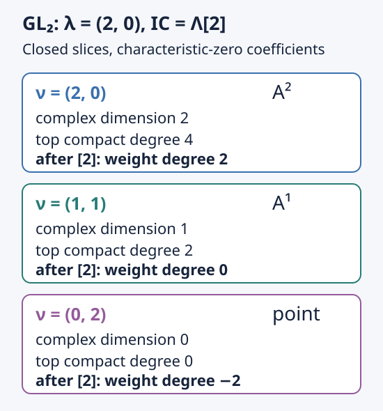
For the Schubert surface of \(GL_2\) with index \((2,0)\), the closed semi-infinite slices have complex dimensions2,1,0. The normalization \(IC=\Lambda[2]\) puts their top compact cohomology in degrees2,0,−2. Formula (19.1) gives their coordinates; the cone/link calculation gives the IC normalization.
Translating by the central coweight \((-1,-1)\) gives the \(SL_2\) surface indexed by \(\alpha^\vee=(1,-1)\). Its slice indices are \(\alpha^\vee,0,-\alpha^\vee\), with the same dimensions and degrees. The coefficient restriction matters: the link calculation uses invertibility of2 and is not a characteristic-two coefficient calculation.
20. MV cycles and top compact cohomology
An MV cycle of indices \((\lambda,\nu)\) is the reduced closure of an irreducible component of \(S_\nu\cap\operatorname{Gr}^{\lambda}\). The dimension theorem proves that all these components have dimension \(d=\langle\rho,\lambda+\nu\rangle\). Their closures are the top-dimensional components of the closed-Schubert slice, by §10.
For any pure \(d\)-dimensional complex algebraic variety \(Z\), \[ H_c^{2d}(Z,\Lambda)=\bigoplus_{C\in\operatorname{Irr}(Z)}\Lambda[C]. \tag{20.1} \] Here \([C]\) means the orientation generator on a smooth dense open of \(C\), extended in top compact cohomology. Choose disjoint smooth dense opens of the finitely many components, removing their intersections and singular loci. Their complement has dimension at most \(d-1\), so both its degrees2d−1 and2d vanish by the compact-support bound in §17. Localization identifies top compact cohomology with that of the smooth opens. Each such open is analytically connected by Connectedness and full faithfulness, Theorem 2.1. Complex coordinate changes preserve real orientation. Poincaré duality, Theorem 1.1 and Corollary 2.5, identifies the top compact cohomology of each connected oriented smooth open with \(\Lambda\), compatibly with restriction to smaller opens. This proves (20.1) and its canonical generators.
Thus the MV cycles give a canonical basis of the top compact cohomology of the open slice with constant coefficients. The minuscule and rank-two examples in §19 also identify that space with the corresponding \(F_\nu(IC_\lambda)\).
For the open inclusion \(j:O_\lambda\hookrightarrow Z_\lambda\), put \(\Delta_\lambda={}^pH^0j_!\Lambda[d_\lambda]\), the standard object. The adjunction proved in Gluing t-structures, Theorem 2.1, makes \(j_!\) right t-exact: it is left adjoint to the t-exact restriction. Hence \(A=j_!\Lambda[d_\lambda]\) belongs to \({}^pD^{\le0}\). With \(K={}^p\tau_{\le-1}A\), its truncation triangle is \(K\to A\to\Delta_\lambda\to K[1]\). On a boundary orbit \(i_\mu\), we have \(i_\mu^*A=0\), so \[ i_\mu^*\Delta_\lambda\simeq i_\mu^*K[1] \in D^{\le-d_\mu-2}. \tag{20.2} \] Indeed the ordinary support characterization for \(K\in{}^pD^{\le-1}\), together with lissity of its cohomology on the orbit, gives upper ordinary degree \(-d_\mu-1\); the shift by1 lowers it by one more.
Combine this with the slice dimensions as in §17. On the boundary of \(S_\nu\cap Z_\lambda\), compact cohomology of \(\Delta_\lambda\) occurs only in degrees at most \(h_\nu-2\). Both degrees \(h_\nu-1\) and \(h_\nu\) vanish, so localization identifies the open-slice group with \(F_\nu(\Delta_\lambda)\). Its open restriction is \(\Lambda[d_\lambda]\), and \(h_\nu+d_\lambda=2d\). Thus we have proved the general standard-object cycle basis \[ F_\nu(\Delta_\lambda) =H_c^{2d}(S_\nu\cap O_\lambda,\Lambda) =\bigoplus_C\Lambda[C]. \tag{20.3} \] This two-degree boundary margin eliminates the connecting map without an IC parity assumption.
The corresponding IC basis is obtained after the convolution and group-reconstruction arguments: Identifying the dual group, §8.5 proves full classical semisimplicity, then \(\Delta_\lambda=IC_\lambda\), and transfers (20.3) to the IC weight space. That later result is not an input to the concentration or canonical cohomology decomposition proved here. In particular one must not replace the two-degree standard-object margin above by an unproved deletion of the IC boundary.
The general identification \[ F_\nu(IC_\lambda)\stackrel{?}{\simeq} H_c^{2d}(S_\nu\cap\operatorname{Gr}^{\lambda},\Lambda) \tag{20.4} \] has not been proved in this lesson and is not used as an input. Strict IC boundary stalk bounds alone give degree at most \(h_\nu-1\) on the boundary; they do not eliminate the connecting map from that degree into the top open-slice cohomology. A complete proof must supply the additional argument, rather than treating a cycle citation as an identification. Formula (20.1), the standard-object basis(20.3), the general dimension theorem, and the explicitly computed examples do not have that gap. The canonical surjection \(\Delta_\lambda\twoheadrightarrow IC_\lambda\) gives, by exactness, a quotient of the cycle space; identifying it with the entire space requires proving that the kernel has zero weight functors.
21. Coefficient scope
The geometry of §§1–10 and(19.1) is proved over every algebraically closed field. The classical hyperbolic and weight-functor theorems in §§12–18 are proved over \(\mathbb C\) with the classical operations specified in §11.
For an algebraically closed field \(k\), \(\ell\ne\operatorname{char}k\), and a finite coefficient extension \(E/\mathbf Q_\ell\), Appendices M–P prove actual constructible operations, structural duality and their coefficient and adjunction comparisons. Appendix Q proves the canonical rational hyperbolic map on the specified projective support stages, weight concentration (17.2), exactness and the canonical splitting (18.4), retaining genuine finite-jet equivariance. The rational fusion statements in the later lessons remain separate proof obligations. Arbitrary algebraic coefficient extensions require finite scalar descent as well. No future lesson or external theorem is used to discharge those remaining obligations.
22. Exercises with solutions
Exercise 1 (easy). For \(GL_2\), \(\lambda=(3,0)\), give every nonempty closed slice, its Laurent coordinates, its dimension, and its weight degree.
Solution. Formula (19.1) gives indices \((3,0),(2,1),(1,2),(0,3)\). The coordinates are respectively powers0,1,2; powers−1,0; power−2; and no powers. Thus the slices are \(\mathbb A^3,\mathbb A^2,\mathbb A^1,\mathrm{pt}\), with dimensions3,2,1,0. Since \(2\rho=(1,-1)\), their degrees are3,1,−1,−3. For the two intermediate indices the open-orbit slices require the first listed coefficient to be nonzero; the extreme slices already lie in the open orbit. These calculations concern geometry and do not assume a formula for the general intersection complex.
Exercise 2 (easy). Compute the two weight functors and shifted cohomology for \(IC_{(1,0)}\) of \(GL_2\).
Solution. The closed variety is \(\mathbb P^1\), with \(IC=\Lambda[1]\). The attracting slices are \(\mathbb A^1\) and a point. The first has compact cohomology \(\Lambda\) in degree2; after the shift it contributes \(F_{(1,0)}=\Lambda\) in degree1. The point after the shift contributes \(F_{(0,1)}=\Lambda\) in degree−1. The sphere cell calculation gives \(H^0(\mathbb P^1,\Lambda)=H^2(\mathbb P^1,\Lambda)=\Lambda\), so its shifted cohomology has exactly those two degrees. The maps in §18 identify these copies canonically.
Exercise 3 (medium). Compute all weight functors for the \(SL_2\) Schubert surface of index \(\alpha^\vee\), and explain the coefficient restriction in the cone proof.
Solution. Its three slices are \(\mathbb A^2,\mathbb A^1,\mathrm{pt}\) at \(\alpha^\vee,0,-\alpha^\vee\). Section19 proves \(IC=\Lambda[2]\). The one-point compactifications of \(\mathbb C^2\) and \(\mathbb C\) are oriented spheres \(S^4\) and \(S^2\), so their only compact cohomology is \(\Lambda\) in degrees4 and2. After shifting by2, these give \(\Lambda\) in degrees2 and0; the point gives \(\Lambda\) in degree−2. The link is \(\mathbb{RP}^3\). Its boundary map2 is invertible over characteristic-zero \(\Lambda\), but vanishes over \(\mathbb F_2\), producing additional local cohomology. Therefore this proof cannot claim the same constant intersection complex with characteristic-two coefficients.
Exercise 4 (medium). Explain why dimensions and perversity give only one half of weight concentration. Supply the other half and deduce exactness.
Solution. On \(O_\lambda\), perversity and equivariant lissity give ordinary degree \(b\le-d_\lambda\). The slice dimension gives compact degree at most \(2\rho(\lambda+\nu)\). Adding yields total degree at most \(h_\nu\), which proves only upper vanishing. Apply this estimate to the perverse dual on the opposite slice; its bound is \(-h_\nu\). Point duality converts it to lower vanishing below \(h_\nu\) for \(R\Gamma(T_\nu,p^{-!}P)\). The proved canonical hyperbolic map identifies this complex with compact cohomology of \(S_\nu\), giving both vanishings. A short exact sequence in the heart gives a triangle; the compact cohomology groups in the adjacent degrees vanish, so its degree-\(h_\nu\) sequence is short exact.
Exercise 5 (hard). Construct the direct-sum cohomology isomorphism, including its maps. Explain why an arbitrary splitting of a filtration is unnecessary.
Solution. In one component all heights have the same parity. The finite union \(Y_{\le h}\) is closed by the semi-infinite closure theorem, and \(U_{\ge h}\) is its complementary upper open. The open \(U_{>h}\) has no compact cohomology in degrees \(h,h+1\); localization therefore makes restriction from \(U_{\ge h}\) to \(Y_h\) an isomorphism in degree \(h\). The closed lower union \(Y_{<h}\) has no degrees \(h-1,h\), so extension by zero from \(U_{\ge h}\) to proper \(Y\) is also an isomorphism in that degree. Invert the first and compose with the second. The height stratum is the disjoint open-and-closed union of the slices of height \(h\), so its compact cohomology is their direct sum. Repeat in every height and component. Every arrow was a restriction or extension map in a localization triangle, so the resulting isomorphism is natural and canonical, with no choice of filtration splitting.
Appendix A. Finite covers and the geometry of cohomological comparison
The algebraic inputs needed for comparison in positive characteristic include extension of tame covers, finite arithmetic normalizations and suitable smooth neighborhoods. We prove those inputs here before applying them to the rational-adic arguments of this course.
A.1. Three geometric assertions and their proof order
The precise assertions are the following.
- For a normal integral Noetherian base \(S\), a smooth relative curve \(X\to S\) with nonempty geometrically connected fibres and a section has the following extension property: a generic finite étale \(G\)-torsor whose order is invertible on \(S\), and whose generic section fibre is split, extends uniquely to a finite étale \(G\)-torsor over \(X\). This is Corollary A.13.2.
- The normalization of a finite-type domain over \(\mathbb Z\) in any finite extension of its fraction field is finite. This is Theorem A.14.2, including imperfect residue fields.
- Every point of a smooth map has an affine étale neighborhood \(U\to X\) factoring through an affine étale \(V\to S\), with \(U\to V\) affine smooth, a section and nonempty geometrically connected fibres. This is Theorem A.15.5, over arbitrary bases.
Sections A.2–A.5 supply the trace lattice, puncture and formal comparison. Section A.7 proves dense-fibre purity using those comparisons. Section A.8 reduces the curve extension to a trait, and Sections A.9–A.13 prove that trait step by a surface normal form and the valuation of the section. Sections A.14–A.15 provide the arithmetic models and smooth neighborhoods. The coefficient scope in §21 is unchanged: these geometric results supply inputs to cohomological comparison, rather than asserting the rational-adic weight theorem on their own.
A.2. Finite separable normalization and its actual lattice
A.2.1. Integral elements form a ring
Let R be a commutative ring and let z₁,…,zₛ belong to a commutative R-algebra, each satisfying a monic polynomial over R. The algebra R[z₁,…,zₛ] is a finite R-module: powers at least the corresponding polynomial degree are reduced to lower powers, so finitely many bounded monomials generate it.
Every element t of this algebra is integral. Choose module generators including1. Multiplication by t is represented on these generators by a matrix M over R (relations among the generators cause no difficulty). The adjugate identity for T−M shows that its monic determinant polynomial annihilates multiplication by t on all generators. Applied to1, it gives a monic equation for t. The adjugate identity follows by the cofactor expansion, so this argument needs neither freeness of the finite module nor an unproved characteristic-polynomial theorem. In particular sums and products of integral elements are integral.
A.2.2. Nondegeneracy of separable trace
Let K be a field and let L be a finite product of finite separable field extensions of K. After extension to a separable closure Kˢ, its algebra becomes a finite product of copies of Kˢ. To see this explicitly, generate each field by a finite tower of separable elements; at each step its separable minimal polynomial factors into distinct linear factors, and the Chinese remainder maps split that step into the corresponding factors. Iterating gives the product, with the number of factors equal to dim_K L.
The trace of multiplication in a product algebra is the sum of its coordinates. Its bilinear trace pairing is therefore the ordinary diagonal pairing after extension to Kˢ, which is nondegenerate. A linear map of finite K-vector spaces has the same matrix rank after a field extension, by its nonzero minors. Hence
\[ L\longrightarrow\operatorname{Hom}_K(L,K),\qquad z\longmapsto(w\longmapsto\operatorname{Tr}_{L/K}(zw)). \]
is an isomorphism. This is valid even when char(K) divides dim_K L. No division by that dimension or averaging by a group order occurs.
A.2.3. Normalization is finite in this separable situation
Lemma A.2.3. Let R be a Noetherian integrally closed domain, K=Frac(R), and L a finite separable K-algebra as in §A.2.2. Its integral closure N of R in L is a finite R-algebra. Integral closure commutes with localization at a nonzero element of R.
Proof. First choose a K-basis α₁,…,αᵣ consisting of integral elements. Start with any basis. An element z algebraic over K satisfies a monic equation
\[ z^d+c_1z^{d-1}+\cdots+c_d=0. \]
Choose a nonzero a∈R with all a c_i∈R. Then az satisfies a monic equation with coefficients aⁱc_i∈R. Scaling each basis element separately preserves linear independence and makes it integral. The same construction works for a product of fields by taking a product of the equations of its coordinates.
Let β₁,…,βᵣ be the trace-dual basis, supplied by §A.2.2. For z∈N, every zα_i is integral by §A.2.1. Its trace is integral over R: the trace is the sum of its images under the embeddings in the separable closure, and these images satisfy the same monic equation. The sum is integral by §A.2.1. That trace belongs to K, hence belongs to R by integral closedness. Therefore
\[ z=\sum_i\operatorname{Tr}(z\alpha_i)\beta_i\in\bigoplus_iR\beta_i. \]
N is an R-submodule of this finite free module, so it is finitely generated because R is Noetherian. Its unit and products already belong to N by §A.2.1, giving the finite algebra.
For localization, an element integral over R_a satisfies an equation with coefficients c_i/a^{t_i}, with c_i∈R. Choose n with ni≥t_i for every coefficient. Multiplying the element by aⁿ gives a monic equation with coefficients c_i a^{ni−t_i}∈R. Thus the element belongs to N_a. The reverse inclusion follows by localizing a monic equation. This proves the localization assertion. □
This proves the finite normalization needed for a generically separable cover over an already normal Noetherian affine chart. It does not prove finiteness of a purely inseparable normalization over an arbitrary base, or normality of a smooth chart or a power-series ring.
A.2.4. A common denominator for every power
Lemma A.2.4. For a Noetherian domain R and u∈Frac(R), integrality is equivalent to the existence of c≠0 in R with cuⁿ∈R for every n≥0.
Proof. A monic equation makes R[u] a finite module spanned by finitely many powers. Clearing those powers' denominators gives c. Conversely R[u]⊂c⁻¹R is a submodule of a finite free module, hence finite; multiplication by u and the determinant argument in §A.2.1 give a monic equation. □
For completeness, submodules of Rʳ are finite when R is Noetherian: project to one coordinate, choose lifts of generators of the resulting ideal, and apply induction on r to the kernel. This is the module finiteness used here and in Lemma A.2.3. Free human-source comparison: Stacks, Lemma 10.37.4; the complete argument required here is above.
A.3. A finite étale algebra over a normal domain is that normalization
Use the algebraic finite-étale description: a finite locally free algebra C whose geometric fibres are finite products of finite separable fields. Let R be a normal Noetherian domain. The trace pairing of C is perfect. Indeed, in a local free basis its determinant is nonzero in every residue field by §A.2.2 applied to that fibre, and is therefore a unit. These local trace isomorphisms agree, since they come from the same multiplication trace.
C injects into its generic algebra C_K, because it is locally free over the domain. It consists of integral elements, by the multiplication-matrix argument of §A.2.1. Conversely, if z∈C_K is integral over R, then Tr(zc)∈R for every c∈C, by the same integral trace argument used in §A.2.3. The perfect trace pairing supplies c₀∈C giving this functional. Over K, nondegeneracy then gives z=c₀. Consequently C is exactly the integral closure of R in C_K.
This argument also proves the asserted equality on every localization, using §A.2.3. It avoids assuming that normality is automatically preserved by an étale map as an unstated premise.
A.4. Splitting a cover over a punctured formal base
A.4.1. Functions across the puncture
Let (A,m) be a Noetherian local domain with a regular sequence a,b∈m. Thus a is a nonzerodivisor and b is a nonzerodivisor on A/aA. Put U=Spec(A)−{m}. Then Γ(U,O)=A.
First, b is a nonzerodivisor on every A/aⁿA. If bc∈aⁿA, reduction modulo a gives c=a c₁. Cancellation of a reduces the claim to exponent n−1; induction gives c∈aⁿA. Powers of b are likewise injective. Hence, inside Frac(A),
\[ A_a\cap A_b=A. \]
if f/aⁿ=g/bʳ, then bʳf∈aⁿA, so f∈aⁿA. A section over U restricts to elements in A_a and A_b with equal generic values, and is therefore the restriction of an element of A. Agreement on the dense principal open D(a) implies agreement on all U: on each nonempty affine open both regular functions inject into the fraction field. This proves the assertion, including uniqueness.
A.4.2. Lifting an ordered split algebra through nilpotents
If J is a nilpotent ideal in a commutative ring R, every idempotent of R/J lifts uniquely to R. For a square-zero ideal and a lift u, the element 2u−1 is a unit, since its square is1 modulo J. Replacing u by
\[ u-(u^2-u)(2u-1)^{-1} \]
gives an idempotent; direct expansion shows the error is zero when J²=0. Successive powers of J give existence for any nilpotent J. For uniqueness, if e and f are idempotents with the same reduction, e(1−f) and f(1−e) are idempotents in J. A nilpotent idempotent is zero, so e=ef=f.
Ordered orthogonal idempotents lifting an ordered decomposition remain orthogonal: their pairwise products are idempotents reducing to zero. Their sum is the unique lift of1, so is1. In a finite locally free algebra, the factors therefore lift the factor ranks. A rank-one unital algebra is the base ring itself. Locally choose a module basis v, write1=c v and v²=d v; the unit law gives cd=1, so the unit is a basis and the unit map is an algebra isomorphism. Thus an ordered split finite étale algebra over a nilpotent quotient lifts uniquely as an ordered split algebra.
The construction is unique, hence its local lifts glue without an additional descent assumption.
A.4.3. The formal split-cover lemma
Lemma A.4.3. Let A be as in §A.4.1, let B=A[[x₁,…,x_d]] with d≥1, and assume explicitly that B is a Noetherian integrally closed domain. Put I=(x₁,…,x_d), V=Spec(B)×_{Spec(A)}U. Let C be a finite étale algebra sheaf on V. If its zero-section restriction has a specified ordered splitting O_Uʳ, then C≅O_Vʳ, extending that splitting.
Proof. V is a nonempty open in an integral scheme, so is connected. The finite locally free rank of C is the same r everywhere. Let K=Frac(B) and let L be its generic algebra. Lemma A.2.3 gives the finite integral closure N of B in L. Section A.3 shows that N restricts to C on V: check on each principal affine chart of V, where that section identifies the finite étale algebra with the same integral closure; localization in Lemma A.2.3 identifies its source.
For n≥1 let V_n=V×_{Spec(B)}Spec(B/Iⁿ). Its reduction at I is U. Section A.4.2 lifts the prescribed splitting uniquely to
\[ C|_{V_n}=\mathcal O_{V_n}^{\,r}. \]
The liftings are compatible as n decreases. Since B/Iⁿ is a finite free A-module with basis the monomials of total degree below n, §A.4.1 gives
\[ \Gamma(V_n,\mathcal O)=A[x_1,\ldots,x_d]/I^n=B/I^n. \]
Explicitly, the affine projection to U identifies its sheaf of functions with that finite direct sum of copies of O_U; sections act coordinate by coordinate. Inverse limit over n is B by the definition of formal power series.
Every element z∈N restricts to C, and then to its ordered components on every V_n. Taking these component sections and their compatible limits defines a B-algebra map
\[ \alpha:N\longrightarrow B^r. \]
It is an algebra map because each finite-level component map is one, and all equations are preserved by inverse limit. Its multiplication trace satisfies
\[ \operatorname{Tr}_{L/K}(z)=\sum_i\alpha_i(z).\tag{A.4.1} \]
To verify the equality rather than assume it, the left side belongs to B by §A.2.3. On V it is the trace of the finite locally free algebra C; trace commutes with reduction of a finite free multiplication matrix. On V_n the ordered splitting identifies that trace with the displayed sum modulo Iⁿ. The sections equality above therefore makes the two elements equal in B/Iⁿ for every n. Their difference is zero in B, since a formal power series in every Iⁿ has all coefficients zero.
Extend α to K. If z lies in its kernel, equation(A.4.1) applied to zw gives Tr(zw)=0 for all w∈L. Here N spans L over K, by the integral-basis construction in Lemma A.2.3, so extending (A.4.1) indeed permits every w. Nondegeneracy in §A.2.2 forces z=0. Source and target have the same K-dimension r; hence α_K is an algebra isomorphism.
Finally α carries integral closure to integral closure. The integral closure of the diagonal B in Kʳ is Bʳ: any integral tuple has every coordinate integral over B, hence in B by normality; a tuple of B-elements satisfies the product of their monic linear polynomials. Thus α(N)=Bʳ. Restriction to V proves C=O_Vʳ, with the specified zero-section ordering. □
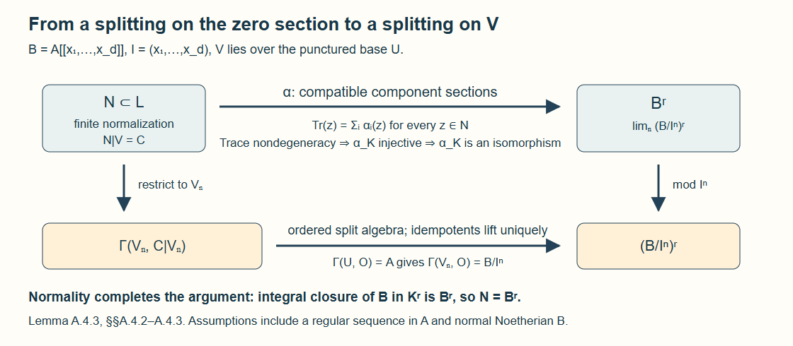
Figure 1. The actual algebra maps of Lemma A.4.3. The lower row is the compatible finite-level ordered splitting, not an assumed global splitting. Equation(A.4.1) makes the generic map injective by the nondegenerate separable trace pairing; normality then identifies N with Bʳ. Proof locators: §§A.4.2–4.3. Free human-source comparison: Stacks, Lemma 58.26.1. Reproducible SVG.

A.4.4. Trace and the group order
The splitting argument is independent of the numerical group order. Nondegeneracy of the trace pairing concerns a separable algebra; it does not require Tr(1) to be a unit. In contrast, the averaging and invariant projections in §A.11.4 and §A.12 use an explicitly invertible group order.
A.4.5. Noetherianity of the power-series ring
The Noetherianity hypothesis on B in Lemma A.4.3 follows from that on A, with the following direct proof. First a polynomial ring over a Noetherian ring is Noetherian. For an ideal J⊂A[t], let J_n be the ideal of coefficients of tⁿ in elements of J of degree at most n. Multiplication by t makes J_n⊂J_{n+1}. This chain stabilizes, say at N, and every J_n is finitely generated. Choose polynomial representatives for finite generating lists at n=0,…,N. For a polynomial in J of degree k≥N, use the representatives at N, multiplied by t^{k−N}, to subtract its leading coefficient and reduce its degree. At k<N use the representatives at k. Finite downward induction expresses it in the ideal generated by the finitely many chosen representatives. Repeating one variable at a time proves the multivariable assertion.
For an ideal H⊂A[[x₁,…,x_d]], take the homogeneous initial forms of its nonzero elements in the polynomial ring A[x₁,…,x_d], with the order given by least total degree. The ideal generated by these forms has a finite generating sublist of the actual initial forms: first choose finite generators in the ideal, and then take the finitely many initial forms occurring in their finite expressions. Choose corresponding series h₁,…,h_s∈H, of respective orders e_i.
For h∈H of order k, its homogeneous degree-k initial form is a sum of the initial forms of h_i with homogeneous polynomial coefficients of degrees k−e_i (coefficients for negative degrees are zero). Subtract that sum using the series h_i. The remainder is zero or has strictly greater order. Repeat on the remainder. The coefficients attached to a fixed h_i now have orders tending to infinity, so their sum is a well-defined formal series b_i. In each finite degree only finitely many subtractions occur, hence coefficientwise
\[ h=\sum_i b_ih_i. \]
Thus H is finitely generated and B is Noetherian. No assertion that H was already closed is needed: the equality itself is established in every coefficient. The integral-closedness hypothesis is supplied next.
A.4.6. Normality by the actual coefficient bound
Lemma A.4.6. If A is a Noetherian normal domain, A[[t₁,…,t_d]] is a Noetherian normal domain.
Proof. Noetherianity is §A.4.5; products of nonzero initial homogeneous polynomials give the domain assertion. For one variable set B=A[[t]], F=Frac(A). An integral w≠0 in Frac(B) has B[w] finite, so some nonzero h∈B clears every power wʲ. Inside F((t)), write initial terms w=c tⁿ+… and h=b tᵐ+…. Then hwʲ∈B forces m+jn≥0 and bcʲ∈A for all j≥0. Hence n≥0, and Lemma A.2.4 and normality give c∈A. Subtract c tⁿ; the remainder is integral by §A.2.1. Repeating determines every coefficient in A, proving w∈B; zero already belongs to B. Iteration gives all d: iterated and multivariable formal series are the same coefficient arrays, with finite sums defining each product coefficient. □
The Laurent expansion used here is obtained by factoring a nonzero denominator as tᵏ times a series with nonzero constant term in F, and recursively inverting that series. Thus no completeness of A and no identification between localized and completed series rings is assumed. Free human-source comparison: Stacks, Lemma 10.37.9; the proof used is fully written here.
A.4.7. The formal splitting statement in the required base scope
Corollary A.4.7. Let (A,m) be a normal Noetherian local domain with dim(A)≥2, B=A[[x₁,…,x_d]], d≥1, and V=Spec(B)×_{Spec(A)}(Spec(A)−{m}). Every finite étale cover of V with a specified ordered split zero-section restriction is split on V, with that ordering.
Proof. The earlier programme proof Discrete valuation rings, normal rings and Serre's criterion, Proposition 3.4 constructs a regular pair in A: choose nonzero a∈m; the associated primes of A/aA are height one by its Theorem 3.2, so finite prime avoidance chooses b∈m outside them. Multiplication by b on A/aA is injective. The needed regular sequence is therefore present. Lemma A.4.6 supplies normal Noetherian B. All hypotheses of Lemma A.4.3 hold, giving the assertion. □
A.4.8. A single ordered factor also lifts
The same mechanism lifts a specified rank-one factor, without requiring the whole zero-section cover to be split. Suppose C|U=O_U×D with specified projection to O_U. Section A.4.2 uniquely lifts its idempotent on every V_n; the lifted rank-one factor is O_{V_n}. Component sections of N therefore give a B-algebra map α:N→B extending that projection.
After passage to K=Frac(B), α_K maps the finite product of separable fields L to K. The orthogonal coordinate idempotents map to orthogonal idempotents summing to1 in a field, so exactly one goes to1. Its field factor maps injectively to K as a K-algebra and therefore is K itself. N is the product of the integral closures in these field factors: their idempotents are integral, and each tuple of integral elements is integral by §A.2.1. The selected factor of N is thus B, by normality. Projection to it restricts on V to the required rank-one factor and retains the original zero-section projection. Its finite-level restrictions agree by the uniqueness in §A.4.2.
This proves existence of the lifted section in algebraic factor form. It makes no assertion that an arbitrary morphism functor has already been represented or that all cover comparisons have been completed.
A.5. An elementary finite-module freeness step
Lemma A.5.1. Let (R,m) be Noetherian local, x∈m, and M a finite R-module. If x acts injectively on M and M/xM is finite free over R/xR, then M is free over R, of that same rank.
Proof. Lift a basis and form φ:Rʳ→M. Its finite cokernel Q satisfies Q=xQ, so Q=0. The needed local Nakayama argument is explicit: if generators q_i satisfy q_i=xΣ_j a_ij q_j, multiply by the adjugate of1−x(a_ij). Its determinant is1 modulo m, so is a unit and every q_i is zero.
The kernel K of φ is finite, since R is Noetherian. A vector k∈K has zero reduction because the reduced basis map is an isomorphism, so k=xv for v∈Rʳ. Then xφ(v)=0, whence φ(v)=0 by injectivity of x on M. Thus K=xK, and the same local Nakayama argument gives K=0. Therefore φ is an isomorphism. □
This supplies the algebraic lifting step when a finite cover's extended module is known to have the required regular-sequence depth. That depth and the étaleness of the resulting algebra still require their own proofs; finite module freeness is not being used to skip them.
A.5.2. Explicit module Hartogs and flat passage
Lemma A.5.2. Let (R,m) be Noetherian local, M finite, and a,b∈m an M-regular pair. For any open W⊂Spec(R) containing D(a)∪D(b), the map M→Γ(W,M~) is an isomorphism.
Proof. First b acts injectively on M itself. If bz=0, regularity modulo a gives z=a z₁. Cancel a to obtain bz₁=0 and repeat; z∈∩_n aⁿM=0. The last equality is the proved Krull intersection theorem, Noetherian and Artinian rings, Theorem 6.1, for the finite module M and (a)⊂m.
Regularity of b on M/aⁿM follows by induction exactly as in §A.4.1, canceling a at each step. Injections by a and b permit the localizations M_a and M_b to be viewed inside M_ab. If z/aⁿ=z'/bʳ, cross multiplication gives bʳz=aⁿz'. The just-proved injectivity modulo aⁿ forces z=aⁿz₀, so the common fraction belongs to M. Consequently
\[ M_a\cap M_b=M\quad\text{inside }M_{ab}. \]
The two restrictions of a section on W therefore come from one z₀∈M. On any principal affine D(s)⊂W its difference from z₀ vanishes in M_as. Multiplication by a remains injective on M_s, so M_s→M_as is injective, and the difference is zero there. Principal opens cover W, proving both existence and uniqueness. □
If R→S is flat, tensoring the two defining injective sequences preserves regularity of a,b on M⊗_R S. When S is Noetherian local and their images remain in its maximal ideal, Lemma A.5.2 applies over S. Thus, for a finite algebra extended with this module depth, a split restriction on the indicated punctured open identifies the whole algebra with the split algebra: its multiplication and unit are determined on that open as well. This supplies the uniqueness step needed to compare an extended algebra after the formal flat passage. It does not presume that normalization commutes with completion.
A.5.3. Generating bundles on an open affine subscheme
Let W be a quasi-compact open of Spec(R), and E a finite locally free sheaf on W. On a finite principal-open cover, sections of E are the equalizer of sections on the cover and its pairwise intersections. These intersections are affine principal opens. Localizing this finite equalizer at s commutes with it, because localization is exact; affine quasi-coherent module sections localize. Hence
\[ \Gamma(W,E)_s=\Gamma(W\cap D(s),E). \]
Choose a finite principal cover D(s_j)⊂W on which E is free. Each local basis is represented after this localization by a global section divided by a power of s_j. Its global numerator is a basis up to units on D(s_j). The finitely many resulting global sections generate E everywhere. They give a surjection O_Wʳ→E, split locally. Apply the same argument to E*: dualizing its split surjection gives an embedding E→O_Wˢ with locally free cokernel. These assertions require no normality of R.
A.5.4. The formal comparison for finite bundles over a depth-two base
Let (A,m) be any Noetherian local ring with a regular pair a,b∈m, not necessarily reduced or normal. Set B=A[[x₁,…,x_d]], I=(x₁,…,x_d), U=Spec(A)−{m}, V=Spec(B)×_A U, and V_n=V×_B Spec(B/Iⁿ). The ring B is Noetherian by §A.4.5 and is local: a series is a unit exactly when its constant coefficient is a unit in A, as recursive inversion shows. Coefficientwise injection shows that a,b are a B-regular pair. Lemma A.5.2 with M=A and M=B therefore gives
\[ \Gamma(U,\mathcal O)=A,\qquad\Gamma(V,\mathcal O)=B,\qquad\Gamma(V_n,\mathcal O)=B/I^n. \]
The third equality uses the finite monomial basis over A exactly as in §A.4.3.
For a bundle E on V, §A.5.3 first embeds E→O_Vʳ with locally free cokernel Q, and then embeds Q→O_Vˢ. Thus
\[ 0\longrightarrow E\longrightarrow\mathcal O_V^{\,r}\longrightarrow\mathcal O_V^{\,s} \]
is exact at its first two terms and remains so under any base change: both constituent short sequences split locally. Taking sections and inverse limits identifies both Γ(V,E) and lim_n Γ(V_n,E|V_n) with the kernel of the same matrix Bʳ→Bˢ. Inverse limit is left exact, directly from its compatible-coordinate definition. Applying this result to Hom(E,F)=E*⊗F proves that compatible formal morphisms of finite bundles are exactly the actual morphisms on V. Their compositions agree by restriction and uniqueness.
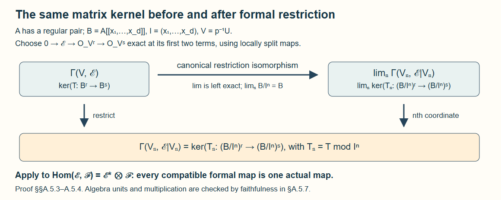
Figure 2. Section A.5.4 uses the actual locally split presentation, so restriction to V_n retains its kernel. Each lower kernel is computed over B/Iⁿ, and their inverse limit is the upper kernel over B. Applying this to E*⊗F gives full faithfulness, including compatibility with compositions. Free human-source comparison: Stacks, Lemma 52.15.1, quasi-affine case; the global generators and matrix-kernel proof required here are written in §§A.5.3–5.4. Reproducible SVG.

A.5.5. Trace idempotents over an arbitrary finite-étale base
For a finite locally free algebra C with finite separable geometric fibres, its trace pairing is perfect over every base ring: in a local free basis its determinant is a unit at every maximal ideal by §A.2.2. Let e=Σ_i c_i⊗c_i∨ in C⊗C for trace-dual bases. This tensor is basis-independent because it represents the identity under
\[ C\otimes C\longrightarrow\operatorname{End}(C),\qquad u\otimes v\longmapsto(z\longmapsto u\operatorname{Tr}(vz)). \]
Commutativity of multiplication and trace gives (c⊗1)e=(1⊗c)e for every c. Also μ(e)=1: for every z,
\[ \operatorname{Tr}(\mu(e)z)=\sum_i\operatorname{Tr}(c_i^\vee zc_i)=\operatorname{Tr}(m_z)=\operatorname{Tr}(z), \]
where the middle sum is the diagonal sum of the multiplication matrix in the c_i basis. Perfectness of the pairing gives the equality. These two identities imply e²=e by multiplying e by its displayed expansion. All identities are tensor identities over the base, not equalities tested only on residue fields; nilpotents in the base cause no problem.
For an algebra map ψ:C→R, set f=(id⊗ψ)(e). Then cf=ψ(c)f and ψ(f)=1, so f²=f and fC=Rf. Hence C=Rf×(1−f)C, and ψ is its rank-one projection. This proves the algebraic split-factor description of a section over any base.
A.5.6. Lifting algebra maps across a nilpotent ideal
Let J⊂R be nilpotent, and C,D finite étale R-algebras. An algebra map C/JC→D/JD gives a rank-one projection of the finite étale D/JD-algebra (C/JC)⊗(D/JD) to D/JD. Section A.5.5 supplies its idempotent. Section A.4.2 lifts it uniquely to C⊗_R D; its finite locally free factor has rank one because nilpotent reduction has the same prime points. That factor is D by the rank-one unit argument of §A.4.2. Its projection gives a unique D-algebra map C⊗D→D, hence an R-algebra map C→D, lifting the given one. Conversely any lift has exactly this idempotent, by §A.5.5 and uniqueness of the idempotent lifting, so is the same map.
The construction is unique on overlaps and hence glues for algebra sheaves on nilpotent thickenings. Given inverse maps modulo J, their lifted composites are identities by uniqueness. This proves all nilpotent rigidity used next, rather than importing an equivalence theorem for an étale site.
A.5.7. Every finite formal cover comes from its zero-section restriction
In the depth-two setting of §A.5.4, let C be a finite étale algebra on V and C₀ its zero-section restriction on U. Projection p:V→U exists by the definition of V. Set D=p*C₀. On V_n the identity of their common zero restriction lifts uniquely, by §A.5.6, to an isomorphism C|V_n≅D|V_n. Its inverse and compatibility between different n follow from the same uniqueness.
Section A.5.4 gives an actual module isomorphism C→D. It respects multiplication and unit: their compatibility is equality of two actual maps between finite locally free sheaves, verified at every V_n and then forced by faithfulness in §A.5.4. The actual inverse has its prescribed inverse completions, so both composites are identities. The same argument lifts any algebra map between two zero-section restrictions. Consequently
\[ \operatorname{FEt}(V)\simeq\operatorname{FEt}(U), \]
with inverse given by p*. This now holds for a possibly nonnormal, nonreduced depth-two Noetherian local A. It covers exactly V=p⁻¹U, the open needed in the cover-extension argument, and does not assert the same description for unrelated larger opens.
Free human-source comparison: Stacks, Lemma 58.26.1 and Lemma 58.17.1. Sections A.5.3–A.5.6 supply the actual finite-bundle, trace-idempotent and nilpotent-map proofs, including the unit and multiplication checks.
A.5.8. The finite algebra across a depth-two base puncture
Let A,U be as in §A.5.4 and E a finite locally free algebra on U. Section A.5.3 embeds E→O_Uʳ. Since Γ(U,O)=A, its algebra of global sections M embeds in Aʳ and is finite by Noetherianity. Localization in §A.5.3 identifies M~|U=E. Its unit and multiplication come from those on E.
For M=0 the extension and uniqueness assertions are immediate. Otherwise the regular pair a,b of A is also M-regular. Multiplication by a is injective on every locally free E chart and hence on global sections. If bz=az' in M, local freeness and regularity modulo a express z=a t on every chart; injectivity of a makes the t unique and they glue. Thus z∈aM, proving regularity of b modulo a. Finite nonzero M cannot have M/(a,b)M=0 because (a,b)⊂m and the Nakayama argument in Lemma A.5.1 applies. Lemma A.5.2 now says that M is the unique finite extension with this regular pair: every other such module is recovered from its restriction by the same sections calculation. Algebra identities are likewise determined on U.
This proves the finite extension and uniqueness over a base puncture. Section A.7.2 checks the corresponding regular-pair depth for the finite global cover algebra on the smooth total space; section7.6 applies that check to the formal comparison of §A.5.7.
A.6. What the formal comparison controls
The two formal arguments have distinct hypotheses. Section A.4 identifies a split finite cover by its component maps and the separable trace pairing over a normal ring. Section A.5.4 instead identifies all compatible formal maps of bundles by an actual matrix kernel, allowing a nonnormal and nonreduced base with a regular pair. Section A.5.7 applies that full faithfulness to multiplication and units, so it compares finite étale algebras as algebras.
In both arguments, V is the inverse image of the punctured base inside Spec(A[[x₁,…,x_d]]). Its formal reductions are V_n, and their functions are B/Iⁿ. Localization of B is not identified with the completion of a localization. The global matrix and compatible component maps are what make the inverse-limit calculation valid on this particular open.
A.7. Global depth and dense-fibre purity over the required normal base
This section proves the following bounded statement. Let (A,m) be a normal Noetherian local domain of dimension at least two, U=Spec(A)−{m}, and X→Spec(A) a smooth finite-type map with nonempty geometrically connected fibres. Let L be a finite separable algebra over the function field of X, and N its normalization algebra on X. Suppose N is finite étale over X_U and at the generic point of the closed fibre X_s. Then N is finite étale on all of X. A section of X over A is not required for this statement: §A.7.3 produces a section after a controlled faithfully flat local change at a hypothetical bad point.
The mathematical arguments are written below. The free human-source comparison for the geometric statement is Stacks, Lemma 58.26.3. We use the actual proofs in earlier AG-CA lessons, with exact theorem locators; no bibliography entry takes the place of any of those arguments.
A.7.1. Normality of the smooth total space
First a polynomial ring over a normal Noetherian domain A is normal. Put F=Frac(A). The Euclidean algorithm proves F[t] is integrally closed: write an integral fraction f/g in coprime form. Clearing a monic equation shows g divides a power of f, and the Bézout identity for f,g forces g to be a unit. Thus an element w integral over A[t] is a polynomial in F[t]. By §A.2.4 some nonzero h∈A[t] clears every power wⁿ. If b,c are the leading coefficients of h,w, respectively, then bcⁿ∈A for every n. Section A.2.4 and normality give c∈A. Subtract the leading term c t^d; integrality is preserved by §A.2.1, and downward induction on degree puts every coefficient in A. Iteration handles several variables. Noetherianity is proved in §A.4.5, and localization of integral closure is §A.2.3, also valid with L=F.
Next an étale algebra C of finite presentation over a normal Noetherian ring R is normal. At q∈Spec(C), with contraction p, the flat local map R_p→C_q has a finite separable field as its local closed fibre. Flatness and the fibre description are proved in Smooth algebras and the Jacobian criterion, Theorem 6.1 and Corollary 6.2 and Formally smooth, unramified and étale maps, Theorem 7.2 and Corollary 7.3. The local dimension formula, Dimension theory, Theorem 5.1, gives dim(C_q)=dim(R_p).
If that dimension is zero, C_q is its field fibre. In dimension one, R_p is a DVR and its uniformizer generates the maximal ideal of C_q, since the quotient is the local field fibre. Thus C_q is regular. In dimension at least two, the regular pair in R_p supplied by Normal rings, Proposition 3.4 stays regular after flat local passage to C_q. The quotients are proper because the pair remains in the local maximal ideal. Hence C satisfies (R₁) and (S₂); the fully proved Serre criterion, Theorem 4.4 of that lesson, makes C normal. The argument is local on R, so includes a normal ring with several disjoint components.
The local standard form in the formally smooth lesson, Theorem 5.1, makes a smooth chart étale over a polynomial algebra in its free coordinates. Indeed, after choosing the invertible Jacobian block of the dependent coordinates, a lift through a square-zero ideal is obtained by solving the linear error equation with that block. The solution is unique when the free coordinates are fixed. Iterating handles nilpotent ideals; finite presentation gives the asserted étale map. The polynomial and étale arguments above therefore prove normality of X and of every geometric fibre.
A connected normal Noetherian scheme is integral: its irreducible components are disjoint open and closed components, by the normal-ring component proof in the normal lesson, Lemma A.4.3. Thus each geometric fibre here is integral. Every component of X dominates Spec(A). On an affine smooth chart, multiplication by a nonzero element of A is injective by flatness, whereas a minimal prime is associated and cannot contain a nonzerodivisor. Its contraction to A is therefore zero. The integral generic fibre meets every component, so there is only one. Consequently X is integral. Section A.2.3 now constructs its finite normalization N on affine charts; localization makes those algebras agree on overlaps. In a product separable generic algebra, N is a product of normal domains. This is the only normalization used in this section.
A.7.2. A base regular pair stays regular on the cover algebra
Choose nonzero a∈m and b∈m outside the associated primes of A/aA, as in the normal lesson, Proposition 3.4. Then a,b is an A-regular pair. In particular b avoids every height-one prime containing a: these are precisely the minimal primes over (a), and all are associated to A/aA by the same lesson's Theorem 3.2 and the minimal-support theorem.
Let R be an affine normal smooth chart of X and N_R its finite normalization. Multiplication by a is injective on N_R because it injects into the product of generic fields. For each factor of N_R, every associated prime Q of its quotient by a has height one, by Normal rings, Theorem 3.2. Going down over the normal domain R, proved in Integral extensions, Theorem 4.3, shows that P=Q∩R has height at most one. It contains the nonzero element a, so has height one. Flat going down for A→R, proved in Tor and flat modules, Theorem 6.3, then shows that p=P∩A has height at most one. Again it contains a≠0, so has height one. Therefore b∉p, and hence b∉Q.
The zero-divisor description by associated primes makes b injective on N_R/aN_R. Thus the same pair is regular on every nonzero local module of N above the closed fibre. Its quotients are proper by finite-module Nakayama, since a,b are in that point's maximal ideal. Flat base change preserves the two injections, as well as the quotient that defines the second one. This applies even when the new base is nonnormal or nonreduced. We have proved exactly the global-cover depth needed in §§A.5.2 andA.5.8; normality after an arbitrary base change is neither asserted nor needed.
A.7.3. A residue-field extension and an actual section
Let z be a closed point of X_s, let κ=A/m, and put κ'=κ(z). This is a finite extension, by the fully proved Weak Nullstellensatz, Theorem 2.1. It may be inseparable.
Choose a finite tower κ=κ₀⊂κ₁⊂⋯⊂κ_l=κ', each obtained by adjoining one element. Starting with A₀=A, lift the monic minimal polynomial at each step to A_i[t] and form A_{i+1}=A_i[t]/(lifted polynomial). Division by the monic polynomial gives a free basis 1,t,…,t^{e−1}; thus every step is finite free. Its quotient by the preceding maximal ideal is exactly the field κ_{i+1}. Since a maximal ideal in a finite integral algebra contracts to a maximal ideal (Integral extensions, Theorem 3.3), there is just one maximal ideal upstairs. The ring A_{i+1} is local, and its maximal ideal is the extension of the preceding one. The resulting A'=A_l is a faithfully flat finite free local A-algebra with
\[ A'/\mathfrak mA'=\kappa',\qquad\mathfrak mA'=\mathfrak m_{A'}. \]
This construction uses no separability assumption and no completion or henselian base. The diagonal multiplication map κ(z)⊗κ κ'→κ' gives a κ'-rational point z' of X{A'} over z. Choose an étale coordinate chart X_{A'}→affine d-space over A' at z', as in §A.7.1. Lift the coordinates of z' to A'. Pulling the chart back along this constant coordinate section gives an étale A'-scheme T with a κ'-rational point t. Set A''=O_{T,t}. This is Noetherian and flat local, hence faithfully flat over A'. Its local closed fibre is the field κ', so
\[ \mathfrak mA''=\mathfrak m_{A'}A''=\mathfrak m_{A''}.\tag{A.7.1} \]
The map Spec(A'')→T→X_{A'} gives an actual section of X_{A''}→Spec(A'') through the selected point. Every nonmaximal prime of A'' contracts to a nonmaximal prime of A: a prime over m would contain mA''=m_{A''} and therefore be maximal. Consequently the original cover, already étale over X_U, remains étale over the entire inverse image of the puncture U''=Spec(A'')−{m_{A''}}.
Write R₀=O_{X,z} and R=O_{X_{A''},z''} at this section's closed point. The map R₀→R is flat local and faithfully flat, because A→A'' is flat. Section A.7.2's pair remains regular on M=N_{z}⊗{R₀}R. The section factors through Spec(R): every denominator outside z'' restricts to an element outside m{A''}, hence a unit. It therefore gives a local A''-algebra retraction σ:R→A''.
A.7.4. Constructing the formal coordinates and the dense point
Put I=ker(σ). The coordinate chart makes R formally étale over P=A''[t₁,…,t_d], with σ(t_i)=c_i. Essential localization preserves formal étaleness: an element invertible in the nilpotent quotient has an invertible lift, so every lifted algebra map factors uniquely through the same localization.
Set B=A''[[x₁,…,x_d]]. Give B/(x)ⁿ the P-algebra map t_i↦c_i+x_i. Formal étaleness uniquely lifts σ to maps R→B/(x)ⁿ. They are compatible by uniqueness, and their limit is a map R→B sending I into (x). In the other direction, x_i↦t_i−c_i defines a continuous map B→R-hat_I: a formal series is evaluated by its compatible finite truncations in the I-adic completion. The two maps are inverse. Their composite on B fixes A'' and every x_i, so fixes each truncation and its limit. On R-hat_I, reduce the other composite modulo Iⁿ. It agrees on P with the canonical R→R/Iⁿ and reduces to σ modulo I; uniqueness of the formally étale lift gives equality on R, hence on its completion. Thus
\[ \widehat R_I=B.\tag{A.7.2} \]
This constructs the isomorphism rather than importing a smooth-completion statement. Noetherian completeness and the quotient identities used here are proved in Completion, Theorem 3.3. Since I is contained in the local maximal ideal, Completion, Theorem 3.2, makes R→B faithfully flat. Smooth flatness of R over A'' then makes B flat over A''.
Let p=m_{A''}B. The finite generation of m_{A''} gives
\[ B/\mathfrak p=\kappa'[[x_1,\ldots,x_d]], \]
coefficientwise, so p is prime. Its contraction to R is m_{A''}R. To check this precisely, apply the exact finite-module completion theorem to R/m_{A''}R. Formula(A.7.2) identifies its completion with B/p, and I becomes the maximal ideal of its local closed fibre: σ is a κ'-rational closed point. That fibre is a local domain, since the geometric closed fibre of X is integral. Its maximal-ideal completion is faithfully flat and injective by Completion, Theorem 3.2. Thus the kernel of R→B/p is exactly m_{A''}R, which is the generic point of this local closed fibre.
This point maps to the generic point of X_s. Indeed, the closed fibre after κ→κ' is integral, and field extension is faithfully flat. The contraction of its zero prime is zero on any nonempty affine integral chart of X_s. Therefore the assumed étaleness at the generic point of X_s persists at p after base change and completion. Finally A''→B_p is a flat local map, with maximal ideal contracting to m_{A''}; it is faithfully flat. This is the dense-fibre test ring, whereas R→B is the faithful completion used at the selected closed point. They serve different purposes.
A.7.5. The finite algebra tests used in descent
A finite flat module M over a Noetherian local ring D is free. Lift a basis of M/m_DM to a map D^r→M. Its finite cokernel is zero by Nakayama, giving a surjection with finite kernel K. Tensor with D/m_D. Flatness of M makes K/m_DK inject into (D/m_D)^r, and the chosen basis makes its image zero. Thus K=0 by Nakayama. These exactness assertions are proved in the earlier Tor lesson, Theorem 6.1.
Flatness descends along a faithfully flat D→E. For an injection of D-modules, its tensor map with M becomes injective after tensoring further with E if M⊗_D E is flat over E. Since E is flat, it tensors the original kernel to this zero kernel; faithfulness then makes that original kernel zero. This is the defining injection criterion for flatness.
Suppose a finite free commutative D-algebra C has perfect multiplication trace pairing. In each geometric fibre over an algebraically closed field k, a nilpotent u would satisfy Tr(uv)=0 for every v: multiplication by uv is nilpotent, and a basis adapted to its kernel-power filtration makes its matrix strictly triangular. Perfectness therefore forces u=0. A finite-dimensional reduced commutative k-algebra is a product of copies of k. Every prime quotient is a finite-dimensional domain, hence a field; each element is algebraic over k, so this field is k. There are only finitely many maximal ideals, because the Chinese remainder surjection to k^n bounds their number by the vector-space dimension. Their intersection is the nilradical, and the Chinese remainder theorem now gives the product decomposition. Thus the geometric fibres have zero differential module. The module Ω_{C/D} is finite, and its residue fibres at every prime of C vanish; local Nakayama makes it zero. Differential base change here follows directly from the universal property of derivations, or from its proved presentation in the earlier Kähler-differentials lesson.
Consequently C is flat, finitely presented and unramified, hence étale by the completely proved Smooth algebras, Theorem 6.2. Conversely a finite étale algebra is finite locally free and has perfect trace, as in §A.3. In particular, over a local base a finite free algebra is étale exactly when its trace determinant is a unit. This criterion does not require the rank to be invertible.
For a finite algebra, étaleness descends along a faithfully flat base map: flatness descends as just proved; differential base change and faithful detection descend Ω=0; and finite presentation holds over the Noetherian base. The same Theorem 6.2 applies. Its étale locus on the base is open: a finite free basis at a point extends to a neighborhood by clearing the finitely many kernel and cokernel generators of its basis map, and vanishing of the finite differential module likewise persists on a principal neighborhood. The complement is closed. These are the only openness and descent statements needed below.
A.7.6. Proof of dense-fibre purity
Assume, for contradiction, that N fails to be étale somewhere on X. Its nonétale locus is closed by §A.7.5 and lies in X_s, because it is étale on X_U. A nonempty affine part of this locus has a closed point z with finite residue extension κ'/κ, by the weak Nullstellensatz. Carry out §§A.7.3–A.7.4 at z. We obtain A'', its puncture U'', R and B as above, and the finite B-algebra
\[ \widehat M=N_z\otimes_{R_0}B. \]
The pair a,b is regular on M-hat by §A.7.2 and flatness. On V=Spec(B)×_{A''}U'', its restriction C is finite étale, by (A.7.1). Let C₀ be the zero-section restriction of C to U''. Section A.5.8 supplies the finite A''-algebra M₀=Γ(U'',C₀), with the same regular pair; section5.7 gives the actual algebra isomorphism
\[ C=p_V^*C_0, \]
where p_V:V→U'' is projection. Since B is flat over A'', M₀⊗_{A''}B also has the regular pair a,b. Section A.5.2 recovers both finite B-modules from their sections on V. Their identified restrictions therefore give an actual algebra isomorphism
\[ \widehat M=M_0\otimes_{A''}B.\tag{A.7.3} \]
Multiplication and units agree because they agree on V and the modules inject into their sections there. This argument never assumes that normalization commutes with completion or with A→A''.
At the prime p=m_{A''}B, the algebra M-hat_p is finite étale by the original generic-closed-fibre hypothesis and §A.7.4. Thus M₀⊗{A''}B_p is finite free. The faithfully flat map A''→B_p descends flatness, and §A.7.5 makes M₀ free over the local ring A''. Choose a basis and let Δ∈A'' be its multiplication-trace determinant. Trace commutes with base change because the matrices of multiplication do. Equation(A.7.3) and étaleness over B_p show that the image of Δ is a unit in B_p. The map is local, so Δ is outside m{A''} and is a unit already in A''. Section A.7.5 gives that M₀ is finite étale.
It follows from (A.7.3) that M-hat is finite étale over B. Faithfully flat descent first along R→B, then along R₀→R, makes N_z finite étale over R₀. This contradicts the choice of z. Hence N is finite étale everywhere on X. □
In relative dimension zero the selected closed fibre is already its generic point, and the bad-point contradiction is immediate; the same proof can also be read with no x variables and B=A''. In positive relative dimension the prime p is not the section's closed point: it is precisely the formal generic closed-fibre point used to descend freeness and then the trace determinant.
A.7.7. Why the descent tests detect étaleness
The finite field extension in §A.7.3 may be inseparable; no separable-point assumption enters. Equation(A.7.1) is essential: without equality of the extended maximal ideal, the cover need not remain étale over the new base's entire puncture. Normality is used before base change to obtain the regular pair on the global cover algebra. The later formal equivalence works on a possibly nonnormal or nonreduced A'', as proved in §A.5.7. The completed cover is compared with the finite section algebra by module Hartogs, rather than an unproved compatibility of integral closure with completion.
The trace criterion is applied only after faithful flatness makes M₀ free. Perfect generic trace alone does not prove this, and trace tested merely on closed fibres would not eliminate nilpotents in arbitrary matrix entries. Here the determinant becomes a unit in a flat local test ring, hence a unit on A''. This supplies the required actual étale algebra and its descent.
A.8. Extension over a normal base after the curve trait case
Proposition A.8.1 (relative-curve reduction). Assume the curve trait assertion of Theorem A.13.1. Then a generic finite étale G-torsor of invertible order, split at the generic section, extends uniquely over a smooth finite-type relative curve X→S with nonempty geometrically connected fibres and a section, where S is normal integral Noetherian. The argument applies in every base dimension. Only the trait step uses the numerical group-order hypothesis.
Proof. Section A.7.1 makes X normal and integral; §A.2.3 gives the finite normalization N of its generic Galois cover. It is étale over some nonempty base open. Here is the required spreading argument. Take a finite affine cover of X and on each chart choose a finite free presentation of N and a finite generating set of its differential module. Over the generic base field, the module is finite projective and the differentials vanish. A section of the presentation over that field has finitely many matrix entries and relations. Clear their base denominators, and then the finitely many denominators killing the differences from a genuine splitting; do the same for the differential generators. A common nonzero base element for the finitely many charts makes N finite locally free and unramified on its inverse image. The criterion in §A.7.5 makes it finite étale there.
Let W be the union of base opens over which N is étale everywhere. Suppose W≠S and choose a generic point s of an irreducible component of the closed complement. Every proper generization of s lies in W. Localizing the base gives the normal local domain A=O_{S,s}, whose puncture U is therefore entirely in W. Its dimension is positive. If it is one, A is a DVR by Normal rings, Theorem 1.2, and the assumed trait statement extends the generic cover. Section A.3 identifies this finite étale extension with the existing normalization N. Thus N is étale over X_A in this case.
If dim(A)≥2, restrict N to the section over U. Its generic algebra is the specified split algebra Frac(A)^r. Section A.3, applied on every normal affine chart of U, identifies its finite étale algebra with O_U^r, preserving the generic ordering. At the section's closed point, construct the completion B=A[[x₁,…,x_d]] by §A.7.4 without the residue-field change, since this is already an A-section. Section A.7.2 gives a regular base pair on the completed finite algebra. Its restriction to the inverse image V of U is split by §A.5.7. Module Hartogs, §A.5.2, then identifies the whole completed algebra with B^r, including unit and multiplication. Faithfully flat descent along the local completion shows N is étale at the section's closed point. Étaleness is open on X, and the closed fibre is integral; this open therefore contains its generic point. Theorem A.7.6 now makes N étale over all of X_A.
In both cases the same finite-presentation spreading argument used in the first paragraph works with denominators in O_S(S) outside the prime of s, rather than outside zero. On each affine chart, the finite projective presentation over A splits; clear the finitely many section entries, their relations and the differential generators. A common denominator gives a base neighborhood of s over which N is étale everywhere. This enlarges W to include s, a contradiction. Hence W=S.
The generic G-action preserves each integral closure and thus extends to N. The torsor map is an isomorphism: both of its finite algebras over X are finite étale, and generically the map is the Galois torsor isomorphism. By §A.3 both are the integral closure in that same generic algebra, so the generic isomorphism and its inverse extend. Uniqueness of the extension follows by the same normalization identification. This finishes the asserted reduction. □
For a general normal Noetherian base, apply the affine statement on base charts and glue by uniqueness. For a smooth map only locally of finite type, the argument can be applied around each chosen point to a quasi-compact open containing that point and the section over the affine base: the section image is quasi-compact, so finitely many affine neighborhoods suffice. Each fibre of this open is a nonempty open in an integral geometric fibre, hence remains integral. This gives the same local reduction. The curve trait premise is proved in Theorem A.13.1.
A.9. Purity for the regular surfaces needed by the curve trait case
Lemma A.9.1. Let R be a Noetherian regular local domain of dimension two, let L be a finite separable Frac(R)-algebra, and N the integral closure of R in L. If N is finite étale over every height-one localization of R, it is finite étale over R.
Proof. R is normal by the fully proved Normal rings, Corollary 4.5, so N is finite by §A.2.3. Choose a regular system of parameters x,y. The regular-local lesson, Theorem 1.1 and its parameter quotient argument, makes x,y an R-regular sequence and D=R/xR a regular local ring of dimension one, hence a DVR with uniformizer the image of y.
Multiplication by x is injective on N. In each normal factor of N, an associated prime Q of N/xN has height one. Going down over normal R contracts it to a height-one prime P containing x. This prime cannot contain y, since (x,y) is the dimension-two maximal ideal. Thus y avoids every such Q and is injective on N/xN. Every nonzero element of D is a unit times a power of y, so N/xN is torsion-free over D.
A finite torsion-free module over a DVR is free, with the following direct module proof. Inject it into its finite-dimensional fraction-field vector space, choose coordinates there, and clear the finitely many generators' denominators to embed it in D^r. A submodule H⊂D^r is free by induction on r: its projection to the first coordinate is a principal ideal, choose an element of H mapping to its generator, and split off its free span. The kernel is a submodule of D^{r−1}. A zero projected ideal simply leaves that kernel. This induction proves the assertion, including zero modules. Hence N/xN is free over D. The lifting lemma5.1, using injectivity of x, makes N free over R.
Its multiplication-trace determinant Δ is nonzero because its generic algebra is separable, by §A.2.2. The height-one étaleness hypothesis makes Δ a unit in R_P at every height-one prime P. If Δ were a nonunit in R, the nonzero finite module R/ΔR would have an associated prime, and Normal rings, Theorem 3.2, would make that prime height one. It contains Δ, contradicting the localized unit. Therefore Δ is a unit in R. Section A.7.5's trace criterion makes N finite étale. □
In dimension one, the corresponding assertion is already the height-one hypothesis; in dimension zero it is separability of the generic algebra. For a smooth relative curve over a DVR, local rings of closed-fibre closed points are regular of dimension two. To verify regularity, use the étale coordinates from §A.7.1. The polynomial ring over the regular DVR is regular by Regular local rings, Proposition 3.3, whose proof includes inseparable residue fields. An étale local map has field closed fibre, so its maximal ideal is generated by the image of the base maximal ideal, and its dimension equals the base dimension by the flat local dimension formula. Minimal parameter generators therefore give regularity upstairs. At a closed point of the relative curve's closed fibre, that same flat dimension formula gives 1+1=2. Lemma A.9.1 supplies the surface-purity step in §§A.12–A.13 after the explicit DVR root extension of §A.11 removes the vertical tame ramification.
A.10. The henselian and normalization passages actually used
The earlier programme lesson Henselian local rings and henselization proves the needed assertions: Theorem 2.2 lifts finite-algebra idempotents and decomposes a finite algebra into local factors; Proposition 3.1 makes each finite local algebra henselian; Theorems4.2 and5.1 construct the two faithfully flat henselizations with their local universal properties; Theorems6.3 and6.4 prove Noetherianity and dimension, including the noncircular completion argument. These proofs supply the local ring properties used below.
In particular, the strict henselization of a Noetherian DVR is a Noetherian DVR: its maximal ideal is still generated by the original uniformizer, it is flat, and its dimension is one. The regular-local and DVR proofs then apply. The strict henselization of a regular local ring of dimension two is again regular of dimension two: the two maximal-ideal generators still generate, the dimension is unchanged, and the embedding-dimension bound gives regularity. Its residue field is the chosen separable closure.
We also need to prove the normalization passage, rather than assume it. Let R be Noetherian normal, and let C be a Noetherian ind-étale R-algebra, meaning a filtered colimit of étale algebras, with essential localizations allowed. Then C is normal. The map is flat. At q∈Spec(C), with contraction p, the closed fibre of R_p→C_q is a field. Indeed, the unlocalized fibre is a filtered colimit of finite products of finite separable fields. If an element of its localization belongs to the selected maximal ideal, represent it at a stage and select the field factor specified by the contracted prime. Its coordinate in that factor is zero; multiplying by that factor's idempotent kills it, while that idempotent is invertible in the localization. Thus every maximal-ideal element is zero. The same argument covers localizations of the stages. The flat local dimension formula gives dim(C_q)=dim(R_p). The (R₁) and (S₂) proof in §A.7.1 now applies verbatim: the dimension-one maximal ideal is generated by the DVR parameter, and in dimension at least two a base regular pair stays regular. Serre's proved criterion makes C normal.
Let R be a normal Noetherian domain, L a finite separable generic algebra, and N its finite normalization. Suppose R→S is a flat ind-étale map with S a Noetherian domain, as for the strict henselizations just described. Then N⊗R S is normal by the preceding argument, since it is Noetherian, finite over S, and ind-étale over N. The trace lattice of §A.2.3 embeds N in a finite free R-module; flatness embeds N⊗S in the corresponding free S-module. Thus it injects into its generic algebra L⊗{Frac(R)}Frac(S). Its minimal primes dominate S, since nonzero elements of S act injectively. This generic algebra is its total quotient algebra. Any generic element integral over S is also integral over N⊗S; normality therefore puts it in N⊗S. Consequently
\[ \operatorname{Nor}_S\bigl(L\otimes_{\operatorname{Frac}(R)}\operatorname{Frac}(S)\bigr)=N\otimes_RS.\tag{A.10.1} \]
This proves exactly the passage used below. It makes no analogous assertion for arbitrary completion or arbitrary flat base change.
A finite étale algebra over a strictly henselian local ring H is split. Its closed fibre is a product of finite separable extensions of the separably closed residue field, hence a product of that field. Theorem 2.2 lifts their orthogonal idempotents. Each factor is finite free over local H with residue rank one, so its unit is a basis by §A.4.2. The factors are copies of H. This derives the splitting statement from the earlier finite-algebra proof, without importing a separate finite-étale equivalence theorem.
A.11. Removing prime-to-characteristic ramification over a DVR
A.11.1. The degree of a field factor of a G-torsor
Let a finite separable algebra over a field be a G-torsor of rank n=|G|. After a separable closure it is a product with n coordinates on which G acts simply transitively. The embeddings of one field factor are a single orbit of the field Galois action; this action commutes with G. Hence G permutes the field-factor orbits transitively. The stabilizer H of a selected factor acts simply transitively on its embeddings: a group element taking one embedding to another in that orbit preserves the whole orbit, since it commutes with the field action. Therefore
\[ [L_i:K]=|H|\mid n.\tag{A.11.1} \]
The |H| distinct automorphisms exhaust its embeddings. All conjugates stay in that field, so the selected extension is Galois. For the elementary conjugate argument, an embedding of a generated subfield into a separable closure extends through a finite algebraic generating tower by choosing a root of each transported minimal polynomial. Thus every root of a separable minimal polynomial occurs under an embedding of the whole field. This also proves that the elements fixed by all its automorphisms form exactly the base field. The argument works after any field extension, since the torsor identity and the simply transitive coordinate action survive tensoring. It uses no averaging.
A.11.2. A finite extension of a strictly henselian DVR
Let A be a strictly henselian Noetherian DVR, π a uniformizer, K its fraction field, and L/K a finite Galois field extension of degree r invertible in A. Its normalization D is finite by §A.2.3 and torsion-free, hence free over A by the DVR module proof in Lemma A.9.1. It is a domain. Henselian finite-algebra decomposition makes it local, and normality and integral dimension make it a DVR. Denote its uniformizer by z, residue field by k_D, and write π=u z^e with u a unit. Put f=[k_D:k_A].
The free rank and the filtration of D/πD give
\[ r=\dim_{k_A}(D/\pi D)=ef.\tag{A.11.2} \]
Each successive quotient z^jD/z^{j+1}D is k_D, by multiplication by z^j, for 0≤j<e. This proves the equality, rather than invoking a defect assertion. The explicit averaging-and-orbit argument in §A.11.4 proves that k_D/k_A is separable, using the Galois group and the invertibility of r. Since k_A is separably closed, f=1 and e=r. No inseparable-residue-field classification theorem is being left as an input.
The finite local algebra D is henselian. The residue of u has an r-th root in k_D, since r is invertible and the polynomial T^r−u is separable with nonzero constant term. The simple-root property lifts this root to a unit v∈D. Then τ=vz satisfies τ^r=π. The elements 1,τ,…,τ^{r−1} are K-linearly independent: their nonzero K-coefficient terms have valuations congruent to distinct integers modulo r, so the least valuation occurs only once and cannot cancel. Since [L:K]=r, they are a basis and L=K(τ).
Moreover D=A[τ]. This monic algebra is finite free, local with residue k_A and maximal ideal (τ), since π=τ^r. It has dimension one and is regular, hence is a normal DVR. Its generic field is L, so it already contains every element of L integral over A. We have proved the actual normalization, including its ring structure.
A.11.3. Adjoining the n-th root removes the ramification
Let A be any Noetherian DVR, π its uniformizer, and let L be a finite separable generic G-torsor algebra of rank n invertible in A. Set
\[ A'=A[t]/(t^n-\pi). \]
This is a Noetherian DVR: it is finite free, its sole closed-fibre point has maximal ideal (t), t is regular because t^n=π and π is regular on the free module, and its dimension is one. Hence it is regular local and normal. Let N' be its finite normalization in the base-changed generic algebra.
Pass from A to its strict henselization H. The ring H'=H[t]/(t^n−π) is a finite local algebra over strictly henselian H, hence henselian, with separably closed residue field. It is a DVR with uniformizer t. Also A'→H' is flat local, faithfully flat and ind-étale, being the base change of A→H.
By (A.11.1), each field factor of L⊗K Frac(H) has degree r dividing n. Section A.11.2 makes it Frac(H)(π^{1/r}). The field Frac(H') contains all these roots, since t^{n/r} has r-th power π. It also contains every r-th root of unity: the separably closed residue field has them and Hensel lifts the simple roots of T^r−1. Thus every factor splits over Frac(H'), and the whole generic algebra is Frac(H')^n. Formula(A.10.1) identifies N'⊗{A'}H' with its normalization, namely H'^n. Faithfully flat descent, §A.7.5, makes N' finite étale over A'. This is the required DVR ramification-removal statement.
A.11.4. Explicit residue separability for the Galois factors
The Galois group H of order r acts on the finite local normalization D. If α∈k_D is fixed by the induced action, choose any lift a∈D and average it:
\[ a_0=\frac1r\sum_{g\in H}g(a). \]
This belongs to D, is H-invariant and has residue α. Section A.11.1's fixed-field argument makes a₀ belong to K. Since D∩K=A by normality of A, it belongs to A. Thus the residue-field invariants are exactly k_A.
For any α∈k_D, take its distinct orbit under the induced finite group. The product ∏(T−g(α)), with duplicates omitted, is group-invariant, so its coefficients belong to k_A by the just-proved fixed-field statement. Its roots are distinct, and it annihilates α. Every α is therefore separable over k_A. Since k_A is separably closed, k_D=k_A. This proves f=1 directly for every Galois field factor used in §A.11.3. Averaging occurs here only because r is explicitly a unit; it does not replace the separable-trace argument in §A.2.
A.12. The tame surface normal form, with its normalization checked
Let R be a Noetherian regular local ring of dimension two, let π be a member of a regular system of parameters, and let a finite étale G-torsor of order n invertible in R be given on Spec(R[1/π]). Write S=R^{sh}. It is strictly henselian regular local of dimension two by §A.10. Its quotient S/πS is a regular local domain of dimension one. The generic cover after this base change is a finite separable G-torsor algebra L over K=Frac(S). Let N_S be its finite normalization; (A.10.1) identifies it with the base change of the original normalization.
Form S'=S[t]/(t^n−π). It is finite free and local, with residue the same separably closed field. The element t is regular, and S'/tS'=S/πS is regular of dimension one. The proved lifting-regularity criterion, Regular local rings, Proposition 1.3, makes S' regular local of dimension two, hence a normal domain. It is strictly henselian because it is finite local over S. Put K'=Frac(S') and let N' be the finite normalization in L⊗_K K'.
N' is étale at every height-one prime of S'. Away from t this follows from the given étale cover and §A.3. The only height-one prime containing t is (t), since S'/tS' is a domain. Its contraction is (π). The local map
\[ S_{(\pi)}\longrightarrow S'_{(t)}=S_{(\pi)}[t]/(t^n-\pi) \]
is exactly the DVR root extension of §A.11.3. The ring on the right is local, since its closed fibre has just the point t=0; this verifies the displayed localization identity. The generic G-torsor therefore has finite étale normalization there by §A.11.3. Lemma A.9.1 now makes N' finite étale over the whole surface S'. Section A.10 makes it split over strictly henselian S'. Hence every field factor L_i of L embeds in K'.
We determine each such factor explicitly. The residue field has a primitive n-th root of unity. To verify this elementary fact, its n distinct n-th roots form a finite subgroup. For each prime power p^a dividing n, some root has p-primary order p^a; otherwise every root would satisfy T^{n/p}=1, contradicting the bound on the number of roots. Raising such roots to eliminate the other primary components and multiplying the resulting elements gives one of order n. Hensel lifts it to ζ∈S with the same order. The n substitutions t↦ζ^j t are distinct K-automorphisms of K', and [K':K]=n because S' is a rank-n finite domain over S. Thus K'/K is cyclic Galois with these automorphisms.
By (A.11.1), L_i/K is Galois, so it is preserved by these automorphisms after its embedding in K'. On the K-basis 1,t,…,t^{n−1}, the operators
\[ P_k=\frac1n\sum_{j=0}^{n-1}\zeta^{-jk}\sigma_j \]
project to the t^k coordinate. Indeed the geometric sum is n for equal exponents modulo n and zero otherwise. They preserve L_i. Thus L_i is the span of a subset of these monomials. Its exponent subset is a subgroup of Z/nZ: it contains zero, is closed under multiplication and inverses, and t^n=π is a nonzero K-scalar. Every subgroup is the multiples of a divisor d of n, by the division algorithm for its smallest positive exponent. Hence
\[ L_i=K(t^d),\qquad r_i=n/d,\qquad(t^d)^{r_i}=\pi. \]
The normalization of S in L_i is exactly S[z]/(z^{r_i}−π). To check the ring, rather than omit this step, it is finite free, local with unique closed point, z is regular, and its quotient by z is the regular DVR S/πS. Proposition 1.3 makes it regular of dimension two, so it is a normal domain. Its generic field is L_i and has degree r_i, by the displayed monomial basis. Any element of L_i integral over S is integral over this normal algebra and belongs to it. Therefore
\[ N_S=\prod_iS[z_i]/(z_i^{r_i}-\pi),\qquad r_i\mid n.\tag{A.12.1} \]
This proves the needed strict-local surface normal form and all of its normalization assertions. Free human-source comparison: Stacks, Lemma 58.31.6. The present proof uses the explicit DVR root extension and Lemma A.9.1; it does not import purity in higher-dimensional regular local rings. The invariant projections are legitimate because n is a unit.
A.13. Split sections eliminate the remaining trait ramification
Theorem A.13.1, relative-curve trait case. Let A be a Noetherian DVR with fraction field K and uniformizer π. Let X→Spec(A) be a smooth finite-type relative curve with nonempty geometrically connected fibres and a section σ. A finite étale generic G-torsor of order n invertible in A, split over σ(K), extends uniquely to a finite étale G-torsor on X.
Proof. X is normal and integral by §A.7.1; its finite generic normalization N exists by §A.2.3. Let x=σ(s) for the closed base point s. Then R=O_{X,x} is regular local of dimension two by the end of §A.9, with π a parameter: π is regular by smooth flatness, and R/πR is regular of dimension one. Set S=R^{sh}, using the residue closure of k_A. Set T=A^{sh} with that same chosen residue closure. The section R→A→T and the local universal property, Henselian local rings, Theorem 5.1, give a local map S→T fixing π. T is a DVR with v_T(π)=1.
Formula(A.10.1) identifies N_R⊗_R S with the normalization in the strict-local generic cover, and (A.12.1) gives its product Kummer description. After π is inverted, restriction along S→Frac(T) is the original generic section fibre after extension K→Frac(T), so it is split. For every factor in (A.12.1), this gives a root of z_i^{r_i}=π in Frac(T): its positive-rank factor of the split algebra has a projection to Frac(T). If r_i>1, the valuation equation r_i v_T(z_i)=1 is impossible because the value group is Z. Hence every r_i=1, and N_R⊗S=S^n. Faithful flatness of R→S and §A.7.5 make N étale at x. This proof uses a map S[1/π]→Frac(T), not a nonexistent field embedding Frac(S)→Frac(T).
The étale locus on X is open and contains x, hence also the generic point η_s of its integral closed fibre. At every other closed point z of that fibre, O_{X,z} is a regular local surface. Every height-one prime not containing π lies on the generic fibre, where the original cover is étale. The only height-one prime containing π is the generic closed-fibre prime, where étaleness was just proved. Lemma A.9.1 makes N étale at z. Any remaining nonétale locus would be a nonempty closed subset of a finite-type curve over k_A and would have a closed point, by the weak Nullstellensatz. There is none. Thus N is finite étale on all X. The generic G-action, torsor identity and uniqueness extend exactly as in the last paragraph of §A.8. □
Free human-source comparison for the transverse section mechanism: Stacks, Lemma 58.31.7. Here the valuation, normalization, surface-purity and faithful-flat steps have each been proved explicitly.
Corollary A.13.2, the cover extension actually used in smooth base change. Let S be normal integral Noetherian and let X→S be a smooth relative curve with nonempty geometrically connected fibres and a section. A generic finite étale G-torsor of invertible order, split at the generic section, extends uniquely over X.
Proof. Apply the argument of Proposition A.8.1 to this relative curve. Its dimension-one local-base step is now Theorem A.13.1, and its higher-dimensional base step is Theorem A.7.6 with the split formal section algebra. These are actual proved inputs, so no conditional trait premise remains for this corollary. The affine-base arguments glue by uniqueness; the quasi-compact open argument at the end of §A.8 covers a smooth curve only locally of finite type. □
A.14. The initial arithmetic normalizations are finite
We prove the arithmetic finiteness assertion: a finite-type domain over Z has finite integral closure in any finite extension of its fraction field. This includes finite-type Z[1/n]-models, their reduced irreducible components, closures of images and the subsequent finite function-field extensions. No general stability theorem for all Nagata rings is assumed.
A.14.1. Finite-type algebras over a field
Let R be a finite-type domain over a field k and E a finite extension of Frac(R). The completely written Noether normalization, Corollary 3.2 gives a polynomial subring P=k[t₁,…,t_d] over which R is finite. Put F=Frac(P). Then E/F is finite. Integral closure of P and of R in E agree: an equation over P is an equation over R, and for the converse transitivity follows from §A.2.1. Explicitly, the finitely many coefficients of an equation over R lie in a finite P-algebra; adjoining its root gives a finite module over that algebra, hence over P, and the determinant argument gives integrality over P.
In characteristic zero E/F is separable, so §A.2.3 makes this common closure finite over P, hence over R. In characteristic p>0, choose finitely many field generators α_j of E/F. Their irreducible monic minimal polynomials have the form
\[ f_j(T)=h_j(T^{q_j}),\qquad q_j\text{ a power of }p, \]
where h_j is separable. Divide all exponents by p as long as the derivative is zero; the process ends at a polynomial with nonzero derivative. That polynomial is irreducible, since a factorization would factor f_j, and therefore is separable by the Euclidean gcd test with its derivative. Choose a common p-power q divisible by the q_j. Only finitely many coefficients of k occur in the numerators and denominators of the coefficients of the h_j. Adjoin their q-th roots to k, in a fixed algebraic closure, obtaining a finite extension k'/k. Set
\[ P'=k'[t_1^{1/q},\ldots,t_d^{1/q}],\qquad F'=\operatorname{Frac}(P'). \]
Every coefficient of h_j has a q_j-th root in F': take roots coefficientwise in its numerator and denominator, using the root variables. If h_j(T)=Σ a_lT^l, the polynomial Σ a_l^{1/q_j}T^l has q_j-th power f_j(T). It is separable: Frobenius is injective in the algebraic closure, so its roots correspond bijectively to the distinct roots of h_j. Thus each α_j is separable over F', and E'=EF' is finite separable over F'.
The ring P' is a normal Noetherian polynomial ring by §A.7.1. It is finite over P: a finite k-basis of k' and root-variable monomials with exponents below q give a finite generating list. Section A.2.3 makes its integral closure C' in E' finite over P', hence over P. The integral closure C of P in E embeds in C', since every integral equation over P remains valid over P'. It is a P-submodule of this finite module and is therefore finite. Since C is also the closure of R and P⊂R, the same generators make it finite over R.
This proves the field case, including imperfect fields and inseparable E/Frac(R). An earlier programme proof is Normalization, Theorem 5.1; the needed trace and polynomial-normality inputs are independently supplied in §§A.2 andA.7.1 here.
A.14.2. Finite-type domains over Z
Theorem A.14.2. If R is a finite-type domain over Z and E is a finite extension of Frac(R), its integral closure N in E is finite over R.
Proof. If char(R)=p>0, R is a finite-type F_p-domain and §A.14.1 applies. Suppose char(R)=0. Over Q, use Noether normalization on R_Q. Lift its finitely many polynomial parameters to R[1/m] for a nonzero integer m. Enlarge m to clear the coefficients of monic equations for a fixed finite list of Z-algebra generators of R. Then
\[ B=\mathbb Z[1/m][t_1,\ldots,t_d]\subset R[1/m] \]
is a finite inclusion. The parameters are independent over Q, so the displayed base map is injective. Z[1/m] is normal: a rational number integral over Z[1/m], written in coprime numerator-denominator form, has no denominator prime outside m, as clearing its monic equation shows. It is Noetherian; §A.7.1 makes B normal Noetherian. The extension E/Frac(B) is finite and separable in characteristic zero. Section A.2.3 makes the integral closure of B in E finite; transitivity identifies it with the integral closure of R[1/m]. Thus N[1/m] is finite over R[1/m]. The localization assertion uses the equation-scaling proof in §A.2.3, which needs no normality of the original R.
It remains to work at a point x of V_R(m). Its contraction to Z is (p), for a prime p dividing m. The ring R/pR is nonzero. Corollary 3.2 of the Noether-normalization lesson applies to any nonzero finite-type F_p-algebra, including this possibly nonreduced and reducible one. Choose its polynomial normalization F_p[u₁,…,u_e] and lift the u_i to R. Put
\[ B_x=\mathbb Z[u_1,\ldots,u_e]. \]
These lifts are algebraically independent over Z. If an integer-coefficient polynomial evaluates to zero in R, reduction modulo p makes all its coefficients divisible by p, by independence in R/pR. Divide the relation by p, which is permissible because R has characteristic zero and is a domain. Repeat. A polynomial whose integer coefficients are divisible by every power of p is zero. Hence B_x is indeed a polynomial subring of R and is normal Noetherian by §A.7.1.
The point x is quasi-finite for Spec(R)→Spec(B_x). Every fibre over a point of Spec(B_x) above p is the fibre of the finite algebra R/pR over F_p[u₁,…,u_e], so is finite-dimensional over that point's residue field. The actual pointwise criterion is proved in Quasi-finite morphisms, Theorem 1.1.
Apply the written algebraic Zariski Main Theorem, Theorem 1.1. If C⊂R is the algebra of elements integral over B_x, it supplies g∈C outside x with
\[ C_g=R_g.\tag{A.14.1} \]
This is the affine algebraic theorem, whose conductor and finite intermediate-algebra induction are proved in that lesson. Its complete earlier programme support includes the conductor-coefficient proof and the reduced strongly-transcendental proof. Only this affine theorem is used, not a nonaffine finite-factorization assertion.
Equation(A.14.1) makes Frac(R)=Frac(C) algebraic over Frac(B_x), because every element of C is integral over B_x. It is also finitely generated as a field over Frac(B_x), since R is a finite-type B_x-algebra. Therefore this field extension is finite. E/Frac(B_x) is finite separable. Let D be the finite normalization of B_x in E, supplied by §A.2.3. It contains C, and the same finite B_x-generators make D finite over C. Transitivity says D is also the integral closure of C in E. Localizing (A.14.1), D_g is exactly the integral closure of R_g in E, and is finite over R_g. Thus N is finite on a principal neighborhood of x.
The open D_R(m), together with these neighborhoods of points of V_R(m), covers Spec(R). The latter closed set is quasi-compact because R is Noetherian, so finitely many neighborhoods suffice. Integral closure localizes by the same monic-equation scaling argument. On each of this finite principal-open cover choose finite generators of N_s, represent them by numerators in N, and collect their numerators into one finite R-submodule M⊂N. Then M_s=N_s on every covering open. The quotient N/M is zero: an element vanishing after each of finitely many localizations is killed by powers of all the covering elements; their powers still generate the unit ideal, so that element is zero. This argument does not assume the quotient is finite. Hence M=N, proving finiteness. □
A.14.3. The actual finite replacements now supplied
For a reduced finite-type Z-algebra R, its total quotient algebra is the product of the fraction fields of its finitely many minimal-prime quotients, as proved in Normal rings, Lemma A.4.3. The integral closure is the product of their integral closures. One inclusion projects every monic equation. For the other, lift a monic equation for each coordinate to R and multiply these finitely many equations: the product annihilates the tuple in every coordinate. Theorem A.14.2 makes this product finite over R. For a nonreduced model, first pass to R_red; that quotient is itself a finite R-module and has the same points. The finite normalization of its components is therefore a finite surjective replacement of the original model. Normalization is surjective by lying over.
The same theorem applies to every finite function-field extension used in the curve reductions. On a scheme's affine charts it gives finite algebras, and the monic-equation localization proof makes them agree on overlaps, yielding a finite normalization morphism. If a normal integral T maps dominantly to an integral image closure S₀, it factors through the normalization of S₀ in its own function field: pull an integral element into K(T); its equation makes it integral over each local ring of T, and normality puts it in that ring. These local maps agree in K(T) and glue. Thus normalizing the image closure gives precisely the finite base replacement used there.
In particular every finite-type Z-algebra is Nagata in the following precise sense: it is Noetherian, and each prime quotient is a finite-type domain to which Theorem A.14.2 applies in every finite fraction-field extension. This conclusion proves the stated finiteness property; it uses no general theorem about arbitrary Nagata bases.
A.15. Smooth connected neighborhoods with a section
Every point of a smooth map X→S has an affine étale neighborhood U→X factoring as U→V→S, where V→S is affine étale and U→V is affine smooth with a section and nonempty geometrically connected fibres. We prove this over arbitrary bases by constructing the section component on an arithmetic model and retaining the originally selected point.
A.15.1. A rational component and extension of its field
A connected finite-type scheme W over an algebraically closed field remains connected after any field extension. Suppose otherwise, and write the nontrivial global idempotent on the extension on a finite affine cover of W. Its coefficients and the compatibility equations on a finite affine cover of the overlaps involve only finitely many elements of the extension. They belong to a finite-type coefficient algebra R over the original field. Choose finite linearly independent coefficient lists on charts where the idempotent and its complement are nonzero, and invert one nonzero coefficient from each list. The equations already hold over R: tensoring a vector space with the injection R→the extension is injective. A closed point of this localized coefficient algebra has residue the original algebraically closed field by the Nullstellensatz. Specialization therefore gives a global idempotent on W; the inverted coefficients ensure that it and its complement remain nonzero. This contradicts connectedness. The finite-cover compatibility argument includes a nonaffine W.
Over an arbitrary field F, a connected finite-type W with an F-rational point is geometrically connected. The finitely many component idempotents over an algebraic closure descend to a finite separable extension. In characteristic p, raise their finite coefficient expressions to a common p-power until the algebraic coefficients become separable; an idempotent equals that power of itself. In characteristic zero no raising is needed. Enlarge to a finite Galois extension. Its group permutes the component idempotents transitively: a sum over an orbit is invariant and descends to a global idempotent on W. Descent is checked chartwise on finite F-linearly independent coefficient lists, then on their overlaps. A proper orbit would disconnect W.
Evaluation at the F-point is one on exactly one component idempotent and zero on the others. This component is fixed by the Galois group, so transitivity leaves just one component. The algebraically closed argument above handles all further field extensions. Applied to the connected component containing a rational point, this proves that it is geometrically connected. It also proves compatibility of this component with every field extension: its inverse image is connected and contains the extended point, while all other component inverse images are disjoint clopen subsets. For smooth W, the component is geometrically integral by §A.7.1.
A.15.2. A discrete trait through an arithmetic specialization
For a nontrivial specialization z'→z in a finite-type Z-scheme, give the closure of z' its reduced structure and put D=O_{closure(z'),z}, K=κ(z'). This is a nonfield Noetherian local domain essentially of finite type over Z. The full Zorn-and-local-subring proof of Valuation rings and separatedness, Theorem 2.1 supplies a valuation ring of K dominating D.
Choose nonzero generators a₁,…,a_l of m_D with a₁ of least valuation. Then
\[ D_1=D[a_2/a_1,\ldots,a_l/a_1]\subset K \]
lies in that valuation ring, and m_DD₁=(a₁). Its valuation centre contains a₁. Choose a prime minimal over (a₁) inside that centre. It has height one by the principal ideal theorem, and contracts to m_D because it contains all a_i and is inside the valuation centre. Localizing gives a one-dimensional local domain dominating D. It is essentially of finite type over Z. Its normalization in K is finite by Theorem A.14.2 and localization. A maximal localization of that finite normalization is a normal Noetherian local domain of dimension one, hence a DVR, with fraction field K. Thus it gives a trait whose generic and closed points map to z',z. This extends the earlier field-model construction without assuming a general discrete-domination theorem.
A.15.3. Constructibility of the section component on a smooth model
Let S be affine of finite type over Z, let V→S be affine smooth of finite presentation, and let σ:S→V be a section. Define V⁰ to contain, in every fibre V_s, the connected component containing σ(s). By §A.15.1 these components are geometrically integral and compatible with field extension.
We use the actual smooth generic-integrality proof AG-RG-S02, Lemma 4.2. It applies to a Noetherian domain in any characteristic, not only a base containing a fixed field. Its proof writes the generic function field by étale coordinates and a primitive element, makes the resulting absolutely irreducible polynomial monic by triangular variable substitutions, and excludes each possible positive-degree factorization by a finite coefficient-equation algebra whose generic fibre is zero. Inverting finitely many base elements excludes those factorizations on every geometric fibre. Generic freeness makes a common principal open dense in every smooth fibre, completing the integral-fibre argument.
For any irreducible closed Z⊂V, let z be its generic point and s its base image. Restrict the base to the reduced closure T of s. This is integral affine of finite type over Z. The section component of the generic fibre V_{κ(s)} is clopen, hence given by an idempotent. Clear its base denominators and its idempotency equation to extend that decomposition over a nonempty principal open of T. The section is in the chosen factor there: its idempotent evaluation has generic value one and hence equals one on the integral base.
This chosen factor is affine smooth and has geometrically integral generic fibre. Lemma 4.2 makes all its fibres geometrically integral and nonempty after another principal shrink. Consequently V⁰ over this retained base open equals that clopen factor. The inverse image of the base open in Z is nonempty, open and irreducible, since it contains z. Its intersection with V⁰ is clopen, so is either the whole open or empty. Thus V⁰∩Z contains a nonempty open of Z, or is not dense in Z. The proved Noetherian constructibility criterion, Theorem 3.1 makes V⁰ constructible.
A.15.4. Openness and arbitrary base rings
On the preceding Noetherian model, V⁰ is stable under generization. Take z∈V⁰ and a proper generization z'. Section A.15.2 gives a DVR trait in V through these two points. Pull back V and its section to this trait. There are two sections: the pulled-back σ and the tautological section coming from the trait in V. Their closed points lie in the same connected component of the special fibre, by §A.15.1. That fibre is smooth and reduced.
Remove its other components, which are a closed subset of the closed special fibre. The resulting Noetherian open U contains both sections and has connected reduced special fibre. Its connected component U₁ containing σ contains the entire special fibre and the other section as well: the image of a connected trait is connected. The generic fibre of U₁ is connected. To verify this last assertion, extend any generic idempotent on every affine chart. Write it z₀/π^r with r≥0 minimal. Flatness makes π a nonzerodivisor, so idempotency gives z₀²=π^r z₀ in that chart's ring. If r>0, reducedness modulo π gives z₀∈πR, contradicting minimality. It therefore extends without a denominator. The extensions agree on overlaps by π-injectivity, and hence give a global idempotent on connected U₁. It must be trivial. This proves connectedness of its generic fibre.
That generic fibre contains both section points. Section A.15.1 makes its rational-point component geometrically connected, so the tautological generic point belongs to the same component as σ. Field-extension compatibility then puts z' in V⁰. Thus all generizations of z remain in the constructible subset V⁰. Such a subset is open: if its constructible complement had z in its closure, a generic point of the closure of one of its finitely many locally closed pieces would lie in that piece and specialize to z, contradicting the just-proved generization property. This proves openness on the arithmetic model.
Now let S=Spec(A) be arbitrary and V affine smooth of finite presentation with section. Descend its finite presentation, section and finitely many standard smooth principal charts to a finite-type Z-subalgebra A₀⊂A. This descent can be checked from the equations: the chart isomorphisms, their inverse identities, invertible Jacobian minors and a finite unit-ideal identity for the chart cover involve finitely many coefficients. Include all of them and the images of the section's finitely many algebra generators. All these finite equations then hold on a sufficiently large such subalgebra, giving an affine smooth model with section.
For this model V₀, its component subset V₀⁰ is open by the preceding proof. Fibrewise field-extension compatibility gives
\[ V^0=V\times_{V_0}V_0^0 \]
as subsets. Hence V⁰ is open. It is quasi-compact: the Noetherian affine V₀ has a finite principal-open cover of V₀⁰, and its inverse images give a finite principal-open cover of V⁰. It is of finite presentation over S, flat and smooth, since its principal charts are. Its section factors through it, so every fibre is nonempty; its fibre is exactly the geometrically integral section component. This proves the section-component construction over every affine base, with arbitrary-base-change compatibility.
A.15.5. The affine étale covering, retaining the originally chosen point
Theorem A.15.5. Every point of a smooth map has the affine étale neighborhood described at the start of §A.15.
Proof. Let y be any point of a smooth X→S. Restrict to affine neighborhoods W⊂X of y and Spec(A)⊂S of its image s. Choose an algebraically closed extension Ω of κ(y) and an embedding of a separable closure of κ(s) into Ω extending the given κ(s)-map. The geometric point Spec(Ω)→W then lifts y to W over that separable closure; κ(y) itself need not embed in the separable closure. Select the connected fibre component containing this lift. Its clopen idempotent descends to a finite separable extension. In characteristic p this descent follows from the idempotent p-power argument of §A.15.1, so no perfection assumption is made.
The selected smooth component has a point with finite separable residue field. Indeed take an étale coordinate chart in any nonempty open. Its image in affine space is open, by Flat morphisms, Theorem 3.2. Over the infinite separable closure a nonzero polynomial cannot vanish on all coordinate tuples, by induction on the number of variables. Choose a rational tuple in the image. Its nonempty étale fibre has a finite separable field point and hence a rational point over the separably closed field. The finitely many coordinates descend to a finite separable extension of κ(s). This reasoning can be made in the selected component. Enlarge the prior finite extension to make this point x rational; the chosen geometric lift of y also gives a point on the same descended component, by retaining the compatible residue embedding.
Lift the finite separable residue extension to an affine étale base neighborhood S₁→S, using a monic separable minimal polynomial with lifted coefficients and inverted derivative. The primitive-element proof is written in AG-RG-S02 Lemma 4.2, and the standard monic étale construction is proved in AG-CA. At x on W_{S₁}, choose an étale coordinate chart and lift its rational coordinate values to base functions after a principal shrink. Pulling this chart back along that constant coordinate section gives an affine étale S₂→S₁ with a selected point of unchanged residue field, and an actual section of W_{S₂}→S₂ through x.
Section A.15.4 gives the quasi-compact open (W_{S₂})⁰ with geometrically integral fibres. Its selected fibre contains both x and the retained lift of y. Since W_{S₂} is affine, choose a function f vanishing on its closed complement and nonvanishing at both points. Such a function exists by finite prime avoidance: the ideal of the complement is contained in neither point's prime. Then D(f) is an affine open inside (W_{S₂})⁰ containing both points. Restrict S₂ to the affine principal open where the section's evaluation of f is invertible. Put V equal to this restricted base and U=D(f)×_{S₂}V.
U and V are affine, V→S is étale, U→X is étale, and U→V is smooth with its restricted section. Every geometric fibre of U→V is a nonempty open in an integral fibre of (W_{S₂})⁰, so is geometrically connected. The chosen lift of y remains in U. Performing the construction for every y gives the claimed étale covering. □
Keeping the lift of y in the section component and then in the common affine open matters: density of separable closed points alone would not show that the covering contains an inseparable closed point. The argument above retains the original point explicitly. Free human-source comparison: Stacks, Lemma 37.38.8 and Lemma 37.29.6; the constructibility, arithmetic-trait and component-openness arguments used here are proved in §§A.15.1–15.4.
A.16. Examples and exercises on the extension mechanisms
Example A.16.1 (why the split section excludes ramification). Let \(A\) be a strictly henselian DVR with uniformizer \(\pi\), and suppose \(r>1\) is invertible. The algebra \(A[z]/(z^r-\pi)\) is a regular DVR and has a finite étale generic fibre. It has no generic section over \(\operatorname{Frac}(A)\): a root there would satisfy \(r v(z)=1\), impossible for an integer-valued valuation. This is precisely the obstruction eliminated by the split-section condition in Theorem A.13.1. The same calculation applies to each surface factor in (A.12.1).
Exercise A.16.2 (easy). Why does the trace proof of Lemma A.4.3 still work when the characteristic divides the rank of the cover?
Solution. Over a separable closure, a rank-\(r\) étale algebra is a product of \(r\) copies of the field. Its trace pairing is \((u,v)\mapsto\sum_i u_iv_i\), whose matrix is the identity. It is nondegenerate in every characteristic, although \(\operatorname{Tr}(1)=r\) may vanish. The proof tests \(\operatorname{Tr}(zw)\) for every \(w\), and never divides by \(r\). Averaging in §A.11.4 is a different step and explicitly assumes an invertible group order.
Exercise A.16.3 (medium). In the matrix-kernel comparison of §A.5.4, explain why the presentation remains exact after restriction to every \(V_n\). Why would an arbitrary presentation be insufficient?
Solution. First embed \(E\) into a finite free bundle with locally free quotient \(Q\); then embed \(Q\) into a second finite free bundle with locally free quotient. Both short exact sequences split locally. Tensoring any such split sequence preserves exactness, so the composite presentation still computes \(E|_{V_n}\) as a kernel. An arbitrary injection need not remain injective after quotienting by \(I^n\). For example multiplication by \(t\) on \(A[[t]]\) is injective, but becomes the zero map modulo \(t\).
Exercise A.16.4 (hard). Suppose \(y\) in Theorem A.15.5 has inseparable residue field over its base point. Explain why the construction still covers \(y\).
Solution. Choose an algebraic closure \(\Omega\) containing its residue field and a compatible separable closure of the base residue field. The point over \(\Omega\) selects a component over the latter closure; it does not require an embedding of the inseparable residue extension into a separable one. Descend that component, then choose a separable closed point \(x\) in it. The étale base neighborhood supplies a section through \(x\) with the selected residue field unchanged. Both \(x\) and the retained lift of \(y\) lie in the section component. Prime avoidance chooses one principal open containing both. Restricting the base where the section value is a unit retains both selected points. Thus the covering contains a lift of the original \(y\), even though separable closed points alone would not have established that assertion.
Appendix B. Continuity, smooth base change and field extensions
Appendix A provides the geometry required by the torsion comparison. We now prove cohomological continuity, the canonical comparison on curves, smooth base change and the sheaf comparison for every extension of fields. The continuity theorem permits arbitrary abelian sheaves. In the smooth theorem, the annihilator \(n\) is invertible on the base; filtered admissible torsion and bounded-below complexes are treated in §B.3.6. The field and separably closed invariance theorems use those same coefficient conditions.
B.1. Cohomological continuity with varying coefficients
B.1.1. The finite hypercover presentation
Theorem B.1.1 (continuity). Let T=lim_i T_i be a directed inverse system of quasi-compact quasi-separated schemes with affine transition maps. Let F_i be abelian étale sheaves with compatible maps u_{ji}^{-1}F_i→F_j, and set F=colim_i p_i^{-1}F_i. We prove the canonical isomorphism
\[ \operatorname*{colim}_i H^q(T_i,F_i)\xrightarrow{\sim}H^q(T,F),\qquad q\ge0.\tag{B.1.1} \]
We use the actual earlier programme Hypercoverings, Theorems 3.3,4.1,6.1,7.1 and its split basis-refinement construction in §9. These proofs resolve the free augmented hypercover complex by local finite cones, construct its injective double complex, equalize parallel refinement maps by a finite-prism homotopy and identify the filtered cohomology colimit by an effaceable delta-functor. Consequently every cohomology class is represented by a hypercover cocycle, and equality of two classes is witnessed by a common refinement and a coboundary. This is a proved cohomology comparison, not an assertion that one fixed hypercover computes all coefficients.
Only finitely many levels matter for degree q: a q-cochain, its cocycle equation and a degree q−1 coboundary use levels through q+1. We may refine those levels to finite families of affine étale objects of finite presentation. Start with a finite affine étale cover of T. After finite lower levels have been chosen, each matching component is a finite limit of quasi-compact quasi-separated étale objects, hence is quasi-compact and quasi-separated. Pull back the next matching cover of the original hypercover, take a finite affine étale subcover on each of its finitely many components, and adjoin the finitely many degeneracies of lower levels. The split matching construction supplies the face-degeneracy identities and a map to the original hypercover. It can be continued in every degree. Each fixed prefix is finite even though the full simplicial object has infinitely many levels.
For this refinement L, put C=cosk_{q+1}(L_{≤q+1}). Below and through q+1 it has exactly those levels. Above that degree its matching maps are isomorphisms, so C is a hypercover. There is a natural map L→C, and their section complexes agree through q+1. Their degree-q cohomology and its maps to H^q(T,F) therefore agree by naturality of the earlier comparison. A map from C to the original hypercover is unnecessary; it need not exist. This coskeleton argument retains the represented class while reducing its construction to a finite prefix.
B.1.2. Descent of sections, objects and covering conditions
Affinely, a finite-presentation étale algebra is given by finitely many generators, equations, chart isomorphisms, inverse equations and inverted Jacobian minors. They descend to one ring stage. Maps and their finitely many equality conditions descend for the same reason. An affine finite-presentation étale object on the limit can therefore be descended. For nonaffine quasi-compact quasi-separated objects use finite affine charts, finite overlap charts and their finite gluing maps. This is the same finite-presentation descent proved in Limits and Noetherian approximation; the chart argument shows the specific scope used here.
Finite étale covering families also descend as coverings after increasing the stage. The images of their finite-presentation étale maps are quasi-compact opens, and these images commute with base change: a fibre is nonempty exactly when it remains nonempty after a field extension. On finitely many affine charts the opens are finite unions of principal opens. If they cover on the limit, the equation putting one in the ideal of their defining functions holds at a later stage. Hence their common complement is already empty there. The same check applies to every one of the finitely many matching covers in a prefix.
Sections have an equally finite descent. A section of F on a quasi-compact quasi-separated étale object is locally a representative of some p_i^{-1}F_i, by the filtered colimit and sheafification definitions. Choose finitely many representative charts. Quasi-separatedness permits finitely many charts on their overlaps; the finitely many matching equalities, including any additional cover witnessing equality after sheafification, hold at one common later stage. Sheaf gluing then gives a section of that F_i on the descended object. Equality of two such sections is detected by the same finite choice. This proves the degree-zero case of (B.1.1), including the varying-coefficient case. No local constancy or constructibility is required.
B.1.3. Classes and zero relations descend
Represent a class on T by the finite-prefix coskeleton of §B.1.1. Descend its objects, faces, degeneracies, matching covers and finitely many section values to a common stage by §B.1.2. Its simplicial identities and cocycle equation hold there after a further increase. The coskeleton of that descended prefix is a hypercover at the stage. Its cocycle gives a class in H^q(T_i,F_i) whose restriction is the original class. This proves surjectivity of (B.1.1).
For injectivity, first represent a stage class by a finite-prefix coskeleton at that stage. If its restriction is zero on T, the hypercover theorem supplies a refinement and a degree q−1 cochain whose differential is its restricted cocycle. Replace that refinement by a finite affine prefix as above. Its coskeleton maps to the original coskeleton: a map of prefixes into a coskeleton extends by the defining right-adjoint property. Thus its finite maps, cochain and boundary equality descend to one later stage. At that stage the original class is zero by the same hypercover comparison. A difference of classes gives equality detection. In degree zero use the section argument instead of a degree −1 cochain. This proves (B.1.1) with its canonical restriction maps.
A constant inverse system of schemes gives, in particular, commutation of H^q with filtered colimits of abelian étale sheaves on every quasi-compact quasi-separated scheme. For complexes from a fixed stage, or compatible complexes with one common lower cohomology bound, compare the cohomology-sheaf spectral sequences. In each total degree their pairs (p,r), with p≥0 and r above that fixed bound, are finite. Exact filtered colimits and (B.1.1) identify the pages and abutments. This proves bounded-below derived continuity; arbitrary systems without a common lower bound are not included.
B.1.4. Relative images, stage recovery and scalar forgetting
In a compatible inverse system g_i:Y_i→X_i of quasi-compact quasi-separated maps with affine transitions and cartesian squares, let g:Y→X be the limit map. For coefficients as above, the relative canonical comparison is
\[ \operatorname*{colim}_i p_i^{-1}R^qg_{i,*}F_i\xrightarrow{\sim}R^qg_*F.\tag{B.1.2} \]
It is an isomorphism. At a chosen geometric point of X, the stalk on the left is a filtered colimit of H^q over Y_i pulled back to pointed affine étale neighborhoods of the corresponding X_i point. Such objects, their point choices and their finite matching conditions descend to stages. The pairs consisting of a stage and a pointed neighborhood form a filtered system; its affine limit is the strict-local base of X at the chosen point. Apply (B.1.1) to its pulled-back schemes, which are quasi-compact quasi-separated because each g_i is. The result is the same cohomology and the same restriction map that computes the stalk on the right. Geometric stalks detect the isomorphism. This also proves the strict-local higher-direct-image formula from the sheafification of the cohomology presheaf, without assuming smooth base change.
For an arbitrary sheaf I on a scheme T=lim T_i, write π_i:T→T_i and I_i=π_{i,*}I. There is a canonical isomorphism
\[ \operatorname*{colim}_i\pi_i^{-1}I_i=I.\tag{B.1.3} \]
Indeed an affine étale object and any finite section compatibility condition descend to a stage. On such an object, I_i is evaluated by sections on its pullback to T. The adjunction maps therefore recover every local representative of I; matching and equality descend on finite charts as in §B.1.2. Sheafification gives both surjectivity and injectivity of (B.1.3). This stage recovery applies to arbitrary sheaves.
The cohomology comparison is also valid after forgetting a constant coefficient ring Λ. Here is a direct check. The free-Λ augmented sheaf complex of a hypercover is exact: its local finite-cone contraction is the same contraction as for free abelian groups. Applying Hom_Λ into an injective Λ-module sheaf gives an exact augmented section complex. Hence positive hypercover cohomology of its underlying abelian sheaf is zero. The hypercover theorem makes that underlying sheaf acyclic on every étale object. An injective Λ-module resolution is therefore an acyclic abelian-sheaf resolution after forgetting scalars. Both compute the same section complex, with the same canonical maps. This avoids a false assumption that a Λ-module injective must be injective as an abelian sheaf, or that Λ is flat over Z.
All statements here use only finite-presentation descent and the actual earlier hypercover proof. Free comparison sources are Stacks, Theorem 59.51.3 for the general continuity theorem, Lemma 59.51.4 for filtered coefficients on one scheme, and Lemma 59.51.5 for affine base limits; the proofs needed here are supplied in §§B.1.1–B.1.4.
B.2. Canonical curve comparison
B.2.1. The projective finite-fibre assertion needed here
Let k be algebraically closed and let f:Y→Z be projective between finite-type k-schemes, with finite fibres. Then f is finite. This restricted assertion suffices for the invertible multiplication map on a projective abelian variety; it avoids using a nonaffine Zariski Main Theorem as an unproved intermediate step.
First an affine proper map Spec(B)→Spec(R), with R Noetherian and B of finite type over R, is finite. For b∈B, consider its map to the relative projective line, by the affine coordinate b. This map is proper: its graph is closed since the projective line is separated, and projection is the base change of the given proper map. Its image is a closed subset Z_b of P¹_R disjoint from infinity. Represent this closed subset by a finitely generated homogeneous ideal I⊂R[X₀,X₁]. Restrict homogeneous generators F_i to infinity X₀=0. Their coefficients a_i of X₁^{deg(F_i)} generate the unit ideal, since their common zero set in Spec(R) is empty. Choose Σr_i a_i=1 and an integer N at least their degrees. Then
\[ F=\sum_i r_iX_1^{N-\deg(F_i)}F_i \]
is homogeneous, vanishes on the image and has coefficient one on X₁^N. Thus F(1,T) is monic, and F(1,b) lies in every prime of B. It is nilpotent, so a power of this monic polynomial annihilates b. Apply this to a finite algebra generating list of B. Section A.2.1 makes B a finite R-module. Empty sources give the zero finite module and cause no exception.
Now embed Y in P^r_Z. At a closed point z∈Z, its fibre has finitely many k-points. Choose a k-hyperplane avoiding them; a finite collection of proper linear conditions cannot exhaust the coefficient space over the infinite field k. The closed intersection of Y with this hyperplane has closed image in Z by properness, missing z. Choose an affine neighborhood V of z avoiding that image. Then Y_V is closed in the affine hyperplane complement, hence affine over V, and remains proper. The preceding paragraph makes it finite over V. Such neighborhoods cover every closed point of Z; their open union covers all of Z, since a nonempty closed complement in a finite-type k-scheme has a closed point. Finiteness is local on the target, proving the assertion.
B.2.2. Invertible torsion on the represented Jacobian
For a smooth projective geometrically connected curve C over algebraically closed k, the earlier programme Picard functor of a curve proves the actual all-test-scheme statements used here. Theorem 2.1 identifies Picard classes with bundles normalized along a rational point. Proposition 5.1 constructs the nonspecial open chart from the symmetric power. Theorem 6.2 glues its translates to represent the Picard functor, and Theorem 7.2 proves that its degree-zero part J is a proper geometrically integral smooth group variety. Its projectivity follows from the fully written Abelian varieties, Proposition 1.2, using the preceding group quasi-projectivity proof and properness.
Let d be invertible in k. The differential of [d]:J→J at the identity is d times the identity: the tangent group law is addition, and induction gives the integer formula. Translations transport this differential to every geometric point. Thus [d] is étale. Here is the local lifting justification. For a map between smooth k-algebras whose cotangent map is an isomorphism, lift a given square-zero test map first as a k-map using formal smoothness. Its discrepancy on the target algebra is a derivation into the square-zero ideal. The cotangent isomorphism extends that derivation uniquely to the source, so correcting the lift makes it a target-algebra map. The same isomorphism gives uniqueness. Finite presentation gives étaleness. The cotangent map is an isomorphism on all charts because it is so on every geometric fibre between equal-rank bundles.
[d] is proper and projective, since J is projective and separated. Its étale fibres are finite zero-dimensional schemes; §B.2.1 makes it finite. Its image is open by étaleness and closed by properness, and contains the identity. Connectedness of J makes the image all of J. Thus [d] is finite étale and surjective. Its kernel J[d] is finite étale over k and hence a finite disjoint union of k-points. In dimension zero J is Spec(k), and the same assertion is immediate. The exact rank d^{2g}, when required, is proved by the cube formula and Hilbert-polynomial leading coefficient in Abelian varieties, Theorem 6.1; the finite projective-map step in that argument has just been supplied explicitly here.
If k'/k is algebraically closed, J_{k'} represents the degree-zero functor for C_{k'}. This is the base restriction of the same represented functor. Degree is preserved: coherent field base change on an affine Čech complex preserves Euler characteristic and genus, so deg(L)=χ(L)−1+g is unchanged. Therefore pullback on torsion bundles is the actual map
\[ J[d](k)\longrightarrow J[d](k'). \]
A finite étale scheme split over k has exactly the same labelled points after extension. This map is an isomorphism, not merely a comparison of cardinalities.
B.2.3. The constant-coefficient curve calculation is canonical
Choose a primitive d-th root of unity in k and retain it in k'; it identifies the constant Z/d sheaf with μ_d on both fields. The Kummer sequence proved in the programme identifies
\[ H^1(C,\mu_d)=\operatorname{Pic}(C)[d]=J[d](k). \]
The units quotient is zero because k is algebraically closed, and torsion bundles have degree zero. Section B.2.2 proves that the actual field-extension map on this group is an isomorphism. Degree zero is the identical group μ_d(k)=μ_d(k'). In degree two, the proved projective-curve calculation Multiplicative group on a curve, Theorem 6.2 identifies H²(C,μ_d) with Z/d by the degree of a Kummer Chern class. A rational point c gives the degree-one bundle O_C(c); its pullback is the degree-one bundle O_{C_{k'}}(c_{k'}). Naturality of Kummer sends the generator to that generator, so the comparison is the identity under the degree identifications. Higher groups vanish by that same proved calculation.
For a smooth affine connected curve A=C−S, its smooth projective completion exists by projective closure, finite normalization from §A.14.1 and the normal one-dimensional regular-local argument over the perfect field k. Its boundary S is finite and consists of k-points. The actual earlier divisor/Kummer proof, Multiplicative group on a curve, Proposition 7.2, gives
\[ \begin{gathered}0\longrightarrow H^1(C,\mu_d)\longrightarrow H^1(A,\mu_d)\longrightarrow V_S\longrightarrow0,\\V_S=\ker\bigl((\mathbb Z/d)^S\xrightarrow{\sum}\mathbb Z/d\bigr).\end{gathered} \]
and Proposition 7.1 gives vanishing above degree one. The residue coordinates in this sequence are unchanged by extension. A base-field uniformizer at a boundary point still generates the maximal ideal of the local ring of its extended point: quotienting by it gives the field k', while that local ring is a regular curve local ring. Thus it still has valuation one, and the divisor orders of the normalized Kummer line bundles give the same coordinates. The first and last comparison maps in the short exact sequence are isomorphisms, so the middle is too. Points and finite disjoint unions give the remaining smooth finite-type curve cases.
This supplies the canonical constant-coefficient comparison used in Torsion sheaves on curves, Proposition 4.1. Its later exact-sequence, finite-cover/Sylow and filtered-colimit arguments are written in §§5–8 of that lesson. The Brauer/Tsen and units-cohomology providers used in the earlier curve calculation are the actual earlier programme proofs identified in §B.2.4.
B.2.4. The curve reduction uses finite normalization
The finite compactification in the Sylow argument can be obtained directly from §14.1. Let X be a reduced separated finite-type curve over an algebraically closed field, let U be a smooth connected dense open in one irreducible component X₀ and disjoint from the other components, and let V→U be a connected finite étale cover. Both U and V are normal integral curves, by §7.1. Let L be the function field of V. Normalize X₀ in L. Section A.14.1 and its localization argument give a finite morphism h:Y→X₀→X, with Y normal and integral. Section A.3, applied on every affine chart of U, identifies Y×_X U with V, preserving its given finite étale map. Thus V is an open in a finite X-scheme. If X is affine, Y is affine; if X is proper, Y is proper. This proves the exact compactification assertion needed here without a nonaffine Zariski Main Theorem.
For a finite locally constant F_ℓ-sheaf M on U, choose a finite monodromy group G and an ℓ-Sylow subgroup H. The finite étale cover V→U corresponding to G/H has degree d=[G:H] prime to ℓ. Its pulled-back representation factors through H and has a filtration with trivial F_ℓ quotients. Indeed orbit counting on the nonzero finite vector space gives a nonzero H-fixed vector; its fixed line and induction on dimension give the filtration. The restriction and trace maps on M have composite d. Choosing a with ad=1 in F_ℓ gives a sheaf retraction, not just a numerical relation on a cohomology group.
If j:U→X and j':V→Y, exact finite pushforward and its geometric-stalk formula give
\[ j_!f_*f^{-1}M=h_*j'_!f^{-1}M. \]
Over U the comparison is the identity by finite base change. Away from U every stalk on the right is a sum of zero extension-by-zero stalks. The adjunction map is therefore an isomorphism. The retraction above makes j_!M a direct summand of this sheaf. Exact j'! applies to the representation filtration. Its quotients are extensions by zero of constants, so the constant curve calculation and the finite-boundary exact sequence transfer their vanishing and canonical field comparison to j!M.
For a singular curve, first normalize each reduced component using §14.1. Over a dense smooth open this finite normalization is an isomorphism, and its omitted set is finite. Finite direct image and the boundary sequence
\[ 0\longrightarrow j_!j^{-1}F\longrightarrow F\longrightarrow i_*i^{-1}F\longrightarrow0 \]
transfer the constant calculation to a constant sheaf and its open extensions on the singular curve. A sheaf on the finite boundary has no positive cohomology: each geometric point over the algebraically closed field has an exact sections functor, and finite pushforward is exact. The boundary exact sequence consequently controls degrees zero and one and identifies all degrees at least two. Its maps commute with field extension, including the identical boundary stalk groups.
These steps give the complete prime-coefficient curve reduction. A constructible ℓ-primary sheaf is reduced to F_ℓ-sheaves by its finite ℓ-power filtration, and a constructible torsion sheaf by primary decomposition. The Noetherian constructible-subsheaf theorem in Constructible sheaves and extension by zero expresses an arbitrary torsion sheaf on the curve as a filtered union of constructible subsheaves. Section A.17 below proves that cohomology commutes with this union. Exact inverse image and naturality then transfer the canonical field comparison. In particular on a smooth affine curve over an algebraically closed field every prime-to-characteristic torsion sheaf has zero cohomology in degrees greater than one, and every such sheaf has canonical invariance under algebraically closed extension.
The remaining all-degree units input has an actual earlier proof. Brauer groups and Tsen's theorem, Theorem 5.1, uses a field basis over k(t), one common denominator and the strict inequality between the numbers of scalar variables and homogeneous equations. It applies to all transcendence-degree-one extensions of algebraically closed k by a finite-coefficient argument. Its Theorems 3.1 and 4.4 identify the Brauer group with degree-two units cohomology and annihilate it by the reduced-norm form; its Corollary 6.1 uses the fully written continuous-module dimension tests in Galois cohomology, §§2–5. The latter proofs include continuous coinduction, restriction to a Sylow pro-ℓ subgroup, finite trivial-quotient filtrations and dimension shifting. For the nontorsion units module, Corollary 6.1 uses its torsion subgroup and rationalization to prove vanishing above degree two, then Brauer vanishing and Hilbert 90 for degrees two and one. Thus it does not apply a torsion-module dimension bound directly to a nontorsion group. Their continuity input is proved in §B.1.
B.3. Smooth base change from the curve and continuity proofs
Theorem B.3.1 (smooth base change). For the cartesian square
\[ \begin{array}{ccc}Y=X\times_ST&\xrightarrow{e}&T\\h\downarrow&&\downarrow g\\X&\xrightarrow{f}&S\end{array} \]
assume g is quasi-compact and quasi-separated and f is smooth. The diagram fixes all four maps used below; for a free human-source comparison see Stacks, Theorem 59.89.2. Fix a positive integer n invertible on S and a sheaf F of Z/n-modules on T. We prove that the canonical adjunction comparison
\[ f^{-1}R^qg_*F\xrightarrow{\sim}R^qh_*e^{-1}F.\tag{B.3.1} \]
is an isomorphism for every q≥0. Sections B.3.2–B.3.5 first treat smooth relative curves in every degree. Only after that proof do we compose relative affine-line projections to handle an arbitrary smooth relative dimension. This proof order avoids requiring an unproved higher-degree comparison during the coordinate reduction.
B.3.1. Degree zero using the actual section
Let a:U→V be a smooth affine map with a section σ and nonempty geometrically connected fibres, as constructed in Theorem A.15.5. For any étale sheaf of sets A on V, pullback induces
\[ \Gamma(V,A)\xrightarrow{\sim}\Gamma(U,a^{-1}A).\tag{B.3.2} \]
Its left inverse is restriction along σ. For a section b on U, let c=σ^{-1}b. At a geometric point v of V, the restriction of a^{-1}A to U_v is the constant sheaf with value A_v. A section of a constant sheaf on a connected scheme has one value: its local values define a partition into open and closed subsets indexed by that set, so connectedness leaves just one nonempty subset. Thus b|_{U_v} has its value at σ(v), namely c_v. Pullback of c and b agree on every geometric fibre, hence at every geometric point of U; they are equal by the enough-points theorem. This proves both inverse identities in (B.3.2). It uses the section and requires no descent theorem for arbitrary sheaves along a faithfully flat map.
Apply Theorem A.15.5 to an étale object of X. It gives a covering by U→X factoring U→V→S with V affine étale and a as above. The base-changed map U×_S T→V×S T has its inherited section and geometrically connected fibres. Apply (B.3.2) to g*F on V and to F on V×_S T. The sections of the two sides of (B.3.1) in degree zero are then both Γ(V×_S T,F). These identifications are pullback maps and commute with the adjunction maps, so they identify the canonical comparison. The covering detects the sheaf isomorphism. The argument holds for sheaves of sets, without a torsion hypothesis.
B.3.2. Pointed affine-curve effacement
Let C be a smooth geometrically connected affine curve over a field k with a point x∈C(k). Let K/k be any field extension, M an étale Z/n-module on Spec(K), and ξ∈H^q(C_K,M) with q>0. There are compatible finite extensions k'/k, K'/K and a finite étale Galois cover D→C_{k'}, of group order dividing a power of n, split at x_{k'}, on which ξ becomes zero after extension to K'.
Choose compatible algebraic closures k̄⊂K̄. If q>1, the affine-curve vanishing of §B.2.4 kills ξ over K̄. Section B.1.3 descends its zero relation to a finite extension K'/K. Take k'=k and the identity cover.
If q=1, M corresponds to a discrete continuous Galois module. Its finite orbits generate finite stable subgroups: finitely many generators killed by n generate a finite group. Hence it is a filtered union of finite submodules. By §B.1.3 the class comes from one of them. A finite separable extension of K trivializes its finite action. Denote the resulting constant finite abelian group by A. Its order divides a power of n. To prove this without a classification theorem, filter A by successively adjoining one generator. Each cyclic quotient has order dividing n, since A is killed by n, and the multiplication of the finite quotient orders gives the assertion.
Canonical algebraically closed curve invariance, §§B.2.3–B.2.4, writes the A-class over K̄ as the pullback of a class over k̄. Represent that class by its finite étale A-torsor P→C_{k̄}, using the proved degree-one torsor classification and effective descent of finite étale algebras. A connected component D₀ is a Galois torsor under its stabilizer subgroup H⊂A. Here A is transitive on components, and H acts simply transitively on the fibres of D₀. The component maps onto the connected base because a finite étale image is open and closed. Pulling P back to D₀ gives a section, so kills its class. Its group order divides |A|, hence a power of n.
Descend D₀, its action, its torsor map and the comparison to P to a finite extension k'/k by their finite presentations. Enlarge k' so a selected point above x is rational; the group action then splits the entire fibre at x. Embed k' into K̄ by the selected compatible closure. The class vanishes on D_{K̄}; §B.1.3 makes it vanish over a finite extension K'/K containing k'. This gives the required single cover and proves the assertion.
B.3.3. Injectives, finite models and finite replacements
Fix q>0 and assume (B.3.1) in all lower degrees for smooth relative curves. It suffices to prove
\[ R^qh_*e^{-1}I=0.\tag{B.3.3} \]
for every injective Z/n-module sheaf I on T. Indeed embed F→I and put Q=I/F. Compare the long exact sequences. The two groups in degree q−1 for I and Q are identified by the induction hypothesis. Their cokernels identify f^{-1}R^qg_*F and R^qh_*e^{-1}F once (B.3.3) holds, since R^qg_*I=0. Section B.1.4 justifies computing these derived images on underlying abelian sheaves.
We may take S,X,T affine. The claim is local for the étale topology on X and S. To remove an arbitrary quasi-compact quasi-separated T, use the relative Mayer–Vietoris triangle on a finite affine cover. In degree q its exact sequence uses comparison in degree q−1 on the intersection and in degree q on the two opens and their intersection; it needs no degree q+1 theorem. First prove the reduction for a quasi-compact open in an affine scheme: it is a finite union of principal opens. Induct on that number; the intersection with the last principal open is a union with one fewer principal opens. Then induct on the number of affines in a general finite cover; its intersection with the last affine is a quasi-compact open in that affine and has just been handled. This gives the reduction without a circular induction on an arbitrary number of intersection charts. Restrictions of a module injective to an open remain injective, since exact extension by zero is left adjoint.
For affine S=Spec(A), T=Spec(B), the map A→B and the smooth affine curve are a filtered limit of maps A_i→B_i and smooth affine curves over finite-type Z[1/n]-algebras. The finite equations, inverse charts, Jacobian units and covering identities descend as in §B.1.2. For π_i:T→T_i put I_i=π_{i,*}I. These are injective, because π_i^{-1} is exact. Equation(B.1.3) recovers I, and (B.1.2) identifies (B.3.3) with the filtered colimit of the vanishing assertions for I_i. Thus it suffices to prove (B.3.3) for the finite models, where dimension induction is available.
For those models, two finite replacements preserve the assertion. If π:T'→T is finite surjective, embed π^{-1}I into an injective I' on T'. The adjoint I→π_*I' is injective on geometric stalks because π is surjective. It splits since I is injective. Exact finite pushforward and finite base change make H^q(Y,e^{-1}I) a direct summand of H^q(Y',e'^{-1}I'), compatibly with every étale localization on X. Vanishing after the replacement therefore implies the required vanishing before it. A finite surjective map preserves dimension. If T→S factors through a finite S'→S, replace X by X×_S S'. The map to X is finite, and exact finite direct image identifies the desired higher image with the finite pushforward of the higher image on that replacement. Its vanishing suffices. The section and geometric fibre hypotheses are preserved by this base change.
B.3.4. The generic class and its extension
On the finite models prove (B.3.3) by induction on dim(T), starting with the empty scheme. A local section of its higher direct image is represented, after an étale localization of X, by ξ∈H^q(Y,e^{-1}I): higher images are the sheafification of that cohomology presheaf. Use Theorem A.15.5 to give the localized affine smooth curve a section and geometrically connected fibres, after an affine étale base neighborhood. The corresponding étale replacement of T has dimension no greater than before. Its inverse image preserves injectives: restriction along an étale map is right adjoint to exact étale extension by zero, whose stalks are direct sums over the geometric lifts. The construction and exactness of that left adjoint are proved in Constructible sheaves and extension by zero, §1.
Use Theorem A.14.2 and §A.14.3 to replace T by the finite disjoint normalizations of its reduced components. Treat those components separately; their coefficient and image functors are finite direct sums. Normalize the reduced closure of the image of a chosen component in S, and factor its normal map through that finite normalization by §14.3. The finite replacements of §B.3.3 are legitimate. We now have normal integral T and S with T→S dominant. Write t,s for their generic points and K,k for their function fields.
Apply §B.3.2 on Y_t. Normalize T and S in the resulting finite field extensions K'/K and k'/k. Theorems 14.2 and14.3 make these replacements finite and give the required factorization T'→S'. The injective-sheaf replacements still apply. We obtain a generic finite étale Galois cover D→X_s whose group order divides a power of n, split along the section, on which the generic class dies after the compatible source extension.
Corollary A.13.2 extends this cover uniquely to a finite étale cover U→X: its normal Noetherian base, smooth relative-curve fibres, section, splitting and invertible group order are precisely the hypotheses proved there. Replace X by this covering and Y accordingly. We no longer require a section or connected fibres on that cover. The generic class is now zero. The generic point t is the affine inverse limit of nonempty principal opens of T. Equation(B.1.1) descends this zero relation to a nonempty open V⊂T, so
\[ \xi|_{Y_V}=0.\tag{B.3.4} \]
B.3.5. The two inductions finish the curve theorem
Put Z=T−V with its reduced closed structure and write j:V→T, i:Z→T and j',i' for their pullbacks to Y. Choose an injective J on Z containing i^{-1}I. The adjunction maps give a split monomorphism
\[ I\hookrightarrow j_*(I|_V)\oplus i_*J.\tag{B.3.5} \]
It is injective because the first component is the identity on V and the second is the chosen injection on Z; geometric stalks detect this. Injectivity of I gives a retraction. It suffices to kill the two images of ξ after inverse image on Y.
The map e:Y→T remains smooth of relative dimension one, even after the finite étale covering of X. Degree-zero smooth base change from §B.3.1 and exact finite base change give
\[ \begin{aligned}e^{-1}j_*(I|_V)&=j'_*e_V^{-1}(I|_V),\\e^{-1}i_*J&=i'_*e_Z^{-1}J.\end{aligned}\tag{B.3.6} \]
The restriction I|_V is injective. By induction on cohomological degree, applied to the relative-curve map e,
\[ R^aj'_*e_V^{-1}(I|_V)=e^{-1}R^aj_*(I|_V)=0,\qquad1\le a<q.\tag{B.3.7} \]
The Leray spectral sequence for j' therefore has an injective edge map from H^q(Y,j'_*e_V^{-1}I|_V) to H^q(Y_V,e_V^{-1}I|_V). No differential leaves its term (q,0). A possible incoming differential has source (q−r,r−1); if its first index is nonnegative, its second is between1 and q−1 and is zero by (B.3.7). Thus the edge is injective, including q=1. Equation(B.3.4) kills the class in this open summand.
For the closed summand, exact finite pushforward identifies its cohomology with H^q(Y_Z,e_Z^{-1}J). The closed subset Z has dimension strictly smaller than T, because T was integral Noetherian of finite dimension and V was nonempty. The dimension induction in (B.3.3), for the same q and injective J, makes this class vanish after an étale covering of X. Refine that covering with the earlier ones. The retraction of (B.3.5) then kills ξ. This proves (B.3.3) in dimension dim(T).
Dimension induction proves it for every finite model. Section B.3.3 removes the model assumption and obtains comparison in degree q for relative curves. Induction on q, starting with §B.3.1, proves (B.3.1) for relative curves in all degrees. The two inductions have distinct uses:
| Induction | Input it supplies | Place used |
|---|---|---|
| Cohomological degree below q | Vanishing of R^a j'_* for 1≤a<q | The injective open-summand edge map |
| Base dimension below dim(T) | Vanishing for the injective coefficient J on Z | The closed summand |
Neither uses a higher cohomological degree or the dimension currently being proved.
B.3.6. Arbitrary smooth maps and bounded-below complexes
For the complete relative-curve theorem, compare cohomology-sheaf spectral sequences to get the canonical derived comparison on every bounded-below complex E of Z/n-sheaves. Exact inverse image commutes with H^r(E), and the proved sheaf theorem identifies every E₂ term. In a fixed total degree p+r, p≥0 and r has one lower bound, so only finitely many pairs occur and the filtered abutments are identified. All maps are the adjunction comparisons, and hence paste under composition.
An arbitrary smooth map has, étale-locally, an étale map to A^r_S. The affine-space projection factors into r relative affine-line projections. Apply the complete derived relative-curve comparison successively and paste its maps; étale change of base is localization of the étale site and has the formal comparison. This proves the canonical smooth base-change theorem in arbitrary relative dimension, for E∈D^+(T_et,Z/n), with g quasi-compact quasi-separated. For sheaves filtered by allowed invertible annihilators, exact inverse image and §B.1.3 extend the sheaf theorem by filtered colimits. The same finite-diagonal argument gives the bounded-below complex statement whose cohomology has those admissible torsion stalks.
The proof's algebraic prerequisites are the completed relative-curve assertion, arithmetic finiteness and local covering, not the stronger arbitrary-relative-dimension trait cover-extension statement. A geometric point, a strict localization or a singular source scheme is allowed in this theorem; the smoothness requirement belongs to the change of base f.
B.4. All field extensions and their canonical comparison
B.4.1. Smooth finite models over a perfect field
Let L/K be any extension with K perfect. Every finite set of elements of L is contained in a smooth finite-type K-subalgebra of L. We prove the field assertion needed for this statement, rather than assuming the existence of a separating transcendence basis in positive characteristic.
Take a finitely generated subfield E/K containing the set, of transcendence degree d. In characteristic zero, E is finite separable over a rational function field in any transcendence basis. Differentiating the separable minimal polynomials extends every base derivation uniquely, so dim_E Ω_{E/K}=d; the field differential proof is Kähler differentials, Lemma 6.1 and Theorem 6.2.
In characteristic p choose any transcendence basis and put F=K(t₁,…,t_d). Write h=[E:F]. Frobenius identifies E/F with E^p/F^p as abstract field extensions, so [E^p:F^p]=h. The root monomials with exponents below p give [F:F^p]=p^d, since K is perfect. The tower formula therefore gives
\[ [E:E^p]=p^d.\tag{B.4.1} \]
Successively adjoin elements z_i of E not in the previously generated field over E^p. Every step has degree p: the new element has its p-th power in E^p, and its minimal polynomial is purely inseparable of degree either1 or p. The process takes exactly d steps by (B.4.1). The monomials ∏z_i^{e_i}, 0≤e_i<p, are a basis over E^p. Every coefficient in E^p has derivative zero, and K⊂E^p. Differentiating the unique basis expressions makes dz₁,…,dz_d span Ω_{E/K}. Their independence follows from the coordinate derivations: the presentation by z_i with relations z_i^p∈E^p has those relations of derivative zero, so the derivations taking z_i to the coordinate unit vectors are well-defined. Thus dim_E Ω_{E/K}=d also in this characteristic.
Choose a finite-type K-domain A⊂E with fraction field E containing the original finite set. At its generic point, this differential dimension is the smoothness criterion of Smooth algebras over a field and the Jacobian criterion, Theorem 2.1. Concretely the relation Jacobian has rank equal to the codimension; an invertible minor and a finite list of relation generators give a standard smooth chart after inverting one nonzero element of A. Its open-locus proof makes A_s smooth for some s≠0. This ring contains the finite set.
The resulting smooth subalgebras are filtered. Given two, include their finite lists of algebra generators in one finite subset and apply the construction; the new smooth algebra contains both. Their union is L. Hence Spec(L) is an affine inverse limit of smooth K-schemes of finite presentation. This proof allows E itself to be nonperfect and uses perfectness only for the base K.
B.4.2. The comparison of sheaf images for every field extension
Proposition B.4.2. Let L/K be any field extension, g:T→S a quasi-compact quasi-separated morphism of K-schemes, and E∈D^+(T_et) with cohomology torsion of allowed orders invertible in K. Then the canonical map is an isomorphism:
\[ (S_L\to S)^{-1}Rg_*E\xrightarrow{\sim}Rg_{L,*}(E|_{T_L}).\tag{B.4.2} \]
First suppose K is perfect. By §B.4.1, Spec(L) is an inverse limit of smooth affine finite-type K-schemes. Apply the smooth theorem of §B.3.6 at each stage and relative continuity (B.1.2). For a sheaf this gives the canonical comparison in every degree. For E use the same finite-diagonal cohomology-sheaf spectral sequences, with its fixed lower bound. This proves (B.4.2) in the perfect-base case.
For arbitrary characteristic-p K, choose compatible perfect closures K^perf⊂L^perf inside compatible algebraic closures. The maps Spec(K^perf)→Spec(K) and Spec(L^perf)→Spec(L) are integral radicial surjections and remain so after every base change. The fully written topological-invariance proof in Pushforward, pullback and finite morphisms, §§6–7 identifies their étale topoi. Its strict-local and inverse-limit steps have their continuity supplied by §17. Inverse image along either map is therefore an exact equivalence, with exact inverse direct image.
Base change along such an equivalence has the formal canonical comparison: apply its exact inverse and use composition of the two direct-image right adjoints; their identification has the adjunction unit and counit as its comparison maps. Thus both purely inseparable sides of the field diagram give isomorphisms. The comparison from K^perf to L^perf is the perfect-base case already proved. Pasting identifies the comparison from K to L^perf as an isomorphism. Factoring it through L gives the pullback of (B.4.2) along the exact faithful equivalence from L^perf to L. That pullback is an isomorphism, so (B.4.2) is an isomorphism. In characteristic zero every field is perfect, and the first case applies directly. This proves the proposition for all field extensions, including transcendental and inseparable ones.
B.4.3. Cohomology and the unit over separably closed fields
Theorem B.4.3. If k'/k is an extension of separably closed fields, X is quasi-compact quasi-separated over k and E∈D^+(X_et) has prime-to-characteristic torsion cohomology, the actual pullback and adjunction unit are isomorphisms:
\[ \begin{gathered}H^q(X,E)\xrightarrow{\sim}H^q(X_{k'},E|_{X_{k'}}),\\E\xrightarrow{\sim}R\pi_*\pi^{-1}E,\qquad\pi:X_{k'}\to X.\end{gathered}\tag{B.4.3} \]
Apply Proposition B.4.2 to X→Spec(k). The étale topos of a separably closed field is the category of sets, or abelian groups for abelian sheaves: every finite separable field extension is trivial and the affine étale objects split into copies of its spectrum. Its sections functor is exact, and inverse image to the other separably closed field sends a group to the same group. Thus the higher-image comparison gives precisely the first isomorphism of (B.4.3). This includes imperfect separably closed fields through the purely inseparable step of §B.4.2.
For the unit restrict to a quasi-compact quasi-separated étale U→X. The first comparison gives RΓ(U,E)→RΓ(U_{k'},π^{-1}E) as the actual pullback isomorphism. These are the hypercohomology presheaves of E and Rπ_*π^{-1}E. Their sheafifications in every degree are the cohomology sheaves, by the higher-image presheaf formula and its complex version. The unit is therefore an isomorphism on cohomology sheaves on this covering basis, hence an isomorphism. Every map used above is restriction or an adjunction map, so the result is canonical and compatible with coefficient maps, open restriction and composition of field extensions. It applies to singular schemes and nonconstructible admissible coefficients.
B.5. Exercises with solutions
Exercise B.5.1 (easy). In §B.3.1, write the inverse to pullback on global sections. Explain why it recovers every section on \(U\).
Solution. The inverse is restriction along the given section \(\sigma:V\to U\). The composite in one direction is the identity because \(a\sigma=1\). In the other direction, on every geometric fibre a pulled-back sheaf is constant. The connected fibre forces a section to have just one value, which is its value at \(\sigma\). The original section and the pullback of its restriction therefore have the same geometric germs, so are equal.
Exercise B.5.2 (medium). Show precisely why no differential enters the term \((q,0)\) of the open-summand Leray sequence in §B.3.5.
Solution. A differential on page \(r\ge2\) entering \((q,0)\) starts at \((q-r,r-1)\). If \(q-r<0\), that term is absent in the first quadrant. Otherwise \(1\le r-1\le q-1\), and its higher direct-image row is zero by (B.3.7). Every outgoing differential has negative second target index and is absent. Thus \(E_2^{q,0}=E_\infty^{q,0}\). It is the last, embedded filtration piece of total degree \(q\), giving the injective edge map used to kill the class. For \(q=1\) all possible incoming terms already have negative first index.
Exercise B.5.3 (hard). In the continuity proof, explain why a finite-prefix coskeleton retains a represented degree-\(q\) class although it need not map to the original hypercover. Then explain why a zero relation still descends.
Solution. A finite affine refinement \(L\to K\) has the same represented class as \(K\). Put \(C=\operatorname{cosk}_{q+1}(L_{\le q+1})\). The natural map \(L\to C\) identifies the cochain complexes through degree \(q+1\), so identifies degree-\(q\) cohomology. Naturality of the comparison with derived cohomology identifies the represented classes. For injectivity start with a stage class on such a coskeleton. A refinement witnessing its zero relation has a finite prefix mapping to that coskeleton. The right-adjoint property extends this prefix map to a map of coskeleta. Its finite maps, cochain and boundary equation descend to a later stage, where the class is already zero. No map from \(C\) to the initial arbitrary \(K\) is used.
Exercise B.5.4 (medium). Explain why Proposition B.4.2 does not identify cohomology groups over two arbitrary fields. Give an example in degree one.
Solution. The proposition identifies higher direct images after inverse image; global sections over the two field topoi also involve their Galois actions. Let \(k\) be algebraically closed, \(K=k(t)\), \(L=\overline K\), and \(\ell\ne\operatorname{char}k\). Kummer gives \(H^1(K,\mu_\ell)=K^\times/K^{\times\ell}\). The class of \(t\) is nonzero because its valuation at zero is one, whereas an \(\ell\)-th power has valuation divisible by \(\ell\). Over \(L\) every nonzero element has an \(\ell\)-th root, so \(H^1(L,\mu_\ell)=0\). Theorem B.4.3 identifies groups when both fields are separably closed, exactly as its statement requires.
Appendix C. Singular fibre components and degree-zero product comparison
A product can have singular fibres and singular coefficient supports. Before taking positive cohomology, its ordinary sheaf comparison needs a geometric neighborhood through the point being tested. We construct such neighborhoods with a section and geometrically connected fibres, retaining the selected point even when it is singular. We then prove the actual degree-zero comparison for arbitrary sheaves of sets. This appendix imposes no restriction on the characteristic of the algebraically closed field \(k\).
The algebraic inputs already proved in the programme are finite normalization over fields, Theorem 5.1; valuation domination, Theorem 2.1; constructibility and Chevalley, Theorems 3.1 and 4.2; generic freeness, Lemma 5.1 and Corollary 5.2; smooth fibre criteria and étale coordinates, Theorems 2.1, 3.1 and 4.1; smooth generic integrality, Lemma 4.2; and descent of flat finite presentations, Lemma 5.1. The singular component, discrete trait and arbitrary-base arguments required beyond these inputs are proved below. A freely accessible human comparison for the neighborhood statement is Stacks, Tag 0EY5.
C.1 Field components and a smooth point on a reduced geometric fibre
We first supply the field facts used in the construction.
If \(F\) is algebraically closed and \(D\) is a finite-type \(F\)-domain, then \(D\otimes_F L\) is a domain for every extension \(L/F\). Indeed hypothetical nonzero elements \(a,b\) with \(ab=0\) involve finitely many coefficients of \(L\) in finite \(F\)-linearly independent lists of elements of \(D\). Put the coefficients in a finite-type subalgebra \(R\subset L\), and invert one nonzero coefficient from each list. The map \(D\otimes_F R\to D\otimes_F L\) is injective, so the product relation holds over \(R\). A point \(R\to F\) exists by the proved Nullstellensatz; the inverted coefficients and linear independence keep both specialized elements nonzero. Their product is zero in \(D\), a contradiction. If \(D\) is reduced instead, inject it into the finite product of the domains \(D/\mathfrak p\) for its minimal primes. Flat extension of the field preserves this injection, and the argument just given makes every factor reduced. Thus \(D\) remains reduced. The same reasoning for a nontrivial idempotent proves that a connected affine finite-type \(F\)-scheme remains connected after every field extension, as in AG-RG-S02 Lemma 4.1, without its later smoothness hypothesis.
For an affine finite-type scheme \(W/F\) over an arbitrary field, a connected component containing an \(F\)-rational point is geometrically connected. Here is the descent argument, including the imperfect-field case. Over an algebraic closure the finitely many connected components are open and closed, and correspond to orthogonal idempotents of its coordinate algebra. Each idempotent is defined over a finite separable extension of \(F\): in characteristic \(p\), take a common \(p\)-power making its finitely many algebraic coefficients separable; an idempotent equals that power of itself. In characteristic zero this step is unnecessary. Enlarge to a finite Galois extension. Its Galois group permutes the geometric component idempotents. A sum over an orbit is invariant and hence lies in the original coordinate algebra: invariants of \(D\otimes_F F'\) are \(D\), checked on finite \(F\)-linearly independent lists. Connectedness forces transitivity on these idempotents. Evaluation at the rational point gives value one on exactly one of them; that component is fixed by the Galois group. Transitivity therefore leaves one component. An algebraically closed connected finite-type scheme remains connected over further fields by the coefficient-specialization argument, so this proves geometric connectedness for all extensions.
Consequently the component containing a section commutes with every field extension. The old component remains connected and contains the extended section point; conversely the image of a connected component containing that point is connected and contains the original section point. Both inclusions give equality. We use this pointwise argument for arbitrary scheme base changes below. Components of the fibres are open and closed because the fibres are finite type over fields and hence Noetherian.
We will also need: a nonempty geometrically reduced finite-type scheme over any field \(F\) has a nonempty smooth open and has a smooth point with finite separable residue extension. To check the first assertion, extend to an algebraic closure \(\overline F\). At every generic point of the reduced scheme the local ring is a field. Over the perfect field \(\overline F\), its finitely generated residue extension is separably generated, so the algebraic regularity criterion, AG-CA-18 Theorem 3.2, gives smoothness there. Smoothness descends at the image point: the Jacobian rank and differential fibre dimension are unchanged by extension of the residue field, and point dimension is unchanged by AG-RG-S07 Lemma 3.1. The field criterion AG-FSE Theorem 2.1 therefore gives smoothness at that image. The open smooth locus contains every fibre generic point.
For completeness, the perfect-field separability fact in that check has a short algebraic proof. If \(L/F\) is finitely generated of transcendence degree \(d\), \(F\) is perfect and has characteristic \(p\), then \([L:L^p]=p^d\). Compute the two towers over \(F(z_1^p,\ldots,z_d^p)\) for an arbitrary transcendence basis \(z\), and use Frobenius to identify the finite degrees \([L:F(z)]=[L^p:F(z^p)]\). Choose a maximal \(p\)-independent list \(x_1,\ldots,x_d\); its monomials with exponents less than \(p\) form a basis over \(L^p\). They are algebraically independent over \(F\): a polynomial relation of least positive degree, grouped by exponents modulo \(p\), gives strictly smaller relations by that basis independence and perfection of the coefficients. Thus \(L/F(x)\) is finite. It is separable because \(L=F(x)L^p\): iterating this equality and taking a common \(p\)-power of finitely many algebraic generators puts \(L\) inside its maximal separable subextension. In characteristic zero every finite algebraic extension is separable. This is exactly the separating-basis premise of the written algebraic criterion.
Finally take an étale coordinate chart of a nonempty smooth open, using AG-FSE Theorem 4.1. Its image in affine space is nonempty open by the proved openness of étale maps. Over \(F^{\mathrm{sep}}\), an infinite field, such an open has a rational coordinate tuple: a nonzero polynomial cannot vanish on every tuple, proved by induction on the number of variables. The étale fibre above that tuple has a point with finite separable residue extension; that extension is trivial over the separably closed field. The resulting point and its finitely many coordinates descend to a finite separable extension of \(F\). This proves the smooth separable-point assertion, even when \(F\) is imperfect.
C.2 A discrete trait through a specialization in a finite-type field scheme
We require this only for schemes of finite type over \(k\). Let \(z'\leadsto z\) be a nontrivial specialization in such a scheme. Give the closure of \(z'\) its reduced structure and put \(D=\mathcal O_{\overline{\{z'\}},z}\). This is a nonfield local domain essentially of finite type over \(k\), with fraction field \(K=\kappa(z')\).
AG-MO, Valuation rings and separatedness, Theorem 2.1, actually proves by Zorn's lemma that a valuation ring of \(K\) dominates \(D\). Choose generators \(a_1,\ldots,a_n\) of its maximal ideal and reorder them so \(a_1\) has least valuation among the nonzero generators. Then \[ D_1=D[a_2/a_1,\ldots,a_n/a_1]\subset K \] lies in that valuation ring, is Noetherian and essentially of finite type over \(k\), and \(\mathfrak m_DD_1=(a_1)\). The valuation centre contains this ideal. Choose a prime minimal over \((a_1)\) within the centre. Its height is one by the proved principal ideal theorem; its contraction to \(D\) is \(\mathfrak m_D\). The corresponding localization is a one-dimensional local domain dominating \(D\).
Its normalization in \(K\) is finite. This is the actual field-case normalization theorem AG-MO, Normalization, Theorem 5.1, applied to a finite-type \(k\)-model and then localized; integral closure commutes with localization by its §§1–3. Localize this finite normalization at a prime over the maximal ideal. The result is a normal one-dimensional Noetherian local domain and hence a DVR by AG-CA-15 Theorem 1.2. It still has fraction field \(K\) and dominates \(D\). Thus \(\operatorname{Spec}R\) maps its generic point to \(z'\) and its closed point to \(z\). This proves the discrete-trait assertion in the finite-type field scope used here.
C.3 Spreading a geometrically connected generic affine fibre
Lemma. Let \(D\) be a Noetherian domain containing \(k\), and let \(W\to\operatorname{Spec}D\) be affine of finite type. If its generic fibre is nonempty and geometrically connected, then a nonempty principal base open has nonempty geometrically connected fibres. No smoothness, flatness or reducedness of the whole family is assumed.
Let \(F=\operatorname{Frac}D\). Over \(\overline F\), list the finitely many reduced irreducible components of \(W_{\overline F}\). Their defining ideals have finite generating lists. All these lists and the finite cover and intersection relations descend to a finite extension \(F'/F\); their base changes back to \(\overline F\) are the original reduced components. Hence the descended components are geometrically integral. The field invariance here follows from the domain argument of §C.1 after an algebraic closure and faithful field extension; nilpotents and zero divisors are both detected faithfully.
After a nonzero localization of \(D\), model \(F'\) by a finite free domain \(D'\) over \(D\). Explicitly use an \(F\)-basis containing one and invert the finitely many denominators in its multiplication table. Associativity, commutativity and the unit identities are finite equations already valid in the field. The resulting free \(D\)-algebra embeds in \(F'\), is a domain and has generic fibre \(F'\). No separability of \(F'/F\) is needed.
In \(W_{D'}\), take the reduced closures \(C_j\) of those generic components. They are affine integral schemes of finite type and dominate \(\operatorname{Spec}D'\). We show, after shrinking this base, that each \(C_j\) has nonempty geometrically irreducible fibres. Write its algebra as \(E\). The geometrically integral generic fibre has a smooth principal dense open by §C.1, say \((E_{F'})_h\). Clear denominators in \(h\). The relative smooth locus is open by AG-FSE Theorem 3.1; the closed complement in \(\operatorname{Spec}E_h\) has constructible image missing the generic point. The proved Noetherian Chevalley theorem, AG-MO-06 Theorem 4.2, allows us to avoid its closure by shrinking the base. Thus \(E_h\) is smooth over that base.
Apply the actual smooth affine generic-integrality proof AG-RG-S02 Lemma 4.2 to \(E_h\). It makes its fibres nonempty and geometrically integral after another nonzero base localization. Its finite polynomial factor equations prove generic integrality at this smooth scope.
To transfer irreducibility to the whole \(E\)-fibre, use AG-FSE, Flat morphisms, Corollary 5.2, whose generic-freeness proof is written. Shrink so \(E\) and the finite \(E\)-module \(E/hE\) are flat over \(D'\). Since \(E\) is a domain, multiplication by \(h\ne0\) is injective. Flatness of the quotient makes it remain injective on every residue-field fibre and every further field extension. A nonzerodivisor in a Noetherian ring lies in no minimal prime: localization at such a prime would make it nilpotent in a zero-dimensional local ring, contradicting injectivity of multiplication. Therefore \(D(h)\) is dense in every geometric \(E\)-fibre. Its geometric integrality now makes that whole fibre geometrically irreducible. This is the bridge from the written smooth affine lemma to the singular components.
Shrink once more so the \(C_j\) cover every fibre. Their complement has constructible image missing the generic point. For each pair, its intersection has empty or nonempty generic fibre. In the first case avoid the closure of its constructible image; in the second retain a nonempty open contained in its image. There are finitely many pairs. The intersection graph of the geometrically irreducible component fibres is consequently constant and equal to the graph over \(\overline F\). That graph is connected, since the generic fibre was geometrically connected. A finite union of irreducible closed subsets with connected intersection graph is connected: a hypothetical clopen partition places each irreducible subset on one side and no graph edge can cross. Thus every resulting geometric fibre of \(W_{D'}\) is connected and nonempty.
All shrinking on \(D'\) can be made by one nonzero element \(c\). Its multiplication determinant on the finite free \(D\)-module \(D'\) is nonzero, since multiplication by \(c\) is invertible over \(F'\). Inverting that determinant makes \(c\) invertible on the whole cover. The finite free cover remains faithfully flat of positive rank. Every geometric fibre downstairs has a point above it, and geometric connectedness and nonemptiness are unchanged by field extension. Hence all fibres downstairs on that principal open are geometrically connected and nonempty. This proves the lemma.
C.4 Constructibility of the component containing a section
Let \(S\) be affine of finite type over \(k\), let \(V\to S\) be affine of finite presentation, and let \(\sigma:S\to V\) be a section. Define \(V^0\) as the union, over points \(s\), of the connected component of \(V_s\) containing \(\sigma(s)\). These components are geometrically connected by §C.1, so this definition is compatible with every base change. No flatness or reducedness is needed for constructibility.
For any irreducible closed \(Z\subset V\), let \(z\) be its generic point and let \(s\) be its image. Restrict the base to the reduced closure \(T=\overline{\{s\}}\), an integral affine scheme. In its generic affine fibre, the section component is open and closed, so is given by an idempotent. Clear its finitely many denominators and its idempotency equation. Over a nonempty principal open of \(T\), it defines an open-and-closed decomposition \(V_T=V_a\amalg V_b\). The section lies in \(V_a\); its pullback idempotent has generic value one and hence is one in the domain base. The generic fibre of \(V_a\) is geometrically connected and nonempty. Section C.3 makes all its fibres so after shrinking. Therefore \(V^0\) over this open equals \(V_a\), an open-and-closed subset.
Intersect with \(Z\). Its inverse image of the retained base open is a nonempty open irreducible subset of \(Z\), because it contains \(z\). The intersection with \(V^0\) is open and closed there, hence is either the whole subset or empty. Thus \(V^0\cap Z\) contains a nonempty open of \(Z\), or is not dense. The actual Noetherian constructibility criterion AG-MO-06 Theorem 3.1 now proves that \(V^0\) is constructible. This gives the previously missing singular affine component argument.
Lemma C.4.1 (idempotents along a trait). Let \(R\) be a DVR, with uniformizer \(\pi\). If \(V/R\) is flat and its special fibre is reduced, every idempotent on its generic fibre extends uniquely to \(V\).
Proof. On an affine chart, write the idempotent as \(z/\pi^n\), with \(n\ge0\) minimal. Flatness makes the chart algebra inject into its localization, so idempotency gives \(z^2=\pi^nz\) in that algebra. If \(n>0\), the image of \(z\) in the reduced special-fibre algebra has square zero, hence is zero. Thus \(z=\pi z'\), contradicting minimality. Therefore \(n=0\). Flatness also proves uniqueness and equality on overlaps, so the local extensions glue. In particular a connected total space has connected generic fibre. \(\square\)
C.5 Openness near a geometrically reduced fibre
Retain the Noetherian field model of §C.4 and now suppose \(V\to S\) is flat. Fix a point \(s\in S\) where \(V_s\) is geometrically reduced. We prove that \(V^0\) contains a neighborhood of each of its points over \(s\). Only this one fibre is assumed geometrically reduced in this step.
Take \(z\in V_s^0\) and a generization \(z'\) of it. If they differ, §C.2 supplies a DVR trait in \(V\) with endpoints \(z',z\). Regarding this trait as a scheme over \(S\), pull back \(V\) and its section. It has two sections: \(\sigma_R\) and the tautological section \(\tau_R\) coming from the trait in \(V\). Their closed points lie in the same component of the special fibre, by §C.1's base-change compatibility. That special fibre is reduced by geometric reducedness at \(s\).
Remove from \(V_R\) the other special-fibre components. They form a closed subset of the special fibre, which is closed in \(V_R\). The resulting open \(U\) has connected reduced special fibre and contains both sections. This is a Noetherian scheme. Its connected component \(U_1\) containing the section \(\sigma_R\) is open and closed; the connected special fibre lies entirely in it, and connectedness of \(\operatorname{Spec}R\) places \(\tau_R\) in it as well.
The generic fibre of \(U_1\) is connected by the idempotent extension calculation in §C.4: flatness makes the uniformizer a nonzerodivisor, and reduced special fibre removes every possible denominator from a generic idempotent. A nontrivial generic clopen partition would therefore give one of the connected total space \(U_1\). Its generic fibre contains both section points. Thus \(\tau_R(\eta)\) is in the same generic-fibre component as \(\sigma_R(\eta)\), and base-change compatibility gives \(z'\in V^0\).
We have proved that every generization of \(z\) belongs to the constructible set \(V^0\). A constructible set with that property contains a neighborhood of \(z\). Indeed, if the constructible complement had \(z\) in its closure, one of its finitely many locally closed pieces would have a closure component whose generic point lies in that piece and specializes to \(z\). This would be a generization of \(z\) outside \(V^0\). The contradiction proves the neighborhood assertion.
C.6 Arbitrary affine bases, without a reduced-fibre model assumption
Let \(S=\operatorname{Spec}A\) be any affine \(k\)-scheme, let \(V\to S\) be affine, flat and of finite presentation, with all fibres geometrically reduced, and let \(\sigma\) be a section. Descend its finite presentation, section and finite identities to a finite-type \(k\)-subalgebra \(A_i\). The flat descent theorem AG-RG-S07 Lemma 5.1 makes the model flat after increasing the index. Thus \(V_i\to\operatorname{Spec}A_i\) is affine, flat and of finite presentation, with section. We do not assume its other fibres geometrically reduced.
Its component subset \(V_i^0\) is constructible by §C.4, and field-wise base-change compatibility gives \(V^0=V\times_{V_i}V_i^0\) as subsets. At a selected point \(z\in V^0\), put \(z_i\) for its image and \(s_i\) for the base image. The fibre \((V_i)_{s_i}\) is geometrically reduced: its extension to \(\kappa(s)\) is \(V_s\). To verify descent, embed algebraic closures and \(\kappa(s)\) in a common algebraically closed extension. A nonzero nilpotent on any extension of the old fibre would remain one after faithful field extension, contradicting the given geometric reducedness. Section C.5 therefore gives a model open neighborhood of \(z_i\) contained in \(V_i^0\). Its inverse image is a neighborhood of \(z\) contained in \(V^0\). This proves openness everywhere on \(V\).
It is also quasi-compact. A constructible subset of the Noetherian affine \(V_i\) is a finite union of pieces \(D(b)\cap V(J)\), with \(J\) finitely generated. Their inverse images are quasi-compact closed subsets of principal affines in \(V\). The finite union is \(V^0\). Thus the open \(V^0\) has a finite principal-open covering in the affine \(V\), and its morphism to \(S\) is of finite presentation: each principal algebra \(B_b\) is finitely presented over \(A\), and overlaps are principal too. It is flat, surjective, and has geometrically connected and geometrically reduced fibres. Flatness and reducedness come from its being an open of \(V\); surjectivity comes from the section; its fibre is exactly the section component. This completes the section-component construction over every affine \(k\)-base.
C.7 Spreading a selected connected fibre open by an étale section
Let \(Y\to S\) be affine, flat and of finite presentation over an affine \(k\)-scheme, with all fibres geometrically reduced. Suppose a selected fibre \(Y_s\) is nonempty and geometrically connected. We construct an étale base neighborhood and an open with nonempty geometrically connected fibres, retaining this entire selected fibre.
By §C.1, \(Y_s\) has a smooth point with finite separable residue extension \(F'/\kappa(s)\). Lift that extension to an affine étale neighborhood of \((S,s)\): write \(F'\) by a primitive element with separable monic polynomial, lift its finitely many coefficients over \(\mathcal O_{S,s}\), clear denominators, and invert its derivative. The selected root determines a point with residue \(F'\). This is the standard étale algebra construction proved in AG-RG-S04 D2. The smooth point becomes rational on the new fibre.
At that point the family is smooth by the flat fibrewise criterion AG-FSE Theorem 3.1. Take the affine étale coordinate chart of its Theorem 4.1. Lift the finitely many coordinate values of the rational point to functions on the affine base after a principal shrink. They define a section of its relative affine space. Pull back the étale coordinate chart along this section. The resulting affine scheme \(H\) is étale over the base and has a selected point with unchanged residue field; its morphism to \(Y\) defines a section of \(Y_H\to H\).
Apply §C.6 to this affine flat finitely presented family and its section. The open \((Y_H)^0\) is quasi-compact, flat and of finite presentation over \(H\), surjective, and has geometrically connected and geometrically reduced fibres. Its selected fibre equals all of \((Y_H)_h\), because the original selected fibre was geometrically connected and stays so after field extension. In particular it retains any initially selected point of that fibre, even a singular point. The section was chosen elsewhere on its smooth open; it need not pass through the initially selected point.
Geometric reducedness supplies the separable smooth point, and the étale coordinate pullback supplies the section. The component openness proved in §§C.4–C.6 then retains the entire selected fibre.
C.8 Étale product charts with a section
Theorem C.8.1 (a neighborhood retaining the selected point). Let \(A\) be reduced and of finite type over an algebraically closed field \(k\), let \(S/k\) be any scheme, and let \(U\to A\times_kS\) be étale. Every point of \(U\) lifts to an étale neighborhood \(U'\to U\) whose structural map factors as \[ U'\xrightarrow{a}S'\longrightarrow S. \] Here \(S'\) is affine and \(S'\to S\) is étale, \(a\) is flat, quasi-compact, surjective and finitely presented, and its fibres are geometrically connected and geometrically reduced. Moreover \(a\) has a section. The chosen point of \(U\) can be singular; the section can lie elsewhere on its fibre component. These neighborhoods cover \(U\).
Proof. Fix a point of \(U\). Shrink \(S\) to an affine neighborhood, \(A\) to an affine neighborhood of the image, and \(U\) to an affine neighborhood of the point over their product. Its structural map \(Y=U\to S\) is affine, flat and of finite presentation. Its fibres are geometrically reduced: \(A\) is geometrically reduced by §C.1, and an étale algebra over a reduced Noetherian algebra is reduced. Indeed inject the base into the finite product of the fraction fields of its minimal-prime quotients, tensor this injection with the flat étale algebra, and use that each resulting étale algebra over a field is reduced (its standard monic charts invert the polynomial derivative). The injection into that product of reduced algebras proves reducedness. Apply this on each field extension of a fibre. This uses the standard étale charts, AG-RG-S04 D2, and does not infer reducedness from topological invariance.
Over \(\kappa(s)^{\mathrm{sep}}\), choose the connected component of \(Y_s\) containing a lift of the selected point. This affine component is open and closed, defined by an idempotent, and quasi-compact. Extending from the separable closure to an algebraic closure is purely inseparable and a universal homeomorphism; the written topological invariance theorem therefore shows that this component is geometrically connected. Its idempotent descends to a finite separable residue extension. The chosen geometric lift, by restricting the embedding of the separable closure into its geometric residue field, supplies a compatible point of this descended component above the original point. No finite algebraic descent of that point's entire residue field is asserted. Lift the finite base extension to an affine étale neighborhood by the monic polynomial construction of §C.7.
On that neighbourhood, lift the fibre idempotent to a function after clearing a base denominator outside the selected prime. Its principal open \(Y_1\) has selected fibre exactly that component. It is still affine, flat and of finite presentation, and all fibres remain geometrically reduced. Section C.7 now gives a further affine étale neighborhood \(S'\) and a quasi-compact open \(U'\subset (Y_1)_{S'}\) with nonempty geometrically connected fibres. The selected fibre is unchanged except for field extension, so \(U'\) has a point above the originally selected point of \(U\). Its map to \(U\) is an open immersion after an étale base change, hence étale. Its map \(a:U'\to S'\) is flat of finite presentation, quasi-compact and surjective, with geometrically connected and geometrically reduced fibres. Repeating at every point gives the asserted covering of \(U\).
The section constructed in §C.7 lies in its own component open, so it is a section of \(a\). Thus all the assertions of Theorem C.8.1, including the retained point, have been proved. \(\square\)
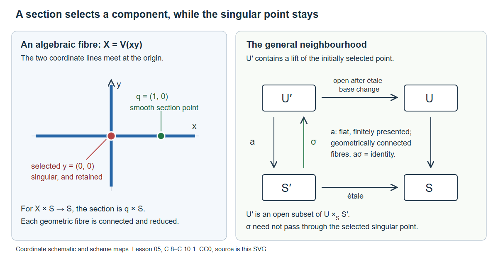
Figure C.1. The left panel is a coordinate schematic of \(X=V(xy)\): the selected point \((0,0)\) is singular, whereas the section point \((1,0)\) is smooth. Both belong to the same connected reduced fibre. The right panel gives the actual scheme maps of Theorem C.8.1; \(U'\) is an open of the base change, and the displayed square commutes. The section need not pass through the initially selected point. The proof of component openness is §§C.4–C.6; its use for sheaves is §C.9. Editable SVG source. For a freely accessible human comparison of section components see Stacks, Tag 055P and Tag 055R.

C.9 The actual degree-zero comparison for arbitrary sheaves
Lemma C.9.1 (the section inverse). If \(b:V\to H\) has geometrically connected fibres and a section \(\tau\), then for every étale sheaf of sets \(Q\) the pullback map \[ \Gamma(H,Q)\xrightarrow{\sim}\Gamma(V,b^{-1}Q) \tag{C.9.1} \] has inverse restriction along \(\tau\). The assertion remains true after every base change.
Proof. Restriction after pullback is the identity because \(b\tau=1\). For a section on \(V\), compare it with the pullback of its restriction along \(\tau\). On a geometric fibre, the pulled sheaf is the constant sheaf with value the corresponding stalk of \(Q\). A section of a constant sheaf on a connected scheme has one value: local representatives give a locally constant map to a discrete set, and distinct values would yield a nontrivial clopen partition. The two sections agree at the section point, hence at all geometric stalks on that fibre. They therefore agree on every fibre and on \(V\). This proves the inverse. A base change preserves the section and geometric connectedness, so the same proof applies again. \(\square\)
Theorem C.9.2 (product comparison in degree zero). Let \(A\) be reduced and of finite type over algebraically closed \(k\), let \(g:T\to S\) be any morphism of \(k\)-schemes, and form the cartesian square \[ \begin{array}{ccc} A\times_kT&\xrightarrow{h}&A\times_kS\\ e\downarrow&&\downarrow f\\ T&\xrightarrow{g}&S. \end{array} \] For every étale sheaf of sets \(F\) on \(T\), the canonical map \[ f^{-1}g_*F\xrightarrow{\sim}h_*e^{-1}F \tag{C.9.2} \] is an isomorphism. No torsion, constructibility or quasi-compactness condition on \(g\) is imposed in this degree-zero statement.
Proof. On each étale test object \(U\to A\times_kS\), use Theorem C.8.1 to cover it by neighborhoods \(U'\to U\) factoring through \(a:U'\to S'\) with section and geometrically connected fibres. Lemma C.9.1 gives \[ \begin{aligned} \Gamma(U',a^{-1}((g_*F)|_{S'})) &=\Gamma(S',(g_*F)|_{S'})\\ &=\Gamma(S'\times_ST,F)\\ &=\Gamma(U'\times_ST,e^{-1}F). \end{aligned} \tag{C.9.3} \] The middle equality is the definition of direct image on the étale test object \(S'\to S\). The last equality applies Lemma C.9.1 to the base-changed section. The outer identifications are actual pullbacks, and their inverses are section restrictions. Consequently (C.9.3) identifies the canonical comparison, rather than merely its section sets.
These neighborhoods suffice to test the sheaf map. If a local source section maps to zero, restriction to the covering neighborhoods and the injective section comparisons show it is zero. A germ of a target section is represented on an étale test object, and one of its covering neighborhoods gives a lift by the surjective section comparison. The map is therefore injective and surjective on every geometric stalk. This proves (C.9.2), and the same diagram proves it for abelian and module sheaves. \(\square\)
C.10 Examples and graded exercises
Example C.10.1 (the singular point stays). Take \(X=\operatorname{Spec}k[x,y]/(xy)\). It is reduced: the map to \(k[x]\times k[y]\) by restriction to the two axes is injective. Its two irreducible components meet at \((0,0)\), so it is connected; the same calculation holds after every field extension. Its origin is singular, since its one-dimensional local ring has a two-dimensional cotangent space. The point \((1,0)\) is smooth, since the open \(D(x)\) is the smooth curve \(y=0\). For every base \(S/k\), the section \((1,0)\times S\) of \(X\times S\to S\) lies in the same geometric fibre component as \((0,0)\times S\). Lemma C.9.1 therefore computes pulled-sheaf sections while retaining the singular point. This is the algebraic example in Figure C.1, valid in every characteristic.
Exercise C.10.2 (easy: the actual inverse). For \(X\) in Example C.10.1 and any sheaf of sets \(Q\) on \(S\), prove that \(\Gamma(S,Q)\to\Gamma(X\times S,a^{-1}Q)\) has inverse restriction along \((1,0)\times S\). Explain why this proof gives no assertion about positive cohomology.
Solution. Pullback followed by restriction is the identity. Every geometric fibre is connected, so any section of the pulled sheaf takes the same value at the section point and the singular origin; the same holds at every other fibre point. Equality on geometric stalks proves that restriction followed by pullback is the identity. The proof concerns sections of a sheaf. It constructs no acyclic resolution and computes no positive derived functor, so it does not imply higher cohomological comparison.
Exercise C.10.3 (medium: why reducedness matters). Let \(R=k[t]_{(t)}\) and \(B=R[z]/(z(z-t))\), with section \(z=0\). Prove that \(B\) is flat, its generic fibre is disconnected, its special fibre is not reduced, and the generic idempotent \(z/t\) does not extend. Deduce that the union of the section's fibre components is not open at the special point.
Solution. The monic equation makes \(1,z\) an \(R\)-basis, so \(B\) is free and flat. Over \(k(t)\), the two distinct linear factors give a product of two fields. The element \(z/t\) has values zero and one on them and is an idempotent. The special fibre is \(k[z]/(z^2)\), which is not reduced. The total scheme is connected: its two closed components \(z=0\) and \(z=t\) are copies of the local integral scheme \(\operatorname{Spec}R\), and they meet at the special point. An extending idempotent would give a nontrivial clopen partition of this connected scheme, which is impossible. The section-component union contains the special point but omits the generic point of the other branch. Since that generic point is a generization of the special point, the union cannot be open there. This is exactly the failure prevented by Lemma C.4.1.
Exercise C.10.4 (hard: the model need not have reduced fibres everywhere). In §C.6 explain why the model fibre over the image of the selected point is geometrically reduced, and why no assertion about its other fibres is needed to prove openness and quasi-compactness upstairs.
Solution. The selected model fibre becomes the given geometrically reduced fibre after a residue-field extension. Embed its residue field, that extension and algebraic closures in a common algebraically closed field. Any nonzero nilpotent after an old field extension would survive the resulting faithful field extension, contradicting geometric reducedness of the given fibre. Thus the selected model fibre is geometrically reduced, and §C.5 supplies an open neighborhood of the image point inside the model section component. Pulling this open back proves openness at the selected point upstairs. Repeating at every point proves openness of the whole component subset. Its quasi-compactness follows independently from the finite constructible presentation of the model subset and its quasi-compact inverse-image pieces; it does not require geometrically reduced fibres at unselected model points.
Appendix D. Connected closures over Noetherian henselian pairs
The degree-zero proper comparison uses a geometric property of point closures: each meets the closed restriction in a nonempty connected set. We prove this property over every Noetherian henselian pair, including nonflat proper schemes and nonreduced closed restrictions. The argument first uses projective formal functions to control idempotents, then the Noetherian Chow construction to handle arbitrary proper point closures.
A henselian pair \((A,I)\) has \(I\subset\operatorname{Jac}(A)\) and the lifting property for coprime monic factorizations modulo \(I\). We use the integral-algebra idempotent theorem proved in Étale neighborhoods and henselization, Lemma 5.3; the projective formal-functions proof in AG-RG-S02, Theorem 2.3; and the schematic Noetherian Chow construction, Theorem 4.1. In formal functions, the scheme and coherent sheaf need not be flat over the base. The general henselian finite-cover equivalence and positive-degree proper comparison require additional arguments; the connected-closure proof below supplies their degree-zero geometric input.
D.1. A finite domain over a henselian pair
Let \((A,I)\) be a henselian pair, so \(I\subset\operatorname{Jac}(A)\), and let \(B\) be a nonzero finite \(A\)-algebra that is a domain. The structural map need not be injective.
Lemma D.1.1. The rings \(B/IB\) and \[ \widehat B=\varprojlim_nB/I^nB \tag{D.1.1} \] have no idempotents other than zero and one. The first ring is nonzero.
Proof. Finiteness makes \(B\) integral over \(A\). Every maximal ideal of \(B\) contracts to a maximal ideal of \(A\), which contains \(I\). Thus \(IB\) lies in the Jacobson radical of \(B\) and is proper. The integral-algebra idempotent lemma gives \[ \operatorname{Idem}(B)\xrightarrow{\sim} \operatorname{Idem}(B/IB). \tag{D.1.2} \] A domain has only the idempotents zero and one, since \(e(e-1)=0\). This proves the first assertion without declaring \(B\) to be normal, complete, or flat over \(A\).
For completeness, the nilpotent uniqueness needed for (D.1.1) is elementary. If idempotents \(e,e'\) agree modulo a nil ideal, then \(e(1-e')\) and \(e'(1-e)\) are idempotents in that ideal. A nilpotent idempotent is zero, so \(e=e'\). The ideal \(IB/I^nB\) is nilpotent. Thus an idempotent of \(B/I^nB\) reducing to zero or one in \(B/IB\) must be that same zero or one. An idempotent in the inverse limit consequently has the identical value at every coordinate. This proves the second assertion. \(\square\)
The completion is used through this calculation of its idempotents.
D.2. Idempotents through the infinitesimal thickenings
Let \(C\) be a scheme over \(A\), and put \[ C_n=C\times_A\operatorname{Spec}(A/I^n), \qquad n\ge1. \tag{D.2.1} \]
Lemma D.2.1. Every idempotent in \(\Gamma(C_1,\mathcal O_{C_1})\) lifts uniquely to a compatible sequence of idempotents in \(\Gamma(C_n,\mathcal O_{C_n})\).
Proof. The immersion \(C_n\hookrightarrow C_{n+1}\) has square-zero defining ideal: \(I^{2n}\subsetI^{n+1}\) for \(n\ge1\). On an affine chart, lift an idempotent to an element \(b\), and write \(d=b^2-b\) in the square-zero ideal. The element \(2b-1\) is a unit, because \[ (2b-1)^2=1+4d \] and the second term is nilpotent. Set \[ e=b-(2b-1)^{-1}d. \tag{D.2.2} \] The square of the correction is zero, so \(e^2-e=d-d=0\). This also works in characteristic two. Uniqueness is the nilpotent-idempotent calculation in Lemma D.1.1. The affine lifts therefore agree on overlaps and glue to a global section. Induction over \(n\) gives the compatible sequence and its uniqueness. \(\square\)
If \(C\) is projective over Noetherian \(A\), projective finiteness makes \[ B=\Gamma(C,\mathcal O_C) \] a finite \(A\)-module. The projective formal-functions theorem gives the canonical isomorphism \[ \widehat B\xrightarrow{\sim} \varprojlim_n\Gamma(C_n,\mathcal O_{C_n}). \tag{D.2.3} \] This is a ring isomorphism. The maps from \(B\) to the thickened section rings preserve multiplication, and the isomorphism is their induced quotient-limit map in degree zero. Their multiplication is therefore preserved in the limit as well. This uses the completed finite module and does not identify \(B\) with its completion unless the base is complete.
D.3. Connected closed restriction of an integral projective scheme
Theorem D.3.1. Let \((A,I)\) be a Noetherian henselian pair, and let \(C\) be nonempty, integral and projective over \(A\). Then \(C_1\) is nonempty and connected. Neither flatness of \(C/A\) nor reducedness of \(C_1\) is assumed.
Proof. A proper map is closed. Its nonempty closed image contains a maximal ideal of \(A\). That maximal ideal contains \(I\subset\operatorname{Jac}(A)\), so the image meets \(V(I)\) and \(C_1\ne\varnothing\).
The ring \(B=\Gamma(C,\mathcal O_C)\) embeds in the function field of the integral scheme \(C\): a regular function which vanishes at the generic point vanishes on each affine open, whose ring is a domain. Thus \(B\) is a domain. Projective finiteness makes it finite over \(A\), so Lemma D.1.1 applies.
Suppose \(C_1\) had a nontrivial open-and-closed partition. The function equal to one on the first part and zero on the second is a nontrivial global idempotent \(e_1\). Lemma D.2.1 extends it uniquely through all the infinitesimal fibres. Formula (D.2.3) then gives an idempotent of \(\widehat B\) whose reduction is \(e_1\), and which is consequently neither zero nor one. This contradicts Lemma D.1.1. Thus \(C_1\) is connected. \(\square\)
Notice the exact roles of the hypotheses. Integrality gives a domain of global functions; henselianity controls idempotents in its finite quotient algebra; projectivity supplies finite coherent cohomology and formal functions. No finite étale cover equivalence or positive étale cohomology theorem enters this argument.
D.4. Proper point closures, using Noetherian Chow geometry
Theorem D.4.1. Let \((A,I)\) be a Noetherian henselian pair, let \(X\) be proper over \(A\), and put \(Z=X_1\). For every \(x\in X\), \[ Z\cap\overline{\{x\}} \quad\text{is nonempty and connected.} \tag{D.4.1} \] The assertion also holds on every finite scheme over \(X\), with its inverse-image closed locus.
Proof. Give \(\overline{\{x\}}\) its reduced closed scheme structure \(C\). It is integral and proper over \(A\). The schematic Noetherian Chow construction gives a proper surjection \(\widetilde C\to C\), an immersion \(\widetilde C\to\mathbf P^N_A\), and a dense-open isomorphism. The construction can be taken integral: for integral \(C\), its dense affine intersection is integral, and the schematic closure of its diagonal image in the product of projective spaces is integral. Every nonempty chart of that closure injects into the function field of the dense integral open. Its selected open \(\widetilde C\) is therefore integral as well.
Since \(C\) is proper, \(\widetilde C\) is proper over \(A\). Its projective-space immersion is consequently a closed immersion: factor it into its closed graph and the proper projection to the separated projective target, making the immersion proper, and then closed. Thus \(\widetilde C\) is projective over \(A\).
Theorem D.3.1 makes \(\widetilde C_1\) nonempty and connected. Its map to \(C_1\) is surjective. Indeed a proper surjection remains surjective after base change: over any geometric base point its original nonempty fibre remains nonempty under the field extension, by faithful field extension. A continuous image of a connected space is connected. Therefore \(C_1\), whose underlying set is the intersection in (D.4.1), is nonempty and connected.
If \(T\to X\) is finite, then \(T\) is again proper over \(A\), so the same proof applies to every point closure in \(T\). No flatness of \(T/A\) is inferred. \(\square\)
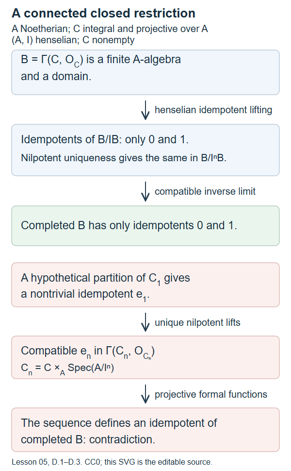
Figure D.1. The upper three boxes compute the idempotents of the completed finite domain of global functions. A hypothetical partition of \(C_1\) gives the idempotent in the lower boxes; unique nilpotent lifting and projective formal functions put it in that completion, contradicting the calculation. The proof is Lemmas D.1.1 and D.2.1 and Theorem D.3.1. Theorem D.4.1 then applies Noetherian Chow geometry to point closures of an arbitrary proper scheme. Editable SVG source. For a free human comparison of the formal-functions input, see Stacks, Theorem 30.20.5.

D.5 Examples and graded exercises
Example D.5.1 (henselianity is needed). Suppose \(\operatorname{char}k\ne2\), let \(A=k[t]_{(t)}\), and set \(B=A[u]/(u^2-(1+t))\). This is a finite free domain over \(A\). It is free on \(1,u\) by the monic equation, and \(1+t\) is not a square in \(k(t)\): its order at the prime \(t+1\) is one, whereas the order of a square is even. Thus its generic quadratic polynomial is irreducible, and the free algebra embeds in the resulting field. The scheme \(C=\operatorname{Spec}B\) is projective: the homogenized equation \(U^2-(1+t)V^2=0\) defines a closed subscheme of \(\mathbf P^1_A\), with no point at infinity because \(V=0\) would force \(U^2=0\) where \(U\) is invertible. Its affine chart is exactly \(C\).
The closed restriction is two reduced points, since \(u^2-1=(u-1)(u+1)\). This does not contradict Theorem D.3.1: \(A\) is not henselian. Indeed its simple residue root \(1\) would lift to a square root of \(1+t\) in \(A\), contradicting the same rational-function order calculation. The example is flat over the base, so flatness alone does not give the connected-closure assertion.
Exercise D.5.2 (easy: no division by two). Let \(N^2=0\) in a ring \(R\), and let \(b^2-b=d\in N\). Verify that \(2b-1\) is a unit and that \(b-(2b-1)^{-1}d\) is an idempotent. Explain the characteristic-two case.
Solution. Its square is \(1+4d\), which has inverse \(1-4d\); hence \(2b-1\) is a unit. If \(c=(2b-1)^{-1}d\), then \(c^2=0\) and \[ (b-c)^2-(b-c)=d-(2b-1)c+c^2=0. \] In characteristic two the unit is \(-1=1\), so the correction still exists. The construction divides by this unit and never by two.
Exercise D.5.3 (medium: a nonreduced closed restriction). For any field \(k\), take \(A=k[[t]]\), \(I=(t)\), and \(B=A[s]/(s^2-t)\). Prove that the hypotheses of Theorem D.3.1 hold for \(C=\operatorname{Spec}B\), and compute its closed restriction.
Solution. Every nonzero element of \(k[[t]]\) is \(t^n\) times a unit, so every nonzero ideal is generated by a least such power. Thus \(A\) is a Noetherian DVR, complete for \((t)\). Its henselian factorization property can be checked directly. Lift a coprime monic factorization successively modulo \(t^n\). At each step the error polynomial is corrected by \(g\delta h+h\delta g\) modulo \(t\), with \(\deg\delta g<\deg g\) and \(\deg\delta h<\deg h\). This linear map is bijective: coprimality makes its kernel zero by divisibility, and its source and target have the same finite dimension. Completeness gives the limiting monic factors. Hence \((A,I)\) is henselian.
Sending \(t\) to \(s^2\) identifies \(B\) with \(k[[s]]\): every power series in \(s\) splits uniquely into its even terms plus \(s\) times its odd terms, namely \(f(s^2)+s g(s^2)\). Thus \(B\) is a domain. Its monic presentation makes it free of rank two over \(A\), and the equation \(U^2-tV^2=0\) embeds \(C\) closedly in \(\mathbf P^1_A\) with no points at infinity. Finally \[ C_1=\operatorname{Spec}k[s]/(s^2). \] It is connected and nonreduced. This verifies that the theorem's connectedness assertion includes such a closed restriction, in every characteristic.
Exercise D.5.4 (hard: detect the partition in the limit). Let \(B\) be a finite domain over a henselian pair \((A,I)\). Prove directly that an idempotent of \(\varprojlim_nB/I^nB\) is zero or one, and explain why this contradicts a hypothetical nontrivial partition in the proof of Theorem D.3.1 without any irreducibility claim for the completion.
Solution. Henselian idempotent lifting identifies the idempotents of \(B/IB\) with those of the domain \(B\), so its only possibilities are zero and one. The ideal \(IB/I^nB\) is nilpotent. Uniqueness of lifting an idempotent modulo a nil ideal makes each higher coordinate the identical zero or one. Therefore the whole compatible sequence is that zero or one. A partition of \(C_1\) gives an idempotent taking both values at different points, and its uniquely lifted sequence retains that first coordinate. Formal functions identifies it with an idempotent of the completion. The just-proved calculation contradicts its nontrivial first coordinate; no statement that the completed ring is a domain is needed.
Appendix E. Finite refinements and the henselian section theorem
An étale cover need not be finite, and a finite replacement need not be flat. We construct a finite surjection which factors through the cover on a Zariski open covering of its source. Together with Appendix D, this proves the actual restriction map on sections over a Noetherian henselian pair.
The algebra below supplies the conductor steps needed for affine completion. For earlier algebraic proofs we use Integral extensions, including the determinant criterion, lying over and Theorem 4.3 on going down. Quasi-finite points are isolated points with finite residue extension in their finite-type fibres, as proved in Quasi-finite morphisms. The finite-submodule argument is also written in Zariski connectedness and Stein factorization, Appendix A.1 and Lemma A.3.1. The proofs needed here are given below.
E.1. Polynomial division and the conductor
Lemma E.1.1 (remove the polynomial part). Let \(R[X]\to S\), write \(x\) for the image of \(X\), and suppose \(y\) is integral over \(R[x]\). If \(p\) is monic and \(p(x)y\in R[x]\), some \(q\in R[X]\) makes \(y-q(x)\) integral over \(R\).
Proof. Divide \(p(x)y=r(x)\) by the monic polynomial: \(r=pq+r_0\), with \(\deg r_0<\deg p\). Put \(v=y-q(x)\). In \(S_v\), the monic equation \(p(x)-v^{-1}r_0(x)=0\) makes \(x\) integral over \(R[v^{-1}]\). Since \(v\) remains integral over \(R[x]\), transitivity makes it integral over \(R[v^{-1}]\). Write a monic equation with coefficients finite sums of \(a v^{-j}\), \(a\in R\). Multiplication by a sufficiently large power of \(v\) clears these denominators and kills the localization error. The resulting equation in \(S\) is monic in \(v\): all other exponents are strictly below its leading exponent. Thus \(v\) is integral over \(R\). For \(p=1\), simply take \(q=r\). \(\square\)
For an arbitrary leading coefficient \(a\), the same argument after inverting \(a\) shows that \(a^N y-q(x)\) is integral over \(R\), for some \(N\) and \(q\). Here is the denominator step: a monic equation for an element \(z\) over \(R_a\) becomes a monic equation for \(a^m z\) after choosing \(m\) to clear each coefficient. If its value vanishes only in \(S_a\), a further scaling kills that value in \(S\). This works even when localization has a kernel.
Lemma E.1.2 (conductor coefficients). Suppose \(R\subset S\), every element of \(S\) integral over \(R\) lies in \(R\), and \(S\) is finite over \(R[x]\). Let \[ J=\{c\in S:cS\subset R[x]\}. \] If \(u\sum_{i=0}^k a_i x^i\in\sqrt J\), with \(a_i\in R\), then every \(ua_i\in\sqrt J\).
Proof. First suppose the expression belongs to \(J\). Choose a finite list \(s_j\) generating \(S\) as an \(R[x]\)-module. Each \(us_j\) is integral over \(R[x]\), and its product with the displayed polynomial belongs to \(R[x]\). Lemma E.1.1 and its denominator step give \(a_k^{N_j}us_j-q_j(x)\) integral over \(R\). It therefore belongs to \(R\). A common exponent \(N\) gives \(a_k^N uS\subset R[x]\), hence \(a_k^N u\in J\).
For the radical assertion, raise the original expression to a power lying in \(J\). Its leading coefficient is a power of \(a_k\), so the preceding conclusion puts \(ua_k\) in \(\sqrt J\). Subtract \(ua_kx^k\) and repeat on the smaller-degree polynomial. \(\square\)
The conductor is an ideal of \(S\) contained in \(R[x]\), since one can test its defining condition on \(1\). At any \(u\in J\), it gives \(S_u=R[x]_u\): write \(s=(us)/u\).
E.2. The reduced obstruction
Lemma E.2.1. A polynomial ring over any normal domain is normal.
Proof. Over its fraction field \(K\), a fraction integral over \(R[X]\) belongs to the PID \(K[X]\). Write it as \(f=\sum\alpha_iX^i\). Choose the finitely generated \(\mathbf Z\)-domain \(R_0\subset R\) containing all coefficient numerators, denominators and coefficients of one monic equation for \(f\). It is Noetherian. Since \(R_0[X,f]\) is finite over \(R_0[X]\), a common nonzero denominator \(a\) gives \(af^n\in R_0[X]\) for all \(n\). For the leading coefficient \(\alpha_d\), this yields \(a\alpha_d^n\in R_0\). Thus \(R_0[\alpha_d]\subset a^{-1}R_0\) is a finite module, and the determinant criterion makes \(\alpha_d\) integral. Adjoin it to \(R_0\), subtract \(\alpha_dX^d\), and repeat. Each enlarged base is finite and Noetherian. Transitivity makes all coefficients integral over \(R\); normality puts them in \(R\). \(\square\)
Call \(x\in S\) strongly transcendental over \(R\subset S\) if \[ u\sum_i a_ix^i=0\quad\Longrightarrow\quad ua_i=0\text{ for every }i \qquad(u\in S, a_i\in R). \]
Lemma E.2.2. If \(R\subset S\) are reduced and \(S\) is finite over \(R[x]\), a strongly transcendental \(x\) prevents \(S/R\) from being quasi-finite at any prime.
Proof. First take domains and normal \(R\). If \(\mathfrak q\) were quasi-finite over \(\mathfrak p\), its contraction \(\mathfrak r\) to \(R[x]\) would have finite residue extension over \(\kappa(\mathfrak p)\). Therefore \(\mathfrak r\) strictly contains \(\mathfrak pR[x]\). Lemma E.2.1 and going down give a strictly smaller prime inside \(\mathfrak q\) over \(\mathfrak pR[x]\), contradicting isolation in the fibre. For a nonnormal domain, adjoin its normalization inside its fraction field to \(S\). The new domain is finite over the normalized polynomial ring and integral over \(S\). Lying over selects a prime above \(\mathfrak q\). The map from the base-changed original algebra to this new algebra is surjective, so quasi-finiteness at the selected point survives base change and quotient, contradicting the normal case.
For reduced rings choose a minimal prime \(\mathfrak q_0\subset\mathfrak q\). The ring \(S_{\mathfrak q_0}\) is a field. Any polynomial relation modulo \(\mathfrak q_0\) is killed by some multiplier outside \(\mathfrak q_0\). Strong transcendence then kills its coefficients modulo \(\mathfrak q_0\). Thus the induced domain inclusion retains strong transcendence. Its quasi-finite point would survive quotienting the source, contradicting the domain case. \(\square\)
E.3. The local algebra and quasi-affine completion
Lemma E.3.1 (one algebra generator). If \(B=R[b]\), \(C\subset B\) is the integral closure of the image of \(R\), and \(\mathfrak q\) is quasi-finite over \(R\), there is \(g\in C\setminus\mathfrak q\) with \(C_g=B_g\).
Proof. Some polynomial relation \(\sum_{i=0}^m a_ib^i=0\) has a coefficient outside \(\mathfrak q\). Otherwise its fibre is the full polynomial line, with no quasi-finite point: the generic residue is transcendental, and every closed point has a proper fibre generization. Initially the coefficients lie in \(R\), and we allow them in \(C\) during the reduction. Multiplication by \(a_m^{m-1}\) gives a monic equation for \(a_mb\), so \(a_mb\in C\). If \(a_m\notin\mathfrak q\), invert it. Otherwise replace the leading two terms by \((a_mb+a_{m-1})b^{m-1}\). The degree drops and a coefficient outside \(\mathfrak q\) remains. Eventually a leading coefficient outside \(\mathfrak q\) occurs, since a degree-zero relation with such a coefficient is impossible. It makes \(b\) belong to \(C_g\). \(\square\)
Lemma E.3.2. If \(R\subset B\) is relatively integrally closed, \(B\) is finite over \(R[b]\), and \(\mathfrak q\) is quasi-finite over \(R\), some \(h\in R\setminus\mathfrak q\) gives \(R_h=B_h\).
Proof. Let \(J\) be the conductor to \(R[b]\). If \(J\subset\mathfrak q\), Lemma E.1.2 makes \(b\) strongly transcendental in the reduced inclusion \[ R/(R\cap\sqrt J)\subset B/\sqrt J. \] This quotient is finite over its polynomial subalgebra, and its point induced by \(\mathfrak q\) remains quasi-finite. Lemma E.2.2 contradicts this. Thus choose \(u\in J\setminus\mathfrak q\), obtaining \(B_u=R[b]_u\). The contracted point of \(R[b]\) is quasi-finite. Lemma E.3.1, whose integral closure is now \(R\), gives \(a\in R\setminus\mathfrak q\) with \(R_a=R[b]_a\). Express \(u=c/a^N\) there; then \(c\notin\mathfrak q\). Inverting \(h=ac\) inverts both \(a\) and \(u\), proving the assertion. \(\square\)
Theorem E.3.3 (algebraic neighborhood). For finite-type \(R\to B\), at every quasi-finite prime \(\mathfrak q\) there is \(g\in C\setminus\mathfrak q\) with \(C_g=B_g\), where \(C\) is the relative integral closure.
Proof. Replace \(R\) by its image and induct on a list \(b_1,\ldots,b_n\) over which \(B\) is finite. For \(n=0\), \(C=B\). For \(n=1\), enlarge the base to \(C\) and apply Lemma E.3.2. Quasi-finiteness survives this enlargement: the multiplication map \(B\otimes_R C\to B\) is surjective, so this is base change followed by a closed restriction at the selected point.
For \(n>1\), let \(D\) be the integral closure of \(R[b_1,\ldots,b_{n-1}]\) in \(B\). Lemma E.3.2 gives \(v\in D\setminus\mathfrak q\) with \(D_v=B_v\). Choose integral numerators for a finite generating list of \(B_v\). The algebra \(E\) generated by those numerators, \(v\), and \(b_1,\ldots,b_{n-1}\) is finite over the shorter polynomial subalgebra and satisfies \(E_v=B_v\). Its contracted point is quasi-finite; induction gives \(a\) integral over \(R\), outside that point, with \(E_a=C'_a\), where \(C'\) is the integral closure in \(E\). Write \(v=c/a^N\) in this ring. Then \(c\in C'\setminus\mathfrak q\), and inverting \(ac\) identifies \(B\), \(E\), \(C'\), and \(C\). The last equality follows because \(C'\subset C\subset B\). \(\square\)
Corollary E.3.4 (affine base, quasi-affine source). A quasi-finite quasi-affine \(U\to\operatorname{Spec}R\) factors as a quasi-compact open immersion into a finite \(R\)-scheme.
Proof. Put \(B=\Gamma(U,\mathcal O_U)\). Choose finitely many global functions \(t_i\) whose invertibility opens are affine and cover \(U\), using its embedding into an affine scheme. Finite affine equalizers give \(B_{t_i}=\Gamma(U_{t_i},\mathcal O)\). Choose generators of these finite-type \(R\)-algebras and their numerators in \(B\). With the \(t_i\), they generate a finite-type \(B_0\subset B\) such that \((B_0)_{t_i}=B_{t_i}\). Thus \(U\) is an open in \(\operatorname{Spec}B_0\).
At a point of \(U\), Theorem E.3.3 gives \(g\) integral over \(R\) with \((B_0)_g=C_{0,g}\). Pick a principal neighborhood \(D(h)\) of that point inside \(U\). Write \(h=c/g^N\) after inverting \(g\), with \(c\in C_0\). The smaller \(D(cg)\) stays inside \(D(h)\) and still has the integral-closure equality. A finite collection of such opens covers \(U\). Adjoin their integral defining elements and integral numerators for generators of their localized rings to a finite \(R\)-algebra \(D\subset C_0\). On each selected principal open, \(D\) and \(B_0\) have identical rings. Their union identifies \(U\) with a quasi-compact open of \(\operatorname{Spec}D\). \(\square\)
E.4. Finite algebras across an open subset
Lemma E.4.1 (extend a finite submodule). On a qcqs scheme, a finite-type quasi-coherent submodule on a quasi-compact open extends as a finite-type submodule of the original quasi-coherent module.
Proof. On an affine scheme first extend without a finiteness condition by taking the kernel of the map to the direct image of the quotient on the open. Direct image is quasi-coherent: over a distinguished target open, localization commutes with the finite affine equalizer for sections. Cover the prescribed open by finitely many principal opens. Choose numerators for its local module generators in the kernel; their span has the required restriction. For a general qcqs scheme, add a finite affine cover one member at a time. Its intersection with the open already treated is quasi-compact. Apply the affine construction there and glue along the equal restrictions. Finite sums then show that every quasi-coherent module is a directed union of finite-type submodules. \(\square\)
Lemma E.4.2. An integral quasi-coherent algebra on a qcqs scheme is a directed union of its finite quasi-coherent subalgebras.
Proof. Enlarge any finite-type submodule to contain \(1\), and take the subalgebra it generates. On an affine chart its finitely many generators are integral; their monic equations bound the powers needed to span that algebra as a module. Thus it is finite. Lemma E.4.1 provides the submodules and directedness; algebra generation and localization commute, so these are quasi-coherent subalgebras. \(\square\)
Proposition E.4.3 (finite extension). Let \(Y\) be Noetherian and quasi-compact, \(W\subset Y\) open, and \(T_W\to W\) finite. There is a finite \(T_Y\to Y\) whose restriction over \(W\) is the specified \(T_W\).
Proof. For \(j:W\hookrightarrow Y\), let \(B=j_*\mathcal O_{T_W}\), a quasi-coherent algebra. Take the integral closure \(C\) of \(\mathcal O_Y\) in \(B\). It is quasi-coherent, since integral closure commutes with localization: clear the coefficients of a localized monic equation by scaling its element, then kill its localization error by another scaling. Over \(W\), \(C\) is the original finite algebra. Lemma E.4.1 extends that finite module to a finite-type submodule of \(C\), whose generated algebra \(D\) is finite by Lemma E.4.2 and restricts to the whole original algebra. Set \(T_Y=\operatorname{Spec}_YD\). No flatness is asserted. \(\square\)
Proposition E.4.4. A quasi-finite quasi-affine map over a Noetherian quasi-compact scheme has a finite completion.
Proof. Its direct-image algebra and relative integral closure are quasi-coherent by the same localization calculation. On finitely many affine base charts use Corollary E.3.4. Extend the finitely many finite submodules of their integral algebras to the base by Lemma E.4.1, and generate one finite subalgebra \(D\). It contains each of the selected local finite algebras. On their defining principal opens, all intervening algebras equal the source's localized section ring. These opens therefore give a global open immersion of the source into \(\operatorname{Spec}D\), followed by a finite map. \(\square\)
E.5. Finite refinement of an étale cover
Theorem E.5.1. Let \(X\) be Noetherian, quasi-compact and separated over an affine scheme, and let \(U\to X\) be an étale surjection. There is a finite surjection of finite presentation \(T\to X\) which factors Zariski locally through \(U\).
Proof. Choose finitely many affine pieces of \(U\) whose images cover \(X\), and replace \(U\) by their disjoint union. This map is affine: its graph into \(U\times X\) over the affine base is closed by separatedness of \(X\), and projection to \(X\) is affine. We prove the assertion for every quasi-compact quasi-affine separated étale surjection, so that the induction below retains its original degree bound.
By Proposition E.4.4 put \(U\) openly in a finite \(Y\to X\), and replace \(Y\) by the schematic closure of \(U\). It remains finite and surjective, and \(U\) is dense. The geometric fibre cardinalities of \(U/X\) have a finite bound \(d\): on a finite affine covering of \(X\), the finite algebra of \(Y\) has a finite generating list, which bounds the dimension of every fibre algebra and hence its number of points. Induct on \(d\). The empty case is immediate. For \(d=1\), a surjective étale map with singleton geometric fibres is an isomorphism. Indeed its diagonal is open and closed with empty complement, hence an isomorphism; its inverse descends from the covering \(U\to X\) by the sheaf property of represented morphisms, proved in Topologies on schemes.
For \(d>1\), remove the graph of \(U\hookrightarrow Y\) from \(U\times_XY\); call the complement \(V\), and its open image in \(Y\) call \(W\). The graph is open and closed: this is the base change of the diagonal of the separated étale map \(U\to X\). The scheme \(V\) is quasi-affine over \(Y\), since it is an open of the quasi-affine base change of \(U\). Every point of \(Y-U\) lies in \(W\), because there the graph has no point and the original cover has a nonempty fibre.
The degrees of \(V/Y\) are at most \(d-1\). Over \(U\) one geometric point has been removed. The cardinality function of a quasi-compact separated étale map is lower semicontinuous: the open scheme of ordered \(r\) distinct points in its \(r\)-fold fibre product has open image precisely where the cardinality is at least \(r\). Every point of the Noetherian \(Y\) has a generization in the dense open \(U\), so its cardinality cannot exceed that at such a generization. This proves the bound everywhere.
Apply induction to \(V\to W\), without replacing it by an overlapping affine cover. Obtain finite surjective \(T_W\to W\) locally mapping to \(V\). Proposition E.4.3 extends it to finite \(T_Y\to Y\). Then \[ T=T_Y\amalg(Y-W)_{\mathrm{red}}\longrightarrow Y\longrightarrow X \] is finite and surjective. Over \(W\) it factors locally through \(V\to U\); over the open \(U\subset Y\) it factors through projection to \(U\). These cover \(T_Y\), since \(Y-W\subset U\), and the adjoined closed piece lies in \(U\). This gives the desired local factorizations. Finite maps over Noetherian schemes are of finite presentation: their finite-type algebras have finitely generated relation ideals. \(\square\)
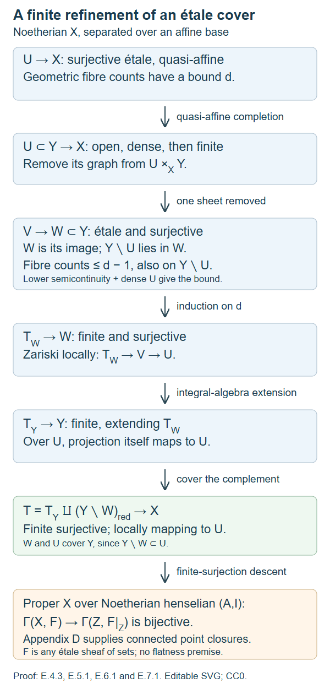
Figure E.1. The graph removed from the base-changed cover is one sheet over the dense open. The degree bound drops by one and remains valid at the boundary by lower semicontinuity. The finite-algebra extension covers that boundary without imposing flatness. The final section comparison uses the finite equalizer of Lemma E.6.1 and the connected-closure proof in Appendix D. Every map and bound is proved in Propositions E.4.3–E.4.4 and Theorems E.5.1 and E.7.1. Editable SVG source.

E.6. Descent through a finite surjection
Lemma E.6.1. If \(p:T\to X\) is a finite surjection and \(F\) is an étale sheaf of sets, write \(q=p\operatorname{pr}_1=p\operatorname{pr}_2:T\times_XT\to X\). Its sections are the equalizer \[ \Gamma(X,F)=\operatorname{Eq}\bigl(\Gamma(T,p^{-1}F) \rightrightarrows\Gamma(T\times_XT,q^{-1}F)\bigr). \]
Proof. The canonical finite-pushforward stalk calculation in Pushforward, pullback and finite morphisms, Theorem 4.1, identifies a stalk of \(p_*p^{-1}F\) with the product of \(F_{\bar x}\) over the finite nonempty set of geometric points of \(T_{\bar x}\). The fibre product gives all ordered pairs of that set. The equalizer of the two product maps is exactly the diagonal copy of \(F_{\bar x}\). Enough geometric points identifies \(F\) with the equalizer sheaf; global sections preserve equalizers. The cited earlier proof uses finite henselian algebra decomposition and degree-zero finite-data continuity, not proper base change. \(\square\)
E.7. The actual henselian restriction map
Theorem E.7.1. Let \((A,I)\) be a Noetherian henselian pair, let \(X\) be proper over \(A\), and put \(Z=X\times_A\operatorname{Spec}(A/I)\). Every étale sheaf of sets \(F\) has a bijective restriction map \[ \Gamma(X,F)\xrightarrow{\sim}\Gamma(Z,i^{-1}F). \] The assertion includes nonflat \(X/A\) and nonreduced \(Z\).
Proof. Theorem D.4.1 supplies nonempty connected closed-restriction intersections for all point closures in \(X\) and in every finite scheme over it. The complete spectral argument in The proper base change theorem, Lemmas 3.1–3.2 and Proposition 3.3, then gives section comparison for every Zariski sheaf on each such scheme. Those proofs extend clopen partitions, express sheaves by filtered finite presentations, and embed the finite models into finite products of closed pushforwards of constants; they use no higher comparison.
Injectivity for étale sections is direct. The equality locus of two sections is open: it is the union of the open images of their étale equality neighborhoods. If the sections agree on \(Z\), the closed complement would have to meet \(Z\) by Theorem D.4.1, unless it is empty. Thus they agree on \(X\). This also applies to every finite scheme over \(X\).
Let \(t\) be a section on \(Z\). The inverse-image construction and sheafification provide local étale representatives \(s_i\in F(U_i)\). Shrink \(U_i\) so that their restrictions on all of \(Z\times_XU_i\) equal \(t\): the equality loci are opens in that closed restriction and lift to opens of \(U_i\). Their images cover \(Z\), hence \(X\) by the same closed-complement argument. Theorem E.5.1 supplies finite surjective \(T\to X\) locally factoring through these \(U_i\).
On the resulting Zariski covering of \(T\), the pulled representatives lift \(t|_{Z_T}\). The Zariski inverse image of the Zariski restriction of \(p^{-1}F\) embeds in the Zariski restriction of its étale pullback to \(Z_T\): equality of two represented germs is witnessed by an étale equality neighborhood, whose open image contains the original point. Consequently these local lifts specify a section of that inverse-image subsheaf on \(Z_T\). The Zariski section comparison lifts it to \(s_T\) on \(T\). Its two pullbacks to \(T\times_XT\) agree by injectivity, since their restrictions to its closed locus are both \(t\). Lemma E.6.1 descends \(s_T\) to a section on \(X\). Its restriction equals \(t\), checked on the finite cover by the same lemma on \(Z\). Every map in this argument is actual restriction or adjunction; the resulting bijection is the displayed restriction map. \(\square\)
E.8. Graded exercises
Exercise E.8.1 (easy: extend a denominator). Over any field, extend the finite algebra \(k[t,t^{-1},z]/(z^2-t^{-1})\) from \(D(t)\) to the affine line. Compute its closed fibre. When is the original map étale?
Solution. Put \(v=tz\). The algebra \(D=k[t,v]/(v^2-t)\) is finite free on \(1,v\), and \(D_t\) is the prescribed algebra, with inverse substitution \(z=v/t\). The closed fibre is \(k[v]/v^2\). On \(D(t)\), \(z\) is a unit; if the characteristic is not two, the derivative \(2z\) is invertible, so the map is étale. In characteristic two its relative differential module has nonzero generator \(dz\), since the derivative relation is zero, so it is not unramified. The finite extension has a nonreduced closed fibre in every characteristic.
Exercise E.8.2 (medium: count ordered points). For the cover \(D(t)\amalg D(1-t)\to\mathbf A^1_k\), compute the geometric fibre cardinalities. Verify lower semicontinuity using ordered pairs of distinct points, and give a finite refinement.
Solution. The count is one at \(t=0,1\) and two elsewhere, so the locus with at least two points is \(D(t(1-t))\). The ordered distinct-pair scheme is two copies of that open, corresponding to the two possible orders of its sheets. Its image is exactly the computed locus. Take \(T=\mathbf A^1_k\) with the identity finite map; its two indicated Zariski opens map into the corresponding summands of the étale cover. The refinement is a local factorization, not a choice of one global sheet.
Exercise E.8.3 (hard: nonflat finite descent). Let \(X=\operatorname{Spec}k[x,y]/(xy)\) and \(T=\operatorname{Spec}k[x]\amalg\operatorname{Spec}k[y]\). Prove that \(T\to X\) is finite, surjective and nonflat. For a constant set \(E\), compute the equalizer in Lemma E.6.1.
Solution. The source algebra consists of pairs of polynomials. Adjoining the idempotent \(e=(1,0)\) to the image of \(k[x,y]/(xy)\) produces all pairs, and \(e^2-e=0\); thus the algebra is finite. Both branches are covered, so the map is surjective. At the node the fibre algebra has dimension two, whereas at either generic branch point it has dimension one. If the finite module were flat, it would be finite projective locally, whose rank is locally constant; every neighborhood of the node meets both generic branches. This contradiction proves nonflatness.
A section on \(T\) is a pair \((a,b)\in E^2\), since each affine line is connected. The two cross-branch components of \(T\times_XT\) are copies of the node, where the two pullbacks have values \(a,b\). Thus equality imposes \(a=b\). On each same-branch component equality is automatic. The equalizer is the diagonal \(E\), the sections of the constant sheaf on the connected \(X\). This demonstrates the finite-surjection descent used in Theorem E.7.1 without a flatness premise.
For freely accessible human comparisons of the algebraic ingredients, see Stacks monic division, leading coefficients, conductor, polynomial coefficients and the reduced obstruction. The complete arguments used here are the proofs above and the exact earlier programme proofs linked at their use.
Appendix F. Finite covers over a complete base
We separate two assertions about a closed restriction. Full faithfulness recovers maps between covers that already exist; essential surjectivity constructs a cover from one given on the closed restriction. The first holds over every Noetherian henselian pair by Appendix E. For the second we prove the complete-base case using coherent existence, without assuming that the proper scheme is flat over its base.
F.1. Recover every map between finite covers
Theorem F.1.1. Let \((A,I)\) be a Noetherian henselian pair, let \(X/A\) be proper, and put \(Z=X_{A/I}\). For finite étale \(P,Q\to X\), restriction is a bijection \[ \operatorname{Hom}_X(P,Q)\xrightarrow{\sim} \operatorname{Hom}_Z(P_Z,Q_Z). \] Thus the restriction functor on finite étale covers is fully faithful.
Proof. Define the étale sheaf \[ H(U)=\operatorname{Hom}_U(P\times_XU,Q\times_XU). \] It is a sheaf by descent of represented morphisms, proved in Topologies on schemes. Closed pullback gives \[ i^{-1}H=\underline{\operatorname{Hom}}_Z(P_Z,Q_Z). \] Here is the local verification. The ranks of finite étale covers are locally constant. On a stratum with ranks \(n,m\), form the finite étale cover of ordered distinct \(n\)-tuples of points of \(P\), and similarly for \(Q\); take their product. The distinct-tuple loci are open and closed in the finite fibre powers, since the étale diagonal is open and closed. Their geometric fibres are nonempty. Their coordinate sections partition the two pulled covers into \(n\) and \(m\) copies of the base. On this cover, \(H\) is the constant sheaf of functions from an \(n\)-element set to an \(m\)-element set. Closed pullback retains that set and its permutation transition maps. This proves the displayed identification. For rank zero, use the empty tuple and the ordinary empty-domain/empty-target conventions.
Theorem E.7.1 applied to \(H\) is now precisely the desired map on Hom sets. If a restricted map is an isomorphism, lift its inverse and use faithfulness on the two composites to see that the lifted map is an isomorphism. \(\square\)
This argument does not yet construct a cover specified only on \(Z\).
F.2. Completeness and the local module calculation
Lemma F.2.1. If \(A\) is complete and separated for \(I\), then \(I\subset\operatorname{Jac}(A)\) and \((A,I)\) is henselian.
Proof. For \(a\in I\), the series \(\sum_{n\geq0}a^n\) converges and inverts \(1-a\). The same applies to \(ra\), for every \(r\in A\), proving the radical assertion.
Let a monic polynomial have a coprime monic factorization \(g_0h_0\) modulo \(I\), of degrees \(r,s\). The linear map \[ (\delta g,\delta h)\longmapsto h_0\delta g+g_0\delta h, \qquad \deg\delta g<r,quad\deg\delta h<s, \] onto polynomials of degree below \(r+s\) is invertible over \(A/I\). Given an error, first solve for \(\delta g\) modulo \(g_0\), using the inverse of \(h_0\) there; monic division then gives \(\delta h\). This also proves uniqueness. Its lifted square matrix is invertible over \(A\), because its determinant is a unit modulo the radical ideal.
Start with arbitrary monic lifts. At stage \(n\), solve this linear equation for the error of the product, whose coefficients lie in \(I^n\). The corrections also lie in \(I^n\). The new product has error in \(I^{2n}\subset I^{n+1}\). The coefficients converge to monic factors of the original degrees. Separatedness makes the limiting product the original polynomial. This is the henselian factorization property, over a possibly nonlocal ring. \(\square\)
Lemma F.2.2. Let \((R,\mathfrak m)\) be Noetherian local, \(J\subset\mathfrak m\), and \(M\) finite. If every \(M/J^nM\) is free of the same rank \(r\) over \(R/J^n\), then \(M\) is free of rank \(r\).
Proof. Lift a basis modulo \(J\). Nakayama gives a surjection \(R^r\to M\). Modulo each \(J^n\), it is a surjection between free modules of rank \(r\); its matrix is invertible modulo the maximal ideal, hence invertible over the local quotient ring. Its kernel is therefore contained in \(\bigcap_nJ^nR^r=0\).
For the last equality, the full Artin–Rees and intersection proofs are Noetherian and Artinian rings, Theorems 5.1 and 6.1. The relevant mechanism can be recalled directly. The Rees module \(\bigoplus J^nR^r\) is finite over the Noetherian Rees algebra. Its submodule \(\bigoplus(N\cap J^nR^r)\), for \(N=\bigcap_nJ^nR^r\), is generated in bounded degrees. Thus, for some \(c\), \[ N=N\cap J^{c+1}R^r=J(N\cap J^cR^r)=JN. \] The module \(N\) is finite, and Nakayama gives \(N=0\). No completeness of \(R\) is needed in this lemma. \(\square\)
F.3. Algebraize the finite cover, including its laws
Theorem F.3.1. Suppose \(A\) is Noetherian and \(I\)-adically complete, and \(X/A\) is proper. Then restriction is an equivalence \[ \operatorname{F\acute Et}(X)\xrightarrow{\sim} \operatorname{F\acute Et}(X_{A/I}). \] It is compatible with the geometric fibre at every point of \(X_{A/I}\). No flatness of \(X/A\), and no reducedness of its closed restriction, is assumed.
Proof. Put \(X_n=X_{A/I^n}\), \(n\geq1\), and start with \(Y_1\to X_1\) finite étale. The written nilpotent-invariance proof in Infinitesimal lifting and invariance under thickenings, Theorem 6.2, gives finite étale \(Y_n\to X_n\) successively, with specified transition identifications. It proves finiteness of each lift by monic equations, not just topological invariance. Its full faithfulness makes all further compatibilities unique.
Write \(B_n\) for the finite locally free algebra of \(Y_n/X_n\). Its quotients satisfy \(B_{n+1}/I^nB_{n+1}=B_n\). The complete coherent-existence proof in Grothendieck's existence theorem, Theorem 6.1, algebraizes this system to a coherent \(\mathcal O_X\)-module \(B\), with specified identifications at every level. The cited proof includes nonprojective proper schemes by schematic Noetherian Chow geometry and coherent extension comparison.
Completion commutes with coherent tensor products at every level: \[ (B\otimes B)/I^n(B\otimes B) =(B/I^nB)\otimes_{\mathcal O_X/I^n}(B/I^nB). \] This follows from the balanced tensor-product universal property. Coherent full faithfulness, Theorem 3.2 of that existence lesson, therefore algebraizes the compatible multiplications and units to \[ \mu:B\otimes B\to B,\qquad\eta:\mathcal O_X\to B. \] Associativity compares two maps from \(B^{\otimes3}\); commutativity compares \(\mu\) with its transposed map; the unit laws compare maps from \(B\). All have identical formal completions, so faithfulness proves each algebraic identity. Consequently \(Y=\operatorname{Spec}_XB\) is a finite scheme with the required closed restriction and every specified infinitesimal restriction.
We verify étaleness. At \(x\in X_1\), set \(R=\mathcal O_{X,x}\), \(J=IR\), \(M=B_x\). Each \(M/J^nM\) is free over \(R/J^n\), and its rank is fixed by its first quotient. Lemma F.2.2 makes \(M\) free. The free locus of a coherent module is open: a basis at a stalk extends to a map from a finite free sheaf, whose coherent kernel and cokernel vanish on a neighborhood. Thus the free locus of \(B\) contains \(X_1\).
Its closed complement is empty. Indeed every nonempty closed subset of a proper scheme has a nonempty closed image in \(\operatorname{Spec}A\), and this image contains a maximal ideal. That maximal ideal contains \(I\) by Lemma F.2.1, so the closed subset meets \(X_1\). Therefore \(B\) is locally free everywhere.
The finite module of relative differentials \(\Omega_{B/\mathcal O_X}\) is coherent as an \(\mathcal O_X\)-module. Its reduction modulo \(I\) is \(\Omega_{B_1/\mathcal O_{X_1}}=0\). Nakayama makes it zero at every point of \(X_1\), and the same properness argument kills its closed support. Hence \(Y/X\) is finite locally free with zero differentials. It is finitely presented over the Noetherian \(X\), so the flat-and-unramified criterion proved in Étale morphisms and their local structure, Lemma 1.2 and Theorem 1.3, makes it finite étale. This proves essential surjectivity.
Lemma F.2.1 and Theorem F.1.1 supply full faithfulness. The resulting functor is exactly restriction; base change at a geometric point of \(X_1\) therefore identifies the fibre functors as asserted. \(\square\)
The locally free module in this proof is locally free over \(\mathcal O_X\). It can fail to be flat over \(A\), as the proper example in Exercise F.5.2 demonstrates. Coherent existence applies to that cover algebra as well.
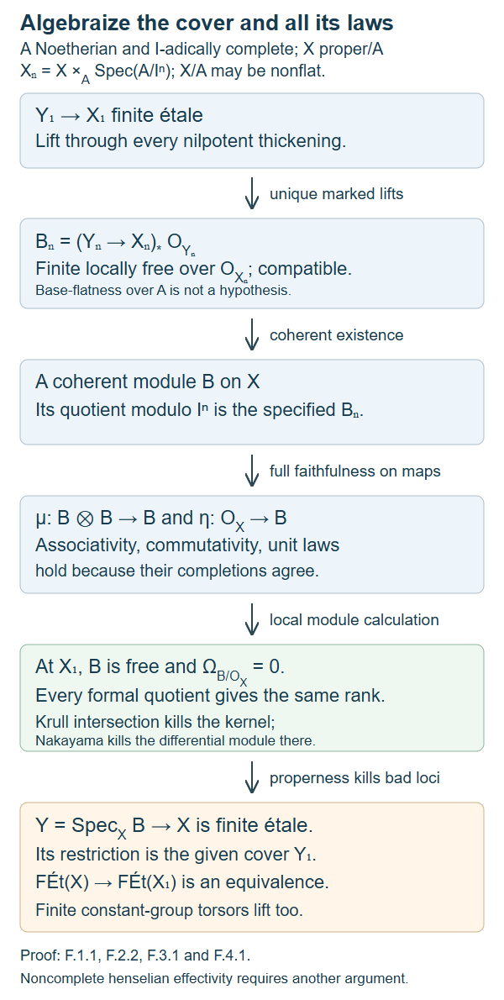
Figure F.1. Compatible cover algebras are locally free over each thickened scheme. Coherent existence produces their module on the proper scheme, and full faithfulness supplies multiplication, unit and all algebra identities. The local calculation and properness remove the bad loci. This is Theorem F.3.1; Theorem F.1.1 supplies full faithfulness and Corollary F.4.1 supplies the finite torsors. The complete-base hypotheses are displayed at the top. Editable SVG source.

F.4. Finite torsors and their actual restriction
Corollary F.4.1. Under Theorem F.3.1, restriction is an equivalence on étale torsors under any constant finite group \(G\), and induces a bijection on their pointed sets of isomorphism classes. It requires no invertibility of \(|G|\).
Proof. A \(G\)-torsor is represented by a finite étale scheme: its locally trivial finite disjoint unions descend by effective affine descent from the topology lesson. Conversely a finite étale scheme with a \(G\)-action is a torsor when it covers the base and \[ G_X\times_XY\longrightarrow Y\times_XY, \qquad(g,y)\longmapsto(gy,y) \] is an isomorphism.
Lift the closed torsor as a finite étale \(Y/X\) by Theorem F.3.1. Lift each action map using Theorem F.1.1; faithfulness gives their identity and composition laws. The displayed map is between finite étale covers; its closed inverse lifts, so it is an isomorphism. The image of \(Y\to X\) is open by étaleness and closed by finiteness. Its closed complement misses \(X_1\), hence is empty by properness. Thus it covers \(X\) and is a torsor. Equivariant morphisms lift uniquely because equivariance can be checked after restriction by faithfulness. The trivial torsor restricts to the trivial torsor, proving the pointed assertion. Constant finite groups are disjoint unions of the base in every characteristic, so their orders impose no restriction. \(\square\)
F.5. Graded exercises
Exercise F.5.1 (easy: the lifted square root). Suppose \(\operatorname{char}k\ne2\) and \(A=k[[t]]\). Show that \(A[u]/(u^2-(1+t))\) is the marked lift of two copies of the residue field. Construct its root with constant term one without using factorial denominators.
Solution. Write \(c=1+\sum_{n\geq1}a_nt^n\). The equation \(c^2=1+t\) is equivalent to \[ 2a_n=\delta_{n1}-\sum_{i=1}^{n-1}a_i a_{n-i}. \] Since two is invertible, this determines all coefficients recursively; completeness gives the series, and its coefficient equations give the desired identity. Its negative is the root with residue minus one. The factors \(u-c,u+c\) are comaximal, because \(2c\) is a unit. Chinese remainders therefore identify the algebra with \(A\times A\), and its residue identification is the specified one. Only powers of two are inverted; the construction works in every odd characteristic.
Exercise F.5.2 (medium: a nonflat proper scheme). Let \(A=k[[t]]\), \(X=\operatorname{Spec}(A/(t))\), and \(L/k\) a finite separable field extension. Describe the lift of \(\operatorname{Spec}L\to X_1\) in Theorem F.3.1. Is its algebra flat over \(A\)?
Solution. The scheme \(X\) is finite, hence proper over \(A\), and all \(X_n\) equal \(\operatorname{Spec}k\), since \(t\) acts as zero. The formal cover is the constant system \(\operatorname{Spec}L\), and its algebraization on \(X\) is precisely the finite étale \(k\)-algebra \(L\). It is free over \(\mathcal O_X=k\), but it is not flat over \(A\): the injection \(A\xrightarrow{t}A\) becomes the zero map on the nonzero module \(L\) after tensoring. Thus the theorem includes a proper scheme and a cover algebra entirely supported on the closed restriction.
Exercise F.5.3 (hard: every thickening matters). Take \(R=k[[t]]\), \(J=(t)\), \(M=R/(t)\). Its first quotient is free of rank one. Explain why this does not contradict Lemma F.2.2, and why the finite map \(\operatorname{Spec}M\to\operatorname{Spec}R\) is not étale despite its étale closed restriction and zero relative differentials.
Solution. The quotient \(M/t^2M=k\) has length one over \(R/t^2\), whose rank-one free module has length two. It is therefore not free of that rank. In the proof of Lemma F.2.2 the kernel \(tR\) of \(R\to M\) would have to lie in every \(t^nR\); it does not lie in \(t^2R\). The all-level hypothesis is essential. The closed immersion is finite and has \(\Omega_{(R/(t))/R}=0\), since every derivation over \(R\) on a quotient vanishes. But its module is nonflat by the same multiplication-by-\(t\) test as in Exercise F.5.2. Consequently the flat-and-unramified étale criterion fails. Algebraizing only the closed quotient, rather than the compatible étale system on all thickenings, would not prove Theorem F.3.1.
For a freely accessible human comparison, see Stacks, finite étale covers of proper schemes. The complete-base proof used here is the coherent-algebra construction above together with the linked, written nilpotent-invariance and coherent-existence proofs. Full faithfulness alone leaves essential surjectivity over a noncomplete henselian pair as a separate assertion.
Appendix G. Smooth algebra approximations over every Noetherian base
Every regular homomorphism of Noetherian rings is a filtered colimit of smooth algebras. Here regular means flat with geometrically regular fibres, and smooth means finitely presented and formally smooth. Theorem G.16.1 proves this statement in all characteristics, including primes with inseparable residue fields.
The proof has three stages: lift and correct finite algebra presentations; resolve one prime without losing the old smooth locus; then use Noetherian induction. In characteristic \(p\), the key intermediate object is an Artinian algebra over a polynomial local base. Its residue field can be inseparable over the original ground field, while its model over that polynomial base is finite étale.
We use the written split conormal and Jacobian lifting proofs, flatness of standard smooth algebras, the Noetherian local flatness criterion, regular sequences and parameters, regular polynomial localizations, Tor exact sequences, and finite étale lifting through nilpotent ideals. Each new algebraic claim used in the assembly has a proof below.
G.1. Finite factorizations and a single smooth presentation
G.1.1. Detecting a filtered smooth presentation
Lemma G.1.1.1. An \(R\)-algebra \(L\) is a filtered colimit of smooth \(R\)-algebras if and only if every \(R\)-map \(A\to L\) with A finitely presented factors as \(A\to B\to L\) with \(B\) smooth over \(R\).
Proof. If \(L\) is a filtered colimit, the images of the finite generators of \(A\) occur at one stage. Its finitely many defining equations hold at a later stage, so the map factors there.
Conversely, consider the category of smooth \(R\)-algebras equipped with maps to \(L\). It is nonempty because it contains \(R\). Two objects map to their tensor product over \(R\), which is smooth by base change and composition. For parallel maps \(u,v:B\to C\), choose finite \(R\)-algebra generators \(b_i\) of \(B\). The finitely presented quotient
\[ C/(u(b_i)-v(b_i)) \]
maps to \(L\). Factor this quotient through a smooth algebra \(D\) by the hypothesis. The map \(C\to D\) equalizes \(u\) and \(v\). Thus the category is filtered. A set of representatives of finite presentations and their maps to \(L\) gives a small indexing category, avoiding any size issue.
The resulting colimit maps onto \(L\): any element \(\lambda\) is the image of the variable in the smooth algebra \(R[T]\) mapped by \(T\mapsto \lambda\). If an element of an object \(C\) maps to zero in \(L\), factor \(C/(c)\) through another smooth object; this kills it in the colimit. Applying this to a difference also detects equality. The colimit map is therefore an isomorphism. □
The same finite-equation argument permits factoring a finite list of maps, elements and required equalities at one stage of a filtered system. No Noetherian assumption is involved.
G.1.2. A vector bundle supplies the missing conormal summand
Lemma G.1.2.1. Let \(A\) be a smooth \(R\)-algebra, with a finite polynomial presentation \(P=R[x_1,\ldots ,x_n]\to A\) and kernel \(K\) generated by \(m\) elements. There is a smooth \(A\)-algebra \(C\) with an \(A\)-retraction such that \(C\) has a finite polynomial presentation over \(R\) with free conormal module. Moreover \(\Omega _{C/R}\) is free.
Proof. Put \(M=K/K^{2}\). The split conormal sequence gives
\[ M\oplus\Omega_{A/R}\simeq A^n. \tag{G.1.2.1} \]
Both summands are finite projective. Write
\[ 0\longrightarrow V\longrightarrow A^m\longrightarrow M\longrightarrow0. \]
This sequence splits; \(V\) is finite projective and \(V\oplus M\simeq A^m\). Set \(C=\operatorname{Sym}_A(M)\). Its augmentation \(C\to A\), which kills positive degree, is a retraction of \(A\to C\). A finite presentation of \(M\) gives a finite presentation of \(C\) over \(A\) and hence over \(R\).
For completeness, \(A\to C\) is formally smooth without appealing to a gluing theorem. A map \(C\to T/J\), with \(J^{2}=0\), is an \(A\)-map together with an \(A\)-linear map \(M\to T/J\). Lift the \(A\)-map by smoothness of \(A\) over \(R\). Give \(T\) the resulting \(A\)-module structure; projectivity of \(M\) lifts its linear map to \(T\). The symmetric algebra universal property gives the required lift \(C\to T\). The same argument with the base \(A\) fixed proves \(A\to C\) smooth. Projectivity also shows that \(C\) is \(A\)-flat: locally on \(\operatorname{Spec} A\), \(M\) is free and its symmetric algebra is a polynomial algebra; exactness of a sequence of \(A\)-modules can be checked on such localizations.
Use the generators of \(M\) to present \(C\) as a quotient of \(Q=P[y_1,\ldots ,y_m]\). Let \(J\) be its kernel and \(N=J/J^{2}\). Reducing \(Q\) modulo \(K\) gives \(A[y_1,\ldots ,y_m]\). The kernel of \(A[y]\to \operatorname{Sym}_A(M)\) is generated by the linear relations \(V\). Locally where the split sequence \(V\oplus M\simeq A^m\) has free bases, an invertible linear change of \(y\)-coordinates identifies this kernel with the variables corresponding to \(V\). Its conormal module is consequently \(C\otimes _A V\). The composition of these two quotient presentations gives
\[ 0\longrightarrow C\otimes_A M\longrightarrow N \longrightarrow C\otimes_A V\longrightarrow0. \tag{G.1.2.2} \]
Here exactness in the middle and on the right follows by taking the ideals modulo their squares. For the left injection, differentiate the images of \(K\). The map \(M\to A^n\) in (G.1.2.1) remains injective after tensoring with the \(A\)-flat algebra \(C\), and its image is in the \(x\)-coordinate summand of \(\Omega _{Q/R}\otimes C\). Thus an element killed in \(N\) was already zero in \(C\otimes M\). This proves the displayed exact sequence, including its left end.
Its last term is projective, so it splits. Hence
\[ N\simeq C\otimes_A(M\oplus V)\simeq C^m. \]
Finally the relative differential sequence for the symmetric algebra is
\[ 0\longrightarrow C\otimes_A\Omega_{A/R} \longrightarrow\Omega_{C/R} \longrightarrow C\otimes_A M\longrightarrow0. \]
On an open where \(M\) is free it is the polynomial differential sequence, so it is exact as written. Its projective last term splits it. Equation (G.1.2.1) now gives \(\Omega _{C/R}\simeq C^n\). The splittings need not be canonical; freeness is the asserted conclusion. □
Corollary G.1.2.2 (a retraction for a possibly singular algebra). Let \(R\) be Noetherian and \(A=P/K\) finitely presented, with \(P=R[x_1,\ldots ,x_n]\). The finitely presented algebra \(C=\operatorname{Sym}_A(K/K^{2})\) has a retraction to \(A\). For every \(a\in A\) such that \(A_a\) is smooth over \(R\), \(C_a\) is smooth over \(A_a\) and \(R\), and \(\Omega _{C_a/R}\) is free of rank \(n\). The same single \(C\) works for all such a.
Proof. The module \(K/K^{2}\) is finite over the Noetherian algebra \(A\) and hence finitely presented, so its symmetric algebra is finitely presented. The augmentation is the claimed retraction. Localization commutes with symmetric algebras. Over \(A_a\) the localized conormal sequence
\[ 0\longrightarrow(K/K^2)_a\longrightarrow A_a^n \longrightarrow\Omega_{A_a/R}\longrightarrow0 \]
is split exact. One may check this in the polynomial presentation with an added inverse variable for a: its derivative in that new variable is a unit, so eliminating the inverse-variable conormal and differential summands gives exactly the displayed sequence. Apply the projective-module lifting and differential arguments of Lemma G.1.2.1 over \(A_a\). They show \(C_a\) smooth and \(\Omega _{C_a/R}\simeq C_a^n\). This proof uses no smoothness at the other points of \(A\). □
G.1.3. Replacing a smooth algebra by a standard one with a retraction
Lemma G.1.3.1. Every smooth \(R\)-algebra \(A\) admits a smooth \(A\)-algebra \(B\) with an \(A\)-retraction such that \(B\) is standard smooth over \(R\): it is a finite polynomial quotient with one square Jacobian minor invertible everywhere.
Proof. Apply Lemma G.1.2.1 and write \(C=Q/J\) with \(N=J/J^{2}\) free of rank \(r\). Choose \(g_1\),…,\(g_r\in J\) lifting a basis. If \(G=(g_1,\ldots ,g_r)\), then \(J=G+J^{2}\). The finite \(Q\)-module \(J/G\) satisfies \(J(J/G)=J/G\). Choose generators and write each as a \(J\)-linear combination of them. The adjugate of the resulting matrix shows that \(q=\operatorname{det}(\operatorname{Id}-H)\) kills \(J/G\), where \(H\) has entries in \(J\). Thus \(q\in 1+J\) and \(qJ\subset G\). It follows that
\[ C=Q_q/GQ_q =R[X_1,\ldots,X_N,U]/(g_1,\ldots,g_r,qU-1). \tag{G.1.3.1} \]
Rename this finite list of variables as \(X_1\),…,\(X_s\) and its equations as \(F_1\),…,\(F_t\). These equations freely generate its conormal module: after inverting \(q\), the first \(r\) classes are the chosen basis, and \(qU-1\) supplies the additional independent inverse-variable class. Alternatively their independence follows by differentiating and using the split conormal injection and the unit derivative \(q\) in the \(U\)-coordinate.
Let \(J_F\) be the \(t\)×\(s\) Jacobian matrix in \(C\). Its injection on the free conormal module is split. Choose a matrix \(L=(l_{ij})\) of size \(s\)×\(t\) with \(J_F L=\operatorname{Id}_t\), and choose polynomial representatives of its entries. Adjoin variables \(Y_1\),…,\(Y_t\) to \(C\) and define
\[ Z_i=X_i-\sum_{j=1}^t l_{ij}(X)Y_j\quad(1\leq i\leq s). \]
This presents \(C[Y]\) over \(R[Z]\) by the equations \(F_j(X)\) and \(Z_i-X_i+\sum _j l_{ij}(X)Y_j\). There are \(s+t\) equations in the \(s+t\) variables \(X,Y\). At \(Y=0\) their Jacobian block is
\[ \begin{pmatrix}J_F&0\\-Id_s&L\end{pmatrix}. \tag{G.1.3.2} \]
Its determinant is, up to a sign, \(\operatorname{det}(J_F L)=1\). To verify the determinant formula over any ring, use the block −\(\operatorname{Id}_s\) to eliminate the \(X\)-columns; the remaining \(t\)×\(t\) block is \(J_F L\). Let \(\Delta\) be the determinant before setting \(Y=0\) and put \(B=C[Y,1/\Delta ]\). Since the augmentation sends \(\Delta\) to ±1, it extends to a retraction \(B\to C\to A\). Polynomial extension and principal localization make \(A\to B\) smooth.
Over \(R[Z]\), adjoining \(H\) with \(H\Delta -1\) presents \(B\) by the previous \(s+t\) equations and that one inverse equation. Taking derivatives in \(X,Y,H\) gives determinant \(\Delta ^{2}\), up to sign. It is a unit in \(B\). This is a standard étale presentation over \(R[Z]\), and a standard smooth presentation over \(R\) with the \(Z\)-variables free. It proves the claim using the written Jacobian lifting criterion, without a separate dimension or fibre-flatness assertion. □
In Lemma G.1.1.1, any smooth factor \(B\) can therefore be replaced by a standard smooth factor \(C\), using \(B\to C\to B\to L\). In particular an ind-smooth algebra is a filtered colimit of standard smooth algebras. The proof works over arbitrary \(R\).
Construction sources: Stacks 07CE, 07CH and 07CI.
G.2. Lifting ind-smooth factorizations through a nilpotent ideal
An \(R\)-algebra is ind-smooth if it is a filtered colimit of smooth \(R\)-algebras.
G.2.1. A smooth algebra with a square-zero error ideal
Lemma G.2.1.1. Suppose \(I^{2}=0\) in \(R\) and \(L/IL\) is ind-smooth over \(R/I\). For every finitely presented \(R\)-algebra \(A\) and map \(\varphi :A\to L\), there is a factorization
\[ A\longrightarrow B/J\longrightarrow L \]
where \(B\) is smooth over \(R\) and \(J\) is a finitely generated ideal contained in \(IB\).
Proof. Factor \(A/IA\to L/IL\) through a standard smooth \(R/I\)-algebra \(C_0\), using § G.1. It is finitely presented over \(A/IA\): adjoining a finite \(R/I\)-presentation and then the finite equations specifying the images of the generators of \(A\) gives such a presentation. Thus write
\[ C_0=(A/IA)[t_1,\ldots,t_a]/(\bar g_1,\ldots,\bar g_b). \]
Choose lifts \(g_j\in A[t]\) and \(\lambda _i\in L\) of the images of \(t_i\). Each error \(\varphi (g_j)(\lambda )\) is a finite sum \(\sum _k \epsilon _{jk}\mu _{jk}\), with \(\epsilon _{jk}\in I\). Introduce variables \(d_{jk}\) and set
\[ A'=A[t_i,d_{jk}]/(g_j-\sum_k\epsilon_{jk}d_{jk}). \tag{G.2.1.1} \]
There is an actual map \(A'\to L\) taking \(t_i\) to \(\lambda _i\) and \(d_{jk}\) to \(\mu _{jk}\). Reduction modulo \(I\) is \(C_0[d_{jk}]\), still standard smooth.
Choose a standard presentation of this last algebra over \(R/I\) with a unit Jacobian minor. Lift its equations to \(R\) and explicitly invert the lifted minor. The resulting algebra \(B\) is smooth over \(R\) and \(B/IB\simeq A'/IA'\). Formal smoothness lifts the isomorphism \(B\to A'/IA'\) through the square-zero ideal \(IA'\) to a map \(B\to A'\).
This map is surjective even without finite generation of its module cokernel. Its image modulo \(I\) is all of \(A'/IA'\), so the cokernel \(N\) satisfies \(N=IN\); hence \(N=I^{2}N=0\). Its kernel \(J\) is contained in \(IB\) because its reduction modulo \(I\) is an isomorphism. Finally \(J\) is finitely generated: a surjection between finitely presented \(R\)-algebras has finitely generated kernel. To see this directly, present both algebras by finite generators and relations; express generators of the target in terms of the images of the source generators, and add the finitely many comparison equations. Eliminating the additional generators gives a finite list of relations in the source. We have \(A'=B/J\), with the asserted factorization. □
G.2.2. Flatness kills the remaining square-zero equations
Lemma G.2.2.1. Retain \(I^{2}=0\) and the ind-smooth assumption on \(L/IL\), and assume \(L\) is \(R\)-flat. If \(B\) is smooth over \(R\), \(\varphi :B\to L\), and \(J\subset IB\) is finitely generated with \(\varphi (J)=0\), then \(\varphi\) factors as
\[ B\xrightarrow{\alpha}B'\xrightarrow{\beta}L \]
with \(B'\) smooth over \(R\) and \(\alpha (J)=0\). The equality \(\beta\)∘\(\alpha =\varphi\) is exact.
Proof. It suffices to kill one generator at a time, since the image of a remaining generator is still in \(IB'\) and still maps to zero in \(L\). Write a chosen generator as \(h=\sum _{i=1}^a \epsilon _i b_i\), with \(\epsilon _i\in I\). The relation \(\sum \epsilon _i\varphi (b_i)=0\) in the flat \(R\)-module \(L\) yields finite elements \(\lambda _j\in L\) and coefficients \(a_{ij}\in R\) such that
\[ \phi(b_i)=\sum_j a_{ij}\lambda_j, \qquad \sum_i\epsilon_i a_{ij}=0. \tag{G.2.2.1} \]
Here is the flatness argument: tensor the kernel of the row map \(R^a\to R\), \((r_i)\mapsto \sum \epsilon _i r_i\), with \(L\). Flatness identifies this tensor product with the kernel of the same row on \(L^a\). An element of that tensor product is a finite sum of elementary tensors, giving exactly (G.2.2.1).
The algebra
\[ C=B[z_1,\ldots,z_b]/(b_i-\sum_j a_{ij}z_j) \]
is finitely presented and maps to \(L\) by \(z_j\mapsto \lambda _j\). Apply Lemma G.2.1.1 to get \(C\to B'/J'\to L\) with \(B'\) smooth and \(J'\subset IB'\). Lift \(B\to B'/J'\) to \(\alpha :B\to B'\) by formal smoothness. Let \(\beta :B'\to L\) be the map through \(B'/J'\). It kills \(J'\), so \(\beta\)∘\(\alpha\) equals the original \(\varphi\), not only its reduction.
If \(\xi _j\in B'\) lifts the image of \(z_j\), then \(\alpha (b_i)=\sum _j a_{ij}\xi _j+\theta _i\) with \(\theta _i\in J'\). Consequently
\[ \alpha(h)=\sum_{i,j}\epsilon_i a_{ij}\xi_j +\sum_i\epsilon_i\theta_i=0. \]
The first sum is zero by (G.2.2.1); the second is zero because \(J'\subset IB'\) and \(I^{2}=0\). Iterate over the finite generators of \(J\). □
Theorem G.2.2.2. Let \(I\) be a nilpotent ideal of \(R\), let \(L\) be \(R\)-flat, and suppose \(L/IL\) is ind-smooth over \(R/I\). Then \(L\) is ind-smooth over \(R\).
Proof. First suppose \(I^{2}=0\). Given any finitely presented \(A\to L\), Lemma G.2.1.1 factors it through \(B/J\). Lemma G.2.2.1 replaces \(B\to L\) by \(B\to B'\to L\) with \(J\) killed. Hence \(A\to B'\to L\) is a smooth factorization. Lemma G.1.1.1 proves the conclusion.
For \(I^n=0\) with \(n>2\), let \(K=I^{n-1}\), which is square-zero. The base change \(L/KL\) is flat over \(R/K\). Induction applied to \(I/K\) shows it is ind-smooth over \(R/K\); its further quotient is the given \(L/IL\). Apply the proved square-zero case to \(K\subset R\). This induction terminates and requires no finite generation of \(I\). □
Exercise G.2.3 (medium: necessity of flatness). Let \(R=k[\epsilon ]/(\epsilon ^{2})\), \(I=(\epsilon )\), and \(L=k\) with \(\epsilon\) acting as zero. Show that \(L/IL\) is smooth over \(R/I\) but \(L\) is not ind-smooth over \(R\).
Solution. The reduced map is \(k\to k\). A filtered colimit of smooth algebras is flat: smooth algebras are flat by the earlier Jacobian flatness theorem, and tensoring commutes with filtered colimits, which preserve exact sequences of modules. But \(L\) is not \(R\)-flat. The injection \((\epsilon )\to R\) becomes the zero map \(k\to k\) after tensoring with \(L\); its source is nonzero because \((\epsilon )\otimes _R k\simeq k\). Thus this example satisfies every hypothesis except flatness and contradicts the conclusion without it.
Construction sources for § G.2 are Stacks 07CK, 07CL and 07CM. The exact factorization and all finite-error reductions are proved above.
G.3. Jacobian certificates and stable annihilators
G.3.1. Strict standard elements
Let \(A=P/K\), \(P=R[x_1,\ldots ,x_n]\), \(K=(f_1,\ldots ,f_m)\). Fix \(c\)≤min(\(m,n\)). An element \(a\in A\) is strictly standard for this presentation and these first \(c\) equations if
\[ a=\sum_{|E|=c} a_E\det\left(\frac{\partial f_j}{\partial x_i}\right)_{1\leq j\leq c,\ i\in E} \quad\text{in }A, \tag{G.3.1.1} \]
and, for a polynomial representative \(\tilde a\),
\[ \tilde a f_\ell\in(f_1,\ldots,f_c)+K^2 \quad(c<\ell\leq m). \tag{G.3.1.2} \]
Changing the representative by an element of \(K\) changes its product with \(f_\ell\) by an element of \(K^{2}\), so the condition is well defined. An elementary standard element uses only one minor in (G.3.1.1). The empty minor when \(c=0\) is one. Applying any base map \(R\to R'\) preserves these certificates verbatim.
Lemma G.3.1.1. If a is strictly standard then \(A_a\) is smooth over \(R\), and \(\Omega _{A_a/R}\) is stably free.
Proof. Condition (G.3.1.2) says that the first \(c\) equations generate \((K/K^{2})_{a}\). Their Jacobian matrix has its maximal minors generating the unit ideal by (G.3.1.1), since a is inverted. For a \(c\)×\(n\) matrix \(J\) and a \(c\)-element set \(E\) of columns, the \(n\)×\(c\) matrix obtained by inserting adj(\(J_E\)) in those column positions satisfies \(J S_E=\operatorname{det}(J_E)\operatorname{Id}_c\). A linear combination supplied by (G.3.1.1) therefore gives a right inverse of \(J\) after inverting a. Thus the generating classes of \(f_1\),…,\(f_c\) in the conormal module are independent and their differential map is split injective.
Apply the conormal criterion to a polynomial presentation of \(A_a\) obtained by adjoining \(T\) with \(\tilde aT-1\). That additional equation has an invertible derivative in \(T\) and adds a split free conormal summand. The whole conormal injection is split, so \(A_a\) is smooth. Removing the inverse-variable summand identifies the remaining cokernel with \(\Omega _{A_a/R}\) and gives
\[ \Omega_{A_a/R}\oplus A_a^c\simeq A_a^n. \]
This is the stated stable freeness. □
Lemma G.3.1.2. If \(A_a\) is smooth over \(R\) and \(\Omega _{A_a/R}\) is stably free, then \(a^e\) is strictly standard in \(A\) for every sufficiently large integer \(e\).
Proof. In a finite polynomial presentation, let \(M=(K/K^{2})_{a}\). The split conormal sequence gives \(M\oplus \Omega _{A_a/R}\simeq A_a^n\), so \(M\) is stably free. Add finitely many variables set equal to zero to make this localized conormal module free. Choose elements \(f_1\),…,\(f_c\) of the enlarged kernel whose classes are a basis after inverting a: multiply the coefficients of any chosen localized basis by sufficiently large powers of a to clear denominators; those powers are units after localization. Extend them to a finite generating list of the whole enlarged kernel.
The finite module \((K/K^{2})/(f_1,\ldots ,f_c)\) becomes zero after inverting a. A common power \(a^u\) kills its finitely many generators, so (G.3.1.2) holds for every \(a^e\) with \(e\ge u\).
Let \(J\) be the Jacobian of the first \(c\) equations in the enlarged polynomial variables. Its split injection has a right inverse \(S\) over \(A_a\). Clear its finitely many denominators. Any errors in the equality \(JS=a^v \operatorname{Id}\) that vanish after inverting a are also killed by a common power of a; multiplying \(S\) by that power gives an exact equality
\[ JS_0=a^w Id_c\quad\text{over }A. \]
Cauchy–Binet, which follows by expanding the determinant and cancelling terms with repeated column indices, gives
\[ a^{wc}=\sum_{|E|=c}\det(J_E)\det((S_0)_E). \]
Multiplication by further powers of a proves (G.3.1.1) for every \(e\)≥wc. Take \(e\)≥max(\(u\),wc). For \(c=0\) the determinant is one and the second condition alone supplies the bound. □
G.3.2. Cancellation at a stable annihilator
Lemma G.3.2.1. For an element \(\pi\) of a ring \(T\), if \(\operatorname{Ann}_T(\pi )=\operatorname{Ann}_T(\pi ^{2})\), then \(\operatorname{Ann}_T(\pi ^n)=\operatorname{Ann}_T(\pi )\) for every \(n\ge 1\). In particular
\[ \pi T\cap\operatorname{Ann}_T(\pi^n)=0 \quad(n\geq1). \tag{G.3.2.1} \]
Proof. If \(\pi ^n t=0\) with \(n\ge 2\), apply the assumed equality to \(\pi ^{n-2} t\) to obtain \(\pi ^{n-1} t=0\), and repeat. If \(t=\pi\)s and \(\pi ^n t=0\), then \(\pi ^{n+1} s=0\) implies \(\pi\)s=0, so \(t=0\). □
Lemma G.3.2.2. If \(T\) is \(R\)-flat, annihilators of \(\pi\) and \(\pi ^{2}\) are obtained by tensoring the corresponding annihilators in \(R\) with \(T\). Thus their equality over \(R\) passes to \(T\).
Proof. Tensor the exact kernels of the multiplication maps \(R\to R\) by flat \(T\). The resulting kernels are exactly those of multiplication on \(T\). Tensoring the quotient \(\operatorname{Ann}_R(\pi ^{2})/\operatorname{Ann}_R(\pi )\) gives the corresponding quotient over \(T\), again by exactness. This also proves the assertion after a localization of \(T\). □
The free definitions and corresponding power construction can be found in Stacks 07C7 and 07EZ. All matrix and cancellation claims needed below have their proofs in this section.
G.4. Correcting a section known modulo the fourth power
For a finitely presented map \(R\to A\) with \(R\) Noetherian, write \(H_{A/R}\) for the radical ideal defining its nonsmooth locus. This locus is closed: the standard presentation criterion makes the smooth locus open, and every open in the Noetherian spectrum of \(A\) is quasi-compact. An inclusion \(J\subset H_{A/R}\) means that every prime not containing \(J\) is a smooth point. We will prove these inclusions by checking points, rather than invoking a formula for the radical ideal.
Theorem G.4.1. Let \(R\) be Noetherian, let \(L\) be an \(R\)-algebra, and let \(\pi \in R\) satisfy \(\operatorname{Ann}_L(\pi )=\operatorname{Ann}_L(\pi ^{2})\). Let \(A\to L\) be an \(R\)-map, with A finitely presented. Suppose \(\pi\) is strictly standard in \(A\) over \(R\) and there is an \(R\)-algebra section
\[ \rho:A/\pi^4A\longrightarrow R/\pi^4R \]
whose composite into \(L/\pi ^{4}L\) is the given map. Define
\[ \mathfrak a=\operatorname{Ann}_R \big(\operatorname{Ann}_R(\pi^2)/\operatorname{Ann}_R(\pi)\big). \]
Then \(A\to L\) factors through a finitely presented \(B\) such that every point of \(\operatorname{Spec} B\) outside \(V(\mathfrak{a}B)\) is smooth over \(R\). Equivalently \(\mathfrak{a}B\subset H_{B/R}\).
Proof. Choose a strict standard presentation \(A=R[x_1,\ldots ,x_n]/(f_1,\ldots ,f_m)\), with first \(c\) equations as in § G.3. Translate each \(x_i\) by a lift in \(R\) of \(\rho (x_i)\). This is a polynomial coordinate change, preserves the Jacobian certificate, and makes \(\rho (x_i)=0\) modulo \(\pi ^{4}\). Write the actual images of \(x_i\) in \(L\) as \(\pi ^{4}\lambda _i\). Also \(f_j(0)=\pi ^{4}b_j\) for some \(b_j\in R\).
Let \(r_{ji}\) be the linear coefficient of \(x_i\) in \(f_j\). Applying \(\rho\) to (G.3.1.1) gives a linear combination of the \(c\)-column minors of the \(c\)×\(n\) matrix \(J_0=(r_{ji})_{j\le c}\) equal to \(\pi\) modulo \(\pi ^{4}\). Thus for \(u\in 1+\pi ^{3}R\) there are coefficients \(r_E\) with
\[ u\pi=\sum_{|E|=c}r_E\det((J_0)_E). \]
Insert the adjugate of each selected minor into an \(n\)×\(c\) matrix as in § G.3 and take this linear combination. It produces \(S=(s_{ij})\) with
\[ J_0S=u\pi Id_c. \tag{G.4.1.1} \]
This is an exact equality over \(R\); it does not divide by \(\pi\). For \(c=0\) it is an equality of empty matrices.
Introduce variables \(v_1\),…,\(v_c\) and \(w_1\),…,\(w_n\) and substitute
\[ t_i=\pi^2\sum_{j=1}^c s_{ij}v_j+\pi^3w_i. \tag{G.4.1.2} \]
For \(j\le c\), the constant term of \(f_j(t)\) is in \(\pi ^{4}R\), its linear part is \(\pi ^{3}uv_j+\pi ^{3}\sum _i r_{ji}w_i\) by (G.4.1.1), and every higher monomial is in \(\pi ^{4}R[v,w]\). Expanding these monomials explicitly gives polynomials \(g_j\) such that
\[ f_j(t)=\pi^3g_j, \qquad g_j\equiv v_j+\sum_i r_{ji}w_i\pmod\pi. \tag{G.4.1.3} \]
The choice uses a chosen \(b_j\) with \(f_j(0)=\pi ^{4}b_j\) and the explicit powers of \(\pi\) in (G.4.1.2); it never cancels \(\pi ^{3}\) in a ring with torsion.
Set
\[ B=R[x,v,w]/(f_1,\ldots,f_m,\ x_i-t_i,\ g_1,\ldots,g_c). \tag{G.4.1.4} \]
There is a map \(A\to B\). Send \(x_i\) to \(\pi ^{4}\lambda _i\), \(v_j\) to zero and \(w_i\) to \(\pi \lambda _i\) in \(L\). The equations \(f_j\) and \(x_i-t_i\) vanish. Each \(g_j\) maps to an element of \(\pi L\) by its congruence in (G.4.1.3), and its product with \(\pi ^{3}\) is zero because \(f_j(t)\) maps to zero. Lemma G.3.2.1 makes that element itself zero. This defines \(B\to L\) and gives the required exact factorization.
It remains to check smoothness. Away from \(\pi\) the equations \(x_i-t_i\) uniquely solve for \(w_i\), and the \(g_j\) equations follow from \(f_j=0\) because \(\pi\) is invertible. Hence
\[ B[1/\pi]\simeq A[1/\pi][v_1,\ldots,v_c], \]
which is smooth over \(R\) by Lemma G.3.1.1.
Put \(B'=R[v,w]/(g_1,\ldots ,g_c)\). The Jacobian of \(g\) with respect to \(v\) is \(\operatorname{Id}_c\) modulo \(\pi\). At any prime containing \(\pi\) its determinant is a unit. The explicit standard Jacobian criterion therefore makes \(B'\) smooth over \(R\) at such a prime; in particular its local ring there is \(R\)-flat.
Let \(q\in \operatorname{Spec} B\) contain \(\pi\) and avoid some \(r\in \mathfrak{a}\). Write \(q'\) for its inverse image in \(B'\). The local ring \(B_q\) is the quotient of \(T=(B')_{q'}\) by the remaining \(F_\ell =f_\ell (t)\), \(\ell >c\), because the first \(c\) substituted equations are \(\pi ^{3}g_j\). All \(F_\ell\) lie in \(\pi ^{2}T\), by their constant and linear terms. The second strict standard certificate gives
\[ \pi F_\ell\in(F_{c+1},\ldots,F_m)^2 \subset\pi^2(F_{c+1},\ldots,F_m). \]
The finite ideal \(N=(\pi F_{c+1},\ldots ,\pi F_m)\) thus satisfies \(N=\pi N\). Since \(\pi\) lies in the maximal ideal of the local ring \(T\), the determinant form of Nakayama's lemma gives \(N=0\). For clarity, if generators satisfy \(z_i=\pi \sum h_{ij}z_j\), the determinant \(\operatorname{det}(\operatorname{Id}-\pi H)\) is a unit in \(T\) and annihilates all \(z_i\). Therefore \(\pi F_\ell =0\).
The ring \(T\) is \(R\)-flat. Lemma G.3.2.2 identifies its quotient \(\operatorname{Ann}_T(\pi ^{2})/\operatorname{Ann}_T(\pi )\) with the corresponding \(R\)-module tensored with \(T\). That module is killed by \(r\), and \(r\) is a unit in \(T\), so it is zero. Lemma G.3.2.1 now applies to \(T\). Since \(F_\ell \in \pi ^{2}T\) and \(\pi F_\ell =0\), it follows that \(F_\ell =0\). Thus \(B_q=T\) is smooth over \(R\). All points outside \(V(\mathfrak{a}B)\) have been checked, proving the assertion. □
Corollary G.4.2. Under Theorem G.4.1, if \(\operatorname{Ann}_R(\pi )=\operatorname{Ann}_R(\pi ^{2})\), then \(B\) is smooth everywhere over \(R\).
Proof. The quotient defining \(\mathfrak{a}\) is zero, so \(\mathfrak{a}=R\). □
A construction source is Stacks 07CR. The proof here supplies the block-adjugate identity, the torsion-sensitive division, the exact factorization and the local vanishing argument.
Exercise G.4.3 (hard: two branches and an exact correction, every characteristic). Let \(R=k[t]\), \(A=R[x]/(x(x+t))\), \(\pi =t^{2}\) and \(L=R\), with \(x\mapsto 0\). Use the fourth-order zero section and compute the algebra \(B\) in Theorem G.4.1. Identify the two pieces of \(\operatorname{Spec} B\) and the map from \(A\) on each piece.
Solution. Put \(f=x^{2}+tx\). The strict certificate is
\[ t^2=(t+2x)^2-4f, \]
so \(\pi =t^{2}\) is strictly standard, including in characteristic two. The constant derivative is \(J_0=t\), and \(S=t\) satisfies \(J_0S=t^{2}\). The corrected coordinate is \(x=t^{5}\)v+\(t^{6}\)w. With \(q=v\)+tw, direct expansion gives
\[ f(t^5v+t^6w)=t^6\big(q+t^4q^2\big). \]
There is only one equation, so \(B=R[v,w]/(q+t^{4}q^{2})\). The change of variable \(v=q\)−tw identifies this with \(R[w,q]/(q(1+t^{4}q))\). The ideals \((q)\) and \((1+t^{4}q)\) are comaximal because their sum contains 1. The Chinese remainder map consequently gives
\[ B\simeq R[w]\times R[1/t][w]. \]
Both pieces are smooth over \(R\). On the first \(q=0\) and \(x=0\); on the second \(q\)=−\(t^{-4}\) and \(x\)=−\(t\). Thus the first piece retains one branch over \(t=0\), while the second records the other branch where \(t\) is invertible. The map \(B\to L\) uses the first piece and \(w\mapsto 0\). Its composite from \(A\) is exactly \(x\mapsto 0\). No division by 2, perfection assumption or characteristic restriction was used.
G.5. Correcting a factorization through another algebra
Theorem G.5.1. Let \(R\) be Noetherian, \(L\) an \(R\)-algebra and \(\pi \in R\) with
\[ \operatorname{Ann}_R(\pi)=\operatorname{Ann}_R(\pi^2), \qquad \operatorname{Ann}_L(\pi)=\operatorname{Ann}_L(\pi^2). \]
Let \(A\to L\) and \(D\to L\) be \(R\)-maps of finitely presented algebras. Suppose \(\pi\) is strictly standard in \(A\) over \(R\) and there is a compatible map \(A/\pi ^{4}A\to D/\pi ^{4}D\). There is a finitely presented algebra \(B\) and a commutative factorization \(A\to B\)←\(D\to L\), with \(B\to L\) understood, such that
\[ H_{D/R}B\subset H_{B/D}, \qquad H_{D/R}B\subset H_{B/R}. \tag{G.5.1.1} \]
In particular, if \(D\) is smooth over \(R\) then \(B\) is smooth over both \(D\) and \(R\).
Proof. Base change \(A\) to \(E=A\otimes _R D\). Its strict standard certificate for \(\pi\) remains valid over \(D\). The given residue map supplies a \(D\)-section
\[ E/\pi^4E\longrightarrow D/\pi^4D, \qquad a\otimes d\longmapsto \bar\alpha(a)d, \]
compatible with \(E\to L\). Apply Theorem G.4.1 over the Noetherian ring \(D\); it is Noetherian because it is finitely presented over \(R\). We get \(E\to B\to L\), with \(B\) finitely presented over \(D\) and hence over \(R\), and smooth over \(D\) outside the annihilator of
\[ M_D=\operatorname{Ann}_D(\pi^2)/\operatorname{Ann}_D(\pi). \]
At every point \(p\) of \(D\) smooth over \(R\), the local ring \(D_p\) is \(R\)-flat. Lemma G.3.2.2 and the equality of \(R\)-annihilators imply \((M_D)_{p}\)=0. The module \(M_D\) is finite because \(D\) is Noetherian. If a finite module becomes zero at \(p\), some element \(s\notin p\) annihilates all its generators; thus its annihilator is not contained in \(p\). Theorem G.4.1 now shows that every point of \(B\) above \(p\) is smooth over \(D\). The composite is smooth over \(R\) by composition.
If \(q\in \operatorname{Spec} B\) does not contain \(H_{D/R}B\), its contraction \(p\) does not contain \(H_{D/R}\) and is a smooth point of \(D/R\). We have proved \(q\) is in the smooth locus of both maps. Taking complements gives (G.5.1.1), since all three \(H\)-ideals are radical. When \(D\) is smooth, \(H_{D/R}=D\) and both inclusions say that the corresponding nonsmooth loci are empty. □
A construction source for this step is Stacks 07CT. Finite annihilator modules and their actual localization, rather than a flatness assumption on the entire algebra \(D\), are what allow the conclusion at all of its smooth points.
G.6. Lifting a second-order algebra and preserving its smooth points
Theorem G.6.1. Let \(R\) be Noetherian, let \(L\) be an \(R\)-algebra, and let \(\pi \in R\) have stable annihilator in both \(R\) and \(L\). Suppose \(C_0\) is a finitely presented \(R/\pi ^{2}R\)-algebra mapped to \(L/\pi ^{2}L\). There are a finitely presented \(R\)-algebra \(D\), a map \(D\to L\), and a compatible map
\[ C_0/\pi C_0\longrightarrow D/\pi D \]
with these properties: \(D[1/\pi ]\) is smooth over \(R\); \(D\) is smooth over \(R\) at every point of \(V(\pi )\) lying over a smooth point of \(C_0\) over \(R/\pi ^{2}\); and the displayed closed-reduction map is smooth above those smooth points. In particular, if \(C_0\) is smooth over \(R/\pi ^{2}\) then \(D\) is smooth over \(R\).
Proof. Present \(C_0=(R/\pi ^2)[x_1,\ldots,x_n]/(\bar f_1,\ldots,\bar f_m)\) and lift its equations to \(f_j\in P=R[x]\). Let \(\bar K=(\bar f_j)\). At a smooth point, the split conormal criterion lets us choose a subset \(E\) of the \(f_j\) which is a conormal basis and a square minor of their Jacobian which is invertible nearby. The finite ideal quotient by those equations becomes zero after localizing near the point, by the same determinant argument used in (G.1.3.1). Shrinking a principal neighborhood accordingly makes the actual ideal generated by those chosen equations, as well as making the chosen minor a unit.
\(C_0\) is Noetherian, so its smooth locus has a finite such principal covering \(D(a_k)\). Choose polynomial representatives \(a_k\in P\), subsets \(E_k\) of equation indices and Jacobian minors \(\Delta _k\). After taking a common sufficiently large power of each \(a_k\), clearing the finite list of denominators gives, for every \(\ell\),
\[ a_k f_\ell=\sum_{j\in E_k}h_{k\ell}^j f_j+\pi^2g_{k\ell} \quad\text{in }P. \tag{G.6.1.1} \]
For \(\ell \in E_k\) use \(h_{k\ell }^j=a_k\delta _{\ell j}\) and \(g_{k\ell }=0\). The power replacement does not change the principal open or the invertibility of \(\Delta _k\) there.
Define
\[ p_{k\ell}=a_kz_\ell-\sum_{j\in E_k}h_{k\ell}^jz_j-\pi g_{k\ell}, \qquad D=P[z_1,\ldots,z_m]/(f_j-\pi z_j,\ p_{k\ell}). \tag{G.6.1.2} \]
These are finite lists. If \(x_i\) maps to \(\lambda _i\) modulo \(\pi ^{2}L\), choose actual lifts \(\lambda _i\in L\). Write \(f_j(\lambda )=\pi ^{2}\mu _j\). Send \(z_j\) to \(\pi \mu _j\). Evaluation of (G.6.1.1) gives \(\pi ^{2}\) times
\[ a_k(\lambda)\mu_\ell -\sum_{j\in E_k}h_{k\ell}^j(\lambda)\mu_j -g_{k\ell}(\lambda) \]
equal to zero. Its product with \(\pi\) is zero by stable annihilators. This is precisely the image of \(p_{k\ell }\), so \(D\to L\) is well defined. The equations \(f_j-\pi z_j\) give the required map \(C_0/\pi C_0\to D/\pi D\).
The key polynomial identity is
\[ \pi p_{k\ell} =-a_k(f_\ell-\pi z_\ell) +\sum_{j\in E_k}h_{k\ell}^j(f_j-\pi z_j). \tag{G.6.1.3} \]
After inverting \(\pi\), all \(p\)-relations follow from the \(f_j-\pi z_j\). Those equations solve uniquely for \(z_j\), so \(D[1/\pi ]\simeq R[1/\pi ][x_1,\ldots ,x_n]\). This proves smoothness away from \(\pi\).
Fix \(k\) and temporarily use only its selected equations:
\[ D_k=P[z]/(f_j-\pi z_j\ (j\in E_k),\ p_{k\ell}\ (\ell\notin E_k)). \]
On \(D(a_k)\), reduction modulo \(\pi\) eliminates the \(z_\ell\) with \(\ell \notin E_k\) and gives
\[ (D_k/\pi D_k)_{a_k} \simeq(C_0/\pi C_0)_{a_k}[z_j\mid j\in E_k]. \tag{G.6.1.4} \]
At a prime containing \(\pi\) and over \(D(a_k)\), take as pivot variables the \(x\)-columns of \(\Delta _k\) and the \(z_\ell\) for \(\ell \notin E_k\). The Jacobian has upper-right block zero and lower-right block \(a_k \operatorname{Id}\). Its determinant modulo \(\pi\) is \(\Delta _k a_k^{m-|E_k|}\), a unit. Localizing at the determinant gives a standard smooth \(R\)-algebra. Thus the local ring of \(D_k\) at every such prime is \(R\)-flat and smooth, using the direct Jacobian criterion. Equation (G.6.1.4) also proves the asserted smoothness of the closed-reduction map for \(D_k\).
We must still prove that imposing the charts for the other \(k'\) does not change this local ring. First (G.6.1.3), with the defining relations of \(D_k\), shows that every \(f_\ell -\pi z_\ell\) is already zero after inverting \(a_k\). For \(k'\) and \(\ell\), put
\[ C_j=a_{k'}h_{k\ell}^j -\sum_{j'\in E_{k'}}h_{k'\ell}^{j'}h_{kj'}^j \quad(j\in E_k). \]
Applying (G.6.1.1) twice modulo \(\pi ^{2}\) and then modulo \(\bar K^2\) gives \(\sum_{j\in E_k}C_j\bar f_j=0\). Since those classes are a basis of \((\bar K/\bar K^2)_{a_k}\), each \(C_j\) vanishes in \((C_0)_{a_k}\). Consequently
\[ C_j\in(f_j\mid j\in E_k,\ \pi^2)P_{a_k}. \tag{G.6.1.5} \]
In \(D_k\) the selected \(f_j\) equal \(\pi z_j\), so these coefficients are divisible by \(\pi\). \(A\) direct expansion, modulo \(\pi\), of
\[ a_kp_{k'\ell}-a_{k'}p_{k\ell} +\sum_{j'\in E_{k'}}h_{k'\ell}^{j'}p_{kj'} \]
is \(\sum _{j\in E_k}C_jz_j\). The \(p_{k⋅}\) are already zero and \(a_k\) is inverted. Equation (G.6.1.5) therefore shows \(p_{k'\ell }\in \pi (D_k)_{a_k}\). On the other hand (G.6.1.3) for \(k'\) shows \(\pi p_{k'\ell }=0\) there, since all \(f_\ell -\pi z_\ell\) are zero.
Now take a prime \(q\in \operatorname{Spec} D\) containing \(\pi\) above a smooth point of \(C_0\) and choose \(k\) with \(a_k\notin q\). Its inverse image \(q_k\) in \(D_k\) has local ring \(T=(D_k)_{q_k}\), which is \(R\)-flat by the Jacobian check. Stable annihilators pass from \(R\) to \(T\). Each additional relation \(p_{k'\ell }\) belongs to \(\pi T\) and is killed by \(\pi\), so Lemma G.3.2.1 forces it to be zero. Hence \(D_q=T\). Smoothness over \(R\) and the polynomial description (G.6.1.4) pass to this local ring and its closed reduction. This proves all assertions. □
Corollary G.6.2 (eighth power to an exact smooth factorization). Under the stable-annihilator hypotheses of Theorem G.5.1, let \(\pi\) be strictly standard in a finitely presented \(A\to L\). Suppose there is a factorization
\[ A/\pi^8A\longrightarrow C_0\longrightarrow L/\pi^8L \]
with \(C_0\) smooth over \(R/\pi ^{8}R\). Then \(A\to L\) factors through a smooth \(R\)-algebra \(B\).
Proof. Lemma G.3.2.1 gives stable annihilators for \(\tau =\pi ^{4}\) in both \(R\) and \(L\). Apply Theorem G.6.1 with \(\tau\) in place of \(\pi\). It produces a smooth \(R\)-algebra \(D\to L\) and a compatible map \(C_0/\pi ^{4}C_0\to D/\pi ^{4}D\). Composing with \(A/\pi ^{4}A\) gives the residue factorization required by Theorem G.5.1. That theorem makes an exact factor \(A\to B\to L\), with \(B\) smooth over \(D\) and hence over \(R\). □
Exercise G.6.3 (easy: the linear model). Let \(R=k[t]\), \(\pi =t\), and \(C_0=(R/t^{2}) [x]/(x)\). Apply Theorem G.6.1 to the map \(x\mapsto t^{2}\mu\) in an \(R\)-algebra \(L\) with stable \(t\)-annihilator. Identify the constructed \(D\) and its map to \(L\).
Solution. Use \(E=\{1\}\), \(a=1\), \(f=x\), \(h=1\) and \(g=0\). There are no \(p\)-relations. Thus \(D=R[x,z]/(x-tz)\simeq R[z]\), with \(z\mapsto t\mu\) and \(x\mapsto t^{2}\mu\). The closed map sends the zero coordinate \(x\) in \(C_0/tC_0\) to zero in \(D/tD\). It is the inclusion \(k\to k[z]\), hence smooth. The extra variable records the error instead of dividing an arbitrary element of \(L\) by \(t\).
Exercise G.6.4 (medium: stable annihilators). In \(T=k[t]/(t^{2})\), exhibit a nonzero element in \(tT\) killed by \(t\). Explain which step in Theorem G.6.1 would fail for such a target or local chart.
Solution. The element \(t\) is nonzero, lies in \(tT\), and is killed by \(t\). Here \(\operatorname{Ann}_T(t)=(t)\), while \(\operatorname{Ann}_T(t^{2})=T\). Thus the two conditions \(p\in tT\) and tp=0 do not imply \(p=0\). In the construction, that implication first defines the map \(D\to L\) from a second-order solution and then proves that the extra chart equations vanish in the flat local model. The stated equality of annihilators is exactly the hypothesis used at those two places.
A lifting construction source is Stacks 07CP. The proof above explicitly chooses Jacobian minors on the finite smooth cover and verifies the cross-chart equations. It avoids importing a syntomic or fibre-dimension criterion as an additional proof dependency.
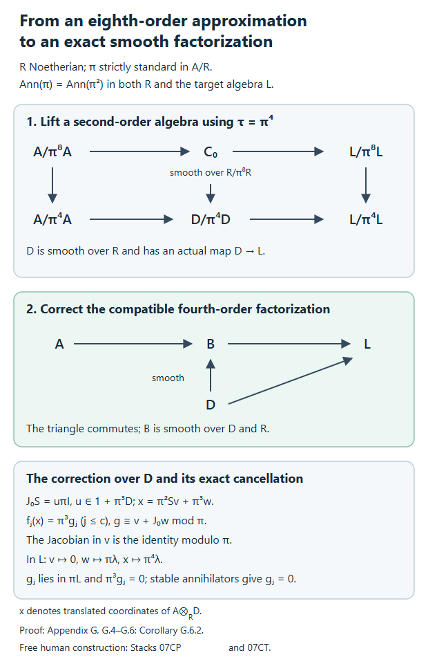
Figure G.1. Eighth-order algebra lifting and fourth-order correction produce the exact smooth factorization. In the correction panel the coefficient ring is \(D\) and \(x\) denotes translated coordinates of \(A\otimes _R D\). This is Corollary G.6.2, using Theorems14.1–G.5.1. Editable SVG source.

G.7. Artinian flatness and powers of residue-field elements
G.7.1. A nilpotent flatness test, with proof
Lemma G.7.1.1. Let \(J\) be a nilpotent ideal of \(T\) and \(N\) a \(T\)-module. If \(N/JN\) is flat over \(T/J\) and \(\operatorname{Tor}_1^T(T/J,N)=0\), then \(N\) is \(T\)-flat.
Proof. First let \(V\) be any \(T\)-module killed by \(J\). Choose a surjection \(F\to V\) with \(F\) a free \(T/J\)-module and kernel \(K\). Both \(F\) and \(K\) are killed by \(J\). The assumed \(\operatorname{Tor}\) vanishing gives \(\operatorname{Tor}_1^T(F,N)=0\) because \(F\) is a direct sum of copies of \(T/J\). In the \(\operatorname{Tor}\) exact sequence, \(\operatorname{Tor}_1^T(V,N)\) therefore injects into \(K\otimes _T N\) with image the kernel of \(K\otimes _T N\to F\otimes _T N\). But those last two tensor products are \(K\otimes _{T/J}(N/JN)\) and \(F\otimes _{T/J}(N/JN)\), and the map is injective by flatness over \(T/J\). Thus \(\operatorname{Tor}_1^T(V,N)=0\).
For an arbitrary \(V\), its finite filtration by \(J^iV\) has successive quotients killed by \(J\). The long exact sequence of \(\operatorname{Tor}\) proves \(\operatorname{Tor}_1^T(V,N)=0\) by induction over this filtration: if it vanishes for both ends of a short exact sequence, it vanishes for its middle. Finally, for every short exact sequence of \(T\)-modules, the same long exact sequence now makes tensoring with \(N\) injective on the first term. Tensoring is always right exact, so it is exact. This is flatness. □
Only the free resolutions, direct-sum compatibility and exact \(\operatorname{Tor}\) sequence proved in AG-CA, Resolutions, \(\operatorname{Tor}\) and Ext and \(\operatorname{Tor}\) and flat modules, are used in this argument.
G.7.2. Making local annihilator stability global
Lemma G.7.2.1. Let \(T\) be Noetherian, \(M\) a finite \(T\)-module and \(S\) a multiplicative subset of \(T\). Suppose the kernels of multiplication by \(\pi\) and \(\pi ^{2}\) on \(S^{-1}M\) coincide. There is \(s\in S\) such that, for every integer \(n\ge 1\),
\[ \ker(s^n\pi:M\to M)=\ker((s^n\pi)^2:M\to M). \]
Proof. Let \(K=\operatorname{ker}(\pi :M\to M)\), and let \(K'\) consist of elements of \(M\) killed by \(\pi ^{2}\) after localization at \(S\). The localized hypothesis implies \(S^{-1}(K'/K)=0\). Since \(M\) is finite over a Noetherian ring, \(K'/K\) is finite; choose one \(s\in S\) killing all its generators. Then \(\pi sK'=0\). If \((s^n\pi)^2m=0\), inversion of \(s\) shows \(m\in K'\). Hence \(s\pi m=0\), so \(s^n\pi m=0\) for every \(n\ge 1\). The reverse kernel inclusion is automatic. □
This proves the parameter adjustment used in both field branches. Its free human source is Stacks 07FC.
G.7.3. Enlarging an Artinian algebra to contain a power
Lemma G.7.3.1. Let \(D\to T\) be a flat local map of local Artinian rings of characteristic \(p>0\), with \(m_D T=m_T\). Let \(\lambda\) be a unit of \(T\). There is a local Artinian \(D\)-algebra \(D'\), essentially smooth over \(D\), mapping flatly and locally to \(T\), and an integer \(q>0\) such that \(\lambda ^q\) is in the image of \(D'\). Here essentially smooth means a localization of a finitely presented smooth algebra; finite portions of such a localization factor through a principal localization and thus a smooth algebra.
Proof. Put \(F=D/m_D\) and \(K=T/m_T\), and let \(\alpha \in K\) be the residue of \(\lambda\). We may identify \(F\) with a subfield of \(K\). A local flat map is faithfully flat: for nonzero \(v\in V\), flatness preserves the cyclic submodule Dv⊂\(V\) after tensoring. Its tensor product is \(T/\operatorname{Ann}_D(v)T\), which is nonzero because the proper ideal \(\operatorname{Ann}_D(v)\) is contained in \(m_D\) and \(T/m_DT\ne 0\). Thus \(V\otimes _D T\ne 0\). In particular \(D\to T\) is injective; the same statement will apply to the enlargements below.
If \(\alpha \in F\), choose \(x\in D\) with residue \(\alpha ^{-1}\). Then \(x\) is a unit and \(x\lambda=1+u\) with \(u\in m_T\). Choose a \(p\)-power \(q=p^r\) at least a nilpotence exponent of \(m_T\). The characteristic-\(p\) binomial identity gives \((1+u)^{q}=1+u^q=1\), so \(\lambda ^q=x^{-q}\) is already in the image of \(D\). A general integer merely divisible by \(p\) would not justify this identity; a \(p\)-power is used.
If \(\alpha\) is transcendental over \(F\), put
\[ D'=D[U]_{m_DD[U]},\qquad U\longmapsto\lambda. \]
Every inverted polynomial has a nonzero residue in \(F[U]\), so its value at \(\alpha\) is nonzero in \(K\) and its value at \(\lambda\) is a unit of \(T\). Thus the map is defined and local. The ring \(D'\) is Noetherian, with nilpotent maximal ideal \(m_DD'\) and residue field \(F(U)\); hence it is local Artinian. It is a localization of a polynomial algebra over \(D\) and is essentially smooth.
To check flatness of \(T\) over \(D'\), put \(J=m_DD'\). \(A\) free \(D\)-resolution of \(F\) remains exact after tensoring with the \(D\)-flat algebra \(D'\); it becomes a free \(D'\)-resolution of \(F(U)=D'/J\). Tensoring this resolution with \(T\) computes \(\operatorname{Tor}_1^{D'}(D'/J,T)=\operatorname{Tor}_1^D(F,T)=0\). Also \(T/JT=K\) is flat over \(F(U)\), because \(U\mapsto \alpha\) embeds this field in \(K\). Lemma G.7.1.1 applies to the nilpotent ideal \(J\) and proves flatness. This enlargement contains \(\lambda\) itself, so \(q=1\) works.
Finally suppose \(\alpha\) is algebraic over \(F\). Repeatedly removing \(p\)-th powers from its irreducible polynomial shows that \(\alpha ^{p^e}\) is separable over \(F\) for some \(e\ge 0\): an irreducible polynomial with zero derivative is a polynomial in \(U^p\), and its degree strictly decreases at each such removal. Lift the finite separable extension \(F(\alpha ^{p^e})/F\) to a finite étale \(D\)-algebra \(D'\). This is the actual nilpotent finite étale lifting theorem AG-FSE Theorem 6.2, applied to the nilpotent ideal \(m_D\). Its closed reduction is a field, so \(D'\) is local Artinian and \(m_{D'}=m_DD'\). The chosen embedding of that field into \(K\) lifts uniquely to \(D'\to T\) by formal étaleness across the nilpotent ideal \(m_T\).
This map is flat. Indeed \(D'\) is \(D\)-flat, and tensoring a free \(D\)-resolution of \(F\) with \(D'\) resolves \(D'/m_DD'=F(\alpha ^{p^e})\). Its further tensor with \(T\) again gives zero \(\operatorname{Tor}_1\) because \(T\) is \(D\)-flat. The closed reduction \(K\) is flat over the residue field of \(D'\). Apply Lemma G.7.1.1. Now the first case, applied over \(D'\) to the unit \(\lambda ^{p^e}\), shows that a further \(p\)-power of it lies in \(D'\). This finishes all cases. □
A construction source is Stacks 07FI. The explicit flatness checks and the use of \(p\)-powers above are included so that this lemma does not hide another approximation input.
G.7.4. The separable closed-fibre Artinian case
Lemma G.7.4.1. If every finitely generated intermediate field of \(K/k\) is separably generated over \(k\), then \(K\) is ind-smooth over \(k\).
Proof. For a finitely generated intermediate field \(E\), choose a separating transcendence basis \(t_1\),…,\(t_d\). The extension \(E/k(t)\) is finite separable. Write it as a finite tower generated by elements \(\alpha _i\) with separable monic minimal polynomials. Starting from \(k[t]\), at each stage first invert the finitely many nonzero denominators of the next polynomial's coefficients in the preceding algebra. Then adjoin its root and invert its nonzero derivative. The resulting monic quotient embeds in the next field: monic division reduces any polynomial in its kernel to a lower-degree polynomial, which must vanish by minimality over the preceding fraction field. Each step is standard étale after a principal localization, by the proved one-equation Jacobian criterion. This gives a finitely presented smooth \(k\)-algebra \(C\) contained in \(E\), with fraction field \(E\).
Every finite list of elements of \(E\) lies in a principal localization \(C_h\): express them as fractions in \(C\) and multiply their finitely many nonzero denominators. The principal localizations are smooth, and their union is \(E\). Given any finitely presented \(k\)-algebra \(A\to K\), its finite list of generator images belongs to one such \(E\). Its defining equations already hold there, and the corresponding finite fractions lie in some \(C_h\). Thus \(A\to K\) factors through \(C_h\). Lemma G.1.1.1 proves the claim. □
Corollary G.7.4.2. Let \(R\to L\) be a flat local map of local Artinian rings, with \(m_RL=m_L\). If every finitely generated intermediate field of \(\kappa (L)/\kappa (R)\) is separably generated, then \(L\) is ind-smooth over \(R\).
Proof. The maximal ideal \(m_R\) is nilpotent and \(L/m_RL=\kappa (L)\). Apply Lemma G.7.4.1 to this residue field extension and Theorem G.2.2.2 to \(R\to L\). □
This includes all residue field extensions in characteristic zero. The proof uses no cardinality bound and does not assume \(L\) is finite over \(R\). For the field-case smoothing theorem, the regular parameters and local flatness needed to reach this Artinian map remain separate steps.
G.8. Parameter powers and exact localization identities
Lemma G.8.1 (parameter bound). If an ideal \(m\) is generated by \(d\) elements \(\tau _i\) and \(e\ge 1\), then \(m^{d(e-1)+1}\subset (\tau _i^e)\) for \(d\ge 1\). If \(m=0\) the analogous containment is immediate.
Proof. Every generating monomial of that total degree has some exponent at least \(e\); otherwise its degree is at most \(d(e-1)\). It is divisible by the corresponding \(\tau _i^e\). □
Lemma G.8.2 (clearing an exact equation). Let \(S\) be a multiplicative subset of a ring \(L\), \(N\ge 1\), \(\tau ,a_j\in L\) and \(b_j\in S^{-1}L\). If \(\tau ^{2N}=\sum _j a_jb_j\) in \(S^{-1}L\), there are \(s\in S\) and \(\mu _j\in L\) with \((s\tau )^{2N}\)=\(\sum _j a_j\mu _j\) in \(L\) and \(\mu _j/1=s^{2N}b_j\) in \(S^{-1}L\).
Proof. Choose \(u\in S\) clearing the finite denominators. Represent \(u^{2N}b_j\) by \(\mu _j\in L\). The error \((u\tau )^{2N}\)−\(\sum a_j\mu _j\) vanishes after localization; choose \(r\in S\) killing it in \(L\). Replace \(u\) by \(s\)=ru and \(\mu _j\) by \(r^{2N}\mu _j\). Since \(r\) kills the error, so does \(r^{2N}\); this gives both identities. □
G.9. Spreading a smooth factor and reducing the base to fields
G.9.1. A finite factor with an elementary standard denominator
Lemma G.9.1.1. Let \(A\) be a finitely presented \(R\)-algebra mapped to \(L\), and \(S\) a multiplicative subset of \(R\). Suppose \(S^{-1}A\to S^{-1}L\) factors through a smooth \(S^{-1}R\)-algebra \(C\). Then \(A\to L\) factors through a finitely presented \(R\)-algebra \(B\) in which the image of some \(s\in S\) is elementary standard.
Proof. If \(0\in S\), take \(B=A\) and \(s=0\); the empty minor and zero coefficient give its elementary certificate. Otherwise replace \(C\) by a standard smooth algebra with a retraction, using Lemma G.1.3.1. Compose its retraction with \(C\to S^{-1}L\), so the required factor remains.
Write \(A=R[x_1,\ldots ,x_n]/(g_1,\ldots ,g_t)\). We can retain these \(x_i\) as variables in a standard presentation of \(C\). Indeed, start with any standard presentation in variables \(y\) and write the images of \(x_i\) as polynomials \(a_i(y)\) in the quotient. Add variables \(x_i\) and equations \(x_i-a_i(y)\). Taking as pivots the new \(x_i\) and the old Jacobian pivots gives a block-triangular matrix with the same invertible determinant. In this presentation the map from \(A\) sends its generators to those same \(x_i\).
The images in \(S^{-1}L\) of the additional \(y\)-variables are fractions with denominators in \(S\). Multiply each such variable by its denominator, and substitute the inverse scaling in the equations. This is a polynomial coordinate change over \(S^{-1}R\); its Jacobian determinant changes only by units from \(S\). The additional variables now map to actual elements \(\lambda _i\) of \(L\), while the original \(x_i\) retain their actual prescribed images. Multiply each equation by an element of \(S\) to clear its finitely many coefficients. Thus write
\[ C=S^{-1}R[X_1,\ldots,X_N]/(f_1,\ldots,f_c), \]
with \(f_j\in P=R[X]\), all variables mapped to \(\lambda _i/1\), and a selected \(c\)-column determinant \(\Delta\) invertible in \(C\). Choose a polynomial representative \(a_0\) of \(\Delta ^{-1}\). Membership of \(1-a_0\Delta\) in the defining ideal gives coefficients \(a_j\) with
\[ 1=a_0\Delta+\sum_j a_jf_j\quad\text{in }S^{-1}P. \]
Clear their finitely many coefficient denominators. Any resulting polynomial error vanishing after localization has finitely many coefficients, each killed by an element of \(S\); a common further product kills the whole error. Hence there is an exact polynomial equality
\[ s_0=a_0\Delta+\sum_j a_jf_j\quad\text{in }P, \tag{G.9.1.1} \]
with \(s_0\in S\) and all \(a_j\in P\). Renaming these coefficients does not affect their meaning.
Each \(f_j(\lambda )\) vanishes in \(S^{-1}L\); choose \(u_j\in S\) killing it in \(L\) itself. Each original relation \(g_\ell\) vanishes in \(C\), so choose \(v_\ell \in S\) with \(v_\ell g_\ell \in (f_1,\ldots ,f_c)P\). This latter membership is also exact: clear the finite coefficient denominators in a localized ideal expression and then kill its polynomial error as above. Define
\[ F_j=u_jf_j, \qquad B=P/(F_1,\ldots,F_c,g_1,\ldots,g_t). \]
The variable assignments \(\lambda _i\) give an actual map \(B\to L\), and the original \(x_i\) give \(A\to B\). Put \(U=\prod _j u_j\), \(V=\prod _\ell v_\ell\) and \(s=s_0UV\). The selected determinant for the first \(c\) equations \(F_j\) is \(U\Delta\). Multiplying (G.9.1.1) by \(U\) and then by \(V\) gives
\[ s=(Va_0)\det(J_F)\quad\text{in }B. \]
The omitted terms are multiples of \(F_j\): explicitly \(U f_j=(\prod _{i\ne j}u_i)F_j\), which uses no division in \(R\). Also \(s g_\ell \in (F_1,\ldots ,F_c)P\), because \(v_\ell g_\ell\) has a polynomial expression in \(f_j\) and the product \(U\) supplies every \(u_j\). These are the two elementary standard certificates. This proves the lemma including possible kernels of \(R\to S^{-1}R\) and \(L\to S^{-1}L\). □
G.9.2. Reduction from fields to Noetherian bases
Theorem G.9.2.1 (reduction to fields). Suppose every Noetherian geometrically regular algebra over every field is ind-smooth over that field. Then every regular homomorphism \(R\to L\) of Noetherian rings is ind-smooth. Here regular means flat with geometrically regular fibres.
Proof. Base change to a quotient \(R/I\to L/IL\) preserves regularity: flatness is preserved by tensoring, and its fibres are the corresponding original fibres at primes containing \(I\). All these rings are Noetherian.
Suppose a counterexample exists. In the set of ideals \(I\) for which \(R/I\to L/IL\) is not ind-smooth, choose a maximal one; the ascending chain condition guarantees this. Replace \(R\) and \(L\) by those quotients. The resulting map is still regular and not ind-smooth, while every further nonzero ideal quotient is ind-smooth. Its nilradical is nilpotent: it is finitely generated over the Noetherian ring, and a sufficiently high product power kills its finitely many nilpotent generators. If that nilradical were nonzero, its quotient map would be ind-smooth, and Theorem G.2.2.2 with the flat map \(R\to L\) would make the original map ind-smooth as well. Hence \(R\) is reduced. The zero ring and zero target give immediate smooth factorizations through zero, so assume both rings are nonzero.
Let \(S\) be the nonzerodivisors in \(R\). The total quotient ring \(Q=S^{-1}R\) is a finite product of fields. Here is the exact reduced-ring argument. The Noetherian ring has finitely many minimal primes \(p_i\) and their intersection is zero. An element outside their union is a nonzerodivisor: if ab=0, primality gives \(b\in p_i\) for all \(i\), so \(b=0\). Conversely, if \(a\in p_i\), choose for each \(j\ne i\) an element of \(p_j\) outside \(p_i\). Their product \(b\) is nonzero modulo \(p_i\) and lies in all the other minimal primes. Then ab is in every minimal prime and is zero, with \(b\ne 0\). Thus the zero divisors are exactly the union of the minimal primes.
\(A\) prime \(p\) disjoint from \(S\) is contained in one \(p_i\). Indeed, otherwise choose \(a_i\in p\) outside \(p_i\) and \(b_i\) in every \(p_j\) for \(j\ne i\) but outside \(p_i\), using products as in the preceding paragraph. Then \(\sum _i a_i b_i\) lies in \(p\) but outside every \(p_i\), contradicting disjointness from \(S\). Minimality now makes \(p\) equal to that \(p_i\). The primes of \(Q\) are therefore precisely its finitely many minimal primes, all maximal. They are pairwise comaximal, their intersection is zero, and the Chinese remainder theorem gives \(Q\simeq \prod _i K_i\) with \(K_i\) fields. No finiteness of a normalization is used.
The regular base change \(Q\to S^{-1}L\) decomposes by the idempotents of \(Q\) as the finite product of geometrically regular Noetherian maps \(K_i\to L_i\). Each is ind-smooth by the hypothesis. For a finitely presented \(Q\)-algebra \(A_Q\) mapped to \(S^{-1}L\), its idempotent decomposition gives finitely presented \(A_i\to L_i\). Factor each through a smooth \(K_i\)-algebra \(C_i\) and take \(\prod _i C_i\). This product is smooth over \(Q\): finite presentations combine componentwise, and square-zero lifting tests split by the fixed base idempotents. Thus \(Q\to S^{-1}L\) has the finite-factor property of Lemma G.1.1.1.
Now let any finitely presented \(R\)-algebra A map to \(L\). Factor its localization through a smooth \(Q\)-algebra and apply Lemma G.9.1.1 to obtain \(A\to B\to L\) with \(\pi \in S\) elementary standard in \(B\) over \(R\). In particular \(\pi\) is strictly standard. Multiplication by \(\pi\) and \(\pi ^{2}\) is injective on \(R\), and also on \(L\) by flatness; their annihilators are zero. If \(\pi\) is a unit, \(B\) itself is smooth by Lemma G.3.1.1 and the required factorization is already obtained.
Otherwise \(\pi ^{8}R\) is a nonzero ideal, so \(R/\pi ^{8}\to L/\pi ^{8}L\) is ind-smooth by the maximal-counterexample choice. Lemma G.1.1.1 factors \(B/\pi ^{8}B\to L/\pi ^{8}L\) through a smooth \(R/\pi ^{8}\)-algebra \(C_0\). Corollary G.6.2, applied to \(B\to L\) and \(\pi\), now gives an exact factorization \(B\to D\to L\) with \(D\) smooth over \(R\). Composing with \(A\to B\) factors the arbitrary original \(A\)-map through a smooth algebra. Lemma G.1.1.1 contradicts the counterexample. □
Construction sources: Stacks 07F4 and 07F5. The finite-denominator construction and ideal induction are now written here. The field hypothesis is proved in §§ G.10–G.16; Theorem G.16.1 applies this reduction.
G.10. Local resolution, lifting and preservation of the old smooth locus
Let \(R\) and \(L\) be Noetherian, \(A\) a finitely presented \(R\)-algebra mapped to \(L\), and \(q\) a prime of \(L\). As in § G.4, \(H_{A/R}\) is the radical ideal defining the nonsmooth locus. Put \(h_A\)=√\((H_{A/R}L)\). \(A\) resolution at q is a finitely presented factor \(A\to B\to L\) with \(h_A\subset h_B\) and \(h_B\) not contained in \(q\). This definition records both the old smooth locus and the new improvement. If \(h_A\) is already not contained in \(q\), \(A\) itself is a resolution.
G.10.1. Turning a unit smooth-locus ideal into a smooth factor
Lemma G.10.1.1. If \(h_A=L\), then \(A\to L\) factors through a smooth \(R\)-algebra.
Proof. The ideal \(H_{A/R}L\) is already the unit ideal, since a proper ideal has proper radical. Choose a finite expression \(1=\sum _j h_j\lambda _j\) in \(L\) with \(h_j\in H_{A/R}\). Set
\[ B=A[T_1,\ldots,T_s,1/(\sum_jh_jT_j)], \qquad T_j\longmapsto\lambda_j. \]
This is a finitely presented factor. At every prime of \(B\) some \(h_j\) is a unit locally, because their indicated linear combination is a unit. On that neighborhood \(B\) is a principal localization of a polynomial algebra over the smooth \(R\)-algebra \(A_{h_j}\). Thus \(B\) is smooth everywhere over \(R\). The assertion that smoothness can be checked at these standard neighborhoods is the written local criterion in AG-CA Theorem 5.1. □
G.10.2. Lifting a local improvement across an eighth power
Lemma G.10.2.1. Suppose \(\pi \in R\) is strictly standard in \(A/R\) and has stable annihilator in \(R\) and \(L\). Given any finitely presented factor
\[ A/\pi^8A\longrightarrow C_0\longrightarrow L/\pi^8L, \]
there is a finitely presented factor \(A\to B\to L\) such that \(B[1/\pi ]\) is smooth over \(R\) and
\[ H_{C_0/(R/\pi^8)}(L/\pi^8L) \subset h_B/\pi^8L. \tag{G.10.2.1} \]
The right side is defined because \(\pi \in h_B\). If the given factor is a resolution at \(q/\pi ^{8}L\), where \(\pi \in q\), then \(B\) is a resolution at \(q\).
Proof. Apply Theorem G.6.1 with \(\tau =\pi ^{4}\). Stable annihilators for \(\tau\) follow from Lemma G.3.2.1. Obtain a finitely presented \(D\to L\), smooth away from \(\pi\) and above the smooth points of \(C_0\) at primes containing \(\pi\), together with \(C_0/\pi ^{4}\to D/\pi ^{4}\). Compose with \(A/\pi ^{4}\) and apply Theorem G.5.1. It gives \(A\to B\)←\(D\) and \(B\to L\), with every point of \(B\) above a smooth point of \(D/R\) itself smooth over \(R\).
Away from \(\pi\), \(D\) is smooth, so \(B[1/\pi ]\) is smooth. Thus \(\pi \in H_{B/R}\), in particular \(\pi \in h_B\). Now let \(p\) be any prime of \(L\) containing \(h_B\). It contains \(\pi\). If the induced prime of \(C_0\) were a smooth point over \(R/\pi ^{8}\), Theorem G.6.1 would make the induced prime of \(D\) smooth over \(R\), and Theorem G.5.1 would make the induced prime of \(B\) smooth. That contradicts \(p\) containing \(H_{B/R}L\). Hence \(p/\pi ^{8}L\) contains the image of \(H_{C_0/(R/\pi ^{8})}\). Intersect all such \(p\). This gives (G.10.2.1), since \(h_B\) is radical and contains \(\pi ^{8}L\). No equivalence between arbitrary smoothness and smoothness on a closed fibre is assumed: it is the specific lifting construction that proves the needed direction.
For the final assertion, base change preserves the original smooth locus, so the image of \(h_A\) in \(L/\pi ^{8}L\) is contained in the radical smooth-locus ideal of \(A/\pi ^{8}\) over \(R/\pi ^{8}\). A resolution through \(C_0\) contains that ideal. Equation (G.10.2.1) then gives \(h_A\subset h_B\). Its improvement at \(q/\pi ^{8}\) gives an element of \(h_B\) outside \(q\). This is a resolution as defined. □
Lemma G.10.2.2. Let \(\pi _1\),…,\(\pi _r\in R\) map into \(q\). Suppose every \(\pi _i\) is strictly standard in \(A/R\) and its annihilator is stable in both
\[ R/(\pi_1^8,\ldots,\pi_{i-1}^8), \qquad L/(\pi_1^8,\ldots,\pi_{i-1}^8)L. \]
A resolution after quotienting by all \(\pi _i^{8}\) lifts to a resolution before quotienting.
Proof. For \(r=1\) this is Lemma G.10.2.1. For \(r>1\), first work over \(R/\pi _1^{8}\) and apply induction to \(\pi _2\),…,\(\pi _r\). The stated successive quotient hypotheses are exactly those required there. Strict certificates survive base change, as shown in § G.3. Having obtained a resolution over \(R/\pi _1^{8}\), apply the one-element case to lift it to \(R\). □
G.10.3. A smooth local factor descends to an actual global map
Lemma G.10.3.1. Put \(p=q\cap R\). If \(A\otimes _R R_p\to L_q\) factors through a smooth \(R_p\)-algebra, then there is a finitely presented factor \(A\to C\to L\) with \(h_C\) not contained in \(q\). No preservation of \(h_A\) is asserted in this lemma.
Proof. Replace the local smooth factor by a standard smooth factor with a retraction. Use the graph-presentation construction of Lemma G.9.1.1 to retain the original \(R\)-generators \(x_1\),…,\(x_n\) of \(A\) among its polynomial variables. Clear the finitely many \(R_p\)-coefficients and all polynomial localization errors. We get polynomials \(f_j\in R[x,y]\) and an \(s\in R\setminus p\) such that
\[ C_s^0=R_s[x,y]/(f_1,\ldots,f_c) \]
is standard smooth and the original defining equations \(g_\ell\) of \(A\) belong to \((f_j)\) after inverting \(s\). This is the same finite polynomial denominator argument as in (G.9.1.1), applied now to \(S=R\setminus p\).
The additional \(y\)-variables map to fractions \(\zeta _i/\delta\) in \(L_q\), with a common \(\delta \in L\setminus q\). Homogenize each \(f_j\) only in these additional variables, using one variable \(W\):
\[ F_j(x,Y,W)=W^{d_j}f_j(x,Y/W), \]
where \(d_j\) is the maximum degree in \(y\) and \(x\) is not homogenized. These are polynomials over \(R\). Their values at the actual images \(x_i=\lambda _i\), \(Y_i=\zeta _i\) and \(W=\delta\) vanish in \(L_q\). Choose \(\eta \in L\setminus q\) killing this finite list of errors in \(L\). Define
\[ C=R[x,Y,W,V]/(g_\ell(x),\ VF_j(x,Y,W)), \]
with \(x_i\mapsto \lambda _i\), \(Y_i\mapsto \zeta _i\), \(W\mapsto \delta\), \(V\mapsto \eta\). All defining equations vanish in \(L\), so this is an actual factor of \(A\to L\). Put \(h=sVW\). Its image \(\eta \delta\)s avoids \(q\). Inverting \(h\) inverts \(s,V,W\) separately. Set \(y_i=Y_i/W\); the equations become \(f_j(x,y)=0\), and the original \(g_\ell\) are redundant because \(s\) was inverted. Consequently
\[ C_h\simeq C_s^0[V,V^{-1},W,W^{-1}], \]
which is smooth over \(R\). Thus \(h\in H_{C/R}\) and its image avoids \(q\). The construction explicitly kills localization errors, so it does not presume \(L\to L_q\) is injective. □
G.10.4. Recovering the original smooth locus over an Artinian localization
Lemma G.10.4.1. Suppose \(\operatorname{dim} L_q=0\) and \(A\otimes R_p\to L_q\) has a smooth \(R_p\)-factor. Then \(A\to L\) admits a resolution at \(q\), provided \(q\) contains \(h_A\).
Proof. Apply Lemma G.10.3.1 to get \(A\to C\to L\) with \(h_C\) not contained in \(q\). Write \(H_{A/R}=(a_1,\ldots ,a_s)\). The local Noetherian zero-dimensional ring \(L_q\) is Artinian. Each \(a_i\) lies in its nilpotent maximal ideal, so choose \(N>0\) with \(a_i^N=0\) in \(L_q\) for all \(i\). A common \(\eta \in L\setminus q\) kills these finitely many \(a_i^N\) in \(L\) itself.
Write \(C=A[x_1,\ldots ,x_n]/(f_1,\ldots ,f_m)\) using finite lists; a map between finitely presented \(R\)-algebras makes the target finitely presented over the source by adding the finite graph equations for its generators. Introduce \(y_1\),…,\(y_s\), \(z\) and \(T_{ij}\), and set
\[ B=A[x,y,z,T]/(f_j-\sum_i y_iT_{ij},\ zy_i). \tag{G.10.4.1} \]
Map \(x\) as in \(C\to L\), \(y_i\) to \(a_i^N\), \(z\) to \(\eta\) and every \(T_{ij}\) to zero. This is an actual factor \(A\to B\to L\).
At the prime induced by \(q\), \(z\) is invertible. There the \(y_i\) are zero, and
\[ B_z\simeq C[z,z^{-1},T_{ij}]. \tag{G.10.4.2} \]
The induced prime of \(C\) is smooth because \(h_C\) avoids \(q\). Thus \(B\) is smooth at the induced prime and \(h_B\) avoids \(q\). We use smoothness at this prime, not an unsupported assertion that \(C\) is smooth everywhere.
If \(y_i\) is inverted, \(z=0\) and the equations solve independently for \(T_{ij}\), \(j=1\),…,\(m\). Thus \(B_{y_i}\) is a polynomial localization over \(A\). After also inverting \(a_i\) it is smooth over \(R\), because \(A_{a_i}\) is smooth. Hence \(a_i y_i\in H_{B/R}\). Its image is \(a_i^{N+1}\), so \(a_i\) lies in \(h_B\). All \(a_i\) do, which gives \(h_A\subset h_B\) and proves the resolution. □
Construction sources for § G.10 are Stacks 07F0, 07F8, 07F9 and 07FA. The smooth-locus verification omitted in \(07F\)0 is supplied in §G.10.2. The correct localization in (G.10.4.2) has the \(T\)-variables, with the \(y\)-variables zero. This section also keeps the distinction between a model smooth at the selected point and a globally smooth model.
G.11. Field resolution with separable residue and the characteristic-zero theorem
G.11.1. Flatness from regular parameters
Lemma G.11.1.1. Let \((R,m,k_0)\to (T,n)\) be a local map of Noetherian local rings. Suppose a regular sequence \(x_1\),…,\(x_d\) generates \(m\) and its images form a regular sequence in \(T\). Then \(T\) is \(R\)-flat.
Proof. The Koszul complex on \(x\) is a finite free resolution of \(k_0\). Its exactness follows by induction: adjoining the next generator takes the mapping cone of multiplication by that generator, and its positive homology is zero because multiplication is injective on the preceding \(H_0\) quotient. Tensoring with \(T\) gives the Koszul complex on the images of \(x\), exact for the same reason. Therefore \(\operatorname{Tor}_1^R(k_0,T)=0\). Apply the actual Noetherian local flatness criterion AG-CA, Faithful flatness and the local criterion for flatness, Theorem 4.2, with the finite \(T\)-module \(T\). No finiteness of \(T\) as an \(R\)-module is required. □
G.11.2. Resolving one prime with separable residue
Theorem G.11.2.1. Let \(k\) be a field, \(L\) a Noetherian \(k\)-algebra, and \(A\) a finitely presented \(k\)-algebra mapped to \(L\). Let \(q\) be minimal over \(h_A\). Suppose \(L_q\) is regular and \(\kappa (q)/k\) is separable, meaning every finitely generated intermediate field is separably generated. Then \(A\to L\) has a resolution at \(q\).
Proof. Write \(H_{A/k}=(a_1,\ldots ,a_s)\), and put \(d=\operatorname{dim} L_q\). If \(d=0\), the target \(L_q\) is its residue field. Lemma G.7.4.1 gives a smooth factor of the localized \(A\)-map, and Lemma G.10.4.1 gives the required resolution. Assume \(d>0\).
Since \(q\) is minimal over the radical of the ideal \((a_i)L\), that ideal in \(L_q\) has radical \(qL_q\). Choose \(N>0\) with \((qL_q)^{N}\subset (a_i)L_q\): the quotient is Noetherian with nilpotent maximal ideal, and finitely many generators give such a bound. Use this actual ideal, not only its radical. Define \(R=k[X_1,\ldots ,X_d]\) and
\[ B=A[X_i,Z_{ij}]/(X_i^N-\sum_j a_jZ_{ij}). \]
For each \(j\), \(B_{a_j}\) is a polynomial algebra over \(A_{a_j}[X]\) after solving one \(Z\)-variable for each \(i\), and hence smooth over \(R\). On \(B_{X_i}\), the relation \(X_i^N=\sum a_jZ_{ij}\) makes the ideal generated by the \(a_j\) the unit ideal; those smooth opens therefore cover \(B_{X_i}\). Thus \(B_{X_i}\) is smooth over \(R\).
Apply Corollary G.1.2.2 over the Noetherian polynomial ring \(R\) to get \(B\to C=\operatorname{Sym}_B(K/K^{2})\) with a retraction, where \(K\) is the kernel of a finite \(R\)-polynomial presentation of \(B\). Each \(C_{X_i}\) is smooth over \(R\) with free differentials. Lemma G.3.1.2 gives a common \(c>0\) such that every \(X_i^c\) is strictly standard in \(C/R\). Put \(e=8c\).
Choose elements \(\tau _i\in L\) whose images form a regular system of parameters of \(L_q\). Their \(N\)-th powers belong to \((a_j)L_q\). Clearing denominators and then killing the finite localization errors, multiply each \(\tau _i\) by an element outside \(q\) so that its \(N\)-th power belongs to \((a_j)L\) in \(L\) itself. Now proceed successively. On
\[ L/(\pi_1^e,\ldots,\pi_{i-1}^e)L \]
the next chosen parameter has injective multiplication after localization at \(q\). This follows because regular parameters, their permutations and their positive powers are regular in the regular local ring; the actual proofs are AG-CA, Regular sequences, depth and Cohen–Macaulay modules, Propositions 1.2–1.3 and Theorem 6.1. Apply Lemma G.7.2.1 to this finite Noetherian quotient module. A further multiplication by an element outside \(q\) makes its annihilator stable globally on that quotient. Denote the resulting element by \(\pi _i\). It remains a parameter locally and its \(N\)-th power still belongs to \((a_j)L\), since further multiplication preserves ideal membership. Write \(\pi _i^N=\sum _j a_j\lambda _{ij}\) in \(L\).
Map \(R\) to \(L\) by \(X_i\mapsto \pi _i\), \(B\) to \(L\) by \(Z_{ij}\mapsto \lambda _{ij}\), and \(C\) to \(L\) through its retraction to \(B\). The source sequence \(X_i^c\) has stable annihilators on all preceding quotients by \(X_j^{8c}\): each next polynomial variable remains a nonzerodivisor. The corresponding target sequence \(\pi _i^c\) has stable annihilators there by Lemma G.3.2.1 and the construction. Lemma G.10.2.2 reduces resolution to
\[ R/(X_i^e)\longrightarrow C/(X_i^e)\longrightarrow L/(\pi_i^e)L. \tag{G.11.2.1} \]
At \(q\), its target is Artinian: the \(\pi _i\) are a full parameter system in \(L_q\). The contraction to \(R\) is \(p=(X_1,\ldots ,X_d)\), because \(k\) embeds in \(\kappa (q)\) and each \(\pi _i\) has zero residue. Lemma G.11.1.1 shows \(R_p\to L_q\) flat. Base change makes
\[ R_p/(X_i^e)\longrightarrow L_q/(\pi_i^e) \]
a flat local map of Artinian rings, with residue extension \(\kappa (q)/k\) and maximal ideal generated from the source. Corollary G.7.4.2 makes it ind-smooth. Thus its finitely presented \(C\)-map factors through a smooth algebra. If the current \(h_C\) already avoids \(q\) the resolution is immediate; otherwise Lemma G.10.4.1 descends this smooth local factor to a resolution of (G.11.2.1). Lemma G.10.2.2 lifts it to a resolution of \(R\to C\to L\).
Finally, the model \(C/R\) preserves the original smooth elements \(a_j: C_{a_j}\) is smooth over \(R\) by its construction, so \(h_A\subset h_{C/R}\). A resolution \(C\to D\to L\) preserves this inclusion. Since \(R\) is smooth over \(k\), every smooth point of \(D/R\) is a smooth point of \(D/k\) by composition, giving \(h_{D/R}\subset h_{D/k}\). The resulting \(A\to D\to L\) therefore preserves \(h_A\) and improves at \(q\). □
G.11.3. Assembling the separable-residue branch
Theorem G.11.3.1. Let \(k\) be a field and \(L\) a Noetherian \(k\)-algebra whose local rings are regular and whose residue field extensions \(\kappa (q)/k\) are separable for every prime \(q\). Then \(L\) is ind-smooth over \(k\). In particular every Noetherian geometrically regular algebra over a characteristic-zero field is ind-smooth.
Proof. Fix any finitely presented \(A_0\to L\). Among all finitely presented factors \(A_0\to A\to L\), choose one for which \(h_A\) is maximal; this is possible by the ascending chain condition on ideals of \(L\). If \(h_A\) is proper, choose a prime \(q\) minimal over it. Theorem G.11.2.1 gives \(A\to B\to L\) with \(h_A\subset h_B\) and \(h_B\) avoiding \(q\). The inclusion is strict because \(h_A\subset q\), contrary to maximality. Therefore \(h_A=L\), and Lemma G.10.1.1 gives a smooth factor of \(A_0\to L\). Apply Lemma G.1.1.1.
In characteristic zero every finitely generated field extension is separably generated: take a transcendence basis and note that each algebraic minimal polynomial has nonzero derivative and is coprime to it. Geometric regularity includes regularity of the original local rings, so the assertion applies. □
Corollary G.11.3.2. A regular map of Noetherian \(Q\)-algebras is ind-smooth.
Proof. Repeat the proof of Theorem G.9.2.1. All total-quotient fields in its reduced-ring step have characteristic zero, so Theorem G.11.3.1 supplies its field hypotheses. Every other step was already proved over arbitrary rings at the stated Noetherian hypotheses. □
The separable-residue construction is also described in Stacks 07FE.
G.12. The characteristic-p differential obstruction
We first prove the absolute differential statements needed to construct an Artinian polynomial-base model.
G.12.1. Absolute differentials and lifting a field
Lemma G.12.1.1. For every field \(E\) of characteristic \(p>0\) there is a \(p\)-basis \(B\): its finite-support monomials \(\prod _{b\in B}b^{e_b}\), \(0\le e_b<p\), form an \(E^p\)-basis of \(E\). The differentials \(db\) form an \(E\)-basis of \(\Omega _{E/\mathbf{F}_p}\), and \(da=0\) precisely when \(a\in E^p\). Moreover \(E\) is formally smooth over \(\mathbf{F}_p\).
Proof. Call a set \(p\)-independent when its indicated monomials are independent over \(E^p\). Unions of chains remain \(p\)-independent because a linear relation has finite support. Choose a maximal such set \(B\). If a were outside \(E^p(B)\), adjoining a would have degree \(p\): its \(p\)-th power lies in \(E^p\) and the polynomial \(U^p-a^p\) has a root in that preceding field exactly when a belongs to it. Thus adjoining a would preserve \(p\)-independence, a contradiction. Hence \(E=E^p(B)\). Each finite \(p\)-independent subset generates a finite-dimensional field over \(E^p\), so all of \(E\) is already the polynomial ring in these elements modulo the relations \(X_b^p-b^p\), where \(X_b\) is the formal variable and \(b^p\) is its value in \(E^p\). Monic division and independence of the reduced monomials prove that these are all the relations.
Every \(\mathbf{F}_p\)-derivation kills \(E^p\). Conversely arbitrary assigned values of \(db\) in an \(E\)-module extend uniquely across the preceding polynomial presentation: the derivatives of all its \(p\)-th-power relations are zero. This universal property proves that \(\Omega _{E/\mathbf{F}_p}\) is free on \(db\). In a reduced monomial expansion of a, partial differentiation with respect to each \(b\) shows that all coefficients of monomials with a nonzero exponent must vanish when \(da=0\). The remaining coefficient lies in \(E^p\). This proves the last differential assertion.
For formal smoothness, let \(J^{2}=0\) in an \(\mathbf{F}_p\)-algebra \(T\) and \(\varphi :E\to T/J\). Choose arbitrary lifts \(t_c\) of \(\varphi (c)\), for \(c\in E\). The rule
\[ \beta:E^p\longrightarrow T,\qquad c^p\longmapsto t_c^p \]
is independent of the choices: changing a lift by an element of \(J\) does not change its \(p\)-th power. It is a ring map, since Frobenius is additive and multiplicative in characteristic \(p\) and the same independence compares the lifts of sums and products. Choose a lift \(u_b\) of \(\varphi (b)\) for every \(b\in B\). Its \(p\)-th power is \(\beta (b^p)\). The polynomial presentation above therefore extends \(\beta\) and the \(u_b\) to an actual map \(E\to T\) lifting \(\varphi\). If \(T/J=0\) then \(T=J\) and \(J^{2}=0\) imply \(T=0\), which gives the trivial lift. No finite \(p\)-basis, cardinality restriction or compatibility of separate finite lifts was assumed. □
The same argument shows that finitely many elements \(a_i\) have independent absolute differentials if and only if their reduced \(p\)-monomials are independent over \(E^p\). One direction extends them to a \(p\)-basis. For the other, if \(a_i\) lies in the field generated by \(E^p\) and its predecessors, its differential is an \(E\)-linear combination of their differentials; induction proves the assertion.
G.12.2. The absolute conormal sequence at a residue field
Lemma G.12.2.1. For a local ring \(T\) of characteristic \(p\) with maximal ideal \(m\) and residue field \(E\) there is an exact sequence
\[ 0\longrightarrow m/m^2\longrightarrow \Omega_{T/F_p}\otimes_T E\longrightarrow\Omega_{E/F_p} \longrightarrow0. \tag{G.12.2.1} \]
Proof. Lemma G.12.1.1 lifts the identity of \(E\) to an \(\mathbf{F}_p\)-algebra section \(E\to T/m^{2}\). The latter ring is then \(E\oplus (m/m^{2})\) with square-zero second summand. A derivation from this ring to an \(E\)-module is precisely a derivation on \(E\) together with an \(E\)-linear map on \(m/m^{2}\); the square-zero product rule checks the converse. Thus its differentials tensored with \(E\) are \(\Omega _{E/\mathbf{F}_p}\oplus m/m^{2}\), with the indicated conormal summand injected. Passing from \(T\) to \(T/m^{2}\) does not change the differentials after tensoring with \(E\): \(d(ab)=a\,db+b\,da\) vanishes there for \(a,b\in m\). This proves (G.12.2.1), with its actual left injection. Its existence is canonical even though the chosen splitting is not. □
Lemma G.12.2.2. For a finite purely inseparable field extension \(E'/E\) of characteristic \(p\), the map
\[ \gamma:\Omega_{E/F_p}\otimes_E E'\longrightarrow\Omega_{E'/F_p} \]
has finite-dimensional kernel and cokernel, of equal dimensions. For a finite separable extension it is an isomorphism.
Proof. A purely inseparable finite extension is a finite tower of simple degree-\(p\) extensions: adjoin successive \(p\)-power roots of its finitely many generators, omitting trivial steps. At one step \(E'=E[b]\), \(b^p=a\notin E^p\). Its polynomial presentation gives
\[ \Omega_{E'/F_p} \simeq\big((\Omega_{E/F_p}\otimes E')/E'\,da\big)\oplus E'\,db. \]
The element \(da\) is nonzero by Lemma G.12.1.1. The kernel and cokernel thus both have dimension one. For two composable linear maps with finite kernels and cokernels, the exact sequence of kernels and cokernels of their composition makes the difference \(\operatorname{dim}\)(cokernel)−\(\operatorname{dim}\)(kernel) additive. It follows along the finite tower that this difference remains zero and that the two dimensions remain finite.
For a simple separable extension its monic polynomial has nonzero derivative, a unit in the new field. Differentiating that relation solves uniquely for \(db\) in terms of the old differentials and imposes no relation on them. A finite separable extension is generated by a finite tower of such elements, so the map is an isomorphism. □
G.12.3. Geometric regularity bounds the obstruction
Theorem G.12.3.1. Let \((T,m,E)\) be a Noetherian local algebra over a field \(k\) of characteristic \(p\), geometrically regular over \(k\). Then the canonical map
\[ \Omega_{k/F_p}\otimes_k E \longrightarrow\Omega_{T/F_p}\otimes_T E \tag{G.12.3.1} \]
is injective. Consequently
\[ D(E/k):=\ker\big(\Omega_{k/F_p}\otimes_k E \longrightarrow\Omega_{E/F_p}\big) \]
embeds canonically in \(m/m^{2}\) and has dimension at most \(\operatorname{dim} T\).
Proof. Take a finite list \(a_1\),…,\(a_n\in k\) with independent absolute differentials. Their \(p\)-monomials are independent over \(k^p\), by Lemma G.12.1.1. The algebra
\[ k'=k[U_1,\ldots,U_n]/(U_i^p-a_i) \]
is a field of degree \(p^n\) over \(k\). Indeed its reduced monomials form a basis over \(k\); the \(p\)-th power of a nonzero linear combination is nonzero by the \(p\)-independence of the \(a_i\) over \(k^p\). That \(p\)-th power belongs to \(k\), so the combination has an inverse. This proves the field assertion directly.
Put \(T'=T\otimes _k k'\). It is finite free over \(T\). Each element of \(T'\) has its \(p\)-th power in \(T\); hence a prime over any prime of \(T\) is uniquely determined by the latter, with membership \(t'\in q'\) equivalent to \((t')^{p}\in q\). Existence is also explicit: the \(p\)-th-power map \(T'\to T\) is a ring map, and the inverse image of any prime of \(T\) has that prime as its contraction. Thus \(\operatorname{Spec} T'\to \operatorname{Spec} T\) is a bijection preserving and reflecting specialization. Because \(T\) is local, \(T'\) is local. Its dimension equals \(\operatorname{dim} T\), and its residue field \(E'\) is a finite purely inseparable extension of \(E\).
Geometric regularity makes \(T'\) regular, and makes \(T\) regular by using \(k\) itself as base extension. Their cotangent spaces at the maximal ideals consequently have the same finite dimension \(d=\operatorname{dim} T\). Apply (G.12.2.1) to both rings and extend the first row to \(E'\). There is a commutative diagram of exact rows, with vertical maps
\[ \alpha:(m/m^2)\otimes_E E'\longrightarrow m'/(m')^2, \quad \beta:\Omega_{T/F_p}\otimes_T E'\longrightarrow\Omega_{T'/F_p}\otimes_{T'}E', \quad \gamma:\Omega_{E/F_p}\otimes_E E'\longrightarrow\Omega_{E'/F_p}. \]
The kernel and cokernel of \(\alpha\) have equal dimensions because its two spaces have dimension \(d\). Those of \(\gamma\) are finite with equal dimensions by Lemma G.12.2.2. The polynomial presentation \(T'=T[U]/(U_i^p-a_i)\) shows that \(\beta\) has cokernel \(E'^n\), and kernel the span of \(da_1\),…,\(da_n\) in \(\Omega _{T/\mathbf{F}_p}\otimes E'\): the relative \(U\)-differentials are free, and the old-differential relations are exactly these \(da_i\).
The kernel-cokernel sequence for the diagram is
\[ 0\to\ker\alpha\to\ker\beta\to\ker\gamma \to\operatorname{coker}\alpha\to\operatorname{coker}\beta \to\operatorname{coker}\gamma\to0. \]
All its terms are finite-dimensional; taking its alternating dimensions gives \(\operatorname{dim} \operatorname{ker} \beta =\operatorname{dim}\) coker \(\beta =n\). The \(n\) elements \(da_i\) are therefore independent in \(\Omega _{T/\mathbf{F}_p}\otimes E'\). Faithfulness of the field extension \(E'/E\) makes them independent already over \(E\). Every element of \(\Omega _{k/\mathbf{F}_p}\) uses finitely many members of its \(p\)-basis, so this proves the full injection (G.12.3.1).
An element of \(D(E/k)\) now has a unique image in \(\Omega _{T/\mathbf{F}_p}\otimes E\) and maps to zero in \(\Omega _{E/\mathbf{F}_p}\). Exactness of (G.12.2.1) places it uniquely in \(m/m^{2}\), and injectivity of (G.12.3.1) makes this placement injective. Regularity gives \(\operatorname{dim}_E m/m^{2}=\operatorname{dim} T\). This proves the bound. □
G.12.4. Choosing a polynomial base from a finite residue field
Lemma G.12.4.1. Let \(F/k\) be a finitely generated field extension. If \(\Omega _{F/k}=0\), then \(F/k\) is finite separable.
Proof. Choose a finite type \(k\)-domain \(B\subset F\) with fraction field \(F\). Its finite differential module becomes zero after localizing to \(F\). A single nonzero \(h\in B\) kills its finite generators, so \(\Omega _{B_h/k}=0\). The finitely presented field-base map \(k\to B_h\) is flat. AG-CA, Smooth algebras over a field and the Jacobian criterion, Theorem 6.2, proves that a flat finitely presented map with zero differentials is étale; its local Jacobian and finite-kernel proof is the written prerequisite, not a reference in its place. AG-CA, Formally smooth, unramified and étale ring maps, Theorem 7.2, then identifies \(B_h\) as a finite product of finite separable fields. It is a domain, so it is one field and equals its own fraction field \(F\). □
Theorem G.12.4.2. In Theorem G.12.3.1, let \(F\) be a finitely generated intermediate field \(k\subset F\subset E\). Choose \(a_1\),…,\(a_s\in F\) whose differentials are a basis of \(\Omega _{F/k}\), and choose lifts \(\lambda _i\in T\) of these elements. For the map \(P=k[Y_1,\ldots ,Y_s]\to T\) sending \(Y_i\) to \(\lambda _i\) and \(p=P\cap m\), the local map \(P_p\to T\) is flat, and \(T/pT\) is regular.
Proof. Put \(F_0=k(a_1,\ldots ,a_s)\), which is the residue field \(\kappa (p)\). The differential quotient \(\Omega _{F/F_0}\) is zero because the chosen differentials span \(\Omega _{F/k}\). Lemma G.12.4.1 gives \(F/F_0\) finite separable. Differentiating its separable monic generators, as in Lemma G.12.2.2, gives \(\Omega _{F_0/k}\otimes F\simeq \Omega _{F/k}\). Thus \(da_i\) are already a basis of \(\Omega _{F_0/k}\).
The ring \(P_p\) is regular local; polynomial rings over a field and their localizations are regular by the actual AG-CA, Regular local rings, Theorem 3.2 and Proposition 3.3. Its absolute differential module at \(F_0\) is
\[ \Omega_{P_p/F_p}\otimes F_0 \simeq(\Omega_{k/F_p}\otimes F_0)\oplus\bigoplus_i F_0\,dY_i. \]
Apply Lemma G.12.2.1 to \(P_p\). Projection to the \(Y\)-summand is the relative differential map, whose quotient map to \(\Omega _{F_0/k}\) is an isomorphism by the selected basis. Thus the injected cotangent space \(pP_p/(pP_p)^{2}\) lies in the absolute \(k\)-summand and is identified there with \(D(F_0/k)\). This conclusion follows by taking kernels in the displayed direct sum and its residue-field map; it is not an assumption about separability of \(F_0/k\).
After extending from \(F_0\) to \(E\), \(D(F_0/k)\) is a subspace of \(D(E/k)\): it is already a subspace of \(\Omega _{k/\mathbf{F}_p}\otimes E\) killed by the map to \(\Omega _{F_0/\mathbf{F}_p}\otimes E\) and hence by the map to \(\Omega _{E/\mathbf{F}_p}\). Theorem G.12.3.1 injects \(D(E/k)\) into \(m/m^{2}\). Naturality of the conormal maps identifies the resulting injection with
\[ \big(pP_p/(pP_p)^2\big)\otimes_{F_0}E\longrightarrow m/m^2. \]
A regular system of parameters of \(P_p\) therefore maps to linearly independent cotangent classes of \(T\). Extend them to a basis of \(m/m^{2}\). Theorem 6.1 of the earlier regular-sequence lesson makes this full parameter system a regular sequence, and its successive quotients regular local. The chosen initial subsequence is regular. Lemma G.11.1.1 proves \(P_p\to T\) flat, and its quotient by that subsequence is \(T/pT\), regular. □
The free human sources for the characteristic-\(p\) field lifting and geometric argument are Stacks 0320, 07E5 and 07E6. Sections G.12.1–G.12.4 give the \(p\)-basis lift, absolute conormal sequence, finite field differential balance and parameter argument explicitly. The finite obstruction \(D(E/k)\) is the ordinary-differential space used below; no unproved cotangent-complex theorem is needed for these conclusions.
G.13. Artinian subalgebras with a flat inclusion
Theorem G.13.1. Let \((T,m,E)\) be a local Artinian \(k\)-algebra of characteristic \(p>0\). Suppose \(D(E/k)\), defined in §G.12.3, is finite-dimensional. Then \(T\) is the directed union of local Artinian \(k\)-subalgebras \(C\), essentially of finite type over \(k\), such that \(C\to T\) is flat and \(m_C T=m\). Every finite subset of \(T\) belongs to one such \(C\).
Proof. Choose generators \(t_1\),…,\(t_d\) of \(m\) and \(n\) with \(m^n=0\). Formal smoothness of \(E/\mathbf{F}_p\) lifts the identity of \(E\) through \(T\to E\) to a coefficient-field section \(\sigma :E\to T\). For any such section, the map \(\Psi _\sigma :E[X_1,\ldots ,X_d]\to T\), \(X_i\mapsto t_i\), is surjective: lift residues by \(\sigma\), express the remaining error by the \(t_i\), and repeat; after \(n\) steps the error is zero.
We first prove that a section \(\sigma\) and a finitely generated intermediate field \(k\subset F\subset E\) can be chosen so that the given image of \(k\) in \(T\) is contained in \(\Psi _\sigma (F[X])\). The section need not initially respect \(k\). Induct on \(n\). For \(n=1\), \(T=E\) and \(F=k\) works. For \(n>1\) put \(I=m^{n-1}\), so \(I^{2}=0\) and \(mI=0\). By induction over \(T/I\), choose \(\sigma ':E\to T/I\) and \(F'/k\) finitely generated with the required containment there. Lift \(\sigma '\) to \(\sigma\) by Lemma G.12.1.1. Put
\[ V=F'[X_1,\ldots,X_d]/(X_1,\ldots,X_d)^n. \]
It maps onto \(C'=\Psi _{\sigma '}(F'[X])\) with nilpotent kernel: the kernel is contained in the nilpotent variable ideal because the map on the residue field \(F'\) is injective. The given map \(k\to C'\) lifts to a map \(\tau :k\to V\) by formal smoothness of \(k/\mathbf{F}_p\), applying square-zero lifting successively through this nilpotent kernel. The difference between the given \(k\to T\) and \(\Psi _\sigma\)∘\(\tau\) is an \(\mathbf{F}_p\)-derivation \(\theta :k\to I\). The \(E\)-module structure here is the residue module structure on \(I\); the two \(k\)-maps have that same residue.
Choose a \(p\)-basis of \(k\). The finite-dimensional subspace \(D(E/k)\) of \(\Omega _{k/\mathbf{F}_p}\otimes E\) is supported on finitely many of its basis differentials, say those indexed by \(B_0\). The images of all other basis differentials in \(\Omega _{E/\mathbf{F}_p}\) are \(E\)-linearly independent: any relation would belong to \(D(E/k)\) but would have support disjoint from \(B_0\). Prescribe an \(E\)-linear map \(\Omega _{E/\mathbf{F}_p}\to I\) on these independent images to agree with \(\theta\), and extend it to a basis. It gives an \(\mathbf{F}_p\)-derivation \(\delta :E\to I\). Hence \((\theta-\delta)|_k\) is supported on the finite set \(B_0\).
Replace \(\sigma\) by \(\sigma +\delta\), which is a ring map because \(I^{2}=0\) and multiplication on \(I\) is through \(E\). This changes \(\Psi _\sigma\)∘\(\tau (a)\) by \(\delta (a)\). Indeed the constant coefficient of \(\tau (a)\) is its residue \(a\in k\subset F'\), while every positive-degree variable term multiplies an element of \(I\) by \(m\) and therefore contributes zero. The new difference is consequently a derivation supported on \(B_0\). Its finitely many values \(f_b\in I\) are finite \(E\)-linear combinations of monomials \(t^u\) of total degree \(n-1\). Adjoin these finitely many coefficients to \(F'\). For an arbitrary \(a\in k\), the remaining difference is a \(k\)-linear combination of the \(f_b\); on \(I\), multiplication by the given image of \(k\) agrees with multiplication by \(\sigma (k)\). Thus it belongs to \(\Psi _\sigma (F[X])\), as does \(\Psi _\sigma \tau (a)\). This proves the claim.
Now take finitely many polynomial generators \(g_j\) of \(\operatorname{ker} \Psi _\sigma\) in the Noetherian ring \(E[X]\). Include the degree-\(n\) monomials among them. Enlarge \(F\) by their finitely many coefficients and by the finitely many coefficients of polynomial expressions for any prescribed finite subset of \(T\). Set \(C=F[X]/(g_j)\). Base extension from \(F\) to \(E\) gives \(C\otimes _F E\simeq T\). Faithful flatness of the field extension makes \(C\to T\) injective and flat. The variable ideal of \(C\) is nilpotent and its residue is \(F\), so \(C\) is local Artinian and its maximal ideal generates \(m\). The claim makes it a \(k\)-subalgebra for the actual given \(k\)-map, and it contains the prescribed finite subset.
We verify essential finite type despite the potentially different coefficient embedding \(\sigma (k)\). Write \(F=k(c_1,\ldots ,c_s)\) as residue fields, and let \(B\) be the \(k\)-subalgebra of \(C\) generated, for the actual \(k\)-map, by \(\sigma (c_i)\) and the \(t_j\). Localize \(B\) at its inverse image of \(m_C\). This localization has residue field \(F\), so \(C=B+m_C\) after this localization. Also \(m_C=(t_j)C\) with each \(t_j\in B\). Substitute \(C=B+(t_j)C\) repeatedly; the nilpotent \(n\)-th power gives \(C=B\). Thus \(C\) is a localization of a finite type \(k\)-algebra, as asserted.
Finally these subalgebras are directed. For two of them, choose the finite generators of their finite type \(k\)-rings before localization and construct a third \(C\) containing those generators. An element inverted in either original localization has nonzero residue in \(T\); it therefore has nonzero residue in the new local \(C\) and is already a unit there. The new \(C\) contains both complete localizations. Their union is all of \(T\) by the finite-subset construction. □
This proves the Artinian finite-subalgebra step from the actual finite obstruction, with no theorem about filtered smooth algebras assumed. A construction source is Stacks 07FG.
Lemma G.13.2 (a power with zero residue differential). In Lemma G.7.3.1 the exponent can be chosen as a \(p\)-power such that the residue of \(\lambda ^q\) in the enlarged residue field is itself a \(p\)-th power. The enlarged residue field is obtained from the old one by either no extension, a finite separable extension, or adjoining the residue of \(\lambda\) as a transcendental element.
Proof. Inspect its three proved constructions. Their exponents are 1 or \(p\)-powers, their residue extensions are exactly the ones stated, and \(\lambda ^{q_0}\) belongs to \(D'\). Replace \(q_0\) by \(pq_0\). The residue of \(\lambda ^{pq_0}\) is now the \(p\)-th power of an element of the new residue field, and the same enlargement and flat map work. □
G.14. An Artinian model over an actual polynomial base
Theorem G.14.1. Let \(L\) be a Noetherian geometrically regular algebra over a field \(k\) of characteristic \(p>0\), let \(q\in \operatorname{Spec} L\), \(n\ge 1\) and \(E_0\) a finite subset of \(T=L_q/(qL_q)^{n}\). There is a polynomial \(k\)-algebra \(P=k[Y_1,\ldots ,Y_s]\) with an actual map \(P\to L\), \(p=P\cap q\), such that \(P_p\to L_q\) is flat and \(pL_q=qL_q\). Moreover there is a \(k\)-subalgebra \(C\subset T\) containing \(E_0\), local Artinian and finite étale over \(P_p/p^nP_p\), with \(C\to T\) flat.
Proof. Localization preserves geometric regularity because base extension and localization commute and localizations of a regular ring are regular. Theorem G.12.3.1 bounds the differential obstruction of \(\kappa (q)/k\) by \(\operatorname{dim} L_q\). Theorem G.13.1 therefore gives a local Artinian \(k\)-subalgebra \(D\subset T\) containing \(E_0\), with flat inclusion and \(m_D T=m_T\), essentially of finite type over \(k\). Its residue field \(F\) is finitely generated over \(k\).
Choose elements \(d_i\in D\) whose residue differentials are a basis of \(\Omega _{F/k}\). If \(n\ge 2\) also choose generators \(b_j\) of \(m_D\). Write these finitely many elements of \(T\) as images of fractions \(\zeta /s\) from \(L_q\), with \(\zeta \in L\) and \(s\in L\setminus q\). We cannot simply regard these fractions as elements of \(L\). For each denominator, apply Lemma G.13.2 to enlarge \(D\) inside \(T\) flatly and essentially smoothly so that a \(p\)-power \(s^u\) is in the enlarged algebra and has zero differential in its residue field. Multiplication by that power gives the actual global numerator \(\zeta s^{u-1}\in L\), whose image in \(T\) is \(s^u\) times the original element and belongs to the enlargement.
In a transcendental residue enlargement, add the actual global unit \(s\) to the coordinate list; its residue differential supplies the one new free differential direction. Finite separable enlargements add no differential direction, by the separable polynomial calculation of §G.12.2. Thus, after finitely many steps, the globally cleared \(d_i\) together with those added units have residue differentials forming a basis of \(\Omega _{F'/k}\), where \(F'\) is the final residue field. Multiplication of each old differential by the unit \(s^u\) does not change independence, because its own differential is zero in \(F'\). Keep the enlarged ring \(D'\) and the globally cleared \(b_j\). Its maximal ideal still generates \(m_T\), since each of the constructions of Lemma G.7.3.1 has \(m_{D'}=m_DD'\), and multiplying the \(b_j\) by units does not change their span in \(m_T/m_T^{2}\).
Map a polynomial ring \(P_1\) over \(k\) to \(L\) using the global differential-basis elements. Theorem G.12.4.2 makes \((P_1)_{p_1}\)→\(L_q\) flat, with regular quotient \(L_q/p_1L_q\). For \(n\ge 2\) the cleared \(b_j\) span the cotangent space of \(L_q\): reduction to \(T\) induces \(m_{L_q}/m_{L_q}^{2}\simeq m_T/m_T^{2}\). For \(n=1\) instead take any finite global generating list of \(q\); its images span this space and all map to zero in \(T\), hence belong to \(D'\). From the appropriate list choose a subset whose classes form a basis of the cotangent space of the regular quotient \(L_q/p_1L_q\).
Adjoin polynomial variables for this subset to \(P_1\) and map them to those actual global elements. The contraction \(p\) to the resulting \(P\) is \(p_1\) plus the new variables, since their residues are zero. A regular parameter system of \((P_1)_{p_1}\) maps to part of a regular parameter system of \(L_q\) by Theorem G.12.4.2. The new variables fill the remaining directions. Therefore a parameter system of \(P_p\) maps to a full parameter system of \(L_q\). Lemma G.11.1.1 gives \(P_p\to L_q\) flat, and its maximal ideal generates \(qL_q\). This also proves \(\operatorname{dim} P_p=\operatorname{dim} L_q\) without an additional dimension formula.
Every coordinate image in \(T\) lies in \(D'\). Elements of \(P\) outside \(p\) map to units in this local ring, because their residues are nonzero. Thus \(P_p\to T\) factors through \(D'\). Its \(p^n\) image is zero in \(T\), and \(D'\to T\) is injective, so it factors through \(R_0=P_p/p^nP_p\). The map \(R_0\to T\) is flat by base change from \(P_p\to L_q\). Flatness of \(R_0\to D'\) follows from the faithfully flat map \(D'\to T\): any kernel of a tensored module injection becomes zero after tensoring further with \(T\), and faithful flatness detects that kernel.
The residue field \(F'/\kappa (p)\) is finitely generated with zero differentials: the selected original polynomial coordinate residues span \(\Omega _{F'/k}\), while the added parameter residues are zero. Lemma G.12.4.1 makes this extension finite separable. Also \(m_{R_0}D'=m_{D'}\); their extensions to \(T\) both equal \(m_T\), and faithful flatness contracts ideals, since \(D'/J\to T/JT\) is injective for every ideal \(J\) by the written faithful flatness theorem.
Lift a finite \(\kappa (p)\)-basis of \(F'\) to \(D'\). Its \(R_0\)-span has quotient \(N\) with \(N=m_{R_0}N\); nilpotence makes \(N=0\) without a finite-module hypothesis. Hence \(D'\) is a finite \(R_0\)-module, and it is finitely presented because \(R_0\) is Noetherian. Its finite differential module modulo \(m_{D'}\) is \(\Omega _{F'/\kappa (p)}=0\): the derivatives of \(m_{D'}=m_{R_0}D'\) vanish in this quotient. Nakayama gives \(\Omega _{D'/R_0}=0\). The finite-presentation flat and zero-differential criterion then makes \(D'\) finite étale over \(R_0\). Take \(C=D'\). □
A polynomial-base construction source is Stacks 07FH. The proof here supplies the global denominator step explicitly: the chosen coordinates are elements of \(L\), rather than merely fractions in \(L_q\). The nilpotent model's flatness, its finite separable residue field and its finite étaleness have all been verified.
G.15. Resolving an inseparable residue field
Theorem G.15.1. Let \(k\) have characteristic \(p>0\), let \(L\) be Noetherian and geometrically regular over \(k\), and let \(A\) be a finitely presented \(k\)-algebra mapped to \(L\). At every prime \(q\) minimal over \(h_A\) there is a resolution \(A\to B\to L\) at \(q\).
Proof. Write \(H_{A/k}=(a_1,\ldots ,a_s)\), put \(d=\operatorname{dim} L_q\) and choose \(N>0\) with \((qL_q)^{N}\subset (a_j)L_q\), as in §G.11.2. For \(d=0\), apply Theorem G.14.1 with \(n=1\) and with \(E_0\) containing the images of the generators of \(A\). Its polynomial local base \(P_p\) has dimension zero, because its parameter system maps to a full parameter system of the field \(L_q\). Thus \(p=0\) and \(P_p\) is a purely transcendental field over \(k\). The Artinian model \(C\) is finite étale over that field and contains the image of \(A\) in \(L_q\). It is essentially smooth over \(k\); the finite \(A\)-map factors through a principal localization of a finitely presented smooth \(k\)-algebra. Lemma G.10.4.1 gives the resolution. Assume \(d>0\) from now on.
As a \(k[X_1,\ldots ,X_d]\)-algebra set
\[ B_0=A[X_i,Z_{ij}]/(X_i^{2N}-\sum_j a_jZ_{ij}). \]
It is smooth after inverting each \(a_j\) and after inverting each \(X_i\), by the same polynomial elimination and unit-ideal covering argument as in §G.11.2. Apply Corollary G.1.2.2 to get \(B_0\to C_0\) with a retraction and free differentials on those \(X_i\)-opens. Choose \(c>0\) with all \(X_i^c\) strictly standard in \(C_0\), and put
\[ e=8c,\qquad n=N+de. \tag{G.15.1.1} \]
Apply Theorem G.14.1 to \(L_q/(qL_q)^{n}\) and the finite images of the generators of \(A\). Obtain \(P=k[Y]\), \(p=P\cap q\) and an Artinian model \(D\) containing those images, finite étale over \(P_p/p^n\), flatly included in that quotient. Its global polynomial map \(P\to L\) has \(P_p\to L_q\) flat with the same generated maximal ideal, and \(\operatorname{dim} P_p=d\).
Choose \(\tau _1\),…,\(\tau _d\in P\) which are parameters in \(P_p\). Their images are parameters in \(L_q\). Put \(R=P[T_1,\ldots ,T_d]\) and \(\gamma _i=\tau _iT_i\). After localizing \(P\) at \(p\), multiplication by \(\gamma _i\) is injective on each quotient by preceding \(\gamma _j^e\). Here is the exact polynomial check: as a \(P_p\)-module, that quotient has a direct sum over \(T\)-monomials, whose coefficient for \(T^v\) is \(P_p/(\tau _j^e : j<i, v_j\ge e)\). The next \(\tau _i\) is a nonzerodivisor on every such coefficient quotient, since any subset and powers of a regular parameter system are regular. Multiplication by \(T_i\) simply shifts its exponent and leaves these previous coefficient ideals unchanged. Thus their product \(\gamma _i\) is injective. Lemma G.7.2.1, applied successively with the multiplicative set \(P\setminus p\), lets us multiply each \(\tau _i\) by an element of \(P\setminus p\) so that \(\gamma _i\) has stable annihilator globally on \(R/(\gamma _1^e,\ldots ,\gamma _{i-1}^e)\). They remain parameters after localization; keep this notation.
We next construct global target parameters \(\pi _i=\delta _i\tau _i\), with \(\delta _i\in L\setminus q\), such that
\[ \pi_i^{2N}=\sum_j a_j\lambda_{ij}\quad\text{in }L, \tag{G.15.1.2} \]
the annihilator of \(\pi _i\) is stable on \(L/(\pi _1^e,\ldots ,\pi _{i-1}^e)\), and the images of all \(\delta _i\) and \(\lambda _{ij}\) belong to an enlargement \(D'\) of the Artinian model. Construct them successively, maintaining \(D'\) local Artinian, essentially smooth over \(D\) and flatly included in the same quotient \(T=L_q/(qL_q)^{n}\).
Because \(\tau _i^N\in (a_j)L_q\) and \(D'\to T\) is faithfully flat, its residue lies in \((a_j)D'\). Write \(\tau _i^N=\sum a_j d_j\) there and lift the \(d_j\) to \(c_j\in L_q\). The error is in \((qL_q)^{n}\subset (qL_q)^{n-N} (a_j)L_q\), so write it as \(\sum a_j c'_j\) with \(c'_j\in (qL_q)^{n-N}\). Then
\[ \tau_i^{2N}=\sum_j a_j\tau_i^N(c_j+c'_j). \]
The residues of the coefficients are \(\tau _i^N d_j\), because \(\tau _i^N c'_j\in (qL_q)^{n}\). Clear their finite denominators and kill the localization error, as proved in § G.8: there is \(s\in L\setminus q\) and \(\mu _j\in L\) with \((s\tau _i)^{2N}\)=\(\sum a_j\mu _j\) in \(L\), and coefficient residues \(s^{2N}\tau _i^N d_j\). Apply Lemma G.7.3.1 to contain a power \(s^u\) in an enlargement of \(D'\). Replace \(s\) by \(s^u\) and \(\mu _j\) by \(s^{2N(u-1)}\mu _j\). Their residue coefficients now belong to that enlargement. In the quotient by previous \(\pi _j^e\), the new \(s^u\tau _i\) is a nonzerodivisor after localization at \(q\). Lemma G.7.2.1 supplies a further unit \(r\) outside \(q\) whose every positive power makes its annihilator stable globally. Enlarge \(D'\) once more to contain \(r^v\) by Lemma G.7.3.1. Set \(\delta _i=r^v s^u\) and multiply the coefficients by \(r^{2Nv}\). This proves all of (G.15.1.2) and the stated containment and stability. Enlarging preserves the already constructed data and their equations.
Map \(R\to L\) by its given \(P\)-map and \(T_i\mapsto \delta _i\). Map \(B_0\to L\) by \(X_i\mapsto \pi _i\) and \(Z_{ij}\mapsto \lambda _{ij}\), and \(C_0\to L\) through its retraction. The base change \(C=C_0\otimes _{k[X]}R\) uses \(X_i\mapsto \gamma _i\). Each \(\gamma _i^c\) is strictly standard in \(C/R\). The source and target stable-annihilator conditions for this sequence follow from the stability just constructed and Lemma G.3.2.1. Lemma G.10.2.2 reduces the resolution problem to the quotient by
\[ I=(\gamma_1^e,\ldots,\gamma_d^e)R. \]
At the prime induced by \(q\), the target is Artinian. Every \(T_i\) is a unit there, and every \(\delta _i\) is a unit in \(L_q\), so \(I\) becomes \(J=(\tau _1^e,\ldots ,\tau _d^e)\) in the localized source and target. The exponent (G.15.1.1) ensures \(p^nP_p\subset JP_p\) and \((qL_q)^{n}\subset JL_q\) by the monomial count (G.8.1).
Put \(R_n=(P_p/p^n) [T_1,\ldots ,T_d]\). There is an explicit \(R_n\)-factor of the \(C\)-map into \(T\) through \(D'[T]\): first retract \(C_0\) to \(B_0\), and send
\[ A\longrightarrow D',\qquad X_i\longmapsto\tau_iT_i,\qquad Z_{ij}\longmapsto\lambda_{ij}T_i^{2N}/\delta_i^{2N}. \tag{G.15.1.3} \]
The map \(A\to D'\) is defined because the generator images are in \(D'\) and its inclusion in \(T\) is injective, so the relations hold there. The \(\delta _i\) are units of \(D'\), since their residues are nonzero. Equation (G.15.1.2), reduced to \(T\) and then checked in its subalgebra \(D'\), verifies the \(B_0\)-equations in (G.15.1.3). The map \(D'[T]\to T\) sends \(T_i\) to \(\delta _i\), so its composite recovers exactly the given \(C\)-map. This scaling is necessary: sending \(X_i\) directly to \(\pi _i\) in \(D'\) would fail to respect the polynomial base.
The algebra \(D'[T]\) is essentially smooth over \(R_n\). The original \(D\) is finite étale over \(P_p/p^n\) and its finitely many enlargements are the proved polynomial localizations or finite étale extensions of §G.7.3. Every finite portion therefore factors through a smooth \(R_n\)-algebra: take the finitely many coefficients and inverted elements occurring in that portion and the finite Jacobian-unit certificates. Equations and maps of the finitely presented \(C\otimes R_n\) descend at a sufficiently large such finite stage by the finite-equation argument of Lemma G.1.1.1. Obtain a smooth \(R_n\)-factor of that map.
Quotient this factor by \(J\). Its base is now \(P_p[T]/J\), it remains smooth by base change, and it maps to \(L_q/J\) because \((qL_q)^{n}\subset J\). Localize its base at the contraction of \(q\). There \(I=J\), so it gives a smooth local factor of \(C/IC\) over \((R/I)_{r}\), with target \(L_q/IL_q\). Lemma G.10.4.1 turns it into a resolution over \(R/I\) when that model's \(h\)-ideal still lies in \(q\); otherwise that model already improves at \(q\). Lemma G.10.2.2 lifts the resolution to \(R\to C\to L\).
The original smooth elements \(a_j\) are preserved: \(C_{a_j}\) is smooth over \(R\), and \(R\) is smooth over \(k\). Exactly as at the end of §G.11.2, the obtained resolution therefore preserves \(h_A\) and improves the original \(k\)-model at \(q\). This proves the theorem. □
G.16. The smoothing theorem at its full required generality
Theorem G.16.1. Every Noetherian geometrically regular algebra over any field is ind-smooth over that field. Every regular homomorphism of Noetherian rings is ind-smooth.
Proof. For the first assertion fix a finitely presented \(A_0\to L\) and choose a finitely presented factor \(A\) with maximal \(h_A\), as in Theorem G.11.3.1. If this ideal is proper, choose \(q\) minimal over it. Local geometric regularity gives a regular \(L_q\). In characteristic zero Theorem G.11.2.1 resolves at \(q\). In characteristic \(p\) Theorem G.15.1 does so with no separability assumption on \(\kappa (q)/k\). Either resolution strictly increases \(h_A\), contradicting maximality. Thus \(h_A=L\) and Lemma G.10.1.1 yields a smooth factor of \(A_0\to L\). Lemma G.1.1.1 gives ind-smoothness. All characteristic cases are included. The second assertion follows from the now verified field hypothesis in Theorem G.9.2.1. □
A construction source for the inseparable branch is Stacks 07FJ, and its main assembly is 07GC. The complete proof here includes the corrected truncation \(n=N+de\), residue coefficient \(\tau _i^N d_j\), global denominators, annihilator adjustments, polynomial-base scaling and the smooth-locus preservation needed for ideal induction.
Exercise G.16.2 (medium: a smooth scheme with inseparable closed residue). Let \(k=\mathbf{F}_p(a)\), with a transcendental, \(L=k[u]\), \(q=(u^p-a)\), and \(f=u^p-a\). Compute \(D(\kappa (q)/k)\) and its injection into \(qL_q/(qL_q)^{2}\). Give the polynomial base and Artinian model of Theorem G.14.1 for every \(n\ge 1\).
Solution. The residue field is \(E=k(\alpha )\), \(\alpha ^p=a\), a purely inseparable extension of degree \(p\). Absolute differentials of \(k\) are free on \(da\), while \(da=0\) in \(E\) because \(a=\alpha ^p\). Hence \(D(E/k)=E da\) has dimension one. In \(L\), \(df=-da\), so the injection of Theorem G.12.3.1 sends \(da\) to −\([f]\) in the cotangent space of \(L_q\). The ring \(L_q\) is regular of dimension one even though \(E/k\) is inseparable; \(L\) itself is a polynomial algebra and geometrically regular over \(k\).
Take \(P=k[Y]\), map \(Y\mapsto u\), and \(p=(Y^p-a)\). This identifies \(P_p\) with \(L_q\). For any \(n\) take \(C=L_q/(f^n)=k[u]/(f^n)\): every polynomial not divisible by \(f\) is already a unit in this local Artinian quotient. Thus \(C\) is finite étale over \(P_p/p^n\) by the identity map, and \(C\to L_q/(f^n)\) is the identity flat inclusion. The inseparability is carried by the polynomial base's closed point, while the model over that base is étale. This explicitly checks the signs, the dimension bound and the hypotheses in all characteristics \(p\).
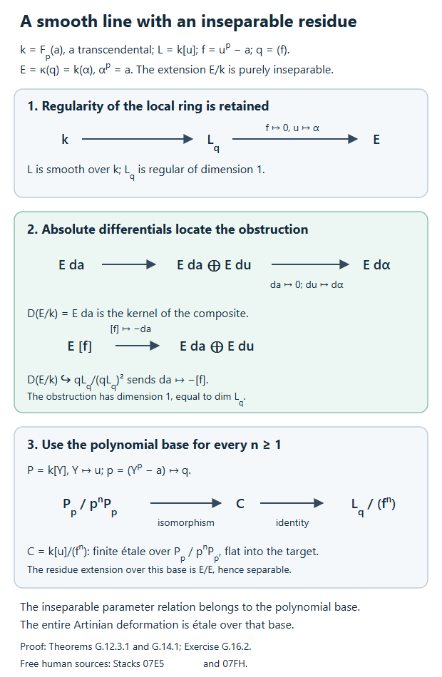
Figure G.2. The absolute differential obstruction and its negative conormal sign are explicit. For each \(n\) the nonreduced Artinian model is finite étale over the polynomial local base. This is Exercise G.16.2 and Theorem G.14.1. Editable SVG source.

Exercise G.16.3 (easy: checking the truncation). For \(e\ge 1\) and a maximal ideal generated by \(d\) parameters \(\tau _i\), prove \(m^{d(e-1)+1}\subset (\tau _i^e)\). Explain why \(n=N+de\) in (G.15.1.1) always works, including \(d=0\), while \(N+dc\) with \(e=8c\) does not provide the needed bound.
Solution. A generating monomial of total degree \(d(e-1)+1\) must have one exponent at least \(e\); otherwise its degree would be at most \(d(e-1)\). It is therefore divisible by a generator \(\tau _i^e\). For \(d\ge 1\), \(N+de\ge d(e-1)+1\) because \(N\ge 1\). For \(d=0\) the local parameter ideal and maximal ideal are both zero, so the inclusion is immediate. The smaller expression \(N+dc\) has no such implication: at \(d=N=c=1\) it gives \(n=2\) while \(e=8\), and \((\tau ^{2})\) is not contained in \((\tau ^{8})\) in \(k[[\tau ]]\).
Appendix H. Henselian equation approximation for arithmetic bases
Let \(A\) be a finite-type \(\mathbb Z\)-algebra, \(I\subset A\) an ideal, and \(H=A_I^h\), \(J=IH\), its pair henselization. We prove that \(H\) is Noetherian and that its actual completion map \(H\to\widehat H_J=\widehat A_I\) is faithfully flat and regular. Every finite polynomial system over \(H\) with a solution in that completion then has an exact solution in \(H\) matching any prescribed finite order. The final statements are Theorem H.6.4.1 and Corollary H.6.4.2.
The proof separates local completion comparison, the characteristic-\(p\) differential test, arithmetic formal fibres and the actual residue-field factors of an ind-étale map. The arithmetic ideal-completion theorem H.5.3.1 includes nonregular bases and nonreduced quotients.
We use Appendix G and the written programme proofs of completion, regular local rings, Cohen structure, local dimension, the polynomial height formula, and henselian integral-algebra idempotents. Every new comparison, geometric-fibre and lifting statement used below is proved here.
H.1. Smooth residue sections and henselian retractions
H.1.1. Isolating the specified residue section
Lemma H.1.1.1. Let \(R\to M\) be an étale algebra and let \(\tau:M\to R\) be an \(R\)-algebra retraction. There is an element \(q\in M\) with \(\tau(q)=1\) for which the induced map \(M_q\to R\) is an isomorphism.
Proof. Put \(K=\ker\tau\). Choose finitely many algebra generators \(z_i\) of \(M/R\); inverse variables in a finite presentation can be included among them. The elements \(z_i-\tau(z_i)\) generate \(K\) as an ideal. Indeed the difference between a polynomial in the \(z_i\) and the same polynomial in their constant values is in that ideal, so the quotient is exactly the constant algebra \(R\).
The splitting \(M=R\oplus K\) makes \(m\mapsto m-\tau(m)\pmod {K^2}\) an \(R\)-derivation to \(K/K^2\), with \(M\) acting through \(\tau\). Conversely restriction of any such derivation to \(K\) is \(R\)-linear and kills \(K^2\). Thus
\[ K/K^2\simeq\Omega_{M/R}\otimes_M R=0. \tag{H.1.1.1} \]
Here vanishing of the differential module of an étale algebra is the previously proved square-Jacobian/unramified criterion. Hence \(K=K^2\). Write a finite generating column \(v\) of \(K\) as \(v=Hv\), where the entries of \(H\) lie in \(K\). The adjugate identity gives
\[ qK=0,\qquad q=\det(1-H)\in1+K. \tag{H.1.1.2} \]
Let \(e=1-q\in K\). Since \(qe=0\), one has \(e^2=e\); and every \(k\in K\) equals \(ek\). Thus \(K=eM\). Localizing at \(q=1-e\) kills exactly this summand, so \(M_q=M/K=R\), and \(\tau(q)=1\). This also proves the component assertion without a topological or finiteness assertion about the other component. □
H.1.2. Cutting the free coordinates of a smooth algebra
Theorem H.1.2.1. Let \(A\) be any ring, \(J\subset A\) any ideal, \(B\) a smooth \(A\)-algebra and \(\sigma:B\to A/J\) an \(A\)-map. There are a finitely presented étale \(A\)-algebra \(A'\), a specified isomorphism \(A'/JA'\simeq A/J\), and an \(A\)-map \(B\to A'\) reducing to \(\sigma\).
Proof. The actual construction in Appendix G, Lemma G.1.3.1 supplies a smooth \(B\)-algebra \(B'\), a retraction \(r:B'\to B\), and a standard étale presentation of \(B'\) over a polynomial ring \(A[Z_1,\ldots,Z_s]\). Its proof uses the free conormal replacement, the right-inverse Jacobian block, and inversion of its square determinant. In particular this is one presentation over the whole ring; no choice of unrelated local charts is needed.
Extend the residue map to \(\sigma'=\sigma r:B'\to A/J\). Choose \(c_i\in A\) lifting \(\sigma'(Z_i)\), and form
\[ E=B'\otimes_{A[Z_1,\ldots,Z_s]}A, \qquad Z_i\longmapsto c_i. \tag{H.1.2.1} \]
Base change of the square Jacobian presentation shows directly that \(E\) is finitely presented and étale over \(A\). The residue map factors through a retraction \(E/JE\to A/J\). Apply Lemma H.1.1.1 to this étale \(A/J\)-algebra and lift its element \(q\) to an element \(\widetilde q\in E\). Set \(A'=E_{\widetilde q}\). Its reduction is
\[ A'/JA'=(E/JE)_q\simeq A/J, \tag{H.1.2.2} \]
with the specified residue map. Principal localization preserves the square-Jacobian étale property. The composite \(B\to B'\to E\to A'\) is the required map. This construction fixes the entire residue algebra \(A/J\), including its nilpotents and its possibly disconnected spectrum. □
H.1.3. All powers of the henselian ideal
Lemma H.1.3.1. If \((A,I)\) is henselian, then for every finite \(A\)-algebra \(D\) and \(N\ge1\), reduction induces a bijection on idempotents from \(D\) to \(D/I^ND\).
Proof. The written integral-algebra idempotent theorem, AG-FSE Étale neighborhoods, henselization and quasi-finite morphisms, Lemma 5.3, proves the assertion with \(N=1\). The ideal \(ID/I^ND\) of \(D/I^ND\) is nilpotent. The nilpotent idempotent-lifting argument is already written in Appendix D, Lemma D.2.1: for a square-zero ideal the correction by the inverse of \(2e-1\) removes \(e^2-e\), and iteration through successive squarings treats any nilpotent ideal; uniqueness follows because an idempotent in a nil ideal is zero. Given an idempotent modulo \(I^N\), lift its reduction modulo \(I\) to \(D\) using Lemma 5.3. Its reduction modulo \(I^N\) is the given idempotent by that nilpotent uniqueness. Injectivity follows from the uniqueness modulo \(I\). This proves the assertion for every \(N\), without a characteristic or connectedness restriction. □
H.1.4. Retracting the neighborhood
Theorem H.1.4.1. Let \((A,I)\) be a Noetherian henselian pair, \(N\ge1\), and \(A'\) a finitely presented étale \(A\)-algebra with a specified isomorphism
\[ A'/I^NA'\xrightarrow{\sim}A/I^N. \tag{H.1.4.1} \]
There is a unique \(A\)-algebra map \(\chi:A'\to A\) inducing that isomorphism.
Proof: existence. Put \(J=I^N\) and \(U=\operatorname{Spec}A'\). An étale algebra over a field is a finite product of finite separable extensions by the earlier field classification, so the affine finitely presented map \(U\to\operatorname{Spec}A\) is quasi-finite. It is also separated and quasi-affine. The proved Noetherian finite completion, Proposition E.4.4, therefore gives an open immersion
\[ U\hookrightarrow\operatorname{Spec}C \tag{H.1.4.2} \]
with \(C\) finite over \(A\). No flatness of \(C\) is required.
In \(\operatorname{Spec}(C/JC)\), the open subset \(U_J\) is isomorphic to \(\operatorname{Spec}(A/J)\). It is also closed. Indeed its inclusion is an \(A/J\)-section of the affine finite scheme \(\operatorname{Spec}(C/JC)\); on rings this is a retraction \(C/JC\to A/J\), which is surjective and hence defines a closed immersion. An open and closed subset of an affine scheme corresponds to an idempotent: the two disjoint opens give a product of rings of sections, and the function which is one on the first and zero on the second is the required idempotent. Let \(\bar e\) select \(U_J\).
Lemma H.1.3.1 lifts \(\bar e\) to an idempotent \(e\in C\). Put \(D=eC\), with unit \(e\). It is a finite \(A\)-algebra and
\[ D/JD\simeq A/J. \tag{H.1.4.3} \]
The whole of \(\operatorname{Spec}D\) lies in \(U\). If \(\operatorname{Spec}D\setminus U\) were nonempty, it would be a nonempty closed subset of the finite affine scheme \(\operatorname{Spec}D\). Choose a maximal ideal of \(D\) in that subset. Its contraction to \(A\) is maximal by integrality: an integral subring of a field whose integral extension is that field is itself a field, since a monic relation for the inverse of any nonzero element puts that inverse in the subring. Because \(I\subset\operatorname{Jac}(A)\), this maximal ideal of \(D\) contains \(ID\), and hence \(JD\). It would therefore lie in \(U_J\), a contradiction. Thus the closed boundary is empty.
Consequently \(D\) is finite étale over \(A\), since its spectrum is an open and closed component of \(U\); in particular \(D\) is flat. The unit map \(A\to D\) is an isomorphism. Its finite cokernel is zero modulo \(J\) by (H.1.4.3), so Nakayama gives surjectivity. Its kernel \(K\) is finite because \(A\) is Noetherian. Tensoring \(0\to K\to A\to D\to0\) with \(A/J\) is exact on the left by flatness of \(D\). The reduction map is an isomorphism, so \(K/JK=0\), and Nakayama gives \(K=0\). Composing \(A'\to D\simeq A\) yields the desired \(\chi\); its reduction is exactly (H.1.4.1) because the selected component was the specified residue section.
Proof: uniqueness. Let \(\chi_1,\chi_2:A'\to A\) have that reduction. Let \(K\subset J\) be generated by their differences on a finite algebra generating list. Modulo \(K^2\), the map \(\delta=\chi_1-\chi_2\) is an \(A\)-derivation with values in \(K/K^2\), where the action is through their common map modulo \(K\). This follows by subtracting the two product identities; replacing \(\chi_2\) by \(\chi_1\) in a coefficient changes the expression only by \(K^2\). Since \(\Omega_{A'/A}=0\), this derivation is zero. Its generator differences span \(K/K^2\), so \(K=K^2\subset JK\subset K\). The finite ideal \(K\) then satisfies \(K=JK\), and \(J\subset\operatorname{Jac}(A)\) gives \(K=0\) by Nakayama. Thus \(\chi_1=\chi_2\). □
Exercise H.1.5 (medium: a chosen branch in every characteristic). Let \((A,I)\) be a Noetherian henselian pair and \(a\in I\). Prove that \(X^2-X-a\) has exactly one root in \(I\), including when \(2=0\) in \(A\). Identify an étale neighborhood carrying the chosen closed branch.
Solution. Set
\[ A'=A[X,1/(2X-1),1/(1-X)]/(X^2-X-a). \tag{H.1.5.1} \]
The one-equation Jacobian \(2X-1\) is explicitly inverted, so this is étale. Modulo \(I\), the polynomial is \(X(X-1)\); the two factors are coprime since their difference is one. The localization at \(1-X\) retains precisely the \(X=0\) factor, and on that factor \(2X-1=-1\) is a unit. Hence \(A'/IA'=A/I\). Theorem H.1.4.1 gives a root \(x\in I\). If \(x,y\in I\) are roots, subtraction gives \(0=(x-y)(x+y-1)\); the second factor is a unit because it is minus one modulo \(I\subset\operatorname{Jac}(A)\). Thus \(x=y\). No inverse of two was used. □
The free human comparison sources for the neighborhood and retraction are Stacks 07M7 and 09XI. The construction here uses the already proved global Jacobian retraction and finite completion, and explicitly verifies the residue component, the boundary and the algebra isomorphism.
H.2. Exact finite-equation approximation under regular completion
H.2.1. Lifting every smooth section
Theorem H.2.1.1. Let \((A,I)\) be a Noetherian henselian pair, \(N\ge1\), and \(B\) a smooth \(A\)-algebra. Every \(A\)-map \(B\to A/I^N\) lifts to an \(A\)-map \(B\to A\).
Proof. Apply Theorem H.1.2.1 with \(J=I^N\), obtaining \(B\to A'\) and the specified étale neighborhood \(A'/I^NA'\simeq A/I^N\). Retract it by Theorem H.1.4.1 and compose \(B\to A'\to A\). The residue map is the one specified throughout the construction, so its composite is the original smooth section. □
H.2.2. Approximation of a possibly singular presentation
Theorem H.2.2.1. Let \((A,I)\) be a Noetherian henselian pair and put \(\widehat A=\varprojlim_n A/I^n\). Assume the actual map \(A\to\widehat A\) is regular. Given finitely many polynomials \(f_j\in A[X_1,\ldots,X_r]\), a tuple \(\widehat x\in\widehat A^r\) with \(f_j(\widehat x)=0\) for every \(j\), and \(N\ge1\), there is \(x\in A^r\) such that
\[ f_j(x)=0\quad\hbox{for every }j, \qquad x_i-\widehat x_i\in I^N\widehat A. \tag{H.2.2.1} \]
Proof. The written AG-CA Completion, Theorem 3.3, proves that \(\widehat A\) is Noetherian and that \(\widehat A/I^N\widehat A=A/I^N\), with its canonical quotient map. Form the finitely presented, possibly singular algebra \(C=A[X_1,\ldots,X_r]/(f_j)\). The solution is an actual \(A\)-map \(C\to\widehat A\). The regular homomorphism theorem G.16.1 and its finite-factor criterion G.1.1.1 give a factorization
\[ C\longrightarrow B\longrightarrow\widehat A \tag{H.2.2.2} \]
with \(B\) smooth over \(A\). Reduce its last map modulo \(I^N\) and use the canonical quotient identity to obtain \(B\to A/I^N\). Theorem H.2.1.1 lifts it to \(B\to A\). The images \(x_i\) of the generators of \(C\) under the composite \(C\to B\to A\) solve every equation exactly, since it is an algebra map. They have precisely the original residues modulo \(I^N\), since the lift was of the actual reduced factor map. This gives (H.2.2.1). No smoothness of \(C\), invertibility of its Jacobian, flatness of a proper scheme or local completeness of \(A\) has been assumed. □
Corollary H.2.2.2. Under the same hypotheses, every map from a finitely presented \(A\)-algebra \(C\) to \(\widehat A\) has, for each \(N\ge1\), an \(A\)-map \(C\to A\) with the same reduction modulo \(I^N\).
Proof. Choose a finite polynomial presentation of \(C\) and apply Theorem H.2.2.1 to the images of its generators. Equality of these residues implies equality of the two residue algebra maps on every polynomial and on the quotient. □
Exercise H.2.3 (easy: approximate coordinates need exact equations). In \(A=k[[t]]\), consider \(C=A[X,Y]/(XY-t^2)\) and the solution \((t,t)\). Show that \((t+t^2,t-t^2)\) has the same residues modulo \(t^2\) but need not solve the equation. Correct it while keeping \(X=t+t^2\), and exhibit a smooth algebra through which both exact solutions factor.
Solution. The product of the proposed coordinates is \(t^2-t^4\), so its equation error is \(-t^4\ne0\). The identity holds in every characteristic. Since \(1+t\) is a unit, use \(Y=t/(1+t)\); then \(XY=t^2\) exactly and \(Y-t=-t^2/(1+t)\in t^2A\). The smooth algebra
\[ B=A[Z,1/(1+Z)],\qquad X\longmapsto t(1+Z),\quad Y\longmapsto t/(1+Z) \tag{H.2.3.1} \]
defines an actual map \(C\to B\). Its maps \(Z\mapsto0\) and \(Z\mapsto t\) give the original and corrected exact solutions. Polynomial extension and principal localization prove \(B\) smooth. This displays why correction is done after factoring a singular equation algebra through a smooth algebra, rather than by independently rounding coordinates. □
A free human comparison for the finite-equation argument is Stacks 0AH5. The completion hypotheses will be verified for the arithmetic pairs in H.5–H.6.
H.3. Descent and comparison of completion maps
We will prove exactly the completion property needed for the approximation bases: every ideal completion of a finite-type \(\mathbb Z\)-algebra is regular, and the completion along the henselian ideal of its pair henselization is regular. The present section isolates the local descent steps. Geometric regularity of a Noetherian field algebra is tested after finite field extensions; adjoining independent variables and localization preserve regularity by the earlier polynomial regularity proof.
H.3.1. The canonical local completion comparison
Lemma H.3.1.1. Let \((R,m,k)\to(S,n,k)\) be a flat local homomorphism of Noetherian local rings, with \(n=mS\) and the indicated identity on residue fields. Then the canonical map induces isomorphisms
\[ R/m^r\xrightarrow{\sim}S/n^r\quad(r\ge1), \qquad \widehat R\xrightarrow{\sim}\widehat S. \tag{H.3.1.1} \]
Proof. Flatness identifies \(m^r\otimes_RS\) with \(m^rS\), by tensoring its inclusion in \(R\). Applying it to \(m^{r+1}\subset m^r\) gives
\[ (m^r/m^{r+1})\otimes_RS \simeq n^r/n^{r+1}. \tag{H.3.1.2} \]
The source is a \(k\)-vector space tensored with \(S/n=k\), hence is canonically \(m^r/m^{r+1}\). The map of degree-zero quotients is the residue-field identity. Induct using the short exact sequences with these graded pieces: surjectivity of the middle map follows by first lifting the lower-order quotient and then its error in the graded piece; injectivity follows by the same two steps. This proves every finite quotient identity. They are the canonical compatible maps, so taking their inverse limits proves the completion identity. No finite extension of residue fields was silently replaced by an identity. □
H.3.2. Regularity after faithful flatness
Lemma H.3.2.1. Regularity of Noetherian rings descends along a faithfully flat homomorphism.
Proof. For each prime of the source, choose a prime of the target over it and localize both rings. The resulting local map is flat and faithfully flat. Write it as \((R,m)\to(S,n)\), with \(S\) regular of dimension \(d\). The earlier AG-CA Regular local rings, Theorem 2.2, proves that every finite \(S\)-module has projective dimension at most \(d\), and that finite projective dimension of the residue field of a Noetherian local ring implies regularity.
Take a free resolution of \(k=R/m\) with finite modules at every step; Noetherianity supplies it. Flat base change of that resolution shows, for every \(R\)-module \(M\), that
\[ \operatorname{Tor}^{R}_{d+1}(k,M)\otimes_RS \simeq \operatorname{Tor}^{S}_{d+1}(S/mS,M\otimes_RS)=0. \tag{H.3.2.1} \]
Faithfulness makes the left Tor group zero. The \(d\)-th syzygy of the chosen resolution is therefore flat, by dimension shifting and the ideal flatness criterion. It is finite, hence free over local \(R\), by the written finite flat module criterion. Thus \(k\) has finite projective dimension over \(R\), and Theorem 2.2 makes \(R\) regular. This applies at every source prime. □
Lemma H.3.2.2. Let \(R\to S\to T\) be maps of Noetherian rings, with \(S\to T\) faithfully flat. If \(R\to T\) is regular, then \(R\to S\) is regular.
Proof. Flatness descends: a kernel arising from tensoring any module injection with \(S\) becomes zero after tensoring further with \(T\), since \(T\) is \(R\)-flat; flatness and faithfulness of \(S\to T\) detect that kernel. For a prime \(q\subset R\), and a finite extension \(K/\kappa(q)\), base change gives a faithfully flat map
\[ (S\otimes_R\kappa(q))\otimes_{\kappa(q)}K \longrightarrow (T\otimes_R\kappa(q))\otimes_{\kappa(q)}K. \tag{H.3.2.2} \]
These rings are Noetherian: the original fibres are quotients and localizations of Noetherian rings, and a finite field extension gives a finite module extension. The target is regular. Lemma H.3.2.1 makes the source regular. This proves every required geometric-fibre test, as well as flatness. □
Lemma H.3.2.3. A finitely presented étale algebra over a Noetherian regular ring is regular. Consequently a Noetherian regular algebra over a characteristic-zero field is geometrically regular.
Proof. At a target prime there is a flat local map \((R,m)\to(S,n)\) whose closed fibre is a field: the field classification of étale algebras gives finite separable residue factors, and localization selects one. Thus \(n=mS\). If \(R\) is regular of dimension \(d\), its \(d\) parameters generate \(n\). The proved flat local dimension theorem, AG-CA Dimension theory of Noetherian local rings, Theorem 5.1, gives \(\dim S=d\). Hence its embedding dimension is at most \(d\), and the general embedding-dimension inequality gives equality and regularity. Every finite field extension in characteristic zero is separable, so tensoring by it is étale. The first assertion therefore gives the geometric regularity tests in characteristic zero. □
H.3.3. From maximal completions to any ideal
Theorem H.3.3.1. Let \(A\) be Noetherian. Suppose \(A_m\to\widehat{A_m}\) is regular for every maximal ideal \(m\subset A\), where this completion is at \(mA_m\). Then \(A\to\widehat A_I\) is regular for every ideal \(I\subset A\).
Proof. Put \(B=\widehat A_I\). AG-CA Completion, Theorems 3.2–3.3, prove that \(B\) is Noetherian and \(A\)-flat, \(IB\subset\operatorname{Jac}(B)\), and \(B/IB=A/I\). Let \(m'\subset B\) be maximal. It contains \(IB\); the quotient identity makes its contraction \(m\subset A\) maximal and gives
\[ mB=m',\qquad A/m=B/m'. \tag{H.3.3.1} \]
The flat local map \(A_m\to B_{m'}\) therefore satisfies Lemma H.3.1.1, so their maximal-ideal completions are canonically the same. The composite
\[ A_m\longrightarrow B_{m'} \longrightarrow\widehat{B_{m'}}=\widehat{A_m} \tag{H.3.3.2} \]
is the given regular map. The second map is faithfully flat, by the local completion flatness theorem. Lemma H.3.2.2 shows that \(A_m\to B_{m'}\) is regular.
This verifies the fibres of \(A\to B\) at every point. Explicitly, a prime of \(B\otimes_A\kappa(q)\), or of its base change by a finite extension of \(\kappa(q)\), contracts to a prime \(P\subset B\) containing \(qB\). Choose a maximal ideal \(m'\supset P\). Its contraction \(m\) contains \(q\), and localization to \(A_m\to B_{m'}\) leaves \(\kappa(q)\) unchanged. All elements inverted in that localization are units at the chosen fibre prime. Its local ring is consequently a localization of a geometrically regular fibre just verified in (H.3.3.2), and is regular. This proves every geometric-fibre test globally. □
These arguments give the completion comparisons and faithful-flat descent behind the free statements Stacks 0AGX, 07NT and 0AH2, with each step proved above.
H.4. The finite p-basis geometric regularity test
The characteristic-\(p\) formal fibre will have a finite-dimensional differential basis. The following converse to the differential injection in G.12.3.1 proves the required inseparable base-change tests.
Theorem H.4.1. Let \(K\) be a characteristic-\(p\) field with a finite \(p\)-basis \(a_1,\ldots,a_e\). Let \(L\) be a Noetherian \(K\)-algebra. Assume that for every prime \(q\subset L\), \(L_q\) is regular and
\[ \Omega_{K/\mathbb F_p}\otimes_K\kappa(q) \longrightarrow \Omega_{L/\mathbb F_p}\otimes_L\kappa(q) \tag{H.4.1.1} \]
is injective. Then \(L\) is geometrically regular over \(K\).
Proof: a full p-root extension. Work first with a regular local \((L,m,E)\). Put
\[ K_1=K^{1/p}=K[U_1,\ldots,U_e]/(U_i^p-a_i), \qquad L_1=L\otimes_KK_1. \tag{H.4.1.2} \]
The \(p\)-basis expansion proves the displayed field presentation: every \(p\)-root of an element of \(K\) is a \(K\)-linear combination of the reduced \(U\)-monomials, and those monomials are independent by \(p\)-independence. It has degree \(p^e\). Thus \(L_1\) is finite free over \(L\). Every element of \(L_1\) has its \(p\)-th power in \(L\); prime membership is determined by that power. The inverse image of a prime under the \(p\)-th-power map exists and contracts to that prime, since \(x^p\) belongs to a prime exactly when \(x\) does. Hence the spectra are in specialization-preserving bijection. In particular \(L_1\) is local of the same dimension \(d=\dim L\), with residue field \(E_1/E\) finite purely inseparable.
The absolute conormal injection G.12.2.1 holds even before regularity of \(L_1\) is known. Apply it to \(L\) and \(L_1\). The two exact rows have vertical maps
\[ \alpha:(m/m^2)\otimes_EE_1\to m_1/m_1^2,\quad \beta:\Omega_{L/\mathbb F_p}\otimes_LE_1 \to\Omega_{L_1/\mathbb F_p}\otimes_{L_1}E_1,\quad \gamma:\Omega_{E/\mathbb F_p}\otimes_EE_1 \to\Omega_{E_1/\mathbb F_p}. \tag{H.4.1.3} \]
The presentation in (H.4.1.2) shows that \(\ker\beta\) is the span of the \(da_i\), and that \(\operatorname{coker}\beta\) is free of dimension \(e\), with generators \(dU_i\). The assumed injection (H.4.1.1) makes those \(da_i\) independent, so \(\ker\beta\) also has dimension \(e\). The finite inseparable differential calculation G.12.2.2 proves that the kernel and cokernel of \(\gamma\) have equal finite dimensions. The map \(\alpha\) is between finite-dimensional cotangent spaces. The kernel-cokernel exact sequence of these two conormal rows therefore gives
\[ \dim(m_1/m_1^2)-\dim(m/m^2)=0. \tag{H.4.1.4} \]
No infinite dimensions were subtracted: only the finite kernels and cokernels of \(\alpha,\beta,\gamma\) occur in the sequence. Since \(\dim(m/m^2)=d=\dim L_1\), the ring \(L_1\) is regular.
The field \(K_1\) has \(p\)-basis \(U_i\), because \(K_1^p=K\). In its absolute differential module these \(dU_i\) are a basis. Their images in \(\Omega_{L_1/\mathbb F_p}\otimes E_1\) are independent: the same presentation decomposes that space as the old differentials modulo the \(da_i\), plus the free new \(dU_i\) summand. Thus the injection hypothesis persists over \(K_1\). Iterate to prove regularity and that injection after every extension \(K^{1/p^r}/K\).
Proof: arbitrary finite extensions. A finite separable extension \(K_s/K\) gives an étale base change \(L_s\). Its local rings are regular by Lemma H.3.2.3. Its absolute differentials are the base change of those of \(L\): differentiating a separable polynomial solves uniquely for the new variable differential and imposes no relation on the old ones; a finite generating tower proves the assertion. The analogous statement for \(K_s/K\) is G.12.2.2. Consequently (H.4.1.1) remains injective at every prime of \(L_s\). The field \(K_s\) still has finite \(p\)-basis cardinality \(e\): Frobenius identifies the degrees \([K_s:K]\) and \([K_s^p:K^p]\), so \([K_s:K_s^p]=[K:K^p]=p^e\).
For any finite extension \(K'/K\), choose finitely many field generators. A sufficiently high \(p\)-power of each is separable over \(K\), by removing the inseparable exponent of its minimal polynomial. The subfield \(K_s\subset K'\) generated by these powers is finite separable over \(K\), and \(K'/K_s\) is purely inseparable, contained in \(K_s^{1/p^r}\) for some \(r\). We have proved that \(L\otimes_KK_s^{1/p^r}\) is regular. The field extension
\[ L\otimes_KK'\longrightarrow L\otimes_KK_s^{1/p^r} \tag{H.4.1.5} \]
is faithfully flat. Both rings are Noetherian because the extensions are finite. Lemma H.3.2.1 makes \(L\otimes_KK'\) regular. Localizing the same argument at each original \(q\) covers every point of this ring. This proves all finite-extension tests. □
Lemma H.4.2. Let \(k\) be a perfect field of characteristic \(p\), and let \(K/k\) be finitely generated of transcendence degree \(d\). Then \(K\) has a \(p\)-basis of \(d\) elements, and \(\dim_K\Omega_{K/k}=d\). It is separably generated over \(k\).
Proof. Choose any transcendence basis and put \(F=k(t_1,\ldots,t_d)\); \(K/F\) is finite. Frobenius preserves that finite degree, and \(k=k^p\). Thus the tower degree calculation gives
\[ [K:K^p] =\frac{[K:F]\,[F:F^p]}{[K^p:F^p]} =p^d. \tag{H.4.2.1} \]
The \(p\)-basis construction G.12.1.1 then gives a basis of differentials of size \(d\). Choose such a differential basis from differentials of a finite field generating list. Its elements are algebraically independent over \(k\). If a polynomial relation of least total degree existed, its differentiated relation and independence would make every partial derivative zero at those elements. A nonzero partial polynomial would then be a relation of smaller degree, so all partial polynomials are identically zero. Perfection would make the original polynomial a \(p\)-th power of a polynomial of smaller degree, giving a smaller relation, a contradiction. These elements form a transcendence basis. The field extension over their rational field has zero relative differentials and is finitely generated, so G.12.4.1 makes it finite separable. This proves separable generation as well as the stated differential dimension. □
Exercise H.4.3 (medium: why differential injection is necessary). Let \(K=\mathbb F_p(a)\), with \(a\) transcendental, and \(L=K[b]\), \(b^p=a\). Show that \(L\) is regular but violates (H.4.1.1). Compute its base change to \(K^{1/p}\).
Solution. The ring \(L\) is a field. The nonzero basis differential \(da\) of \(\Omega_{K/\mathbb F_p}\) maps to zero because \(a=b^p\); injection fails. With \(c=a^{1/p}\) in the new field,
\[ L\otimes_KK^{1/p} \simeq K^{1/p}[b]/((b-c)^p). \tag{H.4.3.1} \]
The element \(b-c\) is nonzero and nilpotent. This local ring has dimension zero and a nonzero maximal ideal, so it is not regular. Ordinary regularity of \(L\) alone does not suffice for a characteristic-\(p\) formal fibre. □
H.5. Completion regularity of finite-type arithmetic bases
H.5.1. The generic polynomial Jacobian
Lemma H.5.1.1. Let \(k\) be a characteristic-zero or perfect field, and \(r\) a prime of \(k[x_1,\ldots,x_n]\). There are polynomials \(f_1,\ldots,f_h\in r\), and an element \(s\notin r\), such that \(r\) is generated by these \(f_i\) after inverting \(s\), and an \(h\)-row Jacobian minor in the \(x_j\) is a unit there. Here \(h=\operatorname{ht}r\). The empty list is allowed for \(r=0\).
Proof. Localize at \(r\). The polynomial localization is regular by AG-CA Regular local rings, Proposition 3.3 and Theorem 3.2, and has dimension \(h\). Its conormal space \(r_r/r_r^2\) has dimension \(h\). The residue field \(K=\operatorname{Frac}(k[x]/r)\) is separably generated: use Lemma H.4.2 in positive characteristic, and an ordinary transcendence basis with separable algebraic extension in characteristic zero. These fields are formally smooth over \(k\), by lifting a transcendence basis and then lifting the finitely many separable equations through a nil ideal using their unit derivatives.
The split conormal sequence of AG-CA's written formal-smoothness criterion is consequently exact on the left:
\[ 0\longrightarrow r_r/r_r^2 \longrightarrow K^n \longrightarrow\Omega_{K/k}\longrightarrow0. \tag{H.5.1.1} \]
Choose polynomials \(f_i\) representing a basis of its left term. Their Jacobian has rank \(h\), so one minor is nonzero in \(K\). Nakayama makes the \(f_i\) generate \(r_r\). Clear denominators in the expressions for a finite generating list of \(r\), and invert the chosen minor. Their product is an \(s\notin r\) with both required properties. All ideal equalities are actual localized equalities; no claim that a quotient of a regular ring is automatically regular is used. □
H.5.2. A polynomial ring over the integers
Theorem H.5.2.1. If \(P=\mathbb Z[x_1,\ldots,x_n]\) and \(m\subset P\) is maximal, then the local completion map \(P_m\to\widehat{P_m}\) is regular.
Proof: the closed arithmetic point. The residue field of \(m\) has positive characteristic \(p\) and is a finite extension \(k_0/\mathbb F_p\). Here is the arithmetic point of the usual field lemma. A field finitely generated as an algebra over a field is finite algebraic: choose a transcendence basis from its generators, clear the finitely many algebraic denominators, and obtain an integral field extension of a localized polynomial ring; that polynomial ring cannot be a field in positive dimension, since an irreducible polynomial not dividing the fixed denominator remains a nonunit. If the residue field of \(m\) had characteristic zero, this field lemma over \(\mathbb Q\) would make it a number field. Clearing the denominators of its finitely many algebra generators would then make it integral over \(\mathbb Z[1/N]\). An integral subring of a field with integral field extension is a field, whereas \(\mathbb Z[1/N]\) has a nonunit prime not dividing \(N\). This is impossible. The field lemma over \(\mathbb F_p\) now gives the asserted finite \(k_0\).
Put \(S=P_m\) and \(T=\widehat S\). The ring \(S/pS\) is the polynomial localization at the closed point over \(\mathbb F_p\), regular of dimension \(n\). The element \(p\) is a nonzerodivisor of \(S\). AG-CA Regular local rings, Proposition 1.3, makes \(S\) regular, and the one-nonzerodivisor dimension theorem gives \(\dim S=n+1\). Moreover \(p\notin(mS)^2\): otherwise passage to \(S/pS\) would retain embedding dimension \(n+1\), contradicting its regular dimension \(n\).
The completion has the same associated graded ring and dimension, by AG-CA Completion, Theorem 4.1 and the regularity calculation in Solution7.5. Hence \(T\) is regular, and \(p\) is part of a regular parameter system in it. In particular
\[ V=T/pT \tag{H.5.2.1} \]
is complete regular local of dimension \(n\), with residue field \(k_0\). A coefficient field \(k_0\subset V\) can be chosen compatibly with \(\mathbb F_p\): lift a primitive element of the finite separable residue extension by its monic polynomial and unit derivative in the complete henselian ring \(V\). AG-CA Coefficient rings and Cohen structure, Corollary 6.2, then gives
\[ V\simeq k_0[[t_1,\ldots,t_n]]. \tag{H.5.2.2} \]
Proof: the derivative coordinates in the completion. The polynomial derivations \(\partial_j=\partial/\partial x_j\) extend to \(S\), using the quotient rule on denominators. They satisfy
\[ \partial_j((mS)^r)\subset(mS)^{r-1}, \tag{H.5.2.3} \]
by the product rule. They therefore extend uniquely and continuously to \(T\), and annihilate \(p\). Thus they also act on \(V\).
Since \(k_0\) is perfect, every power series in (H.5.2.2) has a unique decomposition
\[ v=\sum_{0\le a_i<p}t_1^{a_1}\cdots t_n^{a_n}v_a^p. \tag{H.5.2.4} \]
Regroup the monomials by their exponents modulo \(p\) and take the unique \(p\)-roots of their coefficients. This proves \(V^p=k_0[[t_1^p,\ldots,t_n^p]]\) and that \(V\) is free over \(V^p\) on the displayed monomials. Its presentation over \(V^p\) by variables with the relations \(U_i^p-t_i^p\) is verified by monic division and that independence. Derivations annihilate \(V^p\), so the same presentation proves
\[ \Omega_{V/\mathbb F_p}=\bigoplus_i V\,dt_i. \tag{H.5.2.5} \]
The classes \(dx_j\) form another basis. At the closed point the absolute conormal sequence identifies \(\Omega_{V/\mathbb F_p}\otimes k_0\) with its \(n\)-dimensional cotangent space, since \(\Omega_{k_0/\mathbb F_p}=0\). The corresponding sequence for \(S/pS\) identifies that cotangent space with \(k_0^n\), freely on the polynomial \(dx_j\). Completion gives the canonical identity of these cotangent spaces. The matrix from the \(dx_j\) to the \(dt_i\) is consequently invertible modulo the maximal ideal, so its determinant is a unit of \(V\). This proves the basis assertion over all of \(V\).
Proof: every characteristic-zero fibre. Completion is flat. Let \(r\subset m\) be a prime of \(P\) not containing \(p\), and let \(Q\subset T\) be any prime contracting to \(r\). Inverting \(p\) identifies the relevant source with a localization of \(\mathbb Q[x]\). Apply Lemma H.5.1.1 there. The finitely many chosen equations \(f_i\) generate \(rT_Q\), and their \(h\)-row Jacobian minor is a unit in \(T_Q\). The derivations \(\partial_j\) act on \(T_Q\); each takes \(Q^2T_Q\) into \(QT_Q\). Thus the classes of the \(f_i\) in \(QT_Q/(QT_Q)^2\) are independent: a dependence would, on differentiation and reduction modulo \(Q\), contradict that unit Jacobian minor.
They form part of a parameter system in the regular local ring \(T_Q\). Its quotient
\[ T_Q/rT_Q=T_Q/(f_1,\ldots,f_h) \tag{H.5.2.6} \]
is therefore regular by the regular-parameter theorem. These are all local rings of \(T\otimes_S\kappa(r)\). Its coefficient field has characteristic zero, so Lemma H.3.2.3 also gives geometric regularity of this fibre.
Proof: every characteristic-p fibre. Now let \(p\in r\subset m\), and write \(\bar r=r/(p)\). Apply Lemma H.5.1.1 to \(\mathbb F_p[x]\) at \(\bar r\). Let its \(h\) equations be \(f_i\), with an invertible Jacobian minor and \(\bar r\) generated by them after the specified localization. For each \(Q\subset T\) over \(r\), put \(\bar Q=Q/(p)\subset V\). The continuous polynomial derivations on \(V\), and the unit minor, make the \(f_i\) independent in the cotangent space of \(V_{\bar Q}\), exactly as in the preceding paragraph. Hence
\[ U=V_{\bar Q}/(f_1,\ldots,f_h) \tag{H.5.2.7} \]
is regular. It is the local ring of the fibre at that point.
Its field of coefficients is \(K=\operatorname{Frac}(\mathbb F_p[x]/\bar r)\), of transcendence degree \(n-h\) and finite \(p\)-basis by Lemma H.4.2. Use the \(h\) columns of the chosen minor as the dependent coordinates. Equation (H.5.2.5), localization, and the differential quotient sequence give
\[ \Omega_{U/\mathbb F_p} =U^n/(df_1,\ldots,df_h). \tag{H.5.2.8} \]
The minor makes this free on the other \(n-h\) polynomial differentials. The same conormal calculation (H.5.1.1) identifies \(\Omega_{K/\mathbb F_p}\) as free on those very differentials. The natural map is therefore an actual isomorphism
\[ \Omega_{K/\mathbb F_p}\otimes_KU \xrightarrow{\sim}\Omega_{U/\mathbb F_p}. \tag{H.5.2.9} \]
In particular it is injective after tensoring with the residue field of \(U\). Theorem H.4.1 proves the inseparable extension tests for this fibre; the same calculation applies at every fibre point. Thus the characteristic-\(p\) fibre is geometrically regular. Together with the characteristic-zero case and flatness, this proves that \(S\to T\) is regular. □
H.5.3. Every finite-type arithmetic quotient and every ideal
Theorem H.5.3.1. Let \(A\) be a finitely generated \(\mathbb Z\)-algebra and let \(I\subset A\) be any ideal. Then its canonical \(I\)-adic completion map is regular.
Proof. Write \(A=P/K\) with \(P=\mathbb Z[x_1,\ldots,x_n]\); the ideal \(K\) is finitely generated because \(P\) is Noetherian. Every maximal ideal \(m\subset A\) has a maximal preimage \(\widetilde m\subset P\). Exactness of completion on finite modules, AG-CA Completion, Theorem 3.1, gives
\[ \widehat{A_m} =\widehat{P_{\widetilde m}}/ K\widehat{P_{\widetilde m}}. \tag{H.5.3.1} \]
The local map in (H.5.3.1) is the base change of the regular completion map of Theorem H.5.2.1 by the quotient \(P_{\widetilde m}\to A_m\). Flatness is preserved by this base change, and its fibre at a prime is exactly the old fibre at the corresponding prime of \(P_{\widetilde m}\), with the same residue field. Hence it is regular. Theorem H.3.3.1 now proves regularity of the completion at the arbitrary ideal \(I\). The ideal, quotient and localizations need not be smooth or reduced. □
Exercise H.5.4 (medium: completion regularity with a nonregular base). For \(A=\mathbb Z[x,y]/(xy)\) and \(I=(2,x,y)\), prove that \(A\to\widehat A_I\) is regular even though \(A_I\) and its completion are not regular local rings.
Solution. Theorem H.5.3.1 proves that the map is regular. The closed residue field is \(\mathbb F_2\). The local base has dimension two: it is the quotient of the three-dimensional regular local \(\mathbb Z[x,y]_{(2,x,y)}\) by the nonzero nonzerodivisor \(xy\). Its maximal ideal has three independent classes \(2,x,y\), because \(xy\) has no linear term. Thus it has embedding dimension three and is not regular. Completion preserves dimension and cotangent space, so it remains nonregular. A regular homomorphism describes the relative geometric fibres and flatness; it does not assert regularity of the source or target as absolute rings. □
Free general comparisons for arithmetic completion and finite-type stability are Stacks 07PX and 07PV. The generic Jacobian and finite p-basis arguments above prove the arithmetic completion statement directly.
H.6. Pair henselization and its actual regular completion
H.6.1. Étale neighborhoods over an arbitrary henselian pair
Lemma H.6.1.1. Every finitely presented étale \(R\)-algebra has a single square Jacobian presentation, with its determinant explicitly inverted. Such an algebra descends, with that presentation, to an étale algebra over a finitely generated \(\mathbb Z\)-subalgebra of \(R\).
Proof. Write \(E=R[x_1,\ldots,x_n]/K\), with \(K\) finitely generated. Formal étaleness makes the split conormal map \(K/K^2\to E^n\) an isomorphism: its cokernel is \(\Omega_{E/R}=0\), and its left injection is the written formal-smoothness criterion. Choose \(f_1,\ldots,f_n\in K\) representing a basis. Put \(F=(f_i)\). As in G.1.3.1, \(K/F=K(K/F)\); the finite generating matrix and adjugate produce \(q\in1+K\) with \(qK\subset F\). If \(\Delta=\det(\partial f_i/\partial x_j)\), the conormal isomorphism makes \(\Delta\) a unit of \(E\). Consequently
\[ E=R[x_1,\ldots,x_n,u,v]/ (f_i,\;qu-1,\;\Delta v-1). \tag{H.6.1.1} \]
The square Jacobian determinant of this presentation is \(q\Delta^2\), since its last two columns have zero entries in the first \(n\) rows. It is a unit by the two inverse equations. Choose the subalgebra \(R_0\subset R\) generated over \(\mathbb Z\) by its finitely many coefficients. Over \(R_0\) the same equations, and the same determinant identity and inverses, give an étale algebra \(E_0\) with \(E_0\otimes_{R_0}R=E\). This proves both assertions over arbitrary \(R\). □
Lemma H.6.1.2. An affine finitely presented étale scheme over any ring \(R\) admits an open immersion into a scheme finite over \(R\).
Proof. Use the Noetherian arithmetic model \(E_0/R_0\) of Lemma H.6.1.1. Its fibres are finite separable field products, so it is quasi-finite; the affine morphism is separated and quasi-affine. Proposition E.4.4 supplies an open immersion \(\operatorname{Spec}E_0\hookrightarrow\operatorname{Spec}D_0\) with \(D_0\) finite over \(R_0\). Base change to \(R\) preserves this open immersion and finiteness. It gives the specified immersion of \(\operatorname{Spec}E\) into \(\operatorname{Spec}(D_0\otimes_{R_0}R)\). □
Theorem H.6.1.3. Let \((R,J)\) be any henselian pair, let \(N\ge1\), and let \(E\) be a finitely presented étale \(R\)-algebra. Every specified map \(E\to R/J^N\) lifts uniquely to an \(R\)-map \(E\to R\).
Proof. Lemma H.1.1.1, applied to \(E/J^NE\) and its retraction to \(R/J^N\), isolates the specified component by an element with residue one. Lift that element and localize \(E\), obtaining an étale neighborhood \(F\) with \(F/J^NF=R/J^N\). Lemma H.6.1.2 gives a finite completion of \(\operatorname{Spec}F\) over \(R\). The residue section is open and closed in its closed restriction, exactly as in Theorem H.1.4.1; the finite-algebra idempotent theorem and Lemma H.1.3.1 select a finite \(R\)-algebra \(D\) with \(D/J^ND=R/J^N\).
The closed boundary of \(\operatorname{Spec}D\) outside \(\operatorname{Spec}F\) is empty. A maximal ideal in a nonempty such boundary would contract to a maximal ideal of \(R\) by integrality, hence contain \(J\), contradicting that its whole closed restriction is the selected residue section. This argument does not use Noetherianity. Thus \(D\) is finite étale, an open and closed component of \(F\), and flat.
The finite cokernel of \(R\to D\) vanishes by Nakayama. Its kernel is finitely generated even though \(R\) may not be Noetherian: \(D\) is a finitely presented algebra, since it is an idempotent component of \(F\); after the surjection \(R\to D\), substitute the images of its finite algebra generators into a finite presentation. The resulting finite list generates the kernel. Flatness of \(D\) and \(D/J^ND=R/J^N\) make this kernel zero modulo \(J^N\), so Nakayama makes it zero. The map \(E\to F\to D=R\) has the required reduction.
For uniqueness, repeat the difference-derivation proof of Theorem H.1.4.1. The ideal of differences on a finite algebra generating list is finite, contained in \(J^N\), and equal to its square because \(\Omega_{E/R}=0\). It equals \(J^N\) times itself and is zero by Nakayama. Every lift also inverts the element used to isolate the component, since its residue is one. Thus the lift on the original \(E\) is unique. □
H.6.2. Constructing the pair henselization and proving Noetherianity
Theorem H.6.2.1. Let \(A\) be Noetherian and \(I\subset A\) an ideal. The pair henselization \(H=A_I^h\) exists, is Noetherian and is ind-étale over \(A\). Its henselian ideal is \(J=IH\), and canonically
\[ H/J^N=A/I^N\quad(N\ge1),\qquad \widehat H_J=\widehat A_I. \tag{H.6.2.1} \]
Moreover \(\widehat A_I\) is faithfully flat over \(H\). The pair is initial among henselian pairs receiving \((A,I)\), including non-Noetherian target pairs.
Proof: the filtered neighborhood category. Take all finitely presented étale \(A\)-algebras \(C\) with the canonical closed-quotient isomorphism \(C/IC=A/I\). The tensor product gives an object receiving any two objects. To equalize two \(A\)-maps \(C\to D\), let \(K\subset D\) be generated by their differences on a finite algebra generating list. The difference-derivation argument modulo \(K^2\) and \(\Omega_{C/A}=0\) give \(K=K^2\). These differences are zero modulo \(ID\). The finite determinant trick therefore gives \(q\in1+K\) with \(qK=0\); localizing \(D\) at \(q\) is another neighborhood, with \(q=1\) in its closed quotient, and equalizes the maps. Thus the category is filtered. Define \(H=\operatorname{colim} C\). It is \(A\)-flat because each étale algebra is flat and filtered colimits preserve exact module sequences.
For each \(C\), its formal étale lifting property gives the unique map \(C\to A/I^N\) lifting its closed inverse; the ideal \(I/I^N\) is nilpotent. The canonical map \(A/I^N\to C/I^NC\) and this inverse have composite equal to the identity. The other composite equals the identity as well by formal unramified uniqueness through that same nilpotent ideal. Hence \(C/I^NC=A/I^N\) canonically. Passing to the filtered colimit proves all finite quotient identities in (H.6.2.1).
Every element of \(IH\) is a finite sum whose coefficients occur in one neighborhood \(C\). Localize that neighborhood at one plus the sum. Its closed image is one, so it is still a neighborhood, and the new element becomes a unit in \(H\). Thus \(IH\subset\operatorname{Jac}(H)\).
Proof: henselianity. A finitely presented étale \(H\)-algebra with a section modulo \(IH\) descends to an étale algebra over one \(C\): the finite square presentation of Lemma H.6.1.1 and its inverse determinant descend coefficient by coefficient. Its residue section is a map to \(A/I\). Apply Lemma H.1.1.1 to isolate this section in that residue algebra, lift its isolating element, and localize. The result is itself an étale \(A\)-neighborhood and hence an object of our category. Its map into \(H\) lifts the given section.
This section-lifting property implies the monic factorization definition of a henselian pair directly. For a prescribed coprime monic factorization modulo \(IH\), use variables for the nonleading coefficients of the two factors, impose the coefficient equations for their product, and invert the square Jacobian determinant. Its linearization is
\[ (u,v)\longmapsto h_0u+g_0v \tag{H.6.2.2} \]
in the respective degree bounds; polynomial division and a Bézout identity for \(g_0,h_0\) make it an isomorphism. The resulting algebra is étale and has the specified residue section. Its lift supplies the required exact monic factors. Together with \(IH\subset\operatorname{Jac}(H)\), this proves henselianity without assuming Noetherianity of \(H\) in advance.
Proof: the faithful-flat completion and Noetherianity. Put \(T=\widehat A_I\). It is Noetherian, complete and \(A\)-flat by AG-CA Completion, and \((T,IT)\) is henselian by F.2.1. For each neighborhood \(C\), Theorem H.1.4.1 over this Noetherian complete pair gives a unique map \(C\to T\) with the canonical residue map. These maps are compatible. The resulting \(C\)-algebra map \(C\otimes_AT\to T\) is a \(T\)-algebra retraction of an étale \(T\)-algebra. Lemma H.1.1.1 identifies \(T\) with a principal localization of \(C\otimes_AT\). Since \(T\) is \(A\)-flat, this tensor algebra is \(C\)-flat; hence \(T\) is \(C\)-flat.
It follows that \(T\) is \(H\)-flat. Let \(K\subset H\) be a finitely generated ideal and let an element of the kernel of \(K\otimes_HT\to T\) be written as the finite sum \(\sum_j k_j\otimes t_j\). Choose a common neighborhood \(C\) with elements \(c_j\) mapping to the \(k_j\), and put \(K_C=(c_j)\subset C\). The sum \(\sum_j c_j\otimes t_j\) in \(K_C\otimes_CT\) maps to zero in \(T\), since the maps through \(C\) and \(H\) agree. It is zero there by \(C\)-flatness of \(T\). Its image is the original tensor kernel element, which is therefore zero. The written ideal flatness criterion proves \(H\)-flatness. It is faithful: all maximal ideals of \(H\) contain \(IH\), and the quotient identity \(H/IH=T/IT=A/I\) supplies a target prime over each. Apply the faithful-flatness criterion.
Noetherianity now descends by ideals. For any ideal \(K\subset H\), the ideal \(KT\) is finite. Its finite generating list uses only finitely many elements \(k_1,\ldots,k_r\in K\), so \(KT=(k_1,\ldots,k_r)T\). Faithful flatness contracts ideals, giving \(K=(k_1,\ldots,k_r)H\). Thus every ideal of \(H\) is finitely generated. The finite quotient identities already proved give its \(J\)-adic completion \(T\).
Proof: universality. Let \((D,L)\) be any henselian pair and \(A\to D\) a map with \(I\) mapping into \(L\). For each neighborhood \(C\), the étale \(D\)-algebra \(D\otimes_AC\) has closed quotient \(D/L\). Theorem H.6.1.3 gives its unique \(D\)-retraction. These are compatible with every neighborhood map, so they give a unique \(A\)-map \(H\to D\). It takes \(IH\) into \(L\). Any such map has these same restrictions, since the closed inverse of each neighborhood is fixed. This proves the initial property for all target pairs. □
H.6.3. The actual ind-étale fibres
Lemma H.6.3.1. If \(A\to H\) is ind-étale and \(H\) is Noetherian, then for every prime \(q\subset A\)
\[ H\otimes_A\kappa(q)=\prod_{i=1}^r E_i, \tag{H.6.3.1} \]
where each \(E_i/\kappa(q)\) is separable algebraic, possibly infinite. An empty product is allowed.
Proof. The fibre is Noetherian, being a quotient and localization of \(H\), and is a filtered colimit of finite products of finite separable extensions of \(\kappa(q)\), by the étale field classification. In each such product every element \(a\) has a \(b\) with \(a=a^2b\), by choosing inverses on its nonzero field components. The identity passes to the colimit. It makes every prime localization a field: in a local ring, a member \(a\) of the maximal ideal satisfies \(a(1-ab)=0\) with \(1-ab\) a unit, hence \(a=0\). The fibre is therefore reduced and zero-dimensional. A Noetherian zero-dimensional reduced ring is a finite product of fields, by the written Noetherian–Artinian theorem and Chinese remainders.
At any chosen field factor, the image of each finite étale stage factors through one of its finite separable field components. Any finite list of elements of the factor, including the denominators needed for its localization, occurs at a common stage and belongs to such a finite separable image. Thus the factor is separable algebraic over the original residue field. This proves the assertion without replacing a possibly infinite field extension by a finite one. □
Lemma H.6.3.2. Suppose \(E/k\) is separable algebraic, \(T\) is a Noetherian \(E\)-algebra, and \(T\) is geometrically regular as a \(k\)-algebra. Then it is geometrically regular over \(E\).
Proof. Let \(E'/E\) be finite. Choose finitely many field generators of \(E'/E\) and let \(k'/k\) be the field they generate over \(k\). It is finite, since \(E'/k\) is algebraic, and \(E'=Ek'\). The ring \(E\otimes_kk'\) is finite over \(E\) and reduced. To verify reducedness, write \(E\) as the filtered union of its finite separable subextensions of \(k\). Each tensor product of such a subextension with \(k'\) is a product of fields by its separable polynomial presentation. A filtered colimit of reduced rings is reduced: a nilpotence relation occurs at some stage and then the element is zero at that stage. Hence \(E\otimes_kk'\) is reduced Artinian and a finite product of fields.
Its multiplication map to \(E'=Ek'\) is surjective and selects a field factor. Consequently \(T\otimes_EE'\) is a direct factor of \(T\otimes_kk'\). The latter is regular by geometric regularity over \(k\), and regularity passes to an idempotent factor, whose local rings are unchanged. This proves every finite extension test over \(E\). □
H.6.4. Regular completion of the henselized arithmetic pair
Theorem H.6.4.1. Let \(A\) be a finite-type \(\mathbb Z\)-algebra, \(I\subset A\), and \(H=A_I^h\), \(J=IH\). Then the actual completion homomorphism
\[ H\longrightarrow\widehat H_J=\widehat A_I \tag{H.6.4.1} \]
is regular.
Proof. Put \(T=\widehat A_I\). The map \(A\to T\) is regular by Theorem H.5.3.1. Theorem H.6.2.1 proves that \(H\) is Noetherian and that \(H\to T\) is faithfully flat. For a prime \(q'\subset H\) with contraction \(q\subset A\), use the actual product of Lemma H.6.3.1. Its selected factor is \(E_i=\kappa(q')\). Associativity of tensor product gives
\[ T\otimes_A\kappa(q) =T\otimes_H(H\otimes_A\kappa(q)) =\prod_i (T\otimes_HE_i). \tag{H.6.4.2} \]
The left side is geometrically regular over \(\kappa(q)\). Each displayed factor is as well, since its finite field base changes are idempotent factors of the corresponding regular base change. Its coefficient extension \(E_i/\kappa(q)\) is separable algebraic. Lemma H.6.3.2 therefore makes that factor geometrically regular over \(E_i\). This is exactly the fibre of \(H\to T\) at \(q'\), with its actual field of coefficients. Flatness and all geometric-fibre tests have now been proved. □
Corollary H.6.4.2. For a pair henselization \(H=A_I^h\) of a finite-type arithmetic algebra, every finite polynomial system with coefficients in \(H\) and a solution in \(\widehat H_{IH}\) has, for every \(N\ge1\), an exact solution in \(H\) with the same residues modulo \((IH)^N\).
Proof. Theorem H.6.2.1 supplies a Noetherian henselian pair; Theorem H.6.4.1 supplies regularity of its actual completion map. Apply the already proved Theorem H.2.2.1. Its proof factors the particular solution algebra through a smooth algebra and preserves the specified finite-order map, so it gives precisely the claimed exact solution. □
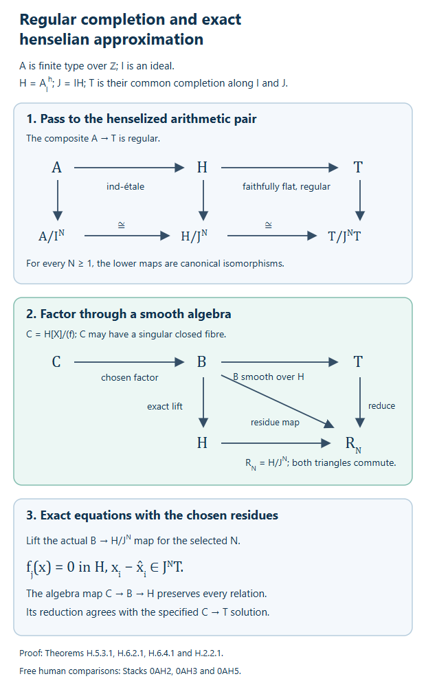
The upper panel shows the canonical common completion and all of its finite quotient maps, for the exact rings of Theorems H.5.3.1, H.6.2.1 and H.6.4.1. The lower two panels retain the actual finite equation algebra and its smooth factor; the commuting triangles give the exact solution with its specified residue in Corollary H.6.4.2. Editable SVG source.

Exercise H.6.5 (hard: a Noetherian completion alone is insufficient). Let \(R=k[t]_{(t)}\), \(F=k(t)\), and give \(S=R\oplus F\) the square-zero multiplication \((r,u)(s,v)=(rs,rv+su)\). Show that \(S\) is local and \(R\)-flat, its maximal ideal is \(tS\), its residue field is \(k\), and \(\widehat S_{tS}=k[[t]]\). Prove that \(S\) is not Noetherian and that its map to this completion is not flat.
Solution. A pair \((r,u)\) is a unit exactly when \(r\) is a unit of \(R\): its inverse is \((r^{-1},-r^{-2}u)\). Thus its maximal ideal is \(tR\oplus F=tS\). Its underlying \(R\)-module is \(R\oplus F\), a flat module since localization is flat. Since \(t^nF=F\), the canonical quotient \(S/t^nS\) is \(R/t^nR\), so its completion is \(k[[t]]\).
The ideal \(0\oplus F\) is not finitely generated over \(S\), since its \(S\)-action factors through \(R\) and \(F\) is not a finite \(R\)-module. Its nonzero inclusion into \(S\) becomes the zero map after tensoring with the completion, but its tensor source is
\[ F\otimes_Rk[[t]]=k((t))\ne0. \tag{H.6.5.1} \]
Hence the completion map is not flat. The Noetherianity proof in Theorem H.6.2.1 explicitly proves flatness over every neighborhood and then over the colimit before using faithful-flat descent; finite truncation identities alone would not justify that step. □
The free pair-henselization comparison is Stacks 0AH3. The construction and actual separable-algebraic fibre factors above prove the regularity of the completion used in Corollary H.6.4.2.
Appendix I. Finite étale covers of proper schemes over every henselian pair
Let \((A,I)\) be any henselian pair and \(X/A\) any proper scheme. We prove that restriction induces an equivalence between finite étale covers of \(X\) and of \(X_0=X\times_AA/I\), and also between their finite étale \(G\)-torsors for every finite constant group \(G\). The final statements are Theorem I.3.2.1 and Corollary I.3.3.1. The base need not be Noetherian, the proper scheme need not be flat or finitely presented, and \(|G|\) need not be invertible.
There are two approximation steps. First, a henselian pair is the actual filtered colimit of arithmetic pair henselizations, for which Appendix H proves the required equation approximation. Second, an arbitrary proper scheme is a closed-immersion inverse limit of proper finitely presented schemes. Finite étale objects, maps and equations descend in both steps, as proved below.
We use the written proofs of étale flatness and the flat differential criterion, Lemmas 1.1–1.2 and Theorem 1.3; affine scheme limits and finite-presentation descent, Theorems 1.1 and 4.1–4.2; and proper approximation, including arbitrary defining ideals, Lemmas A.4.1–A.4.2. The latter proofs use the written Noetherian Chow construction and the proved gluing construction, so no externally supplied general approximation theorem is needed. Appendices F and H supply complete proper effectivity, Noetherian full faithfulness and regular-completion equation approximation.
I.1. Arbitrary henselian pairs as actual arithmetic colimits
Theorem I.1.1. Let \((A,I)\) be a henselian pair, without a Noetherian hypothesis. Let \(A_i\subset A\) run through its finitely generated integer subalgebras, put \(I_i=I\cap A_i\), and set
\[ H_i=(A_i)^h_{I_i},\qquad J_i=I_iH_i. \tag{I.1.1.1} \]
The universal maps of pairs make these rings a filtered system, and their maps to \(A\) induce canonical isomorphisms
\[ \varinjlim_i H_i=A,\qquad \varinjlim_i H_i/J_i=A/I. \tag{I.1.1.2} \]
Every \(H_i\) is Noetherian and its actual \(J_i\)-adic completion map is regular.
Proof. The subalgebras are directed by inclusion: adjoining the union of two finite generating sets gives a common upper bound. They have union \(A\). Their ideals \(I_i\) have union \(I\); moreover their quotient rings embed in \(A/I\) and have union \(A/I\). Noetherianity of \(A_i\) makes \(I_i\) finitely generated, so Theorem H.6.2.1 constructs every indicated pair henselization. Its universal property gives the transition \(H_i\to H_j\) for \(A_i\subset A_j\), and its uniqueness gives their compatibility and canonical maps \(H_i\to A\).
Write \(B=\varinjlim H_i\). The maps \(A_i\to H_i\) induce \(\alpha:A\to B\). Let \(J=IB\). This ideal is the union of the images of \(J_i\): each finite sum of products defining a member of \(IB\) occurs at a common stage. Filtered colimits commute with quotients, by the defining presentations of quotient rings. Thus
\[ B/J=\varinjlim_i H_i/J_i =\varinjlim_i A_i/I_i=A/I. \tag{I.1.1.3} \]
We prove that \((B,J)\) is henselian. For \(j\in J\) and \(b\in B\), represent both at a common stage with \(j_i\in J_i\). The element \(1+j_ib_i\) is a unit of \(H_i\), since \(J_i\subset\operatorname{Jac}(H_i)\). Its image \(1+jb\) is a unit of \(B\). The unit characterization of the Jacobson radical gives \(J\subset\operatorname{Jac}(B)\).
Take a monic polynomial \(f\in B[T]\) with a prescribed coprime monic factorization modulo \(J\). Represent its coefficients, the coefficients of the two residue factors, and a polynomial Bézout identity for those factors at finite stages. The factorization and Bézout equations hold in the quotient colimit (I.1.1.3), hence hold at a common later stage. The monic leading coefficients can be set equal to \(1\) when choosing the representatives. We obtain a monic \(f_i\) and its actual coprime factorization modulo \(J_i\). Henselianity of \((H_i,J_i)\) supplies exact monic factors of \(f_i\) with those residues. Their images factor \(f\) with the prescribed residues. This proves henselianity by its monic-factorization definition.
If \(A\to D\) carries \(I\) into \(L\), with \((D,L)\) henselian, universality of each \(H_i\) gives a unique compatible family \(H_i\to D\). It gives a unique \(A\)-map \(B\to D\) carrying \(J\) into \(L\). Thus \((B,J)\) is initial among henselian pairs receiving \((A,I)\). Since \((A,I)\) itself is henselian, the canonical map \(\beta:B\to A\) satisfies \(\beta\alpha=1_A\). The two maps \(1_B\) and \(\alpha\beta\) agree on \(A\); the proved initial property makes them equal. Consequently \(\alpha\) and \(\beta\) are inverse. Finally Theorems H.6.2.1 and H.6.4.1 give the stated Noetherianity and regularity at every stage. □
The maps \(H_i\to A\) need not be inclusions. The proof uses filtered colimits and eventual equality, without an injectivity or flatness assumption on these maps.
I.2. Finite étale descent with all equations retained
I.2.1. Finite projective algebra data
Lemma I.2.1.1. A finite étale \(R\)-algebra is finitely presented as an \(R\)-module and is a direct summand of \(R^n\) for some finite \(n\). Conversely a finite projective \(R\)-module with an \(R\)-algebra structure is finitely presented as an algebra. Its module, multiplication, unit and algebra homomorphisms can all be specified by finitely many matrix coefficients and finitely many equations.
Proof. First let \(D\) be finite and finitely presented as an \(R\)-algebra. Choose finite algebra generators \(d_l\). Each is integral over \(R\), by the determinant trick on a finite generating list for the module \(D\). Choose monic annihilating polynomials \(g_l(T)\). The algebra
\[ Q=R[X_1,\ldots,X_m]/(g_1(X_1),\ldots,g_m(X_m)) \tag{I.2.1.1} \]
is finite free over \(R\), with the bounded monomials as a basis, and surjects onto \(D\). Its kernel is finitely generated as an ideal. Here is why finite algebra presentation gives this for the chosen generators: start with any finite presentation for \(D\), express its generators in the \(d_l\), express the \(d_l\) in the old generators, add these finitely many image equations, and eliminate the old variables. This gives a finite presentation using the \(X_l\). Passing through the quotient \(Q\) keeps the kernel finitely generated. Multiplying those ideal generators by the finite module basis of \(Q\) generates the kernel as an \(R\)-module. Hence \(D\) is finitely presented as an \(R\)-module.
For finite étale \(D\), flatness is already proved in AG-FSE Étale morphisms and their local structure, Lemma 1.1. At a prime of \(R\), lift a basis of the residue module to a finite free module surjecting onto \(D\) locally. Its kernel is finite because \(D\) is finitely presented. Flatness makes the reduction of the kernel inject into the free residue module, whose map to the chosen basis is an isomorphism. Nakayama kills that kernel. Thus \(D\) is free locally. A finite presentation lets this isomorphism spread to a principal neighborhood: the local map, its inverse, and their finitely many equations have denominators that can all be cleared. Finitely many such neighborhoods cover the spectrum.
To prove projectivity explicitly, take a surjection \(\pi:R^n\to D\). On a finite principal cover \(D(f_l)\), freeness gives a section of its localization. Since \(D\) is finitely presented, a linear map out of \(D\) localizes by choosing the images of its finite generators and clearing the finite relations. Clearing denominators gives maps \(s_l:D\to R^n\) with \(\pi s_l=f_l^{a_l}1_D\), after enlarging the exponents if needed. The \(f_l^{a_l}\) generate the unit ideal, since their principal opens cover. Choose \(c_l\) with \(\sum c_lf_l^{a_l}=1\). Then \(\sum c_ls_l\) is a section of \(\pi\). It expresses \(D\) as the image of an idempotent matrix \(e\in M_n(R)\).
For the converse let \(P=eR^n\), with a multiplication \(\mu:P\otimes_RP\to P\) and unit \(u:R\to P\). Extend the multiplication by the projections \(e\otimes e\) on its source and inclusion into \(R^n\) on its target. It is a finite array of coefficients. The conditions that its image lies in \(P\), that it factors through these projections, and that it is associative, commutative and unital are finitely many equations on basis vectors. The matrix equation \(e^2=e\) gives the finite module relations \((1-e)R^n\). Adjoin finitely many variables for the module generators and impose these linear relations, the pairwise multiplication relations, and the unit relation. Every polynomial reduces to a linear combination of the generators, and its vanishing is exactly one of the module relations. This is a finite algebra presentation of \(P\).
A linear map \(eR^n\to e'R^{n'}\) is a matrix \(M\) with \(M=e'Me\). Preservation of unit and multiplication is again a finite list of coefficient equations. Composition and equality are matrix equations. This proves all the finite-data assertions, including variable module rank. □
I.2.2. Algebraic continuity
Theorem I.2.2.1. For any filtered system of rings \(R_i\) with colimit \(R\), the category of finite étale \(R\)-algebras is the filtered colimit of the finite étale algebra categories at the stages. Precisely, every algebra descends to a stage, every homomorphism between descended algebras descends after increasing that stage, and equality of two such homomorphisms is eventually true at a stage.
Proof. Let \(D/R\) be finite étale. Represent its idempotent \(e\), multiplication coefficients and unit from Lemma I.2.1.1 at a common stage. Every required equation holds in \(R\), and hence holds at a common later stage. At that stage the data define a finite projective algebra \(D_i=e_iR_i^n\), whose base change is \(D\). The preceding lemma makes it finitely presented as an algebra.
Its relative differentials are generated by the differentials of its finitely many algebra generators. Formation of differentials commutes with base change: the finite presentation identifies them as the quotient of the free module on these generator differentials by the differentiated relations. At \(R\) they are zero, because \(D\) is étale. Each of these finitely many elements therefore becomes zero eventually in
\[ \varinjlim_{j\ge i}\Omega_{D_j/R_j} =\Omega_{D/R}=0,\qquad D_j=D_i\otimes_{R_i}R_j. \tag{I.2.2.1} \]
A common later stage has all of them zero, so \(\Omega_{D_j/R_j}=0\). Projectivity gives flatness, and finite algebra presentation has already been proved. The complete converse in AG-FSE Étale morphisms and their local structure, Lemma 1.2 and Theorem 1.3, now makes \(D_j/R_j\) étale. It remains finite because its module is the image of the same finite idempotent matrix.
For maps, use the matrices of Lemma I.2.1.1. Represent their entries, their projection equations and their multiplication and unit equations at a common later stage. This gives the homomorphism there. Two such maps agree precisely when the finitely many matrix entries of their restrictions to the projected generators agree; these equalities are eventually true. In particular an isomorphism descends by descending its inverse and the two composite identities. Nothing here asserts that \(R_i\to R\), or any tensor-product map, is injective. □
I.2.3. Scheme continuity
Theorem I.2.3.1. Let \(T=\varprojlim T_i\), where the stages are quasi-compact separated schemes and the transition maps are affine. Then finite étale covers of \(T\), their maps, and their equalities descend to finite stages, in the precise sense of Theorem I.2.2.1.
Proof. Choose a finite affine cover \(W_{a,i_0}\) of one stage. Pull it back to every later stage and to \(T\). These inverse images are affine because the transitions and projections are affine. Pairwise and triple intersections are affine: the intersection of two affine opens in a separated scheme is the inverse image of its closed diagonal inside the product of the two affine opens. Induction gives the triple assertion. Their chart rings, and all the restriction maps, are filtered colimits of the corresponding stage rings, by the actual affine limit calculation in AG-MO Limits of schemes and Noetherian approximation, Theorem 1.1.
A finite étale cover of \(T\) is affine over each \(W_a\), where it corresponds to a finite étale algebra \(D_a\). Descend the finitely many algebras by Theorem I.2.2.1. Their overlap identifications are isomorphisms of finite étale algebras over the overlap rings. Descend those maps and inverses and make their inverse equations hold at a common stage. On each triple intersection the two composites agree at the limit; Theorem I.2.2.1 makes all the finitely many cocycle equations hold at a common later stage. Scheme gluing supplies a cover there. It is finite and étale because those properties hold on this finite affine target cover, and its base change is the original cover, with the specified gluing identifications.
A map between two covers is, on these charts, a homomorphism in the opposite direction between their finite étale algebras. Descend the finitely many maps and their overlap agreement equations by Theorem I.2.2.1. They glue to the required map. Two maps equal at the limit are equal on finitely many affine charts, and hence agree at a common later stage. This also descends an isomorphism and its inverse identities. The statement applies both to base changes of a fixed proper scheme and to closed-immersion systems; it needs no flatness of the transitions or of the schemes over their base rings. □
I.2.4. Proper effectivity over the arithmetic henselian stages
Theorem I.2.4.1. Let \(H=(A_*)^h_{I_*}\), where \(A_*\) is finite type over \(\mathbb Z\), and write \(J=I_*H\). For every proper scheme \(X/H\), restriction induces an equivalence
\[ \operatorname{F\acute Et}(X)\ \longrightarrow\ \operatorname{F\acute Et}(X\times_HH/J). \tag{I.2.4.1} \]
No flatness assumption is imposed on \(X/H\).
Proof. Theorem H.6.2.1 makes \(H\) Noetherian and henselian. Put \(T=\widehat H_J\). It is the actual Noetherian completion identified there. Given a cover \(U_0/X_0\), the complete proper effectivity theorem F.3.1 supplies a finite étale \(V/X_T\) with closed restriction \(U_0\). That theorem does not require flatness of \(X\).
Write \(T=\varinjlim B_l\), where \(B_l\) ranges through its finite-type \(H\)-subalgebras. They are Noetherian and hence finitely presented over \(H\). The schemes \(X_{B_l}\) are proper and separated with affine transition maps, and their limit is \(X_T\). Theorem I.2.3.1 descends \(V\) to a finite étale cover \(V_l/X_{B_l}\). Choose a finite polynomial presentation of \(B_l/H\). Its canonical map to \(T\) is a solution of its finitely many relations in \(T\). Corollary H.6.4.2 at \(N=1\) gives an \(H\)-algebra map
\[ \psi:B_l\longrightarrow H \tag{I.2.4.2} \]
whose composite with \(H\to H/J\) is exactly the original map \(B_l\to T/JT=H/J\). Base change \(V_l\) along \(\psi\). It is a finite étale cover \(U/X\), and the displayed equality of residue maps identifies \(U_0\) with the closed restriction of \(V\), hence with the prescribed cover. This proves essential surjectivity. Full faithfulness is exactly F.1.1 for the Noetherian henselian pair \((H,J)\) and the proper scheme \(X\). Together they give the equivalence. □
Exercise I.2.5 (medium: base-ring inclusions can acquire tensor kernels). Put \(A=k[t]\), \(B_1=A[w]\), and \(B_0=A[v]\), with \(B_0\to B_1\) sending \(v\) to \(tw\). Show that this map is injective, whereas its base change along the proper closed immersion \(X=\operatorname{Spec}(A/(t))\to\operatorname{Spec}A\) is not. Explain the consequence for the equations in Theorem I.2.3.1.
Solution. The polynomial \(\sum_j a_j(t)v^j\) maps to \(\sum_j a_j(t)t^jw^j\). Since \(k[t]\) is a domain, its being zero forces every \(a_j(t)=0\), proving injectivity. After tensoring with \(A/(t)\), the map is \(k[v]\to k[w]\), \(v\mapsto0\), with nonzero kernel \((v)\). The scheme \(X\) is proper because a closed immersion is proper, and it is not \(A\)-flat: multiplication by \(t\) becomes zero on its nonzero coordinate module. An equation true after later tensoring need not hold at its original stage. The finite-data proofs move to a stage where each equation actually holds; they never contract it through an assumed injection. □
I.3. Full proper henselian effectivity
I.3.1. Proper schemes of finite presentation
Theorem I.3.1.1. If \((A,I)\) is any henselian pair and \(Z/A\) is proper and of finite presentation, then restriction
\[ \operatorname{F\acute Et}(Z)\longrightarrow \operatorname{F\acute Et}(Z_0),\qquad Z_0=Z\times_AA/I, \tag{I.3.1.1} \]
is an equivalence.
Proof. Use the directed subalgebras \(A_i\) of Theorem I.1.1. The complete proper model theorem in AG-QC Zariski connectedness and Stein factorization, LemmaA.4.2, gives a proper model \(Z_{i_0}/A_{i_0}\) whose base change is \(Z\). This is a theorem about finite presentation; its proof descends the presentation and separatedness, uses the proved Noetherian Chow theorem, and makes the projective immersion closed at a later stage by the proved eventual closed-immersion theorem.
For \(i\ge i_0\) set
\[ Z_i=Z_{i_0}\times_{A_{i_0}}H_i,\qquad Z_{i,0}=Z_i\times_{H_i}H_i/J_i . \tag{I.3.1.2} \]
These are proper schemes, with affine transitions; the first stages are Noetherian. Their limits are respectively \(Z\) and \(Z_0\), by Theorem I.1.1 and the chart calculation of scheme limits. Theorem I.2.4.1 makes each restriction \(\operatorname{F\acute Et}(Z_i)\to\operatorname{F\acute Et}(Z_{i,0})\) an equivalence. These functors commute with transition base changes.
Here is the categorical passage to the limits. A cover of \(Z_0\) descends to \(Z_{i,0}\) by Theorem I.2.3.1. Lift it at this stage by Theorem I.2.4.1 and pull the lift to \(Z\); its closed restriction is the prescribed cover. For full faithfulness first descend two covers of \(Z\) to a common stage. A morphism between their closed restrictions descends, by Theorem I.2.3.1, to the closed restrictions at a later stage. Full faithfulness at that stage gives a unique morphism of the two stage covers. Pullback is the desired morphism over \(Z\). If two maps over \(Z\) have the same closed restriction, descend both to one stage and then make the equality of their closed restrictions hold at a later stage. Stage full faithfulness makes the two maps equal there, hence equal over \(Z\). This proves both existence and uniqueness of every lifted map. □
I.3.2. Proper schemes with arbitrary defining relations
Theorem I.3.2.1 (proper henselian finite-cover theorem). Let \((A,I)\) be a henselian pair, and let \(X\to\operatorname{Spec}A\) be proper. Then
\[ \operatorname{F\acute Et}(X)\ \xrightarrow{\ \sim\ }\ \operatorname{F\acute Et}(X_0),\qquad X_0=X\times_AA/I. \tag{I.3.2.1} \]
The ring \(A\) need not be Noetherian. The morphism \(X/A\) need not be flat or finitely presented.
Proof. The complete relative approximation theorem in AG-QC Zariski connectedness and Stein factorization, LemmaA.4.1, constructs
\[ X=\varprojlim_\alpha X_\alpha, \tag{I.3.2.2} \]
where every \(X_\alpha/A\) is proper and finitely presented, and every transition is a closed immersion. Its proof explicitly accommodates arbitrary defining ideals: embed \(X\) closedly in a separated finitely presented ambient scheme, write its ideal as the directed union of finite-type quasi-coherent ideals, pull the resulting closed approximations through a Noetherian Chow modification, and make their projective immersions closed by eventual affineness and a finite algebra-generator calculation. Proper surjections from the resulting projective schemes make the closed approximations universally closed; their separatedness and finite presentation make them proper. All of these steps are proved in that earlier programme appendix, so no general properness descent theorem is being assumed here.
Closed immersions are affine. Their pullbacks to \(A/I\) are again closed immersions, and the affine quotient-ring calculation gives
\[ X_0=\varprojlim_\alpha (X_\alpha)_0. \tag{I.3.2.3} \]
All stages are quasi-compact and separated. Theorem I.2.3.1 therefore identifies each of the two finite-cover categories with its filtered stage category. At each stage Theorem I.3.1.1 is an equivalence, compatible with restriction. The existence, map-lifting and equality argument in the last paragraph of its proof now applies to the index \(\alpha\). It gives essential surjectivity and full faithfulness of (I.3.2.1). This proves the full statement without treating a finite-type proper scheme as the base change of a single finitely presented model. □
I.3.3. All finite group torsors
Corollary I.3.3.1. Under the hypotheses of Theorem I.3.2.1, restriction is an equivalence between finite étale \(G\)-torsors on \(X\) and on \(X_0\), for every finite constant group \(G\). No invertibility hypothesis on \(|G|\) is required.
Proof. Lift the underlying finite étale cover \(U_0\) to \(U\) by Theorem I.3.2.1. Full faithfulness lifts every action map \(r_g:U_0\to U_0\) uniquely. Their finite list of action identities holds upstairs because it holds after restriction and restriction is injective on each Hom set. Thus they give a \(G\)-action on \(U\).
The torsor comparison
\[ \coprod_{g\in G}U\longrightarrow U\times_XU, \qquad (g,u)\longmapsto(u,r_g(u)) \tag{I.3.3.1} \]
is a map between finite étale covers. Its closed restriction is an isomorphism. Lift the inverse of that restriction using full faithfulness; injectivity on Hom sets makes its two composites the identities upstairs. Thus (I.3.3.1) is an isomorphism.
The cover \(U\to X\) is surjective. Indeed its image is open and closed: a finite locally free algebra has locally constant rank, and its nonempty-fibre locus is the locus of positive rank. A nonempty complementary closed subset would be proper over \(A\), with nonempty closed image in \(\operatorname{Spec}A\). Such an image contains a maximal ideal, which contains \(I\). Its fibre over that point would meet \(X_0\), contradicting surjectivity of \(U_0\to X_0\). This proves the remaining torsor condition. Finally a map of covers is \(G\)-equivariant if and only if its finite action-commutation equations hold. Full faithfulness detects these equations after restriction. It therefore gives the required equivalence on torsors and equivariant maps. □
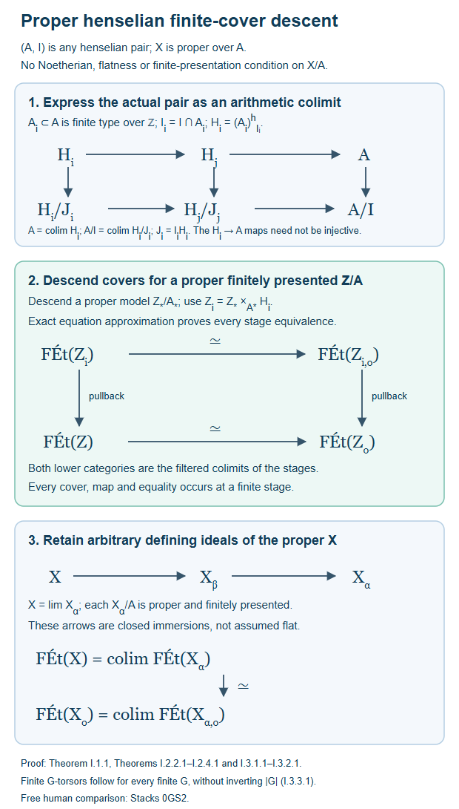
The upper panel gives the actual pair colimit of Theorem I.1.1. For a proper finitely presented scheme, the middle square retains the stage restriction equivalences, the pullback functors and their exact closed fibres. The lower panel shows the separate closed-approximation step for an arbitrary proper scheme, giving Theorem I.3.2.1 without replacing it by a finitely presented scheme. Editable SVG source.

Exercise I.3.4 (medium: a proper finite-type scheme without finite presentation). Let \(A=k[x_1,x_2,\ldots]\), \(K=(x_1,x_2,\ldots)\), and \(X=\operatorname{Spec}(A/K)\). Show that \(X/A\) is proper and finite type, but not finitely presented. Construct the system (I.3.2.2) directly in this example.
Solution. A closed immersion is proper and finite type: its coordinate quotient is generated as an algebra by its unit. A quotient \(A/K\) is finitely presented as an \(A\)-algebra exactly when its defining ideal is finitely generated, by the finite-presentation argument for a specified set of generators in Lemma I.2.1.1. Any finite proposed generating list for \(K\) uses only \(x_1,\ldots,x_N\) for some \(N\), and all its members vanish when those variables are set to zero. The image of the ideal they generate is consequently zero in \(k[x_{N+1},x_{N+2},\ldots]\); the image of \(x_{N+1}\in K\) is nonzero. Thus \(K\) is not finitely generated.
Put \(X_n=\operatorname{Spec}(A/(x_1,\ldots,x_n))\). Every \(X_n/A\) is a proper finitely presented closed immersion; its transition maps are closed immersions as well. The colimit of the quotient rings is \(A/K=k\), hence \(X=\varprojlim X_n\). The pair \((A,0)\) is henselian, since a factorization modulo the zero ideal is already exact. Thus this is also a genuine instance of Theorem I.3.2.1 outside finite presentation, even though its restriction equivalence for \(I=0\) is the identity. The example explains the need for the closed-approximation step in the general proof. □
A freely accessible human comparison for the full proper henselian finite-cover theorem is Stacks 0GS2. The pair-colimit and finite-cover descent arguments above supply the proof from the earlier arithmetic approximation and proper approximation theorems.
Appendix J. Affine henselian torsion comparison and finite effacement
For every henselian pair \((A,I)\) and every torsion abelian étale sheaf \(F\), we prove the canonical comparison
\[ H^q(\operatorname{Spec}A,F) \ \xrightarrow{\sim}\ H^q(\operatorname{Spec}(A/I),F|_{\operatorname{Spec}(A/I)}) \qquad(q\ge0). \tag{J.0.1} \]
The ring need not be Noetherian, there need not be a common annihilator of \(F\), and there is no restriction on its torsion orders in the residue characteristics. The result is Theorem J.2.6.1. We also prove the general-base degree-zero proper comparison J.2.5.1 and the restricted-injective affine-cover bound J.2.9.1.
The proof builds an actual integral cover, descends the zero of a finite constant class to a finite surjective stage, embeds constructible coefficients in finite constant direct images, and uses the precise coefficient pushout to efface arbitrary torsion classes. A closed quotient of an absolute integral closure can be nonreduced; it nevertheless has vanishing higher finite constant cohomology. Exercise J.1.9 shows why that assertion cannot be extended to every torsion sheaf merely from strict henselianity of all local rings.
The internal inputs are continuity B.1.1–B.1.4, the lifting and finite-completion results of Appendix H, and the finite étale results of Appendix I. The programme inputs are the written constructible approximation and finite-presentation proofs, Theorem 5.1 and Lemma 5.2; finite pushforward and its canonical base change, Theorem 4.1 and Corollary 4.2; Noetherian étale normality, Theorem 5.1; and the proved proper and absolute scheme approximations, Lemmas A.2.1 and A.4.1–A.4.2. The finite normalization in the constructible embedding is supplied by Theorem A.14.2 of this lesson at its actual finite-type integer models.
J.1. Absolute integral closures and finite constant effacement
J.1.1. The local rings are actually strictly henselian
Lemma J.1.1.1. Let \(R\) be an integrally closed domain whose fraction field \(K\) is algebraically closed. Every monic polynomial over \(R\) splits into linear factors over \(R\). Every local ring \(R_{\mathfrak p}\) is henselian and its residue field is algebraically closed.
Proof. The roots of a monic polynomial lie in \(K\) and are integral over \(R\), hence belong to \(R\). Localization of an integrally closed domain is integrally closed: an element of \(K\) integral over \(R_{\mathfrak p}\) has a monic equation with finitely many denominators; multiplying it by a common denominator outside \(\mathfrak p\) makes it integral over \(R\). The multiplied element belongs to \(R\), and the original belongs to \(R_{\mathfrak p}\). Its fraction field is still \(K\). Thus every monic polynomial over this local ring splits there as well.
Put \(S=R_{\mathfrak p}\), \(\mathfrak m=\mathfrak pS\), and \(k=S/\mathfrak m\). Lift the coefficients of a monic polynomial over \(k\) to \(S\), split it over \(S\), and reduce the roots. Every monic polynomial over \(k\) therefore splits, proving that \(k\) is algebraically closed. To lift a prescribed coprime monic factorization \(\bar f=\bar g\bar h\), first split \(f=\prod_l(T-a_l)\) over \(S\). Each reduced root belongs to exactly one of the two residue factors, with its multiplicity: coprimality means that their root sets are disjoint. Group the \(a_l\) according to those sets. The two products give monic factors of \(f\) reducing to \(\bar g,\bar h\). Since \(\mathfrak m\) is the Jacobson radical of the local ring, this proves the henselian-pair definition. The residue field is separably closed in particular, so the local ring is strictly henselian. □
J.1.2. The actual étale splitting, without assuming normality preservation
Theorem J.1.2.1. For \(R\) as in Lemma J.1.1.1, every affine étale scheme \(U/R\) is a finite disjoint union of schemes each mapping by an open immersion to \(\operatorname{Spec}R\).
Proof. Its algebra is finitely presented. By H.6.1.2, embed \(U\) as an open subscheme of \(\operatorname{Spec}D\), with \(D\) finite over \(R\). The generic algebra of \(U\) is finite étale over the algebraically closed field \(K\); the proved étale field classification makes it \(K^r\). For each of these \(r\) points, the finite-dimensional algebra \(D_K\) has a field factor \(K\): its local algebra at this open point is exactly that field. The Artinian product decomposition of \(D_K\) gives a projection to this factor. Restrict it to \(D\). Every member of \(D\) is integral over \(R\), so its image in \(K\) belongs to \(R\), by integral closedness. We obtain a retraction
\[ \pi_l:D\longrightarrow R,\qquad 1\le l\le r. \tag{J.1.2.1} \]
Let \(s_l:\operatorname{Spec}R\to\operatorname{Spec}D\) be the corresponding section and let \(W_l=s_l^{-1}(U)\). Restriction is a section \(W_l\to U\times_R W_l\). Its image is open: the diagonal of an étale morphism is open, and this section is its base change along the pair consisting of the identity and the section composed with the structure map. Thus it identifies \(W_l\) with an open subscheme \(U_l\subset U\).
These images cover \(U\). Let \(u\in U\) lie over \(\mathfrak p\subset R\). The residue field at \(\mathfrak p\) is algebraically closed by Lemma J.1.1.1, so this fibre point specifies a rational residue section. H.6.1.3 over the henselian local pair \((R_{\mathfrak p},\mathfrak pR_{\mathfrak p})\) lifts it to a section of \(U_{R_{\mathfrak p}}\) through \(u\). At the generic point this section selects one of the \(r\) factors, say \(l\). Its composed map \(D\to R_{\mathfrak p}\) agrees with the localization of \(\pi_l\): their maps into \(K\) agree, and \(R_{\mathfrak p}\to K\) is injective. Therefore the section \(s_l\) at \(\mathfrak p\) lies in \(U\) and is the given point \(u\). Hence \(u\in U_l\).
The images are disjoint. If \(U_l,U_m\) meet at \(u\), their sections over \(R_{\mathfrak p}\) have the same residue section at \(u\). Uniqueness in H.6.1.3 makes them equal, so their generic factors coincide and \(l=m\). The finitely many disjoint opens \(U_l\) cover \(U\), hence each is also closed in \(U\). This proves the asserted decomposition. If \(r=0\), étale flatness makes the algebra of \(U\) torsion free over \(R\); its zero generic localization forces it to be zero, so \(U\) is empty, as required. □
This proof uses the actual finite-completion algebra, its generic factors, integral closedness and unique local lifting. It does not infer normality of an étale algebra over a non-Noetherian ring from the Noetherian normality theorem.
J.1.3. Finite covers on every closed quotient
Theorem J.1.3.1. Let \(Z=\operatorname{Spec}(R/L)\), with \(R\) as in Lemma J.1.1.1 and \(L\) any ideal. All its local rings are strictly henselian. Every finite étale surjection onto \(Z\) has a section. In particular
\[ H^1(Z,\underline M)=0 \tag{J.1.3.1} \]
for every finite abelian group \(M\).
Proof. First every quotient of a local ring from Lemma J.1.1.1 again has the monic splitting property: lift its monic polynomial to that local ring, split, and reduce. Its residue field is unchanged. The same grouping of roots as in Lemma J.1.1.1 proves henselianity. This applies to the local rings of \(R/L\).
Let \(D/(R/L)\) be the algebra of the given cover. It is finitely presented. The global square étale presentation H.6.1.1 lifts it to an affine étale algebra \(E/R\). Specifically lift its finitely many defining equations and its auxiliary polynomial \(q\), and use the determinant \(\Delta\) of the lifted Jacobian; impose \(qu-1\) and \(\Delta v-1\). The square Jacobian determinant is \(q\Delta^2\), a unit, so this lifted algebra is étale by the proved Jacobian lifting calculation. Reduction modulo \(L\) is exactly \(D\). This is a lift of the entire affine algebra, not just of one of its standard neighborhoods.
Theorem J.1.2.1 expresses \(\operatorname{Spec}E\) as finitely many disjoint opens \(W_l\subset\operatorname{Spec}R\). Consequently the given cover is a disjoint union of copies of the opens \(W_l\cap Z\). Each is also closed in \(Z\). Indeed its component is closed in the finite cover, so is finite over \(Z\), and its image \(W_l\cap Z\) is therefore closed. Surjectivity says that these finitely many clopens cover \(Z\). Refine them to their finite Boolean partition. On each nonempty part choose one sheet containing it; the inverse of that sheet's open immersion is a section there. Sections on the disjoint parts glue to a section of the cover. An \(M\)-torsor is represented by a finite étale surjection, by the proved finite-local-system and torsor classification. A section trivializes it, and the proved torsor interpretation of first cohomology gives (J.1.3.1). □
J.1.4. Étale versus Zariski cohomology in this situation
Lemma J.1.4.1. If every local ring of a scheme \(T\) is strictly henselian, the canonical morphism from its étale topos to its Zariski topos induces
\[ H^q(T_{\mathrm{Zar}},F|_{T_{\mathrm{Zar}}}) \ \xrightarrow{\sim}\ H^q(T_{\mathrm{et}},F) \tag{J.1.4.1} \]
for every abelian étale sheaf \(F\). This assertion also holds on every open subscheme.
Proof. On a strictly henselian local scheme \(S\), global sections identify with the geometric closed-point stalk for every étale sheaf. A representative of a germ on a pointed étale neighborhood pulls back to a global section along the henselian residue lift of that neighborhood. Such a neighborhood has a section through the chosen point: take its affine neighborhood and use the unique section-lifting property over the local ring; its open image contains the closed point and hence the whole local spectrum. Equality of germs is checked by the same pullback. Thus global sections are the exact stalk functor, and all positive cohomology groups vanish.
Let \(\epsilon:T_{\mathrm{et}}\to T_{\mathrm{Zar}}\) be the canonical morphism. For \(p\in T\), the stalk of \(R^q\epsilon_*F\) is the filtered colimit of \(H^q(V_{\mathrm{et}},F|_V)\) over affine Zariski neighborhoods \(V\) of \(p\). These neighborhoods have affine transitions and limit \(\operatorname{Spec}\mathcal O_{T,p}\). Continuity B.1.1 identifies that colimit with the cohomology of this local scheme. The first paragraph makes it zero for \(q>0\). For \(q=0\), \(\epsilon_*F\) is its ordinary restriction to Zariski opens. The Leray spectral sequence therefore has only its zero higher-direct-image row, giving (J.1.4.1) with the canonical maps. The same argument applies to an open subscheme, whose local rings are unchanged. □
J.1.5. The finite constant acyclicity statement
Theorem J.1.5.1. For \(R,L,Z\) as in Theorem J.1.3.1 and every finite abelian \(M\),
\[ H^q(Z,\underline M)=0\qquad(q>0). \tag{J.1.5.1} \]
The same holds on every principal open of \(Z\), with no condition on the order of \(M\).
Proof. A principal open is a closed quotient of a localization \(R_h\), which is again an integrally closed domain with fraction field \(K\). Theorem J.1.3.1 gives vanishing of its first cohomology. We induct on \(q\), simultaneously on all principal opens. Lemma J.1.4.1 computes these groups as Zariski sheaf cohomology.
After replacing \(R\) by the relevant localization, take \(\xi\in H^q(Z,\underline M)\), \(q\ge2\), and put \(B=R/L\). Let \(J_\xi\subset B\) be the elements \(b\) such that \(\xi|_{D(b)}=0\). It contains zero, is closed under negatives, and is stable under multiplication by arbitrary elements, since \(D(ab)\subset D(b)\). If \(u,v\in J_\xi\), the opens \(D(u(u+v))\) and \(D(v(u+v))\) cover \(D(u+v)\): at a prime avoiding \(u+v\), at least one of \(u,v\) is avoided. Their intersection is the principal open \(D(uv(u+v))\). By induction its degree-\((q-1)\) cohomology vanishes. Mayer–Vietoris therefore injects the degree-\(q\) cohomology on \(D(u+v)\) into that on the two covering opens. The restricted class vanishes on both, so vanishes on \(D(u+v)\). Thus \(J_\xi\) is an ideal.
A positive Zariski cohomology class is locally zero. For an injective resolution, its local cocycle is locally a boundary by exactness of the sheaf resolution; this proves the assertion directly. Hence the principal opens \(D(b)\), \(b\in J_\xi\), cover \(Z\). Their defining ideal cannot lie in any maximal ideal, so \(J_\xi=B\). In particular \(1\in J_\xi\), giving \(\xi=0\). This proves every degree and every principal open. The empty scheme case has zero cohomology and is included. □
J.1.6. Integral algebras admit finite-presentation models
Lemma J.1.6.1. Every integral \(A\)-algebra \(B\) is a filtered colimit of \(A\)-algebras that are finite as modules and finitely presented as algebras. If \(\operatorname{Spec}B\to\operatorname{Spec}A\) is surjective, all the chosen stage morphisms are surjective.
Proof. Choose a set of algebra generators \(b_\lambda\) for \(B/A\), and for each a monic annihilating polynomial \(g_\lambda(T)\in A[T]\). Present \(B\) by these variables and all their polynomial relations. An index consists of a finite set \(S\) of variables and finitely many true relations using only these variables. Include every \(g_\lambda(X_\lambda)\), \(\lambda\in S\), among the relations, and set
\[ B_{S,E}=A[X_\lambda:\lambda\in S]/ (g_\lambda(X_\lambda),\,r:r\in E). \tag{J.1.6.1} \]
The bounded monomials from the monic equations generate this quotient as an \(A\)-module. The presentation is finite. Increasing both finite sets gives transition maps; the union of two choices gives a common upper bound. Every generator and every relation of \(B\) occurs in the system, so its colimit is \(B\). There is a specified \(A\)-map from every stage to \(B\). If the final spectrum surjects onto \(\operatorname{Spec}A\), it factors through each stage spectrum, forcing that stage spectrum to surject as well. No injectivity of these stage algebras, or of their transition maps, is claimed. □
J.1.7. Finite effacement over every affine base
Theorem J.1.7.1. Let \(X\) be any affine scheme, \(Z\subset X\) any closed subscheme, \(M\) a finite abelian group, and \(\xi\in H^q(Z,\underline M)\), \(q>0\). There is a finite surjective morphism of finite presentation \(X'\to X\) on which the pulled-back class is zero:
\[ \xi|_{Z\times_X X'}=0. \tag{J.1.7.1} \]
No Noetherian hypothesis and no invertibility condition on \(|M|\) are imposed.
Proof. Write \(X=\operatorname{Spec}A\). Present \(A=P/N\), where \(P=\mathbb Z[X_\lambda]\) is a polynomial domain on a possibly infinite set of variables. Take an algebraic closure \(\Omega\) of its fraction field and let \(R\) be the integral closure of \(P\) in \(\Omega\). This ring is a domain and is integrally closed: an element of \(\Omega\) integral over \(R\) is integral over \(P\) by transitivity of integral dependence, and hence belongs to \(R\). Its fraction field is \(\Omega\). Indeed for \(a\in\Omega\), clear denominators in a monic equation over \(\operatorname{Frac}P\); multiplying \(a\) by a sufficiently large common nonzero denominator makes it integral over \(P\). Thus \(da\in R\), \(d\in P\subset R\), so \(a\in\operatorname{Frac}R\).
The quotient \(B=R/NR\) is integral over \(A\), and its spectrum surjects onto \(X\) by the proved lying-over theorem for \(P\subset R\): every prime containing \(N\) has a prime above it containing \(NR\). The inverse image of \(Z\) is a closed quotient of \(R\). Its constant finite cohomology vanishes by Theorem J.1.5.1, so this integral morphism kills \(\xi\).
Apply Lemma J.1.6.1 to \(B/A\). It expresses \(\operatorname{Spec}B\) as an affine inverse limit of finite surjective schemes \(X_i/X\) of finite presentation. Their pulled-back closed schemes \(Z_i\) have affine transitions and limit \(Z_B\). Continuity B.1.1 for the constant coefficient sheaves gives
\[ \varinjlim_i H^q(Z_i,\underline M)=H^q(Z_B,\underline M)=0. \tag{J.1.7.2} \]
The original class is represented at the initial stage \(A\), which is included by allowing an empty generating set in (J.1.6.1). A zero in this filtered colimit is zero at some finite stage. Take that \(X_i\) as \(X'\). All its stated finiteness and surjectivity properties were proved in Lemma J.1.6.1. □
Exercise J.1.8 (medium: nonreduced quotients and characteristic-order torsion). Let \(R\) be the integral closure of \(\mathbb Z\) in \(\overline{\mathbb Q}\), let \(p\) be prime and set \(B=R/pR\). Show that \(B\) is nonzero and nonreduced. For every \(b\in B\), show that \(T^p-T-b\) has a root in \(B\) and its finite étale algebra is isomorphic to \(B^p\). Deduce \(H^q(\operatorname{Spec}B,\mathbf F_p)=0\) for every \(q>0\).
Solution. Lying over gives a prime of \(R\) above \(p\), so \(B\ne0\). The element \(a=\sqrt p\) is integral over \(\mathbb Z\) and lies in \(R\). Its image has square zero in \(B\), but is nonzero: if \(a=pr\), then \(r=1/\sqrt p\) would be integral, so its square \(1/p\) would be a rational algebraic integer. A rational number integral over \(\mathbb Z\) is an integer, by clearing a reduced denominator in its monic equation; \(1/p\) is not. Thus \(B\) is nonreduced.
Lift \(b\) to \(R\), split the monic polynomial \(T^p-T-\tilde b\) there by Lemma J.1.1.1, and reduce one root to \(c\in B\). In characteristic \(p\) its roots are \(c+j\), \(j\in\mathbf F_p\), and
\[ T^p-T-b=\prod_{j\in\mathbf F_p}(T-c-j). \tag{J.1.8.1} \]
The factors are pairwise comaximal since their distinct differences are units from \(\mathbf F_p^\times\). Chinese remainders gives \(B[T]/(T^p-T-b)=B^p\). Its derivative is \(-1\), so it is finite étale despite the nonreduced base. Finally Theorem J.1.5.1 applies to this closed quotient with \(M=\mathbf F_p\), whose order is not invertible in \(B\). It proves all the asserted positive-degree vanishings. □
Exercise J.1.9 (hard: strict local rings do not make every sheaf acyclic). For \(R\) as in Exercise J.1.8, put \(X=\operatorname{Spec}R\), \(U=D(6)\), \(Z=V(6)\), with open and closed inclusions \(j,i\). For a nonzero finite abelian group \(M\), prove
\[ H^1(X,j_!\underline M_U)\ne0 \tag{J.1.9.1} \]
although every local ring of \(X\) is strictly henselian.
Solution. Use the proved open–closed exact sequence
\[ 0\longrightarrow j_!\underline M_U \longrightarrow \underline M_X \longrightarrow i_*\underline M_Z \longrightarrow0. \tag{J.1.9.2} \]
Finite closed pushforward is exact and computes the cohomology of \(Z\). The spectrum \(X\) is connected, since \(R\) is a domain, so \(\Gamma(X,\underline M)=M\). Chinese remainders gives
\[ R/6R=(R/2R)\times(R/3R). \tag{J.1.9.3} \]
Both factors are nonzero by lying over. Choose \(m\ne0\) in \(M\). The section equal to \(m\) on \(V(2)\) and zero on \(V(3)\) is a section of \(\underline M_Z\) and cannot be the restriction of a constant on connected \(X\). In the long exact sequence its boundary is consequently a nonzero member of \(H^1(X,j_!\underline M_U)\). Theorem J.1.5.1 makes \(H^1(X,\underline M_X)=0\), so this boundary can also be read as a nonzero element of the explicit quotient \(\Gamma(Z,\underline M)/M\). Lemma J.1.1.1 proves the strict henselianity of every local ring. Thus Lemma J.1.4.1 identifies étale and Zariski cohomology here, but it does not make the global-section functor exact for arbitrary sheaves. The finite constant hypothesis in Theorem J.1.5.1 has mathematical content. □
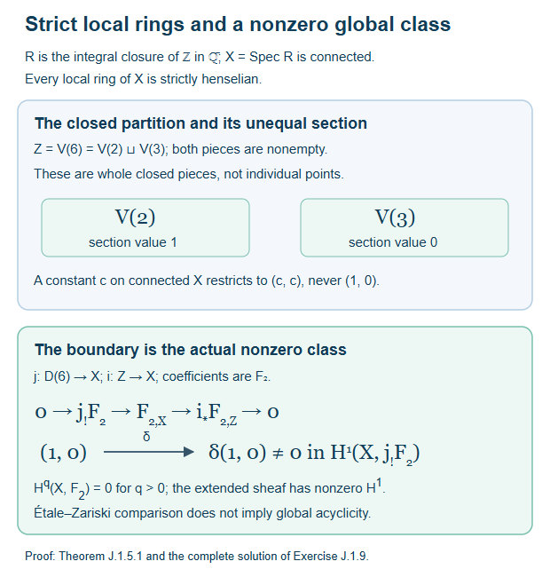
The two closed pieces are the entire \(V(2)\) and \(V(3)\), not individual points. The diagram records the two-part constant section of Exercise J.1.9, its failure to extend from the connected arithmetic spectrum, and its actual nonzero connecting class. The finite constant vanishing of Theorem J.1.5.1 is retained alongside the nonvanishing for the extended sheaf. Editable SVG source.

Free comparison sources are Stacks 09ZD, 09ZE and the affine comparison section 09Z8. The explicit splitting and the finite-presentation integral models above provide the non-Noetherian steps needed for constant-coefficient effacement; J.2 supplies the constructible embedding and the full affine torsion comparison.
J.2. Constructible embeddings, torsion effacement and affine comparison
J.2.1. Constructible coefficients have actual Noetherian models
Lemma J.2.1.1. Let \(X\) be qcqs. A constructible abelian sheaf \(C\) on \(X_{\mathrm{et}}\) descends to a constructible sheaf on a finite-type \(\mathbb Z\)-scheme in an absolute approximation of \(X\). If \(C\) is a sheaf of modules over a finite constant coefficient ring, the model and its identification may preserve that module structure.
Proof. AG-QC Zariski connectedness and Stein factorization, LemmaA.2.1, gives a complete absolute approximation \(X=\varprojlim X_i\), with finite-type integer stages and affine transitions. The finite-presentation assertion in Constructible sheaves and extension by zero, Lemma 5.2, gives a finite presentation of \(C\) by sums of sheaves \(a_!\Lambda\), where \(a\) is an affine étale object of finite presentation and \(\Lambda\) is finite. For an abelian constructible sheaf, choose a common annihilator of its finitely many finite stalk types and take \(\Lambda=\mathbb Z/N\).
The finitely many objects in that presentation descend by finite-presentation scheme descent. Their étale presentations descend as well: on a finite affine covering lift their finite square Jacobian data and the inverses of their determinants, as in H.6.1.1, then retain the finite overlap and inverse equations at a later stage. Pullback of \(a_!\Lambda\) is the corresponding extension by zero after base change; its geometric stalk is the direct sum of copies of \(\Lambda\) indexed by the lifts to the étale object, so this assertion and its canonical map are checked on stalks.
A map from \(a_!\Lambda\) into a sheaf is a section of that sheaf over \(a\), by adjunction. Thus the finitely many presentation maps descend by the degree-zero, varying-coefficient continuity argument B.1.2. Make their finite equality conditions hold at a common stage, and form the cokernel there. Its pullback is \(C\), since inverse image is exact and preserves sums and cokernels. At the Noetherian stage each generator \(a_!\Lambda\) is constructible by the proved finite generic-fibre stratification in Constructible sheaves and extension by zero, Lemma 4.1. Cokernels of maps of constructible sheaves are constructible by its Proposition 3.2. Hence this cokernel is a constructible model. All presentation maps can be taken module-linear, which proves the last assertion. □
J.2.2. Extending constants from a normal generic point
Lemma J.2.2.1. Let \(T\) be an integral normal Noetherian scheme, with function field \(L\) and generic-point map \(j:\operatorname{Spec}L\to T\). For a constant finite abelian group or finite constant module \(M\), the canonical map
\[ \underline M_T\longrightarrow j_*\underline M_L \tag{J.2.2.1} \]
is an isomorphism.
Proof. Check on an affine étale basis object \(V\to T\). Its source is Noetherian and normal, by the complete Noetherian étale normality proof in AG-FSE Étale morphisms and their local structure, Theorem 5.1. Its finitely many irreducible components are disjoint and open: a local normal Noetherian ring is a domain, so distinct components cannot meet; the finitely many closed components are consequently also open. Each is integral.
Every nonempty component maps dominantly to \(T\). Its image is open by étaleness, hence contains the generic point; flatness over the integral target makes its generic fibre the localization of its domain, so that fibre is integral. The étale field classification makes this fibre a single finite separable field extension of \(L\). Therefore the components of \(V\) correspond exactly to the points of \(V_L\). Sections of a constant sheaf on either space are one copy of \(M\) for each of these components. The map (J.2.2.1) sends a constant on a component to that same constant at its generic point, and is bijective on every such basis object. This proves the sheaf isomorphism, including its module structure. □
J.2.3. Finite-constant embeddings with all finiteness conditions
Theorem J.2.3.1. On a qcqs scheme \(X\), every constructible abelian sheaf \(C\) embeds into a finite sum
\[ C\lhook\joinrel\longrightarrow \bigoplus_{l=1}^r (p_l)_*\underline M_l, \qquad p_l:T_l\longrightarrow X \tag{J.2.3.1} \]
with \(p_l\) finite of finite presentation and \(M_l\) finite abelian. For constructible modules over a finite constant ring, this embedding may be module-linear, with the \(M_l\) finite modules.
Proof at a finite-type integer stage. Refine a constructible partition into finitely many reduced irreducible locally closed strata \(S\), on each of which \(C\) is finite locally constant. Such refinement is possible by removing component intersections in each Noetherian stratum and repeating on the closed remainder. Fix one \(S\), let \(x\) be its generic point, and let \(Z\) be its reduced closure. Thus \(Z\) is integral and \(S\) is a dense open in \(Z\).
The finite local system at \(x\) is a finite Galois module, by the proved étale field classification. Choose a finite separable extension \(L/\kappa(x)\) trivializing it, and denote its now constant value by \(M\). Normalize \(Z\) in \(L\). This gives an integral normal scheme \(T\) finite over \(Z\): on each affine chart this is precisely the arithmetic normalization theorem A.14.2, and its localizations agree, so the finite normalizations glue. The scheme \(T\) is Noetherian and has function field \(L\). Write \(p:T\to X\) for its composite with the closed immersion \(Z\to X\); it is finite and of finite presentation, since the target is Noetherian.
The chosen generic identification gives a map \(p^{-1}C|_{\operatorname{Spec}L}\to\underline M_L\). Adjunction and Lemma J.2.2.1 extend it to a map \(p^{-1}C\to\underline M_T\), hence to \(C\to p_*\underline M_T\). On \(T_S\) this is a map between finite local systems, an isomorphism generically. Its isomorphism locus is open and closed: trivialize both finite local systems étale locally, where the map is locally a constant matrix and the invertible matrices form a subset of a finite discrete set. Since \(T_S\) is a nonempty open of integral \(T\), it is connected. The map is therefore an isomorphism on all of \(T_S\).
The finite normalization surjects onto \(Z\) by lying over. Every geometric point of \(S\) has a lift to \(T_S\); evaluation at that lift proves that \(C\to p_*\underline M_T\) is injective at the original stalk. Repeat this construction for the finitely many strata and take the direct sum of the maps. Every geometric stalk is detected by its stratum, so the resulting map is injective. The generic identifications, adjunction and constant extension preserve the finite coefficient-module structure when specified.
Proof for general \(X\). Descend \(X,C\) to a finite-type integer model by Lemma J.2.1.1, apply the preceding construction, and pull the embedding back to \(X\). Inverse image is exact. Finite pushforward commutes with every base change by Pushforward, pullback and finite morphisms, Corollary 4.2, whose proof uses only the explicit finite product of geometric stalks. Thus the pulled target has exactly the form (J.2.3.1); finite presentation and finiteness of the maps survive base change. This proves the full statement without needing finite normalization over an arbitrary nonexcellent Noetherian base. □
J.2.4. Effacing an arbitrary torsion class on a closed affine subscheme
Theorem J.2.4.1. If \(X\) is affine, \(Z\subset X\) is closed, \(F\) is a torsion abelian étale sheaf on \(X\), and \(\xi\in H^q(Z,F|_Z)\), \(q>0\), there is a monomorphism \(F\to F'\) of torsion sheaves on \(X\) such that the image of \(\xi\) is zero on \(Z\).
Proof. The proved constructible approximation in Constructible sheaves and extension by zero, Theorem 5.1, expresses \(F\) as a filtered colimit of constructible sheaves mapping to it. These maps need not be inclusions. Exact inverse image preserves this colimit, and continuity B.1.1 on the fixed affine \(Z\) represents \(\xi\) by a class \(\zeta\in H^q(Z,C|_Z)\) for some constructible \(C\to F\).
Embed \(C\) into \(S=\bigoplus_l(p_l)_*\underline M_l\) by Theorem J.2.3.1. Each \(T_l\) is affine, since \(p_l\) is finite over affine \(X\). Finite pushforward is exact and commutes with closed base change, by Pushforward, pullback and finite morphisms, Theorem 4.1 and Corollary 4.2. Consequently the image of \(\zeta\) is a finite list of classes in
\[ H^q(T_l\times_X Z,\underline M_l). \tag{J.2.4.1} \]
Theorem J.1.7.1 gives a finite surjection of finite presentation \(T'_l\to T_l\) killing each such class. Put \(p'_l:T'_l\to X\) and \(S'=\bigoplus_l(p'_l)_*\underline M_l\). The natural map \(S\to S'\) is injective. On a geometric stalk it repeats the coordinates indexed by points of \(T_l\) on the nonempty sets of their lifts to \(T'_l\); surjectivity supplies those lifts. The composite \(C\to S'\) is a monomorphism and kills \(\zeta\).
Form the sheaf pushout
\[ F'=(F\oplus S')/ \{(u(c),-v(c)):c\in C\}, \tag{J.2.4.2} \]
where \(u:C\to F\) and \(v:C\to S'\). Its map from \(F\) is injective: on a stalk, a relation with second component zero has \(v(c)=0\), so \(c=0\), since \(v\) is injective. The sheaf is torsion, as a quotient of a finite direct sum of torsion sheaves. Inverse image to \(Z\) preserves this pushout and is exact. The image of \(\xi\), which came from \(\zeta\), is therefore zero. This proves the theorem without replacing constructible approximation by a possibly false union of constructible subsheaves. □
J.2.5. The missing general-base degree-zero extension
Theorem J.2.5.1. Let \((A,I)\) be any henselian pair and let \(X/A\) be proper. Restriction is bijective on sections of every étale sheaf of sets:
\[ \Gamma(X,F)\xrightarrow{\sim}\Gamma(X_0,F|_{X_0}), \qquad X_0=X\times_AA/I. \tag{J.2.5.1} \]
Proof. We will use the degree-zero and stage-recovery parts of B.1.2–B.1.4 also for sheaves of sets. Their proofs apply verbatim at this degree: a section has representatives on finitely many affine étale charts, the overlaps have finite coverings, and finitely many equality conditions become true at one stage. They use sheaf gluing and equality, without addition. In particular, if \(T=\varprojlim T_i\) is qcqs with affine transitions and projections \(\pi_i\), then for an arbitrary sheaf of sets \(F\) on \(T\),
\[ F=\varinjlim_i\pi_i^{-1}(\pi_{i,*}F), \quad \Gamma(T,F)=\varinjlim_i\Gamma(T_i,\pi_{i,*}F). \tag{J.2.5.2} \]
For the first identity an affine étale object and a finite compatibility cover descend to a stage; there \(\pi_{i,*}F\) is evaluated on its actual pullback. The adjunction maps consequently recover every germ and every equality. The second identity is the finite section-gluing calculation just described. Exact inverse image of sets preserves these filtered colimits.
First suppose \(X/A\) is finitely presented. Theorem I.1.1 gives \(A=\varinjlim H_i\), \(A/I=\varinjlim H_i/J_i\). The proper-model construction in Theorem I.3.1.1 gives \(X=\varprojlim X_i\) with \(X_i/H_i\) proper Noetherian, affine transitions, and \(X_0=\varprojlim X_{i,0}\). Set \(F_i=\pi_{i,*}F\). Each Noetherian stage has the bijection
\[ \Gamma(X_i,F_i)=\Gamma(X_{i,0},F_i|_{X_{i,0}}) \tag{J.2.5.3} \]
by the complete Theorem E.7.1, in exactly its stated Noetherian scope. Taking filtered colimits and using (J.2.5.2) on both systems proves (J.2.5.1). Indeed inverse image of the first identity of (J.2.5.2) to \(X_0\) identifies \(F|_{X_0}\) with the colimit of the actual closed restrictions \(F_i|_{X_{i,0}}\).
For arbitrary proper \(X/A\), use the proved closed-immersion approximation \(X=\varprojlim_\alpha X_\alpha\) from AG-QC LemmaA.4.1, with each \(X_\alpha/A\) proper finitely presented. It has \(X_0=\varprojlim_\alpha (X_\alpha)_0\). Apply the preceding result to \(F_\alpha=\pi_{\alpha,*}F\), and apply the same identities (J.2.5.2) to these two systems. Their colimits give (J.2.5.1) with its actual restriction map. This establishes the general-base theorem rather than assigning its full scope to the earlier Noetherian E.7.1. □
J.2.6. Every degree for an affine henselian pair
Theorem J.2.6.1 (affine henselian comparison). For any henselian pair \((A,I)\), \(X=\operatorname{Spec}A\), \(Z=\operatorname{Spec}(A/I)\), and any torsion abelian étale sheaf \(F\), the actual restriction is an isomorphism
\[ H^q(X,F)\xrightarrow{\sim}H^q(Z,F|_Z) \qquad(q\ge0). \tag{J.2.6.1} \]
There is no common-annihilator, Noetherian or residue-characteristic condition.
Proof. Degree zero is Theorem J.2.5.1 for the proper identity scheme over \(A\). Suppose the result has been proved in all lower degrees for every torsion sheaf, and let \(q>0\). A monomorphism \(F\to F'\) of torsion sheaves has a torsion cokernel \(Q\); exact inverse image supplies a map of the two long exact sequences containing
\[ H^{q-1}(F')\longrightarrow H^{q-1}(Q) \xrightarrow{\partial}H^q(F)\longrightarrow H^q(F') \tag{J.2.6.2} \]
on \(X\) and \(Z\).
For injectivity take \(\xi\in H^q(X,F)\) restricting to zero. Apply Theorem J.2.4.1 with the closed subscheme \(X\) itself to find \(F'\) killing \(\xi\). It is then a boundary \(\partial\eta\) of \(\eta\in H^{q-1}(X,Q)\). Its restriction has zero boundary, so comes from a class in \(H^{q-1}(Z,F'|_Z)\). Lower-degree surjectivity lifts that class to \(H^{q-1}(X,F')\). Subtract its image from \(\eta\). The result restricts to zero in \(H^{q-1}(Z,Q|_Z)\), so lower-degree injectivity makes it zero. Taking its boundary gives \(\xi=0\).
For surjectivity start with \(\xi_0\in H^q(Z,F|_Z)\). Apply Theorem J.2.4.1 with this \(Z\) to find \(F'\) killing \(\xi_0\) there. It is a boundary of some \(\eta_0\in H^{q-1}(Z,Q|_Z)\). Lower-degree surjectivity lifts \(\eta_0\) to \(X\), and its boundary lifts \(\xi_0\). Both chases use natural long exact sequences, so the resulting isomorphism is exactly restriction. This completes the induction. □
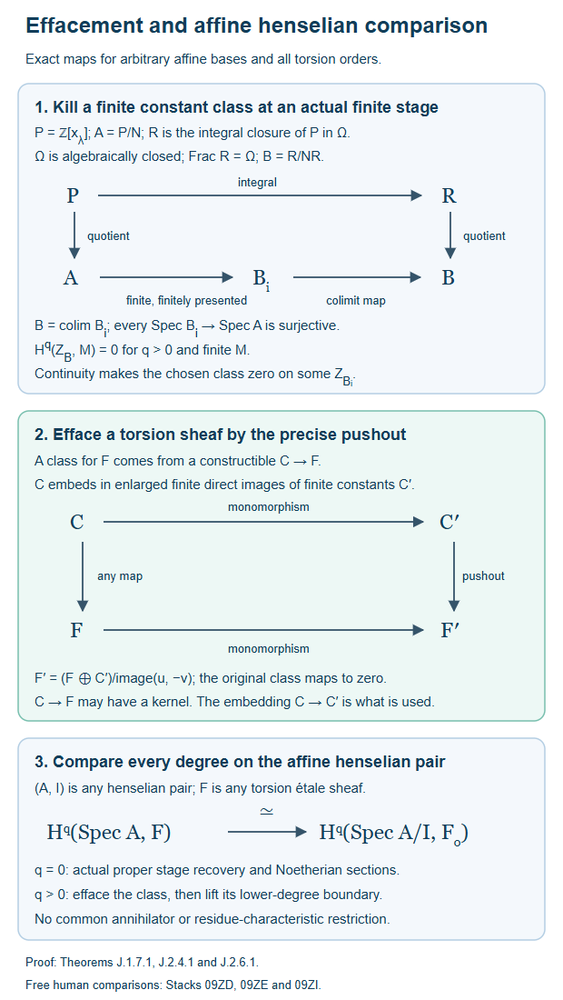
The first panel retains the actual integral cover, the finite-presentation models and the finite stage at which the chosen class becomes zero in Theorem J.1.7.1. The second panel shows the pushout of Theorem J.2.4.1, including the arbitrary representative map and the two monomorphisms that matter. The final panel displays the actual restriction isomorphism of Theorem J.2.6.1 in every degree, with all its coefficient and base-ring scope. Editable SVG source.

J.2.7. Pair henselization over an arbitrary ring
Lemma J.2.7.1. For any ring \(A\) and ideal \(I\), the filtered colimit \(A_I^h\) of finitely presented étale \(A\)-algebras \(C\) with specified closed quotient \(C/IC=A/I\) is a henselian pair along \(IA_I^h\), has quotient \(A/I\), and is initial among henselian pairs receiving \((A,I)\). No Noetherianity assertion is made here.
Proof. We give the parts of H.6.2.1 that need no Noetherian hypothesis. Tensor product gives a common target for two neighborhoods. For parallel maps \(f,g:C\to C'\), their differences on finite algebra generators generate a finite ideal \(K\subset IC'\). Formal unramifiedness makes the maps equal into \(C'/K^2\), since they agree into \(C'/K\) and \(K/K^2\) is square-zero. Thus \(K=K^2\). The determinant argument gives \(q\in1+K\) with \(qK=0\): express generators of \(K\) as a matrix with coefficients in \(K\) times those same generators, and use the determinant of one minus that matrix. Localizing \(C'\) at \(q\) keeps the closed quotient and equalizes the maps. This proves filteredness.
Write \(H=\varinjlim C\), \(J=IH\). Closed quotients commute with this colimit, so \(H/J=A/I\). Every \(1+jb\), \(j\in J\), \(b\in H\), becomes a unit by localizing its representative at a neighborhood stage; that localization still has closed quotient \(A/I\). Thus \(J\subset\operatorname{Jac}(H)\).
A finitely presented étale \(H\)-algebra with a chosen section modulo \(J\) descends, with its finite Jacobian data, to a neighborhood \(C\). In its residue algebra, H.1.1.1 isolates the chosen section by a principal localization; lift that localizing element. The localized algebra over \(C\) is itself an étale \(A\)-neighborhood with closed quotient \(A/I\). Its map into the colimit \(H\) supplies a section with the required residues.
This gives monic factorization lifting. In the coefficient scheme for two monic coprime residue factors \(g_0,h_0\), the derivative is \((u,v)\mapsto h_0u+g_0v\) in the degree bounds. It is an isomorphism over the residue ring: invert \(h_0\) modulo the monic \(g_0\) using the Bézout identity, solve for the unique bounded-degree \(u\), and divide \(w-h_0u\) by \(g_0\) to obtain the bounded-degree \(v\). Inverting this Jacobian defines an étale coefficient algebra; its lifted section gives the exact monic factors. Hence the pair is henselian.
Finally for a map \((A,I)\to(D,L)\) into any henselian pair, H.6.1.3 supplies the unique section of every \(C\otimes_AD\) with closed quotient \(D/L\). These sections are compatible and give the unique map \(H\to D\). This is the initial property. The index is a filtered category; the finite-diagram descent and continuity proofs used here and in B.1.1 require precisely finite common cones and eventual equalization, so apply to it with no change. All constructions remain valid for an arbitrary ideal \(I\). □
J.2.8. Restricting an injective to a closed affine scheme
Theorem J.2.8.1. Let \(X=\operatorname{Spec}A\), let \(Z=V(I)\) with arbitrary ideal \(I\), and let \(J\) be an injective sheaf of \(\mathbf F_\ell\)-modules on \(X_{\mathrm{et}}\), for any prime \(\ell\). Then
\[ H^q(Z,J|_Z)=0\qquad(q>0). \tag{J.2.8.1} \]
Proof. Let \(H=A_I^h\) from Lemma J.2.7.1. It is the colimit of the stated affine étale neighborhoods, and \(H/IH=A/I\). Theorem J.2.6.1 and continuity B.1.1 give canonical maps
\[ H^q(Z,J|_Z) =H^q(\operatorname{Spec}H,J|_H) =\varinjlim_C H^q(\operatorname{Spec}C,J|_C). \tag{J.2.8.2} \]
Restriction to an étale object preserves module injectives. Its left adjoint is étale extension by zero, whose geometric stalks are direct sums of module stalks and which is therefore exact. Hence each \(J|_C\) is injective as a module sheaf. Underlying abelian-sheaf cohomology is computed by such an injective module resolution: B.1.4 proves this by the free-module hypercover contraction, without asserting that a module injective is an abelian-sheaf injective. Every group on the right of (J.2.8.2) is therefore zero for \(q>0\), proving the theorem. □
J.2.9. The finite affine-cover bound for restricted injectives
Theorem J.2.9.1. Suppose \(X\) has affine diagonal and a cover by \(n+1\) affine opens. For a closed \(Z\subset X\) and an injective \(\mathbf F_\ell\)-module sheaf \(J\) on \(X_{\mathrm{et}}\),
\[ H^q(Z,J|_Z)=0\qquad(q>n). \tag{J.2.9.1} \]
Proof. The case \(n=0\) is Theorem J.2.8.1. For the step write \(X=U\cup V\), with \(U\) covered by \(n\) affines and \(V\) affine. Affineness of the diagonal makes each intersection of a covering affine with \(V\) affine, since it is the pullback of that diagonal into the product of the two affines. Thus \(U\cap V\) is covered by \(n\) affines. The restrictions of \(J\) to these opens are injective by the exact extension-by-zero argument in Theorem J.2.8.1.
Mayer–Vietoris for the two opens of \(Z\) gives
\[ H^{q-1}(Z\cap U\cap V,J) \longrightarrow H^q(Z,J) \longrightarrow H^q(Z\cap U,J)\oplus H^q(Z\cap V,J). \tag{J.2.9.2} \]
For \(q>n\), the left term vanishes by the bound \(q-1>n-1\) on the \(n\)-affine intersection, the first right term by the induction on \(U\), and the second by the affine case. Exactness proves the claimed vanishing. This is a bound for restricted injectives; it does not assert that inverse image of an injective under an arbitrary closed immersion is injective. □
Exercise J.2.10 (easy: the pushout does not require a constructible subobject). In an abelian sheaf category, let \(u:C\to F\) be arbitrary and \(v:C\to C'\) be a monomorphism. Show that \(F\to F\amalg_C C'\) is a monomorphism, even if \(u\) is zero or has a kernel. Explain how this permits Theorem J.2.4.1 to use constructible approximation by maps rather than inclusions.
Solution. On every geometric stalk the pushout is \((F\oplus C')/\operatorname{im}(u,-v)\). If \((f,0)\) belongs to that image, then \(f=u(c)\), \(v(c)=0\). Injectivity of \(v\) forces \(c=0\) and \(f=0\). Enough geometric points proves the sheaf monomorphism. The representative class comes from a constructible \(C\to F\), while \(C\to C'\) is the embedding constructed by finite effacement. The first map needs no injectivity; only the second supplies the pushout monomorphism. □
Exercise J.2.11 (medium: a non-Noetherian comparison with nonzero first cohomology). Set \(A=\prod_{m\ge1}\mathbf F_p[[t]]\), \(t=(t)_m\in A\), and \(I=tA\). Prove that \(A\) is not Noetherian, \((A,I)\) is henselian, and \(A/I=\prod_{m\ge1}\mathbf F_p\). Deduce torsion cohomological comparison in every degree. Show that the finite étale \(\mathbf F_p\)-torsor \(y^p-y=1\) gives a nonzero class in degree one on both schemes.
Solution. The ideal of finitely supported sequences is not finitely generated: a finite generating list is supported in one finite union of coordinates, and cannot generate the idempotent at an omitted coordinate. Thus \(A\) is not Noetherian. A tuple is a unit exactly when all its coordinates are units, so every \(1+tb\) is a unit, proving \(I\subset\operatorname{Jac}(A)\). A prescribed coprime monic factorization modulo \(I\) gives the same finite degree bounds in each coordinate. The complete Noetherian henselian ring \(\mathbf F_p[[t]]\) lifts it coordinate by coordinate; assemble the lifted coefficient tuples into the two monic polynomials over \(A\). Their product is the original polynomial, so \((A,I)\) is henselian. Coordinate reduction gives the stated quotient.
Theorem J.2.6.1 consequently applies to every torsion sheaf, with no fixed annihilator required. The displayed Artin–Schreier algebra is monic of degree \(p\) with derivative \(-1\), so is finite étale and is an \(\mathbf F_p\)-torsor by translations. It has no section over \(A/I\): composing a proposed solution with any coordinate projection would give \(c^p-c=1\) in \(\mathbf F_p\), which is impossible. It has no section over \(A\) either, by reduction. Thus its represented torsor class is nonzero on both sides of the canonical first-cohomology comparison. Comparison is an isomorphism, rather than a vanishing statement. □
The freely accessible comparison is Stacks 09ZI for the affine theorem and 09Z8 for the restricted-injective bound. The finite generic normalization in Theorem J.2.3.1 is confined to finite-type integer models where A.14.2 proves its finiteness; no normality or finite-normalization theorem over an arbitrary non-Noetherian base has been assumed.
Appendix K. Proper torsion base change over arbitrary schemes
For a proper map \(f:X\to Y\), any \(b:Y'\to Y\), \(X'=X\times_Y Y'\), and the projections \(a:X'\to X\), \(f':X'\to Y'\), we prove the canonical comparison
\[ b^{-1}R^qf_*F\xrightarrow{\sim}R^qf'_*a^{-1}F \qquad(q\ge0) \tag{K.0.1} \]
for every torsion abelian étale sheaf \(F\). The proper map need not be flat or finitely presented, the base need not be Noetherian, the base change is arbitrary, and torsion orders need not be invertible or share a common annihilator. The theorem is K.4.3.1; K.4.4.1 gives its bounded-below derived version, and K.4.6.1 proves all-degree proper comparison over every henselian pair.
The proof starts with finite torsors and restricted injectives on a projective line, then checks the actual canonical maps on strict-local fibres. A finite binary-form surjection and a split-injective criterion pass to projective space and the complete Noetherian Chow construction. Paired arithmetic models retain changing coefficient sheaves over arbitrary bases. A separate relative continuity proof handles proper sources without finite presentation.
Besides the proofs in Appendices A, B, I and J, the programme inputs are the complete proper-curve field comparison, Theorem 9.1; finite direct image and canonical finite base change, Theorem 4.1 and Corollary 4.2; constructible approximation, Theorem 5.1; Noetherian Chow's lemma, Theorem 4.1; proper-source and proper-model approximation, Lemmas A.4.1–A.4.2; and fpqc descent of finite morphisms, Theorem 2.1. K.2.4 supplies the finite normalization needed in the curve trace argument from A.14.1, keeping its field comparison independent of general proper base change.
K.1. Projective-line comparison over every henselian pair
The proper finite-torsor equivalence of Appendix I supplies the first degree for finite constant coefficients. The affine-cover bound of Appendix J leaves only that first degree when restricting an injective to a projective line. This gives all degrees for arbitrary torsion coefficients, without changing the actual restriction map.
K.1.1. First cohomology of finite constants
Lemma K.1.1.1. Let \((A,I)\) be any henselian pair, let \(T/A\) be proper, and put \(T_0=T\times_A A/I\). For every finite abelian group \(M\), restriction is an isomorphism
\[ H^1(T,\underline M)\xrightarrow{\sim} H^1(T_0,\underline M). \tag{K.1.1.1} \]
Neither finite presentation nor flatness of \(T/A\), nor invertibility of \(|M|\), is required.
Proof. The proved classification of first abelian étale cohomology identifies these groups with isomorphism classes of \(\underline M\)-torsors. A torsor under the finite constant group is a finite étale cover: locally it is the disjoint union of \(|M|\) copies, and finite étale descent gives the global cover. Conversely the finite étale torsor condition is exactly this local triviality. Corollary I.3.3.1 is therefore an equivalence of precisely the two categories classifying the groups in (K.1.1.1).
It remains to retain the group structure and the map. Addition of torsor classes is addition of their \(M\)-valued transition cocycles; equivalently it is the contracted product by addition \(M\times M\to M\). Restriction preserves the cocycles, their sums and their coboundaries, since inverse image preserves finite products and their sheaf quotients. The bijection supplied by that equivalence is thus the actual cohomological restriction, is additive and is an isomorphism of groups. This proves the statement in the full scope of Appendix I. □
K.1.2. The remaining degree for a restricted injective
Theorem K.1.2.1. Let \(X=\mathbf P^1_A\), \(X_0=\mathbf P^1_{A/I}\), for any henselian pair \((A,I)\). If \(J\) is an injective sheaf of \(\mathbf F_\ell\)-modules on \(X_{\mathrm{et}}\), where \(\ell\) is any prime, then
\[ H^q(X_0,J|_{X_0})=0\qquad(q>0). \tag{K.1.2.1} \]
Proof. The scheme \(X\) is separated, so its diagonal is a closed immersion and hence affine. Its two usual affine charts form a cover by two affines. Theorem J.2.9.1, with \(n=1\), proves (K.1.2.1) for \(q>1\).
Let \(\xi\in H^1(X_0,J|_{X_0})\). Constructible approximation and B.1.1 give a constructible sheaf \(C\), a map \(C\to J\), and a class \(\zeta\in H^1(X_0,C|_{X_0})\) whose image is \(\xi\). We may and do take \(C\) to be a constructible \(\mathbf F_\ell\)-module with a module-linear map. Indeed, if the approximation is first taken in abelian sheaves, replace \(C\) by \(C/\ell C\) and \(\zeta\) by its image. The map to \(J\) factors through this quotient, the quotient is constructible by the proved closure of constructible sheaves under cokernels, and every map between sheaves killed by \(\ell\) is \(\mathbf F_\ell\)-linear. This does not require \(C\to J\) to be injective.
The module version of Theorem J.2.3.1 gives an embedding
\[ C\lhook\joinrel\longrightarrow C' =\bigoplus_{l=1}^r(p_l)_*\underline M_l, \qquad p_l:T_l\longrightarrow X\ \text{finite of finite presentation}, \tag{K.1.2.2} \]
where the \(M_l\) are finite \(\mathbf F_\ell\)-modules. Injectivity of \(J\) extends \(C\to J\) across this embedding to a module map \(C'\to J\). Each \(T_l\) is proper over \(A\), being finite over the projective line. Exact finite pushforward, its canonical closed base change and its cohomology formula identify the image \(\zeta'\) of \(\zeta\) with a finite list
\[ \zeta'_l\in H^1((T_l)_0,\underline M_l). \tag{K.1.2.3} \]
Lemma K.1.1.1 lifts each \(\zeta'_l\) to \(H^1(T_l,\underline M_l)\). The finite-pushforward formula then identifies their sum with a class \(\eta\in H^1(X,C')\) whose restriction is exactly \(\zeta'\). The image of \(\eta\) in \(H^1(X,J)\) is zero: an injective module sheaf is acyclic for underlying abelian-sheaf cohomology by the scalar-forgetting argument of B.1.4. Naturality of finite pushforward, inverse image and coefficient maps therefore makes the image of \(\zeta'\) in \(H^1(X_0,J|_{X_0})\) zero. That image is \(\xi\). This proves the first degree as well.
The vanishing uses injectivity upstairs and the finite-torsor comparison. It does not assert that \(J|_{X_0}\) is an injective sheaf. □
K.1.3. Every torsion coefficient, in every degree
Theorem K.1.3.1 (projective-line henselian comparison). For every henselian pair \((A,I)\), every torsion abelian étale sheaf \(F\) on \(X=\mathbf P^1_A\), and \(X_0=\mathbf P^1_{A/I}\), the actual restriction is an isomorphism
\[ H^q(X,F)\xrightarrow{\sim}H^q(X_0,F|_{X_0}) \qquad(q\ge0). \tag{K.1.3.1} \]
The coefficient sheaf need not be constructible or have a common annihilator; the base need not be Noetherian or local, and torsion orders may equal residue characteristics.
Proof for a prime annihilator. Suppose \(\ell F=0\) and choose a \(\mathbf F_\ell\)-module injective resolution \(F\to J^\bullet\) on \(X\). It computes the underlying abelian-sheaf cohomology by B.1.4. Exact inverse image gives a resolution \(F|_{X_0}\to J^\bullet|_{X_0}\); Theorem K.1.2.1 makes all its terms acyclic for global sections on \(X_0\). An acyclic resolution computes derived global sections: apply the short exact sequences of its successive kernels and their long exact sequences, or the resolution spectral sequence, to obtain that identification in each degree.
Theorem J.2.5.1, applied to the proper scheme \(X/A\) and the individual terms \(J^r\), identifies the two section complexes term by term by their actual restriction:
\[ \Gamma(X,J^\bullet)\xrightarrow{\sim} \Gamma(X_0,J^\bullet|_{X_0}). \tag{K.1.3.2} \]
The cohomology map of (K.1.3.2) is (K.1.3.1), and proves its isomorphism in all degrees for sheaves killed by any prime, including a residue characteristic.
Proof for a finite annihilator. Induct on a positive integer \(n\) annihilating \(F\). The case \(n=1\) has \(F=0\). If \(n=\ell m\) with \(\ell\) prime, there is a short exact sequence
\[ 0\longrightarrow F[\ell]\longrightarrow F \longrightarrow F/F[\ell]\longrightarrow0. \tag{K.1.3.3} \]
Here \(\ell F[\ell]=0\), and \(m\) kills the quotient, because \(ms\in F[\ell]\) whenever \(ns=0\). These assertions can be checked on every geometric stalk and therefore hold for the sheaves. Inverse image preserves (K.1.3.3). Its two long exact cohomology sequences are related by actual restriction. The prime case and the induction hypothesis are isomorphisms in all degrees for the outside coefficient sheaves; the exact-sequence chase, or the five lemma on successive five-term segments, makes the map for \(F\) an isomorphism in each degree as well.
Proof without a common annihilator. The subsheaves \(F[n]=\ker(n:F\to F)\), indexed by positive integers under divisibility, form a filtered system with \(F=\varinjlim_n F[n]\). Torsion of the geometric stalks proves this identity: each germ is killed by some \(n\), and the inverse-image definition is local. Both \(X\) and \(X_0\) are qcqs. Continuity B.1.1 for a constant scheme system gives
\[ H^q(X,F)=\varinjlim_nH^q(X,F[n]),\qquad H^q(X_0,F|_{X_0}) =\varinjlim_nH^q(X_0,F[n]|_{X_0}). \tag{K.1.3.4} \]
Exact inverse image preserves the filtered colimit and these kernels. Taking the colimit of the already proved comparison maps for \(F[n]\) therefore proves (K.1.3.1). Every map used in all three steps was restriction, so the final isomorphism has the asserted canonical map. □
Exercise K.1.4 (medium: an order equal to the residue characteristic). Let \(A=\mathbf F_p[[t]]\), \(I=(t)\), and \(X=\mathbf P^1_A\). Pull back the Artin–Schreier torsor \(y^p-y=1\) from \(A\) to \(X\). Show that its class in \(H^1(X,\mathbf F_p)\), and its restricted class on \(\mathbf P^1_{\mathbf F_p}\), are nonzero. Explain why Theorem K.1.3.1 is a comparison theorem rather than a vanishing assertion for arbitrary sheaves.
Solution. The torsor is finite étale because its defining polynomial is monic and its derivative is \(-1\). It has no section over \(\mathbf F_p\): every element satisfies \(y^p-y=0\). It consequently has no section over \(A\), by reduction. The projective line has the section \((1:0)\), over both \(A\) and \(\mathbf F_p\). A section of either pulled-back torsor would restrict along this scheme section to a section of the original torsor, which is impossible. First cohomology classifies torsors and makes the trivial class exactly a torsor having a section. Both classes are nonzero. The comparison carries one to the other. Theorem K.1.2.1 concerns restricted injectives; it does not make this constant coefficient sheaf acyclic. □
Exercise K.1.5 (hard: unbounded torsion orders without an infinite resolution comparison). Put \(F=\bigoplus_{r\ge1}\underline{\mathbf Z/p^r\mathbf Z}\) on \(X=\mathbf P^1_A\), for an arbitrary henselian pair \((A,I)\). Prove that \(F\) has no common annihilator when \(X\ne\varnothing\), and prove its comparison using finite partial sums. Explain why no convergence claim for an unbounded complex is involved.
Solution. At any geometric point the \(r\)-th summand contains an element of order \(p^r\). No positive integer kills every such element. Write \(F=\varinjlim_s\bigoplus_{r=1}^s \underline{\mathbf Z/p^r\mathbf Z}\). This is a filtered colimit of constructible sheaves killed by \(p^s\). The finite-annihilator part of Theorem K.1.3.1 proves comparison for each partial sum, and B.1.1 commutes cohomology with their filtered colimit on the two qcqs projective lines. Inverse image preserves the sums and the colimit, so the resulting map is restriction for \(F\). These are colimits of sheaves and their fixed-degree cohomology groups. They do not form an unbounded total complex, so no such totalization or convergence is being invoked. □
K.2. Canonical base-change maps on strict-local fibres
K.2.1. Components of a proper scheme over a separably closed field
Lemma K.2.1.1. Let \(k'/k\) be an extension of separably closed fields and let \(T/k\) be proper. The map on connected components of \(T_{k'}\to T\) is bijective. For a finite abelian group \(M\), the resulting restriction
\[ \Gamma(T,\underline M)\xrightarrow{\sim} \Gamma(T_{k'},\underline M) \tag{K.2.1.1} \]
is an isomorphism.
Proof. The scheme \(T\) is Noetherian. Its connected components are the finitely many open-and-closed unions of its finitely many irreducible components. The empty scheme gives the assertion immediately, so consider one nonempty connected component \(T_a\).
The full proper-field connectedness argument in AG-QC, Zariski connectedness and Stein factorization, Lemma C.1, proves that \(T_a\) is geometrically connected: over a separably closed field there is no nontrivial finite separable field extension, so its finite-separable connectedness test is automatic. Here are the algebra and the actual extension map in that argument. Proper coherent finiteness makes \(D=\Gamma(T_a,\mathcal O_{T_a})\) a finite dimensional \(k\)-algebra. Its idempotents correspond exactly to clopen partitions of \(T_a\), so its Artinian decomposition has just one local factor. Its reduced quotient is a finite field extension \(L/k\), hence purely inseparable. Under every field extension \(K/k\), the finite affine-cover equalizer for functions gives \(\Gamma((T_a)_K,\mathcal O)=D\otimes_k K\): tensoring with a field is flat and preserves that equalizer.
The algebra \(L\otimes_k K\) has one prime after faithful extension to an algebraic closure of \(K\). Indeed every algebraic generator of \(L\) has a \(p\)-power in \(k\), and its equation has a unique root in that algebraic closure; in characteristic zero \(L=k\). It is nonzero, so these equations give exactly one prime. Thus it has no nontrivial idempotent over \(K\). The nilpotent kernel of \(D\otimes K\to L\otimes K\) neither creates nor destroys idempotents: reducing an idempotent gives one downstairs, and an idempotent in a nilpotent ideal must be zero. A reduced idempotent equal to one is similarly one. Consequently \((T_a)_K\) is nonempty and connected. This proves the connectedness test in the required case, with no perfection assumption.
The pullback of every original component is therefore one connected component, and their disjoint union covers \(T_{k'}\). This gives the bijective, naturally labelled component map. A section of the finite constant étale sheaf is a locally constant \(M\)-valued function on the underlying scheme: its representing cover is the disjoint union of the copies of \(T\) labelled by \(M\), and a section chooses its clopen pieces. It has one value on each of the finitely many components. Pullback carries each value to that same labelled component, which proves (K.2.1.1) for its actual map. □
K.2.2. Degree-zero field comparison for every torsion sheaf
Theorem K.2.2.1. Under the hypotheses of Lemma K.2.1.1, every torsion abelian étale sheaf \(F\) on \(T\) has the canonical isomorphism
\[ \Gamma(T,F)\xrightarrow{\sim}\Gamma(T_{k'},F|_{T_{k'}}). \tag{K.2.2.1} \]
Proof for constructible coefficients. Embed a constructible \(C\) into \(S=\bigoplus_l(p_l)_*\underline M_l\) by J.2.3.1. Each \(T_l\) is finite over \(T\), so proper over \(k\). Lemma K.2.1.1 and the canonical finite base-change formula give the isomorphism on sections for \(S\).
The field projection \(b:T_{k'}\to T\) is surjective, because the tensor product of the residue field of any point with \(k'\) is nonzero and has a prime. Inverse image \(b^{-1}\) is faithful on abelian sheaves: geometric points upstairs lift geometric points downstairs after a common extension of their fields, and their stalk maps recover every stalk of a morphism. In particular a section that pulls back to zero is zero.
Given a section \(c'\) of \(b^{-1}C\), its image in \(b^{-1}S\) is the pullback of a unique \(s\in\Gamma(T,S)\). Put \(Q=S/C\). The image of \(s\) in \(\Gamma(T,Q)\) pulls back to zero, since \(c'\) came from \(C\). Faithfulness makes that image zero. Left exactness of sections gives a unique \(c\in\Gamma(T,C)\) mapping to \(s\); its pullback equals \(c'\) by injectivity into \(b^{-1}S\). The same faithfulness proves injectivity on \(C\). This proves (K.2.2.1).
Proof for arbitrary torsion coefficients. Constructible approximation expresses \(F\) as a filtered colimit of constructible sheaves mapping to it. No inclusions are needed. Exact inverse image preserves that colimit, and degree-zero continuity B.1.1 commutes sections with it on both proper qcqs schemes. The colimit of the just-proved maps is exactly (K.2.2.1). □
K.2.3. Proper base change in degree zero
Theorem K.2.3.1. For a cartesian square
\[ \begin{array}{ccc} X'=X\times_Y Y'&\xrightarrow{a}&X\\ f'\downarrow&&\downarrow f\\ Y'&\xrightarrow{b}&Y \end{array} \]
with \(f\) proper, the canonical map
\[ b^{-1}f_*F\longrightarrow f'_*a^{-1}F \tag{K.2.3.1} \]
is an isomorphism for every torsion abelian étale sheaf \(F\). No finiteness or separability condition is imposed on \(b\).
Proof. Choose a geometric point \(\bar t:\operatorname{Spec}\Omega\to Y'\) and its image \(\bar s\) on \(Y\). Put \(A=\mathcal O^{sh}_{Y,\bar s}\), \(A'=\mathcal O^{sh}_{Y',\bar t}\). The selected pointed étale neighborhoods define a local map \(A\to A'\). For clarity, pull a pointed étale neighborhood of \(\bar s\) back to \(Y'\). Its specified residue point lifts uniquely over the strictly henselian local ring \(A'\), by H.6.1.3 and the étale field classification. These sections respect maps of neighborhoods and therefore give the map on their filtered colimits. Its residue map is \(k_s\to k_t\), where the fields are the separable closures of the two ordinary residue fields inside \(\Omega\). They are separably closed, and the map sends their chosen elements to their same images in \(\Omega\).
The strict-local sections formula of B.1.4 identifies the stalks in (K.2.3.1) with \(\Gamma(X_A,F|_{X_A})\) and \(\Gamma(X_{A'},F|_{X_{A'}})\). It identifies the stalk map with pullback along \(A\to A'\): at finite neighborhoods the map is the adjunction pullback of sections, and passing to their colimits preserves it.
Theorem J.2.5.1 for the two henselian local pairs identifies these section groups by actual restriction with \(\Gamma(X_{k_s},F|_{X_{k_s}})\) and \(\Gamma(X_{k_t},F|_{X_{k_t}})\). The square of these restrictions and the map \(A\to A'\) commutes, since its scheme maps compose to the same map to \(X\). The remaining map between the proper closed fibres is the isomorphism of Theorem K.2.2.1. Thus (K.2.3.1) is an isomorphism on the chosen stalk. Geometric points detect sheaf isomorphisms, proving the theorem. □
K.2.4. Projective-line base change over an arbitrary base
Theorem K.2.4.1. For every scheme \(S\), every \(b:S'\to S\), and every torsion abelian étale sheaf \(F\) on \(\mathbf P^1_S\), the canonical maps
\[ b^{-1}R^qf_*F\xrightarrow{\sim}R^qf'_*a^{-1}F, \qquad f:\mathbf P^1_S\to S,\quad f':\mathbf P^1_{S'}\to S', \tag{K.2.4.1} \]
are isomorphisms for all \(q\ge0\).
Proof. Use the geometric point and compatible strict-local rings \(A\to A'\) of the preceding proof. B.1.4 identifies the stalk of the canonical map with
\[ H^q(\mathbf P^1_A,F|_{\mathbf P^1_A}) \longrightarrow H^q(\mathbf P^1_{A'},F|_{\mathbf P^1_{A'}}). \tag{K.2.4.2} \]
Theorem K.1.3.1 compares both groups with their closed-fibre groups by their actual restrictions. The resulting square commutes by functoriality of inverse image. Its bottom map is
\[ H^q(\mathbf P^1_{k_s},F|_{\mathbf P^1_{k_s}}) \longrightarrow H^q(\mathbf P^1_{k_t},F|_{\mathbf P^1_{k_t}}). \tag{K.2.4.3} \]
The complete proper-curve field-extension proof in Torsion sheaves on curves, Theorem 9.1, proves that map to be an isomorphism for every torsion sheaf and every extension of separably closed fields. Its prime-to- characteristic part uses the actual Kummer and Jacobian extension maps, also proved in B.2. Its residue-characteristic part is the Artin–Schreier calculation on proper curves in that lesson, Lemma 3.1 and Proposition 3.2; its §§5–8 preserve those canonical maps through finite normalization, finite pushforward, the Sylow trace retraction, coefficient filtrations and filtered colimits. Purely inseparable algebraic closure changes are handled in §9 by the explicitly proved topological invariance of the étale topos. Thus the field-extension input imposes no invertibility or perfectness assumption.
The finite completion in that Sylow argument can be supplied directly by the proved normalization A.14.1, so no general separated-scheme Zariski Main Theorem is needed as an unproved input here. At the algebraically closed field stage, take the reduced irreducible curve component on which the chosen smooth open \(U\) lies, and normalize it in the function field of the connected finite étale Sylow cover \(V/U\). A.14.1 makes this normalization finite on every affine chart, and localization glues those charts. Over \(U\) it is exactly \(V\): the smooth curve is normal, its finite étale cover is normal by the proved Noetherian étale normality, and the finite-normalization identification A.3 gives equality with that normalization. The resulting finite scheme over the original proper curve is proper and has \(V\) as its whole inverse image of \(U\). This is the precise finite completion required in the trace and extension-by-zero proof. It also preserves every canonical field-extension map used there.
The two vertical maps are isomorphisms by Theorem K.1.3.1, and the bottom map by this proper-curve theorem. The top map (K.2.4.2) is therefore an isomorphism for its actual pullback. This proves (K.2.4.1) on every geometric stalk, hence on sheaves. □
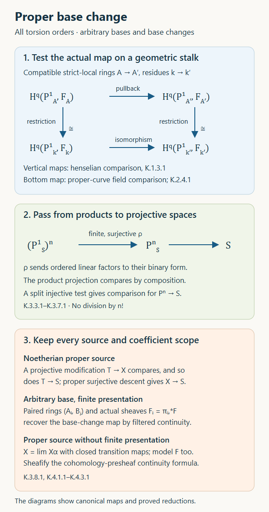
The first panel retains the compatible strict-local ring map and the commutative cohomology square of Theorem K.2.4.1. Its vertical maps are the actual restriction isomorphisms of K.1.3.1; the bottom map is the proved proper-curve field comparison. The remaining panels show the finite binary-form map K.3.6.1, the split-injective descent K.3.4.1 and the distinct coefficient and source limits K.4.1.1–K.4.3.1. No finite-presentation hypothesis on the final proper morphism is discarded. Editable SVG source.

K.3. The proper reductions and the binary-form map
Say that a proper map \(f:X\to Y\) has torsion base change if the canonical map \(b^{-1}R^qf_*F\to R^qf'_*a^{-1}F\) is an isomorphism in every degree, for every base change \(b\) and every torsion abelian sheaf \(F\) on its source.
K.3.1. Filtered coefficients for relative cohomology
Lemma K.3.1.1. For a qcqs morphism \(f:X\to Y\), the functors \(R^qf_*\) on abelian étale sheaves commute with filtered colimits.
Proof. On the affine étale basis \(V\to Y\), higher direct image is the sheafification of the presheaf
\[ V\longmapsto H^q(X\times_YV,F|_{X\times_YV}). \tag{K.3.1.1} \]
This is the cohomology-presheaf construction proved in B.1.4. The inverse-image scheme is qcqs, because \(f\) is qcqs and \(V\) is affine. Inverse image preserves filtered colimits, and B.1.1 on that fixed scheme commutes its \(H^q\) with them. Sheafification, being a left adjoint, commutes with colimits. Sheafifying these objectwise equalities proves the lemma, with its natural coefficient maps. The same proof applies to every base change of a proper map. □
K.3.2. A criterion using prime-coefficient injectives
Theorem K.3.2.1. A proper map \(f:X\to Y\) has torsion base change if and only if, for every prime \(\ell\), every injective \(\mathbf F_\ell\)-module sheaf \(J\) on \(X_{\mathrm{et}}\), and every base change square as in Theorem K.2.3.1,
\[ R^qf'_*a^{-1}J=0\qquad(q>0). \tag{K.3.2.1} \]
Proof. A module injective \(J\) is \(f_*\)-acyclic for underlying abelian-sheaf higher direct images. In (K.3.1.1), restriction to \(X\times_YV\to X\) is restriction to an étale object, which preserves module injectives by exact étale extension by zero. B.1.4 makes its positive global cohomology zero. Sheafification gives \(R^qf_*J=0\) for \(q>0\). Thus torsion base change immediately implies (K.3.2.1).
Conversely assume (K.3.2.1). For a sheaf \(F\) killed by \(\ell\), choose a module injective resolution \(F\to J^\bullet\). It is a resolution by \(f_*\)-acyclic terms, and its exact pullback is a resolution by \(f'_*\)-acyclic terms by the assumption. The two sectionwise higher direct images are therefore computed by \(f_*J^\bullet\) and \(f'_*a^{-1}J^\bullet\). The degree-zero theorem40.3.1 identifies these complexes termwise after applying the exact \(b^{-1}\). Its map is the termwise adjunction base-change map, so its cohomology map is exactly the canonical higher base-change map. It is an isomorphism in every degree for \(F\).
For a sheaf killed by \(n=\ell m\), use \(0\to F[\ell]\to F\to F/F[\ell]\to0\). The quotient is killed by \(m\). Induction on \(n\), the exact inverse-image functors and the natural long exact higher-direct-image sequences prove comparison in every degree for every finite annihilator. Finally \(F=\varinjlim_{n\mid n'}F[n]\) for a torsion sheaf. Lemma K.3.1.1 and preservation of filtered colimits by inverse image take the proved finite-annihilator maps to the map for \(F\). This proves the full criterion. □
K.3.3. Composition
Lemma K.3.3.1. If proper maps \(u:X\to Y\) and \(v:Y\to Z\) have torsion base change, then \(vu\) has torsion base change.
Proof. Fix a prime \(\ell\) and a module injective \(J\) on \(X\). The sheaf \(u_*J\) is a module injective on \(Y\): its right-adjoint Hom functor is Hom into \(J\) after the exact \(u^{-1}\). For any base change \(c:Z'\to Z\), write \(a:X'\to X\), \(b:Y'\to Y\) and \(u':X'\to Y'\), \(v':Y'\to Z'\). Base change for \(u\) gives
\[ R^qu'_*a^{-1}J=0\ (q>0),\qquad u'_*a^{-1}J=b^{-1}u_*J. \tag{K.3.3.1} \]
Base change for \(v\), applied to the injective \(u_*J\), gives \(R^pv'_*b^{-1}u_*J=0\) for \(p>0\). The Leray spectral sequence \(R^pv'_*R^qu'_*a^{-1}J\Rightarrow R^{p+q}(v'u')_*a^{-1}J\) has only its \(p=q=0\) term. Hence the composite has the vanishing (K.3.2.1) for every \(\ell,J,c\). Theorem K.3.2.1 proves its torsion base change. □
K.3.4. Descending comparison through a proper surjection
Lemma K.3.4.1. Suppose \(u:X\to Y\) and \(v:Y\to Z\) are proper, \(u\) is surjective, and both \(u\) and \(vu\) have torsion base change. Then \(v\) has torsion base change.
Proof. Let \(I\) be a module injective over \(\mathbf F_\ell\) on \(Y\). Embed \(u^{-1}I\) into a module injective \(J\) on \(X\). Adjunction gives a monomorphism \(I\to u_*J\). To check injectivity, pull its kernel back by \(u^{-1}\): composing the pulled map with the counit to \(J\) is the chosen embedding \(u^{-1}I\to J\), so that kernel pulls back to zero. Surjectivity of \(u\) makes inverse image faithful on geometric stalks; hence the kernel is zero. Injectivity of \(I\) splits the embedding, so \(I\) is a direct summand of \(u_*J\).
Use any base change \(Z'\to Z\) and the notation of Lemma K.3.3.1. Torsion base change for \(u\) gives (K.3.3.1); that for \(vu\) gives \(R^r(v'u')_*a^{-1}J=0\) for \(r>0\). The same Leray spectral sequence then has only its \(q=0\) row and identifies
\[ R^pv'_*b^{-1}u_*J=0\qquad(p>0). \tag{K.3.4.1} \]
The split inclusion remains split under exact \(b^{-1}\). Higher direct images are additive and preserve the split maps, so (K.3.4.1) also holds with \(u_*J\) replaced by its summand \(I\). Theorem K.3.2.1 proves the result. The splitting is an auxiliary acyclicity test; the criterion still proves the canonical base-change map for arbitrary coefficients. □
K.3.5. Finite maps and restriction on the target
Lemma K.3.5.1. Finite morphisms have torsion base change. For proper morphisms, torsion base change can be checked on an open affine covering of the target.
Proof. The proved finite-pushforward theorem is exact for all abelian sheaves and has its actual finite-product stalk base-change formula. All positive direct images vanish, and the zero-degree map is the finite base-change isomorphism. This proves the first assertion without a torsion restriction.
For the second, the cohomology presheaf (K.3.1.1), restricted to an open of \(Y\), is the same presheaf for the restricted morphism. Its sheafification is therefore the restriction of \(R^qf_*F\). The same observation holds on the inverse-image opens of any \(Y'\). The base-change maps are the same adjunction maps on that cover; being an isomorphism is local. This proves the assertion. □
K.3.6. The finite map from ordered linear factors
Theorem K.3.6.1. For every scheme \(S\) and integer \(n\ge1\), the coefficient map
\[ \rho:(\mathbf P^1_S)^n\longrightarrow\mathbf P^n_S,\qquad \prod_{i=1}^n(x_iX+y_iY)=\sum_{j=0}^n c_jX^{n-j}Y^j \tag{K.3.6.1} \]
is finite and surjective. Its definition and proof require no invertibility of \(n!\).
Proof of the morphism and surjectivity. The \(c_j\) are global sections of \(\mathcal O(1,\ldots,1)\). They generate this line bundle: over a geometric point, a product of \(n\) nonzero linear forms is a nonzero polynomial, so at least one coefficient is nonzero. The stalkwise surjectivity of their map from a finite free sheaf proves generation and defines (K.3.6.1). Over an algebraically closed field, every nonzero homogeneous binary form of degree \(n\) factors into \(n\) linear forms, including a possible factor \(Y\) for its root at infinity. Ordering those factors gives a geometric preimage. Thus \(\rho\) is surjective.
Proof on the leading-coefficient chart. Work over affine \(S=\operatorname{Spec}R\). The inverse image of \(c_0\ne0\) has every \(x_i\ne0\), and is exactly \((\mathbf A^1_R)^n\) with \(z_i=y_i/x_i\). The target chart has coordinates \(a_j=c_j/c_0\), and its map is \(a_j=e_j(z_1,\ldots,z_n)\), the elementary symmetric polynomial. The source algebra is finite over the target algebra: each \(z_i\) satisfies the monic equation
\[ z_i^n-a_1z_i^{n-1}+a_2z_i^{n-2}-\cdots+(-1)^na_n=0. \tag{K.3.6.2} \]
Indeed this polynomial is \(\prod_i(T-z_i)\). Since the finitely many \(z_i\) generate the source as an algebra, the monomials with each exponent less than \(n\) span it as a module over the target. Equivalently its exact presentation is \(R[a_1,\ldots,a_n,z_1,\ldots,z_n]/(e_j(z)-a_j)_j\). This proves finiteness on this chart over any \(R\).
Proof covering every binary form. Let \(P=\mathbf P^n_S\) and let \(U\subset P\times_S\mathbf A^1_S\) be the open where the tautological binary form satisfies \(F(1,t)\ne0\). The evaluation is a section of the pulled \(\mathcal O_P(1)\); its nonvanishing trivializes that line bundle. The projection \(U\to P\) is smooth, surjective and quasi-compact. Smoothness comes from an open in the affine-line projection. Every geometric nonzero form has a nonzero polynomial \(F(1,t)\); over the infinite algebraically closed residue field some \(t\) has nonzero value, which proves surjectivity. On each standard projective chart its inverse image is a principal open in an affine line, proving quasi-compactness. Thus it is an fpqc covering.
Over \(U\), change variables \((X,Y)=(X',tX'+Y')\). The determinant is one. The transformed form has leading coefficient \(F(1,t)\), a unit in the just-chosen trivialization; normalize that coefficient to one. The same variable change replaces each ordered factor by \((x_i+ty_i)X'+y_iY'\). Hence the base change of \(\rho\) to \(U\) is exactly a base change of the leading-chart finite map already proved, after these compatible coordinate changes.
Finiteness descends under this fpqc covering by the proved Descending properties of schemes and morphisms, Theorem 2.1. Its finite-map proof descends affineness by algebra descent and then finite generation of the coordinate module by faithful flatness; it needs no Noetherian assumption. This proves finiteness of \(\rho\), and completes the theorem. □
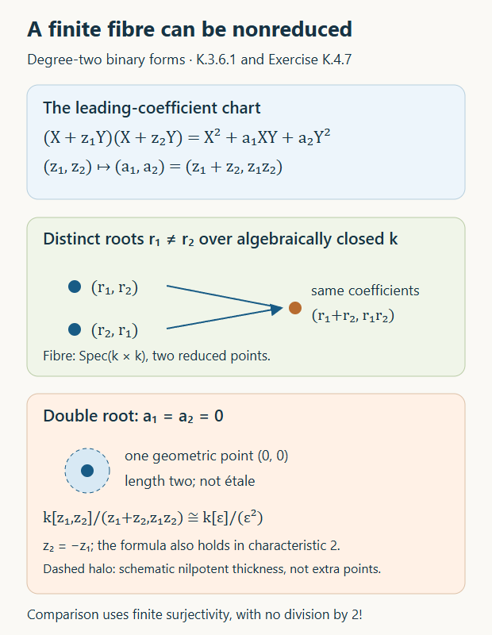
On the chart of Theorem K.3.6.1, the degree-two coefficient map sends \((z_1,z_2)\) to \((z_1+z_2,z_1z_2)\). Over an algebraically closed field two distinct roots give two ordered reduced points. At \((a_1,a_2)=(0,0)\), the entire fibre is \(\operatorname{Spec}k[\varepsilon]/(\varepsilon^2)\), with one geometric point and length two in every characteristic; Exercise K.4.7 proves the displayed algebra. The dashed halo denotes schematic nilpotent thickness, not extra geometric points. Editable SVG source.

K.3.7. Projective spaces and closed projective subschemes
Theorem K.3.7.1. Every projection \(\mathbf P^n_S\to S\), and every composite of a closed immersion into \(\mathbf P^n_S\) with that projection, has torsion base change.
Proof. The case \(n=0\) is the identity. Each projection deleting one factor of \((\mathbf P^1_S)^n\) is a projective-line projection over its actual base, so has torsion base change by Theorem K.2.4.1. Composition, Lemma K.3.3.1, proves it for their product projection. The finite surjection \(\rho\) of Theorem K.3.6.1 has torsion base change by Lemma K.3.5.1. Lemma K.3.4.1, with this \(\rho\) and its composite product projection, now proves it for \(\mathbf P^n_S\to S\). A closed immersion is finite; applying composition once more gives the last assertion. □
K.3.8. Proper morphisms over a Noetherian base
Theorem K.3.8.1. Every proper morphism over a locally Noetherian base has torsion base change under every base change.
Proof. By Lemma K.3.5.1 restrict to an affine Noetherian base \(S\). The complete Noetherian Chow theorem, Projective morphisms and Chow's lemma, Theorem 4.1, gives a proper surjection \(\pi:T\to X\) and an immersion \(T\to\mathbf P^N_S\). The source \(T\) is proper over \(S\), since \(X\) is. A map from a proper \(S\)-scheme to a separated \(S\)-scheme is proper: factor it through its closed graph and the projection, which is a base change of the proper source map. Its immersion into projective space is therefore proper and has closed image. An immersion with closed image is a closed immersion (restrict its closed presentation on an ambient open and extend the defining ideal by the whole structure sheaf off the image). Hence \(T/S\) has the factorization of Theorem K.3.7.1.
The map \(\pi\) has the same kind of factorization over \(X\). Its graph \(T\to T\times_S X\) is closed because \(X/S\) is separated, and \(T\times_S X\hookrightarrow\mathbf P^N_X\) is the base change of the closed projective embedding. Their composite is a closed immersion whose projection to \(X\) is \(\pi\). Thus both \(\pi\) and \(T\to S\) have torsion base change by Theorem K.3.7.1. Their proper surjective comparison Lemma K.3.4.1 proves it for \(X\to S\). Every step tests all source coefficient sheaves, not just sheaves descended from \(S\). The result allows arbitrary \(S'\to S\); the new base need not be Noetherian. □
K.4. Changing coefficients, non-finite presentation and proper comparison
K.4.1. Paired arithmetic models for a proper finitely presented map
Theorem K.4.1.1. A proper finitely presented morphism over any scheme has torsion base change.
Proof for prime coefficients. Work on an affine target \(S=\operatorname{Spec}A\), by Lemma K.3.5.1. To check the map on a new base it suffices to restrict to an arbitrary affine open \(S'=\operatorname{Spec}B\); restriction to opens commutes with higher direct images by that same lemma. Write \(g:A\to B\) for its ring map. Let \(F\) be a sheaf of \(\mathbf F_\ell\)-modules on \(X\).
The proved proper-model construction, AG-QC Lemma A.4.2, descends \(X/A\) to a proper finitely presented \(X_*/A_*\), where \(A_*\) is a finitely generated integer subring of \(A\). The lemma uses the complete Noetherian Chow construction and finite chart and closed-immersion data; it requires no general-base Chow theorem. Let \(A_i\) run through the finitely generated integer subrings of \(A\) containing \(A_*\). Put \(X_i=X_*\times_{A_*}A_i\), \(S_i=\operatorname{Spec}A_i\), and let \(\pi_i:X\to X_i\). Each \(X_i/S_i\) is proper over a Noetherian base, their transition squares are cartesian, and \(X=\varprojlim_iX_i\). Put
\[ F_i=\pi_{i,*}F,\qquad F=\varinjlim_i\pi_i^{-1}F_i. \tag{K.4.1.1} \]
The second identity is the actual stage-recovery statement B.1.4. The first sheaves are still killed by \(\ell\); it is for this reason that we are treating prime coefficients before arbitrary torsion. Direct image of an arbitrary torsion sheaf need not have torsion sections when the orders are unbounded.
Index simultaneously by pairs \((i,j)\), where \(B_j\subset B\) is a finitely generated integer subring containing \(g(A_i)\). The inclusions give a filtered category: enlarge two rings to contain their finite sets of generators and the image of the enlarged \(A_i\). These pairs are cofinal in the \(A_i\) index, and their \(B_j\)'s exhaust \(B\). Define
\[ X'_{ij}=X_i\times_{A_i}B_j,\qquad F'_{ij}=a_{ij}^{-1}F_i,\qquad a_{ij}:X'_{ij}\to X_i. \tag{K.4.1.2} \]
This is a cartesian source family over the \(B_j\)'s: all its schemes are \(X_*\times_{A_*}B_j\). Its limit is \(X'=X\times_AB\), and exact inverse image of (K.4.1.1) identifies the limiting sheaf with \(a^{-1}F\). All sheaves and transition coefficient maps are the actual ones in these equations.
The Noetherian theorem41.8.1 gives the canonical isomorphism at each pair
\[ g_{ij}^{-1}R^q(f_i)_*F_i \xrightarrow{\sim} R^q(f'_{ij})_*F'_{ij}. \tag{K.4.1.3} \]
Apply the relative varying-coefficient continuity of B.1.4 to the two cartesian families, and pull their maps to \(S'\). On the right its filtered colimit is \(R^qf'_*a^{-1}F\). On the left it is \(b^{-1}R^qf_*F\): continuity on the \(A_i\) family and exact inverse image give that identity, and cofinality of the pairs does not change the colimit. The adjunction maps defining (K.4.1.3) commute with these projections and coefficient maps. Consequently their colimit is precisely the canonical base-change map for \(f,F,b\), and is an isomorphism.
This argument does not infer comparison for arbitrary changed source coefficients merely from comparison of one pulled-back model coefficient. It models every sheaf \(F\) by its varying direct images (K.4.1.1), and models the actual pullback by (K.4.1.2).
Proof for all torsion coefficients. For a finite annihilator use the prime filtration \(0\to F[\ell]\to F\to F/F[\ell]\to0\), induction on the annihilator and the natural long exact sequences, as in Theorem K.3.2.1. For general torsion use \(F=\varinjlim_{n\mid n'}F[n]\), exact inverse image and Lemma K.3.1.1. The resulting map remains the canonical comparison. This proves the theorem. □
K.4.2. Relative continuity for a changing proper source
Lemma K.4.2.1. Let \(S\) be affine, let \(X=\varprojlim_\alpha X_\alpha\) be a system of proper qcqs \(S\)-schemes with affine transition maps, and let \(F=\varinjlim_\alpha\pi_\alpha^{-1}F_\alpha\), with compatible abelian coefficient maps. Then
\[ R^qf_*F =\varinjlim_\alpha R^q(f_\alpha)_*F_\alpha \qquad(q\ge0) \tag{K.4.2.1} \]
canonically as sheaves on \(S_{\mathrm{et}}\). The transition squares over the fixed base \(S\) need not be cartesian.
Proof. For every affine étale \(V\to S\), the schemes \(X_{\alpha,V}\) are qcqs, their transition maps are affine, and their limit is \(X_V\). Pullback of the coefficient colimit to this limit is the corresponding colimit. B.1.1 therefore gives the canonical equality
\[ H^q(X_V,F|_{X_V}) =\varinjlim_\alpha H^q(X_{\alpha,V},F_\alpha|_{X_{\alpha,V}}). \tag{K.4.2.2} \]
The maps in (K.4.2.2) commute with restriction between basis objects \(V\), since continuity was proved with actual coefficient and pullback maps. Sheafify these cohomology presheaves, as in (K.3.1.1). Sheafification preserves their colimit, and gives exactly (K.4.2.1).
This proves the asserted relative statement directly from absolute continuity. The cartesian-family relative theorem B.1.4 is not being applied to a noncartesian family. The proof also works after an arbitrary base change of \(S\), locally on its affine opens. □
K.4.3. Proper base change without finite presentation
Theorem K.4.3.1 (proper base change). Let \(f:X\to Y\) be proper, let \(b:Y'\to Y\) be any morphism, and write \(X'=X\times_Y Y'\), \(a:X'\to X\) and \(f':X'\to Y'\). For every torsion abelian étale sheaf \(F\) on \(X\), the canonical map
\[ b^{-1}R^qf_*F\xrightarrow{\sim}R^qf'_*a^{-1}F \qquad(q\ge0) \tag{K.4.3.1} \]
is an isomorphism. There is no Noetherian, flatness, finite-presentation or invertible-order hypothesis.
Proof for a prime annihilator. By Lemma K.3.5.1 and restriction to affine opens of \(Y'\), work with affine \(Y\) and \(Y'\). The complete proper-source approximation AG-QC Lemma A.4.1 gives \(X=\varprojlim_\alpha X_\alpha\), where every \(X_\alpha/Y\) is proper and finitely presented and the transition maps are closed immersions. Put \(F_\alpha=\pi_{\alpha,*}F\). When \(\ell F=0\), all \(F_\alpha\) are killed by \(\ell\), and B.1.4 gives \(F=\varinjlim_\alpha\pi_\alpha^{-1}F_\alpha\).
Lemma K.4.2.1 computes the left higher direct image as the colimit of \(R^q(f_\alpha)_*F_\alpha\). After base change the systems \(X'_\alpha\) still have closed transition maps and limit \(X'\). Exact inverse image of the coefficient recovery gives \(a^{-1}F=\varinjlim_\alpha(\pi'_\alpha)^{-1}a_\alpha^{-1}F_\alpha\). That same lemma computes the right side of (K.4.3.1) as the colimit of \(R^q(f'_\alpha)_*a_\alpha^{-1}F_\alpha\).
Theorem K.4.1.1 gives a canonical isomorphism between the two terms at every \(\alpha\). Inverse image \(b^{-1}\) preserves colimits. These termwise maps commute with the actual coefficient transition maps; their colimit is (K.4.3.1), by its adjunction definition. It is therefore an isomorphism. The relative continuity required here is Lemma K.4.2.1 for changing sources over one fixed base, so it imposes no cartesian-transition condition.
Proof for arbitrary torsion. The finite-annihilator prime filtration and long exact sequences first give the result for \(nF=0\). Then apply Lemma K.3.1.1 on the two proper maps to the filtered system \(F[n]\), and use exact inverse image. Its colimit is the canonical comparison for \(F\). This completes the proof in the full stated scope. □
K.4.4. The bounded-below derived comparison
Theorem K.4.4.1. In the square of Theorem K.4.3.1, if \(E\in D^+(X_{\mathrm{et}})\) has torsion cohomology sheaves, the canonical map
\[ b^{-1}Rf_*E\xrightarrow{\sim}Rf'_*a^{-1}E \tag{K.4.4.1} \]
is an isomorphism.
Proof. Choose a lower cohomology bound \(N\) for \(E\). The natural hypercohomology spectral sequences on the two sides have terms \(b^{-1}R^pf_*H^r(E)\) and \(R^pf'_*a^{-1}H^r(E)\). Exact inverse image commutes with the cohomology sheaves and gives a comparison of these spectral sequences induced by (K.4.4.1). Theorem K.4.3.1 makes every map on the \(E_2\) pages an isomorphism.
For a fixed total degree \(d\), only \(p\ge0\), \(r\ge N\), \(p+r=d\) occur, giving at most \(d-N+1\) terms, or none if \(d<N\). The shifted first-quadrant spectral sequences converge to the two degree-\(d\) cohomology sheaves with finite filtrations. Induction through their finite filtration short exact sequences makes the map on those sheaves an isomorphism. This works for every \(d\), so the derived map is an isomorphism. This proves precisely the bounded-below torsion statement; no unbounded or rational-adic conclusion is being inferred. □
K.4.5. Restricting injectives on proper schemes
Theorem K.4.5.1. Let \(X/\operatorname{Spec}A\) be proper, let \(I\subset A\) be any ideal, and put \(X_0=X\times_A A/I\). For any prime \(\ell\) and any injective \(\mathbf F_\ell\)-module sheaf \(J\) on \(X_{\mathrm{et}}\),
\[ H^q(X_0,J|_{X_0})=0\qquad(q>0). \tag{K.4.5.1} \]
Here the pair \((A,I)\) need not be henselian.
Proof. Write \(f:X\to S=\operatorname{Spec}A\) and \(i:S_0=\operatorname{Spec}(A/I)\to S\). By the module injective argument in Theorem K.3.2.1, \(R^qf_*J=0\) for \(q>0\), and \(f_*J\) is a module injective because it is right adjoint to the exact \(f^{-1}\). The proper base change just proved gives
\[ R^q(f_0)_*(J|_{X_0})=0\ (q>0),\qquad (f_0)_*(J|_{X_0})=i^{-1}f_*J. \tag{K.4.5.2} \]
The affine restricted-injective theorem J.2.8.1 applies to the arbitrary closed affine \(S_0\subset S\) and the module injective \(f_*J\); it gives \(H^p(S_0,i^{-1}f_*J)=0\) for \(p>0\). The Leray spectral sequence for \(f_0\), using (K.4.5.2), has only its degree-zero row and consequently identifies \(H^q(X_0,J|_{X_0})\) with that vanishing group. This proves (K.4.5.1). The theorem asserts acyclicity of a restriction; it does not assert its injectivity. □
K.4.6. Proper comparison over every henselian pair
Theorem K.4.6.1 (proper henselian comparison). For every henselian pair \((A,I)\), every proper \(X/A\), and every torsion abelian étale sheaf \(F\) on \(X\), actual restriction is an isomorphism
\[ H^q(X,F)\xrightarrow{\sim}H^q(X\times_A A/I,F|_{X\times_A A/I}) \qquad(q\ge0). \tag{K.4.6.1} \]
The proper scheme need not be flat or finitely presented, the base need not be Noetherian or local, and the torsion orders have no common-annihilator or residue-characteristic restriction.
Proof. For \(\ell F=0\), take a module injective resolution \(F\to J^\bullet\). B.1.4 computes the underlying abelian cohomology by this resolution. Theorem K.4.5.1 makes its exact restriction a globally acyclic resolution on \(X_0\). The degree-zero proper comparison J.2.5.1 identifies the two section complexes termwise by actual restriction. Their cohomology comparison is therefore (K.4.6.1) and is an isomorphism in every degree.
The prime filtration of (K.1.3.3) gives the result for every finite annihilator by induction and natural long exact sequences. Both proper schemes are qcqs. Continuity B.1.1 and exact inverse image then take the comparisons for \(F[n]\) to their filtered colimit \(F\), with the actual restriction as the limiting map. This proves the full theorem. □
Exercise K.4.7 (medium: a finite map may have a nonreduced fibre). For \(n=2\) in Theorem K.3.6.1, on the leading chart calculate the fibre above \(a_1=a_2=0\) over any field \(k\). Determine its length and reduced scheme, including in characteristic two. Explain why a torsion proof cannot replace \(\rho\) by an étale cover or divide by \(2!\).
Solution. Its algebra is \(k[z_1,z_2]/(z_1+z_2,z_1z_2)\). Eliminating \(z_2=-z_1\) gives \(k[z_1]/(z_1^2)\), also in characteristic two, where the negative sign equals the positive sign. The basis \(1,z_1\) gives length two, and its reduction is the single point. It is nonreduced and therefore not étale over a field. In characteristic two \(2!=0\) is not invertible. The proof uses a finite proper surjection and the injective summand criterion41.4.1, which never divides by the covering degree. Thus it still applies to \(\mathbf F_2\)-coefficients. □
Exercise K.4.8 (hard: a proper map which is not finitely presented). Let \(A=\prod_{m\ge1}\mathbf F_2\) and let \(K\subset A\) be the ideal of sequences with finite support. Prove that \(\operatorname{Spec}(A/K)\to\operatorname{Spec}A\) is proper and not finitely presented. Apply Theorem K.4.3.1 to arbitrary torsion coefficients and arbitrary base change. Identify the finite source approximations used in its proof.
Solution. The quotient is generated as an \(A\)-module by one, so its scheme map is finite and hence proper. Every finite set of elements of \(K\) has support in one finite set of coordinates. The ideal it generates has support in that same set, and misses every coordinate idempotent outside it. Thus \(K\) is not finitely generated. A quotient \(A/K\) is a finitely presented \(A\)-algebra exactly when \(K\) is finitely generated: one implication uses the quotient presentation, and the other substitutes the images of any finite list of algebra generators into their finitely many defining relations. Hence this map is not finitely presented.
Theorem K.4.3.1 nevertheless gives its canonical comparison for every torsion sheaf and every base change. Explicitly, let \(K_E\) be generated by the coordinate idempotents in a finite subset \(E\) of the positive integers. Then \(K=\varinjlim_EK_E\), \(A/K=\varinjlim_EA/K_E\), and \(\operatorname{Spec}(A/K)= \varprojlim_E\operatorname{Spec}(A/K_E)\). These finite, finitely presented closed approximations have closed transition maps. They are the changing-source system of Lemma K.4.2.1. In this example the finite-map stalk formula already proves comparison directly, and agrees with the general theorem's canonical map. □
The freely accessible comparison is Stacks, the proper base-change theorem and its reductions. All results needed for (K.0.1), its derived version and the henselian comparison are proved above or at the specified earlier programme proof locators.
Appendix L. Singular product coefficients and universal local acyclicity
Let \(k\) be algebraically closed, let \(\ell\ne\operatorname{char}k\), and let \(\Lambda\) be a finite constant coefficient ring whose additive group is \(\ell\)-primary. If \(X/k\) is separated of finite type and \(E\in D_c^b(X,\Lambda)\), then for every \(k\)-scheme \(B\) the projection
\[ X\times_k B\longrightarrow B \tag{L.0.1} \]
is universally locally acyclic relative to \(\operatorname{pr}_X^{-1}E\). Theorem L.6.1.1 proves the field-coefficient case and L.6.2.1 proves the prime-power extension. The variety may be singular, the coefficient complex need not be locally constant, and its stalks need not have finite Tor dimension. Every local test uses the actual specialization restriction, after every base change and for every geometric point of the strict-local parameter scheme.
Theorem L.6.3.1 proves that a proper image preserves ULA for bounded-below complexes with torsion cohomology, with no condition on torsion orders. Its commutative square identifies the actual maps. Corollary L.6.4.1 gives étale locality and fixed-support product charts; a trivialized smooth jet torsor retains its fixed jet-group factor.
The inputs already proved here are the affine-transition continuity and strict-local calculations B.1, field comparisons B.4, connected-neighborhood geometry and degree-zero product comparison C.8.1–C.9.2, integral algebra approximation J.1.6.1, finite-constant constructible embeddings J.2.3.1, and full proper torsion comparison K.4.3.1–K.4.4.1. The earlier programme proofs used below are finite and closed direct image, Theorem 4.1 and Corollary 4.2; constructible approximation and the Noetherian subobject theorem, Theorem 5.1 and Proposition 7.1; and smaller-dimensional strict-local models, Lemma 3.2. The proof of L.2.3.1 establishes the bounded-below one-proper-factor calculation directly, before the open-product and punctual comparisons L.3–L.4.
L.1. Relative limits, integral maps and torsion images
The product proof uses inverse systems whose source squares need not be cartesian. We first prove continuity for those systems.
L.1.1. Relative continuity with both schemes changing
Theorem L.1.1.1. Let \(f_i:T_i\to S_i\) be a filtered inverse system of qcqs morphisms between qcqs schemes, with affine transitions on both \(T_i\) and \(S_i\). Let \(T=\varprojlim T_i\), \(S=\varprojlim S_i\), and let \(F=\varinjlim_i p_i^{-1}F_i\) for compatible abelian étale sheaves \(F_i\). If \(q_i:S\to S_i\), the actual comparison is an isomorphism
\[ \varinjlim_i q_i^{-1}R^q(f_i)_*F_i \xrightarrow{\sim} R^qf_*F,\qquad q\ge0. \tag{L.1.1.1} \]
No cartesian-transition hypothesis is imposed.
Proof. Fix a geometric point \(\bar s:\operatorname{Spec}\Omega\to S\) and its images \(\bar s_i\). Set \(A_i=\mathcal O^{sh}_{S_i,\bar s_i}\) and \(A=\mathcal O^{sh}_{S,\bar s}\). The compatible pointed étale neighborhoods give compatible local maps \(A_i\to A_j\). Their colimit is \(A\). Indeed a finitely presented affine étale neighborhood of \(\bar s\), together with its chosen point, descends to one stage by the finite-equation and pointed-neighborhood argument of B.1.2–B.1.4. A finite diagram of such neighborhoods and its equalities descends to a common stage. Conversely every stage neighborhood pulls back to a pointed neighborhood on \(S\). These two finite-data assertions give cofinality of the combined neighborhood category and identify its colimit ring with the displayed strict-local ring. This does not require the ordinary residue field of the limit point to occur at one stage.
Put \(Y_i=T_i\times_{S_i}\operatorname{Spec}A_i\). They are qcqs, and their transitions are affine. To check the latter, for \(j\ge i\) factor their map through \(T_j\times_{S_i}\operatorname{Spec}A_j\). The inclusion of \(Y_j\) into this scheme is a closed immersion, obtained by pulling back the diagonal of the affine map \(S_j\to S_i\). The next map is a base change of the affine \(T_j\to T_i\), followed by the affine base map \(\operatorname{Spec}A_j\to\operatorname{Spec}A_i\). Thus all factors are affine. Their limit is \(Y=T\times_S\operatorname{Spec}A\), and their pulled coefficients have colimit \(F|_Y\).
B.1.4 identifies the stalk of \(R^q(f_i)_*F_i\) at \(\bar s_i\) with \(H^q(Y_i,F_i|_{Y_i})\), and identifies the limit stalk with \(H^q(Y,F|_Y)\). B.1.1 on this affine-transition system gives precisely the stalk of (L.1.1.1). These identifications use the actual restriction and coefficient maps, so retain its canonical map. Filtered colimits and inverse image commute with geometric stalks. Every stalk map is therefore an isomorphism, proving the theorem. □
L.1.2. Integral pushforward, including nonfinite maps
Theorem L.1.2.1. An integral morphism \(\pi:T\to S\) has exact and conservative abelian-sheaf direct image, and that direct image commutes with every base change. The same statements hold for constant-ring module sheaves.
Proof. The question is local on \(S\). Write \(S=\operatorname{Spec}A\), \(T=\operatorname{Spec}B\), with \(B\) integral over \(A\). J.1.6.1 writes \(B\) as a filtered colimit of finite finitely presented \(A\)-algebras \(B_i\). Write \(T_i=\operatorname{Spec}B_i\) and \(p_i:T\to T_i\). For any abelian sheaf \(G\) put \(G_i=p_{i,*}G\). Stage recovery B.1.4 gives \(G=\varinjlim_i p_i^{-1}G_i\). Theorem L.1.1.1 with the constant target gives
\[ R^q\pi_*G=\varinjlim_iR^q(\pi_i)_*G_i. \tag{L.1.2.1} \]
Finite pushforward is exact by the complete finite-product stalk proof, so the right side is zero for \(q>0\). Thus integral pushforward is exact. Its zero-degree formula and exact inverse image identify its base-change map with the colimit of the canonical finite base-change maps; the pulled source system still has affine transitions and its coefficient colimit is the actual pullback of \(G\). Hence that map is an isomorphism.
For conservativity, \(\pi_*G=0\) implies \((\pi_i)_*G_i=\pi_*G=0\) at every stage, by composition of ordinary direct images. Finite pushforward is conservative: a nonzero geometric source stalk appears in its finite product at the image geometric point. Thus every \(G_i\) is zero, and stage recovery gives \(G=0\). Exactness then reflects kernels and cokernels and detects isomorphisms. All constructions respect the chosen constant-ring action. □
L.1.3. Torsion cohomology of a qcqs derived image
Lemma L.1.3.1. If \(g:T\to S\) is qcqs and \(E\in D^+(T_{\mathrm{et}})\) has torsion cohomology sheaves, then \(Rg_*E\) is bounded below and has torsion cohomology sheaves.
Proof. For a torsion sheaf \(M\), write \(M=\varinjlim_{n\mid n'}M[n]\). Lemma K.3.1.1 gives \(R^qg_*M=\varinjlim_nR^qg_*M[n]\). Multiplication by \(n\) on each term is zero: its coefficient endomorphism is zero before taking the derived image, hence also afterwards. Each germ of the colimit is therefore torsion. For a complex with lower bound \(N\), the hypercohomology spectral sequence has, in total degree \(d\), only \(p\ge0\), \(r\ge N\), \(p+r=d\). Its finite filtration has torsion subquotients, so its abutment is torsion. Right derived direct image preserves the lower bound. This proves the lemma. □
L.2. The bounded one-proper-factor calculation
Here \(\Lambda=\mathbf F_\ell\). These bounded-below calculations suffice for the complete bounded constructible ULA theorem; they require no unbounded projection formula or separate cohomological-dimension theorem.
L.2.1. Pulling out a bounded-below constant vector complex
Lemma L.2.1.1. For qcqs \(W\), \(D\in D^+(W_{\mathrm{et}},\Lambda)\) and \(V\in D^+(\Lambda)\), the canonical map is an isomorphism
\[ R\Gamma(W,D)\otimes_\Lambda^L V \xrightarrow{\sim} R\Gamma(W,D\otimes_\Lambda^L\underline V). \tag{L.2.1.1} \]
Proof. First let \(V\) be a vector space in degree zero. It is the filtered union of its finite dimensional subspaces. For each of those subspaces the map is the identity on a finite sum of copies of \(R\Gamma(W,D)\). B.1.1 and its bounded-below finite-diagonal extension commute derived sections with this filtered coefficient union. Tensor over a field is exact and commutes with it as well. Thus the colimit is the actual map (L.2.1.1) and is an isomorphism.
For a complex \(V\) with a fixed lower bound, use its canonical triangle \(\tau_{\le m}V\to V\to\tau_{\ge m+1}V\). The third term has cohomology in degrees at least \(m+1\). Tensoring with \(D\) of lower bound \(N\) puts the corresponding error in degrees at least \(m+1+N\), since all vector spaces are flat. The same lower bound holds after right derived sections and on the left of (L.2.1.1). In each fixed degree a sufficiently large \(m\) therefore reduces the assertion to a complex with finitely many cohomology sheaves. Its finite truncation triangles reduce it to the vector spaces already treated. Naturality in these triangles proves the assertion for the canonical map. □
L.2.2. Bounded-below proper projection formula over a field of coefficients
Theorem L.2.2.1. For proper \(v:V\to W\), \(E\in D^+(V_{\mathrm{et}},\Lambda)\) and \(Q\in D^+(W_{\mathrm{et}},\Lambda)\), the canonical projection map is an isomorphism
\[ Rv_*E\otimes_\Lambda^L Q \xrightarrow{\sim} Rv_*(E\otimes_\Lambda^L v^{-1}Q). \tag{L.2.2.1} \]
Proof. On a geometric stalk \(\bar w\), K.4.4.1 identifies the two proper images with cohomology of the proper geometric fibre. Tensor commutes with exact inverse image; over \(\Lambda\) both tensor complexes remain bounded below. The right stalk is \(R\Gamma(V_{\bar w},E_{\bar w}\otimes_\Lambda^L\underline{Q_{\bar w}})\) and the left is \(R\Gamma(V_{\bar w},E_{\bar w})\otimes_\Lambda^L Q_{\bar w}\). Their map is the constant-tensor map of Lemma L.2.1.1. It is an isomorphism. Geometric stalks detect this derived isomorphism in every cohomology degree. The proper comparison and tensor maps were canonical, so the identified stalk map is exactly (L.2.2.1). □
L.2.3. One proper geometric factor
Theorem L.2.3.1. Let \(k\) be separably closed, let \(P/k\) be proper and \(W/k\) qcqs, and let \(E\in D^+(P,\Lambda)\), \(F\in D^+(W,\Lambda)\). The canonical external product is an isomorphism
\[ R\Gamma(P,E)\otimes_\Lambda^L R\Gamma(W,F) \xrightarrow{\sim} R\Gamma(P\times_kW, \operatorname{pr}_P^{-1}E\otimes_\Lambda^L \operatorname{pr}_W^{-1}F). \tag{L.2.3.1} \]
Proof. For the proper projection \(v:P\times W\to W\), K.4.4.1 over \(\operatorname{Spec}k\) gives \(Rv_*\operatorname{pr}_P^{-1}E=\underline{R\Gamma(P,E)}\); the étale topos of the separably closed field has exact sections. Theorem L.2.2.1 now gives \[ Rv_*(\operatorname{pr}_P^{-1}E\otimes^L v^{-1}F) =\underline{R\Gamma(P,E)}\otimes^L F. \tag{L.2.3.2} \] Apply \(R\Gamma(W,-)\), derived composition and Lemma L.2.1.1. The counit defining (L.2.3.2), followed by the constant-tensor map, is adjoint to the tensor of the two original counits. It is therefore the stated external-product map. This proves its isomorphism. No invertibility of \(\ell\) in \(k\) is needed for this one-proper-factor calculation. □
L.3. Open-product comparison by dimension
L.3.1. Smaller-dimensional strict-local models
Lemma L.3.1.1. Let \(X/K\) be finite type, let \(a=\operatorname{trdeg}_K\kappa(x)>0\), and choose a strict localization \(R=\mathcal O^{sh}_{X,\bar x}\). After choosing a sufficiently small affine neighborhood of dimension \(d\), there is a separably closed extension field \(L/K\) inside \(R\), and \(\operatorname{Spec}R\) is an affine inverse limit of finite-type \(L\)-schemes of dimensions at most \(d-a\).
Proof. We use the complete strict-local model proof in Cohomological dimension and the Künneth formula, Lemma 3.2. Here is its finite-coordinate construction. Noether normalization on the affine neighborhood gives a finite map to \(\mathbf A^d_K\). Normalize the polynomial residue quotient of the image of \(x\): after the finite monic coordinate construction in Noether normalization, it is finite over \(a\) independent coordinates. Replace each of the remaining coordinates by a monic relation vanishing in that residue quotient. The old coordinate is integral over the new one, so this replacement is a finite endomorphism of affine space. Now \(x\) maps to the generic point of the coordinate \(\mathbf A^a\).
Set \(L=K(t_1,\ldots,t_a)^{sep}\), with its embedding in the chosen residue closure. Functorial strict localization embeds it in \(R\): nonzero polynomials in the first \(a\) coordinates are units at \(x\), and finite separable extensions lift their selected roots uniquely over the strictly henselian local ring. Write \(R\) as a colimit of affine pointed étale neighborhoods with coordinate rings \(B_j\), and \(L\) as a colimit of affine pointed étale neighborhood rings \(A_i\) of that base generic point. A finite map \(A_i\to R\) descends to some \(B_j\); finite compatibilities descend as well. Consequently \[ R=\varinjlim_{(i,j,A_i\to B_j)}(B_j\otimes_{A_i}L). \tag{L.3.1.1} \] Each displayed algebra is finite type and quasi-finite over \(L[t_{a+1},\ldots,t_d]\): before base change its étale chart was quasi-finite over the finite affine-space normalization, and the extra selected étale base map only selects its lift. Its dimension is at most \(d-a\), by the proved field point- dimension formula for quasi-finite maps. The triples form a filtered system because every finite compatibility diagram occurs at a later stage. Their colimit gives (L.3.1.1), including the actual maps to \(R\). This proves the assertion. □
L.3.2. Detecting a bounded-below defect supported on closed points
Lemma L.3.2.1. On a finite-type scheme \(Z\) over a separably closed field, a torsion sheaf supported on closed points is globally generated and has no positive cohomology. A bounded-below complex with torsion cohomology so supported is zero if all its global cohomology groups vanish.
Proof. The Noetherian subobject theorem for constructible sheaves and constructible approximation express the sheaf as a filtered union of constructible subsheaves. Each such support is constructible; its closure still consists of closed points, because it contains the generic point of every component of that closure. It is therefore a finite closed subset. Every residue field there is finite over the separably closed base, hence purely inseparable and separably closed. A finite-support sheaf is the exact closed pushforward of its sheaves on these finitely many points. Sections there are exact, so it is globally generated and acyclic. B.1.1 passes these assertions to the filtered union; a germ is already in one finite-support subsheaf.
For the complex, the bounded-below hypercohomology spectral sequence has only its column zero. It identifies \(H^d(Z,Q)=\Gamma(Z,H^d(Q))\); each total degree has a finite diagonal above its lower bound. Global generation makes every nonzero cohomology sheaf produce a nonzero such group. Thus all those groups vanishing implies \(Q=0\). □
L.3.3. The canonical comparison for an open immersion
Theorem L.3.3.1. Let \(j:U\to X\) be an open immersion of finite-type \(K\)-schemes and let \(Y/K\) be finite type. For \(h:Y\times_KU\to Y\times_KX\), with projections \(p:Y\times_KU\to U\), \(q:Y\times_KX\to X\), and any torsion sheaf \(F\) on \(U\) whose orders are invertible in \(K\), the canonical map is an isomorphism
\[ q^{-1}Rj_*F\xrightarrow{\sim}Rh_*p^{-1}F. \tag{L.3.3.1} \]
Proof for \(\mathbf F_\ell\)-coefficients. Induct on \(\dim X+\dim Y\), simultaneously over all fields where \(\ell\) is invertible. Dimension-zero \(X\) has every open also closed, so exact open-and-closed pushforward proves it. Both sides restrict to the same comparison on affine opens of \(X,Y\); use those opens when needed.
Fix a point \(z\) of the product, with images \(x,y\). If \(a=\operatorname{trdeg}_K\kappa(x)>0\), pass to the strict localization of \(X\) at \(\bar x\). Pro-étale base change follows from B.1.4 and affine-transition continuity, and identifies the pulled comparison with the comparison for the pulled open \(U_R\). That open is quasi-compact and descends to an open at one stage of Lemma L.3.1.1, by its finitely many principal-chart equations. Subsequent stages have the actual inverse-image open. For arbitrary coefficients put \(F_i=(p_i)_*(F|_{U_R})\) on those stage opens. These are still \(\mathbf F_\ell\)-modules; stage recovery gives \(F|_{U_R}=\varinjlim p_i^{-1}F_i\). Thus no single-stage descent of an arbitrary sheaf is assumed. The dimension sums are smaller, since the other factor \(Y_L\) has dimension \(\dim Y\). Induction and Theorem L.1.1.1 give comparison at the limit and hence at \(\bar z\).
If \(\operatorname{trdeg}_K\kappa(y)>0\), instead strict localize \(Y\). Its smaller-dimensional models have a separably closed extension base \(L/K\); Proposition B.4.2 identifies the original \(j\)-image after that field extension. Pro-étale base change and the same continuity then put the square over those models, with fixed factors \(X_L,U_L\). Their dimension sum is smaller, and induction again proves the original comparison at \(\bar z\). The compatibility of the base-change maps under pasting retains the canonical map in both reductions.
Thus a defect can occur only where both \(x,y\) are closed. Such \(z\) is closed, since the tensor product of their finite residue extensions is a finite dimensional \(K\)-algebra. For affine \(Y\), take its dense projective closure \(\bar Y\), of the same dimension. The preceding reductions apply also with \(\bar Y\); the cone \(Q\) of its comparison is supported on closed points. It is bounded below, because it is the cone of two derived images of sheaves. Replace \(K\) conservatively by its separable closure using B.4.2; finite-type dimensions and closed-point support persist.
Theorem L.2.3.1 identifies the global sections of both sides of the proper-factor comparison with \[ R\Gamma(\bar Y,\Lambda)\otimes_\Lambda^L R\Gamma(U,F). \tag{L.3.3.2} \] On the left use \(R\Gamma(X,Rj_*F)=R\Gamma(U,F)\); on the right use derived composition for the product open. Both identifications use the counits defining the external product, so the global comparison is the identity in (L.3.3.2). Its cone has zero global cohomology. Lemma L.3.2.1 gives \(Q=0\). Restriction from \(\bar Y\) to \(Y\), and locality in the target, finish the induction.
Proof for every admissible torsion sheaf. For a sheaf killed by a positive integer invertible in \(K\), the prime filtration \(0\to F[\ell]\to F\to F/F[\ell]\to0\) and natural long exact sequences reduce to the proved prime cases. Then \(F=\varinjlim F[n]\), with \(n\) invertible in \(K\). Qcqs higher images and inverse image preserve this filtered colimit by K.3.1.1. The limiting map is exactly (L.3.3.1), proving the full statement. □
L.4. Punctual comparison over an arbitrary parameter scheme
Write \(W=A\times_KS\), \(V=A\times_KT\), with \(p:W\to A\), \(f:W\to S\), \(h:V\to W\), \(e:V\to T\), for a qcqs \(g:T\to S\). The punctual comparison is \[ f^{-1}Rg_*M\longrightarrow Rh_*e^{-1}M. \tag{L.4.0.1} \]
L.4.1. The least-degree defect and its monotonicity
Lemma L.4.1.1. Suppose the comparison (L.4.0.1) over \(\Lambda=\mathbf F_\ell\) is an isomorphism below \(q>0\) for all the product squares under consideration. Then its degree-\(q\) map is injective for every sheaf \(M\). Its cokernel \(D_q(M)\) sends a monomorphism \(M\to N\) to a monomorphism \(D_q(M)\to D_q(N)\).
Proof. Embed \(M\) into a module injective \(J\), with cokernel \(C\). Such an injective is \(g_*\)-acyclic: restriction to an étale source object preserves module injectives, and B.1.4 makes their abelian cohomology zero. Thus \(R^ag_*J=0\) for \(a>0\). The long exact sequence in degree \(q-1,q\), pulled by the exact \(f^{-1}\), and the corresponding sequence after exact \(e^{-1}\), form a natural commutative diagram. The lower-degree comparisons identify the two cokernels of \(H^{q-1}(J)\to H^{q-1}(C)\). That cokernel is the source \(f^{-1}R^qg_*M\); its boundary injects into the target \(R^qh_*e^{-1}M\). This proves injectivity and identifies \[ D_q(M)=\ker\bigl(R^qh_*e^{-1}J \to R^qh_*e^{-1}C\bigr). \tag{L.4.1.1} \] For \(M\subset N\), choose one embedding \(N\to J\) and use it also for \(M\). The quotient map \(J/M\to J/N\) makes the kernel in (L.4.1.1) for \(M\) a subobject of the kernel for \(N\). Naturality identifies that inclusion with the defect map, proving the assertion. □
L.4.2. Carrying a defect to a field
Lemma L.4.2.1. If degree \(q\) is a least failing degree in (L.4.0.1), a failure occurs for a source \(T=\operatorname{Spec}H\) which is a field.
Proof. Choose a nonzero defect germ and restrict the base to an affine neighborhood; then \(T\) is qcqs. For each qcqs \(T'\to T\), let \(P(T')\) mean that this particular germ, under the natural cohomological restriction maps, is still nonzero for the pulled coefficient sheaf and the composite map \(T'\to S\). These maps are defined by restriction and adjunction, so compose and give maps of the comparison diagrams.
For closed \(Z\subset T'\) with quasi-compact open complement \(j:U\to T'\), embed \(M|_U\) in a module injective \(J\) on \(U\). There is a monomorphism \[ M|_{T'}\longrightarrow j_*J\oplus i_*(M|_Z). \tag{L.4.2.1} \] On \(U\) the first component is injective; on \(Z\) the second component is the identity on geometric stalks. Lemma L.4.1.1 preserves the nonzero defect in this sum. If it persists in the closed summand, exact closed pushforward and its canonical base change give \(P(Z)\).
If it persists in the open summand, degree-zero and lower-degree comparison for \(j\) identify \(e^{-1}j_*J=j'_*e_U^{-1}J\) and give \(R^aj'_*e_U^{-1}J=0\) for \(1\le a<q\). Here \(j'\) is the product open immersion; these comparisons are among the assumed lower-degree squares. The Leray edge map \[ R^qh_*j'_*e_U^{-1}J \lhook\joinrel\longrightarrow R^q(hj')_*e_U^{-1}J \tag{L.4.2.2} \] is injective: every incoming differential to \((q,0)\) starts at \((q-r,r-1)\), where \(1\le r-1<q\); its row is zero, or its first index is negative. Every outgoing differential has negative second index. The surviving term is the last, embedded filtration piece in total degree \(q\). If \(P(U)\) failed, the restriction of the original germ would come from \(R^q(gj)_*M|_U\). Its image for \(J\) would be zero, since \(J\) is \((gj)_*\)-acyclic. This contradicts the nonzero image in (L.4.2.2). Hence \(P(U)\) holds. Thus a defect persists on either the closed or the quasi-compact open part.
The property persists at the intersection of a descending chain of closed subschemes with \(P\). That intersection is their inverse limit with closed, hence affine, transitions. Apply Theorem L.1.1.1 to their two fixed-target morphism systems, with the actual pulled coefficients. Exact filtered colimits identify the cokernel defects and their chosen germs. A germ cannot become zero in the colimit unless it becomes zero at one stage. Zorn's lemma therefore gives a minimal closed subscheme with \(P\). Replace it by its reduction; topological invariance preserves the comparison and \(P\).
Choose a generic point \(\eta\) of this reduced scheme and an affine neighborhood of it. Every such neighborhood has \(P\), since its proper closed complement cannot have \(P\). Within one affine neighborhood, the principal neighborhoods of \(\eta\) form an affine-transition system with limit \(\operatorname{Spec}\mathcal O_{T,\eta}\). The same continuity gives \(P\) on that limit. The local ring of a reduced scheme at a minimal prime is a field: its only prime is its maximal ideal and its nilradical is zero. Thus that maximal ideal is zero. This is the required field source. □
L.4.3. The full punctual theorem
Theorem L.4.3.1. For any \(K\)-scheme \(A\), any qcqs \(g:T\to S\), and any torsion abelian sheaf \(M\) on \(T\) whose orders are invertible in \(K\), (L.4.0.1) is an isomorphism. Neither \(S\) nor \(T\) is required to be of finite type.
Proof for prime coefficients. Localize to affine \(A\) and to affine opens of \(S\); then \(T\) is qcqs. The affine \(A\) is a limit of finite-type affine \(K\)-schemes. Their product source and target maps have affine transitions; Theorem L.1.1.1 reduces the assertion to finite-type \(A\). B.4.2, for both \(g\) and \(h\), allows the conservative algebraic-closure extension of \(K\). Topological invariance allows reduction of \(A\). It is then geometrically reduced over the algebraically closed base.
Degree zero is C.9.2, with the covering geometry proved in C.8.1. Each selected étale source point, including a singular point, has a neighborhood factoring through an étale base neighborhood by a quasi-compact connected-fibre map with a section. Restriction along that section is inverse to pullback of every sheaf of sets, both before and after changing \(T\). Thus the actual degree-zero square agrees on that covering basis; no smoothness of the selected point is used.
If there were a least failing degree \(q>0\), Lemmas L.4.1.1–L.4.2.1 would give a field source \(\operatorname{Spec}H\). An integral surjection on that source permits replacement by its pulled sheaf: the unit \(M\to\pi_*\pi^{-1}M\) is injective, as evaluation at a geometric lift shows. Theorem L.1.2.1 and its product base change identify the defect for this image with the defect upstairs; Lemma L.4.1.1 preserves the chosen failure. Take \(H\) algebraically closed. Its module sheaf is a vector space. A basis expresses it as a direct sum of copies of \(\mathbf F_\ell\); qcqs higher images commute with these sums by filtered continuity and finite additivity. Thus one constant prime-coefficient summand still witnesses a failure. No decomposition theorem for arbitrary bounded-torsion groups is being used.
On an affine base \(\operatorname{Spec}R\), the field map has prime kernel. Let \(D\subset H\) be its image and let \(B\) be the integral closure of \(D\) in \(H\). The map \(\operatorname{Spec}B\to\operatorname{Spec}R\) is integral. Exact integral pushforward and its base change identify the original comparison with the pushforward of this new comparison: on the left use its base change by the product projection, and on the right use derived composition. Thus a failure persists on the new base.
The ring \(B\) is a normal domain and \(L=\operatorname{Frac}B\) is algebraically closed. Indeed any element of \(H\) algebraic over \(\operatorname{Frac}D\) becomes integral over \(D\) after multiplication by a common denominator in its monic equation. Thus \(L\) is the relative algebraic closure of \(\operatorname{Frac}D\) in the algebraically closed \(H\). Roots of monic polynomials over \(L\) lie in \(H\), are algebraic over \(\operatorname{Frac}D\), and hence lie in \(L\). The same denominator argument identifies its normal integral closure with \(B\).
The field extension \(H/L\) has its constant derived unit an isomorphism on \(A_L\) by B.4.3. It also has that unit on the two field topoi. Derived composition and naturality therefore identify the comparison for the top field \(H\) with the one for the top field \(L\). A failure persists with \(g:\operatorname{Spec}L\to \operatorname{Spec}B\).
Finally write \(B=\bigcup_iB_i\) as its finite-type \(K\)-subalgebras, and use pairs \((i,b)\) with \(0\ne b\in B_i\). Enlarge the rings and invert previous denominators to order those pairs. Then \[ B=\varinjlim_{(i,b)}B_i,\qquad L=\varinjlim_{(i,b)}(B_i)_b. \tag{L.4.3.1} \] The squares for \(g\) are the inverse limit of the open-product squares \(\operatorname{Spec}(B_i)_b\to\operatorname{Spec}B_i\), with fixed finite-type product factor \(A\). Theorem L.3.3.1 gives their canonical comparisons. Their source squares generally are not cartesian when a new denominator is inverted. Theorem L.1.1.1 applies nevertheless to both morphism systems, and takes their comparisons to the actual map for \(g\). But \(R^qg_*\mathbf F_\ell=0\) for \(q>0\): over the algebraically closed field \(L\) every vector space is injective, and direct image is right adjoint to exact inverse image and sends injectives to injectives. B.1.4 computes its underlying cohomology. The proved comparison therefore gives zero target higher images too, contradicting the surviving defect. There is no least failing degree.
Proof for arbitrary admissible torsion. Prime filtrations prove it for every finite annihilator invertible in \(K\); exact inverse image and qcqs higher-image continuity then pass from the filtered \(M[n]\) to \(M\). The bounded-below complex version follows from the two natural hypercohomology spectral sequences, whose diagonals above one fixed lower bound are finite. All these are the canonical maps of (L.4.0.1). □
L.5. Tensoring singular coefficients over a field
Theorem L.5.1.1. In the square of §L.4, let \(\Lambda=\mathbf F_\ell\), with \(\ell\) invertible in \(K\). For \(E\in D_c^b(A,\Lambda)\), where \(A/K\) is separated of finite type, and \(F\in D^+(T,\Lambda)\), the canonical map is an isomorphism \[ p^{-1}E\otimes_\Lambda^L f^{-1}Rg_*F \xrightarrow{\sim} Rh_*(h^{-1}p^{-1}E\otimes_\Lambda^L e^{-1}F). \tag{L.5.1.1} \]
Proof for sheaves. Fix a sheaf \(F\) and compare the degree-\(q\) functors \(A^q(E)=p^{-1}E\otimes f^{-1}R^qg_*F\) and \(B^q(E)=R^qh_*(h^{-1}p^{-1}E\otimes e^{-1}F)\). The first is exact in \(E\), and the second is a cohomological sequence, since tensor over a field is exact. J.2.3.1 embeds a constructible \(E\) in \(I=\bigoplus_i(\pi_i)_*\underline M_i\) with \(\pi_i:A_i\to A\) finite of finite presentation and \(M_i\) finite dimensional. The cokernel \(C\) is constructible; on this Noetherian source the strong constructible Serre property applies.
Finite exact pushforward, its canonical base change and its stalkwise tensor projection formula identify the comparison for \(I\) with the finite pushforward of the punctual comparison of Theorem L.4.3.1 for each \(A_i\), repeated \(\dim M_i\) times. It is an isomorphism in all degrees. For \(0\to E\to I\to C\to0\), degree-zero injectivity follows by embedding \(E\) into \(I\) and left exactness of \(B^0\). Once the same injectivity is known for \(C\), the exact source row and the left-exact target row give surjectivity for \(E\).
Inductively suppose comparison is proved below \(q\) for all constructible sheaves. Surjectivity of \(A^{q-1}(I)\to A^{q-1}(C)\) and lower-degree comparison make the connecting map in the target row zero. Then \(B^q(E)\to B^q(I)\) is injective, proving comparison injective for every \(E\). Use this new injectivity for \(C\). A class in \(B^q(E)\), regarded in \(B^q(I)\), lifts through comparison for \(I\); its image in \(A^q(C)\) is zero by that injectivity, so it comes from \(A^q(E)\). This proves surjectivity and completes the induction.
Proof for the complexes. A bounded constructible \(E\) is built by finite cohomology truncation triangles from the constructible sheaves just treated. For \(F\) with lower bound \(b\), the triangle \(\tau_{\le m}F\to F\to\tau_{\ge m+1}F\) has an upper error which, after tensoring with \(E\) of lower bound \(a\), lies in degrees at least \(a+m+1\) on both sides. Right derived image preserves that bound. Thus each fixed degree reduces to bounded \(F\), then by finite triangles to sheaves. Every map is the tensor-adjunction map: its adjoint uses the counit \(g^{-1}Rg_*F\to F\). The sheaf proofs and the truncation triangles therefore prove (L.5.1.1) for that specific map, including singular constructible \(E\). □
L.6. Singular product ULA and its proper images
For \(Y\to S\), a geometric source point \(\bar y\) with image \(\bar s\), and a geometric point \(\bar t\to S_{(\bar s)}\), local acyclicity tests the actual restriction \[ L_{\bar y}\longrightarrow R\Gamma\bigl(Y_{(\bar y)} \times_{S_{(\bar s)}}\bar t,L\bigr). \tag{L.6.0.1} \] Sections on a strictly henselian local scheme are its geometric stalk and are exact, so its left side is also \(R\Gamma(Y_{(\bar y)},L)\). Universal local acyclicity, abbreviated ULA, requires these maps to be isomorphisms after every parameter base change, for all such geometric points, not just traits.
L.6.1. The actual specialization unit for field coefficients
Theorem L.6.1.1. Let \(k\) be algebraically closed, let \(\ell\ne\operatorname{char}k\), let \(X/k\) be separated of finite type, and let \(E\in D_c^b(X,\mathbf F_\ell)\). For every \(k\)-scheme \(B\), the projection \(X\times_kB\to B\) is ULA relative to the inverse image of \(E\). Neither the scheme \(X\) nor its constructible coefficient complex is required to be smooth or locally constant.
Proof. Fix \(\bar y\), \(\bar b\) and \(\bar t\) in (L.6.0.1), put \(S=B_{(\bar b)}\), and take \(g:\bar t\to S\). This morphism is affine, hence qcqs. In Theorem L.5.1.1 take \(A=X\), \(F=\mathbf F_{\ell,\bar t}\). The strict localization at the chosen lift of \(\bar y\) on \(X\times S\) is the original \((X\times B)_{(\bar y)}\): pointed étale neighborhoods are cofinal, since a finitely presented neighborhood over the pro-étale base descends to one pointed base neighborhood.
The strict-local stalk formula B.1.4 gives \[ (Rg_*\mathbf F_\ell)_{\bar b} =R\Gamma(\bar t,\mathbf F_\ell) =\mathbf F_\ell[0]. \tag{L.6.1.1} \] The identification is induced by the constant-section unit. The target stalk of (L.5.1.1) is the right side of (L.6.0.1). The source stalk is \(E_{\bar x}\otimes^L\mathbf F_\ell =E_{\bar x}\), where \(\bar x\) is the image on \(X\).
To identify the map, let \(u:\mathbf F_{\ell,S}\to Rg_*\mathbf F_{\ell,\bar t}\) be the unit. The composite \[ p^{-1}E \xrightarrow{1\otimes f^{-1}u} p^{-1}E\otimes^L f^{-1}Rg_*\mathbf F_\ell \xrightarrow{\beta} Rh_*h^{-1}p^{-1}E \tag{L.6.1.2} \] is the unit for \(h\). Its adjoint on the product with \(\bar t\) is the identity: the tensor comparison uses the counit for \(g\), and that counit after its unit is the identity by the adjunction triangle identity. The unit for \(h\) is characterized by this same adjoint. Thus the stalk of (L.6.1.2) is exactly the restriction (L.6.0.1). Its first arrow is a stalk isomorphism by (L.6.1.1), and its second by Theorem L.5.1.1.
This proves local acyclicity for every \(B\). After any \(B'\to B\), the scheme and coefficient are again \(X\times B'\) and the inverse image of \(E\), so the same proof applies. This establishes universality. □
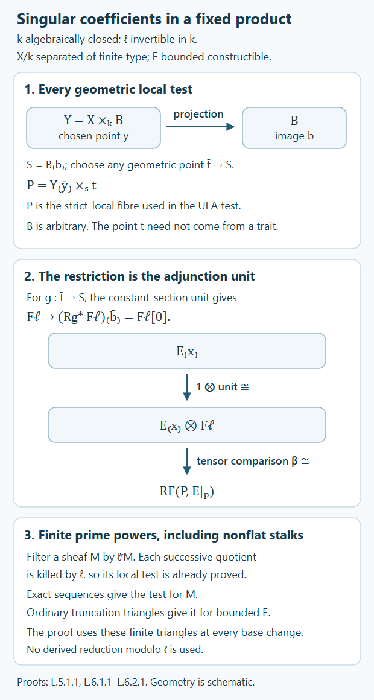
For the local fibre \(P\) of L.6.1.1, the actual restriction factors as (L.6.1.2): the constant-section unit at \(\bar b\), followed by the stalk of the singular-coefficient tensor comparison L.5.1.1. Both arrows are isomorphisms. L.6.2.1 extends the result through finite exact-sheaf filtrations and ordinary cohomology triangles, including nonflat prime-power stalks. All geometry in the top panel is schematic. Editable SVG source.

L.6.2. Finite prime powers with nonflat stalks
Theorem L.6.2.1. Theorem L.6.1.1 holds with \(\mathbf F_\ell\) replaced by any finite constant coefficient ring whose additive group is \(\ell\)-primary, and with any bounded constructible complex over it. No finite Tor-dimension assumption is imposed on that complex.
Proof. For each fixed local test, the stalk and the derived local-fibre sections functors are triangulated, and their restriction comparison is natural. Hence the property is closed under shifts and finite distinguished triangles, simultaneously after every base change.
A constructible sheaf \(M\) over the finite ring is killed by some \(\ell^a\). Its finite exact-sheaf filtration by the \(\ell^rM\) has constructible quotients killed by \(\ell\). On forgetting coefficients, each quotient is a constructible \(\mathbf F_\ell\)-sheaf. B.1.4 and the hypercover section description identify its cohomology and its actual restriction maps with the underlying abelian ones. Theorem L.6.1.1 therefore supplies its local isomorphisms, and the filtration triangles give them for \(M\).
A bounded constructible complex is built by finitely many ordinary cohomology truncation triangles from these sheaves. Apply the same argument to those triangles. This is a filtration by sheaves and their ordinary cohomology, not a derived reduction modulo \(\ell\). Consequently no flatness or bounded Tor amplitude of the original stalk modules is being assumed. □
L.6.3. Proper-image preservation with the canonical square
Theorem L.6.3.1. Let \(Y\xrightarrow m Z\xrightarrow q S\) be scheme morphisms, with \(m\) proper. Let \(L\in D^+(Y_{\mathrm{et}})\) have torsion cohomology sheaves. If \(qm\) is ULA relative to \(L\), then \(q\) is ULA relative to \(M=Rm_*L\). This statement imposes no torsion-order invertibility or common-annihilator condition.
Proof. Fix a geometric point \(\bar z\) with image \(\bar s\), put \(S_0=S_{(\bar s)}\), and choose \(\bar t\to S_0\). Use subscript zero for this base change, and \(s,t\) for its geometric closed and selected fibres. Write \(i_Y:Y_s\to Y_0\), \(i_Z:Z_s\to Z_0\) and \(j_Y:Y_t\to Y_0\), \(j_Z:Z_t\to Z_0\). The \(j\)'s are fibre morphisms, not asserted to be open immersions.
Source ULA says that the unit \[ \alpha_Y:i_Y^{-1}L_0 \longrightarrow i_Y^{-1}Rj_{Y*}j_Y^{-1}L_0 \tag{L.6.3.1} \] is an isomorphism on every geometric stalk, by B.1.4. K.4.4.1 and derived composition identify the two objects for the target specialization with \[ \begin{aligned} i_Z^{-1}M_0 &=Rm_{s*}i_Y^{-1}L_0,\\ i_Z^{-1}Rj_{Z*}j_Z^{-1}M_0 &=Rm_{s*}i_Y^{-1}Rj_{Y*}j_Y^{-1}L_0. \end{aligned} \tag{L.6.3.2} \] For the second line first base change \(m\) to \(t\), use \(j_Zm_t=m_0j_Y\), and then base change \(m_0\) to \(s\). That last comparison is legitimate: \(j_Y\) is a base change of the affine geometric-field map to the affine \(S_0\), so is qcqs; Lemma L.1.3.1 makes its image a bounded-below torsion complex. No constructibility or upper bound for this nearby-fibre derived image is required.
Under (L.6.3.2), the target specialization is \(Rm_{s*}\alpha_Y\). Before applying \(i_Z^{-1}\), adjunction for \(j_Z\) and \(m_t\) sends both descriptions of the map to the same counit \[ j_Y^{-1}m_0^{-1}Rm_{0*}L_0 \longrightarrow j_Y^{-1}L_0. \tag{L.6.3.3} \] The unit/counit identities and the adjunction definition of proper base change give this equality. Thus the commuting square is the actual one \[ \begin{array}{ccc} i_Z^{-1}M_0& \xrightarrow{\alpha_Z}& i_Z^{-1}Rj_{Z*}j_Z^{-1}M_0\\ \downarrow\scriptstyle{\sim}&& \downarrow\scriptstyle{\sim}\\ Rm_{s*}i_Y^{-1}L_0& \xrightarrow{Rm_{s*}\alpha_Y}& Rm_{s*}i_Y^{-1}Rj_{Y*}j_Y^{-1}L_0 . \end{array} \tag{L.6.3.4} \] Its lower arrow and vertical arrows are isomorphisms, so \(\alpha_Z\) is one. Its stalk at \(\bar z\) is the restriction (L.6.0.1) for \(M\), proving local acyclicity.
After any \(S'\to S\), \(m'\) remains proper, K.4.4.1 identifies the pulled \(M\) with \(Rm'_*L'\), and source ULA applies to \(L'\). Repeat the same square to obtain all local tests. This proves universality. □
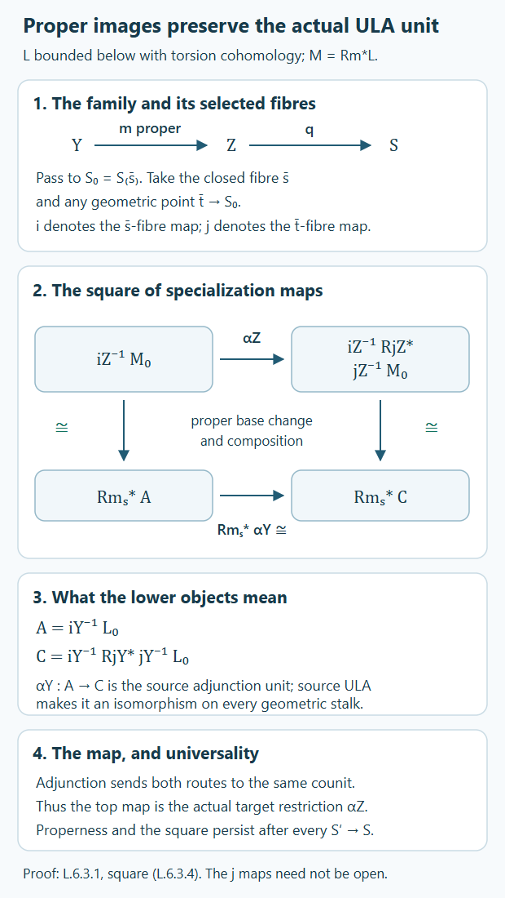
The four objects and arrows are the square (L.6.3.4). The shorthand \(A=i_Y^{-1}L_0\), \(C=i_Y^{-1}Rj_{Y*}j_Y^{-1}L_0\) keeps its lower objects legible. Proper base change and composition give the vertical isomorphisms; adjunction identifies the top restriction with \(Rm_{s*}\alpha_Y\). Thus source ULA gives target ULA, and the same square applies after every parameter base change. The fibre maps \(j_Y,j_Z\) are not assumed open. Editable SVG source.

L.6.4. Étale locality and fixed-support charts
Corollary L.6.4.1. ULA can be checked on a surjective étale source covering. In the coefficient scope of Theorem L.6.2.1, a family covered étale locally by fixed-support product charts \(X\times_kB\), with coefficient pulled from a bounded constructible complex on \(X\), is ULA. If its endpoint map to another family over \(B\) is proper, its derived image is ULA.
Proof. For an étale map and a geometric lift, the strict source localizations are canonically identical. Their fibre over every selected geometric parameter point is identical too, also after every base change. Thus their local restrictions (L.6.0.1) are the same maps. A surjective covering supplies such lifts for every test, proving locality. Apply Theorem L.6.2.1 on each chart, then Theorem L.6.3.1 for the proper image.
A smooth finite jet-group torsor is not in general étale over its base. An étale trivialization instead identifies its pulled total space with the base times the fixed jet group. Include that group among the fixed geometric factors of a product chart. If the coefficient model is pulled from a bounded constructible complex on those factors, the proved statement applies. For prime-power rings an arbitrary derived external tensor of bounded nonflat complexes is not automatically bounded; the chart coefficient used here must be the specified bounded complex. Every fixed shift preserves the local test, with no extra specialization shift. □
L.7. Exercises on the specialization mechanism
Exercise L.7.1 (easy: the last Leray filtration piece). Explain why the edge map in (L.4.2.2) is injective when its rows \(1,\ldots,q-1\) vanish, including when \(q=1\).
Solution. An incoming differential on page \(r\ge2\) to \((q,0)\) starts at \((q-r,r-1)\). If the first index is negative, no term exists; otherwise \(1\le r-1\le q-1\), and the second index specifies a zero row. An outgoing differential lands at second index \(1-r<0\). Thus \(E_2^{q,0}=E_\infty^{q,0}\); this is the last, embedded piece of the degree-\(q\) filtration. For \(q=1\) every possible incoming first index is already negative. This proves the asserted injection. □
Exercise L.7.2 (medium: bounded coefficients with an unbounded derived tensor). Put \(R=\mathbf Z/\ell^2\), \(N=\mathbf F_\ell\). Compute \(N\otimes_R^L N\). Explain why Theorem L.6.2.1 still applies to the bounded sheaf \(N[0]\), whereas Corollary L.6.4.1 does not declare every such external tensor bounded.
Solution. The free resolution \[ \cdots\xrightarrow{\ell}R \xrightarrow{\ell}R \xrightarrow{\ell}R\longrightarrow N\longrightarrow0 \tag{L.7.2.1} \] is exact, because the kernel and image of multiplication by \(\ell\) are both \(\ell R\). Tensoring with \(N\) makes every differential zero. Thus the derived tensor has one copy of \(N\) in every nonpositive cohomological degree. It is not bounded below. The theorem proves local acyclicity for \(N[0]\) by exact sheaf filtrations, which do not form this derived tensor. The chart corollary requires its actual coefficient complex to be bounded constructible; this particular tensor does not satisfy that hypothesis. □
Exercise L.7.3 (medium: a nonlisse proper image). Over algebraically closed \(k\), let \(C\subset\mathbf P^2_k\) be the union of the lines \(uv=0\), and let \(n:C^\nu=\mathbf P^1\amalg\mathbf P^1\to C\) be its normalization. For \(\ell\ne\operatorname{char}k\), compute the geometric stalks of \(n_*\mathbf F_\ell\). Prove ULA of its product family over every \(k\)-scheme \(B\), using the proper-image square.
Solution. The map is finite: its two restrictions are the closed immersions of the two lines into their union. Finite-pushforward stalks are products over the lifts. Every smooth point has one lift, giving \(\mathbf F_\ell\); the intersection point has two, giving \(\mathbf F_\ell^2\). Thus the sheaf is constructible and is not locally constant at the intersection. The product on \(C^\nu\times B\) with constant coefficients is ULA by Theorem L.6.1.1. The proper finite map \(n\times1_B\) and Theorem L.6.3.1 give ULA of its image, whose identification with the pullback of \(n_*\mathbf F_\ell\) is the canonical finite base change. There are no positive finite direct images. Square (L.6.3.4) identifies the actual specialization maps, including at the singular point. □
Exercise L.7.4 (hard: why the open-product theorem requires invertible orders). Let \(k\) be algebraically closed of characteristic \(p\). Put \(S=\mathbf A^1_{k,t}\), \(T=D(t)\), \(A=\mathbf A^1_{k,x}\), and \(g:T\to S\) the open immersion. Let \(R=\mathcal O^{sh}_{\mathbf A^2_k,(0,0)}\) and \(H=\mathcal O^{sh}_{\mathbf A^1_k,0}\). Show that the Artin–Schreier torsor \[ y^p-y=x/t \tag{L.7.4.1} \] on \(\operatorname{Spec}R[1/t]\) gives a nonzero class not in the image of \(H^1(\operatorname{Spec}H[1/t],\mathbf F_p)\). Deduce failure of the degree-one open-product comparison with \(\mathbf F_p\)-coefficients.
Solution. The residue fields are already algebraically closed, so these strict-local rings are the local pair henselizations. H.6.2.1 makes them Noetherian and identifies the faithfully flat completions \(\widehat R=k[[x,t]]\), \(\widehat H=k[[t]]\). Consequently \(R\) is a domain, and \(R/tR\) injects into \(\widehat R/t\widehat R=k[[x]]\), so is a domain as well. The power-series normality proof A.4.6 makes \(\widehat R\) normal. If \(a/b\in\operatorname{Frac}R\) is integral, its image lies in \(\widehat R\); faithful flatness gives \(b\widehat R\cap R=bR\), so \(a/b\in R\). Thus \(R\) is normal. The nonzero principal prime \((t)\) has height one by Dimension theory of Noetherian local rings, Theorem 3.1. Its localization is therefore a DVR by Discrete valuation rings, normal rings and Serre's criterion, Theorem 1.2, with uniformizer \(t\). The image of \(x\) is nonzero in \(R/tR\), so \(x\) is a unit in that DVR. Hence \(v_t(x/t)=-1\).
If \(z\in\operatorname{Frac}R\) has \(v_t(z)<0\), then \(v_t(z^p-z)=p\,v_t(z)\), which is divisible by \(p\). If \(v_t(z)\ge0\), that expression has nonnegative valuation. Neither case permits (L.7.4.1). The monic equation has derivative \(-1\), so defines a finite étale \(\mathbf F_p\)-torsor, with no section and therefore a nonzero first-cohomology class.
The section \(x=0\) gives \(R\to H\) by functorial strict localization, and is a retraction of the base map \(H\to R\). It sends the displayed torsor to \(y^p-y=0\), whose class is zero. If the original class were pulled from the base, this retraction would make that base class zero, forcing the original class zero too. This contradicts the valuation calculation. B.1.4 identifies these groups and this pullback with the degree-one comparison on the geometric stalk at \((0,0)\). It is not surjective. The order \(p\) is not invertible in \(k\), exactly the excluded case of Theorems L.3.3.1 and L.4.3.1. □
Freely accessible reading for the dimension induction and coefficient comparison is Stacks, punctual product base change and Stacks, the tensor comparison over a field. The required open-product, punctual, tensor and ULA arguments are proved above, using the specified earlier programme proofs.
Appendix M. Actual rational-adic pullback and product specialization
Let \(O\) be the valuation ring of a finite extension \(E/\mathbf Q_\ell\), let \(\pi\) be a uniformizer, and put \(O_n=O/\pi^n\). Work with derived-complete modules over \(\widehat O_T=\varprojlim_n\underline{O_n}_T\), and put \(\widehat E_T=\widehat O_T[1/\pi]\). A constructible object has bounded constructible finite-Tor first reduction on the étale site. Coherent finite coefficient systems carry the completed ring action by viewing each level through \(\widehat O_T\to\underline{O_n}_T\) and taking their homotopy limit in module sheaves.
For an algebraically closed field \(k\) with \(\ell\ne\operatorname{char}k\), a separated finite-type \(k\)-scheme \(X\), and such a constructible \(K\) on \(X\), Theorem M.7.1.1 proves the actual rational specialization isomorphism for the product family \(X\times_k B\to B\), for every \(k\)-scheme \(B\) and after every parameter base change. Its coefficients are the actual ringed pullback of \(K[1/\pi]\). Singular varieties and non-locally-constant constructible complexes are included.
The finite product specialization is already proved in L.6.2.1. The passage to rational coefficients is proved here: finite local structure, affine section localization, closed restriction and recollement, coherent completion, compatible stratal models and actual ringed pullback. The earlier programme providers are the affine covering, repleteness, bounded-below site comparison, coherent-system and uniform-Tor proofs in The pro-étale site and l-adic complexes, Theorems 1.1f, 2.2 and 3.3 and Propositions 4.3 and 5.2, and the exact étale algebra and hypercovering proofs linked at their use below.
M.1. The finite local-structure proof
We first prove finite local structure. The ring in this section is any commutative Noetherian ring \(\Lambda\). A perfect coefficient complex is a bounded complex of finite projective \(\Lambda\)-modules. Its constant sheaf complex is denoted \(\underline P\). The algebraic argument uses the earlier proof of Nakayama’s lemma, Theorem 4.2.
M.1.1. Lifting a map from a perfect stalk complex
Lemma M.1.1.1. For \(K\in D^+(X_{\mathrm{et}},\Lambda)\), a geometric point \(\bar x\), and perfect \(P\), the canonical map \[ \varinjlim_{(U,\bar u)} \operatorname{Hom}_{D(U_{\mathrm{et}},\Lambda)} (\underline P|_U,K|_U) \xrightarrow{\sim} \operatorname{Hom}_{D(\Lambda)}(P,K_{\bar x}) \tag{M.1.1.1} \] is a bijection. The colimit is over pointed étale neighborhoods of \(\bar x\), with restriction maps. The assertion also holds for every shift of the target.
Proof. Take a bounded-below injective resolution \(K\to I\) in module sheaves. Restriction of \(I\) to an étale object is again an injective resolution: the restriction has exact left adjoint, extension by zero. Maps from \(\underline P\) in the derived category are therefore the degree-zero cohomology of the ordinary mapping complex into \(I\).
Each finite projective term of \(P\) is a retract of a finite free module. Internal Hom from its constant sheaf is the corresponding retract of a finite sum of copies of \(I\). Its geometric stalk is consequently the ordinary module Hom into \(I_{\bar x}\). Since \(P\) has finitely many terms, the mapping complex has only finitely many factors in every degree. Thus its stalk is exactly \(\operatorname{Hom}^\bullet_\Lambda(P,I_{\bar x})\). Filtered stalk colimits are exact, so commute with its cycles, boundaries and cohomology.
The stalk \(I_{\bar x}\) remains a resolution of \(K_{\bar x}\), because stalks are exact. A bounded complex of projective modules maps acyclic complexes to acyclic mapping complexes: prove this first for one projective term using exactness of module Hom, then add its finitely many terms by the finite filtration. Hence this mapping complex computes \(\operatorname{Hom}_{D(\Lambda)}(P,K_{\bar x})\).
These calculations are the canonical stalk map (M.1.1.1). Concretely its surjectivity lifts the finitely many components of a stalk cycle to a common pointed neighborhood and shrinks to make their finitely many differential relations hold. Its injectivity lifts the finitely many components and relations of a stalk homotopy in the same way. For projective terms, use their fixed finite idempotent matrices to retain the summand relations. All constructions apply to a shift of \(I\). □
M.1.2. Finite cohomology and finite Tor amplitude imply perfectness
Lemma M.1.2.1. Let \(C\in D(\Lambda)\) have finite, bounded cohomology, and suppose \(C\otimes_\Lambda^L N\) has cohomology in one finite interval \([a,b]\) for every \(\Lambda\)-module \(N\). Then \(C\) is perfect.
Here “finite” means finitely generated, not finite cardinality.
Proof. First construct a bounded-above resolution \(F\to C\) by finite free modules. At the highest nonzero cohomology degree choose finitely many cycle representatives generating that group, and map a finite free module in that degree to them. The cone has its highest cohomology one degree lower. That new group is finite: its cohomology sequence makes it an extension of the old lower cohomology by a kernel between finite modules, and Noetherianity makes that kernel finite. Choose finitely many cycle representatives for this group, and attach a finite free term one degree lower, with differential and comparison map given by these representatives in the cone. The cone cycle identity is exactly the identity needed for the new differential and comparison map.
Repeat downward. In any fixed degree only finitely many earlier attachments affect its terms, and at a sufficiently late step its comparison has become a cohomology isomorphism. The resulting bounded-above free complex \(F\) is therefore quasi-isomorphic to \(C\). This explains both the finite generation of every term and the differential, rather than assuming a finite free resolution exists.
Since \(H^i(C)=0\) for \(i<a\), the good lower truncation of \(F\) replaces its term in degree \(a\) by \[ Q=\operatorname{coker}(F^{a-1}\to F^a) \tag{M.1.2.1} \] and discards all lower terms without changing its quasi-isomorphism type. The tail \(\cdots\to F^{a-1}\to F^a\to Q\to0\) is a free resolution of \(Q\). Thus for every module \(N\), \[ \operatorname{Tor}_1^\Lambda(Q,N) =H^{a-1}(F\otimes_\Lambda N) =H^{a-1}(C\otimes_\Lambda^L N)=0 . \tag{M.1.2.2} \] Terms above \(F^a\) do not affect degree \(a-1\) in this calculation. The tensor long exact sequence applied to \(0\to N'\to N\to N''\to0\) now proves that tensor with \(Q\) preserves injections; it already preserves cokernels. Hence \(Q\) is flat. It is finite and finitely presented, since \(\Lambda\) is Noetherian.
We include the finite-flat projectivity step. At a prime, localize the ring and lift a basis of \(Q/\mathfrak mQ\). Nakayama gives a surjection from a finite free module of that rank to \(Q\). Its kernel is finite. Flatness and the tensor exact sequence identify its reduction with the kernel of the basis isomorphism; that reduction is zero. Nakayama makes the kernel zero. Thus \(Q\) is free locally.
Finite presentation makes each such local basis and inverse descend to a principal neighborhood, by clearing their finitely many denominators and equalities. A finite collection \(D(f_i)\) covers the spectrum. The local basis expansions give, after clearing denominators, expressions of \(f_i^{n_i}1_Q\) as finite sums \(q\lambda\), with \(q\in Q\) and \(\lambda\in\operatorname{Hom}_\Lambda(Q,\Lambda)\). Clearing denominators in the functionals is allowed by finite presentation. The elements \(f_i^{n_i}\) generate the unit ideal. A linear combination of these expansions gives \(1_Q=\sum_jq_j\lambda_j\). The map from \(Q\) to the finite free module with coordinates \(\lambda_j\), followed by the map taking its basis to \(q_j\), is the identity. Therefore \(Q\) is a finite projective module.
The truncated complex has \(Q\) in degree \(a\) and finitely many finite free terms above it. It is a bounded finite projective model of \(C\), proving the lemma. □
M.1.3. One perfect coefficient type on a connected scheme
Theorem M.1.3.1. Let \(X\) be connected. Let \(K\in D^b(X_{\mathrm{et}},\Lambda)\) have locally constant, finitely generated cohomology sheaves and locally finite Tor amplitude. There is a perfect coefficient complex \(P\) and an étale cover \(\{U_i\to X\}\) with \[ K|_{U_i}\simeq\underline P|_{U_i}. \tag{M.1.3.1} \] The statement does not impose regularity or smoothness on \(X\). In particular it applies to the finite rings \(O_n\) in §M.4; there the finite projective terms are finite free.
Proof. At a geometric point \(\bar x\), the stalk \(K_{\bar x}\) satisfies Lemma M.1.2.1. The Tor bound passes to the stalk because exact stalks commute with derived tensor; test with constant module sheaves to obtain every module \(N\). Choose a perfect \(P_{\bar x}\) and an isomorphism \(P_{\bar x}\to K_{\bar x}\). Lemma M.1.1.1 lifts this isomorphism to a map \(\underline P_{\bar x}|_U\to K|_U\) on a pointed étale neighborhood.
The induced cohomology maps are maps between locally constant finite modules. Such maps are locally constant as module maps: trivialize both modules, lift the images of finitely many generators, and shrink to make all these images constant. Their finitely many presentation relations then give the same coefficient map on that neighborhood. Its kernel and cokernel are consequently locally constant too. An isomorphism at the chosen point is therefore an isomorphism on some open neighborhood for each degree. There are only finitely many relevant degrees, so their intersection gives a pointed neighborhood where the lifted map is a quasi-isomorphism. This proves étale-local perfect constancy at every point.
For each coefficient quasi-isomorphism type \(P\), take the union of the images of the neighborhoods just constructed with that type. The images are open because étale maps are open. Two different types have disjoint images: if two such neighborhoods overlap on the base, take a geometric point over their fibre product and read its stalk; both coefficient complexes are then isomorphic to that same stalk. These open subsets cover \(X\). Connectedness makes precisely one nonempty. All chosen neighborhoods thus have one type, proving (M.1.3.1). If \(X\) is empty take \(P=0\).
Over the local Artinian ring \(O_n\), the local finite-flat argument in Lemma M.1.2.1 makes every finite projective module free. This proves the final assertion. □
The freely accessible comparison is Stacks, finite local structure for Tor-finite constructible complexes, Tag 09BI. The map lifting, algebraic perfectness and connected-type arguments are proved above.
M.2. Quasi-compact weakly contractible evaluation and localization
The pro-étale affine-basis construction, Theorem 1.1f, gives w-contractible affine covers; Definition 1.2 gives finite affine refinements; Definition 1.3 proves exact evaluation on them. The topology’s finite refinement condition is used below.
Evaluation lemma. For a qc w-contractible affine \(W\), evaluation commutes with filtered colimits of module sheaves: \[ \varinjlim_i\Gamma(W,F_i)\simeq \Gamma(W,\varinjlim_iF_i). \tag{M.2.1} \] Indeed a section of the sheafified colimit is locally represented at a stage. Refine this local representing cover to finitely many affine pieces, using Definition 1.2. Filteredness places their finitely many stages in one common stage \(i\). The section consequently belongs to the sheaf image of \(F_i\to\varinjlim F_i\). Exact evaluation lifts it through the epimorphism from \(F_i\) to that image. For injectivity, if a stage section becomes zero, it becomes zero at later stages locally on a covering. A finite affine refinement and filteredness give one later stage on which all its restrictions vanish; the sheaf condition makes it zero there. This proves both directions without assuming evaluation commutes with sheafification on arbitrary presheaves.
In particular, for every \(\widehat O\)-module sheaf \(F\), \[ \Gamma(W,F)[1/\pi]\simeq\Gamma(W,F[1/\pi]). \tag{M.2.2} \] For a complex on \(W\), exact evaluation computes derived sections in all degrees; the proof is simply that it sends an acyclic complex to an acyclic complex. Thus (M.2.1) also applies degreewise to complexes and preserves their cohomology.
A finite-per-degree acyclic hypercover
Let \(Z\) be qc and separated over an affine scheme. A finite affine open cover, followed by Theorem 1.1f on each member, gives a cover by a finite family of qc w-contractible affines. Build a semisimplicial hypercover recursively: the degree-\(n\) matching family is a finite limit of the earlier finite families, and cover each of its members by a w-contractible affine.
Here the finite-limit assertion is geometric, not a compactness guess. Each earlier member is affine over the original affine base. Its map to \(Z\) is affine, since \(Z\) is separated over that base: the graph is closed, and the ambient projection is affine. Products over \(Z\) are therefore affine. Equalizers are closed in affine products. Every map between weakly étale objects is weakly étale by AG-LTF Lemma 1.1a, so these matching objects remain objects of the pro-étale site. There are only finitely many factors at each degree. Each new cover is one affine per matching member, so every degree has a finite family of qc w-contractible affines. No uniform finite number across all degrees is claimed.
The semisimplicial version needs no missing degeneracy choices. Its augmented free sheaf chain complex is exact by the same local finite-cycle cone argument in Hypercoverings, Theorem 3.3: add the cone vertex and finitely many cone faces, lift each boundary locally by its matching cover, and use \(\partial c+c\partial=1\). That calculation only uses face identities. Applying Hom into injectives proves the augmented row exactness. The injective double-complex proof of Theorem 4.1 of that lesson consequently applies unchanged. Thus for a complex \(K\) bounded below, \[ R\Gamma(Z,K)\simeq \operatorname{Tot}\bigl(\Gamma(W_n,K)\bigr). \tag{M.2.3} \] This is a derived comparison proved from the displayed augmented exact complex; it is not an invocation of general unbounded cohomological descent. One may represent \(K\) by a complex zero below one degree. Evaluation on every \(W_n\) is exact, so each column is acyclic for derived sections. In every fixed total degree the first-quadrant total uses only finitely many columns and finitely many components.
Filtered colimits therefore commute with (M.2.3) for diagrams having a common lower bound. For localization this gives, for every bounded-below \(K\), \[ R\Gamma(Z,K)\otimes_OE \simeq R\Gamma(Z,K[1/\pi]). \tag{M.2.4} \] The comparison is the canonical coefficient map: all augmentations, evaluation maps and restrictions used in (M.2.3) are natural. The conclusion is independent of the chosen hypercover through its identification with derived sections.
M.3. Closed restriction and recollement
The earlier affine algebra input is Étale neighborhoods, henselization and quasi-finite morphisms, Lemma 5.4: an affine finitely presented étale algebra over \(A/I\) lifts to one over \(A\). Its proof lifts the square presentation proved in Infinitesimal lifting and invariance under thickenings, Lemma 6.1, including the conormal basis, Jacobian determinant and determinant trick. These results apply to arbitrary rings. We now use them to construct the actual pro-étale closed restriction.
Let \(X=\operatorname{Spec}A\), \(Z=\operatorname{Spec}(A/I)\), with qc open complement \(U\). Fix an affine w-contractible \(V=\operatorname{Spec}B\) ind-étale over \(Z\). Such \(V\)'s form an enough-cover basis: first refine a weakly étale affine using Theorem 1.1d, then apply Theorem 1.1f to its ind-étale refinement.
Consider the category of pairs \((C,\phi)\), where \(C\) is an affine étale \(A\)-algebra of finite presentation and \(\phi:C\to B\). It is filtered. Tensor products combine two pairs. For parallel maps, their equality locus is clopen, because an affine étale morphism has open and closed diagonal; localize to that clopen component, which contains the prescribed \(B\)-point. Put \[ \widetilde B=\varinjlim_{(C,\phi)}C. \tag{M.3.1} \] It is ind-étale over \(A\).
Its reduction is exactly \(B\). Every étale finite-presentation \(A/I\)-stage of \(B\) lifts by Lemma 5.4, giving surjectivity. For the relations, suppose a map \(C/IC\to D/ID\) occurs at a later stage of \(B\). Its graph is a clopen section in \(\operatorname{Spec}(C/IC\otimes D/ID)\). That graph, viewed as an étale algebra over \(C\otimes_AD\) modulo \(I\), lifts by Lemma 5.4. Passing to this lifted étale neighborhood realizes the desired reduction map. Finite presentation of \(C/IC\) ensures that any specified equality in \(B\) occurs at such a stage. Thus all kernel relations disappear in the colimit, proving \(\widetilde B/I\widetilde B=B\).
Every element of \(\widetilde B\) whose image in \(B\) is a unit is already a unit: localizing its presenting étale algebra at that element gives another pair in (M.3.1). Consequently \(I\widetilde B\subset\operatorname{Jac}(\widetilde B)\).
For an ind-étale \(A\)-algebra \(D\), construction (M.3.1) gives \[ \operatorname{Hom}_A(D,\widetilde B) \simeq\operatorname{Hom}_{A/I}(D/ID,B). \tag{M.3.2} \] For finite-presentation \(D\), existence is its labelled object in the colimit, and uniqueness follows by factoring a map through a presenting object; for a filtered colimit \(D\), take the limit of these Hom identities. The identity extends to every affine weakly étale \(D\). Refine \(D\to D'\) faithfully flat with \(D'\) ind-étale over \(A\), by Theorem 1.1d. A prescribed reduction map to \(B\) lifts to \(D'/ID'\to B\), because the pulled-back cover of \(B\) splits by w-contractibility. Use (M.3.2) for \(D'\), then restrict to \(D\).
Uniqueness for weakly étale \(D\) has a useful explicit proof. Two maps with equal reductions have equalizer ideal \(J\subset I\widetilde B\). Flatness of the diagonal of \(D/A\) makes \(\widetilde B/J\) flat over \(\widetilde B\). For any \(x\in J\), tensoring \(0\to J\to\widetilde B\to\widetilde B/J\to0\) with \(\widetilde B/(x)\) gives \(x\in xJ\), hence \(x=xa\) for \(a\in J\). Since \(a\) is in the Jacobson radical, \(1-a\) is a unit and \(x=0\). Thus \(J=0\).
The affine \(\widetilde V=\operatorname{Spec}\widetilde B\) is itself w-contractible. A faithfully flat weakly étale cover of it has a split reduction over \(B\). Applying (M.3.2), now including weakly étale sources, lifts that splitting; its composite reduces to the identity, and uniqueness makes it an actual retraction.
In scheme notation (M.3.2) says \(\widetilde V\) is initial among the affine pro-étale neighborhoods equipped with a \(V\)-point over \(Z\). Therefore closed inverse image is the sheafification of \(V\mapsto F(\widetilde V)\). On w-contractible affines it has exactly that value: \[ (i^*F)(V)=F(\widetilde V). \tag{M.3.3} \] To justify the sheafification statement, the inverse-image presheaf is its usual colimit over those neighborhoods; initiality gives its displayed value. A cover of w-contractible \(V\) refines to finitely many affine pieces and splits after their disjoint union. The displayed presheaf respects finite disjoint unions, by (M.3.2). Restriction along this splitting supplies a representative before sheafification; equality is checked the same way. Thus sheafification changes neither sections nor their equality here. This special argument would be false for a completely arbitrary presheaf.
Evaluation (M.3.3) proves that \(i^*\) commutes with limits as well as colimits. In particular \[ i^*\widehat O_X=\widehat O_Z. \tag{M.3.4} \] Countable homotopy limits also commute: the pro-étale exact-product model for such limits is the product/cone model of AG-LTF Theorem 2.2.
Closed-open exactness and ordinary lower shriek
A quotient of a w-contractible affine by the ideal of a qc closed complement is w-contractible. Indeed, refine any cover of that quotient by an ind-étale w-contractible affine \(V\). Its lift \(\widetilde V\), together with the qc open complement, covers the original affine. A splitting of that finite affine cover restricts to a splitting over the quotient, where the complement is empty. This proves the assertion without assuming quotients preserve w-contractibility.
It follows that \(i_*\) is exact, by evaluating epimorphisms on the w-contractible affine basis and its w-contractible closed quotients. Equation (M.3.3) also proves \(i^*i_*=1\).
The map \(F\to i_*i^*F\) is locally onto for module sheaves: on such a basis affine \(W\), a target section is a section over \(\widetilde{W_Z}\); lift there and use zero on \(W_U\). These two opens/pro-étale pieces cover \(W\). Its kernel is \(j_!j^*F\). To check this exactly, write \(H=\widetilde{W_Z}\). The diagonal \(H\to H\times_WH\), together with the part over \(U\), is a cover: it is weakly étale and covers the entire closed fibre. Thus sections on \(H\) and \(W_U\) glue over \(W\) precisely when they agree on \(H_U\); the self-overlap contributes no additional condition. A kernel section glues zero on \(H\) to its section on \(W_U\), which is precisely local extension by zero. Conversely \(i^*j_!=0\), since closed inverse image of every representing open object inside \(U\) is empty and inverse image preserves colimits.
Hence the actual derived recollement triangles and identities hold on the pro-étale site: \[ j_!j^*K\to K\to i_*i^*K,\qquad j_!K\to Rj_*K\to i_*i^*Rj_*K. \tag{M.3.5} \] All functors in the first triangle are exact. In the second triangle, \(Rj_*\), \(i_*\), and \(i^*\) commute with countable homotopy limits. Therefore so does \(j_!\).
For qc open immersions in this pro-étale setting, ordinary \(j_!\) consequently preserves completeness and equals the completed \(j_{!,\mathrm c}\) used earlier. Closed restriction also needs no completion here. Finite reduction shows these functors preserve integral constructibility.
The same recollement calculation proves closed/open base-change identities: restrict either candidate to the open and closed pieces of the pulled-back pair, use (M.3.5) and \(i^*i_*=1\), and identify the adjunction maps. Thus finite locally closed extension and restriction can be used as the actual pro-étale operations.
M.4. Coherent completion of the finite specialization units
This section proves the completed-system statement. Its restrictions are completed restrictions defined from finite reductions. It does not assume that ordinary inverse image or a geometric stalk commutes with an infinite derived limit.
Let \(O\) be the valuation ring of a finite extension of \(\mathbf Q_\ell\), with uniformizer \(\pi\), and put \(O_n=O/\pi^n\). Work in enhanced derived categories; coherent systems retain transition maps, derived reduction identifications and composition homotopies. The perfect quotient used below is only the two-term \(O\)-resolution \([O\xrightarrow{\pi^n}O]\), in degrees \(-1,0\). No perfectness of \(O_n\) over \(O_{n+1}\) is assumed.
M.4.1. Sections of a coherently completed restriction
Lemma M.4.1.1. Let \(Q\) be qcqs, and let \(K_n\) be a coherent system of bounded-below \(O_n\)-complexes on its étale site, with \[ K_{n+1}\otimes_{O_{n+1}}^L O_n\simeq K_n. \tag{M.4.1.1} \] On the pro-étale site put \(\widehat K=R\varprojlim_n\nu_Q^{-1}K_n\). Then the canonical map identifies \[ R\Gamma(Q_{\mathrm{pro\acute et}},\widehat K) \simeq R\varprojlim_n R\Gamma(Q_{\mathrm{et}},K_n). \tag{M.4.1.2} \] The section complex is derived complete and its derived reduction modulo \(\pi^n\) is the actual finite-level section complex.
Proof. Derived sections is an enhanced right adjoint, hence preserves the homotopy limit of the whole diagram and its transition homotopies. The bounded-below étale/pro-étale comparison at each level is the canonical section comparison AG-LTF Theorem 3.3, equation (3.3). Therefore \[ R\Gamma_{\mathrm{pro\acute et}}R\varprojlim_n\nu_Q^{-1}K_n =R\varprojlim_nR\Gamma_{\mathrm{pro\acute et}}\nu_Q^{-1}K_n =R\varprojlim_nR\Gamma_{\mathrm{et}}K_n . \tag{M.4.1.3} \] These identifications retain restriction maps. Proposition 4.3's proof uses \(0\to O_{m-n}\xrightarrow{\pi^n}O_m\to O_n\to0\); that sequence and proof hold verbatim for this DVR. They identify \(\widehat K\otimes_O^L O_n=\nu_Q^{-1}K_n\), with its reduction map, and prove completeness of \(\widehat K\).
Reduction over \(O\) is the cone of multiplication by \(\pi^n\). Exact derived sections preserves that cone and its map, so \[ (R\Gamma\widehat K)\otimes_O^L O_n =R\Gamma(\widehat K\otimes_O^L O_n) =R\Gamma_{\mathrm{et}}K_n . \tag{M.4.1.4} \] For completeness after sections, take the inverse multiplication tower of \(\widehat K\). Right adjoint sections preserves its homotopy limit; its zero limit therefore stays zero. No finiteness of cohomology groups or vanishing of \(\varprojlim^1\) is used. □
M.4.2. The completed product restriction
Let \(k\) be algebraically closed of characteristic different from \(\ell\), \(X/k\) separated of finite type, and let \(E_X\) be complete with coherent reductions \(E_n\in D_c^b(X,O_n)\). For a \(k\)-scheme \(B\), fix a geometric point \(\bar y\) of \(Y=X\times_k B\), its image \(\bar b\), and a geometric point \(\bar t\to S=B_{(\bar b)}\). Put \[ Q=Y_{(\bar y)},\qquad P=Q\times_S\bar t . \tag{M.4.2.1} \] For the actual maps \(a_Q:Q\to X\), \(a_P:P\to X\), define \[ \widehat E_Q=R\varprojlim_n\nu_Q^{-1}a_Q^{-1}E_n,\qquad \widehat E_P=R\varprojlim_n\nu_P^{-1}a_P^{-1}E_n . \tag{M.4.2.2} \] These completed restrictions retain the coefficient-level pullback maps.
Theorem M.4.2.1. The actual completed restriction is an isomorphism \[ R\Gamma(Q_{\mathrm{pro\acute et}},\widehat E_Q) \longrightarrow R\Gamma(P_{\mathrm{pro\acute et}},\widehat E_P). \tag{M.4.2.3} \] Its source is canonically \(R\varprojlim_n(E_n)_{\bar x}\), for the image \(\bar x\) on \(X\). The statement holds after every \(B'\to B\), for all the selected geometric points.
Proof. The strict local schemes \(Q,S\) are affine. The field map \(\bar t\to S\) is affine, so \(P\) is affine. Lemma M.4.1.1 applies to both.
Appendix L.6.2.1 applies to the finite ring \(O_n\), whose additive group is \(\ell\)-primary, and the bounded constructible \(E_n\). It permits nonflat stalks. Exact strict-local sections and that theorem give \[ (E_n)_{\bar x} =R\Gamma(Q_{\mathrm{et}},a_Q^{-1}E_n) \xrightarrow{\alpha_n}R\Gamma(P_{\mathrm{et}},a_P^{-1}E_n) \tag{M.4.2.4} \] as an isomorphism. The map is the actual restriction, by L.6.1.2 and its finite-filtration extension. Naturality makes all \(\alpha_n\) commute with the coefficient system maps and their adjunction coherences.
Take homotopy limit of this natural transformation. Levelwise equivalences are equivalences of diagrams, preserved by the homotopy-limit functor. Lemma M.4.1.1 identifies this limit with (M.4.2.3), including its map and the stated source. After any parameter base change the family is again \(X\times_k B'\) with the same fixed system on \(X\); the same argument treats every new test. No ordinary-stalk/interchange assertion is needed. □
M.5. Compatible local models over the valuation ring
Throughout this section, \(X\) is Noetherian and \(O\) is the finite-extension valuation ring of §M.4. In particular every \(O_n\) is a finite set. This last assertion is used in the stabilization argument; no extension to arbitrary infinite residue rings is claimed.
The coefficient reconstruction proof is l-adic sheaves and their cohomology, Theorem 6.1. Its proof removes unit differential entries to obtain minimal bounded finite free complexes. A homotopy equivalence between minimal complexes is a termwise isomorphism, because its first reduction has zero differential. Lifting compatible bases gives a bounded finite free \(O\)-complex from any coherent perfect \(O_n\)-system. The number of terms and their ranks are forced by the first reduction. The mapping-complex and homotopy-adjustment arguments there apply with \(\pi\) in place of its unramified \(\ell\).
M.5.1. One stratification works at every finite level
Lemma M.5.1.1. Let \(K_n\in D_c^b(X_{\mathrm{et}},O_n)\) be a coherent derived-reduction system, with a common finite Tor interval \([a,b]\). Suppose \(X\) is connected and the cohomology of \(K_1\) is locally constant. Then the cohomology of every \(K_n\) is locally constant. For each \(n\) there is a single perfect coefficient type \(C_n\) such that \(K_n\) is étale locally \(\underline C_n\).
Proof. Fix \(\bar x\), and set \(S=X_{(\bar x)}\). Sections of an étale sheaf over this strictly henselian local scheme equal its closed geometric stalk. To see this, every pointed étale neighborhood has a section over \(S\): henselian lifting gives the section through the selected closed point, and its image contains that closed point. An open subset containing the closed point of a local scheme is the whole scheme. Thus all the sheaf lifting and equality tests at that stalk already occur over \(S\). This also shows that sections is exact. Consequently \[ R\Gamma(S_{\mathrm{et}},F)=F_{\bar x} \tag{M.5.1.1} \] for bounded complexes, and the constant-complex functor \(D^b(O_n)\to D^b(S_{\mathrm{et}},O_n)\) is fully faithful. Its unit is the identity under (M.5.1.1); adjunction proves the assertion about mapping groups. Its essential image is closed under cones.
Lemma M.1.3.1 makes \(K_1|_S\) constant. The coefficient sequence \[ 0\to O_{n-1}\xrightarrow{\pi}O_n\to O_1\to0 \tag{M.5.1.2} \] and derived reduction give a triangle whose first and third terms are the underlying \(O_n\)-complexes of \(K_{n-1}|_S\) and \(K_1|_S\). By induction they lie in the constant-complex essential image. Full faithfulness and closure under cones put \(K_n|_S\) in that image as well.
Its value is \((K_n)_{\bar x}\), a perfect coefficient complex by Lemma M.1.2.1. Lift the identity of this value to a map \(\underline C\to K_n\) on a pointed étale neighborhood, using Lemma M.1.1.1. Over its strict localization this map is an isomorphism: both complexes there are constant, and full faithfulness says the map is exactly its closed-stalk isomorphism.
We justify shrinking this strict-local assertion. The lifted map has a bounded constructible cone. Its support is a constructible subset of the Noetherian neighborhood. If the selected point lay in its closure, some generization of that point would belong to the support: decompose the support into finitely many locally closed subsets and take a generic point of an irreducible component of one of their closures containing the point. Strict henselization is faithfully flat over the local ring, so every such generization occurs under a geometric point of the strict localization. But the cone vanishes there. Hence the selected point is outside the closure of the support. Remove that closure to obtain an open neighborhood on which the lifted map is an isomorphism.
This proves étale-local perfect constancy of \(K_n\), and therefore local constancy of its cohomology. Lemma M.1.3.1 makes its coefficient type independent of the point on connected \(X\). □
The proof supplies the strict-local and constructible-support steps hidden in the phrase “the higher reductions are locally constant.” Merely taking an extension of coefficient sheaves with different coefficient rings would not justify that phrase.
M.5.2. Stabilizing the isomorphisms
Lemma M.5.2.1. Let \(W\) be a w-contractible affine scheme. Let \(P\) be a bounded finite free \(O\)-complex, and set \(P_n=P\otimes_O O_n\). Suppose a coherent system \(L_n\) on \(W_{\mathrm{et}}\) has \(L_n\simeq\underline P_n\) separately for every \(n\). Then there are isomorphisms \[ \tau_n:\underline P_n\xrightarrow{\sim}L_n \tag{M.5.2.1} \] whose derived classes are compatible with reduction.
Proof. A bounded finite free source computes its internal derived Hom by its ordinary finite mapping complex. The degree-zero cohomology sheaf for maps between two constant perfect complexes is therefore the constant sheaf of their coefficient-derived Hom group. Indeed internal Hom from a finite free constant term is a finite sum; the constant-sheaf functor is exact, and only finitely many terms enter each degree. The isomorphism classes form the corresponding locally constant finite set sheaf.
Let \(T_n\) be that sheaf of local derived isomorphisms from \(\underline P_n\) to \(L_n\). It is nonempty and is a torsor under the constant finite group \[ G_n=\operatorname{Aut}_{D(O_n)}(P_n). \tag{M.5.2.2} \] The group is finite because the finite mapping complex has finite terms. Derived reduction defines \(T_m\to T_n\) and \(G_m\to G_n\) for \(m\geq n\), compatibly and equivariantly.
Fix \(n\). The subgroups \(H_{m,n}=\operatorname{im}(G_m\to G_n)\) form a descending sequence in the finite group \(G_n\). Choose \(N(n)\) after they have stabilized. At any geometric point, the image of \(T_m\to T_n\) is a nonempty coset under \(H_{m,n}\). These images are nested. For \(m\geq N(n)\), nested nonempty cosets under the same subgroup must be equal. Thus the image sheaves stabilize at the same \(N(n)\) on all of \(W\). Denote the stable finite locally constant image by \(T_n^\circ\).
The maps \(T_{n+1}^\circ\to T_n^\circ\) are onto. At a geometric point, lift an element of \(T_n^\circ\) from a stage \(m\) beyond both stabilization indices and beyond \(n+1\); its image at level \(n+1\) lies in \(T_{n+1}^\circ\) and is the required lift. This proves stalkwise surjectivity, hence an epimorphism of étale sheaves of sets.
Evaluation of sheaves of sets over \(W\) sends such epimorphisms to surjections. Indeed, represent a required lift on an étale covering, refine to finitely many affine pieces, and split their faithfully flat weakly étale disjoint union by w-contractibility. Pull the local lifts back along that section. Choose a section of \(T_1^\circ\), using its epimorphism to the terminal sheaf, and then lift it successively. This gives compatible global sections of all \(T_n^\circ\), without needing a separate representability assertion for these isomorphism sheaves.
Finally a global section of the local derived-isomorphism sheaf is a derived map on \(W\). Evaluation of module sheaves is exact there, since finite affine refinements of a cover split by w-contractibility. Therefore degree-zero cohomology of the global mapping complex equals sections of its degree-zero cohomology sheaf. The chosen sections yield the maps (M.5.2.1); their cones vanish étale locally, so they are isomorphisms. The same exact-evaluation identity turns the equality of their local reduction classes into equality of their global derived classes. □
No surjectivity of \(G_{n+1}\to G_n\) was asserted. Passing to stable images is the step that makes the compatible choices possible.
M.5.3. A single integral complex on each stratum
Theorem M.5.3.1. Let \(K\) be a constructible derived-complete \(O\)-complex on \(X_{\mathrm{pro\acute et}}\), viewed with its completed coefficient action. There is a finite stratification of \(X\) by connected locally closed subsets \(Z\) such that on each \(Z\), \(K|_Z\) is pro-étale locally \[ \widehat{\underline P}_Z =P\otimes_O\widehat O_Z \tag{M.5.3.1} \] for a bounded finite free \(O\)-complex \(P\). Restrictions here are the actual locally closed restrictions, which commute with completion. If the first reduction has Tor interval \([a,b]\), the models can be chosen in those degrees.
Proof. The finite reduction and uniform-bound statement is The pro-étale site and l-adic complexes, Proposition 5.2. Its proof uses the finite \(\pi\)-filtration of every \(O_n\)-module, the coefficient triangles, and replete products; it applies unchanged to \(O\). Make the finitely many cohomology sheaves of \(K_1\) locally constant by a finite stratification. Refine by connected components, which are finite in number on every Noetherian stratum.
On one such connected \(Z\), Lemma M.5.1.1 applies to the derived reductions \(K_n|_Z\). Fix a geometric point. Its perfect coefficient system is reconstructed by the minimal-complex proof of AG-LTF Theorem 6.1 recalled above, giving \(P\) and its coherent reductions \(P_n\). The connected-type assertion identifies \(P_n\) with the local type of \(K_n|_Z\) everywhere.
Cover \(Z\) pro-étale locally by w-contractible affines, using AG-LTF Theorem 1.1f. On such an affine \(W\), every \(K_n\) becomes globally \(\underline P_n\): pull back its étale local trivializing cover, refine to finitely many affine pieces, and split the resulting cover of \(W\). Pulling the local trivializations along that section gives a global trivialization. The identifications so obtained need not be compatible. Lemma M.5.2.1 supplies compatible derived classes \(\tau_n\).
For clarity, we also explain why compatible classes give a map of completed objects. Put \(A=P\otimes_O\widehat O_W\) and \(L=K|_W\). The restriction along a pro-étale object is slice restriction, so is exact and commutes with limits. Hence \[ L=R\varprojlim_n\nu_W^{-1}L_n,\qquad A=R\varprojlim_n\underline P_n . \tag{M.5.3.2} \] The formula for \(A\) follows termwise from completeness of \(\widehat O_W\); \(P\) is finite free and bounded. Mapping into a homotopy limit, followed by coefficient adjunction, gives \[ R\operatorname{Hom}_{\widehat O_W}(A,L) =R\varprojlim_n R\operatorname{Hom}_{O_n} (\underline P_n,\nu_W^{-1}L_n). \tag{M.5.3.3} \] The finite-level étale/pro-étale comparison is canonical here. It identifies the previously chosen maps with classes in the right-hand mapping complexes.
For a countable tower of complexes of abelian groups, the product-cone model for derived limit gives the exact sequence \[ 0\to\varprojlim{}^1 H^{-1}(M_n) \to H^0(R\varprojlim M_n) \to\varprojlim H^0(M_n)\to0 . \tag{M.5.3.4} \] It follows by the cohomology sequence of \(1-\mathrm{shift}\) on the product; products of abelian groups are exact. In particular the last arrow is onto, whether or not the degree-minus-one groups stabilize. Apply this to (M.5.3.3). The compatible \(\tau_n\) lift to a map \(A\to L\). Its complete cone has every reduction zero, so it is the derived limit of zero objects and is zero. This proves (M.5.3.1), with no assumption that a geometric stalk commutes with infinite limits.
A minimal free representative of \(P_n\) has rank in degree \(i\) equal to \(\dim_{O_1}H^i(P_1)\). The first reduction has amplitude in \([a,b]\), so the reconstruction uses only those degrees. Locally closed restriction and extension preserve completeness by the closed-open calculation in §M.3. □
The primary free comparison is Bhatt–Scholze, sections 6.5–6.6, The pro-étale topology for schemes. The argument here uses finite residue rings and stable isomorphism cosets in place of assuming that separately chosen trivializations already form a coherent system.
M.6. Actual ringed pullback and completed restriction
Write \(\widehat O_T=\varprojlim_n\underline{O_n}_T\) for a scheme \(T\). We work with derived-complete \(\widehat O_T\)-modules. A coherent finite system acquires this action canonically: view each \(K_n\) as a \(\widehat O_T\)-module through \(\widehat O_T\to\underline{O_n}_T\), then take its homotopy limit in that module category. Forgetting to \(O\)-modules is exact and preserves limits, so the underlying object is the same completed system. The coefficient-sequence proof in §M.4.1 recovers all its finite reductions and their maps. No ordinary tensor idempotence of \(\widehat O_T\otimes_O\widehat O_T\) is required for this construction.
For \(g:Y\to X\), let \(g_{\mathrm n}^{-1}\) denote inverse image of underlying pro-étale sheaves. The ordinary pullback of completed-ring modules is the ringed functor \[ g_O^*K= g_{\mathrm n}^{-1}K \otimes_{g_{\mathrm n}^{-1}\widehat O_X}^{L}\widehat O_Y . \tag{M.6.0.1} \] The coefficient map is the map induced by all finite constant coefficient maps. It need not be an isomorphism before extension of scalars. Formula (M.6.0.1), rather than bare inverse image, is used throughout this section.
M.6.1. Recollement and finite perfect pieces
Lemma M.6.1.1. Let \(X\) be Noetherian and let \(K\) be as in Theorem M.5.3.1. For every scheme morphism \(g:Y\to X\), the ordinary ringed pullback \(g_O^*K\) is already derived complete. Its coherent reductions are \[ (g_O^*K)\otimes_O^L O_n =\nu_Y^{-1}g_{\mathrm{et}}^{-1}K_n . \tag{M.6.1.1} \] The pullback has a finite locally closed stratification by pro-étale locally perfect \(\widehat O_Y\)-complexes. The conclusion does not require \(Y\) to be Noetherian.
Proof. We first check the recollement identities with the actual functor. A constructible closed immersion \(i:Z\hookrightarrow X\), with qc open complement \(j:U\hookrightarrow X\), gives exact underlying closed restriction and closed image, the coefficient identity \(i^{-1}\widehat O_X=\widehat O_Z\), and the closed-open triangle. These are the explicit universal-affine-neighborhood and recollement results of §M.3. They apply over arbitrary rings, also to the pulled-back pair \(i':Z_Y\hookrightarrow Y\), \(j':U_Y\hookrightarrow Y\). Its complement is qc locally on \(Y\), since the original closed ideal is finitely generated.
Ringed inverse images compose by associativity of derived extension of scalars. Consequently the open restriction of \(g_O^*i_*M\) is zero, and its closed restriction is \(g_Z^*M\), because \(i^*i_*=1\). The closed-open triangle identifies it canonically with \(i'_*g_Z^*M\). Similarly the closed restriction of \(g_O^*j_!N\) is zero and its open restriction is \(g_U^*N\); the triangle identifies it canonically with \(j'_!g_U^*N\). Thus \[ g_O^*i_*M=i'_*g_Z^*M,\qquad g_O^*j_!N=j'_!g_U^*N . \tag{M.6.1.2} \] These are identities of the adjunction maps as well as of objects. Composing them gives the locally closed identity.
If \(K=P\otimes_O\widehat O_X\) for a bounded finite free coefficient complex, compute (M.6.0.1) termwise: \[ g_O^*(P\otimes_O\widehat O_X) =P\otimes_O\widehat O_Y . \tag{M.6.1.3} \] These finite free complexes are already complete. Finite projective summands give the same statement. It also holds when the model is only pro-étale local: pull its trivializing cover back to \(Y\). Restriction along an object of the pro-étale site commutes with limits, and the pulled-back covering remains a covering. Completeness and the comparison can therefore be tested on that covering.
A finite stratification may be refined to a finite closed filtration: successively take a dense open union of strata in each remaining closed subset, splitting those open pieces if necessary. Repeated closed-open triangles express \(K\) by its locally closed restrictions. Apply (M.6.1.2), (M.6.1.3) and Theorem M.5.3.1. The ordinary extensions on the target preserve completeness by the same closed-open proof, checked locally on affine \(Y\). Finite cones preserve completeness. This proves completeness of \(g_O^*K\) and the asserted local perfect description.
It remains to check the reductions, instead of treating them as formal naive inverse images. The coefficient sheaf satisfies \[ \widehat O_T\otimes_O^L O_n=\underline{O_n}_T. \tag{M.6.1.4} \] Indeed multiplication by \(\pi\) on \(\widehat O_T\) is injective: if a compatible sequence is killed by \(\pi\), each of its entries becomes zero after passing from the next level. Reduction onto \(O_n\) is locally onto by lifting the finitely many values of a locally constant section; its kernel is \(\pi^n\widehat O_T\), by dividing its compatible entries at higher levels. The two-term free \(O\)-resolution proves (M.6.1.4). The same coefficient system and repleteness prove that this sheaf is derived complete.
Underlying inverse image is exact and sends constant \(O_n\) to constant \(O_n\). Thus associativity and (M.6.1.4) give \[ \begin{aligned} (g_O^*K)\otimes_O^L O_n &=g_{\mathrm n}^{-1}K \otimes_{g_{\mathrm n}^{-1}\widehat O_X}^L\underline{O_n}_Y\\ &=g_{\mathrm n}^{-1} (K\otimes_{\widehat O_X}^L\underline{O_n}_X)\\ &=g_{\mathrm n}^{-1}\nu_X^{-1}K_n =\nu_Y^{-1}g_{\mathrm{et}}^{-1}K_n. \end{aligned} \tag{M.6.1.5} \] This is the canonical reduction map and respects the entire coefficient diagram. The argument also shows its equality with reduction over \(O\), since both are the cone of \(\pi^n\). □
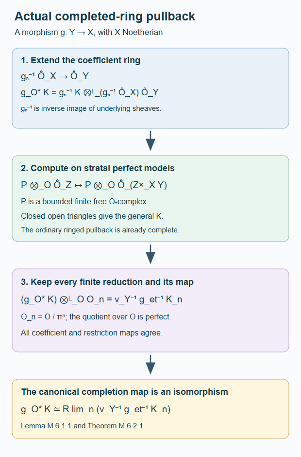
The ringed extension in (M.6.0.1) uses the coefficient map \(g_{\mathrm n}^{-1}\widehat O_X\to\widehat O_Y\). Lemma M.6.1.1 proves completeness by finite stratal perfect models and closed-open triangles. Theorem M.6.2.1 then identifies its canonical completion map with the coherent finite-level pullback system. Editable SVG source.

M.6.2. Identification with the finite-level completed construction
Theorem M.6.2.1. Under the hypotheses of Lemma M.6.1.1, the canonical completion comparison is an isomorphism \[ g_O^*K\xrightarrow{\sim} R\varprojlim_n\nu_Y^{-1}g_{\mathrm{et}}^{-1}K_n . \tag{M.6.2.1} \] It retains the ordinary pullback adjunction and composition maps. For \(E=O[1/\pi]\), put \(\widehat E_T=\widehat O_T[1/\pi]\). The actual rational ringed pullback satisfies \[ g_E^*(K[1/\pi])=(g_O^*K)[1/\pi]. \tag{M.6.2.2} \]
Proof. The map in (M.6.2.1) is the derived completion map of its source. Lemma M.6.1.1 proves that the source is complete and identifies its reductions canonically with the displayed finite-level diagram. This proves (M.6.2.1) with its map. Functoriality of completion and of the coefficient identifications proves its compatibility with all composition and adjunction maps for ordinary pullback.
For (M.6.2.2), use (M.6.0.1) for both coefficient rings. Associativity of derived extension of scalars identifies both expressions with extension from \(g_{\mathrm n}^{-1}\widehat O_X\) to \(\widehat O_Y[1/\pi]\). Equivalently, multiplication by \(\pi\) defines a localization telescope, and ringed pullback, being a left adjoint, preserves that telescope. No assertion that underlying inverse image commutes with the original infinite coefficient limit is needed. □
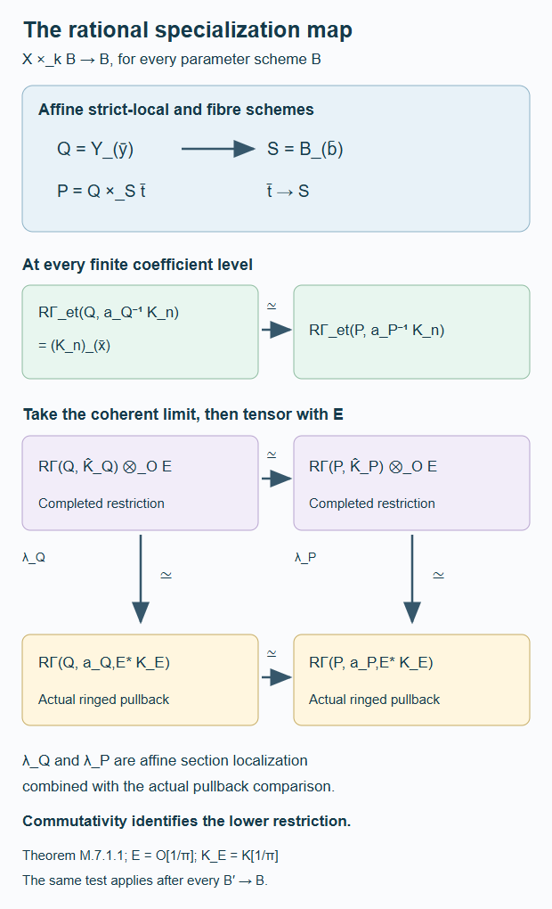
The affine schemes \(Q=Y_{(\bar y)}\), \(S=B_{(\bar b)}\), and \(P=Q\times_S\bar t\) are those of (M.4.2.1). The top arrow is the coherent limit of the finite restriction maps, tensored with \(E\); its proof is M.4.2.1. The vertical arrows are the canonical identifications (M.7.1.3), proved using affine section localization and actual ringed pullback. Commutativity identifies the lower arrow with the actual rational specialization. The point diagram is schematic. Editable SVG source.

M.7. Rational product specialization
Use the ordinary-section localization theorem (M.2.4). Its exact geometric hypothesis is that the section scheme be qc and separated over an affine scheme, with the complex bounded below. In particular it applies to any affine scheme; neither finite type nor a Noetherian parameter base is required.
Theorem M.7.1.1. Let \(k,X,B,\bar y,\bar b,\bar t,Q,P\) be as in §M.4.2. Let \(K\) be a bounded constructible derived-complete \(O\)-complex on \(X\), and let \(K_E=K[1/\pi]\) on \(X_{\mathrm{pro\acute et}}\). For the actual rational ringed pullbacks, the specialization restriction \[ R\Gamma(Q_{\mathrm{pro\acute et}},a_{Q,E}^*K_E) \longrightarrow R\Gamma(P_{\mathrm{pro\acute et}},a_{P,E}^*K_E) \tag{M.7.1.1} \] is an isomorphism. Its source identifies canonically with \[ \left(R\varprojlim_n(K_n)_{\bar x}\right)\otimes_O E . \tag{M.7.1.2} \] The assertion holds for every parameter scheme \(B\) and after every \(B'\to B\).
Proof. Theorem M.6.2.1 identifies the actual integral pullbacks along \(a_Q,a_P\) with the completed restrictions \(\widehat K_Q,\widehat K_P\) of (M.4.2.2). The schemes \(Q,P\) are affine, as checked in Theorem M.4.2.1. Their pulled-back complexes are bounded below: the finite stratal perfect description in Lemma M.6.1.1 gives one finite lower bound, and the finite closed-open triangles retain it. Consequently ordinary-section localization and (M.6.2.2) identify \[ \begin{aligned} R\Gamma(Q,a_{Q,E}^*K_E)&=R\Gamma(Q,\widehat K_Q)\otimes_OE,\\ R\Gamma(P,a_{P,E}^*K_E)&=R\Gamma(P,\widehat K_P)\otimes_OE. \end{aligned} \tag{M.7.1.3} \] Every arrow is canonical and commutes with restriction along \(P\to Q\). Therefore (M.7.1.1) is precisely the completed restriction (M.4.2.3) tensored with \(E\). That restriction is an isomorphism by Theorem M.4.2.1. Its source there is the limit of the finite geometric stalks, proving (M.7.1.2).
After parameter base change the family is again \(X\times_k B'\). The same affine strict-local and local-fibre tests satisfy all the same hypotheses, so the same proof applies. The use of a limit of finite stalks in (M.7.1.2) does not replace it by the ordinary stalk of a derived limit. □
M.8. Worked checks for the coefficient passage
M.8.1. Completed constants on a profinite parameter
Exercise M.8.1 (introductory). Let \(S=\mathbf Z_\ell=\varprojlim_r\mathbf Z/\ell^r\), and let \(W=\varprojlim_r\coprod_{\mathbf Z/\ell^r}\operatorname{Spec}k\), for an algebraically closed \(k\) of characteristic different from \(\ell\). Take \(O=\mathbf Z_\ell\). Describe sections of the discrete constant sheaf \(\underline O\) and of \(\widehat O\) over \(W\). Show they differ.
Solution. \(W\) is affine and ind-étale over \(\operatorname{Spec}k\); its ring is the filtered colimit of the finite products \(k^{\mathbf Z/\ell^r}\). Its underlying space is the profinite set \(S\), with residue field \(k\) at every point. A section of the discrete constant sheaf is a locally constant function \(S\to O\) with \(O\) discrete. Its image is finite by compactness. By definition and preservation of limits by sections, \[ \Gamma(W,\widehat O)=\varprojlim_n \operatorname{Map}_{\mathrm{loc.const.}}(S,O_n) =\operatorname{Map}_{\mathrm{cont}}(S,O), \tag{M.8.1.1} \] where the last topology on \(O\) is the \(\ell\)-adic topology: continuity is exactly continuity of every finite reduction. The identity function \(S=O\to O\) belongs to the last group. It is not locally constant, because no point of the infinite profinite group \(\mathbf Z_\ell\) is open. Thus completed constants must not be silently replaced by discrete constants. This example does not assert failure of inverse image along the ind-étale map \(W\to\operatorname{Spec}k\); slice restriction along that map does commute with the coefficient limit. □
M.8.2. Why an arbitrary first trivialization need not lift
Exercise M.8.2 (intermediate). Take \(O=\mathbf Z_3\) and \(P=[O\xrightarrow{3}O]\) in degrees \(0,1\). Compute the image of \[ \operatorname{Aut}_{D(O_2)}(P_2) \longrightarrow\operatorname{Aut}_{D(O_1)}(P_1). \tag{M.8.2.1} \] Use it to explain the stable-image step in Lemma M.5.2.1.
Solution. At level one the differential is zero, so an automorphism is an independent nonzero scalar on each of the two degrees: \[ G_1=\mathbf F_3^\times\times\mathbf F_3^\times . \] There are no nonzero homotopy boundaries there. A chain map at level two is a pair \(a,b\in\mathbf Z/9\) satisfying \(3a=3b\), that is \(a\equiv b\pmod3\). Homotopies change both entries by the same multiple \(3h\), and do not change their first reductions. An automorphism has both entries units: necessity follows by reducing its homotopy inverse modulo three; sufficiency follows because the degree maps then give an actual chain isomorphism. Its image at level one is consequently a diagonal pair \((c,c)\). Every such pair occurs by taking \(a=b\) a unit lift of \(c\). The image of (M.8.2.1) is exactly the diagonal subgroup.
In particular \((1,2)\) at level one has no lift to level two. Separate finite-level trivializations therefore cannot be joined by simply demanding a lift of an arbitrarily chosen first one. Lemma M.5.2.1 chooses the first trivialization in the eventual image of all higher levels, and then lifts inside the surjective stable-image tower. □
M.8.3. A compatible class needs existence, not uniqueness
Exercise M.8.3 (advanced). For a countable tower of mapping complexes \(M_n\), prove directly that every element of \(\varprojlim H^0(M_n)\) comes from \(H^0(R\varprojlim M_n)\). Identify the possible ambiguity. Explain its use in Theorem M.5.3.1.
Solution. Products of abelian groups are exact, so the product-cone model \[ R\varprojlim M_n =\operatorname{Cone} \left(\prod_nM_n\xrightarrow{1-\mathrm{shift}}\prod_nM_n\right)[-1] \tag{M.8.3.1} \] has cohomology sequence whose relevant terms are \[ \operatorname{coker}(1-\mathrm{shift}\text{ on }\prod_nH^{-1}(M_n)) \longrightarrow H^0(R\varprojlim M_n) \longrightarrow \ker(1-\mathrm{shift}\text{ on }\prod_nH^0(M_n)) \longrightarrow0 . \] The first arrow is injective by the preceding term of the same sequence. Its source is \(\varprojlim{}^1H^{-1}(M_n)\), and the kernel on the right is \(\varprojlim H^0(M_n)\). This proves existence and gives exactly the ambiguity stated in (M.5.3.4).
One can also see existence on representatives. Choose degree-zero cycles for the compatible classes. Their consecutive differences under transition are boundaries; choose degree-minus-one homotopies for those differences. The tuple of cycles and homotopies is a degree-zero cycle in the shifted cone (M.8.3.1), with the cone signs. In Theorem M.5.3.1 the classes are already isomorphisms at every finite level. Any one lift has complete cone with zero finite reductions, hence is an isomorphism. Uniqueness of the lift is unnecessary for that argument; the canonical functor comparison of Theorem M.6.2.1 comes instead from the canonical completion map. □
Appendix N. Actual Hom localization and global rational models
Fix a finite extension \(E/\mathbf Q_\ell\), its valuation ring \(O\), and a uniformizer \(\pi\). For a separated finite-type scheme \(T\), this appendix proves that every bounded rational constructible completed-ring complex has a global integral constructible derived model, and that its actual mapping complexes are obtained by scalar localization. It also proves ordinary-image and internal-Hom localization, with the actual coefficient maps. Corollary N.4.4.1 then extends M.7's product specialization to every such rational constructible complex.
The lattice may require finitely many strata; the proof constructs those strata, sums lattices along their finite étale covers, and clears the denominators of the derived attaching maps. The free primary comparison is Bhatt–Scholze, The pro-étale topology for schemes, §6.8. The proofs below use the completed-ring local structure and recollement proved in Appendix M, with exact earlier programme proof locators at their use.
N.1. Ordinary image and internal Hom with their actual coefficient maps
Throughout this appendix, \(O\) is the valuation ring of a finite extension \(E/\mathbf Q_\ell\), \(\pi\) is a uniformizer, and \(\widehat E_T=\widehat O_T[1/\pi]\). An integral constructible complex on a Noetherian scheme means a derived-complete \(\widehat O_T\)-complex whose first derived reduction is a classical bounded constructible \(O_1\)-complex. Denote their full enhanced subcategory by \(\mathcal C_O(T)\). The first reduction is over a field, so its bounded cohomology has a finite uniform Tor interval. M.5 therefore supplies the finite stratification by the locally perfect models \(P\otimes_O\widehat O\). M.3 supplies actual closed and locally closed restriction and extension. These give boundedness of the integral complex itself, by the finite closed-open triangles.
N.1.1. Image on a weakly contractible target chart
Lemma N.1.1.1. Let \(f:Z\to T\) be a quasi-compact separated scheme morphism. For bounded-below completed-ring module complexes, ordinary derived image commutes with filtered colimits of diagrams with a common lower bound. In particular the canonical map \[ (Rf_*L)[1/\pi]\longrightarrow Rf_*(L[1/\pi]) \tag{N.1.1.1} \] is an isomorphism. On the right rational coefficients can equivalently be interpreted as ordinary derived image of \(\widehat E_Z\)-modules, with its \(\widehat E_T\)-action.
Proof. Work locally on the target and evaluate on a qc w-contractible affine \(W\) of its pro-étale site. Put \(Z_W=Z\times_TW\). It is qc and separated over \(W\), since \(f\) has those properties. Slice restriction of module sheaves is exact and has exact left adjoint, extension by zero along the representing pro-étale object. The coefficient sheaf on a slice is the restriction of the coefficient sheaf: slice restriction commutes with the coefficient limits. Thus a bounded-below injective resolution restricts to an injective resolution on \(Z_W\). Ordinary direct image followed by evaluation on \(W\) is ordinary sections on \(Z_W\). Since evaluation on \(W\) is exact, this proves the canonical identity \[ \Gamma(W,Rf_*L)=R\Gamma(Z_W,L|_{Z_W}). \tag{N.1.1.2} \] This is a module-sheaf calculation; it needs no assumption that an injective module sheaf is injective after forgetting its module action.
M.2 proves that the right side commutes with filtered colimits having a common lower bound. Its finite-per-degree affine hypercover works over the arbitrary affine \(W\), with no Noetherian hypothesis on that affine. Exact evaluation on \(W\) also commutes with filtered colimits, by M.2.1. Hence the desired comparison evaluates to an isomorphism on every such \(W\). These objects cover the target, so its cone is zero.
Apply the result to the multiplication telescope \(L\xrightarrow{\pi}L\xrightarrow{\pi}\cdots\). Inversion of \(\pi\) is exact: it is a filtered colimit of the underlying modules. This gives (N.1.1.1). Restriction of scalars from \(\widehat E\) to \(\widehat O\) leaves the displayed section calculation unchanged. Conversely a \(\widehat O\)-complex on which \(\pi\) acts invertibly has a unique extended \(\widehat E\)-action, so that section calculation identifies the rational image, including its coefficient action.
Every identification came from evaluation, restriction, the hypercover augmentation and the coefficient telescope. Consequently (N.1.1.1) is the actual coefficient comparison, compatible with composition of images and their pullback adjunctions. No constructibility of an arbitrary nonproper image over an arbitrary base is asserted. □
N.1.2. Sources whose internal Hom preserves bounded-below filtered diagrams
For a qc separated scheme \(T\), let \(\mathcal B_T\) consist of bounded \(\widehat O_T\)-complexes \(A\) such that the canonical internal comparison \[ \varinjlim_\lambda R\mathcal Hom_{\widehat O_T}(A,L_\lambda) \longrightarrow R\mathcal Hom_{\widehat O_T} \left(A,\varinjlim_\lambda L_\lambda\right) \tag{N.1.2.1} \] is an isomorphism whenever the \(L_\lambda\) have one common lower bound.
Lemma N.1.2.1. The class \(\mathcal B_T\) is local for pro-étale covers, contains locally perfect complexes, is stable under finite triangles and retracts, and has the following two extension properties:
- a qc open immersion \(j:U\hookrightarrow T\) sends \(\mathcal B_U\) into \(\mathcal B_T\) by \(j_!\);
- a closed immersion with qc complement sends locally perfect complexes into \(\mathcal B_T\) by \(i_*\).
Every integral constructible complex on a separated finite-type scheme over a field belongs to \(\mathcal B_T\).
Proof. On a pro-étale slice, restriction of internal Hom agrees with internal Hom of the restrictions. At the resolution level this follows from the exact slice-extension adjunction just used: injectives restrict to injectives. Restriction commutes with colimits as well. Thus the cone of (N.1.2.1) restricts to the corresponding cone on each covering object, proving locality.
For a bounded complex of finite free \(\widehat O\)-modules, internal Hom is its finite dual tensor. Each term is a finite sum, and only finitely many terms occur; the differential matrices may be arbitrary completed-ring sections. Thus it commutes with the stated colimits. Finite projective summands and pro-étale local perfect models have the same property. Filtered colimits are exact on module sheaves, so comparison triangles show stability under finite triangles; their retracts show stability under retracts.
We spell out the lower bound needed in the open case. If \(A\in D^{\leq b}\) and \(L\in D^{\geq a}\), then \[ R\mathcal Hom(A,L)\in D^{\geq a-b}. \tag{N.1.2.2} \] Represent \(A\) by its good upper truncation, and \(L\) by an injective complex zero below degree \(a\). In degree \(q<a-b\), every factor \(\mathcal Hom(A^p,I^{p+q})\) is zero, because \(p\leq b\) and \(p+q<a\). Thus the mapping complex is zero in those degrees. This proof allows the source resolution to be unbounded to the left.
For a qc open \(j\), derived adjunction gives the canonical internal identity \[ R\mathcal Hom_T(j_!A,L) =Rj_*R\mathcal Hom_U(A,j^*L). \tag{N.1.2.3} \] Indeed test it against an arbitrary derived module \(H\). Exact extension by zero and tensor give \(H\otimes^Lj_!A=j_!(j^*H\otimes^LA)\); this can be checked on the open and its complement. Tensor/Hom and the two adjunctions then identify the mapping complexes against \(H\), proving (N.1.2.3). Equation (N.1.2.2) gives a common lower bound on the internal Hom targets. Lemma N.1.1.1 for \(j\) proves the open extension property.
For the closed case, work locally on \(T\), and use a w-contractible affine ind-étale cover of \(Z\) on which \(M\) has a bounded finite free representative. Such a cover can be refined to finitely many affine pieces over a qc closed chart. M.3 lifts each piece \(V\) to a pro-étale affine neighborhood \(\widetilde V\) in \(T\); adding the open complement makes a cover. Its actual evaluation and coefficient identities give \[ \Gamma(\widetilde V,\widehat O_T) =\Gamma(V,\widehat O_Z). \tag{N.1.2.4a} \] Lift the finitely many differential matrices through this ring identity. Their products are zero in the same ring, so the lifts form a bounded finite free complex \(A\) on \(\widetilde V\), with \(i^*A=M|_V\). A finite projective representative can instead be lifted by its finite idempotent matrices and their relations. Closed base change from M.3 identifies the restriction of \(i_*M\) with the last term of \[ j_!j^*A\longrightarrow A\longrightarrow i_*i^*A. \tag{N.1.2.4} \] The first two terms belong to \(\mathcal B_T\), so does the last one. On the added complement the restriction is zero. Locality proves the closed extension property globally.
Finally M.5 gives a finite stratification for \(K\in\mathcal C_O(T)\). Refine it to a finite closed filtration by choosing a dense open union of its strata in the remaining closed subset, then repeating. The closed-open triangles express \(K\) using finitely many locally closed extensions of its locally perfect restrictions. Apply the two extension properties and finite-triangle stability. Every \(K\) lies in \(\mathcal B_T\). □
N.1.3. Internal and global Hom localization
Theorem N.1.3.1. For \(K,L\in\mathcal C_O(T)\), where \(T\) is separated of finite type over a field, the actual coefficient maps give \[ R\mathcal Hom_{\widehat O_T}(K,L)[1/\pi] \xrightarrow{\sim} R\mathcal Hom_{\widehat E_T}(K[1/\pi],L[1/\pi]) \tag{N.1.3.1} \] and \[ R\operatorname{Hom}_{\widehat O_T}(K,L)\otimes_OE \xrightarrow{\sim} R\operatorname{Hom}_{\widehat E_T}(K[1/\pi],L[1/\pi]). \tag{N.1.3.2} \] The internal Hom on the left before localization is derived complete. The mapping-complex isomorphism respects composition, identities and shifts.
Proof. Apply Lemma N.1.2.1 to the target telescope defining \(L[1/\pi]\). It gives \[ R\mathcal Hom_{\widehat O_T}(K,L)[1/\pi] =R\mathcal Hom_{\widehat O_T}(K,L[1/\pi]). \tag{N.1.3.3} \] Extension and restriction of scalars identify the last internal Hom with the rational internal Hom in (N.1.3.1). One can check this by testing against an arbitrary \(\widehat O_T\)-module complex \(H\): extend the source of the tensor/Hom adjunction to \(\widehat E_T\), and use that the target already has \(\pi\) invertible. The resulting object has \(\pi\) invertible and hence its unique rational action.
For completeness write \(L=R\varprojlim L_n\) with its actual derived reductions. Internal Hom in its second variable preserves homotopy limits, being a right adjoint. Coefficient adjunction gives \[ R\mathcal Hom_{\widehat O_T}(K,L) =R\varprojlim_n R\mathcal Hom_{\underline{O_n}_T}(K_n,L_n). \tag{N.1.3.4} \] Each finite-level term is an \(O_n\)-complex. As an \(O\)-complex it is complete: the inverse multiplication tower by \(\pi\) has zero homotopy limit, since sufficiently long composites are zero. Explicitly the shift operator on its product model has a bounded nilpotence exponent, so \(1-\mathrm{shift}\) is invertible by the finite geometric series. Limits of complete objects are complete, as the two homotopy limits commute. This proves the completeness assertion without asserting constructibility of this Hom yet.
If \(K\in D^{\leq b}\) and \(L\in D^{\geq a}\), (N.1.2.2) bounds the integral internal Hom below by \(a-b\). Apply M.2.4 to it on \(T\), which is qc separated over the affine ground field. Derived global sections of internal Hom is the global mapping complex. Taking sections of (N.1.3.1) gives exactly (N.1.3.2).
These comparisons are made from the actual coefficient map \(L\to L[1/\pi]\) and scalar adjunction. Composition is defined by tensor and evaluation; both commute with the same scalar extension. Thus the composition square, identity and shifted comparisons agree before and after localization. This proves the enhanced assertion, rather than only a degree-zero Hom bijection. □
N.2. Finite étale covers on finitely many strata
This section proves the affine reduction that turns étale-local lattices into lattices on strata, using elementary affine algebra.
N.2.1. Shrinking an affine étale map at the generic points
Lemma N.2.1.1. Let \(T\) be a separated scheme of finite type over a field, and let \(p:Y\to T\) be affine, étale and of finite presentation. There is a dense open \(U\subset T\), meeting every irreducible component in a dense open, such that \(p^{-1}U\to U\) is finite étale. If \(p\) is surjective, its restriction remains surjective.
Proof. Fix a generic point \(\eta\) of an irreducible component, in an affine neighborhood \(\operatorname{Spec}A\). Write \(p^{-1}\operatorname{Spec}A=\operatorname{Spec}B\). The ring \(A_\eta\) is zero-dimensional Noetherian local and hence Artinian. To recall the algebra, its maximal ideal is its nilradical and is finitely generated by nilpotent elements. A high enough power is zero, since every monomial of sufficiently high degree contains a nilpotence power of one of those finitely many generators. The quotients of its powers are finite-dimensional vector spaces over its residue field, giving a finite composition series.
The fibre \(B_\eta/\mathfrak m_\eta B_\eta\) is a finite algebra over \(\kappa(\eta)\), by Unramified morphisms, Lemma 3.1. Its proof first makes each maximal residue field finite by Zariski's lemma. Vanishing of differentials makes it separable; a primitive generator lifts across the square-zero maximal quotient by the Taylor correction \(a-h(a)/h'(a)\). Differentiating that quotient identifies the maximal cotangent space with zero. Nakayama makes every maximal localization a field. Every prime lies in a maximal ideal, so all primes are maximal. The Noetherian zero-dimensional algebra is then a finite product of the finite separable fields. This proves the finiteness used here, including for a proposed nonreduced fibre algebra.
Choose finitely many lifts in \(B_\eta\) of a \(\kappa(\eta)\)-basis of that fibre, and let \(N\) be their \(A_\eta\)-span. Then \(B_\eta=N+\mathfrak m_\eta B_\eta\), so the quotient \(C=B_\eta/N\) satisfies \(C=\mathfrak m_\eta C\). Iterating to the nilpotence exponent gives \(C=0\). Thus \(B_\eta\) is a finite \(A_\eta\)-module, without any finite-generation assumption on that quotient.
Choose algebra generators \(b_1,\ldots,b_r\) for \(B/A\). Each \(b_i\) satisfies a monic equation over \(A_\eta\): multiplication by it on the finite module \(B_\eta\) gives that equation by the determinant trick. More explicitly choose module generators, write \(b_i\) times each generator as a linear combination, and apply the adjugate matrix to \(b_iI-C_i\). Its monic determinant kills every generator and hence kills \(1\).
Clear the finitely many denominators in all these equations, and the finitely many localization equalities that assert their values vanish. This gives \(f\notin\eta\) such that every \(b_i\) satisfies a monic equation over \(A_f\) in \(B_f\). Products \(\prod_i b_i^{e_i}\), with each exponent below the corresponding monic degree, span \(B_f\) over \(A_f\), by repeated monic reduction. Thus \(B_f\) is finite over \(A_f\). The map stays étale on this neighborhood.
For clarity about components, choose this neighborhood of \(\eta\) inside the complement of every other irreducible component. This is an open containing \(\eta\). First take an affine neighborhood there and apply the preceding algebra. Repeat for the finitely many generic points. The resulting opens are pairwise disjoint, their union \(U\) is open and dense in every component, and finiteness is local on its base. Its complement has smaller dimension than \(T\). Surjectivity survives restriction by base change. □
The elementary field algebra in that finite-fibre proof is The Nullstellensatz and Jacobson rings, Theorem 1.3. The proof includes Theorem 1.1 (Artin–Tate) and Lemma 1.2 (the missing rational-function denominator). The present argument does not use the analytic Nullstellensatz or a normalization theorem.
N.2.2. A finite lattice cover with a finite étale stratal form
Lemma N.2.2.1. A finite family of affine étale finite-presentation maps \(Y_i\to T\) covering a separated finite-type \(T\) can be made a finite étale surjective map on every member of a finite locally closed stratification of \(T\).
Proof. Each \(Y_i\to T\) is affine. Its graph in \(Y_i\times_kT\) is closed, since \(T/k\) is separated; projection of that product to \(T\) is affine, since \(Y_i\) is affine over the affine field. A closed immersion followed by an affine map is affine. The finite disjoint union \(Y=\coprod_iY_i\) is therefore affine over \(T\), and is étale of finite presentation and surjective.
Apply Lemma N.2.1.1. On the resulting dense open \(U_0\), \(Y_{U_0}\to U_0\) is finite étale surjective. Give the closed complement its induced reduced structure; its topological dimension is strictly smaller. The base change \(Y_{T_1}\to T_1\) has the same affine, étale, finite-presentation and surjectivity properties. Repeat there. Dimension is a nonnegative integer bounded by \(\dim T\); after at most \(\dim T+1\) nonempty steps the complement is empty. The opens \(U_q\) in the successive closed subsets are the required locally closed strata. Further finite refinements preserve the finite étale property. □
N.3. Lattices on strata by finite summation
N.3.1. Étale-local lattices for rational local systems
Lemma N.3.1.1. Every finite-rank locally free \(\widehat E_T\)-module sheaf \(L\) on a qcqs scheme has an integral lattice on an étale cover. Here a lattice is a locally free finite-rank \(\widehat O\)-submodule whose localization is \(L\). This is only an assertion about an étale cover.
Proof. Form its sheaf \(\mathscr L\) of lattices. On a pro-étale chart where \(L=\widehat E^r\), this is the constant discrete sheaf \[ \mathrm{GL}_r(E)/\mathrm{GL}_r(O). \tag{N.3.1.1} \] To verify the assertion as sheaves, trivialize a proposed lattice as well. Its basis gives an invertible matrix in \(\widehat E\). On an affine chart its entries are continuous coefficient functions; equivalently their finite integral reductions are locally constant sections. The subgroup \(\mathrm{GL}_r(O)\) is open in \(\mathrm{GL}_r(E)\), so the corresponding lattice coset is locally constant. Conversely every constant coset \(AO^r\) gives the lattice \(A\widehat O^r\); locally varying cosets glue. This description permits different cosets on disconnected clopen pieces.
The pro-étale site and l-adic complexes, Lemma 7.1 says a pro-étale locally constant discrete sheaf is classical. Its proof uses the affine ind-étale criterion \(F(V)=\varinjlim_iF(V_i)\) and faithfully flat descent: the descent equalizer has two entries, and filtered colimits commute with that finite equalizer. Therefore \(\mathscr L=\nu^{-1}\mathscr L_{\mathrm{et}}\).
The lattice sheaf is pro-étale locally inhabited, since a rational frame provides \(\widehat O^r\). The inverse-image functor from étale sheaves is fully faithful and exact by AG-LTF Proposition 3.1. It reflects the assertion that the image of \(\mathscr L_{\mathrm{et}}\to1\) is \(1\): the image is preserved by exact inverse image, and full faithfulness reflects its isomorphism to \(1\). Thus \(\mathscr L_{\mathrm{et}}\to1\) is onto. Its sections on an étale cover give the desired lattices. No constant trivialization on an étale cover of an infinite discrete sheaf was assumed. □
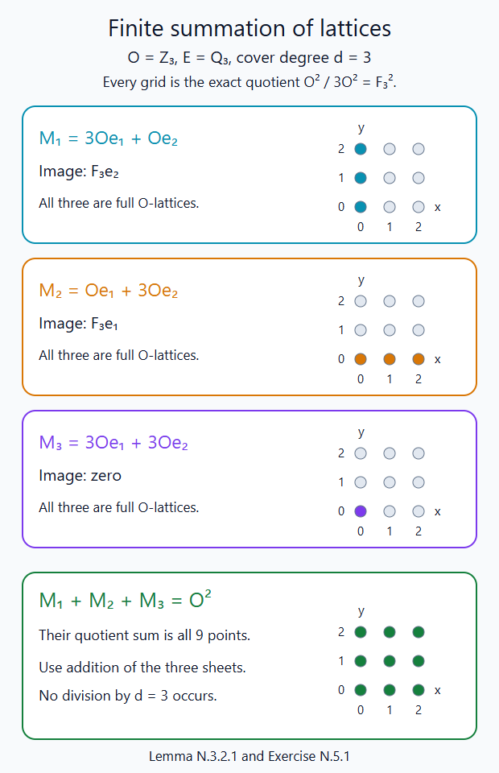
This is the exact finite quotient \(O^2/3O^2=\mathbf F_3^2\) for \(O=\mathbf Z_3\), not a Euclidean depiction of a \(3\)-adic lattice. The three summands of Exercise N.5.1 have images \(\mathbf F_3e_2\), \(\mathbf F_3e_1\), and zero. Addition gives all nine quotient points; the integral sum is \(O^2\). Lemma N.3.2.1 proves that the same finite summation gives a lattice on every stratum, without division by a cover degree. Editable SVG source.

N.3.2. Summing a lattice along a finite étale cover
Lemma N.3.2.1. Suppose \(p:Y\to T\) is finite étale surjective and \(L\) is rational lisse on \(T\). If \(p^*L\) has a lattice \(M\), the image \[ M'=\operatorname{im}\bigl(p_*M\longrightarrow p_*p^*L \xrightarrow{\mathrm{sum}}L\bigr) \tag{N.3.2.1} \] is a lattice on \(T\). If \(T\) is Noetherian, \(M'\) belongs to \(\mathcal C_O(T)\).
Proof. The sum map is defined by splitting the finite étale cover locally into finitely many copies of the base, then adding their sections. Permutation of those copies leaves the sum unchanged; descent glues it. Here is an explicit splitting cover. The lattice assertion is local on the base, so work on an affine chart. The finite locally free rank \(d\) is constant on a finite open-and-closed partition of this chart. On a rank-\(d\) piece, take in \(Y^d_T\) the locus \(Q\) of ordered tuples of distinct points. The diagonals of a finite étale map are open and closed, so \(Q\to T\) is finite étale. Each geometric fibre has \(d!\) points and is nonempty. The tautological \(d\) sections give \(\coprod_{1}^{d}Q\to Y_Q\), an isomorphism on every geometric fibre. Both sides are finite locally free of rank \(d\); locally their algebra map is a square matrix whose determinant is a unit on all residue fibres and hence a unit. Thus it is an isomorphism. This proves the splitting-cover assertion directly.
On one split chart \(p_*M=\bigoplus_{i=1}^d M_i\), and (N.3.2.1) is the sum of the finitely many full lattices \(M_i\subset L\). Choose a common qc pro-étale frame chart for \(L\) and all these lattices, refining by finitely many affine pieces when needed. For each \(i\), let \(A_i\) be the invertible matrix giving \(M_i\) in the rational frame. M.2.2 applied to coefficient sheaves clears denominators in the finitely many entries of all \(A_i\) and their inverses. Consequently one \(a\geq0\) gives \[ \pi^a\widehat O^r\subset M_i\subset\pi^{-a}\widehat O^r \quad\hbox{for every }i. \tag{N.3.2.2} \]
Here is an explicit finite-reduction argument that the lattices in these bounds vary locally constantly. Record the matrices \(\pi^aA_i\) and \(\pi^aA_i^{-1}\) modulo \(\pi^{2a+1}\). Their entries are sections of constant finite coefficient sheaves. Partition the chart into finitely many clopen pieces on which all these entries have constant values. Choose coefficient lifts \(B_i,C_i\) of those respective matrices divided by \(\pi^a\). They have entries in \(\pi^{-a}O\). On that piece, both \(B_i-A_i\) and \(C_i-A_i^{-1}\) have entries in \(\pi^{a+1}\widehat O\). Thus \[ B_iC_i\equiv I\pmod{\pi\widehat O}. \tag{N.3.2.3} \] The matrix \(B_iC_i\) has coefficient entries. On a nonempty chart a constant coefficient lies in \(\pi^q\widehat O\) precisely when it lies in \(\pi^qO\): after clearing a negative valuation, any contrary inclusion would put a nonzero constant residue class in \(\pi\widehat O\). Thus the integral congruence means \(B_iC_i\in I+\pi M_r(O)\), which is invertible: its determinant is in \(1+\pi O\), and the adjugate gives its inverse. Hence \(B_i\) is an invertible coefficient matrix. Also \[ B_i^{-1}A_i\in I+\pi M_r(\widehat O), \tag{N.3.2.4} \] because \(B_i^{-1}=C_i(B_iC_i)^{-1}\) has entries in \(\pi^{-a}O\), and \(A_i-B_i\) lies in \(\pi^{a+1}\widehat O\). Such a matrix is invertible over \(\widehat O\), by the same determinant and adjugate argument (or by its convergent coefficient inverse). Therefore \(M_i=B_i\widehat O^r\) on the piece.
The coefficient sum \(\Lambda=\sum_iB_iO^r\) is finite and torsion-free over the DVR \(O\), and spans \(E^r\). It is free of rank \(r\). For completeness, an \(O\)-submodule between the two full coefficient lattices in (N.3.2.2) is finitely generated, since their quotient is finite. A basis is obtained by choosing an element of minimal valuation in one coordinate, using that coordinate to eliminate the others, and repeating on the remaining coordinates; induction is the usual diagonal reduction over a DVR. No division by a nonunit is needed beyond the valuation divisibility it supplies. Thus \(\Lambda\otimes_O\widehat O\) is a full locally free lattice, and is exactly the sheaf sum in (N.3.2.1) on this piece. This proves that \(M'\) is locally free. The image construction makes all the local identifications descend.
Locally \(M'\) is \(\widehat O^r\), so it is complete and its reductions are finite locally constant \(O_n\)-sheaves in the pro-étale topology. Each first-reduction frame sheaf is pro-étale locally the constant finite set \(\mathrm{GL}_r(O_1)\). The pro-étale site and l-adic complexes, Lemma 7.1 makes it classical, and the locally-inhabited argument of Lemma N.3.1.1 makes it étale locally inhabited. Thus the first reduction is a classical étale lcc finite sheaf. It is bounded, giving membership in \(\mathcal C_O(T)\) on a Noetherian base.
The proof used the sum, not the average. It applies unchanged when \(d\) is divisible by \(\ell\). Surjectivity ensures that every split chart has at least one full lattice, so their sum still spans \(L\). □
N.3.3. A finite stratal lattice system
Theorem N.3.3.1. A rational lisse sheaf on a separated finite-type \(T\) has integral lisse lattices on the pieces of a finite locally closed stratification. A rational constructible sheaf has the same property after refining its constructibility stratification.
Proof. Lemma N.3.1.1 provides an étale cover carrying lattices. Refine by affine étale finite-presentation charts and choose finitely many whose images cover the qc base: images of étale maps are open, so finite choice is possible. Give their finite disjoint union the lattice obtained separately on each component. Lemma N.2.2.1 makes this cover finite étale and surjective on each of finitely many strata. Apply Lemma N.3.2.1 there.
For a rational constructible sheaf, apply this proof to its lisse restriction on every member of its finite constructibility stratification. Every stratum is again separated of finite type, hence qc. The finite collection of finite refinements is still finite. □
N.4. Global derived integral models and enhanced localization
Let \(D^b_{\mathrm{cons}}(T,\widehat E_T)\) be the full subcategory of bounded complexes whose cohomology sheaves are rational constructible: each is finite-rank locally free on a finite locally closed stratification. A common finite refinement suffices for the finitely many cohomology sheaves. These are actual completed-ring module complexes, not formal rational pro-objects.
N.4.1. Integral constructibility is preserved by finite cones
Lemma N.4.1.1. The category \(\mathcal C_O(T)\) is stable under shifts, finite triangles and retracts, as well as actual closed image, qc open extension by zero, and locally closed extension. Every rationalization \(K[1/\pi]\) for \(K\in\mathcal C_O(T)\) belongs to \(D^b_{\mathrm{cons}}(T,\widehat E_T)\).
Proof. Derived-complete complexes are stable under finite triangles and retracts: compute the inverse multiplication tower, whose homotopy limit is exact and preserves retracts. Derived reduction is exact and also preserves retracts. The first reductions of a finite triangle are consequently classical bounded constructible complexes. Classicality is stable under cones by the fully faithful bounded étale/pro-étale comparison of AG-LTF Theorem 3.3. The finite constructible coefficient category is stable under cones: on a common finite stratification, kernels, cokernels and extensions of finite lcc sheaves are finite lcc, since finitely many finite frames and their maps trivialize on an étale cover. The cohomology sequence gives boundedness and constructibility. The same argument treats retracts.
M.3 proves completeness for \(i_*\) and \(j_!\) and identifies their first reductions with the actual finite-coefficient extensions. Those finite extensions preserve constructibility by their closed-open stalk descriptions. Composing them proves the locally closed assertion.
By M.5, the restriction of \(K\) on a finite stratum is locally \(P\otimes_O\widehat O\), with \(P\) bounded finite free. Its rationalization is \(P\otimes_O\widehat E\). A finite complex of vector spaces splits into its cohomology and contractible two-term summands: choose complements to boundaries inside cycles and complements to cycles in every degree. The differential maps the latter complements isomorphically onto the next boundaries. Thus its cohomology sheaves are finite-rank free \(\widehat E\)-modules locally. Closed and open restriction are exact with their actual coefficient identities, so this is the cohomology restriction of \(K[1/\pi]\). The finite closed-open filtration also bounds the whole object. This proves the rational constructibility assertion. □
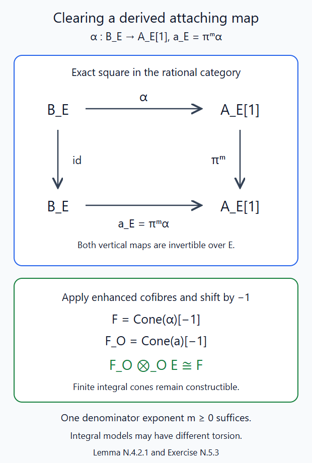
The square is exact in the enhanced rational category: \(a_E=\pi^m\alpha\), the left vertical arrow is the identity, and the right one is multiplication by \(\pi^m\) on \(A_E[1]\). Both are invertible. Their induced cofibres, then shifted by \(-1\), identify \(F\) with \(\operatorname{Cone}(a)[-1]\otimes_OE\). Lemma N.4.2.1 proves existence of this integral model; Exercise N.5.3 explains its nonuniqueness. Editable SVG source.

N.4.2. Attaching maps after one denominator is cleared
Lemma N.4.2.1. Suppose two rational complexes \(A_E,B_E\) have integral constructible models \(A,B\). Every triangle \[ A_E\longrightarrow F\longrightarrow B_E \xrightarrow{\alpha}A_E[1] \tag{N.4.2.1} \] has an integral constructible derived model for its middle object \(F\).
Proof. Theorem N.1.3.1 identifies the degree-one global mapping group with its integral localization. Exactness of localization commutes with cohomology of the mapping complex. Therefore some \(m\geq0\) and an actual integral derived morphism \(a:B\to A[1]\) satisfy \[ \alpha=\pi^{-m}a_E. \tag{N.4.2.2} \] Set \(F_O=\operatorname{Cone}(a)[-1]\). Lemma N.4.1.1 makes it integral constructible. Exact scalar extension gives the triangle with connecting map \(a_E=\pi^m\alpha\).
The commutative square from \(\alpha\) to \(a_E\) has the identity on \(B_E\) and multiplication by \(\pi^m\) on \(A_E[1]\). Both vertical arrows are isomorphisms. Functorial cofibres in the enhanced category therefore identify \(\operatorname{Cone}(\alpha)\) and \(\operatorname{Cone}(a_E)\). After shifting, \(F_O[1/\pi]\simeq F\), with the isomorphisms of triangles determined by that square. This proves existence, not uniqueness of the integral model.
Clearing the denominator is thus legitimate even when the integral cone changes: it is conjugation by an invertible rational scalar on a vertex. No assertion that an arbitrary prescribed integral model is preserved is required. □
N.4.3. Every rational constructible complex has a model
Theorem N.4.3.1. For a separated finite-type scheme \(T\) over a field, rationalization induces an enhanced equivalence \[ \mathcal C_O(T)[1/\pi] \xrightarrow{\sim} D^b_{\mathrm{cons}}(T,\widehat E_T). \tag{N.4.3.1} \] Here the left side is central scalar localization: its objects are integral constructible complexes and its mapping complexes are the integral mapping complexes tensored with \(E\). Every bounded rational constructible complex has a global integral constructible derived model.
Proof. The functor has values in the displayed target by Lemma N.4.1.1. Theorem N.1.3.1 proves full faithfulness on the mapping complexes, with composition and its coherences. Scalar localization is enhanced: multiplication by \(\pi\) is a central natural endomorphism, and its telescope localizes the mapping complexes. Composition is induced by the original composition and multiplication in \(E\). Every finite cone in that category is represented by an integral cone after clearing a denominator, by Lemma N.4.2.1. Thus this enhancement and its exact functor retain finite derived constructions.
For essential surjectivity first take a rational constructible sheaf \(F\). By Theorem N.3.3.1 choose a finite stratification carrying lattices for its lisse restrictions. Refine to a finite closed filtration \(T=T_0\supset T_1\supset\cdots\supset T_{s+1}=\varnothing\), so \(U_q=T_q\setminus T_{q+1}\) is a union of refined strata. Here is the refinement argument: each remaining irreducible component has its generic point in one of the finitely many locally closed strata; that stratum contains an open neighborhood of that generic point in its component. Remove the other components and shrink to that neighborhood. Their finite union is dense open in the remaining closed set. Its closed complement has smaller dimension; repeat. Restrictions of the lattices stay lattices.
On \(U_q\), the finite disjoint sum of those lattices is integral constructible. Its locally closed extension into \(T\) is an integral constructible model for the extended rational restriction, by Lemma N.4.1.1. Extension commutes with rationalization: \(j_!\) is exact and preserves colimits; \(i_*\) is exact and on the weakly contractible affine basis is sections of the closed quotient, so commutes with the coefficient telescope by M.2.1. Composition gives the locally closed assertion.
Closed-open exactness supplies the finite filtration of \(F\) by those extended restrictions. Starting at the empty complement, attach the next piece using its actual connecting map; Lemma N.4.2.1 supplies a global integral derived model at each step. Finite induction gives a model for \(F\). This construction does not assert that it is a single locally free lattice on the whole \(T\).
Now let \(K\) be any bounded rational constructible complex. Its finitely many nonzero cohomology sheaves have models by the preceding paragraph. The canonical good truncations give a finite Postnikov tower \[ \tau_{\leq q-1}K\longrightarrow\tau_{\leq q}K \longrightarrow H^q(K)[-q] \longrightarrow(\tau_{\leq q-1}K)[1]. \tag{N.4.3.2} \] Start below the lowest nonzero cohomology, where the truncation is zero. Apply Lemma N.4.2.1 to every attaching map. The final integral cone is a model for \(K\). This proves essential surjectivity and (N.4.3.1).
Full faithfulness concerns the actual functor; the choices used to prove essential surjectivity need not be functorial. This theorem is for finite \(E/\mathbf Q_\ell\). It does not replace the required finite scalar descent proof for arbitrary algebraic coefficients. □
N.4.4. The actual product comparison for every rational object
Corollary N.4.4.1. Let \(k\) be algebraically closed, \(\ell\ne\operatorname{char}k\), \(X/k\) separated of finite type, and \(F\in D^b_{\mathrm{cons}}(X,\widehat E_X)\). For any \(k\)-scheme \(B\), put \(Y=X\times_kB\). For a geometric point \(\bar y\), its parameter image \(\bar b\), and a geometric \(\bar t\to S=B_{(\bar b)}\), put \[ Q=Y_{(\bar y)},\qquad P=Q\times_S\bar t. \tag{N.4.4.1} \] For the actual maps \(a_Q:Q\to X\), \(a_P:P\to X\), the actual restriction \[ R\Gamma(Q,a_{Q,E}^*F)\longrightarrow R\Gamma(P,a_{P,E}^*F) \tag{N.4.4.2} \] is an isomorphism after every parameter base change as well.
Proof. Theorem N.4.3.1 gives \(F\simeq K[1/\pi]\) for \(K\in\mathcal C_O(X)\). M.6 identifies the actual integral ringed pullbacks with the coherent completed restrictions of its finite reductions and commutes rational pullback with localization. M.7 proves exactly (N.4.4.2) for that rationalization, using the canonical finite product restrictions of L.6.2.1, their homotopy limit, and affine section localization on \(Q,P\).
The isomorphism \(K[1/\pi]\simeq F\) carries that square to the square for \(F\), since pullback, sections and restriction are functorial. Thus the intrinsic map of (N.4.4.2) is being proved an isomorphism; no new map depends on the chosen model. Another model gives the same intrinsic comparison. M.7 applies to every \(B\) and repeats after every \(B'\to B\). This proves the assertion. □
N.5. Three solved checks for lattices and attaching maps
N.5.1. Summation when the degree is the residue characteristic
Exercise N.5.1 (introductory). Let \(O=\mathbf Z_3\), \(E=\mathbf Q_3\), and consider a split finite étale cover with three sheets. In \(E^2\), give the sheets lattices \[ M_1=3Oe_1+Oe_2,\quad M_2=Oe_1+3Oe_2,\quad M_3=3Oe_1+3Oe_2. \] Compute the summation image of \(M_1\oplus M_2\oplus M_3\to E^2\). Describe it modulo \(3O^2\), and decide whether division by the cover degree is used.
Solution. The image is \(M_1+M_2+M_3=O^2\): \(e_2\) comes from \(M_1\), \(e_1\) from \(M_2\), and every summand lies in \(O^2\). In the exact finite quotient \(O^2/3O^2=\mathbf F_3^2\), the three images are the vertical line \(\mathbf F_3e_2\), the horizontal line \(\mathbf F_3e_1\), and zero. Their sum is all nine points of \(\mathbf F_3^2\). Addition alone is used, despite degree \(3=\ell\). Averaging would introduce \(1/3\); it is unnecessary. □
N.5.2. An affine étale cover requiring strata
Exercise N.5.2 (intermediate). On \(T=\operatorname{Spec}k[t]\), consider \[ Y=D(t)\amalg D(t-1)\longrightarrow T. \] Show it covers \(T\), show it is not finite, and give a stratification on which it is finite étale surjective. Give its rank on each piece.
Solution. The ideals \((t)\) and \((t-1)\) are comaximal, so the principal opens cover. Their finite disjoint union is affine, étale and of finite presentation. If the map were finite, its closed-and-open component \(D(t)\to T\) would be finite. Then \(t^{-1}\) would satisfy a monic equation over \(k[t]\). Multiplying by its highest denominator power would give \(1\in(t)\), impossible.
Use \(U=D(t(t-1))\), \(Z_0=V(t)\), \(Z_1=V(t-1)\). On \(U\) there are two copies of the base, of rank two. On \(Z_0\) only the \(D(t-1)\) sheet survives, and on \(Z_1\) only the \(D(t)\) sheet survives, both of rank one. These pieces exhaust \(T\). The argument works in positive characteristic as well, since \(0\ne1\). Finite étale behavior on a stratification thus does not imply finiteness on the whole base. □
N.5.3. Denominator clearing and model nonuniqueness
Exercise N.5.3 (advanced). Let \(\alpha:B_E\to A_E[1]\), \(a_E=\pi^m\alpha\), and \(F=\operatorname{Cone}(\alpha)[-1]\), where \(a\) is integral. Give the square identifying \(F\) with \(\operatorname{Cone}(a)[-1]\) after rationalization. Show why integral models need not have a unique integral isomorphism class, already at a point.
Solution. The square is \[ \begin{array}{ccc} B_E&\xrightarrow{\alpha}&A_E[1]\\ \big\downarrow{\mathrm{id}}&&\big\downarrow{\pi^m}\\ B_E&\xrightarrow{a_E}&A_E[1]. \end{array} \] Its commutativity is \(a_E=\pi^m\alpha\). Both vertical maps are invertible over \(E\), so the induced enhanced cofibres are isomorphic. Shifting by \(-1\) gives the claimed middle-object identification. Finite-cone stability makes the integral shifted cone constructible.
At a point, \(O\) and \(O\oplus O/\pi\) in degree zero are distinct integral derived objects: their cohomology has different torsion. Both are integral constructible. Adding the finite free complex \([O\xrightarrow{\pi}O]\) in degrees \(-1,0\) to \(O\) models the latter. That two-term complex becomes contractible over \(E\), so both rational objects are \(E\). Model existence and full faithfulness after scalar localization imply no uniqueness before localization. □
Appendix O. Constructible tensor, Hom and proper-support operations
Fix a finite extension \(E/\mathbf Q_\ell\), its valuation ring \(O\), and a uniformizer \(\pi\). This appendix proves constructibility for the actual completed-ring tensor, internal Hom, ordinary image and closed-support right adjoint, with their finite reduction and rationalization maps. It then proves actual proper comparison after an arbitrary change of base, compactified proper-support image and projection for variable constructible coefficients. Four worked exercises distinguish derived tensor from degree-zero tensor, reduction over \(O\) from reduction over a quotient ring, proper support from ordinary nonproper image, and invertibility detection from equality of maps.
The free primary comparison is Bhatt–Scholze, The pro-étale topology for schemes, §§6.7.2–6.7.17. The arguments below use the actual local structure, coefficient maps and global derived models proved in Appendices M–N, and the finite programme proofs specified at their use.
O.1. Tensor products and detection after first reduction
Throughout this appendix, schemes without an explicit broader qualification are separated and of finite type over a field \(k\), with \(\ell\) invertible in \(k\). Keep \(O,E,\pi,O_n,\mathcal C_O(T)\) as in §N.1. Write \(K_n=K\otimes_O^L O_n\), using its canonical classical finite-coefficient interpretation. Tensor and internal Hom without a displayed coefficient ring are over \(\widehat O_T\), rather than over the constant sheaf \(O\). An arbitrary base change in §O.4 need not be Noetherian.
The finite inputs used below have earlier programme proofs. Ordinary finite-field image constructibility is Constructible complexes on algebraic varieties, Appendix M.4 and the coefficient paragraph of M.7. Finite proper-support constructibility is its Proposition 3.2. Bounded-below proper base change over arbitrary schemes is this lesson K.4.4.1. The actual étale/pro-étale direct-image comparison is The pro-étale site and l-adic complexes, §3, equation (3.4). Their roles are distinct: the finite-field finiteness theorem supplies constructibility of a first reduction, and the site and proper comparisons identify the maps. None is being used as a substitute for the coefficient passage proved here.
O.1.1. Completeness and first-reduction detection
Lemma O.1.1.1. A derived-complete \(\widehat O_T\)-complex \(C\) with \(C_1=0\) is zero. Exact \(O\)-linear right adjoints preserve derived completeness and commute with derived reduction over \(O\). The latter comparison is the actual coefficient comparison, with its \(O_n\)-action.
Proof. The two-term free \(O\)-resolution of \(O_n\) identifies reduction with the cofiber of \(\pi^n:C\to C\). In particular \(C_1=0\) makes \(\pi:C\to C\) invertible. All powers are invertible, so every \(C_n\) is zero. The canonical completion identity \(C=R\varprojlim_n C_n\) then gives \(C=0\).
For the assertion about a right adjoint \(F\), use the equivalent completeness criterion \[ R\varprojlim(\cdots\xrightarrow{\pi}C\xrightarrow{\pi}C)=0. \tag{O.1.1.1} \] This criterion and the canonical completion identity are the coefficient-sequence calculation in §M.4.1 and AG-LTF §4. A right adjoint preserves the homotopy limit of this diagram; its \(O\)-linearity preserves the multiplication maps. Its image therefore satisfies (O.1.1.1). Exactness preserves the two-term cofiber and its augmentation, giving \[ (FC)\otimes_O^L O_n \xrightarrow{\sim}F(C\otimes_O^L O_n). \tag{O.1.1.2} \] This is the scalar comparison obtained by tensoring the augmentation of the free resolution. Equivalently it is the constant-coefficient projection map, computed on its two finite free terms. The differential is multiplication by \(\pi^n\), so the coefficient multiplication and its null homotopy are carried to the same differential and null homotopy on the image. Thus (O.1.1.2) retains the quotient-ring action and the reduction transition maps. This argument concerns a quotient of \(O\); it makes no perfectness assertion for \(O_n\) as an \(O_m\)-module. □
O.1.2. Tensor and supported extension
Lemma O.1.2.1. Let \(i:Z\hookrightarrow T\) be a closed immersion with qc open complement \(j:U\hookrightarrow T\). For arbitrary completed-ring module complexes \(H,M,N\), the canonical tensor comparisons are \[ H\otimes^Li_*M =i_*(i^*H\otimes^LM),\qquad H\otimes^Lj_!N =j_!(j^*H\otimes^LN). \tag{O.1.2.1} \] They commute with coefficient reduction, rationalization and further tensor factors. The analogous identity holds for a locally closed extension \(a_!\).
Proof. Actual ringed restrictions are monoidal by associativity of derived extension of scalars. Section M.3 gives \(i^*i_*=1\), \(j^*j_!=1\), \(j^*i_*=0\), \(i^*j_!=0\), and the actual closed-open triangle. Restrict the first comparison to \(Z\): it is the identity of \(i^*H\otimes^LM\). Its open restriction is the identity of zero objects. The second comparison is likewise the identity on its open restriction and zero on the closed restriction. These comparisons are the maps adjoint to the indicated identity on the support. A cone whose two restrictions vanish is zero by the closed-open triangle. This proves (O.1.2.1) with its maps.
The same calculation with two tensor factors identifies either order of comparison with the identity on the supported restriction. The extension adjunction determines that map globally, so the two orders agree, including the tensor associator and unit. Reduction and rationalization are exact scalar extensions, and their restricted comparisons are the same identities. They therefore commute with (O.1.2.1). Factor a locally closed immersion as an open immersion followed by a closed one to obtain its assertion. The proof uses precisely the coefficient identities of M.3, and applies as well to a pair obtained by arbitrary base change from this pair. □
Theorem O.1.2.2. If \(K,L\in\mathcal C_O(T)\), their ordinary derived tensor \(K\otimes^L L\) is already complete and belongs to \(\mathcal C_O(T)\). Its actual finite reductions are \[ (K\otimes^L L)_n =K_n\otimes_{\underline{O_n}_T}^L L_n. \tag{O.1.2.2} \] Actual rational tensor preserves bounded rational constructibility, and \[ (K\otimes^L L)[1/\pi] =K[1/\pi]\otimes_{\widehat E_T}^L L[1/\pi]. \tag{O.1.2.3} \]
Proof. Use M.5.3.1 to express \(K\), by a finite closed-open filtration, in terms of locally closed extensions of locally perfect stratal complexes. By (O.1.2.1), tensoring an extended stratal piece with \(L\) tensors that piece on its stratum with the actual restriction of \(L\), then extends it. That restriction is complete by M.3. Locally a perfect complex has finitely many finite free terms, so its tensor with a complete complex is obtained by finitely many sums, shifts, cofibers and projective summands. These preserve completeness: the completeness criterion (O.1.1.1) commutes with finite limits and retracts in a stable category. Completeness can be checked on a pro-étale cover because slice restriction commutes with limits. Locally closed extension preserves completeness by M.3. Finite induction along the filtration proves that the ordinary tensor is complete.
Associativity of scalar extension and \(\widehat O_T\otimes_O^L O_n=\underline{O_n}_T\), proved in M.6.1.1, give (O.1.2.2). At \(n=1\), tensor of two bounded classical constructible complexes over a finite field is bounded constructible: choose a common finite partition on which their cohomology is locally constant and finite-dimensional. The stalk tensor spectral sequence has only finitely many terms and no higher Tor over the field. Its kernels and cokernels are finite locally constant on a further common trivializing cover. The finite cohomology filtrations bound the tensor. Thus its first reduction has the required constructibility, proving membership in \(\mathcal C_O(T)\).
Flat localization of the coefficient ring gives (O.1.2.3) by associativity. Every bounded rational constructible complex has an integral derived model by N.4.3.1. Apply the integral result to models and rationalize, using N.4.1.1. This proves rational tensor constructibility for all such rational objects; the tensor itself is intrinsic and does not depend on the chosen models. Ordinary ringed pullback preserves the tensor comparisons and their units, because both parenthesizations are the same scalar extension. □
O.2. Ordinary image and exceptional restriction to a closed subset
O.2.1. Ordinary image with its reductions
Theorem O.2.1.1. For a separated finite-type \(f:X\to Y\), actual ordinary derived image takes \(\mathcal C_O(X)\) to \(\mathcal C_O(Y)\), with canonical comparisons \[ (Rf_*K)_n =\nu_Y^{-1}Rf_{\mathrm{et},*}K_n,\qquad (Rf_*K)[1/\pi]=Rf_{E,*}(K[1/\pi]). \tag{O.2.1.1} \] Ordinary rational image therefore preserves bounded rational constructibility. The comparisons retain the ordinary pullback adjunction and composition of images.
Proof. Ordinary ringed derived image is right adjoint to actual ringed pullback. It is exact and \(O\)-linear. Lemma O.1.1.1 proves completeness and identifies its finite reduction with \(Rf_*(\nu_X^{-1}K_n)\). Each \(K_n\) is bounded classical by AG-LTF Proposition 5.2 and M.5. The bounded-below direct-image comparison AG-LTF (3.4), for this qcqs map, identifies that expression with the first term in (O.2.1.1). The action is the finite constant coefficient action on both sides; on a target slice both comparison maps are the same section map. Thus this is the actual coefficient comparison.
At \(n=1\), GL-PERV M.4 and the finite-field paragraph of M.7 say that \(Rf_{\mathrm{et},*}K_1\) is bounded constructible. It follows from the definition of \(\mathcal C_O(Y)\) that \(Rf_*K\) belongs to it. In particular it is bounded, and M.5 supplies its uniform stratal perfect models and finite reduction bounds. No uniform Tor estimate over all \(O_n\) had to be assumed for the image.
The second comparison is N.1.1.1, applied to the bounded input \(K\). Integral image constructibility and N.4.1.1 prove rational image constructibility for its rationalization. N.4.3.1 supplies a model for every bounded rational constructible input, so the assertion covers all such objects. Reduction was computed on the free two-term scalar resolution, the site comparison is canonical, and rationalization is the actual coefficient telescope. Their adjunction and composition compatibilities are consequently the ones proved in N.1.1.1, rather than new objectwise choices. □
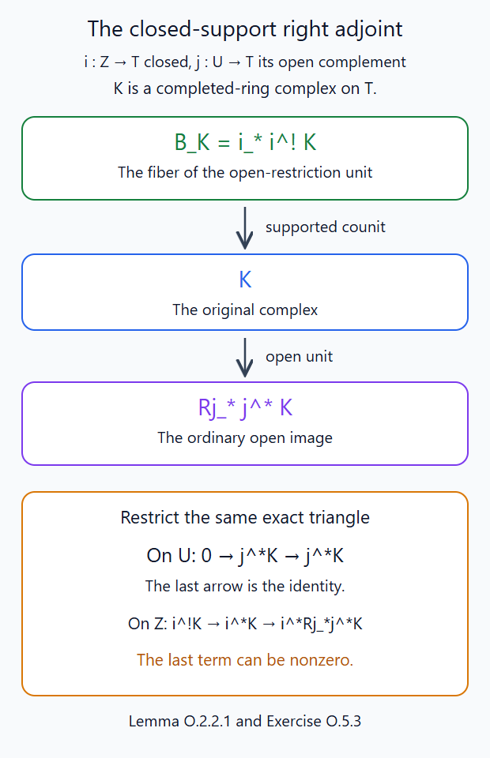
The three objects are the first three vertices of the exact triangle (O.2.2.2). Its first arrow is the supported counit and its second is the ordinary open-restriction unit. Open restriction makes that unit the identity; closed restriction retains the possibly nonzero term \(i^*Rj_*j^*K\). Lemma O.2.2.1 constructs the adjunction from this fiber. Exercise O.5.3 computes a nonzero degree-zero closed restriction for a punctured affine line. Editable SVG source.

O.2.2. Constructing the supported right adjoint
Lemma O.2.2.1. For \(i:Z\hookrightarrow T\) and its qc open complement \(j:U\hookrightarrow T\), define \[ B_K=\operatorname{Fib}(K\longrightarrow Rj_*j^*K), \qquad i^!K=i^*B_K . \tag{O.2.2.1} \] The arrow is the ordinary open-restriction unit. Then \(i^!\) is right adjoint to \(i_*\), with the actual counit represented by the first arrow of \[ i_*i^!K\longrightarrow K\longrightarrow Rj_*j^*K \longrightarrow (i_*i^!K)[1]. \tag{O.2.2.2} \] It is complete on complete inputs. Its finite reduction is actual finite-coefficient supported restriction: \[ (i^!K)_n=\nu_Z^{-1}i_{\mathrm{et}}^!K_n . \tag{O.2.2.3} \]
Proof. Open restriction of its unit is an isomorphism, since \(j^*Rj_*=1\). Hence \(j^*B_K=0\). The closed-open triangle of M.3 gives the canonical identification \(B_K=i_*i^*B_K\), proving (O.2.2.2).
For any complex \(A\) on \(Z\), open adjunction gives \[ R\operatorname{Hom}(i_*A,Rj_*j^*K) =R\operatorname{Hom}(j^*i_*A,j^*K)=0. \tag{O.2.2.4} \] Apply mapping complexes from \(i_*A\) to the fiber in (O.2.2.1). Full faithfulness of \(i_*\) identifies its result with \[ R\operatorname{Hom}(A,i^!K) =R\operatorname{Hom}(i_*A,K). \tag{O.2.2.5} \] The induced map is composition with the fiber inclusion \(B_K\to K\). It is therefore the counit, and the adjunction supplies its unit and triangle identities. This argument constructs the supported adjunction on the ordinary module category, before any finiteness assertion.
Open restriction, closed restriction and \(Rj_*\) preserve completeness: for the restrictions use the limit calculations of M.3, and for image use Lemma O.1.1.1. Fibers preserve it as well. This proves completeness of \(i^!K\).
Reduce (O.2.2.1) over \(O\). Each exact functor preserves the cofiber of multiplication by \(\pi^n\); the image comparison is the canonical site comparison in Theorem O.2.1.1. The resulting triangle is the finite-coefficient unit triangle. The same mapping calculation (O.2.2.4)–(O.2.2.5) on the étale site identifies its fiber with \(i_{\mathrm{et},*}i_{\mathrm{et}}^!K_n\). Restrict to \(Z\) to prove (O.2.2.3), including its counit. No purity theorem or stalk formula for a closed point was used. □
Theorem O.2.2.2. Actual \(i^!\) preserves integral constructibility and its canonical rational comparison is \[ (i^!K)[1/\pi] \xrightarrow{\sim}i_E^!(K[1/\pi]). \tag{O.2.2.6} \] The rational supported adjoint preserves bounded rational constructibility. Exceptional restriction along a locally closed immersion is obtained by composing this construction with open restriction, and has the corresponding reduction and rational comparisons.
Proof. For \(K\in\mathcal C_O(T)\), open restriction is constructible by M.6. Ordinary image \(Rj_*j^*K\) is constructible by Theorem O.2.1.1. Finite-cone stability N.4.1.1 makes \(B_K\) constructible; actual closed restriction preserves constructibility by M.3 and M.6. Thus \(i^!K\in\mathcal C_O(Z)\). Equivalently its first reduction in (O.2.2.3) is the closed restriction of a fiber between two bounded constructible finite-field objects.
Localize (O.2.2.1). Open and closed restrictions commute with actual scalar localization, while \(Rj_*\) commutes with it by N.1.1.1. Exact localization therefore identifies that fiber with the rational unit fiber. Formula (O.2.2.5) over \(\widehat E\) identifies the latter with the actual rational supported right adjoint. This proves (O.2.2.6) and its counit; its unit follows by transposing the identity in the same adjunction. Integral constructibility, N.4.1.1 and the model theorem N.4.3.1 give rational constructibility for every bounded rational constructible object.
For an open immersion, exceptional restriction is ordinary restriction, since \(j_!\dashv j^*\). For a locally closed immersion, compose that adjunction with \(i_*\dashv i^!\). The resulting right adjoint is \(j^*i^!\), with the composed unit and counit. The reductions and rational comparisons of its factors give those of the composite; the triangle identities follow from the two constituent adjunctions. □
O.3. Internal Hom after finite reduction
O.3.1. The DVR reduction identity
Lemma O.3.1.1. For arbitrary \(\widehat O_T\)-complexes \(K,L\), the canonical evaluation comparison is an isomorphism \[ R\mathcal Hom_{\widehat O_T}(K,L)\otimes_O^L O_n \xrightarrow{\sim} R\mathcal Hom_{\underline{O_n}_T}(K_n,L_n). \tag{O.3.1.1} \] It respects evaluation and finite coefficient transitions. No constructibility or finite projective dimension of \(K\) is required for this identity.
Proof. Internal Hom in its second variable is exact. It therefore sends the cofiber of multiplication by \(\pi^n\) on \(L\) to the cofiber of multiplication by \(\pi^n\) on its internal Hom. The two-term free scalar resolution identifies this as \[ R\mathcal Hom_{\widehat O_T}(K,L)\otimes_O^L O_n =R\mathcal Hom_{\widehat O_T}(K,L_n). \tag{O.3.1.2} \] Scalar extension and restriction are adjoint. Since \(L_n\) is already an \(\underline{O_n}_T\)-complex, their internal version identifies the right side with \[ R\mathcal Hom_{\underline{O_n}_T} (K\otimes_{\widehat O_T}^L\underline{O_n}_T,L_n). \tag{O.3.1.3} \] One can verify the internal adjunction by testing against any \(\widehat O_T\)-complex \(H\). Tensor-Hom adjunction and associativity identify the maps from \(H\) to either side with the maps from \(H\otimes^L K\) to \(L_n\). This retains the induced quotient coefficient action. M.6.1.1 identifies the tensor in (O.3.1.3) with \(K_n\), giving (O.3.1.1).
Under these adjunctions the morphism is obtained by reducing the evaluation \(K\otimes R\mathcal Hom(K,L)\to L\). The constructions use the scalar augmentation and its transition maps, so the evaluation and transition diagrams commute. Thus the proof identifies the canonical comparison, and does not merely compare cohomology dimensions. The finite free resolution was a resolution of \(O_n\) over \(O\). □
O.3.2. Constructibility of finite-field internal Hom
Lemma O.3.2.1. On \(T_{\mathrm{et}}\), internal derived Hom of two bounded constructible complexes over the finite field \(O_1\) is bounded constructible.
Proof. The proof can be made without a dualizing complex. For an open immersion \(j\), tensor-Hom and \(j_!\dashv j^*\dashv Rj_*\) give \[ R\mathcal Hom(j_!A,B)=Rj_*R\mathcal Hom(A,j^*B). \tag{O.3.2.1} \] For a closed immersion \(i\), the supported adjunction constructed by the finite version of (O.2.2.1), together with (O.1.2.1), gives \[ R\mathcal Hom(i_*A,B) =i_*R\mathcal Hom(A,i^!B). \tag{O.3.2.2} \] For example, test (O.3.2.2) against \(H\). Its left mapping complex is the mapping complex from \(H\otimes i_*A=i_*(i^*H\otimes A)\) to \(B\). Closed supported adjunction, tensor-Hom and \(i^*\dashv i_*\) identify this with maps from \(H\) to the right side. The same test proves (O.3.2.1). These are identities of evaluation maps.
On a stratum, a bounded finite-field complex with locally constant finite cohomology is étale locally perfect by M.1.1.1–M.1.3.1. Internal Hom from a perfect source is its finite dual tensor with the target: finite free terms compute this identity by evaluation, and finite projective summands preserve it. That tensor is bounded constructible.
Finite-field ordinary image is bounded constructible by the GL-PERV theorem specified in §O.1. Hence (O.3.2.1) preserves constructibility for an extended locally perfect open source. Finite supported restriction of \(B\) is bounded constructible by the fiber argument of Theorem O.2.2.2 at \(n=1\), so (O.3.2.2) gives the corresponding closed assertion. Factoring a locally closed immersion gives the assertion for a locally closed extended perfect piece.
Refine a constructible partition of the source to a finite closed filtration, as in N.4.3.1. Its closed-open triangles express the source by those pieces. Internal Hom is exact contravariantly in its first variable; apply (O.3.2.1)–(O.3.2.2) to the finitely many pieces and use finite-cone stability of bounded constructibility. This proves the result. Every induction is finite, so its upper and lower bounds are finite; no infinite source resolution or unproved singular biduality was needed. □
Theorem O.3.2.2. If \(K,L\in\mathcal C_O(T)\), actual internal Hom belongs to \(\mathcal C_O(T)\). Its reductions are (O.3.1.1), and its rationalization is the actual rational internal Hom: \[ R\mathcal Hom_{\widehat O_T}(K,L)[1/\pi] =R\mathcal Hom_{\widehat E_T}(K[1/\pi],L[1/\pi]). \tag{O.3.2.3} \] Rational internal Hom preserves bounded rational constructibility, including its evaluation, composition and global mapping-complex comparisons.
Proof. N.1.3.1 proves completeness of the integral internal Hom by expressing it as a limit of finite-coefficient Hom complexes. Lemma O.3.1.1 identifies its first reduction. That reduction is bounded constructible by Lemma O.3.2.1 and the bounded étale/pro-étale comparison: on a pro-étale slice of a classical object it identifies the same finite evaluation comparison, so its derived internal Hom is the classical finite one. Alternatively formulas (O.3.2.1)–(O.3.2.2) and perfect-source evaluation prove this site identification during the same finite dévissage. This proves membership in \(\mathcal C_O(T)\); M.5 then gives boundedness and a finite perfect stratal description of the integral Hom itself.
Equation (O.3.2.3), with the global mapping-complex comparison and composition, was proved in N.1.3.1 from the actual localization map in the second variable. Its integral source is now known constructible. Use N.4.3.1 to model two arbitrary bounded rational constructible inputs, then apply this result and N.4.1.1 to prove their internal Hom constructible. Evaluation and composition are the intrinsic tensor-Hom maps carried through the same scalar comparison. The choices proving existence of models alter neither those maps nor the rational functors. □
O.4. Actual proper comparison, proper support and projection
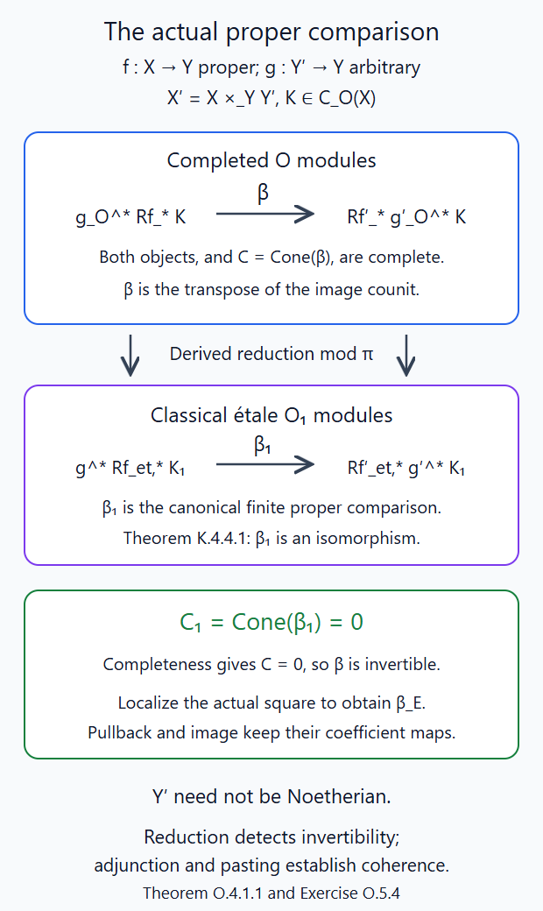
The top map is the actual transpose of the pulled-back image counit in (O.4.1.2); its first reduction is the canonical finite proper map in K.4.4.1. Theorem O.4.1.1 proves that both integral objects and their cone are complete. Vanishing of the first reduction kills the cone by Lemma O.1.1.1. The rational map is obtained by localizing this same square, using the actual image and pullback coefficient comparisons. The new base \(Y'\) is arbitrary. Coherence is proved by adjunction and pasting, as Exercise O.5.4 explains. Editable SVG source.

O.4.1. Proper comparison after arbitrary change of base
Theorem O.4.1.1. Let \(f:X\to Y\) be proper, let \(K\in\mathcal C_O(X)\), and form a cartesian square with any scheme morphism \(g:Y'\to Y\): \[ \begin{array}{ccc} X'&\xrightarrow{g'}&X\\ f'\big\downarrow&&\big\downarrow f\\ Y'&\xrightarrow{g}&Y. \end{array} \tag{O.4.1.1} \] For the actual ordinary ringed pullbacks, the canonical proper comparison is an isomorphism \[ g_O^*Rf_*K\xrightarrow{\sim}Rf'_*g_O'^*K. \tag{O.4.1.2} \] It commutes with all finite reductions and with rationalization. Consequently actual proper rational comparison holds for every bounded rational constructible input and arbitrary \(g\).
Proof. Theorem O.2.1.1 makes \(Rf_*K\) integral constructible. M.6.1.1 therefore makes the left side of (O.4.1.2) complete, even if \(Y'\) is not Noetherian. The same pullback theorem makes \(g_O'^*K\) complete; the right adjoint \(Rf'_*\) preserves completeness by Lemma O.1.1.1. Thus the cone of the actual comparison is complete.
Its reduction is exactly the finite proper comparison. Indeed M.6.1.5 identifies both pullback reductions with ordinary finite pullback, Lemma O.1.1.1 identifies image reduction with image of the reduction, and AG-LTF (3.4) identifies bounded-below classical input image on either site. The map (O.4.1.2) is obtained by transposing the pulled-back ordinary image counit. Reduction retains that counit by the two-term scalar calculation and the actual site comparison, so the reduced map is the transpose defining K.4.4.1. That theorem, which allows arbitrary bases and torsion coefficients, makes it an isomorphism. In particular the first reduction of the complete cone is zero; Lemma O.1.1.1 kills the cone.
Localize the resulting square. Pullback commutes with localization by M.6.2.1. Ordinary image commutes with it by N.1.1.1 on both sides; its input on \(X'\) is bounded by the finite stratal perfect description of M.6.1.1. These identifications prove rational (O.4.1.2) for the rationalization of \(K\). A model from N.4.3.1 proves it for every bounded rational constructible input. The image on \(Y'\) has the bound supplied by the left side of (O.4.1.2); no separate constructibility theorem over an arbitrary base was assumed.
All comparison maps are transposes of the same counits. Pulling two cartesian squares back successively therefore gives the transpose for their composite square. This proves pasting compatibility, as well as its finite and rational versions. □
O.4.2. Proper support from compactifications
Theorem O.4.2.1. For every separated finite-type \(f:X\to Y\), choose a compactification \[ X\xrightarrow{j}\overline X\xrightarrow{p}Y \quad (j\text{ open},\ p\text{ proper}), \] and define actual proper-support image by \[ Rf_!K=Rp_*j_!K . \tag{O.4.2.1} \] It preserves \(\mathcal C_O\), is independent of compactification by canonical coherent comparisons, and has the actual finite and rational comparisons \[ (Rf_!K)_n=\nu_Y^{-1}Rf_{\mathrm{et},!}K_n, \qquad (Rf_!K)[1/\pi]=Rf_{E,!}(K[1/\pi]). \tag{O.4.2.2} \] For arbitrary \(g:Y'\to Y\), its canonical base-change map is an isomorphism \[ g_O^*Rf_!K\xrightarrow{\sim}Rf'_!g_O'^*K, \tag{O.4.2.3} \] where a pulled-back compactification supplies the right side. These maps retain composition, open extension, proper image and their units and counits. Actual proper-support rational image preserves bounded rational constructibility.
Proof. The needed compactification is proved in The right adjoint of derived pushforward, Appendix N, Theorem N.E.1, for separated finite-type maps of Noetherian schemes, including nilpotents. This is precisely the scope here. M.3 proves completeness and constructibility of \(j_!K\), and Theorem O.2.1.1 proves them for its proper image. Alternatively the first reduction of (O.4.2.1) is bounded constructible by GL-PERV Proposition 3.2. Open extension is exact and commutes with scalar extension; proper image has the coefficient comparison of Theorem O.2.1.1. This proves the first equality of (O.4.2.2).
We describe the compactification comparisons. Use support-preserving proper refinements: these are proper \(h:\overline X_1\to\overline X_2\) which are the identity on \(X\) and whose inverse image of this support open is that same \(X\). Open adjunction, followed by ordinary open base change, gives \[ j_{2,!}K\longrightarrow Rh_*j_{1,!}K . \tag{O.4.2.4} \] On \(X\) the map is the identity. On the closed complement, proper comparison (O.4.1.2) identifies the right side with image of the zero restriction of \(j_{1,!}K\); it is zero. The left side is zero there as well. Closed-open detection from M.3 makes (O.4.2.4) an isomorphism.
Two compactifications have a common refinement: take the scheme-theoretic closure of the diagonal copy of \(X\) in their product over \(Y\). Both projections are proper. Above \(X\) in either factor the graph is already closed, because the other factor is separated over \(Y\), so the closure retains exactly that open copy of \(X\). Parallel refinements are equalized by their closed equalizer, still containing \(X\). Scheme-theoretic closure and equalizer have their affine kernel and localization calculation in GL-PERV AU.1; the compactification and common-refinement construction is also proved in its BG.5–BG.6.
Composing refinements composes (O.4.2.4). To check the maps, restrict to the source open: the composite and single comparison are both its identity, with the composed ordinary image counit. Open adjunction determines the whole map from that restriction. Common refinements consequently give the cocycle rule between any choices. The same proper-open exchange gives composition of proper-support images. In a square of opens with proper vertical maps, the support open in the inverse image of the target open is clopen: its inclusion is open and proper, by its closed graph into the proper inverse image. Ordinary open base change identifies image of its extension by zero with image on this clopen support. On the target complement it is zero by (O.4.1.2). Open adjunction gives the exchange isomorphism. Paste successive compactification squares for two composable maps. Both ways to paste three maps restrict to the same clopen image and the same composed counits on each support open, so open adjunction makes the two parenthesizations equal. This is the explicit pasting calculation of GL-PERV BG.6 and Cohomology with compact support, Lemma 6.1 and Theorems 7.1–9.1, now justified for actual integral modules by (O.4.1.2) and M.3. It retains canonical comparisons, rather than merely isomorphic object values.
Pulling a compactification back along any \(g\) preserves its proper map and open immersion. Theorem O.4.1.1 and actual open-extension base change M.6.1.2 compose to give (O.4.2.3). Pulling back the just-described refinement and pasting diagrams gives its compatibility with all choices and compositions. The input and image on an arbitrary new base are complete; these statements do not assume that base is Noetherian.
For rationalization, use exact scalar localization for \(j_!\) and N.1.1.1 for \(Rp_*\). This gives the second equality of (O.4.2.2) with its actual coefficient map. Its comparisons with refinements and arbitrary base change follow from the same adjunction diagrams. Constructibility follows from the integral result, N.4.1.1 and N.4.3.1. Definition (O.4.2.1) is a derived compactification construction; no claim that it is the derived functor of its degree-zero part is required. □
O.4.3. Projection for constructible variable coefficients
Theorem O.4.3.1. For \(K\in\mathcal C_O(X)\) and \(L\in\mathcal C_O(Y)\), the canonical proper-support projection map is an isomorphism \[ Rf_!K\otimes^L L \xrightarrow{\sim} Rf_!(K\otimes^L f_O^*L). \tag{O.4.3.1} \] It respects finite reduction, rationalization, tensor associativity, units, composition of maps and arbitrary base change. Thus the same assertion holds for bounded rational constructible coefficients with their actual rational operations.
Proof. On a compactification define the proper projection map by transposing \[ p_O^*Rp_*j_!K\otimes^Lp_O^*L \longrightarrow j_!K\otimes^Lp_O^*L, \tag{O.4.3.2} \] which is the ordinary image counit tensored with the coefficient factor. Use (O.1.2.1) for \(j_!\) to obtain (O.4.3.1). The refinement exchange (O.4.2.4) retains this counit and the supported tensor identities, so the map is independent of compactification.
For a locally perfect coefficient \(L\), the proper projection comparison is an isomorphism by dualizability. Locally a finite free term has its ordinary dual; finite cones and projective summands retain the evaluation and coevaluation identities, producing \(L^\vee\). For any test object \(H\), tensor duality and ordinary pullback-image adjunction identify maps from \(H\) to the two sides with maps from \(p_O^*H\otimes p_O^*L^\vee\) to \(j_!K\). Evaluation of this identification on the identity gives exactly (O.4.3.2). Thus Yoneda proves the locally perfect assertion. It can be checked on a pro-étale cover of the target because Theorem O.4.2.1 gives base change for that cover.
Now let \(a:Z\hookrightarrow Y\) be locally closed and \(L=a_!M\), with \(M\) locally perfect on \(Z\). Let \(a':X_Z\hookrightarrow X\) be its inverse image and \(f_Z:X_Z\to Z\). Supported tensor, proper-support base change and composition from Theorem O.4.2.1 identify the left side of (O.4.3.1) with \[ a_!\bigl(Rf_{Z,!}(a'^*K)\otimes^LM\bigr), \tag{O.4.3.3} \] and the right side with \[ a_!Rf_{Z,!}(a'^*K\otimes^Lf_Z^*M). \tag{O.4.3.4} \] For the latter, \(f_O^*a_!M=a'_!f_Z^*M\) by M.6.1.2, and tensor then extends from \(X_Z\) by (O.1.2.1). Compose proper supports along \(f a'=a f_Z\). For the former use (O.1.2.1) followed by \(a^*Rf_!K=Rf_{Z,!}a'^*K\). These are actual map comparisons. Under them, (O.4.3.1) is \(a_!\) of the locally perfect projection map on \(Z\), hence an isomorphism.
M.5 and the finite closed filtration express every \(L\in\mathcal C_O(Y)\) by finitely many such extended locally perfect pieces. Both sides of (O.4.3.1) are exact functors of \(L\). Finite induction along these triangles proves the general assertion. Theorem O.1.2.2 and Theorem O.4.2.1 ensure all the objects in that induction remain constructible.
Transposing the two projection maps for two coefficient factors yields the same ordinary counit tensored with both factors, with the tensor associator. Uniqueness of transpose proves their equality and the unit assertion. For two proper maps the transpose is the first counit followed by pullback of the second; it is the counit of the composite. Open-support pasting in Theorem O.4.2.1 gives the same composition assertion for proper supports. Pulling these diagrams back proves arbitrary-base-change compatibility. Reduction and rationalization preserve the tensor, supported extension and image comparisons already proved, so preserve (O.4.3.2) and its transpose. Models from N.4.3.1 then prove the assertion for all bounded rational constructible \(K,L\). This projection theorem concerns \(Rf_!\); an analogous variable-coefficient assertion for nonproper \(Rf_*\) is false, as Exercise O.5.3 shows. □
O.5. Four solved checks for tensor, Hom and support
O.5.1. The derived tensor of a torsion coefficient
Exercise O.5.1 (introductory). At a geometric point, take \(K=L=O/\pi\) in degree zero. Compute \(K\otimes_O^L L\), its rationalization and its first derived reduction. Explain why replacing derived tensor by its degree-zero part loses information.
Solution. Resolve the first factor by \([O\xrightarrow{\pi}O]\) in degrees \(-1,0\). Tensor with \(O/\pi\); its differential becomes zero. Thus the tensor has \(O/\pi\) in degrees \(-1,0\). It is complete, and its rationalization is zero because \(\pi\) is inverted.
Reducing once more over \(O\) tensors each of those terms with the same two-term resolution. The total zero-differential complex has \(O_1\) in degrees \(-2,0\) and \(O_1^2\) in degree \(-1\). Equivalently \(K_1=L_1=[O_1\xrightarrow{0}O_1]\) in degrees \(-1,0\), so (O.1.2.2) gives exactly their tensor over the field. Degree-zero tensor alone would have discarded the first degree-minus-one term and would not have this reduction. □
O.5.2. The quotient ring used in Hom reduction
Exercise O.5.2 (intermediate). At a point take \(K=O/\pi\), \(L=O\). Compute both sides of (O.3.1.1) for \(n=1\). Show that \(O_1\) has infinite projective dimension over \(O_2\), so that the proof of that identity cannot use a finite \(O_2\)-resolution.
Solution. With the cochain Hom differential \(d(f)=d_Lf-(-1)^{|f|}fd_K\), applying \(\operatorname{Hom}_O(-,O)\) to the resolution in Exercise O.5.1 gives \([O\xrightarrow{-\pi}O]\) in degrees \(0,1\), with cohomology \(O_1\) in degree one. Its derived first reduction has \(O_1\) in degrees \(0,1\) with zero differential. On the right \(K_1\) has \(O_1\) in degrees \(-1,0\), while \(L_1=O_1\) is in degree zero. Hom over the field therefore has the same two terms in degrees \(0,1\). Reduction of evaluation identifies the pairings computed by this Hom convention. The complex \([O\xrightarrow{\pi}O]\) is an isomorphic representative obtained by negating the degree-one basis; its evaluation must be transported through that basis change.
Over \(O_2\), multiplication by \(\pi\) has both kernel and image equal to the ideal \(\pi O_2\). Consequently \[ \cdots\xrightarrow{\pi}O_2\xrightarrow{\pi}O_2 \xrightarrow{\pi}O_2\longrightarrow O_1\longrightarrow0 \tag{O.5.2.1} \] is a free resolution. After tensoring with \(O_1\), all its differentials are zero, so \(\operatorname{Tor}^{O_2}_q(O_1,O_1)=O_1\) for every \(q\geq0\). A finite projective resolution would force these groups to vanish in high degrees. Lemma O.3.1.1 instead uses the finite two-term resolution over the DVR \(O\). □
O.5.3. A nonproper variable projection failure
Exercise O.5.3 (advanced). Let \(k\) be algebraically closed, \(T=\mathbf A^1_k\), \(j:T\setminus\{0\}\hookrightarrow T\), \(i:\{0\}\hookrightarrow T\), \(K=\widehat O_{T\setminus\{0\}}\) and \(L=i_*\widehat O_{\{0\}}\). Show that the ordinary-image analogue of (O.4.3.1) is not an isomorphism. Give the same example over \(\widehat E\).
Solution. The actual open restriction \(j^*L\) is zero, so the proposed right side \(Rj_*(K\otimes j^*L)\) is zero. By (O.1.2.1), its proposed left side is \(i_*i^*Rj_*K\). It has nonzero degree-zero restriction.
To check the last assertion without purity, use the strictly henselian localization \(S=T_{(0)}\). It is the filtered union of the pointed étale local rings at \(0\), each an unramified local discrete valuation ring with parameter \(t\). Its maximal ideal is \(tS\). Every nonzero element comes from one such ring and is a unit times a power of \(t\); the valuation is unchanged under a pointed étale refinement. Thus \(S\) is a domain with discrete valuation, and its puncture is \(\operatorname{Spec}\operatorname{Frac}(S)\), which is connected. Constants \(O_n\) on this puncture have degree-zero sections \(O_n\).
By the ordinary finite-image stalk formula, \((R^0j_*O_n)_0=O_n\). Derived sections have no negative cohomology. The closed-restriction limit identity M.3 and the product-cone limit therefore give \[ H^0(i^*Rj_*K)=\varprojlim_n O_n=O. \tag{O.5.3.1} \] There is no degree-zero \(\varprojlim^1\) contribution because the finite section complexes have zero negative cohomology. The universal affine closed neighborhood in M.3 is \(S\) in this case, so this calculation is also the actual pro-étale closed restriction calculation.
Localization of ordinary image and exact closed restriction identifies the rational left side with the localization of this object. Its degree-zero cohomology is \(E\ne0\), while its rational proposed right side is still zero. Proper-support projection avoids this failure because \(Rj_!=j_!\) and its closed restriction vanishes. □
O.5.4. Detecting isomorphisms does not identify two maps
Exercise O.5.4 (intermediate). Explain why first-reduction detection proves that a given morphism between complete complexes is an isomorphism when its reduction is one. Show that reduction modulo \(\pi\) does not suffice to prove equality of two integral morphisms. State how the coherence assertions of §O.4 are proved instead.
Solution. The cone of the given morphism is complete because complete objects are stable under finite cofibers. Its first reduction is the cone of the reduced morphism and is zero. Lemma O.1.1.1 makes the integral cone zero, proving the isomorphism.
At a point the two endomorphisms \(1\) and \(1+\pi\) of \(O\) have the same first reduction and are distinct. Both are invertible: \(1+\pi\) is a unit in the DVR. Thus first reduction detects neither their equality nor the exact unit or counit of an adjunction. In §O.4 the identities of comparison maps come from transposing actual counits, tensor evaluation, open adjunction and pasting their diagrams. Reduction then retains those already specified identities; it is used to detect that the specified comparison is invertible. □
Appendix P. Exceptional inverse image and structural duality
Fix a finite extension \(E/\mathbf Q_\ell\), its valuation ring \(O\), and a uniformizer \(\pi\). This appendix constructs the actual exceptional right adjoint of proper-support image on integral and bounded rational constructible categories. It proves the coherent finite scalar comparisons, the integral local models and reductions, trace-normalized smooth inverse image, singular structural biduality and the four dual exchanges. The proofs retain the unit, counit, evaluation, tensor symmetry and composition maps.
The free primary comparison is Bhatt–Scholze, The pro-étale topology for schemes, §§6.7.18–6.7.20. The finite geometric, categorical, trace and finite-field duality inputs have the earlier programme proofs specified below. In particular the integral biduality argument uses the proved canonical finite-field evaluation and a complete cone; its sign is fixed before reduction detects invertibility.
P.1. Finite coefficient adjunctions with their scalar maps
Throughout this appendix, all schemes are separated and of finite type over a field \(k\), and \(\ell\) is invertible in \(k\). Keep \(O,E,\pi,O_n\) and \(\mathcal C_O\) from N.1. A finite coefficient ring below is a finite commutative \(\ell\)-primary ring. The finite geometric adjunction and smooth orientation have earlier proofs in Constructible complexes on algebraic varieties, BF–BJ and Proposition 3.3. Its M.5–M.7 prove structural duality and canonical biduality over finite fields. We specify the scalar and mapping-complex steps here, before passing to complete coefficients.
P.1.1. Images under extension and forgetting of scalars
Lemma P.1.1.1. For a homomorphism \(\Lambda\to\Lambda'\) of finite coefficient rings, let \(a_T=-\otimes_\Lambda^L\Lambda'\) and let \(b_T\) forget the \(\Lambda'\)-action. Proper-support images have canonical comparisons \[ a_YRf_{\Lambda,!}=Rf_{\Lambda',!}a_X,\qquad b_YRf_{\Lambda',!}=Rf_{\Lambda,!}b_X. \tag{P.1.1.1} \] The second identity for ordinary image holds on bounded-below complexes. All these comparisons retain the support comparisons, tensor maps, and composition.
Proof. The constant-coefficient projection formula GL-PERV BH.5–BH.7 is proved for arbitrary coefficient complexes, by sums of free modules, finite cones and telescopes. Apply it with the \(\Lambda\)-complex \(\Lambda'\); it need not be flat or perfect. Proper image followed by open extension commutes with this extension of scalars, giving the first comparison of (P.1.1.1). The ring action is induced by the same multiplication of \(\Lambda'\). Its map is the ordinary proper counit tensored with the coefficient factor, so the composition and support compatibilities are those proved in BH.6–BH.7.
Here is a resolution check for forgetting scalars. An injective \(\Lambda'\)-sheaf \(I\), restricted to any étale object \(V\), remains injective: slice extension by zero is an exact left adjoint to restriction. Constant \(\Lambda_V\) is free of rank one over its own coefficient sheaf. Derived scalar adjunction therefore gives \[ R\operatorname{Hom}_{\Lambda_V}(\Lambda_V,b_VI) =R\operatorname{Hom}_{\Lambda'_V}(\Lambda'_V,I). \tag{P.1.1.2} \] The latter has no positive cohomology. Thus \(bI\) is acyclic for sections on every such \(V\), even though it need not be an injective \(\Lambda\)-sheaf. For an ordinary image, apply this argument on each inverse image of a target étale object; restriction to that slice also preserves injectives. A bounded-below injective \(\Lambda'\)-resolution hence computes the ordinary image after either coefficient interpretation. Its section complexes and augmentation agree, proving the ordinary-image comparison.
For a proper map, the finite relative cohomological bound of GL-PERV BG.2–BG.3 removes the boundedness restriction: an acyclic comparison between complexes of these image-acyclic objects remains acyclic after image. That bound concerns torsion sheaves on geometric fibers and applies to the underlying modules for either finite ring. Thus the same resolution comparison computes proper image on unbounded complexes. Open extension commutes with forgetting by its exact support description, giving the second comparison in (P.1.1.1). Restriction and augmentation determine the comparison maps; they commute with the proper-open exchanges and composed counits. This proves the stated compatibilities. □
P.1.2. Exceptional adjoints and coherent finite traces
Lemma P.1.2.1. Finite proper-support image has an enhanced exceptional right adjoint on bounded constructible targets, with its usual finite adjunction maps. For \(\Lambda\to\Lambda'\) its forgetting comparison is \[ b_Xf_{\Lambda'}^!B=f_\Lambda^!b_YB. \tag{P.1.2.1} \] For a smooth map \(q\) of pure relative dimension \(d\), the trace-normalized identification is \[ q_\Lambda^!B=q^*B(d)[2d]. \tag{P.1.2.2} \] These identifications and traces commute with finite scalar maps, and their mapping-complex adjunctions retain the composition homotopies.
Proof. GL-PERV BF.5–BF.6 establish representability for sheaves of modules over any constant ring: sheafification is exact, the free presheaves on site objects are compact generators before sheafification, and the represented object descends through the exact sheafification adjunction. The compact-generator telescope proof used there is The right adjoint of derived pushforward, Lemma 1.F and Theorem 1.G. BG.1–BG.6 provide exact, coproduct-preserving proper-support image for finite torsion rings; their bound and continuity arguments concern the underlying torsion sheaves. Thus the finite ordinary right adjoint exists for each ring under consideration.
The first comparison in (P.1.1.1) gives, for any test object \(F\), \[ \begin{aligned} R\operatorname{Hom}_\Lambda(F,b_Xf_{\Lambda'}^!B) &=R\operatorname{Hom}_{\Lambda'}(a_XF,f_{\Lambda'}^!B)\\ &=R\operatorname{Hom}_{\Lambda'}(Rf_{\Lambda',!}a_XF,B)\\ &=R\operatorname{Hom}_{\Lambda'}(a_YRf_{\Lambda,!}F,B)\\ &=R\operatorname{Hom}_\Lambda(Rf_{\Lambda,!}F,b_YB). \end{aligned} \tag{P.1.2.3} \] Initially the equalities may be read on every shifted ordinary Hom group. The actual enhanced realization is constructed below. The transpose of the scalar projection map defines (P.1.2.1), including its counit. For two scalar maps, their left comparisons are the same associativity of derived scalar extension. Transposition therefore gives the same right comparison for their composite.
To specify (P.1.2.2), choose \(s\) with \(\ell^s\Lambda=0\). The \(\mathbf Z/\ell^s\)-trace is the affine-line Kummer point class and its coordinate products, constructed in GL-PERV BI.2–BI.5 and BJ.1–BJ.6. Extend this trace by the first comparison of (P.1.1.1) to get \[ T_{q,\Lambda}:Rq_{\Lambda,!}\Lambda(d)[2d]\longrightarrow\Lambda. \tag{P.1.2.4} \] Projection and this trace give a pairing \[ Rq_{\Lambda,!}\bigl(q^*B(d)[2d]\bigr)\longrightarrow B; \tag{P.1.2.5} \] its transpose is the claimed smooth comparison. Under (P.1.2.1) it is the finite cyclic-ring smooth comparison on the underlying \(B\), because both transposes are the same counit, coefficient projection and trace. The cyclic-ring comparison is an isomorphism by Proposition 3.3 and BJ.5; exact faithful forgetting detects its cone. Hence (P.1.2.2) is an isomorphism for \(\Lambda\).
The trace is independent of \(s\) and is compatible with scalar maps. The source in (P.1.2.4) lies in degrees at most zero by the relative dimension bound. A map from such a source to a degree-zero ring sheaf is determined by its map on \(H^0\), as proved in BJ.5. The affine-space top class is the product of the positive Kummer point classes; reduction and scalar extension carry those classes to the same classes with the new coefficients. In top degree both traces send their class to \(1\). Nonflat scalar extension causes no difficulty here: a degree-zero module tensored derivably with a complex in degrees at most zero stays in those degrees, and its degree-zero cohomology is the ordinary tensor of \(H^0\). Consequently the extended trace and the newly constructed trace agree on \(H^0\), and therefore as derived maps. The coordinate independence, composition and parameter-base-change diagrams proved in BJ then remain the same diagrams after scalar extension. This also proves the claimed compatibility of (P.1.2.2), with its specified counit.
For completeness, we realize these finite adjunctions on mapping complexes. The smooth pairing (P.1.2.5), and the closed supported fiber of O.2.2.1 with finite coefficients, define actual maps of derived mapping complexes. Their maps on every cohomology group are the finite adjunction bijections for the corresponding shifted test object. They are therefore quasi-isomorphisms, with the trace and closed counit normalization just specified.
Choose finitely many affine source opens, each mapping into an affine target open. On each, factor the map as a closed immersion into \(\mathbf A^N\) over that target followed by its projection. Composing the closed mapping-complex adjunction, the smooth one and the target-open adjunction gives an enhanced local representing object. On an overlap both restrictions represent the same mapping-complex functor \(F\mapsto R\operatorname{Hom}(R(fj)_!F,B)\). Evaluating a natural transformation on the identity of its representing object gives the unique compatible map; evaluating its inverse likewise shows it is an equivalence. This is the mapping-complex Yoneda calculation, so the overlap maps retain their higher composition identities.
Here is the explicit gluing step for two source opens \(A,B'\) covering the source, with \(W=A\cap B'\), local representing objects \(H_A,H_{B'},H_W\), and open inclusions \(j_A,j_{B'},j_W\). Form the enhanced fiber \[ H=\operatorname{Fib} \left(Rj_{A,*}H_A\oplus Rj_{B',*}H_{B'} \longrightarrow Rj_{W,*}H_W\right), \tag{P.1.2.6} \] where the arrow is the difference of the two restriction-unit maps. Restricting to \(A\), ordinary open base change makes its second summand and its target the same open image from \(W\). Cancel that identity summand to obtain \(H|_A=H_A\); restriction to \(B'\) gives the other local object. For any source complex \(F\), its two-open extension-by-zero triangle is \[ j_{W,!}F|_W\longrightarrow j_{A,!}F|_A\oplus j_{B',!}F|_{B'} \longrightarrow F\longrightarrow j_{W,!}F|_W[1]. \tag{P.1.2.7} \] It is the usual exact cover sequence, with the first arrow having opposite signs; it can be checked on either open. Apply proper-support image, its composition comparisons, and mapping complexes into \(B\). Local adjunction identifies the resulting fiber with mapping complexes into (P.1.2.6). Thus \(H\) represents the global enhanced adjunction. Induction glues the finite cover. Each local object is bounded constructible, by the smooth formula, the closed unit fiber and finite ordinary image; those latter image bounds and constructibility follow from GL-PERV M.4 after the forgetting comparison in Lemma P.1.1.1. Finite open-image gluing preserves the bounds and constructibility. Ordinary Yoneda identifies this object with the earlier finite right adjoint and retains its unit and counit.
All gluing maps, traces and scalar comparisons came from the same mapping-complex adjunctions. Hence (P.1.2.3) is the enhanced comparison as well. No coherent enrichment of a collection of unrelated triangulated isomorphisms was assumed. □
P.1.3. Mapping into a complete target
Lemma P.1.3.1. For \(F,K\in\mathcal C_O(T)\), the actual global mapping-complex comparison is \[ R\operatorname{Hom}_{\widehat O_T}(F,K) =R\varprojlim_n R\operatorname{Hom}_{O_n,T_{\mathrm{et}}}(F_n,K_n). \tag{P.1.3.1} \] More generally, for bounded-below classical finite-coefficient targets \(B_n\), mapping into \(R\varprojlim_n\nu_T^{-1}B_n\) is the limit of the finite mapping complexes with source \(F_n\). The comparisons respect finite coefficient transitions and composition.
Proof. The target has its canonical completion expression \(K=R\varprojlim_n\nu_T^{-1}K_n\). Derived mapping into a homotopy limit is that homotopy limit of mapping complexes. Each finite target has its quotient coefficient action. Scalar adjunction identifies its mapping complex with \[ R\operatorname{Hom}_{\underline{O_n}_T} (F\otimes_{\widehat O_T}^L\underline{O_n}_T,\nu_T^{-1}K_n). \tag{P.1.3.2} \] M.6.1.1 identifies the source as \(\nu_T^{-1}F_n\). The bounded classical étale/pro-étale comparison AG-LTF Theorem 3.3 identifies (P.1.3.2) with the classical finite mapping complex. This proves (P.1.3.1); the same argument works for the displayed more general finite targets.
For \(m\geq n\), the transition takes a map to the target's transition and then uses \(F_m\otimes_{O_m}^LO_n=F_n\). This is derived associativity, not perfectness of \(O_n\) over \(O_m\). The scalar adjunction identifies exactly this transition with the transition from mapping into the complete target. Composition is the original composition of maps followed by these target and scalar comparisons. Thus all composition and transition homotopies are retained in (P.1.3.1). □
P.2. General exceptional inverse image
P.2.1. Tate lines and local integral models
Lemma P.2.1.1. The coherent finite Tate lines give an invertible complete line \(\widehat O_T(1)\), with actual reduction \(O_n(1)\). If an affine open \(W\subset X\) maps into an affine open \(V\subset Y\) and \[ W\xrightarrow{i}\mathbf A^N_V\xrightarrow{q}V \xrightarrow{v}Y \tag{P.2.1.1} \] factors \(f|_W\), with \(i\) closed and \(q\) the projection, then for \(K\in\mathcal C_O(Y)\) the complex \[ A_W=i^!q_O^*v_O^*K(N)[2N] \tag{P.2.1.2} \] is integral constructible. Its coherent finite reductions are the actual finite exceptional objects \[ (A_W)_n=(f|_W)_n^!K_n. \tag{P.2.1.3} \]
Proof. The finite line \(O_n(1)\) is obtained from the cyclic-ring roots-of-unity line by scalar extension to \(O_n\). Choose a cyclic exponent killing \(O_n\); independence and transitions follow from the root transition maps and the finite scalar comparisons of Lemma P.1.2.1. These lines are étale locally free of rank one. Their derived reductions are their ordinary coefficient reductions, since a free rank-one module has no higher Tor. The coherent system therefore defines \[ \widehat O_T(1)=R\varprojlim_n\nu_T^{-1}O_n(1). \tag{P.2.1.4} \] The coefficient-sequence reconstruction M.4.1 identifies its actual reductions and completeness. Its first reduction is a classical finite lisse line, so it belongs to \(\mathcal C_O(T)\). The simultaneous local structure M.5.3.1 identifies it pro-étale locally with the rank-one, degree-zero perfect coefficient model: its first reduction forces that single rank and degree in the minimal reconstruction. Thus it is locally \(\widehat O_T\). Its dual and evaluation are the locally free dual and evaluation, so \(\widehat O_T(1)\otimes\widehat O_T(-1)=\widehat O_T\). Tensor powers and inverse powers define all integral Tate lines, with their actual finite reductions.
The closed affine embedding in (P.2.1.1) exists: the coordinate ring of \(W\) is a finitely generated algebra over that of \(V\); finitely many generators give the closed immersion into affine space. Actual pullback preserves integral constructibility by M.6.1.1, supported restriction does so by O.2.2.2, and the finite line tensor and shift do so by O.1.2.2. Hence \(A_W\) is integral constructible.
Reduce (P.2.1.2). The actual closed-supported coefficient comparison O.2.2.3, the actual pullback comparison M.6.1.5, and the Tate reduction just proved identify its reduction with \(i_n^!q^*v^*K_n(N)[2N]\). Lemma P.1.2.1 identifies the smooth factor with \(q_n^!\), and open extension has right adjoint \(v^*\). Composed finite adjunctions identify this expression with (P.2.1.3).
These identifications preserve the whole finite diagram. For the smooth factor, this is the trace and scalar compatibility of Lemma P.1.2.1; for the closed factor it is the fiber of the same open unit, whose coefficient and counit comparisons were proved in O.2.2.1. Their composite is the transpose of the same composed counit. Thus the transitions in (P.2.1.3) are the canonical finite right-adjoint mates, not merely some reductions of isomorphic local objects. □
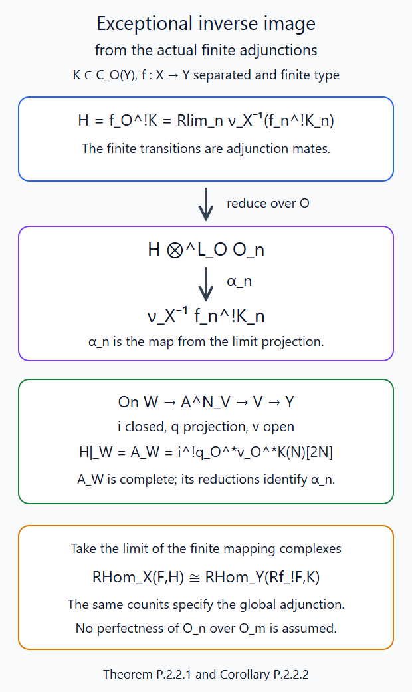
The finite transitions are the scalar-adjoint mates defined in Lemma P.1.2.1. Theorem P.2.2.1 defines \(H\) as their enhanced limit; its canonical map \(\alpha_n\) is the scalar transpose of the limit projection. On the affine factorization of P.2.1.1 the complete complex \(A_W=i^!q_O^*v_O^*K(N)[2N]\) has exactly these finite reductions and counits. This proves that \(\alpha_n\) is an isomorphism, before the mapping-complex limit supplies the global adjunction. Corollary P.2.2.2 then proves the normalized finite scalar mate without assuming quotient-ring perfectness. Editable SVG source.

P.2.2. The global inverse limit and its adjunction
Theorem P.2.2.1. For \(K\in\mathcal C_O(Y)\), form the enhanced diagram of finite exceptional objects with transitions obtained from \(K_m\to K_n\) and (P.1.2.1), and define \[ f_O^!K=R\varprojlim_n\nu_X^{-1}f_n^!K_n. \tag{P.2.2.1} \] This complex belongs to \(\mathcal C_O(X)\). The canonical maps from its limit projections identify every actual finite reduction: \[ (f_O^!K)_n\xrightarrow{\sim}\nu_X^{-1}f_n^!K_n. \tag{P.2.2.2} \] It is an enhanced right adjoint to the actual proper-support image on integral constructible categories: \[ R\operatorname{Hom}_{\widehat O_X}(F,f_O^!K) =R\operatorname{Hom}_{\widehat O_Y}(Rf_!F,K). \tag{P.2.2.3} \] Its unit and counit are the actual adjunction maps specified by this comparison and reduce to their finite counterparts.
Proof. For \(m\geq n\), forget from \(O_n\) to \(O_m\). Apply \(f_m^!\) to the finite target map \(K_m\to K_n\), then use the canonical forgetting identity (P.1.2.1) to obtain a transition to \(f_n^!K_n\). The finite scalar comparisons in Lemma P.1.2.1 retain the composition homotopies. They therefore supply the enhanced diagram used in (P.2.2.1), with its quotient actions.
Each term is complete as an \(O\)-complex: \(\pi^n\) kills it, so the inverse multiplication tower has zero limit, by the finite geometric-series calculation in N.1.3.1. Homotopy limits of complete objects are complete, since the limits of the two diagrams commute. Hence (P.2.2.1) is complete before any reduction of it is claimed.
Cover \(X\) by finitely many affine opens \(W\) admitting (P.2.1.1); a finite affine target cover and an affine cover of each inverse image provide them. Open restriction commutes with homotopy limits by M.3. Finite exceptional adjunction and proper-support composition identify the restriction of \(f_n^!K_n\) with \((f|_W)_n^!K_n\): maps from an object on \(W\) can be tested after its extension by zero into \(X\). Consequently the restriction of (P.2.2.1) is the coherent limit of (P.2.1.3). Lemma P.2.1.1 identifies this exact diagram with the reductions of the complete object \(A_W\). The canonical completion map therefore identifies \[ (f_O^!K)|_W=A_W. \tag{P.2.2.4} \] This proves local constructibility and bounds on the finite cover.
The limit projection \(f_O^!K\to\nu_X^{-1}f_n^!K_n\), transposed by scalar extension to \(O_n\), gives the map (P.2.2.2). On \(W\), (P.2.2.4) identifies it with the actual reduction projection of \(A_W\), because Lemma P.2.1.1 retained the finite counits and transitions. It is therefore an isomorphism on every \(W\), hence globally. At \(n=1\) its right side is classical bounded constructible by Lemma P.1.2.1. Together with completeness this proves membership in \(\mathcal C_O(X)\). In particular the proof did not exchange a tensor with an arbitrary inverse limit; it first identified that limit with complete local models.
Now apply Lemma P.1.3.1 and the finite enhanced adjunctions: \[ \begin{aligned} R\operatorname{Hom}(F,f_O^!K) &=R\varprojlim_n R\operatorname{Hom}_{O_n}(F_n,f_n^!K_n)\\ &=R\varprojlim_n R\operatorname{Hom}_{O_n}(Rf_{n,!}F_n,K_n)\\ &=R\operatorname{Hom}(Rf_!F,K). \end{aligned} \tag{P.2.2.5} \] The last equality uses O.4.2.2's actual proper-support reductions and completeness of \(K\). The finite scalar projection comparison of Lemma P.1.1.1 makes these adjunctions compatible with the diagram transitions: postcomposition into \(K_n\) and extension of \(F_m\) to \(F_n\) transpose to the same finite counit. Thus taking the limit in (P.2.2.5) retains the mapping-complex comparison and its composition homotopies.
Evaluate (P.2.2.3) on the identities to define the unit and counit. The inverse comparison makes their triangle identities the identities on the same mapping complexes. At finite level the reduction projections used above identify these identity transposes with the finite unit and counit; this also follows locally from the same trace and supported counit in (P.2.1.2). This proves the final normalization assertion. □
Corollary P.2.2.2. For the coherent reductions of \(K\in\mathcal C_O(Y)\), and \(m\geq n\), the actual finite scalar mate is an isomorphism \[ f_m^!K_m\otimes_{O_m}^LO_n \xrightarrow{\sim}f_n^!K_n. \tag{P.2.2.6} \] In particular the exceptional system is a derived-reduction system with uniform finite Tor bounds.
Proof. Put \(A=f_O^!K\). Theorem P.2.2.1 identifies \(A_m,A_n\) with these finite objects, including their transition maps. Scalar associativity gives \[ (A\otimes_O^LO_m)\otimes_{O_m}^LO_n =A\otimes_O^LO_n=A_n. \tag{P.2.2.7} \] Under the theorem's identifications the scalar-adjoint map induced by \(A_m\to A_n\) is precisely the finite mate in (P.2.2.6), since the transition was defined by that adjunction. This proves the specified map invertible. As \(A\in\mathcal C_O(X)\), M.5 and AG-LTF Proposition 5.2 give uniform finite Tor bounds for its reductions. This concerns the coherent reductions of the given integral input; it uses no finite projective resolution of \(O_n\) over \(O_m\). □
P.2.3. Actual rational exceptional inverse image
Theorem P.2.3.1. Actual proper-support image on bounded rational constructible categories over \(E\) has an enhanced right adjoint \(f_E^!\). For every integral constructible \(K\), the counit-defined coefficient map is an isomorphism \[ (f_O^!K)[1/\pi]\xrightarrow{\sim}f_E^!(K[1/\pi]). \tag{P.2.3.1} \] The rational exceptional inverse image preserves bounded rational constructibility.
Proof. The integral \(f_O^!\) is exact and \(O\)-linear by its finite diagram and the mapping-complex adjunction. It preserves the central scalar maps, so it induces a functor on \(\mathcal C_O[1/\pi]\). The enhanced equivalence N.4.3.1 transports this functor to the bounded rational constructible category. Its values are constructible by N.4.1.1.
It is the right adjoint of the actual rational proper-support functor. For integral models \(F,K\), localize (P.2.2.3) and apply N.1.3.1's global mapping-complex comparison, with O.4.2.2's actual rational proper-support comparison. This gives \[ \begin{aligned} R\operatorname{Hom}_{\widehat E_X} (F[1/\pi],(f_O^!K)[1/\pi]) &=R\operatorname{Hom}_{\widehat O_X}(F,f_O^!K)\otimes_OE\\ &=R\operatorname{Hom}_{\widehat O_Y}(Rf_!F,K)\otimes_OE\\ &=R\operatorname{Hom}_{\widehat E_Y} (Rf_{E,!}(F[1/\pi]),K[1/\pi]). \end{aligned} \tag{P.2.3.2} \] Every bounded rational constructible source and target has a model by N.4.3.1, and that equivalence is fully faithful on mapping complexes and their compositions. Thus (P.2.3.2) is an intrinsic adjunction, independent of the models. Transposing the localized integral counit is exactly (P.2.3.1); the right-adjoint representing property makes it an isomorphism. Its unit is the transpose of the same identity. This proves the assertion on bounded constructible categories; an adjoint on arbitrary unbounded rational sheaves is not being assumed. □
P.2.4. Transitivity and smooth normalization
Theorem P.2.4.1. Exceptional inverse image has canonical coherent transitivity \[ f_O^!g_O^!=(gf)_O^!,\qquad f_E^!g_E^!=(gf)_E^!, \tag{P.2.4.1} \] and the identity map has identity exceptional inverse image. For a smooth \(q\) of pure relative dimension \(d\), its actual identification is \[ q_O^!K=q_O^*K(d)[2d],\qquad q_E^!F=q_E^*F(d)[2d], \tag{P.2.4.2} \] with trace counit. For locally closed immersions it agrees with the supported adjunction of O.2.2. All these maps retain finite reductions and rationalization.
Proof. For \(f:X\to Y\), \(g:Y\to Z\) and a constructible test object \(H\), the actual adjunctions and O.4.2.1's composition comparison give \[ R\operatorname{Hom}(H,f_O^!g_O^!K) =R\operatorname{Hom}(Rg_!Rf_!H,K) =R\operatorname{Hom}(R(gf)_!H,K). \tag{P.2.4.3} \] Enhanced Yoneda identifies its right adjoint with the composite. The counit is \(Rg_!\) of the \(f\)-counit followed by the \(g\)-counit. For three maps both parenthesizations have exactly that three-counit composite, with the associative proper-support comparison; hence they agree and retain its higher coherences. Identity comparison follows by the identity adjunction. The finite comparisons in Theorem P.2.2.1 identify the reductions with those same finite composed counits.
For smooth \(q\), the complex \(q_O^*K(d)[2d]\) is complete constructible by M.6 and Lemma P.2.1.1. Its coherent reductions are \(q^*K_n(d)[2d]\), identified with \(q_n^!K_n\) by the trace-normalized finite formula (P.1.2.2). The coefficient and trace compatibility in Lemma P.1.2.1 makes this the actual diagram defining (P.2.2.1). Completeness therefore proves the first formula in (P.2.4.2). Its counit is the limit of the finite trace pairings, under the actual proper-support reductions and complete mapping comparison. Thus it is the trace-normalized formula, rather than a choice of a Tate shift isomorphism.
The already constructed open and closed supported right adjoints represent the same integral mapping-complex adjunction as this general construction when \(f\) is locally closed. Both objects are constructible, so enhanced Yoneda identifies them with their specified unit and counit. Composing their adjunctions gives the locally closed assertion. Localize all the adjunction comparisons using Theorem P.2.3.1; it retains the same counits, identities and tensor maps. This proves the rational formulas and all the stated compatibilities. □
P.3. Structural duality with the actual evaluation
P.3.1. Structural dualizing candidates and their reductions
Lemma P.3.1.1. For \(a_X:X\to\operatorname{Spec}k\), put \[ \Omega_X=a_{X,O}^!\widehat O_k,\qquad D_XK=R\mathcal Hom_{\widehat O_X}(K,\Omega_X). \tag{P.3.1.1} \] Both \(\Omega_X\) and \(D_XK\), for \(K\in\mathcal C_O(X)\), are integral constructible. Their canonical finite reductions are \[ (\Omega_X)_n=\omega_{X,n}=a_{X,n}^!O_n,\qquad (D_XK)_n=D_{X,n}K_n =R\mathcal Hom_{O_n}(K_n,\omega_{X,n}). \tag{P.3.1.2} \] Actual double evaluation \(\eta_K:K\to D_XD_XK\) reduces to finite double evaluation, with the same tensor symmetry and cochain signs.
Proof. The constant completed coefficient sheaf is complete with classical finite first reduction, by M.6.1.4. Theorem P.2.2.1 therefore proves constructibility of \(\Omega_X\) and its first comparison in (P.3.1.2). Internal Hom constructibility O.3.2.2 proves constructibility of \(D_XK\), and the universal DVR Hom reduction O.3.1.1 proves its second comparison. Apply that same Hom comparison once more to identify the reduction of the double dual.
Define \(\eta_K\) as the transpose of evaluation \(K\otimes D_XK\to\Omega_X\), with the tensor symmetry used to put \(D_XK\) first when taking its dual. On cochain representatives, that symmetry sends homogeneous \(x,\phi\) to \((-1)^{|x||\phi|}\phi,x\). The tensor reduction O.1.2.2 and evaluation reduction O.3.1.1 preserve exactly this evaluation and symmetry. Hence the reduction of \(\eta_K\) is the specified finite double-evaluation map. This identifies the map before using a reduction to detect whether it is invertible. □
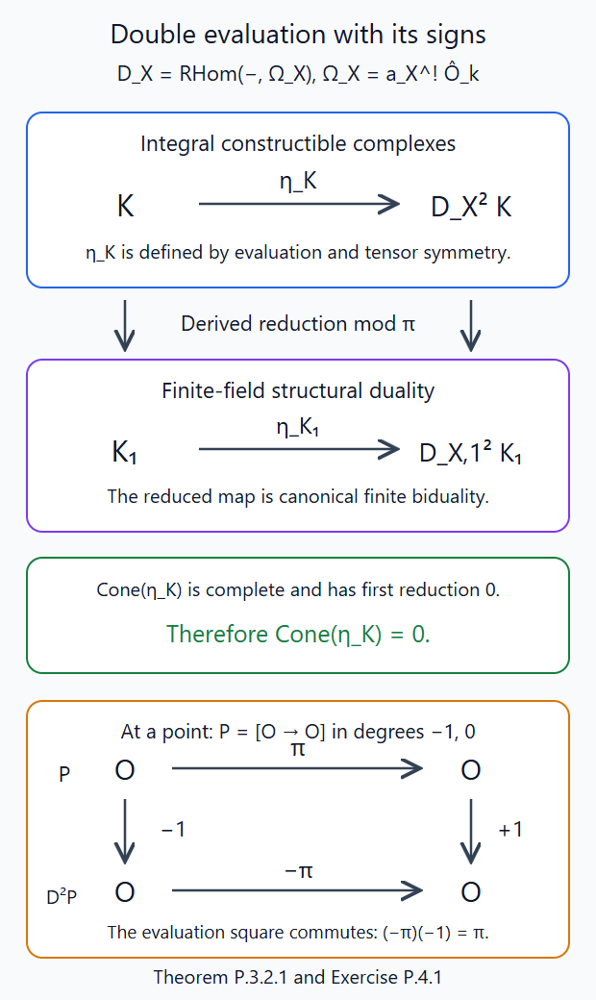
The upper evaluation uses \(D_X=R\mathcal Hom(-,a_X^!\widehat O_k)\). Lemma P.3.1.1 proves that its first reduction is canonical finite-field evaluation, whose programme proof is GL-PERV M.5–M.7. The complete-cone argument of Theorem P.3.2.1 detects that specified map as invertible. The lower square is the exact coefficient calculation of Exercise P.4.1: \(d_P=\pi\), \(d_{D^2P}=-\pi\), and evaluation in degrees \(-1,0\) has scalars \(-1,+1\). Its commutativity verifies the sign before any reduction. Editable SVG source.

P.3.2. Integral and rational biduality
Theorem P.3.2.1. The actual double-evaluation map is an isomorphism for every \(K\in\mathcal C_O(X)\): \[ \eta_K:K\xrightarrow{\sim}D_XD_XK. \tag{P.3.2.1} \] For \(\Omega_{X,E}=\Omega_X[1/\pi]\) and \(D_{X,E}=R\mathcal Hom_{\widehat E_X}(-,\Omega_{X,E})\), the corresponding canonical rational evaluation is an isomorphism on every bounded rational constructible complex. Integral and rational duality agree under actual coefficient localization.
Proof. Lemma P.3.1.1 identifies the first reduction of (P.3.2.1) with canonical structural biduality over \(O_1\). This is the finite-field biduality theorem proved in GL-PERV M.5–M.7: M.5 constructs the structural dual and its evaluation comparisons, M.6 proves singular biduality by proper trace, finite-support dimension induction and affine closure, and M.7's finite-field argument replaces the finite cyclic-ring dual by finite-dimensional linear dual. Its dualizing object is precisely \(a_{X,1}^!O_1\), with the smooth trace used in Lemma P.1.2.1. Thus the reduced map is an isomorphism, on singular and nonreduced schemes as well.
The source and target of (P.3.2.1) are complete by Lemma P.3.1.1. Their enhanced cone is complete and has first reduction zero. O.1.1.1 therefore kills that cone, proving the specified integral evaluation invertible. This proof detects invertibility of an already identified map. It does not deduce an equality of maps from agreement modulo \(\pi\).
N.1.3.1 and O.3.2.2 identify the localization of integral duality with the actual rational internal Hom into \(\Omega_{X,E}\), including evaluation and composition. Localizing (P.3.2.1) therefore gives the rational double-evaluation isomorphism for each integral model. N.4.3.1 supplies a model for every bounded rational constructible object, and its enhanced full faithfulness transports that canonical evaluation to the intrinsic rational evaluation. Hence the assertion holds for all such rational objects. The argument uses finite-field structural duality for the first reduction, not a purported injectivity of the DVR as a module over itself. □
P.3.3. The four dual exchanges
Theorem P.3.3.1. For integral constructible inputs, the actual evaluation-and-counit comparisons are coherent isomorphisms \[ \begin{aligned} D_YRf_!K&=Rf_*D_XK,& D_Xf_O^*A&=f_O^!D_YA,\\ D_YRf_*K&=Rf_!D_XK,& f_O^!A&=D_Xf_O^*D_YA. \end{aligned} \tag{P.3.3.1} \] They have the corresponding rational forms for bounded rational constructible inputs. They retain finite reduction, rationalization and composition of maps.
Proof. Transitivity in Theorem P.2.4.1 identifies \(f_O^!\Omega_Y=\Omega_X\) by the structural maps \(a_Yf=a_X\). For a constructible test object \(H\) on \(Y\), tensor-Hom, proper-support projection O.4.3.1, exceptional adjunction and ordinary pullback-image adjunction give \[ \begin{aligned} R\operatorname{Hom}(H,D_YRf_!K) &=R\operatorname{Hom}(H\otimes Rf_!K,\Omega_Y)\\ &=R\operatorname{Hom}(Rf_!(f_O^*H\otimes K),\Omega_Y)\\ &=R\operatorname{Hom}(f_O^*H\otimes K,\Omega_X)\\ &=R\operatorname{Hom}(f_O^*H,D_XK)\\ &=R\operatorname{Hom}(H,Rf_*D_XK). \end{aligned} \tag{P.3.3.2} \] The projection in the second line includes the tensor symmetry putting its coefficient factor in the displayed order. Its Koszul sign is the same symmetry used by tensor-Hom evaluation. All displayed objects are constructible by M.6, O.1–O.4 and Theorem P.2.2.1, so enhanced Yoneda in that category proves the first isomorphism of (P.3.3.1).
For a test object \(F\) on \(X\), the second comparison is given by \[ \begin{aligned} R\operatorname{Hom}(F,f_O^!D_YA) &=R\operatorname{Hom}(Rf_!F\otimes A,\Omega_Y)\\ &=R\operatorname{Hom}(Rf_!(F\otimes f_O^*A),\Omega_Y)\\ &=R\operatorname{Hom}(F\otimes f_O^*A,\Omega_X)\\ &=R\operatorname{Hom}(F,D_Xf_O^*A). \end{aligned} \tag{P.3.3.3} \] These natural chains specify their maps: each is evaluation transposed through projection and the composed exceptional counit. Thus they retain the same evaluation maps as Lemma P.3.1.1.
Replace \(K\) by \(D_XK\) in the first isomorphism, and use (P.3.2.1) to identify \(D_X^2K=K\). Dualizing its result and using biduality of \(Rf_!D_XK\) proves the third comparison. Replace \(A\) by \(D_YA\) in the second isomorphism and use biduality of \(A\) to obtain the fourth. These are compositions of the specified first comparisons with actual evaluation and its inverse.
For composed morphisms, the chains (P.3.3.2)–(P.3.3.3) transpose evaluation through the composed proper-support projection and composed counit. Those are exactly the projections and counits of the composite, by O.4.3.1 and Theorem P.2.4.1. Uniqueness of transpose therefore proves the composition comparisons and their coherences. Finite reductions preserve every tensor, Hom, evaluation and counit map used, by O.1.2.2, O.3.1.1 and Theorem P.2.2.1. Rationalization preserves them by N.1.3.1, O.4.2.2 and Theorem P.2.3.1. Finally N.4.3.1 covers every rational input. These assertions identify the actual maps; no general assertion that structural dualizing objects commute with arbitrary base change is required here. □
P.3.4. Invertible twists and the smooth orientation
Theorem P.3.4.1. For an invertible constructible tensor object \(L\) on \(Y\), including a Tate line with a shift, the counit-defined map is an isomorphism \[ f_O^!A\otimes f_O^*L \xrightarrow{\sim}f_O^!(A\otimes L). \tag{P.3.4.1} \] It retains coefficient comparisons and the inverse-line evaluation. For an invertible object \(M\) on \(X\), \[ D_X(K\otimes M)=D_XK\otimes M^{-1}. \tag{P.3.4.2} \] The same statements hold rationally. In particular for smooth \(X/k\) of pure dimension \(d\), \[ \Omega_X=\widehat O_X(d)[2d],\qquad \Omega_{X,E}=\widehat E_X(d)[2d], \tag{P.3.4.3} \] with the positive point-class trace orientation already specified.
Proof. An inverse tensor object supplies evaluation and coevaluation satisfying the tensor triangle identities. Actual pullback is monoidal, so \(f_O^*L\) has inverse \(f_O^*L^{-1}\). For any test object \(T\), \[ \begin{aligned} R\operatorname{Hom}(T,f_O^!A\otimes f_O^*L) &=R\operatorname{Hom}(T\otimes f_O^*L^{-1},f_O^!A)\\ &=R\operatorname{Hom}(Rf_!(T\otimes f_O^*L^{-1}),A)\\ &=R\operatorname{Hom}(Rf_!T\otimes L^{-1},A)\\ &=R\operatorname{Hom}(Rf_!T,A\otimes L). \end{aligned} \tag{P.3.4.4} \] The last complex represents maps into the right side of (P.3.4.1). Its identity transpose is precisely proper-support projection followed by the exceptional counit, tensored with \(L\). Yoneda proves (P.3.4.1), and the same calculation with \(L^{-1}\) gives its inverse, by the tensor triangle identities.
For (P.3.4.2), test against \(H\). Maps from \(H\) to its left side are maps from \(H\otimes K\otimes M\) to \(\Omega_X\). Inverse-line adjunction changes them to maps from \(H\otimes K\) to \(\Omega_X\otimes M^{-1}\), equivalently from \(H\otimes M\) to \(D_XK\). Those are maps from \(H\) to \(D_XK\otimes M^{-1}\). The induced pairing is evaluation with the same inverse-line identity, proving the stated canonical comparison.
For a shifted line the inverse has the opposite shift. All rearrangements above use the graded tensor symmetry, so their Koszul signs are part of the comparison. For the orientation line \(\widehat O(d)[2d]\), the shift is even; interchanging its line factors introduces no new sign. Applying the smooth normalization (P.2.4.2) to \(a_X\) gives (P.3.4.3), with the coherent positive finite point-class traces of Lemma P.1.2.1. Reduction and rationalization preserve the tensor identities, projection and counit already used, hence every comparison above. This proves their rational forms and coefficient compatibilities. □
P.4. Four solved checks for exceptional image and duality
P.4.1. Torsion duality at a point
Exercise P.4.1 (introductory). At a geometric point, let \(K=O/\pi\) and \(\Omega=O\). Compute \(D(K)\) and \(D^2(K)\) using the standard cochain Hom convention. On the finite free resolution \(P=[O\xrightarrow{\pi}O]\) in degrees \(-1,0\), write the double-evaluation map explicitly and check its differential.
Solution. Give \(P\) bases \(e_{-1},e_0\), with \(de_{-1}=\pi e_0\). Its dual has bases \(f_0,f_1\) in degrees \(0,1\), where \(f_i\) evaluates the corresponding basis of \(P\). The cochain differential is \[ df_0=-\pi f_1,\qquad df_1=0. \tag{P.4.1.1} \] Thus \(D(K)\) has \(O/\pi\) in cohomological degree one, that is \(D(K)=(O/\pi)[-1]\). The double dual has bases \(g_{-1},g_0\) in degrees \(-1,0\), dual to \(f_1,f_0\), with \(dg_{-1}=-\pi g_0\).
Canonical evaluation is \[ \eta_P(e_{-1})=-g_{-1},\qquad \eta_P(e_0)=g_0. \tag{P.4.1.2} \] Indeed for homogeneous \(x,\phi\), its value is \(\eta_P(x)(\phi)=(-1)^{|x||\phi|}\phi(x)\). The chain identity on \(e_{-1}\) is \(d(-g_{-1})=\pi g_0=\eta_P(\pi e_0)\). Both degreewise scalars are units, so this is a chain isomorphism. Passing through \(P\simeq K\) gives \(D^2(K)=K\), with its actual evaluation. In contrast \(\operatorname{Hom}_O(O/\pi,O)=0\) in degree zero; ordinary module Hom alone would have lost this derived dual. □
P.4.2. Checking the two-open representing object
Exercise P.4.2 (intermediate). In (P.1.2.6), restrict the fiber to \(A\). Denote \(Q=Rj_{W,A,*}H_W\) and the restriction map \(H_A\to Q\) by \(r\). Show directly that \[ \operatorname{Fib}\bigl(H_A\oplus Q \xrightarrow{(r,-1)}Q\bigr)=H_A. \tag{P.4.2.1} \] Explain how this verifies the local restriction of the glued exceptional object and the cover signs.
Solution. The automorphism \[ (x,y)\longmapsto(x,y-rx) \tag{P.4.2.2} \] of \(H_A\oplus Q\), with inverse \((x,z)\mapsto(x,z+rx)\), changes its map to \((x,z)\mapsto-z\). The fiber of that projection is \(H_A\), included by \(x\mapsto(x,rx)\) in the original coordinates. This calculation works for complexes and the enhanced fiber, since the displayed maps are chain maps and inverse matrices.
Ordinary open base change identifies the restricted \(B'\)-summand and overlap target in (P.1.2.6) with this same \(Q\). Thus (P.4.2.1) proves that the glued object restricts to \(H_A\), without a stalkwise choice of gluing maps. The difference sign is the dual of the opposite signs on the overlap in the extension-by-zero cover sequence (P.1.2.7). Mapping that triangle into the target yields the same fiber; the calculation therefore verifies both the object restriction and its representing adjunction. □
P.4.3. The zero section and its inverse Tate shift
Exercise P.4.3 (intermediate). Let \(q:\mathbf A^1_k\to\operatorname{Spec}k\) and \(s:\operatorname{Spec}k\to\mathbf A^1_k\) be the zero section. Compute \(s_O^!\widehat O_{\mathbf A^1}\) and its rational counterpart. Specify how the section counit and line trace fix its normalization.
Solution. Since \(qs=1\), transitivity gives \[ s_O^!q_O^!\widehat O_k=\widehat O_k. \tag{P.4.3.1} \] Smooth normalization gives \(q_O^!\widehat O_k=\widehat O_{\mathbf A^1}(1)[2]\). Cancel the pulled-back invertible line and shift by (P.3.4.1): \[ s_O^!\widehat O_{\mathbf A^1} =\widehat O_k(-1)[-2]. \tag{P.4.3.2} \] Its sole cohomology is in degree two, with inverse Tate line. Actual rationalization gives \(\widehat E_k(-1)[-2]\).
This identification is the transpose of the composed counit for \(qs=1\). The section counit into the line dualizing object followed by the affine-line trace is the identity of \(\widehat O_k\), and similarly over \(E\). At finite level GL-PERV BJ.6's parameter-section calculation makes its generator the positive point class, whose affine-line trace is \(1\). Theorem P.2.2.1 retains that counit and Theorem P.2.4.1 retains the same trace, so this fixes the integral and rational normalization. Neither changing the orientation generator to its negative nor invoking an arbitrary absolute-purity theorem would be this specified computation. □
P.4.4. An odd cochain and the duality triangle identity
Exercise P.4.4 (advanced). Take \(O=\mathbf Z_2\), \(K=O[1]\) and \(\Omega=O\) at a point. Write \(\eta_K\), \(\eta_{DK}\), and \(D(\eta_K)\) on their dual bases, and verify \[ D(\eta_K)\,\eta_{DK}=1_{DK}. \tag{P.4.4.1} \] Explain why first reduction does not determine these signs.
Solution. Let \(e\) generate \(K\) in degree \(-1\) and \(f\) its dual in degree \(1\). Let \(g\) be dual to \(f\), in degree \(-1\), and \(h\) dual to \(g\), in degree \(1\). Double evaluation with the graded tensor symmetry gives \[ \eta_K(e)=-g,\qquad \eta_{DK}(f)=-h. \tag{P.4.4.2} \] The degree-zero map \(D(\eta_K)\) is precomposition with \(\eta_K\). Hence \(D(\eta_K)(h)=-f\), and (P.4.4.1) sends \(f\) to \(f\). The two signs cancel as required by the duality adjunction; omitting one would give the negative identity.
Modulo \(2\), both signs become \(+1\). Agreement of a proposed map with evaluation on the first reduction therefore cannot establish its integral sign. The formulas must come from the actual cochain evaluation and tensor symmetry. Over \(O\) and over \(E=\mathbf Q_2\), the negative and positive maps are distinct. An even Tate orientation shift introduces no additional parity factor, but does not remove the sign already contributed by this odd source. □
Appendix Q. Rational hyperbolic localization and weight functors
This appendix proves the rational hyperbolic and weight-functor statements over every algebraically closed ground field with \(\ell\) invertible, for every finite extension \(E/\mathbf Q_\ell\). It uses the actual operations, coefficient maps and structural duality proved in Appendices M–P. The affine-line trace yields the relative ordinary contraction calculation; the action graph then proves projective contraction and the specified hyperbolic exchange. Concentration and the parity gap give exact weight functors and natural splitting maps.
The freely accessible primary comparison is T. Richarz, Spaces with \(\mathbb G_m\)-action, hyperbolic localization and nearby cycles, §2, especially the affine-line calculation, the projective contraction lemma and the linear-space proof. The argument below gives its own proofs and specifies every used earlier programme input. Genuine equivariance supplies the action isomorphism; no automatic equivariance of arbitrary orbit-constructible objects is used.
Q.1. Rational ordinary smooth comparison and the relative affine line
Throughout this appendix let \(k\) be an algebraically closed field, let \(\ell\) be invertible in \(k\), and let \(E/\mathbf Q_\ell\) be finite. Schemes and morphisms are separated and of finite type over \(k\). Write \(D_c^b(T,E)\) for the actual bounded rational constructible category established in N.4.3, and use the operations and structural duality of O–P. An action below is algebraic. An equivariance isomorphism means an actual isomorphism \(a^*F\simeq p^*F\) on \(\mathbb G_m\times T\); a genuine equivariant object supplies this isomorphism with its unit and action cocycle. No automatic equivariance of orbit-constructible objects is asserted.
Q.1.1. The canonical ordinary comparison for a smooth change of base
Lemma Q.1.1.1. In a Cartesian square \[ \begin{array}{ccc} X'&\xrightarrow{v}&X\\ f'\downarrow&&\downarrow f\\ Y'&\xrightarrow{u}&Y \end{array} \] with \(u\) smooth, the actual ordinary-image comparison is an isomorphism on rational constructible inputs: \[ u^*Rf_*F\xrightarrow{\sim}Rf'_*v^*F. \tag{Q.1.1.1} \] The integral comparison is also an isomorphism on \(\mathcal C_O(X)\). Both are compatible with composition of squares and the coefficient comparisons.
Proof. Specify the map before testing it. It is the transpose, under \(f'^*\dashv Rf'_*\), of \[ f'^*u^*Rf_*F=v^*f^*Rf_*F \longrightarrow v^*F, \tag{Q.1.1.2} \] where the last arrow is pullback of the ordinary counit. Pullback composition specifies the first equality, so counit transposition also specifies pasting of these maps.
For an integral input \(K\), both sides of (Q.1.1.1) are complete constructible by M.6.1.1 and O.2.1.2. Their actual reductions are the corresponding finite expressions: M.6.1.5 gives the pullback maps and O.2.1.1 gives the ordinary-image maps. Those comparisons preserve the counit used in (Q.1.1.2), so they identify the reduction of the specified map, not just its source and target.
At the first reduction the coefficient ring is the finite field \(O_1\). Its underlying sheaves are killed by an invertible power of \(\ell\). The finite ordinary smooth comparison was proved in B.3.1–B.3.6 for all bounded-below such complexes and all qcqs ordinary maps. That proof's successive curve-coordinate comparisons are the same counit transpose (Q.1.1.2). Coefficient forgetting commutes with the finite ordinary images by P.1.1.1; exact faithful forgetting therefore identifies this finite-field comparison as an isomorphism of coefficient complexes. The cone of the integral map is complete with first reduction zero. O.1.1.1 kills that cone, proving the integral assertion.
Now take an integral model for \(F\), which N.4.3.1 supplies without an equivariance requirement on that model. Actual pullback and ordinary-image localization comparisons identify localization of (Q.1.1.2) with the rational counit transpose. Hence the specified rational map is the localization of the integral isomorphism. Enhanced full faithfulness in N.4.3.1 removes the model choice. Pasting holds because each map transposes the composed pullback counit; finite reductions and localization preserve precisely those counits. □
Q.1.2. The trace determines ordinary affine-line homotopy
Lemma Q.1.2.1. For \(q:\mathbf A^1_S\to S\) and any \(B\in D_c^b(S,E)\), the ordinary adjunction unit and restriction along every section \(s:S\to\mathbf A^1_S\) are inverse isomorphisms: \[ B\xrightarrow{\sim}Rq_*q^*B \longrightarrow s^*q^*B=B. \tag{Q.1.2.1} \] The trace counit \(Rq_!q^!B\to B\) is an isomorphism. These statements hold integrally on \(\mathcal C_O(S)\), with their actual finite reductions.
Proof. First establish the trace, including its map. GL-PERV BI.2, equation (BI.6), proves \[ Rq_!\Lambda(1)[2]\xrightarrow{\operatorname{Tr}_q}\Lambda \tag{Q.1.2.2} \] an isomorphism for finite cyclic coefficients. Its proof splits \(R(\mathbf P^1_S\to S)_*\Lambda\) by the unit and the positive Kummer class of \(\mathcal O(1)\), then uses the infinity-section open–closed triangle. Restriction at infinity is projection onto the unit summand because the restricted line bundle is trivial. The remaining summand is exactly (Q.1.2.2). BI.2 proves that the map retains base change; it also computes the full complex, rather than only its top group.
Extend this specified trace to \(O_n\) using the actual finite scalar projection P.1.1.1. No flatness of \(O_n\) over the cyclic ring is required: derived scalar extension of the isomorphism (Q.1.2.2) is still an isomorphism. P.1.2.1 identifies the extended trace with the trace defining the finite smooth adjunction. The integral affine-line trace of P.2.4.1 has those exact finite reductions, by O.4.2.2 and P.2.2.1. Its source and target are complete; the cone has first reduction zero. Therefore it is an isomorphism. Actual rationalization gives \[ Rq_!\widehat E_{\mathbf A^1_S}(1)[2] \xrightarrow{\sim}\widehat E_S. \tag{Q.1.2.3} \] For any \(B\), proper-support projection O.4.3.1 and smooth normalization P.2.4.1 identify the trace counit with \[ Rq_!q^!B =Rq_!\bigl(q^*B(1)[2]\bigr) \xrightarrow{\sim} B\otimes Rq_!\widehat E(1)[2] \xrightarrow{\,1\otimes\operatorname{Tr}_q\,}B. \tag{Q.1.2.4} \] Thus that actual counit is an isomorphism; the same argument works integrally.
Dualize (Q.1.2.4) for \(D_SB\). The actual dual exchanges P.3.3.1 and biduality P.3.2.1 identify its dual with \[ B\longrightarrow D_SRq_!q^!D_SB =Rq_*D_{\mathbf A^1_S}q^!D_SB =Rq_*q^*B. \tag{Q.1.2.5} \] This map is the ordinary unit. Indeed the dual exchanges were defined by evaluation transposed through the same exceptional counit and projection. Transposing (Q.1.2.5) under \(q^*\dashv Rq_*\) therefore gives the identity of \(q^*B\). The cancellation here is the tensor–Hom adjunction triangle: double evaluation and its dual satisfy \(D(\eta_B)\eta_{D B}=1_{D B}\). This identity follows from that adjunction's two evaluation maps and tensor symmetry, including their graded signs. Thus dualizing the exceptional counit gives the ordinary unit with its actual normalization.
The composite of the unit with restriction at \(s\) is the identity, by \(qs=1\) and the ordinary adjunction triangle. Since the unit is invertible, every such restriction is its inverse. This proves (Q.1.2.1), with its map, for arbitrary constructible \(B\), including singular \(S\). All maps used retain the coefficient comparisons of O–P. □
Q.1.3. Extension by zero and the two sections
Lemma Q.1.3.1. Let \(j:\mathbb G_m\times S\hookrightarrow\mathbf A^1_S\), \(z:S\hookrightarrow\mathbf A^1_S\) be the zero section, and \(q^\times=q|_{\mathbb G_m\times S}\). Then \[ Rq_*j_!(q^\times)^*B=0. \tag{Q.1.3.1} \] If \(K\in D_c^b(\mathbf A^1_S,E)\) has \(j^*K\simeq(q^\times)^*B\), the actual restriction is an isomorphism \[ Rq_*K\xrightarrow{\sim}z^*K. \tag{Q.1.3.2} \] Finally an endomorphism \(w:q^*B\to q^*B\) that is zero at \(0\) and invertible at \(1\) forces \(B=0\).
Proof. Apply \(Rq_*\) to the localization triangle for \(q^*B\): \[ j_!j^*q^*B\longrightarrow q^*B \longrightarrow z_*z^*q^*B\longrightarrow. \] The second arrow after image is restriction \(Rq_*q^*B\to B\), since \(qz=1\). It is the isomorphism of Lemma Q.1.2.1. Its fiber is consequently zero, proving (Q.1.3.1). Apply the same localization triangle to \(K\). Its first term has zero ordinary image by (Q.1.3.1), and its last term has image \(z^*K\), so its second arrow proves (Q.1.3.2). This uses the stated form of \(j^*K\); it asserts no ordinary base-change theorem for an arbitrary special fiber of a nonproper projection.
Restriction \(Rq_*q^*B\to B\) at \(0\) and at \(1\) is in each case the inverse of the same unit. By naturality those restrictions identify \(Rq_*w\) with \(z^*w\) and with \(s_1^*w\). Hence this one endomorphism of \(B\) is simultaneously zero and invertible. The identity of \(B\) is then zero, and \(B=0\). All calculations are calculations of the specified maps. □
Q.1.4. Retaining the actual equivariance
Lemma Q.1.4.1. Pullback, ordinary image, proper-support image, exceptional inverse image and structural duality preserve naive equivariance along equivariant maps. They preserve its unit and cocycle when those data are supplied. In particular invariant open restriction and extension by zero, and invariant closed supported restriction, preserve it.
Proof. Pullback follows from the commuting action square. For ordinary image under an equivariant \(f:X\to Y\), the squares with action maps \(a_X,a_Y\), and with projections \(p_X,p_Y\), are Cartesian. For the action square this can be seen using the inverse automorphism \((t,x)\mapsto(t,t^{-1}x)\); the projection square is the product square. Both \(a_Y\) and \(p_Y\) are smooth of relative dimension one. Lemma Q.1.1.1 gives \[ a_Y^*Rf_*F =R(1\times f)_*a_X^*F \simeq R(1\times f)_*p_X^*F =p_Y^*Rf_*F. \tag{Q.1.4.1} \] These are the actual smooth comparison maps.
For duality the exchanges of P.3.3.1 give \[ D_{\mathbb G_m\times X}a_X^*F=a_X^!D_XF,\qquad D_{\mathbb G_m\times X}p_X^*F=p_X^!D_XF. \] Dualize the given isomorphism. Smooth normalization writes both right sides as ordinary pullback followed by the same invertible line \((1)[2]\). Cancel that line. This supplies naive equivariance of \(D_XF\); its direction can be inverted to match the original direction. No structural dualizing base-change assertion was used.
Now \(Rf_!=D_YRf_*D_X\) and \(f^!=D_Xf^*D_Y\), with their actual comparisons from P.3.3.1. The cases already proved therefore give equivariance for these two functors as well. Open extension is a proper-support image, and closed supported restriction is exceptional inverse image. All constructions used natural pullback comparisons, counits, evaluation and the trace-normalized smooth line. Their composition comparisons were proved in O–P and Lemma Q.1.1.1. Pasting the action diagrams therefore carries a supplied unit and action cocycle to the same unit and cocycle after any of these operations. □
Q.2. Projective contraction over every allowed ground field
Q.2.1. The action graph, including its special fiber
Let \(A,B\) be weight vector bundles over \(S\), with trivial torus action on \(S\), and with every weight \(a_i\) of \(A\) strictly greater than every weight \(b_j\) of \(B\). Use the convention that \(\mathbf P(A\oplus B)\) parametrizes lines. Set \[ Y=\mathbf P(A\oplus B)\setminus\mathbf P(A),\qquad Z=\mathbf P(B),\qquad i:Z\hookrightarrow Y,\quad \pi:Y\to Z,\quad f=\tau\pi:Y\to S, \tag{Q.2.1.1} \] where \(\tau:Z\to S\) is proper. The projection \(\pi\) sends a line to its nonzero \(B\)-component.
Lemma Q.2.1.1. The schematic closure \(\Gamma\) of the action graph in \(\mathbf A^1_S\times_S Y\times_S\mathbf P(A\oplus B)\) lies in \(\mathbf A^1_S\times_S Y\times_S Y\). Its two projections \[ r_1,r_2:\Gamma\to\mathbf A^1_S\times_S Y \] are isomorphisms over \(\mathbb G_m\times S\), and \(r_1\) is proper. Moreover, for \(U=Y\setminus Z\), \[ r_2^{-1}(\mathbf A^1_S\times_S U)=\mathbb G_m\times_S U, \tag{Q.2.1.2} \] where the latter is the action graph on \(U\).
Proof. Work in a weight frame on \(S\). Write \(y_i,y_j\) for the first projective point and \(z_i,z_j\) for the second, with indices \(i\) in \(A\) and \(j\) in \(B\). On the graph \[ y_jz_i=t^{a_i-b_j}y_i z_j. \tag{Q.2.1.3} \] The exponent is a positive integer, so these are regular homogeneous equations on the product of projective bundles. They hold on the schematic closure. At \(t=0\), the first point is in \(Y\), so some \(B\)-coordinate \(y_j\) is invertible on a projective chart. Equations (Q.2.1.3) force every \(z_i\) with index in \(A\) to vanish. Thus the special fiber's second point lies schematically in \(Z\). Over \(t\ne0\) the closure restricts to the original graph, by localization of its defining ideal; its second point lies in \(Y\). These facts cover the underlying points of \(\Gamma\), so \(\Gamma\) factors through the open \(\mathbf A^1_S\times Y\times Y\).
The closure is closed in the projective bundle with second point in \(\mathbf P(A\oplus B)\); therefore its projection \(r_1\) to \(\mathbf A^1_S\times Y\) is proper. Over the invertible-\(t\) locus the graph gives \(r_1\) and \(r_2\) inverse action-coordinate isomorphisms. The special fiber maps into \(Z\), so the inverse image of the open complement \(U\) under \(r_2\) lies in the invertible-\(t\) locus. There the graph description and invariance of \(U\) identify it with \(\mathbb G_m\times U\), including its scheme structure. This proves (Q.2.1.2). All arguments are invariant under changes of weight frame. No weight difference was inverted, so the argument applies also when the characteristic divides one of those integers. □
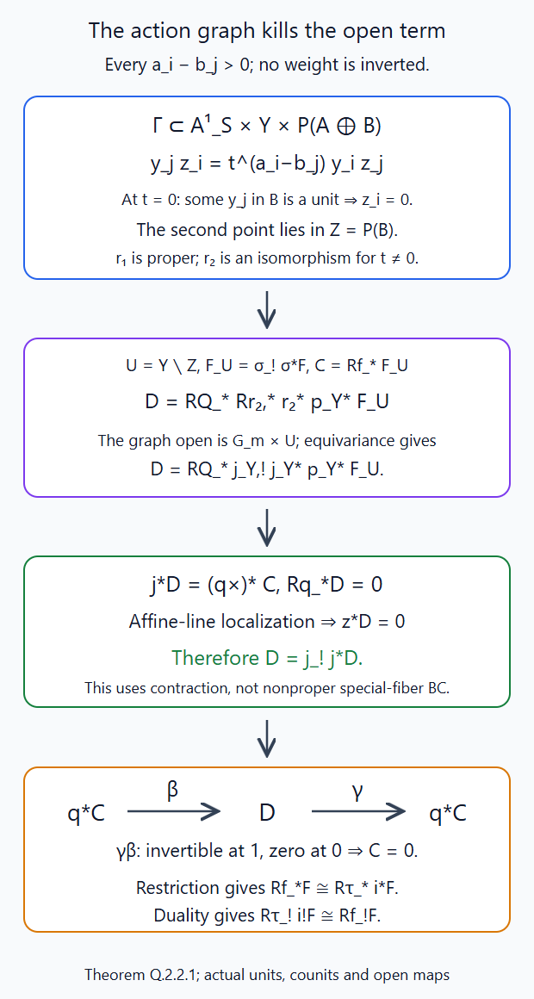
The weights satisfy \(a_i-b_j>0\), so at \(t=0\) the graph equations force the second point into \(Z=\mathbf P(B)\). The first graph projection is proper. In Theorem Q.2.2.1 the graph unit gives \(\beta:q^*C\to D\); the affine-line localization calculation gives \(z^*D=0\), and extension by zero defines \(\gamma:D\to q^*C\). Their composite is invertible at \(1\) and zero at \(0\), so Lemma Q.1.3.1 gives \(C=0\). The conclusion is the image to the trivial-action base \(S\); Exercise Q.5.3 computes why it need not be an image over \(Z\). Editable SVG source.

Q.2.2. The graph gives the restriction and counit isomorphisms
Theorem Q.2.2.1. For an actual naively equivariant \(F\in D_c^b(Y,E)\), the restriction and exceptional counit give isomorphisms \[ Rf_*F\xrightarrow{\sim}R\tau_*i^*F,\qquad R\tau_!i^!F\xrightarrow{\sim}Rf_!F. \tag{Q.2.2.1} \] The assertions also hold on the full subcategory generated from such objects by finitely many cones, shifts and direct summands. In particular they hold for genuine equivariant objects. The maps retain the unit/counit normalization of O–P.
Proof. If \(A=0\), then \(Y=Z\) and both maps are identities; if \(B=0\), both spaces are empty. Otherwise use Lemma Q.2.1.1. Write \(\sigma:U\hookrightarrow Y\) and \(F_U=\sigma_!\sigma^*F\). It suffices first to show \[ C=Rf_*F_U=0, \tag{Q.2.2.2} \] because applying \(Rf_*\) to \(F_U\to F\to i_*i^*F\to\) then gives exactly the first map of (Q.2.2.1).
Let \(Q=1_{\mathbf A^1}\times f:\mathbf A^1\times Y\to\mathbf A^1\times S\), let \(p_Y:\mathbf A^1\times Y\to Y\), and let \(q:\mathbf A^1\times S\to S\). Form the actual constructible complex \[ D=RQ_*Rr_{2,*}r_2^*p_Y^*F_U. \tag{Q.2.2.3} \] Constructibility here follows from O–P. Over the open \(\mathbb G_m\times S\), ordinary image restricts to the corresponding open image, \(r_2\) is an isomorphism, and the ordinary smooth comparison of Lemma Q.1.1.1 gives \[ j^*D=(q^\times)^*C. \tag{Q.2.2.4} \]
The two maps \(Qr_1,Qr_2\) coincide, because both projective points lie over the same \(S\)-point. Properness of \(r_1\) therefore gives \[ D=RQ_*Rr_{1,!}r_2^*p_Y^*F_U. \tag{Q.2.2.5} \] Let \(h:\mathbb G_m\times U\hookrightarrow\Gamma\) be the open graph in (Q.2.1.2). Pullback of extension by zero along \(p_Yr_2\) identifies \[ r_2^*p_Y^*\sigma_!\sigma^*F =h_!a_U^*\sigma^*F. \] On that graph \(r_1h\) is the open inclusion \(\mathbb G_m\times U\hookrightarrow\mathbf A^1\times Y\). Proper-support composition and the chosen equivariance isomorphism \(a_U^*\sigma^*F\simeq p_U^*\sigma^*F\) consequently rewrite (Q.2.2.5) as \[ D=RQ_*j_{Y,!}j_Y^*p_Y^*F_U, \tag{Q.2.2.6} \] where \(j_Y:\mathbb G_m\times Y\hookrightarrow\mathbf A^1\times Y\). These are the actual open pullback and proper-support composition comparisons; the isomorphism of \(F\) is the only equivariance input.
Push (Q.2.2.6) along \(q\). Since \(qQ=fp_Y\), ordinary image composition gives \[ Rq_*D =Rf_*R(p_Y)_*j_{Y,!}j_Y^*p_Y^*F_U=0 \tag{Q.2.2.7} \] by (Q.1.3.1) with base \(Y\). Combining (Q.2.2.4) with (Q.1.3.2) now gives \(z^*D=0\). Localization therefore makes its extension-by-zero map an isomorphism \[ j_!j^*D\xrightarrow{\sim}D. \tag{Q.2.2.8} \] This special-fiber assertion came from the affine-line calculation, rather than from ordinary nonproper base change at \(0\).
Finally construct the endomorphism that detects \(C\). Ordinary smooth comparison identifies \(q^*C=RQ_*p_Y^*F_U\). The unit of \(r_2^*\dashv Rr_{2,*}\) gives \[ \beta:q^*C\longrightarrow D. \tag{Q.2.2.9} \] Its restriction over \(\mathbb G_m\times S\) is an isomorphism, since \(r_2\) is an isomorphism there. Using (Q.2.2.8), define \[ \gamma:D \xrightarrow{\sim}j_!j^*D \xrightarrow{\,j_!(j^*\beta)^{-1}\,}j_!j^*q^*C \longrightarrow q^*C. \tag{Q.2.2.10} \] The last arrow is extension by zero. Thus \(w=\gamma\beta\) is invertible at \(1\), while \(z^*D=0\) makes it zero at \(0\). Lemma Q.1.3.1 forces \(C=0\). This proves (Q.2.2.2) and the first specified map.
By Lemma Q.1.4.1, \(D_YF\) is again naively equivariant. Apply the first assertion to it and dualize. The actual dual exchanges and biduality identify the resulting arrow as \[ R\tau_!i^!F\longrightarrow Rf_!F. \] It is the exceptional counit: the restriction map being dualized is the ordinary unit for \(i^*\dashv i_*\), and P.3.3.1 transposes that same evaluation and unit into the supported counit. Properness of \(\tau\) identifies its proper and ordinary images. Thus this is exactly the second map of (Q.2.2.1).
Both maps are natural transformations between exact functors. Objects on which they are isomorphisms form a subcategory closed under finite cones, shifts and direct summands, by their cone triangles. This proves the last assertion. The proof retained actual adjunction maps throughout and did not require an equivariant integral model of a rational object. □
Q.3. The canonical rational hyperbolic map
Q.3.1. Specify the exchange by its adjunction
Lemma Q.3.1.1. In a Cartesian square \[ \begin{array}{ccc} W&\xrightarrow{s}&X^+\\ r\downarrow&&\downarrow p^+\\ X^-&\xrightarrow{p^-}&X, \end{array} \] proper-support base change gives the canonical exchange isomorphism \[ p^{-!}Rp^+_*A\xrightarrow{\sim}Rr_*s^!A. \tag{Q.3.1.1} \] It is compatible with pasting and with the units and counits of the displayed functors.
Proof. For a constructible test object \(T\) on \(X^-\), the actual adjunctions give \[ \begin{aligned} R\operatorname{Hom}(T,p^{-!}Rp^+_*A) &=R\operatorname{Hom}(Rp^-_!T,Rp^+_*A)\\ &=R\operatorname{Hom}(p^{+*}Rp^-_!T,A)\\ &=R\operatorname{Hom}(Rs_!r^*T,A)\\ &=R\operatorname{Hom}(r^*T,s^!A)\\ &=R\operatorname{Hom}(T,Rr_*s^!A). \end{aligned} \tag{Q.3.1.2} \] The middle equality is the actual arbitrary-base proper-support comparison O.4.2.3. All expressions are constructible by O–P. Enhanced Yoneda therefore gives (Q.3.1.1), in the displayed direction, as the mate of that specified comparison. Composing the chains for two squares composes their proper-support comparison and their adjunction counits. O.4.2.1 and P.2.4.1 prove those pasting identities, so the single and composed chains specify the same map. This also proves the asserted unit and counit compatibility. □
Let \(X\) have specified invariant affine charts with homogeneous coordinate generators, or a specified equivariant closed embedding in a finite projective weight space. Its fixed, attracting and repelling schemes are \(X^0,X^\pm\), with maps \(p^\pm,q^\pm,i^\pm\) as in §12. The algebraic coordinate construction there applies over \(k\): a homogeneous coordinate on an equivariant affine line is its value at \(1\) times a nonnegative permitted power, and a prohibited power has coefficient zero. For projective charts the minimum and maximum nonzero weight give the two limits. These calculations use coefficient ideals, including nilpotents, and supply the actual schemes in every characteristic.
For \(W=X^+\times_X X^-\), let \(e:X^0\hookrightarrow W\) be the fixed diagonal. It is open and closed by that same weight-chart calculation: on a projective chart, equal attracting and repelling limit weights force all prohibited coordinates to vanish; distinct pairs of limit weights index the remaining open-and-closed summands. On an affine chart \(W=X^0\) directly.
Define \(\beta_X(F)\) by the following four actual maps: \[ \begin{aligned} Rq^-_*p^{-!}F &\longrightarrow i^{-*}p^{-!}F\\ &\longrightarrow i^{-*}p^{-!}Rp^+_*p^{+*}F\\ &\xrightarrow{\sim}i^{-*}Rr_*s^!p^{+*}F\\ &\longrightarrow i^{+!}p^{+*}F \longrightarrow Rq^+_!p^{+*}F. \end{aligned} \tag{Q.3.1.3} \] The first map is restriction along the section \(i^-\). The second is the ordinary \(p^+\)-unit. The third is (Q.3.1.1). For the fourth, project to \(e_*e^!\) in the open-and-closed decomposition of \(W\), then use \(re=i^-\), \(se=i^+\), and \(i^{-*}i^-_*=1\). This projection is the ordinary unit for the open-and-closed inclusion, with \(e^!=e^*\). The last arrow is the \(i^+\)-counit followed by proper-support image; \(q^+i^+=1\). Thus (Q.3.1.3) specifies the canonical map on every constructible input before any equivariance assertion.
Q.3.2. The linear-space proof with both vanishing terms
Theorem Q.3.2.1. For a finite weight vector space \(V=A\oplus B\oplus V_0\), with positive, negative and zero weights respectively, \(\beta_V(F)\) is an isomorphism for every naively equivariant \(F\in D_c^b(V,E)\), and for their finite cone, shift and summand closure.
Proof. Regard \(S=V_0\) as the base with trivial action. Then \(V^+=A\times S\), \(V^-=B\times S\), and \(V^0=S\). Their maps \(p^\pm\) are closed embeddings and \(W=S\). Theorem Q.2.2.1 applied to \(\mathbf P(C\oplus\mathcal O_S)\setminus\mathbf P(C)\), with \(C=A\) or \(B\) and the action inverted for \(B\), gives the actual vector contraction maps \[ Rq^-_*K\xrightarrow{\sim}i^{-*}K,\qquad i^{+!}K\xrightarrow{\sim}Rq^+_!K. \tag{Q.3.2.1} \] Lemma Q.1.4.1 supplies equivariance for all restrictions used. If either \(A\) or \(B\) is zero, the middle part of (Q.3.1.3) is the identity under its actual section and closed adjunctions, and (Q.3.2.1) proves the assertion directly.
Otherwise let \(j:V\setminus(A\times S)\hookrightarrow V\) and \(F_0=j_!j^*F\). Apply \(i^{-*}p^{-!}\) to \[ F_0\longrightarrow F\longrightarrow Rp^+_*p^{+*}F\longrightarrow. \tag{Q.3.2.2} \] Because \(V^+\cap V^-=S\) schematically, (Q.3.1.1) identifies the last term with \(i^{+!}p^{+*}F\). Its preceding arrow is precisely the unit-and-exchange middle map of (Q.3.1.3). It is enough to show \[ Rq^-_*p^{-!}F_0=0, \tag{Q.3.2.3} \] since vector contraction identifies this object with the first term of the image triangle.
For this vanishing use two projective contractions. Put \[ Y=\mathbf P(A\oplus B\oplus\mathcal O_S)\setminus\mathbf P(B), \quad Z=\mathbf P(A\oplus\mathcal O_S),\quad f:Y\to S. \] Let \(\rho:V\hookrightarrow Y\) be the chart with last coordinate nonzero. The composite \(i'=\rho p^-:B\times S\hookrightarrow Y\) is closed: its \(A\)-coordinates vanish, and excluding \(\mathbf P(B)\) forces that last coordinate to be nonzero. Let \(j':Y'=Y\setminus(B\times S)\hookrightarrow Y\), and put \(\bar F=\rho_!F_0\). The supported triangle is \[ i'_*i'^!\bar F\longrightarrow\bar F \longrightarrow Rj'_*j'^*\bar F\longrightarrow. \tag{Q.3.2.4} \] After \(Rf_*\), its first term is (Q.3.2.3), because \(fi'=q^-\) and \(\rho^!\rho_!=1\), with the actual transitivity comparisons.
For the second term, invert the action. Every inverted weight of \(B\) is strictly above those of \(A\oplus\mathcal O_S\). Theorem Q.2.2.1 therefore gives \[ Rf_*\bar F=R(Z\to S)_*i_Z^*\bar F=0. \tag{Q.3.2.5} \] Indeed \(Z\cap\rho(V)=A\times S\), where \(F_0\) is zero, and extension by zero is zero on the rest of \(Z\).
For the third term observe schematically \[ Y'=\mathbf P(A\oplus B\oplus\mathcal O_S) \setminus\mathbf P(B\oplus\mathcal O_S). \] Still using the inverse action, its high-weight bundle is \(B\oplus\mathcal O_S\) and its low-weight bundle is \(A\). Every high weight is at least zero and every low weight is negative. Theorem Q.2.2.1 contracts its ordinary image to \(\mathbf P(A)\). But \(j'^*\bar F\) is extension by zero from the last-coordinate chart and restricts to zero on \(\mathbf P(A)\). Hence \[ Rf_*Rj'_*j'^*\bar F =R(Y'\to S)_*j'^*\bar F=0. \tag{Q.3.2.6} \] Ordinary composition gives the displayed equality. All objects in these two contractions retain naive equivariance by Lemma Q.1.4.1. Thus the image triangle (Q.3.2.4) proves (Q.3.2.3).
The image of (Q.3.2.2) now makes its middle arrow an isomorphism. Combining it with the actual restriction and counit isomorphisms (Q.3.2.1) proves \(\beta_V(F)\) invertible. Natural transformations between exact functors retain invertibility under the stated finite operations on objects, which proves the final assertion. □
Q.3.3. Closed affine subvarieties and the actual comparison map
Lemma Q.3.3.1. Let \(b:X\hookrightarrow V\) be an equivariant closed immersion into a weight vector space. Closed images identify \[ L_V^\pm b_*F=b^0_*L_X^\pm F,\qquad L^-_X=Rq^-_*p^{-!},\quad L^+_X=Rq^+_!p^{+*}, \tag{Q.3.3.1} \] and identify \(\beta_V(b_*F)\) with \(b^0_*\beta_X(F)\). Consequently \(\beta_X(F)\) is an isomorphism for naively equivariant constructible \(F\).
Proof. The homogeneous ideal defining \(X\) gives the schematic identities \[ X^\pm=X\times_VV^\pm,\qquad X^0=X\times_VV^0. \tag{Q.3.3.2} \] To verify them over an arbitrary test ring, apply each homogeneous defining equation to the equivariant affine-line map represented by a point of \(V^\pm\). Its value is its value at \(1\) times the permitted nonnegative power; equations of prohibited degree vanish identically. If the value at \(1\) lies in \(X\), every defining equation is therefore zero along the entire map. The converse is evaluation at \(1\). The fixed calculation is the degree-zero version. This proves (Q.3.3.2), including nilpotent coefficients.
Proper closed base change gives the positive pullback comparison, and (Q.3.1.1) gives the negative exceptional/ordinary-image comparison. Ordinary composition for \(q^-\) and proper-support composition for \(q^+\) now give (Q.3.3.1), since the induced \(b^\pm,b^0\) are closed and their ordinary images are their proper-support images.
Check the transformation as well. The \(p^+\)-unit in (Q.3.1.3) under these closed comparisons is the pulled-back restriction unit; transposition under the closed adjunction tests identifies it with the \(X\)-unit. The middle exchange is the mate (Q.3.1.2). Pasting its proper-support base-change square with the closed square gives the same mate, by O.4.2.1. The fiber products satisfy \(W_X=X\times_VW_V\), and the fixed summand \(e_X\) is the inverse image of \(e_V\). Proper closed base change therefore identifies the open-and-closed projector with the \(X\)-projector. At both ends, \(q^\pm i^\pm=1\) and proper-support composition identify respectively the same section restriction and section counit. These checks account for every arrow in (Q.3.1.3), proving the equality of the specified transformations.
Theorem Q.3.2.1 applies to \(b_*F\), whose equivariance follows from Lemma Q.1.4.1. Closed image \(b^0_*\) is conservative: its inverse-image composite is the identity, so a cone with zero closed image is zero. Thus (Q.3.3.1) proves the last assertion. Every finite-type graded affine algebra has a finite homogeneous generating set, since each of finitely many algebra generators is a finite sum of its graded components. Sending coordinates to those components gives an equivariant closed immersion into a finite weight affine space. This includes every affine chart in the stated hypotheses. □
Q.3.4. The projective theorem and the invariant open restriction
Theorem Q.3.4.1. Suppose \(X\) has a specified equivariant closed embedding into a finite projective weight space. Then the canonical map \[ \beta_X(F): Rq^-_*p^{-!}F\xrightarrow{\sim}Rq^+_!p^{+*}F \tag{Q.3.4.1} \] is an isomorphism for every naively equivariant \(F\in D_c^b(X,E)\), and their finite cone, shift and summand closure. In particular the assertion holds for genuine equivariance on every finite projective Grassmannian support stage. Restriction to invariant fixed-point charts is restriction of this same map.
Proof. Eigen-coordinate opens of the projective weight space are invariant affine spaces, with weights given by differences from the chosen eigen-coordinate weight. Their intersections \(U\) with \(X\) are invariant closed affine subvarieties of those affine spaces. They cover \(X^0\): a fixed projective line belongs to a weight space and has some nonzero coordinate there.
For an invariant open \(U\subset X\), the evaluation-at-zero descriptions give \[ U^\pm=X^\pm\times_{X^0}U^0. \tag{Q.3.4.2} \] Here is the open containment needed for the identity. If the limit of an orbit lies in \(U\), an orbit point in the invariant closed complement would make the whole nonzero-parameter orbit lie in that complement; its closure would then put the limit there as well, a contradiction. This argument over each algebraically closed residue field proves that the inverse image of \(X\setminus U\) in the represented affine-line map is empty. Factoring through an open is exactly that underlying-point containment, also for nonreduced test schemes. Thus such a map factors through \(U\), proving one direction of (Q.3.4.2). The other follows by evaluating any map into \(U\) at zero. This proves equality of the open subfunctors and therefore of their representing open schemes. The identity uses the limit, not merely the value at \(1\).
Restrict (Q.3.1.3) to \(U^0\). Ordinary image commutes with restriction to a target open by the slice adjunction and restricted injective resolutions; proper-support image has the actual open base change O.4.2.3. Identity (Q.3.4.2) identifies their source opens with \(U^\pm\). The exceptional term also restricts correctly: by P.2.4.1, composition with a source open and then with the target open identifies it with exceptional inverse image of \(F|_U\); the target-open exceptional functor is ordinary restriction. The pullback term is the ordinary restriction of the same pullback.
The unit and counit in (Q.3.1.3) restrict to their slice unit and counit. Lemma Q.3.1.1's mate retains this restriction because its proper-support base-change square pastes with the open square. The open-and-closed fixed projector restricts to the fixed projector for \(U\). Thus restriction of the whole map is exactly \(\beta_U(F|_U)\). Lemma Q.3.3.1 makes this an isomorphism on every eigen-coordinate chart. Restriction to their fixed-locus cover is conservative, proving (Q.3.4.1).
The proof is valid for singular and nonreduced \(X\), and for every characteristic allowed by \(\ell\). The Grassmannian embeddings and finite support stages used in §§2 and 11 are specified algebraic weight embeddings, so this theorem applies to them with the actual restriction of genuine finite-jet equivariance along the chosen cocharacter. None of the proof identifies arbitrary orbit-constructible objects with equivariant ones. Exactness of the two functors gives the stated finite closure, as in Theorem Q.2.2.1. □
Q.4. Rational weight functors and their canonical splitting
Q.4.1. The compact dimension bound after rationalization
Lemma Q.4.1.1. If \(T\) is separated of finite type over \(k\), of dimension at most \(d\), and \(L\) is a rational constructible sheaf, then \[ H_c^a(T,L)=0\qquad(a>2d). \tag{Q.4.1.1} \] For a bounded constructible complex whose ordinary cohomology sheaves vanish above \(b\), its compact cohomology vanishes above \(2d+b\).
Proof. Refine a finite constructibility stratification so that \(L\) has an integral lisse lattice \(M\) on every piece. This is the finite stratal lattice theorem N.3.3.1; it does not assert a global lisse lattice on \(T\). Such an \(M\) is a degree-zero locally free \(\widehat O\)-module, with flat finite reductions \(M_n\) that are classical finite lisse sheaves.
On a piece \(T'\) of dimension \(e\leq d\), choose a compactification and extend \(M_n\) by zero. GL-PERV BG.2's proper dimension bound on that compactification gives \[ H_c^a(T',M_n)=0\quad(a<0\text{ or }a>2e). \tag{Q.4.1.2} \] The compactification can be taken as the closure of \(T'\), so its dimension is \(e\); boundary components have not enlarged the bound. Proper finiteness and constructibility in GL-PERV Proposition3.2 and M.4 make each of these coefficient cohomology groups finite. The proper/open coefficient comparisons O.4.2.2 and complete mapping/sections comparison M.4.1.1 identify the actual integral compact complex as \[ R\Gamma_c(T',M)=R\varprojlim_n R\Gamma_c(T',M_n), \tag{Q.4.1.3} \] including its transition maps.
For clarity, no degree above \(2e\) is added in this limit. A tower of finite abelian groups is Mittag–Leffler: for any fixed target level its successive images form a decreasing sequence of subgroups of a finite group, and stabilize. In the product/cone model of a countable homotopy limit, this implies that the cokernel of \(1-\mathrm{shift}\) on the product of those groups is zero. One can verify surjectivity directly on the stabilized-image tower by successively lifting the coordinates; the quotient tower is eventually zero at each fixed level and gives the finite geometric-series inverse coordinatewise. The exact cohomology sequence of that product/cone model, using exact products of groups, is \[ 0\to\varprojlim{}^1 H^{a-1}(C_n) \to H^a(R\varprojlim C_n) \to\varprojlim H^a(C_n)\to0. \] The left term vanishes by the just-verified Mittag–Leffler calculation. Equation (Q.4.1.2) therefore bounds (Q.4.1.3) by \(2e\).
Actual proper-support localization O.4.2.2, with flat exact coefficient localization, now gives (Q.4.1.1) for \(L|_{T'}=M[1/\pi]\). A finite open–closed filtration of the stratification and its localization triangles give the bound \(2d\) for \(L\) on \(T\). Such a filtration can be obtained by choosing the open strata of maximal remaining dimension and then their closed complement, refining the given finite partition if necessary.
Finally use the finite ordinary truncation tower of the bounded complex. A cohomology sheaf in degree \(r\leq b\) contributes above at most \(2d+r\). Its finite chain of triangles therefore gives the bound \(2d+b\). This argument uses a finite tower, so no unbounded spectral-sequence convergence is assumed. □
Q.4.2. Concentration on semi-infinite slices
Use the rational perverse heart defined by the support inequalities \(\dim\operatorname{Supp}\mathcal H^bP\leq-b\) and the same inequalities for \(D_YP\). The full proof in The perverse t-structure, §2, Theorem2.1 constructs this bounded heart by a dense smooth open cut, a closed exceptional cut and the resulting two cone triangles. Its inputs are bounded constructible operations, structural biduality, smooth orientation and open–closed adjunction; O–P establish these inputs in our present rational setting over every algebraically closed \(k\). Thus that same written construction applies here. In particular duality reverses short exact sequences of this heart.
Theorem Q.4.2.1. Let \(Y\) be a finite projective Schubert union and let \(P\) be a genuinely finite-jet \(L^+G\)-equivariant rational perverse sheaf on \(Y\). Set \(h_\nu=\langle2\rho,\nu\rangle\). Then \[ H_c^a(S_\nu\cap Y,P)=0\qquad(a\ne h_\nu). \tag{Q.4.2.1} \] The functor \[ F_\nu(P)=H_c^{h_\nu}(S_\nu\cap Y,P) \tag{Q.4.2.2} \] is finite dimensional and exact on this equivariant perverse heart, and is independent of the support stage with its actual closed-support comparison.
Proof. The finite jet orbit and stabilizer calculation of GL-SAT-04, §2, Theorem2.3 gives a smooth finite-type acting group \(H\), a smooth orbit \(O_\lambda\), and a smooth surjective orbit map \(H\to O_\lambda\). Its smooth stabilizer gives that smoothness. Each cohomology sheaf of \(P|_{O_\lambda}\) is lisse: pull back the actual equivariance isomorphism to \(H\times\{t^\lambda\}\) to identify its pullback along the orbit map with the constant coefficient sheaf of its stalk. A smooth surjection admits étale-local sections through its geometric fiber points, by the smooth-coordinate and étale-neighborhood calculation of A.15. Pulling that constant sheaf along such sections gives constant sheaves on an étale cover of \(O_\lambda\). This proves lissity without using simple connectedness or contractibility of an orbit.
The same reasoning applies to \(D_YP\). More explicitly, the proof of Lemma Q.1.4.1 for duality applies to \(H\): action and projection are smooth of the same relative dimension \(\dim H\), and their common Tate line and even shift cancel. Thus the dual retains the genuine equivariance. Its perversity follows from the support definition and biduality. Write \(d_\lambda=\langle2\rho,\lambda\rangle\). A nonzero lisse sheaf on \(O_\lambda\) has support of dimension \(d_\lambda\). The perverse upper support inequality therefore gives \[ \mathcal H^b(P|_{O_\lambda})=0\qquad(b>-d_\lambda). \tag{Q.4.2.3} \]
The actual dimension theorem of §§8–10 gives \[ 2\dim(S_\nu\cap O_\lambda)-d_\lambda\leq h_\nu. \tag{Q.4.2.4} \] Apply Lemma Q.4.1.1 to the restrictions of the finitely many ordinary cohomology sheaves of \(P|_{O_\lambda}\) to this slice. Equations (Q.4.2.3)–(Q.4.2.4) bound its compact complex above by \(h_\nu\). The finite orbit filtration of \(Y\), restricted to the slice, and its open–closed triangles then give \[ H_c^a(S_\nu\cap Y,P)=0\qquad(a>h_\nu). \tag{Q.4.2.5} \]
For the opposite semi-infinite slice, its dimension bound from §§8–10 is \[ 2\dim(T_\nu\cap O_\lambda)-d_\lambda\leq-h_\nu. \] Apply the same argument to \(D_YP\), so its compact cohomology on that slice vanishes above \(-h_\nu\). Actual dual exchanges P.3.3.1 and biduality identify its finite-dimensional \(E\)-dual with \[ R\Gamma(T_\nu\cap Y,p^{-!}P), \tag{Q.4.2.6} \] where \(p^-\) denotes the inclusion of the repelling component in this finite-stage hyperbolic diagram. On the structural geometric point duality is ordinary derived \(E\)-linear dual, so this complex vanishes below \(h_\nu\).
Restrict genuine equivariance along the chosen regular dominant cocharacter \(\xi:\mathbb G_m\to L^+G\). The finite-stage algebraic weight embedding and the attracting/repelling identification of §§2 and 11 make Theorem Q.3.4.1 applicable. Its specified hyperbolic map identifies (Q.4.2.6) with \(R\Gamma_c(S_\nu\cap Y,P)\). This transfers the lower bound, and (Q.4.2.5) gives concentration (Q.4.2.1).
Finite-dimensionality follows from actual constructible proper-support image to the geometric point, proved in O.4.2.1. A short exact sequence in the equivariant perverse heart gives a triangle; its compact-cohomology long exact sequence has the adjacent groups zero for all three terms by (Q.4.2.1). Its degree \(h_\nu\) portion is the required short exact sequence, proving exactness. For a larger support stage, \(P\) is its actual closed extension. The closed base-change and proper-support composition comparisons identify both compact complexes and all the maps just used. This proves stage independence with its specified comparison. □
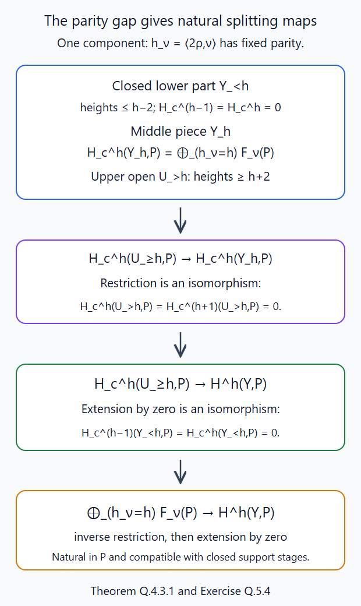
Within one component all heights have one parity. Theorem Q.4.2.1 gives concentration on each height piece. The upper gap makes compact restriction to \(Y_h\) invertible; the lower gap makes extension by zero into proper \(Y\) invertible. Their inverse-and-forward composite gives the degree-\(h\) splitting of Theorem Q.4.3.1. This diagram shows the exact adjacent vanishings used; Exercise Q.5.4 checks them in a three-height example. Editable SVG source.

Q.4.3. The splitting consists of natural localization maps
Theorem Q.4.3.1. There is a canonical natural decomposition, independent of support stage, \[ H^*(\operatorname{Gr}_G,P) =\bigoplus_\nu F_\nu(P),\qquad F_\nu(P)\text{ has cohomological degree }h_\nu. \tag{Q.4.3.1} \] Only finitely many summands occur, and total cohomology is exact on the genuine equivariant rational perverse heart.
Proof. Work first in one component class \(\kappa\) of a finite support stage \(Y\). The component and closure calculations of §§1 and 11 give finitely many nonempty semi-infinite slices on \(Y\). Their heights have one parity: differences of their indices are coroot sums, and \(\langle2\rho,\alpha_i^\vee\rangle=2\). Put \[ Y_{\leq h}=\bigcup_{h_\eta\leq h}(S_\eta\cap Y),\qquad U_{\geq h}=Y\setminus Y_{<h},\qquad Y_h=\bigcup_{h_\eta=h}(S_\eta\cap Y). \] The finite semi-infinite closure calculation §1, equation(1.1), makes \(Y_{\leq h}\) closed: closure only adds lower indices, hence lower heights. It also makes the individual equal-height slices open and closed in \(Y_h\), since no new equal-height index is added. Therefore \[ H_c^h(Y_h,P)=\bigoplus_{h_\nu=h}F_\nu(P). \tag{Q.4.3.2} \]
Finite open–closed induction using Theorem Q.4.2.1 bounds compact cohomology of a union of these height strata to its heights. In particular \(U_{>h}\) has none in degrees \(h\) or \(h+1\), because its heights in this component are at least \(h+2\). Its localization triangle gives the actual restriction isomorphism \[ H_c^h(U_{\geq h},P)\xrightarrow{\sim}H_c^h(Y_h,P). \tag{Q.4.3.3} \] Likewise \(Y_{<h}\) has none in degrees \(h-1\) or \(h\), since its heights are at most \(h-2\). The localization triangle for \(U_{\geq h}\subset Y\) gives extension by zero \[ H_c^h(U_{\geq h},P)\xrightarrow{\sim}H^h(Y,P), \tag{Q.4.3.4} \] using properness of \(Y\).
Compose the inverse of (Q.4.3.3) with (Q.4.3.4), and use (Q.4.3.2). These actual natural maps give the degree-\(h\) decomposition. Repeat over all heights and over the finitely many open-and-closed component classes. This proves (Q.4.3.1). Closed support comparisons commute with both localization triangles by O.4.2.1 and Lemma Q.3.1.1; hence the decomposition is independent of stage. Each summand functor is exact by Theorem Q.4.2.1, and there are finitely many on any triangle of finite support, so total cohomology is exact as well. No choice of a vector-space splitting or degeneration argument was substituted for these maps. □
Q.5. Four solved checks for rational contraction and weights
Q.5.1. The line with its point class
Exercise Q.5.1 (introductory). For the standard action on \(\mathbf A^1_k\), take \(F=\widehat E_{\mathbf A^1}\). Compute both sides of the hyperbolic map at the fixed point \(0\). Include the Tate shifts and identify the map's normalization.
Solution. The attracting scheme is \(\mathbf A^1\) and the repelling scheme is the point. Thus the negative side is \[ s^!\widehat E_{\mathbf A^1}=\widehat E(-1)[-2], \] by P.4.3, and the positive side is \[ R\Gamma_c(\mathbf A^1,\widehat E)=\widehat E(-1)[-2] \] by (Q.1.2.3). In (Q.3.1.3) the unit and fixed projector are identities, so the hyperbolic map is the zero-section counit followed by compact image. After tensoring with \(\widehat E(1)[2]\), its composite with the affine-line trace is \(1_E\), by \(qs=1\) and the composed counit calculation of P.4.3. Both resulting one-dimensional vector spaces are in degree zero and that composite is the identity. Hence the hyperbolic map carries the positive point class to the degree-normalized compact generator. Before the tensor and shift, both sides have their sole cohomology in degree two with coefficient \(E(-1)\). □
Q.5.2. A weight difference divisible by the characteristic
Exercise Q.5.2 (intermediate). Let \(k\) have characteristic \(p>0\). On \(\mathbf P(k_a\oplus k_b)\), let \(a=p\), \(b=0\), and let \(Y\) be the chart with the \(b\)-coordinate nonzero. Give an affine equation for the action graph closure and its two projections. Check the special fiber and explain why no inverse to \(p\) is needed.
Solution. With chart coordinate \(y=y_a/y_b\), the action sends \(y\) to \(t^p y\). The graph closure in the second identical chart is \[ z=t^p y\quad\subset\mathbf A^1_t\times\mathbf A^1_y\times\mathbf A^1_z. \] It is isomorphic to \(\mathbf A^1_t\times\mathbf A^1_y\). Its first projection is the identity isomorphism; its second projection is \((t,y)\mapsto(t,t^p y)\). The latter is an isomorphism over \(t\ne0\), with inverse \(y=t^{-p}z\), and at \(t=0\) its second coordinate is zero. This is the special-fiber fixed section required in Lemma Q.2.1.1.
The derivative of \(t^p\) in characteristic \(p\) is zero, but neither projection is claimed smooth at the special fiber and the proof uses no derivative or division by \(p\). Properness is required for the first projection, which here is an isomorphism. The graph unit is inverted only over \(t\ne0\). Thus the action-graph proof covers this weight difference, while the coefficient hypothesis is solely \(\ell\ne p\). □
Q.5.3. Why ordinary contraction is pushed to the fixed base
Exercise Q.5.3 (intermediate). In \(\mathbf P(k_{2}\oplus k_{0}\oplus k_{1})\), use coordinates \([x:y:z]\) of weights \(2,0,1\), take \(A=k_2\), \(B=k_0\oplus k_1\), and \(Y=\mathbf P(A\oplus B)\setminus\mathbf P(A)\). Let \(C\subset Y\) be the closed curve \(xy=z^2\), and \(F=b_*\widehat E_C\) for its closed inclusion \(b\). Show that \(F\) is equivariant. At the point \(v=[y:z]=[1:1]\) of \(Z=\mathbf P(B)\), compare the stalks of \(R\pi_*F\) and \(i^*F\). Verify the comparison after image to \(\operatorname{Spec}k\).
Solution. If \(y=0\) on \(C\), its equation forces \(z=0\) at every underlying point, leaving only the excluded point \(\mathbf P(A)\). Thus \(C\) lies in the chart \(y\ne0\), where \[ C=\{(x/y,z/y)=(t^2,t)\}\simeq\mathbf A^1_t. \] The equation \(xy=z^2\) is homogeneous for the action weights as well as for projective degree. The action on its parameter is \(t\mapsto\lambda t\), so the constant sheaf and its closed image have genuine equivariance. Projection sends \(t\) to \([1:t]\), the open chart \(j:\mathbf A^1\hookrightarrow\mathbf P^1=Z\). Consequently \[ R\pi_*F=Rj_*\widehat E_{\mathbf A^1},\qquad (R\pi_*F)_v=E \] in degree zero, since \(v\) lies in that open chart. On the other hand \(Z\) is \(x=0\); its intersection with \(C\) has \(t^2=0\), supported at \(t=0\). Its étale/pro-étale coefficient sheaf is supported at that point, also in characteristic two, so \((i^*F)_v=0\). Therefore \(R\pi_*F\to i^*F\) is not an isomorphism on \(Z\).
After image along \(\tau:Z\to\operatorname{Spec}k\), the left side is \(R\Gamma(\mathbf A^1,E)=E\) by Lemma Q.1.2.1. The right side is the cohomology of the point-supported constant sheaf, also \(E\). The map is restriction of the affine-line constant complex at \(t=0\), hence the inverse of its ordinary unit, again by Lemma Q.1.2.1. This verifies the actual pushed comparison. The projective graph proof uses \(f=\tau\pi\), which is invariant; \(\pi\) itself moves the differently weighted \(B\)-coordinates. Its two graph composites agree with \(f\) and can differ with \(\pi\). This explains precisely why Theorem Q.2.2.1 asserts the pushed comparison. □
Q.5.4. The parity gap constructs the splitting
Exercise Q.5.4 (advanced). On one finite support component suppose the only heights are \(h-2,h,h+2\), and its compact complexes on the three height pieces are concentrated in those respective degrees. Prove the degree-\(h\) splitting by localization maps. Identify the exact adjacent vanishings needed.
Solution. The upper open piece \(U_{>h}\) is the height-\(h+2\) piece. Therefore \(H_c^h(U_{>h},P)=H_c^{h+1}(U_{>h},P)=0\). In the compact long exact sequence for \(U_{>h}\subset U_{\geq h}\), those two zero groups make restriction \[ H_c^h(U_{\geq h},P)\longrightarrow H_c^h(Y_h,P) \] an isomorphism. The closed lower piece \(Y_{<h}\) is concentrated in degree \(h-2\), so its groups in degrees \(h-1,h\) vanish. Those are precisely the two groups on either side of extension by zero in the compact long exact sequence for \(U_{\geq h}\subset Y\). Properness of \(Y\) consequently makes \[ H_c^h(U_{\geq h},P)\longrightarrow H^h(Y,P) \] an isomorphism. Composing its map with inverse restriction gives the canonical inclusion of all degree-\(h\) weight summands into \(H^h(Y,P)\). Naturality of both triangles makes the construction natural in \(P\).
If there were a height \(h+1\) piece, its possibly nonzero \(H_c^{h+1}\) could be the boundary obstruction to the first isomorphism. A height \(h-1\) piece could obstruct the second through \(H_c^{h-1}\). The fixed parity of heights removes exactly these two adjacent obstructions. This is why concentration alone, without that parity or another vanishing argument, would not establish these particular splitting maps. □
References
-
I. Mirković and K. Vilonen, Geometric Langlands duality and representations of algebraic groups over commutative rings, freely accessible arXiv text, §§3–4 for semi-infinite geometry and weight functors.
-
T. Braden, Hyperbolic localization of intersection cohomology, freely accessible arXiv text, Theorem 1 and §6.
-
T. Richarz, Spaces with \(\mathbb G_m\)-action, hyperbolic localization and nearby cycles, freely accessible arXiv text, §2 for the contraction and localization diagrams.
-
The Stacks Project, free online proofs: formal cover splitting, formal bundle comparison, tame surface form, transverse section, and smooth neighborhoods. Appendix A gives the required arguments and exact earlier programme proof locators.